Table of Contents
- Documentation Overview
- Using GMAT
- Tutorials
- 5. Simulating an Orbit
- 6. Simple Orbit Transfer
- 7. Target Finite Burn to Raise Apogee
- 8. Mars B-Plane Targeting
- Objective and Overview
- Configure Fuel Tank, Spacecraft properties, Maneuvers, Propagators, Differential Corrector, Coordinate Systems and Graphics
- Configure the Mission Sequence
- Create the First Target Sequence
- Configure the First Target Sequence
- Configure the Target desired B-plane Coordinates Command
- Configure the Prop 3 Days Command
- Configure the Prop 12 Days to TCM Command
- Configure the Vary TCM.V Command
- Configure the Vary TCM.N Command
- Configure the Vary TCM.B Command
- Configure the Apply TCM Command
- Configure the Prop 280 Days Command
- Configure the Prop to Mars Periapsis Command
- Configure the Achieve BdotT Command
- Configure the Achieve BdotR Command
- Run the Mission with first Target Sequence
- Run the Mission with first and second Target Sequences
- 9. Optimal Lunar Flyby using Multiple Shooting
- Objective and Overview
- Configure Coordinate Systems, Spacecraft, Optimizer, Propagators, Maneuvers, Variables, and Graphics
- Configure the Mission Sequence
- Overview of the Mission Sequence
- Define Initial Guesses
- Initialize Variables
- Vary and Set Spacecraft Epochs
- Vary Control Point States
- Apply Constraints at Control Points
- Propagate the Segments
- Compute Some Quantities and Apply Patch Constraints
- Apply Patch Point Constraints
- Apply Constraints on Mission Orbit
- Apply Cost Function
- Design the Trajectory
- 10. Mars B-Plane Targeting Using GMAT Functions
- 11. Finding Eclipses and Station Contacts
- 12. Electric Propulsion
- 13. Simulate DSN Range and Doppler Data
- Objective and Overview
- Create and configure the spacecraft, spacecraft transponder, and related parameters
- Create and configure the Ground Station and related parameters
- Define the types of measurements to be simulated
- Create and configure Force model and propagator
- Create and configure Simulator object
- Run the mission and analyze the results
- Create a more realistic GMAT Measurement Data (GMD)
- References
- Appendix A – Determination of Measurement Noise Values
- 14. Orbit Estimation using DSN Range and Doppler Data
- Objective and Overview
- Create and configure the spacecraft, spacecraft transponder, and related parameters
- Create and configure the Ground Station and related parameters
- Define the types of measurements that will be processed
- Create and configure Force model and propagator
- Create and configure BatchEstimatorInv object
- Run the mission and analyze the results
- References
- Appendix A – GMAT Message Window Output
- Appendix B – Zeroth Iteration Plots of Observation Residuals
- Appendix C – First Iteration Plots of Observation Residuals
- Reference Guide
- I. Resources
- AcceptFilter — Allows selection of data subsets for processing by the batch least squares estimator.
- Antenna — Transmits or receives an RF signal.
- Array — A user-defined one- or two-dimensional array variable
- Barycenter — The center of mass of selected celestial bodies
- BatchEstimatorInv — A batch least squares estimator
- CelestialBody — A celestial body model
- CoordinateSystem — An axis and origin pair
- ContactLocator — A line-of-sight event locator between a target Spacecraft and an observer GroundStation
- DifferentialCorrector — A numerical solver
- ElectricTank — A model of a tank containing fuel for an electric propulsion system
- ElectricThruster — An electric thruster model
- EclipseLocator — A Spacecraft eclipse event locator
- EphemerisFile — Generate spacecraft’s ephemeris data
- ErrorModel — Used to specify measurement noise for simulation and estimation, and to apply or estimate measurement biases.
- FileInterface — An interface to a data file
- FiniteBurn — A finite burn
- FminconOptimizer — The Sequential Quadratic Programming (SQP) optimizer, fmincon
- ForceModel — Used to specify force modeling options such as gravity, drag, solar radiation pressure, and non-central bodies for propagation.
- Formation — A collection of spacecraft.
- ChemicalTank — Model of a chemical fuel tank
- GMATFunction — Declaration of a GMAT function
- GroundStation — A ground station model.
- GroundTrackPlot — A user-defined resource that draws longitude and latitude time-history of a spacecraft
- ImpulsiveBurn — An impulsive maneuver
- LibrationPoint — An equilibrium point in the circular, restricted 3-body problem
- MatlabFunction — Declaration of an external MATLAB function
- NuclearPowerSystem — A nuclear power system
- OrbitView — A user-defined resource that plots 3-Dimensional trajectories
- Propagator — A propagator models spacecraft motion
- Receiver — Hardware that receives an RF signal.
- RejectFilter — Allows selection of data subsets for processing by the batch least squares estimator.
- ReportFile — Report data to a text file
- Simulator — Configures the generation of simulated tracking data measurements.
- SNOPT — The Sequential Quadratic Programming (SQP) optimizer, SNOPT
- SolarPowerSystem — A solar power system model
- SolarSystem — High level solar system configuration options
- Spacecraft — A spacecraft model
- Spacecraft Attitude — The spacecraft attitude model
- Spacecraft Ballistic/Mass Properties — The physical properties of the spacecraft
- Spacecraft Epoch — The spacecraft epoch
- Spacecraft Hardware — Add hardware to a spacecraft
- Spacecraft Navigation — There are a number of Spacecraft fields that are used exclusively to support GMAT's navigation capability.
- Spacecraft Orbit State — The orbital initial conditions
- Spacecraft Visualization Properties — The visual properties of the spacecraft
- String — A user-defined string variable
- TrackingFileSet — Manages the observation data contained in one or more external tracking data files.
- Transmitter — Defines the electronics hardware, attached to a GroundStation resource, that transmits an RF signal.
- Transponder — Defines the electronics hardware, typically attached to a spacecraft, that receives and automatically re-transmits an incoming signal.
- ChemicalThruster — A chemical thruster model
- Variable — A user-defined numeric variable
- VF13ad — The Sequential Quadratic Programming (SQP) optimizer, VF13ad
- XYPlot — Plots data onto the X and Y axes of a graph
- II. Commands
- Achieve — Specify a goal for a Target sequence
- Assignment (
=) — Set a variable or resource field to a value, possibly using mathematical expressions - BeginFiniteBurn — Model finite thrust maneuvers
- BeginMissionSequence — Begin the mission sequence portion of a script
- BeginScript — Execute free-form script commands
- CallGmatFunction — Call a GMAT function
- CallMatlabFunction — Call a MATLAB function
- CallPythonFunction — Call a Python function
- ClearPlot — Allows you to clear all data from an XYPlot
- EndFiniteBurn — Model finite thrust maneuvers in the mission sequence
- FindEvents — Execute an event location search
- For — Execute a series of commands a specified number of times
- GetEphemStates() — Function used to output initial and final spacecraft states from an ephemeris file
- Global — Declare Objects as global
- If — Conditionally execute a series of commands
- Maneuver — Perform an impulsive (instantaneous) maneuver
- MarkPoint — Allows you to add a special mark point character on an XYPlot
- Minimize — Define the cost function to minimize
- NonlinearConstraint — Specify a constraint used during optimization
- Optimize — Solve for condition(s) by varying one or more parameters
- PenUpPenDown — Allows you to stop or begin drawing data on a plot
- Propagate — Propagates spacecraft to a requested stopping condition
- Report — Allows you to write data to a text file
- RunEstimator — Ingests navigation measurements and generates an estimated state vector
- RunSimulator — Generates simulated navigation measurements
- Set — Configure a resource from a data interface
- Stop — Stop mission execution
- Target — Solve for condition(s) by varying one or more parameters
- Toggle — Allows you to turn data output off or on
- Vary — Specifies variables used by a solver
- While — Execute a series of commands repeatedly while a condition is met
- Write — Writes data to one or more of the following three destinations: the message window, the log file, or a ReportFile resource.
- III. System
- Calculation Parameters — Resource properties available for use by commands and output
- Color — Color support in GMAT resources and commands
- Command-Line Usage — Starting the
GMATapplication from the command line - #Include Macro — Load or import a script snippet
- Keyboard Shortcuts — Keyboard shortcuts in the graphical user interface
- MATLAB Interface — Interface to MATLAB system
- Python Interface — Interface to the Python programming language
- Script Language — The GMAT script language
- Startup File — The
gmat_startup_file.txtconfiguration file - Tracking Data Types for OD — This section describes tracking data types and file formats for orbit determination.
- Release Notes
- Index
List of Figures
- 3.1. GMAT Desktop (Windows)
- 3.2. Undocked Mission Tree
- 3.3. GMAT Script Editor
- 3.4. Default Resources tree
- 3.5. Folder menu for Spacecraft
- 3.6. Folder menu for Hardware
- 3.7. Resource menu
- 3.8. Parts of the script editor
- 3.9. Active script indicators
- 4.1. GMAT Root Directory Structure
- 4.2. GMAT Data Directory Structure
- 5.1. Spacecraft State Setup
- 5.2. Force Model Configuration
- 5.3. DefaultOrbitView Configuration
- 5.4. Propagate Command ParameterSelectDialog Configuration
- 5.5. Propagate Command Configuration
- 5.6. Orbit View Plot after Mission Run
- 6.1. Final Mission Sequence for the Hohmann Transfer
- 6.2. Prop One Day Command Configuration
- 6.3. Vary TOI Command Configuration
- 6.4. Perform TOI Command Configuration
- 6.5. Prop to Apoapsis Command Configuration
- 6.6. Achieve RMAG = 42165 Command Configuration
- 6.7. Vary GOI Parameter Selection
- 6.8. Vary GOI Command Configuration
- 6.9. Perform GOI Command Configuration
- 6.10. Achieve ECC = 0.005 Command Configuration
- 6.11. 3D View of Hohmann Transfer
- 7.1. ChemicalTank1 Configuration
- 7.2. ChemicalThruster1 Configuration
- 7.3. ChemicalThruster1 Thrust Coefficients
- 7.4. Attach ChemicalTank1 to DefaultSC
- 7.5. Attach ChemicalThruster1 to DefaultSC
- 7.6. Creation of FiniteBurn Resource FiniteBurn1
- 7.7. Creation of Variable Resource, BurnDuration
- 7.8. Prop To Perigee Command Configuration
- 7.9. Final Mission Sequence
- 7.10. Raise Apogee Command Configuration
- 7.11. Vary Burn Duration Command Configuration
- 7.12. Turn Thruster On Command Configuration
- 7.13. Prop BurnDuration Command Configuration
- 7.14. Turn Thruster Off Command Configuration
- 7.15. Prop To Apogee Command Configuration
- 7.16. Achieve Apogee Radius = 12000 Command Configuration
- 7.17. 3D View of Finite Burn to Raise Apogee
- 8.1. Geometry of the B-Plane as seen from a viewpoint perpendicular to the B-Plane
- 8.2. The B-vector as seen from a viewpoint perpendicular to orbit plane
- 8.3. Mission Sequence for the First Target sequence
- 8.4. Target desired B-plane Coordinates Command Configuration
- 8.5. Prop 3 Days Command Configuration
- 8.6. Prop 12 Days to TCM Command Configuration
- 8.7. Vary TCM.V Command Configuration
- 8.8. Vary TCM.N Parameter Selection
- 8.9. Vary TCM.N Command Configuration
- 8.10. Vary TCM.B Parameter Selection
- 8.11. Vary TCM.N Command Configuration
- 8.12. Apply TCM Command Configuration
- 8.13. Prop 280 Days Command Configuration
- 8.14. Prop to Mars Periapsis Command Configuration
- 8.15. Achieve BdotT Command Configuration
- 8.16. Achieve BdotR Command Configuration
- 8.17. 3D View of departure hyperbolic trajectory (EarthView)
- 8.18. 3D View of heliocentric transfer trajectory (SolarSystemView)
- 8.19. 3D View of approach hyperbolic trajectory. MAVEN stopped at periapsis (MarsView)
- 8.20. Mission Sequence showing first and second Target sequences
- 8.21. Prop for 1 day Command Configuration
- 8.22. Mars Capture Command Configuration
- 8.23. Vary MOI Parameter Selection
- 8.24. Vary MOI Command Configuration
- 8.25. Apply MOI Command Configuration
- 8.26. Prop to Mars Apoapsis Command Configuration
- 8.27. Achieve RMAG Command Configuration
- 8.28. 3D view of Mars Capture orbit after MOI maneuver (MarsView)
- 9.1. View of Lunar Flyby from Normal to Earth Equator
- 9.2. View of Lunar Flyby Geometry
- 9.3. Definition of Control and Patch Points
- 9.4. View of Discontinuous Trajectory
- 9.5. Alternate View (1) of Discontinuous Trajectory
- 9.6. Alternate View (2) of Discontinuous Trajectory
- 9.7. Smooth Trajectory Solution
- 9.8. Optimal Trajectory Solution
- 9.9. Solution Using New Guess
- 10.1. Geometry of the B-Plane as seen from a viewpoint perpendicular to the B-Plane
- 10.2. The B-vector as seen from a viewpoint perpendicular to orbit plane
- 10.3. Mission Sequence for the First Target sequence
- 10.4. Make Objects Global Command Configuration
- 10.5. Target Desired B-Plane Coord. From Inside Function Command Configuration
- 10.6. Report Parameters Command Configuration
- 10.7. 3D View of departure hyperbolic trajectory (EarthView)
- 10.8. 3D View of heliocentric transfer trajectory (SolarSystemView)
- 10.9. 3D View of approach hyperbolic trajectory. MAVEN stopped at periapsis (MarsView)
- 10.10. Mission Sequence showing first and second Target sequences
- 10.11. Prop for 1 day Command Configuration
- 10.12. Mars Capture Command Configuration
- 10.13. Vary MOI Parameter Selection
- 10.14. Vary MOI Command Configuration
- 10.15. Apply MOI Command Configuration
- 10.16. Prop to Mars Apoapsis Command Configuration
- 10.17. Achieve RMAG Command Configuration
- 10.18. 3D view of Mars Capture orbit after MOI maneuver (MarsView)
- 12.1. ElectricThruster1 Configuration
- 12.2. ElectricTank1 Configuration
- 12.3. SolarPowerSystem1 Configuration
- 12.4. Attach ElectricTank1 to DefaultSC
- 12.5. Attach ElectricThruster1 to DefaultSC
- 12.6. Attach SolarPowerSystem1 to DefaultSC
- 12.7. Creation of FiniteBurn Resource FiniteBurn1
- 12.8. Final Mission Sequence
- 12.9. Prop To Perigee Command Configuration
- 12.10. 3D View of Finite Electric Maneuver
List of Tables
- 5.1. Sat Orbit State Settings
- 6.1. DefaultOrbitView settings
- 6.2. Additional Target Sequence Commands
- 7.1. Additional Target Sequence Commands
- 8.1. MainTank settings
- 8.2. MAVEN settings
- 8.3. NearEarth settings
- 8.4. DeepSpace settings
- 8.5. NearMars settings
- 8.6. EarthView settings
- 8.7. SolarSystemView settings
- 8.8. MarsView settings
- 8.9. Additional First Target Sequence Commands
- 8.10. Additional Second Target Sequence Commands
- 10.1. MainTank settings
- 10.2. MAVEN settings
- 10.3. NearEarth settings
- 10.4. DeepSpace settings
- 10.5. NearMars settings
- 10.6. EarthView settings
- 10.7. SolarSystemView settings
- 10.8. MarsView settings
- 10.9. Additional Second Target Sequence Commands
- 24. Multiple platforms
- 25. Windows
- 26. Mac OS X
- 27. Linux
Table of Contents
Welcome, and thank you for using GMAT! This User Guide contains a wealth of material to introduce you to GMAT and how it works. It also provides an extensive Reference Guide that contains data on every Resource, Command, and major subcomponent in the system.
The Using GMAT chapter contains high level and introductory information on the sytem. If you need information on how to install and run the system, would like a tour of the system, want know how to configure data files, or how GMAT is organized, start here.
The Using GMAT section provides general information on GMAT and how to use the software.
The Welcome to GMAT contains a brief project and software overview, including project status, licensing, and contributors.
The Getting Started section describes how to get and install GMAT, how to run the provided samples, and where to turn for further help.
The Tour of GMAT is an in-depth guide through some of the key interface features, including the Resources tree, Mission tree, Command Summary, and Script Editor.
Note
We consider the User Interfaces Overview section to be essential reading, as it describes some fundamental aspects of how GMAT works.
The Tutorials section contains in-depth tutorials that show you how to use GMAT for end-to-end analysis. The tutorials are designed to teach you how to use GMAT in the context of performing real-world analysis and are intended to take between 30 minutes and several hours to complete. Each tutorial has a difficulty level and an approximate duration listed with any prerequisites in its introduction, and are arranged in a general order of difficulty.
Here is a summary of selected Tutorials. For a complete list of tutorials see the Tutorials chapter.
The Simulating an Orbit tutorial is the first tutorial you should take to learn how to use GMAT to solve mission design problems. You will learn how to specify an orbit and propagate to orbit periapsis.
The Mars B-Plane Targeting tutorial shows how to perform targeting by application to a Mars transfer trajectory where you will target desired B-plane conditions at Mars.
The Target Finite Burn to Raise Apogee tutorial shows how to use finite maneuvers with an application to orbit apogee raising.
The Finding Eclipses and Station Contacts tutorial shows how to use GMAT to locate elipses and station contacts.
The Electric Propulsion tutorial shows how to configure GMAT to model electric propulsion systems.
The Mars B-Plane Targeting Using GMAT Functions tutorial shows how to use GMAT functions to extend your analysis.
The Reference Guide contains individual topics that describe each of GMAT's resources and commands. When you need detailed information on syntax or application-specific examples for specific features, go here. It also includes system-level references that describe the script language syntax, parameter listings, external interfaces, and configuration files.
The Resources section provides general information on GMAT Resources such as Spacecraft, Propagators, Coordinate Systems, and EphemerisFiles to name just a few. Go here for details regarding syntax, options, variable ranges and data types, defaults, and expected behavior. Each section contains detailed, copy-and-paste ready examples.
The Commands section provides general information on GMAT Commands such as Maneuver, Assignment, Optimize, and Propagate to name just a few. Go here for details regarding syntax, options, variable ranges and data types, defaults, and expected behavior. Each section contains detailed, copy-and-paste ready examples.
The System section provides information on system configuration, external interfaces, the script language, and the command line interface.
Note
This document uses two typographical conventions throughout:
Graphical user interface (GUI) elements and resource and command names are presented in bold.
Filenames, script examples, and user input are presented in
monospace.
The Using GMAT chapter contains high level and introductory information on the sytem. If you need information on how to install and run the system, would like a tour of the system, want know how to configure data files, or how GMAT is organized, start here.
The Using GMAT section provides general information on GMAT and how to use the software.
The Welcome to GMAT contains a brief project and software overview, including project status, licensing, and contributors.
The Getting Started section describes how to get and install GMAT, how to run the provided samples, and where to turn for further help.
The Tour of GMAT is an in-depth guide through some of the key interface features, including the Resources tree, Mission tree, Command Summary, and Script Editor.
Note
We consider the User Interfaces Overview section to be essential reading, as it describes some fundamental aspects of how GMAT works.
Table of Contents
The General Mission Analysis Tool (GMAT) is the world’s only enterprise, multi-mission, open source software system for space mission design, optimization, and navigation. The system supports missions in flight regimes ranging from low Earth orbit to lunar, libration point, and deep space missions. GMAT is developed by a team of NASA, private industry, public, and private contributors and is used for real-world mission support, engineering studies, as a tool for education, and public engagement.
GMAT is a feature rich system containing high fidelity space system models, optimization and targeting, built in scripting and programming infrastructure, and customizable plots, reports and data products, to enable flexible analysis and solutions for custom and unique applications. GMAT can be driven from a fully featured, interactive GUI or from a custom script language. Here are some of GMAT’s key features broken down by feature group.
Release R2017a is the first version of GMAT to contain production navigation functionality. We've also added the ability to read and export script snippets from external files, the ability to write STK .e ephem files, and added many new built-in math functions. See the R2017a Release Notes for other additions and bug fixes.
High fidelity dynamics models including harmonic gravity, drag, tides, and relativistic corrections
High fidelity spacecraft modeling
Formations and constellations
Impulsive and finite maneuver modeling and optimization
Propulsion system modeling including chemical and electric system
Solar System modeling including high fidelity ephemerides, custom celestial bodies, libration points, and barycenters
Rich set of coordinate system including J2000, ICRF, fixed, rotating, topocentric, and many others
SPICE kernel propagation
Propagators that naturally synchronize epochs of multiple vehicles and avoid fixed step integration and interpolation
Interactive 3-D graphics
Customizable data plots and reports
Post computation animation
CCSDS, SPK, and Code-500 ephemeris generation
Eclipse and station contact location
Boundary value targeters
Nonlinear, constrained optimization
Custom, scriptable cost functions
Custom, scriptable nonlinear equality and inequality constraint functions
Custom targeter controls and constraints
User defined variables, arrays, and strings
User defined equations using MATLAB syntax. (i.e. overloaded array operation)
Control flow such as If, For, and While loops for custom applications
Matlab interface
Python interface
User-defined functions (sub-routines)
Built in parameters and calculations in multiple coordinate systems
Batch estimator
Extensive statistical results reporting
DSN data types
Beta SN and GN data types (turned off but can be turned on for experimentation)
Measurement data editing
Media corrections
Error modeling
Fully featured, interactive GUI that makes simple analysis quick and easy
Custom scripting language that makes complex, custom analysis possible
Matlab interface for custom external simulations and calculations
Python interface for custom external simulations and calculations
File interface for the TCOPS Vector Hold File format, for loading of initial spacecraft data
Command line interface for batch analysis
GMAT has enabled and enhanced missions in nearly every NASA flight regime including enabling new mission types, extending the life of existing missions, and enabling new science observations. GMAT has supported 8 NASA missions and 10+ NASA proposal efforts. The system has experienced broad application and adoption around the world. To date, GMAT has been used by over 30 organizations, with 15 universities and 12 commercial firms publishing results in the open literature.
GMAT has been rigorously tested on the Windows 7 platform and we perform nightly regression tests running almost 14,000 test cases for the system core and over 4000 test cases for the GUI interface. The system core has been rigorously tested on Windows 10, but the GUI has only undergone preliminary testing on that platform. The Mac and Linux console versions are rigorously tested, but the GUI is provided in alpha form on those platforms. Note that this is the first 64-bit version of GMAT on Windows. 32-bit versions are no longer distributed.
The following plugin modules do not run under this release of GMAT on Mac and Linux platforms:
libFmincon
Optimizer libMarsGRAM
and the Mac release does not support the following plugin:
libMsise86
GMAT is distributed with production and Alpha/Beta components. Components that are in Alpha/Beta status are turned off by default. The status of plugin components is shown below.
Production quality plugin components:
libDataInterface
libEphemPropagator
libEventLocator
libFormation
libGmatFunction
libNewParameters
libPythonInterface
libStation
libGmatEstimation
libMatlabInterface
libFminconOptimizer
libProductionPropagators
Alpha quality plugin components:
libCInterface
libGeometricMeasurements
libExtraPropagators
libPolyhedronGravity
libSaveCommand
libThrustFile
libEKF
Internal-only plugins (not included in public releases):
proprietary/libMarsGRAM
proprietary/libMsise86
proprietary/libNRLMsise00
proprietary/libSNOptimizer
proprietary/libVF13Optimizer
The Navigation and Mission Design Branch at NASA’s Goddard Space Flight Center performs project management activities and is involved in most phases of the development process including requirements, algorithms, design, and testing. The Ground Software Systems Branch performs design, implementation, and integration testing. External particpants contribute to design, implementation, testing and documentation. We use a collaborative development model that enables innovation and actively involves the public and private sector having seen contributions from 12 commercial firms. External participants for R2017a include:
Thinking Systems, Inc. (system architecture and all aspects of development)
Omitron, Inc (testing, requirements, specifications)
Emergent Space Technologies, Inc.
Korea Aerospace Research Institute
Chonbuk National University, South Korea
Korea Advanced Institute of Science and Technology
Yonsei University, South Korea
Past commercial and external contributors to GMAT include:
Air Force Research Lab (all aspects of development)
Boeing (algorithms and testing)
The Schafer Corporation (all aspects of development)
Honeywell Technology Solutions (testing)
Computer Sciences Corporation (requirements)
The NASA Jet Propulsion Laboratory (JPL) has provided funding for integration of the SPICE toolkit into GMAT. Additionally, the European Space Agency’s (ESA) Advanced Concepts team has developed optimizer plug-ins for the Non-Linear Programming (NLP) solvers SNOPT (Sparse Nonlinear OPTimizer) and IPOPT (Interior Point OPTimizer).
Installers and application bundles are available on the GMAT
SourceForge project page, located at
https://sourceforge.net/projects/gmat.
The following packages are available for the major platforms:
| Installer | Binary bundle | Source code | |
|---|---|---|---|
| Windows (7,10) | ✔ | ✔ | ✔ |
| Mac OS X | ✔ | ✔ | |
| Linux | ✔ | ✔ |
To use the Windows installer, download the appropriate
gmat-winInstaller-*.exe file from the SourceForge
download page and run it. You'll be asked a series of questions, and GMAT
will be installed to your local user account.
By default, GMAT installs to the %LOCALAPPDATA%
folder in your user directory, and does not require elevated privileges to
install. On Windows Vista and Windows 7, this generally corresponds to the
C:\Users\
folder. You are free to choose another install location during the
installation process, but elevated privileges may be required to do
so.username\AppData\Local
A binary bundle is available on Windows as a
.zip archive. To use it, unzip it anywhere in your
file system, making sure to keep the folder structure intact. To run GMAT,
run the GMAT\bin\GMAT.exe executable in the extracted
folder.
GMAT is available as a platform-independent source code bundle. Note that all testing is performed on Windows, so on other platforms it is considered a beta release. See the GMAT Wiki for compiling instructions.
Rather than compiling from the source bundle, however, we generally recommend checking out a snapshot from the Subversion repository:
svn://svn.code.sf.net/p/gmat/code
There are tags available for reach release.
On Microsoft Windows platforms there are several ways to start a
GMAT session. If you used the GMAT installer, you can click the
item in the
menu. If you installed GMAT from a
.zip file or by compiling the system, locate the GMAT
bin directory double-click
GMAT.exe.
To start GMAT from the command line, run
GMAT.exe. Various command-line parameters are
available; see Command-Line Usage for
details.
The GMAT distribution includes more than 30 sample missions. These samples show how to apply GMAT to problems ranging from the Hohmann transfer to libration point station-keeping to trajectory optimization. To locate and run a sample mission:
Open GMAT.
On the toolbar click Open.
Navigate to the
samplesfolder located in the GMAT root directory.Double-click a script file of your choice.
Click Run (
 ).
).
To run optimization missions, you will need MATLAB and the MATLAB
Optimization Toolbox or the internal libVF13Optimizer
plugin. These are proprietary libraries and are not distributed with GMAT.
MATLAB connectivity is not yet fully supported in the Mac and Linux, and
therefore you cannot run optimization missions that use MATLAB’s
fmincon optimizer on those platforms. See MATLAB Interface for details on configuring the MATLAB
optimizer.
This User Guide provides documentation and tutorials for all of GMAT's feature. But if you have further questions, or want to provide feedback, here are some additional resources:
Homepage:
http://gmat.gsfc.nasa.govWiki:
http://gmatcentral.orgUser forums:
http://forums.gmatcentral.orgDownloads and source code:
http://sourceforge.net/projects/gmatSubmit bug reports and feature requests:
http://bugs.gmatcentral.orgOfficial contact:
<gmat@gsfc.nasa.gov>
Table of Contents
GMAT offers multiple ways to design and execute your mission. The two primary interfaces are the graphical user interface (GUI) and the script interface. These interfaces are interchangeable and each supports most of the functionality available in GMAT. When you work in the script interface, you are working in GMAT’s custom script language. To avoid issues such as circular dependencies, there are some basic rules you must follow. Below, we discuss these interfaces and then discuss the basic rules and best practices for working in each interface.
When you start a session, the GMAT desktop is displayed with a default mission already loaded. The GMAT desktop has a native look and feel on each platform and most desktop components are supported on all platforms.
When you open GMAT on Windows and click Run in the Toolbar, GMAT executes the default mission as shown in the figure below. The tools listed below the figure are available in the GMAT desktop.
Menu Bar | The menu bar contains , , and functionality. On Windows, the File menu contains standard Open, Save, Save As, and Exit functionality as well as Open Recent. The Edit menu contains functionality for script editing when the script editor is active. The Window menu contains tools for organizing graphics windows and the script editor within the GMAT desktop. Examples include the ability to Tile windows, Cascade windows and Close windows. The Help menu contains links to Online Help, Tutorials, Forums, and the Report An Issue option links to GMAT’s defect reporting system, the Welcome Page, and a Provide Feedback link. |
Toolbar | The toolbar provides easy access to frequently used controls such as file controls, Run, Pause, and Stop for mission execution, and controls for graphics animation. On Windows and Linux, the toolbar is located at the top of the GMAT window; on the Mac, it is located on the left of the GMAT frame. Because the toolbar is vertical on the Mac, some toolbar options are abbreviated. GMAT allows you to simultaneously edit the raw script file representation of your mission and the GUI representation of your mission. It is possible to make inconsistent changes in these mission representations. The GUI/Script Sync Status indicator located in the toolbar shows you the state of the two mission representations. See the the section called “GUI/Script Interactions and Synchronization” section for further discussion. |
Resources Tab | The Resources tab brings the Resources tree to the foreground of the desktop. |
Resources Tree | The Resources tree displays all configured GMAT resources and organizes them into logical groups. All objects created in a GMAT script using a Create command are found in the Resources tree in the GMAT desktop. |
Mission Tab | The Mission tab brings the Mission Tree to the foreground of the desktop. |
Mission Tree | The Mission tree displays GMAT commands
that control the time-ordered sequence of events in a mission. The
Mission tree contains all script lines that
occur after the
|
Output Tab | The Output tab brings the Output Tree to the foreground of the desktop. |
Output Tree | The Output tree contains GMAT output such as report files and graphical displays. |
Message Window | When you run a mission in GMAT, information including warnings, errors, and progress are written to the message window. For example, if there is a syntax error in a script file, a detailed error message is written to the message window. |
Status Bar | The status bar contains various informational messages about the state of the GUI. When a mission is running, a Busy indicator will appear in the left pane. The center pane displays the latitude and logitude of the mouse cursor as it moves over a ground track window. |

The GMAT script editor is a textual interface that lets you directly edit your mission in GMAT's built-in scripting language. In Figure 3.3, “GMAT Script Editor” below, the script editor is shown maximized in the GMAT desktop and the items relevant to script editing are labeled.

Scripts Folder | The GMAT desktop allows you to have multiple script files open simultaneously. Open script files are displayed in the Scripts folder in the Resources tree. Double click on a script in the Scripts folder to open it in the script editor. The GMAT desktop displays each script in a separate script editor. GMAT indicates the script currently represented in the GUI with a boldface name. Only one script can be loaded into the GUI at a time. |
Script Status Box | The Script Status box indicates whether or not the script being edited is loaded in the GUI. The box says Active Script for the script currently represented in the GUI and Inactive Script for all others. |
Save,Sync Button | The Save,Sync button saves any script file changes to disk, makes the script active, and synchronizes the GUI with the script. |
Save,Sync,Run Button | The Save,Sync,Run button saves any script file changes to disk, makes the script active, synchronizes the GUI with the script, and executes the script. |
Save As Button | When you click Save As, GMAT displays the Choose A File dialog box and allows you to save the script using a new file name. After saving, GMAT loads the script into the GUI, making the new file the active script. |
Close | The Close button closes the script editor. |
The GMAT desktop supports both a script interface and a GUI interface and these interfaces are designed to be consistent with each other. You can think of the script and GUI as different "views" of the same data: the resources and the mission command sequence. GMAT allows you to switch between views (script and GUI) and have the same view open in an editable state simultaneously. Below we describe the behavior, interactions, and rules of the script and GUI interfaces so you can avoid confusion and potential loss of data.
GMAT allows you to simultaneously edit both the script file representation and the GUI representation of your mission. It is possible to make inconsistent changes in these representations. The GUI/Script Sync Status window located in the toolbar indicates the state of the two representations. On the Mac, the status is indicated in abbreviated form in the left-hand toolbar. Synchronized (green) indicates that the script and GUI contain the same information. GUI Modified (yellow) indicates that there are changes in the GUI that have not been saved to the script. Script Modified (yellow) indicates that there are changes in the script that have not been loaded into the GUI. Unsynchronized (red) indicates that there are changes in both the script and the GUI.
Caution
GMAT will not attempt to merge or resolve simultaneous changes in the Script and GUI and you must choose which representation to save if you have made changes in both interfaces.
The Save button in the toolbar saves the GUI representation over the script. The button on the script editor saves the script representation and loads it into the GUI.
Clicking the Save button in the toolbar saves
the GUI representation to the script file; this is the same file you
edit when working in the script editor. GUI items that appear in the
Resources tree appear before the
BeginMissionSequence command in a script file and
are written in a predefined order. GUI items that appear in the Mission
Tree appear after the BeginMissionSequence command
in a script file in the same order as they appear in the GUI.
Caution
If you have a script file that has custom formatting such as spacing and data organization, you should work exclusively in the script. If you load your script into the GUI, then click Save in the toolbar, you will lose the formatting of your script. (You will not, however, lose the data.)
Clicking the Save,Sync button on the script
editor saves the script representation and loads it into the GUI. When
you work in a GMAT script, you work in the raw file that GMAT reads and
writes. Each script file must contain a command called
BeginMissionSequence. Script lines that appear
before the BeginMissionSequence command create and
configure models and this data will appear in the
Resources tree in the GUI. Script lines that appear
after the BeginMissionSequence command define your
mission sequence and appear in the Mission tree in
the GUI. Here is a brief script example to illustrate:
Create Spacecraft Sat Sat.X = 3000 BeginMissionSequence Sat.X = 1000
The line Sat.X = 3000 sets the x-component of the
Cartesian state to 3000; this value will appear on the
Orbit tab of the Spacecraft
dialog box. However, because the line Sat.X = 1000 appears
after the BeginMissionSequence command, the line
Sat.X = 1000 will appear as an assignment command in the
Mission tree in the GUI.
Each script file must contain one and only one
BeginMissionSequencecommand.GMAT commands are not allowed before the
BeginMissionSequencecommand.You cannot use inline math statements (equations) before the
BeginMissionSequencecommand in a script file. (GMAT considers in-line math statements to be an assignment command. You cannot use equations in the Resources tree, so you also cannot use equations before theBeginMissionSequencecommand.)In the GUI, you can only use in-line math statements in an assignment command. So, you cannot type
3000 + 4000orSat.Y - 8in the text box for setting a spacecraft’s dry mass.GMAT’s script language is case-sensitive.
For a more complete discussion of GMAT's script language, see the Script Language documentation.
The Resources tree displays GMAT resources and organizes them into logical groups and represents any objects that might be used or called in the Mission tree. This tree allows a user to add, edit, rename, or delete most available resources. The Resources tree can be edited either in the GMAT GUI or by loading or syncing a script file. All objects created in a GMAT script using a Create command are found in the Resources tree in the GMAT desktop. The default Resource tree is displayed below (Figure 3.4).

The Resources tree displays created resources organized into folders by object category. The SolarSystem and Solvers folders contain more specific folders which can be found by clicking the expand (+) icon. Conversely, folders can be collapsed by clicking the minimize (-) icon.
Resources can be added by right clicking the folder of the resource and clicking the resource type from the available menu. Most folders have only one available resource type; for example if the Spacecraft folder is right-clicked, the user can only click “” (Figure 3.5). Other folders have multiple objects that can be added and the user must first select the “” menu before selecting the object; for example to add a ChemicalTank, right click the “Hardware” folder, select “”, then the list of available resource types is displayed and the user can click “” (Figure 3.6). User-defined solar system resources are added by right-clicking either Sun or a default CelestialBody resource. By right-clicking Sun the user can add a Planet, Comet, or Asteroid to the solar system. By right-clicking a Planet the user can add a Moon to that Planet.

Resources can be edited by right-clicking on the resources and selecting one of the options from the menu (Figure 3.7).

To open a resource, you can either right-click the resource and select “”, or you can double click the resource. Conversely, the resource can be closed either by options in the resource properties window or selecting “” from the resource menu. When a resource is opened and the name is right-clicked in the Resource tree, the only options in the object menu are “” and “”.
Once a resource has been created, the user can rename it to any valid name. Valid names must begin with a letter and may be followed by any combination of letters digits and underscores. Invalid names include:
Folder names (eg, Spacecraft)
Command names (eg, Propagate)
Names already in use (eg, naming two variables “
var”)Keywords (eg, “
GMAT” or “function”)Names with spaces
Resources can be deleted by right clicking the object and selecting “Delete”. Resources cannot be deleted if they are used by another resource or command and an error with be thrown. For example, a Spacecraft resource cannot be deleted if one of its properties (eg. DefaultSC.A1ModJulian) is being used by the Report command. Some default objects cannot be deleted. In such cases, the Delete menu item will not be shown. They include:
Default coordinate systems
EarthMJ2000Eq
EarthMJ2000Ec
EarthFixed
EarthICRF
Default planetary bodies
Sun
Mercury
Venus
Earth
Luna
Mars
Jupiter
Saturn
Uranus
Neptune
Pluto
Objects can be cloned by selecting the “” option in the menu. A cloned object will be an exact copy of the original object with a different name. Some objects cannot be cloned. In such cases, the menu item will not be available. The only objects that cannot be cloned are:
Default coordinate systems (listed above)
Default planetary bodies (listed above)
Propagator resource objects
The Mission Tree is an ordered, hierarchical, display of your GMAT script command mission sequence (everything after the BeginMissionSequence in your script). It represents the ordered list of commands to be executed to model your mission. The hierarchical grouping in the mission tree represent commands that are executed inside a control logic command, e.g., If, For, While, etc. The mission tree allows you to add, edit, delete and rename commands. It allows you to configure or filter the display of the commands in the Mission Tree to make the command execution easier to understand or modify. An example Mission Tree screenshot is below. The Mission Tree window is made up of 2 elements: the Mission Sequence on the left and the view filters toolbar on the right.
 |
Warning
Edits to the Mission Tree will be reflected in your script after it is synchronized and vice-versa. If you edit the Mission Tree, you need to synchronize with the script to see it in the script editor. If you edit the script, you need to synchronize with the GUI to see your changes reflected in the Mission Tree.
The Mission Tree Display shows your hierarchical, ordered list of commands. Normally, the Mission Tree displays only the command name in the tree for each command node (more information such as command type, construction information, etc can be displayed using the Show Detail menu option). Commands are executed in the order they appear, e.g., GMAT executes commands from the top of the Mission Tree to the bottom. For control logic (If, For, and While) and the Optimize and Target commands, you can define a block of commands that execute as children of the parent command. These child commands of the control logic or the Optimize and Target commands appear indented. Use the plus (+) symbol to the left of the control logic command to show all the grouped commands and the minus (-) symbol to hide all the grouped commands. Commands that are grouped under control logic commands (e.g. If, For, and While) only execute if that control logic command is successfully executed (e.g., if the local expression evaluates to true for If command, or the loop condition evaluates to true for For and While commands).
In general, commands are executed only once. However, child commands grouped under the loop commands (e.g. For and While) may execute multiple times. These commands will execute for each time the loop command evaluates to true. Commands under the If commands are only executed if the If condition evaluates to true; otherwise, they are skipped. For the If-Else command, child commands grouped under the If portion of the command execute if the conditional statement evaluates to true; otherwise, the child commands grouped under the Else portion of the command execute.
Note
Note that all commands in the Mission Tree are grouped under a special Mission Sequence home item. This home item is always present as the first item in the Mission Tree and cannot be deleted.
The Mission Tree may display a subset of the commands of the full mission sequence based on your view filter options. There are 3 basic filtering options available within GMAT:
Filter by branch level
Filter by command types (inclusive)
Filter by command types (exclusive)
The view filters activate by clicking one of the view filter buttons to the right of the Mission Tree. The pressed (pushed in) button indicates which filter is currently enabled. The four buttons on the top are the Filter by branch level buttons. The next four buttons in the middle are the inclusive filter-by-command-types buttons, and the four buttons on the bottom are the exclusive filter-by-command-types buttons. The button at the very bottom of the view filters toolbar allows you to define a custom filter. You cannot combine filter-by-branch-level filters with the filter-by-command-type filters nor combine inclusive and exclusive command type filters. However, multiple inclusive command type filters can be combined (e.g., filter both physics related and solver related commands) or multiple exclusive command type filters can be combined.
Note
Note that all parents of a viewable command are displayed, even if the parent command is not part of the viewable command set.
Also note that the Mission Tree automatically reconfigures to show all commands when the user Appends or Inserts a new command.
Filtering by branch level causes GMAT to not display commands in the mission tree that are below a certain level. To select the number of levels you wish to display, click the buttons on the top. The four buttons correspond to (from top to bottom):
Show all branches
Show one level of branching
Show two levels of branching
Show three levels of branching
Only one filter-by-branch-level button may be active at a time. The default GMAT behavior is to display all branches of a mission tree.
GMAT allows you to filter what commands are displayed by their command type. You may select to only display commands that are in a filter command type set (inclusive) or only display commands that are not in a filter command type set (exclusive). GMAT provides both pre-configured command type sets (e.g., physics related or output related) and custom command type sets that you define
The four middle buttons in the View Options toolbar are pre-configured inclusive command filters, e.g., only display commands that are in the desired command set. The four inclusive filter buttons correspond to (from top to bottom):
Physics Related (Propagate, Maneuver, BeginFiniteBurn, and EndFiniteBurn)
Solver Related (Target, Optimize, Vary, Achieve, NonlinearConstraint, Minimize, EndTarget, EndOptimize)
ScriptEvent commands
Control Flow (If, If-Else, For, and While)
Multiple inclusive command type filters can be active at once. For example, to filter both physics related and solver related commands, click both the physics-related and solver-related filter buttons so that they appear pressed down. This option will show all physics related and solver related commands and hide all other commands (except Parents of the viewable commands)).
The four buttons at the bottom in the View Options toolbar are pre-configured exclusive command filters, e.g., only display commands that are not in the command set. The four exclusive filter buttons correspond to (from top to bottom):
Report
Equation
Output-related (Report, Toggle, PenUp, PenDown, MarkPoint, and ClearPlot)
Function calls (CallMatlabFunction)
Multiple exclusive command type filters can be active at once. For example, to show everything but Report and output-related commands, click both the Report and output-related filter buttons so that they appear pressed down.
Note
Note that the Mission Tree shows an ellipsis (…) after a command name if the command is followed by items not graphically displayed in the tree because of filter options.
The Mission Tree has two context-sensitive popup menus, depending on whether you right-click the Mission Sequence home item or a command in the Mission Tree. The Mission Sequence popup menu primarily allows you to manipulate the Mission Tree window and the entire command sequence. It also enables appending (adding to the end) commands to the mission tree.
Mission Sequence menu options are always available and active in the menu list.
This menu option collapses all the branches in the Mission Tree so that you only see the top-level commands. To show branches, click the plus (+) button next to a command or select from the Mission Sequence popup menu.
This menu option expands all the branches and sub-branches in the Mission Tree so that you see every command in the mission sequence. To hide branches, click the minus (-) button next to a command or select from the Mission Sequence popup menu.
The menu option displays the submenu of commands that can be appended to the mission sequence. This menu is not available when the Mission Tree view is filtered.
The menu option toggles an option to display the mission tree with short or verbose text. When the show detail menu option is checked, each command is displayed with the script line for the command (e.g. what appears in “Show Script” for the command). When the show detail menu option is unchecked, the mission tree shows only the label for the command which will be your custom label if you have provided one and a system provided label if you have not labelled the command. This menu option is always available.
The menu option displays a streamlined text view of the mission sequence in text window. This view shows a hierarchical view of every command (similar to a script view) in the mission sequence. Unlike the script editor, this view only includes the command names and labels. This menu option is always available.
The menu option displays the script associated with the GUI version of the current mission script. This is the complete script that would be saved to a file if you clicked the GUI save button. Note that when the GUI is unsynchronized with the script editor (please see Script Editor for more details), this mission script is different than the script displayed in the script editor. This menu option is always available
The menu option displays a mission simulation summary for the all commands in the mission sequence. This summary information includes spacecraft state information, spacecraft physical properties, time information, planetodetic properties, and other orbit data for each command. This information is only available after a mission simulation is run and the data shows state information after the execution of the command. Showing Mission Summary data for a ScriptEvent command is equivalent to showing summary data for the last command in that ScriptEvent. If commands are nested in control flow or solver branches, the summary data that is displayed is for the last pass through the sequence. This menu option is always available.
The menu option displays a mission simulation summary for physics related commands in the mission sequence. This summary information includes spacecraft state information, spacecraft physical properties, time information, planetodetic properties, and other orbit data for each command. This information is only available after a mission simulation is run and the data shows state information after the execution of the command. Note that if you have physics-based commands such as Propagate or Maneuver inside a ScriptEvent command, then summary information for those commands, are not displayed. Showing Mission Summary data for a ScriptEvent is equivalent to showing summary data for the last command in that ScriptEvent. If commands are nested in control flow or solver branches, the summary data that is displayed is for the last pass through the sequence. This menu option is always available.
The menu option docks the Mission Tree window in the notebook containing the Resources tree and Output tree. This option is only selectable if the Mission Tree is currently floating or undocked. Please see the Docking/Undocking/Placement section for more information.
The menu option undocks, or makes floating, the Mission Tree window from the Resources tree and Output tree. The undocked Mission Tree window may be resized, moved, maximized, minimized, and restored. This option is only selectable if the Mission Tree is currently docked. Please see the the section called “Docking/Undocking/Placement” section for more information.
The Command popup menu allows you to add, edit, or delete the commands in the Mission Tree by using the right mouse button. This displays a context sensitive menu for adding and modifying commands as well as viewing your command sequence and command summary. To add commands to the Mission Tree, right click a command and select , , or . To edit commands, double click the command name or right click and select .
Most commands in GMAT can appear anywhere in the mission sequence. However, there are some exceptions and the Command popup menu is context sensitive, meaning the options available under the menu change based on what command is selected and where in the tree the command occurs. Here is a complete list of context sensitivities:
and are not available unless the mission tree filter is set to show all levels.
Achieve commands can only appear inside of a Target sequence.
Vary commands can only appear in a Target or Optimize sequence,
NonlinearConstraint and Minimize commands can only appear in an Optimize sequence.
This menu option opens the command editor window for the selected command. The menu option is always active in the menu list. If the window is already open, the option brings the window to the front and makes it the active window.
This menu options closes the command editor window for the selected command. The menu option is always active in the menu list.
The menu option displays the submenu of commands that can be appended as the last sub-item of the selected command in the Mission Tree. As such, the menu option only appears when the selected tree item can contain sub-items, e.g., the Mission Sequence home item, control logic commands, and Optimize and Target commands. Note that the submenu is context-sensitive and will only show commands that may be appended to the selected command. Finally, this menu is not available when the Mission Tree view is filtered.
The menu option displays the submenu of commands that can be inserted after the selected command (and any child commands, if any) in the Mission Tree. Nominally, the new command is inserted at the same level as the selected command. However, if the selected command is the “End” command of a control logic or Optimize or Target command (e.g., End For, End If, End Optimize, etc), the new command is inserted after the End command and on the same level (e.g., the next level up) as the parent command. The menu option is always active in the menu list except when the Mission Sequence home item is selected. Note that the submenu is context-sensitive and will only show commands that may be added after the selected command. Finally, this menu is not available when the Mission Tree view is filtered.
The menu option displays the submenu of commands that can be inserted before the selected command (and any child commands, if any) in the Mission Tree. The new command is always inserted at the same level as the selected command. The Insert Before menu option is always active in the menu list except when the Mission Sequence Home item is selected. Note that the submenu is context-sensitive and will only show commands that may be added before the selected command. Finally, this menu is not available when the Mission Tree view is filtered.
The menu option displays a dialog box where you can rename the selected command. A command name may contain any characters except the single quote. Note that, unlike resources, command names do not have to be unique. The menu option is always active in the menu list except when the Mission Sequence home item is selected.
The menu option deletes the selected command. GMAT does not confirm the option before deletion occurs. The menu option is always active in the menu list except when the Mission Sequence home item is selected.
The menu option displays a mission simulation summary for the selected command, including spacecraft state information, time information, planetodetic properties, and other orbit data. This information is only available after a mission simulation run. This menu option is always available. However, command summary data is not available for Propagate command in single step mode. The button is available but no data is displayed.
The Mission Tree window may be used as a floating window or docked with the Resource tree. GMAT remembers the placement and docking status of the Mission Tree even after you quit. The undocked Mission Tree window may be resized, moved, or minimized. When the Mission Tree is undocked, and the user opens a dialog box for a GUI component, the dialog box does not cover the Mission Tree.
To undock the Mission Tree Display, either:
Right click and drag the Mission tab out of the Resource Tree window.
Right click the Mission Sequence home item and select .
To dock the Mission Tree display, either:
Left click the close button () of the undocked Mission Tree window.
RIght click the Mission Sequence home item and select .
The Command Summary is a summary of orbit and spacecraft state information after execution of a command. For example, if the command is a Propagate command, the Command Summary contains state data after propagation is performed.
To view the Command Summary, right-click on the desired command, and select Command Summary. Or alternatively, double-click on the desired command, and click the Command Summary icon located near the lower left corner of the panel. You must run the mission before viewing Command Summary data.
Snapshot of a sample Command Summary is shown in the following figure.
| 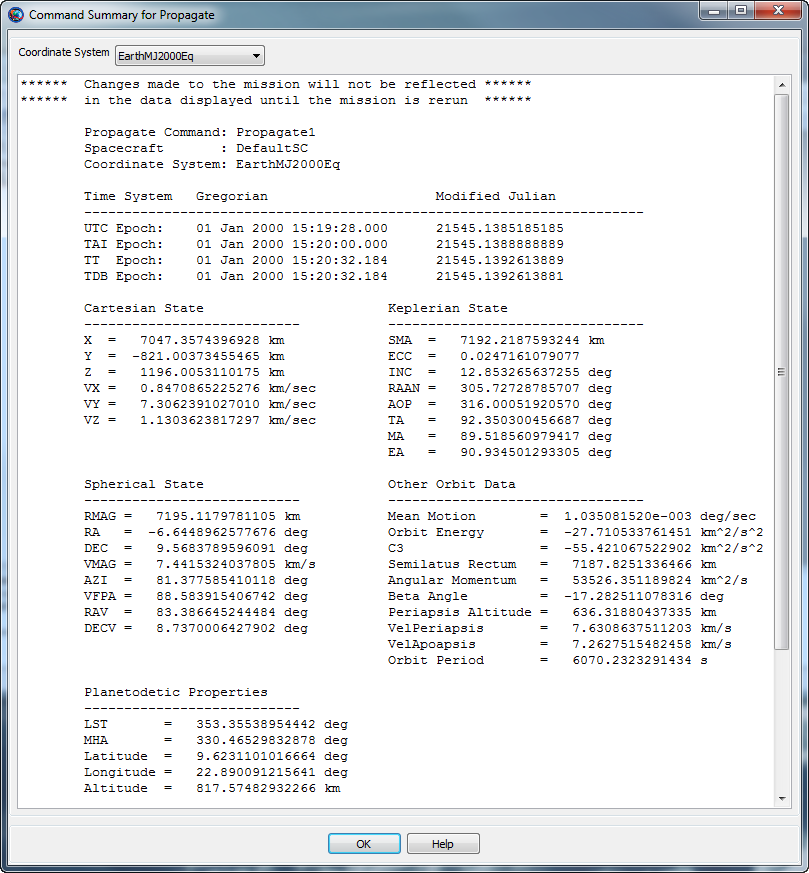 |
To view a Command Summary, you must first run the mission. If the mission has not been run during the current session, the Command Summary will be empty. If changes are made to your configuration, you must rerun the mission for those changes to take effect in the Command Summary.
The Command Summary contains several types of data. Orbit state representations include Cartesian, spherical, and Keplerian. For hyperbolic orbits, B-Plane coordinates, DLA and RLA are provided. Planetodetic information includes Longitude and Latitude among others. For a Maneuver command, the Maneuver properties are displayed in the CoordinateSystem specified on the ImpulsiveBurn resource. See the Coordinate Systems subsection below for more information on the command summary contents when some data is undefined.
In the event when the orbit is nearly singular conic section and/or any of the keplerian elements are undefined, an abbreviated Command Summary is displayed as shown in the Coordinate Systems subsection below.
For performance reasons, propagation in step mode does not write out a command summary. Additionally, if a command is nested in control logic and that command does not execute as a result, no command summary data is available.
The Coordinate System menu at the top of the Command Summary dialog allows you to select the desired coordinate system for the state data. When the Coordinate System has a celestial body at the origin, the Command Summary shows all supported data including Cartesian, Spherical, Keplerian, Other OrbitData, and Planetodetic properties as shown in the GUI screenshot above. When the Coordinate System does not have a celestial body at the origin, the CommandSummary contains an abbreviated command summary as shown below.
Note: GMAT currently requires that the selected CoordinateSystem cannot reference a spacecraft.
Propagate Command: Propagate1
Spacecraft : DefaultSC
Coordinate System: EarthMJ2000Eq
Time System Gregorian Modified Julian
--------------------------------------------------------------------
UTC Epoch: 01 Jan 2000 15:19:28.000 21545.1385185185
TAI Epoch: 01 Jan 2000 15:20:00.000 21545.1388888889
TT Epoch: 01 Jan 2000 15:20:32.184 21545.1392613889
TDB Epoch: 01 Jan 2000 15:20:32.184 21545.1392613881
Cartesian State Spherical State
--------------------------- ------------------------------
X = 7047.3574396928 km RMAG = 7195.1179781105 km
Y = -821.00373455465 km RA = -6.6448962577676 deg
Z = 1196.0053110175 km DEC = 9.5683789596091 deg
VX = 0.8470865225276 km/sec VMAG = 7.4415324037805 km/s
VY = 7.3062391027010 km/sec AZI = 81.377585410118 deg
VZ = 1.1303623817297 km/sec VFPA = 88.583915406742 deg
RAV = 83.386645244484 deg
DECV = 8.7370006427902 deg
Spacecraft Properties
------------------------------
Cd = 2.200000
Drag area = 15.00000 m^2
Cr = 1.800000
Reflective (SRP) area = 1.000000 m^2
Dry mass = 850.00000000000 kg
Total mass = 850.00000000000 kgThe Output tree contains data files and plots after a mission is executed. Files consist of output from ReportFile and EphemerisFile resources. Plots consist of graphical OrbitView, GroundTrackPlot, and XYPlots windows.
To display the contents of an output file, double-click the name in the Output tree. A simple text display window will appear with the contents of the file.
Graphical output is automatically displayed during the mission run, but double-clicking the name of the output window in the Output tree will bring that display to the front. If you close the display window, however, you must rerun the mission to display it again.
A populated Output tree is shown in the following figure.
A GMAT mission can be created in either the graphical user interface (GUI), or in a text script language. When a mission is loaded into the GUI from a script, or when it is saved from the GUI, there is a script file that can be accessed from the Scripts folder in the resources tree. When you open this script, it opens in a dedicated editor window called the Script Editor. While a GMAT script can be edited in any text editor, the GMAT script editor offers more features, such as:
GUI/script synchronization
Mission execution from the editor
Syntax highlighting
Comment/uncomment or indent blocks of text
Standard features like copy/paste, line numbering, find-and-replace, etc.
The following figure shows a basic script editor session with the major features labeled.

When you load a script into the GMAT GUI, it is added to the script list in the resources tree. GMAT can have many scripts loaded at any one time, but only one can be synchronized with the GUI. This script is called the active script, and is distinguished by a bolded name in the script list. The editor status indicator in the script editor for the active script shows “Active Script” as well. All other scripts are inactive, but can be viewed and edited in the script editor.

To synchronize with the GUI, you must make an inactive script active by clicking either of the synchronization buttons (described in the next section). This will change the current script to active, synchronize the GUI, and change the the previously active script to inactive. Alternately, you can right-click the script name in the resources tree and click Build.
GMAT provides two separate representations of a mission: a script file and the GUI resources and mission trees. As shown in Figure 3.8, “Parts of the script editor”, you can have both representations open and active at the same time, and can make changes in both places. The GUI/Script Sync Status indicator shows the current status of the two representations relative to each other. The following states are possible:
| Synchronized | The GUI and script representations are synchronized (they contain the same data). |
| Script Modified | The mission has been modified in the script representation, but has not been synchronized to the GUI. Use the synchronization buttons in the script editor to perform this synchronization. To revert the modifications, close the script editor without saving your changes. |
| GUI Modified | The mission has been modified in the GUI, but has not been synchronized to the script. To perform this synchronization, click the Save button in the GMAT toolbar. To revert the modifications, use the synchronization buttons in the script editor, or restart GMAT itself. |
| Unsynchronized | The mission has been modified both in the GUI and in the script. The changes cannot be merged; you have a choice of whether to save the modifications in either representations, or whether to revert either of them. See the notes above for instructions for either case. |
| Script Error | There is an error in the script. This puts the GUI in a minimal safe state. The error must be corrected before continuing. |
Warning
Saving modifications performed in the GUI will overwrite the
associated script. The data will be saved as intended, but with full
detail, including fields and settings that were not explicitly listed in
the original script. A copy of the original script with the extension
“.bak” will be saved alongside the new
version.
The script editor provides two buttons that perform synchronization from the script to the GUI. Both the Save,Sync and the Save,Sync,Run buttons behave identically, except that the Save,Sync,Run button runs the mission after synchronization is complete. The following paragraphs describe the behavior of the Save,Sync button only, but the description applies to both buttons. If you right-click the name of a script in the resources tree, a context menu is displayed with the items Save, Sync and . These are identical to the and buttons in the script editor.
When pressed, the Save,Sync button performs the following steps:
Saves any modifications to the script
Closes all open windows (except the script editor itself)
Validates the script file
Refreshes the GUI by loading the saved script
Sets GUI/Script Sync Status to Synchronized.
If the GUI has existing modifications, a confirmation prompt will be displayed. If confirmed, the GUI modifications will be overwritten.
If the script is not active, a confirmation prompt will be displayed. If confirmed, the script will be made active before the steps above are performed.
If the script has errors, the GUI will revert to an empty base state until all errors are corrected and the script is synchronized successfully.
The scripts folder in the Resources tree contains items for each script that has been loaded into GMAT. Individual scripts can be added to the list by right-clicking the Scripts folder and clicking .
The right-click menu for an individual script contains several options:
: opens the script in the edit window
: closes any open edit windows for this script
: opens the script and synchronizes it with the GUI, making it the active script. This is identical to the button in the script editor.
: builds the script (see above), and also runs it. This is identical to the button on the script editor.
: reloads the script from the last-saved version and refreshes the script editor
: removes the script from the script list
The edit window displays the text of the loaded script and provides tools to edit it. The edit window provides the following features:
Line numbering: Line numbers along the left side of the window
Syntax highlighting: Certain elements of the GMAT script language are colored for immediate recognition.
Folding: Script blocks (like For loops, Target sequences, etc.) can be collapsed by clicking the black downward-pointing triangle to the left of the command that begins the block.
If you right-click anywhere in the edit window, GMAT will display a context menu with the following options:
Undo/Redo: Undo or redo any number of changes since the last time the script was saved
Cut/Copy/Paste: Cut, copy, or paste over the current selection, or paste the current clipboard contents at the location of the cursor
Delete: Delete the current selection
Select All: Select the entire script contents
When the script editor is active in the GMAT GUI, the Edit menu is also available with the following options:
Undo/Redo: Undo or redo any number of changes since the last time the script was saved
Cut/Copy/Paste: Cut, copy, or paste over the current selection, or paste the current clipboard contents at the location of the cursor
Comment/Uncomment: Add or remove a comment symbol (
%) at the beginning of the current selectionSelect All: Select the entire script contents
Find/Replace: Starts the Find & Replace utility (see below)
Show line numbers: When selected (default), the editor window displays line numbering to the left of the script contents.
Goto: Place the cursor on a specific line number
Indent more/less: Adds or removes an indentation from the current line or selection. The default indentation is three space characters.
See the Keyboard Shortcuts reference page for the list of keyboard shortcuts that are available when working in the script editor:
On the menu, if you click or (or press Ctrl+F or Ctrl+H), GMAT displays the Find & Replace utility, which can be used to find text in the active script and optionally replace it with different text. The utility looks like the following figure.
To find text within the active script, type the text you wish to find in the Find What box and click Find Next or Find Previous. Find Next (F3) will start searching forward (below) the current cursor position, while Find Previous will start searching backward (above). If a match is found, the match will be highlighted. You can continue clicking Find Next or Find Previous to continue searching. The search text (in the Find What box) can be literal text only; wildcards are not supported. To replace found instances with different text, type the replacement text in the Replace With box. Click Replace to replace the currently-highlighted match and highlight the next match, or click to replace all matches in the file at once. The Find & Replace utility saves a history of text previously entered in the Find What and Replace With boxes in the current session. Click the down arrow in each box to choose a previously-entered value.
The Save button saves the current script without checking syntax or synchronizing with the GUI, and without switching the active script. The Save As button is identical, but allows you to save to a different file.
The Close button closes the script editor, and prompts you to save any unsaved changes.
Table of Contents
Below we discuss the files and data that are distributed with GMAT and are required for GMAT execution. GMAT uses many types of data files, including planetary ephemeris files, Earth orientation data, leap second files, and gravity coefficient files. This section describes how these files are organized and the controls provided to customize them.
The default directory structure for GMAT is broken into eight main
subdirectories, as shown in Figure 4.1, “GMAT Root Directory Structure”.
These directories organize the files and data used to run GMAT, including
binary libraries, data files, texture maps, and 3D models. The only two
files in the GMAT root directory are license.txt,
which contains the text of the Apache License 2.0, and
README.txt, which contains user information for the
current GMAT release. A summary of the contents of each subdirectory is
provided in the sections below.
The bin directory contains all binary files
required for the core functionality of GMAT. These libraries include the
executable file (GMAT.exe on Windows,
GMAT.app on the Mac, and GMAT
on Linux) and platform-specific support libraries. The
bin directory also contains two text files:
gmat_startup_file.txt and
gmat.ini. The startup file is discussed in detail
in a separate section below. The gmat.ini file is
used to configure some GUI panels, set paths to external web links, and
define GUI tooltip messages.
The data directory contains all required data
files to run GMAT and is organized according to data type, as shown in
Figure 4.2, “GMAT Data Directory Structure” and described below.
The graphics directory contains data files
for GMAT’s visualization utilities, as well as application icons and
images. The splash directory contains the GMAT
splash screen that is displayed briefly while GMAT is initializing. The
stars directory contains a star catalogue used for
displaying stars in 3D graphics. The texture folder contains texture
maps used for the 2D and 3D graphics resources. The
icons directory contains graphics files for icons
and images loaded at run time, such as the GMAT logo and GUI
icons.
The gravity directory contains gravity
coefficient files for each body with a default non-spherical gravity
model. Within each directory, the coefficient files are named according
to the model they represent, and use the extension
.cof.
The gui_config directory contains files for
configuring some of the GUI dialog boxes for GMAT resources and
commands. These files allow you to easily create a GUI panel for a
user-provided plugin, and are also used by some of the built-in GUI
panels.
The planetary_coeff directory contains the
Earth orientation parameters (EOP) provided by the International Earth
Rotation Service (IERS) and nutation coefficients for different nutation
theories.
The planetary_ephem directory contains
planetary ephemeris data in both DE and SPK formats. The
de directory contains the binary digital ephemeris
DE405 files for the 8 planets, the Moon, and Pluto developed and
distributed by JPL. The spk directory contains the
DE421 SPICE kernel and kernels for selected comets, asteroids and moons.
All ephemeris files distributed with GMAT are in the little-endian
format.
The time directory contains the JPL leap
second kernel naif0010.tls and the GMAT leap second
file tai-utc.dat.
The vehicle directory contains ephemeris data
and 3D models for selected spacecraft. The ephem
directory contains SPK ephemeris files, including orbit, attitude,
frame, and time kernels. The models directory
contains 3D model files in 3DS or POV format for use by GMAT’s
OrbitView visualization resource.
The docs directory contains end-user
documentation, including draft PDF versions of the Mathematical
Specification, Architectural Specification, and Estimation
Specification. The GMAT User’s Guide is available in the
help directory in PDF and HTML formats, and as a
Windows HTML Help file.
The extras directory contains various extra
convenience files that are helpful for working with GMAT but aren't part
of the core codebase. The only file here so far is a syntax coloring
file for the GMAT scripting language in the Notepad++ text
editor.
The matlab directory contains M-files
required for GMAT’s MATLAB interfaces, including the interface to the
fmincon optimizer. All files in the matlab
directory and its subdirectories must be included in your MATLAB path
for the MATLAB interfaces to function properly.
The output directory is the default location
for file output such as ephemeris files and report files. If no path
information is provided for reports or ephemeris files created during a
GMAT session, then those files will be written to the output
folder.
The plugins directory contains optional
plugins that are not required for use of GMAT. The
proprietary directory is used for for third-party
libraries that cannot be distributed freely and is an empty folder in
the open source distribution.
The samples directory contains sample
missions and scripts, ranging from a Hohmann transfer to libration point
station-keeping to Mars B-plane targeting. Example files begin with
"Ex_" and files that correspond to GMAT tutorials begin with "Tut_".
These files are intended to demonstrate GMAT’s capabilities and to
provide you with a potential starting point for building common mission
types for your application and flight regime. Samples with specific
requirements are located in subdirectories such as
NeedMatlab and
NeedVF13ad.
The userfunctions directory contains MATLAB,
Python, and GMAT functions that are included in the GMAT distribution.
You can also store your own custom functions in the subdirectories named
GMAT, Python, and MATLAB. GMAT includes those subdirectories in its
search path to locate functions referenced in GMAT scripts and GMAT
functions.
GMAT uses many emprical data files that are periodically updated. In
some cases files are updated by the owning organization as often as every
3 hours. GMAT is distributed with a python script
\utilities\python\GMATDataFileManager.py that automates
file updates, logs changes, and optionally archives old versions of data
files used by GMAT. See the help documentation contained in the Python
class for detailed usage instructions. Below we describe the emprical data
files used by GMAT, and which startup file variables are used to define
those files' locations on your system. The source of the data file and
comments describe where the files are obtained and how they are
used.
| Startup File Variable | Data Source | Comments |
|---|---|---|
| EOP_FILE | ftp://hpiers.obspm.fr/iers/series/ opa/eopc04_IAU2000/ | The EOP file used by GMAT’s astrodynamics routines. |
| EOP_FILE_SPICE | https://naif.jpl.nasa.gov/pub/naif/ generic_kernels/pck/ earth_latest_high_prec.bpc | The EOP file used by SPICE’s astrodynamics routines. |
| PLANETARY_PCK _FILE | https://naif.jpl.nasa.gov/pub/naif/ generic_kernels/pck/ | The SPICE planetary constants kernel containing orientation, size and shape data. As of release R2017a, the version is pck00010.pck. This can change and the file checks for new versions. |
| LEAP_SECS_FILE | ftp://maia.usno.navy.mil/ser7/tai-utc.dat | The leap second file used by GMAT’s astrodynamics routines. |
| LSK_FILE | https://naif.jpl.nasa.gov/pub/naif/generic_kernels/lsk/ | The leap second file used by SPICE's astrodynamics routines. As of release R2017a, the version is naif0012.tls. This can change and the file checks for new versions. |
| CSSI_FLUX_FILE | ftp://ftp.agi.com/pub/DynamicEarthData/SpaceWeather-All-v1.2.txt | The CSSI Space Weather File used for flux and geomagnetic indeces in drag modelling when a propgator is configured to use the CSSI file as the source for space weather modelling. |
| SCHATTEN_FILE | https://fdf.gsfc.nasa.gov/forms | Requires an account. Cannot be downloaded automatically. |
| IRI2007_APDATA | Constructed from CSSI_FLUX_FILE using GMATDataManager.py | Geomagnetic indices used in the IRI2007 model. |
| EARTH_PCK _PREDICTED_FILE | https://naif.jpl.nasa.gov/pub/naif/generic_kernels/pck/ | The SPICE kernel containing predicted, precession, nutation ,nutation corrections, UT1-TAI , and polar motion for the Earth. Used in SPICE's astrodynamic routines. |
| EARTH_PCK _CURRENT_FILE | https://naif.jpl.nasa.gov/pub/naif/generic_kernels/pck/ | The SPICE kernel containing historical, precession, nutation ,nutation corrections, UT1-TAI , and polar motion for the Earth. Used in SPICE's astrodynamic routines. |
| LUNA_PCK _CURRENT_FILE | https://naif.jpl.nasa.gov/pub/naif/generic_kernels/pck/ | Kernel providing orientation of Lunar Principal Axis (PA) reference frame. Used in SPICE's astrodynamic routines. |
| LUNA_FRAME _KERNEL_FILE | https://naif.jpl.nasa.gov/pub/naif/generic_kernels/fk/satellites/ | This frame kernel contains the latest specifications of lunar reference frames realizing the Lunar Principal Axis (PA) and Mean Earth/Polar Axis (ME) reference systems. Used in SPICE's astrodynamic routines. |
Custom plugins are loaded by adding a line to the startup file
(bin/gmat_startup_file.txt) specifying the name and
location of the plugin file. In order for a plugin to work with GMAT,
the plugin library must be placed in the folder referenced in the
startup file. For all details, see the Startup File
reference.
GMAT contains an interface to MATLAB. See the MATLAB Interface reference to configure the MATLAB interface.
GMAT contains an interface to Python. See the Python Interface reference to configure the MATLAB interface.
If you create custom MATLAB functions, you can provide the path to
those files and GMAT will locate them at run time. The default startup
file is configured so you can place MATLAB functions (with a
.m extension) in the
userfunctions/matlab directory. GMAT automatically
searches that location at run time. You can change the location of the
search path to your MATLAB functions by changing these lines in your
startup file to reflect the location of your files with respect to the
GMAT bin folder:
MATLAB_FUNCTION_PATH = ../userfunctions/matlab
If you wish to organize your custom functions in multiple folders, you can add multiple search paths to the startup file. For example,
MATLAB_FUNCTION_PATH = ../MyFunctions/utils MATLAB_FUNCTION_PATH = ../MyFunctions/StateConversion MATLAB_FUNCTION_PATH = ../MyFunctions/TimeConversion
GMAT will search the paths in the order specified in the startup file and will use the first function with a matching name.
The Tutorials section contains in-depth tutorials that show you how to use GMAT for end-to-end analysis. The tutorials are designed to teach you how to use GMAT in the context of performing real-world analysis and are intended to take between 30 minutes and several hours to complete. Each tutorial has a difficulty level and an approximate duration listed with any prerequisites in its introduction, and are arranged in a general order of difficulty.
Here is a summary of selected Tutorials. For a complete list of tutorials see the Tutorials chapter.
The Simulating an Orbit tutorial is the first tutorial you should take to learn how to use GMAT to solve mission design problems. You will learn how to specify an orbit and propagate to orbit periapsis.
The Mars B-Plane Targeting tutorial shows how to use GMAT to design a Mars transfer trajectory by targeting desired B-plane conditions at Mars.
The Target Finite Burn to Raise Apogee tutorial shows how to raise orbit apogee using finite maneuver targeting.
Table of Contents
- 5. Simulating an Orbit
- 6. Simple Orbit Transfer
- 7. Target Finite Burn to Raise Apogee
- 8. Mars B-Plane Targeting
- Objective and Overview
- Configure Fuel Tank, Spacecraft properties, Maneuvers, Propagators, Differential Corrector, Coordinate Systems and Graphics
- Configure the Mission Sequence
- Create the First Target Sequence
- Configure the First Target Sequence
- Configure the Target desired B-plane Coordinates Command
- Configure the Prop 3 Days Command
- Configure the Prop 12 Days to TCM Command
- Configure the Vary TCM.V Command
- Configure the Vary TCM.N Command
- Configure the Vary TCM.B Command
- Configure the Apply TCM Command
- Configure the Prop 280 Days Command
- Configure the Prop to Mars Periapsis Command
- Configure the Achieve BdotT Command
- Configure the Achieve BdotR Command
- Run the Mission with first Target Sequence
- Run the Mission with first and second Target Sequences
- 9. Optimal Lunar Flyby using Multiple Shooting
- Objective and Overview
- Configure Coordinate Systems, Spacecraft, Optimizer, Propagators, Maneuvers, Variables, and Graphics
- Configure the Mission Sequence
- Overview of the Mission Sequence
- Define Initial Guesses
- Initialize Variables
- Vary and Set Spacecraft Epochs
- Vary Control Point States
- Apply Constraints at Control Points
- Propagate the Segments
- Compute Some Quantities and Apply Patch Constraints
- Apply Patch Point Constraints
- Apply Constraints on Mission Orbit
- Apply Cost Function
- Design the Trajectory
- 10. Mars B-Plane Targeting Using GMAT Functions
- 11. Finding Eclipses and Station Contacts
- 12. Electric Propulsion
- 13. Simulate DSN Range and Doppler Data
- Objective and Overview
- Create and configure the spacecraft, spacecraft transponder, and related parameters
- Create and configure the Ground Station and related parameters
- Define the types of measurements to be simulated
- Create and configure Force model and propagator
- Create and configure Simulator object
- Run the mission and analyze the results
- Create a more realistic GMAT Measurement Data (GMD)
- References
- Appendix A – Determination of Measurement Noise Values
- 14. Orbit Estimation using DSN Range and Doppler Data
- Objective and Overview
- Create and configure the spacecraft, spacecraft transponder, and related parameters
- Create and configure the Ground Station and related parameters
- Define the types of measurements that will be processed
- Create and configure Force model and propagator
- Create and configure BatchEstimatorInv object
- Run the mission and analyze the results
- References
- Appendix A – GMAT Message Window Output
- Appendix B – Zeroth Iteration Plots of Observation Residuals
- Appendix C – First Iteration Plots of Observation Residuals
Table of Contents
Audience | Beginner |
Length | 30 minutes |
Prerequisites | None |
Script File |
|
Note
The most fundamental capability of GMAT is to propagate, or simulate the orbital motion of, spacecraft. The ability to propagate spacecraft is used in nearly every practical aspect of space mission analysis, from simple orbital predictions (e.g. When will the International Space Station be over my house?) to complex analyses that determine the thruster firing sequence required to send a spacecraft to the Moon or Mars.
This tutorial will teach you how to use GMAT to propagate a
spacecraft. You will learn how to configure
Spacecraft and Propagator
resources, and how to use the Propagate command to
propagate the spacecraft to orbit periapsis, which is the point of minimum
distance between the spacecraft and Earth. The basic steps in this
tutorial are:
Configure a
Spacecraftand define its epoch and orbital elements.Configure a
Propagator.Modify the default
OrbitViewplot to visualize the spacecraft trajectory.Modify the
Propagatecommand to propagate the spacecraft to periapsis.Run the mission and analyze the results.
In this section, you will rename the default
Spacecraft and set the
Spacecraft’s initial epoch and classical orbital
elements. You’ll need GMAT open, with the default mission loaded. To load
the default mission, click
( ) or start a new GMAT session.
) or start a new GMAT session.
In the Resources tree, double-click Sat. Click the Orbit tab if it is not already selected.
In the Epoch Format list, select UTCGregorian. You’ll see the value in the Epoch field change to the UTC Gregorian epoch format.
In in the Epoch box, type
22 Jul 2014 11:29:10.811. This field is case-sensitive, and must be entered in the exact format shown.Click or press the ENTER key to save these changes.
In the StateType list, select Keplerian. In the Elements list, you will see the GUI reconfigure to display the Keplerian state representation.
In the SMA box, type
83474.318.Set the remaining orbital elements as shown in the table below.
Click .
Click Save (
 ). If this is the first time you
have saved the mission, you’ll be prompted to provide a name and
location for the file.
). If this is the first time you
have saved the mission, you’ll be prompted to provide a name and
location for the file.
In this section you’ll rename the default
Propagator and configure the force model.
In the Resources tree, right-click DefaultProp and click .
Type
LowEarthProp.Click .
For this tutorial you will use an Earth 10×10 spherical harmonic model, the Jacchia-Roberts atmospheric model, solar radiation pressure, and point mass perturbations from the Sun and Moon.
In the Resources tree, double-click LowEarthProp.
Under Gravity, in the Degree box, type
10.In the Order box, type
10.In Atmosphere Model list, click JacchiaRoberts.
Click the Select button next to the Point Masses box. This opens the CelesBodySelectDialog window.
In the Available Bodies list, click Sun, then click -> to add Sun to the Selected Bodies list.
Add the moon (named Luna in GMAT) in the same way.
Click to close the CelesBodySelectDialog.
Select Use Solar Radiation Pressure to toggle it on. Your screen should now match Figure 5.2, “Force Model Configuration”.
Click .

Now you will configure an OrbitView plot so
you can visualize Sat and its trajectory. The orbit
of Sat is highly eccentric. To view the entire
orbit at once, we need to adjust the settings of
DefaultOrbitView.
In the Resources tree, double-click DefaultOrbitView.
In the three boxes to the right of View Point Vector, type the values
-60000,30000, and20000respectively.Under Drawing Option to the left, clear Draw XY Plane. Your screen should now match Figure 5.3, “DefaultOrbitView Configuration”.
Click .

This is the last step before running the mission. Below you will configure a Propagate command to propagate (or simulate the motion of) Sat to orbit periapsis.
Click the Mission tab to display the Mission tree.
Double-click Propagate1.
Under Stopping Conditions, click the () button to the left of Sat.ElapsedSecs. This will display the ParameterSelectDialog window.
In the Object List box, click Sat if it is not already selected. This directs GMAT to associate the stopping condition with the spacecraft Sat.
In the Object Properties list, double-click Periapsis to add it to the Selected Values list. This is shown in Figure 5.4, “Propagate Command ParameterSelectDialog Configuration”.
Click OK. Your screen should now match Figure 5.5, “Propagate Command Configuration”.
Click .


Congratulations, you have now configured your first GMAT mission and are ready to run the mission and analyze the results.
Click Save (
) to save your mission.Click the Run (
).
You will see GMAT propagate the orbit and stop at orbit periapsis. Figure 5.6, “Orbit View Plot after Mission Run” illustrates what you should see after correctly completing this tutorial. Here are a few things you can try to explore the results of this tutorial:
Manipulate the DefaultOrbitView plot using your mouse to orient the trajectory so that you can to verify that at the final location the spacecraft is at periapsis. See the OrbitView reference for details.
Display the command summary:
Click the Mission tab to display the Mission tree.
Right-click Propagate1 and select Command Summary to see data on the final state of Sat.
Use the Coordinate System list to change the coordinate system in which the data is displayed.
Click Start Animation () to animate the mission and watch the orbit propagate from the initial state to periapsis.
Table of Contents
Audience | Beginner |
Length | 30 minutes |
Prerequisites | Complete Simulating an Orbit |
Script File |
|
Note
One of the most common problems in space mission design is to design a transfer from one circular orbit to another circular orbit that lie within the same orbital plane. Circular coplanar transfers are used to raise low-Earth orbits that have degraded due to the effects of atmospheric drag. They are also used to transfer from a low-Earth orbit to a geosynchronous orbit and to send spacecraft to Mars. There is a well known sequence of maneuvers, called the Hohmann transfer, that performs a circular, coplanar transfer using the least possible amount of fuel. A Hohmann transfer employs two maneuvers. The first maneuver raises the orbital apoapsis (or lowers orbital periapsis) to the desired altitude and places the spacecraft in an elliptical transfer orbit. At the apoapsis (or periapsis) of the elliptical transfer orbit, a second maneuver is applied to circularize the orbit at the final altitude.
In this tutorial, we will use GMAT to perform a Hohmann transfer from a low-Earth parking orbit to a geosynchronous mission orbit. This requires a targeting sequence to determine the required maneuver magnitudes to achieve the desired final orbit conditions. In order to focus on the configuration of the targeter, we will make extensive use of the default configurations for spacecraft, propagators, and maneuvers.
The target sequence employs two velocity-direction maneuvers and two propagation sequences. The purpose of the first maneuver is to raise orbit apoapsis to 42,165 km, the geosynchronous radius. The purpose of the second maneuver is to nearly circularize the orbit and yield a final eccentricity of 0.005. The basic steps of this tutorial are:
Create and configure a
DifferentialCorrectorresource.Modify the
DefaultOrbitViewto visualize the trajectory.Create two
ImpulsiveBurnresources with default settings.Create a
Targetsequence to (1) raise apoapsis to geosynchronous altitude and (2) circularize the orbit.Run the mission and analyze the results.
For this tutorial, you’ll need GMAT open, with the default mission
loaded. To load the default mission, click New Mission
( ) or start a new GMAT session. We will
use the default configurations for the spacecraft
(DefaultSC), the propagator
(DefaultProp), and the two maneuvers.
DefaultSC is configured by default to a near-circular
orbit, and DefaultProp is configured to use Earth as
the central body with a nonspherical gravity model of degree and order 4.
You may want to open the dialog boxes for these objects and inspect them
more closely as we will leave them at their default settings.
) or start a new GMAT session. We will
use the default configurations for the spacecraft
(DefaultSC), the propagator
(DefaultProp), and the two maneuvers.
DefaultSC is configured by default to a near-circular
orbit, and DefaultProp is configured to use Earth as
the central body with a nonspherical gravity model of degree and order 4.
You may want to open the dialog boxes for these objects and inspect them
more closely as we will leave them at their default settings.
The Target sequence we will create later
needs a DifferentialCorrector resource to
operate, so let’s create one now. We'll leave the settings at their
defaults.
In the Resource tree, expand the Solvers folder if it isn’t already.
Right-click the Boundary Value Solvers folder, point to Add, and click DifferentialCorrector. A new resource called DC1 will be created.
We need to make minor modifications to so that the entire final orbit will fit in the graphics window.
In the Resource Tree, double-click to edit its properties.
Set the values shown in the table below.
Table 6.1. DefaultOrbitView settings
Field Value Solver Iterations, under Drawing Option Current Axis, under View Up Defintion X View Point Vector boxes, under View Definition 0,0, and120000respectivelyClick OK to save these changes.
We’ll need two ImpulsiveBurn resources for
this tutorial, both using default values. Below, we’ll rename the
default ImpulsiveBurn and create a new
one.
In the Resources tree, right-click DefaultIB and click Rename.
In the Rename box, type
TOI, an acronym for Transfer Orbit Insertion, and click .Right-click the Burns folder, point to Add, and click ImpulsiveBurn.
Rename the new ImpulsiveBurn1 resource to
GOI, an acronym for Geosynchronous Orbit Insertion.
Now we will configure a Target sequence to
solve for the maneuver values required to raise the orbit to
geosynchronous altitude and circularize the orbit. We’ll begin by creating
an initial Propagate command, then the
Target sequence itself, then the final
Propagate command. To allow us to focus on the
Target sequence, we’ll assume you have already
learned how to propagate an orbit to a desired condition by working
through the Chapter 5, Simulating an Orbit tutorial.
Click on the Mission tab to show the Mission tree.
Configure Propagate1 to propagate to
DefaultSC.Earth.Periapsis.Rename Propagate1 to
Prop To Periapsis.
Now create the commands necessary to perform the
Target sequence. Figure 6.1, “Final Mission Sequence for the Hohmann Transfer” illustrates the
configuration of the Mission tree after you have
completed the steps in this section. We’ll discuss the
Target sequence after it has been created.

To create the Target sequence:
In the Mission tree, right-click Prop To Periapsis, point to Insert After, and click Target. This will insert two separate commands: Target1 and EndTarget1.
Right-click Target1 and click .
Type
Hohmann Transferand click OK.Right-click Hohmann Transfer, point to Append, and click Vary.
Rename Vary1 to
Vary TOI.Complete the Target sequence by appending the commands in Table 6.2, “Additional Target Sequence Commands”.
Table 6.2. Additional Target Sequence Commands
Command Name Maneuver Perform TOIPropagate Prop To ApoapsisAchieve Achieve RMAG = 42165Vary Vary GOIManeuver Perform GOIAchieve Achieve ECC = 0.005
Note
Let’s discuss what the Target sequence
does. We know that two maneuvers are required to perform the Hohmann
transfer. We also know that for our current mission, the final orbit
radius must be 42,165 km and the final orbital eccentricity must be
0.005. However, we don’t know the size (or ΔV magnitudes) of the
maneuvers that precisely achieve the desired orbital conditions. You
use the Target sequence to solve for those
precise maneuver values. You must tell GMAT what controls are
available (in this case, two maneuvers) and what conditions must be
satisfied (in this case, a specific orbital radius and eccentricity).
You accomplish this using the Vary and
Achieve commands. Using the
Vary command, you tell GMAT what to solve for—in
this case, the ΔV values for TOI and
GOI. You use the Achieve
command to tell GMAT what conditions the solution must satisfy—in this
case, the final orbital conditions.
We need a Propagate command after the
Target sequence so that we can see our final
orbit.
In the Mission tree, right-click End Hohmann Transfer, point to , and click . A new Propagate3 command will appear.
Rename Propagate3 to
Prop One Day.Double-click Prop One Day to edit its properties.
Under Condition, replace the value
12000.0with86400, the number of seconds in one day.Click OK to save these changes.
Now that the structure is created, we need to configure the
various parts of the Target sequence to do what we
want.
Double-click Vary TOI to edit its properties. Notice that the variable in the Variable box is
TOI.Element1, which by default is the velocity component of TOI in the local Velocity-Normal-Binormal (VNB) coordinate system. That’s what we need, so we’ll keep it.In the Initial Value box, type
1.0.In the Max Step box, type
0.5.Click OK to save these changes.
Double-click Perform TOI to edit its properties. Notice that the command is already set to apply the TOI burn to the DefaultSC spacecraft, so we don’t need to change anything here.
Click .

Double-click Prop to Apoapsis to edit its properties.
Under Parameter, replace
DefaultSC.ElapsedSecswithDefaultSC.Earth.Apoapsis.Click OK to save these changes.
Double-click Achieve RMAG = 42165 to edit its properties.
Notice that Goal is set to DefaultSC.Earth.RMAG. This is what we need, so we make no changes here.
In the Value box, type 42164.169, a more precise number for the radius of a geosynchronous orbit (in kilometers).
Click to save these changes.

Double-click Vary GOI to edit its properties.
Next to Variable, click the Edit button.
Under Object List, click GOI.
In the Object Properties list, double-click Element1 to move it to the Selected Value(s) list. See the image below for results.
Click OK to close the ParameterSelectDialog window.
In the Initial Value box, type
1.0.In the MaxStep text box, type
0.2.Click OK to save these changes.

Double-click Perform GOI to edit its properties.
In the Burn list, click GOI.
Click OK to save these changes.
Double-click Achieve ECC = 0.005 to edit its properties.
Next to Goal, click the Edit button.
In the Object Properties list, double-click ECC.
Click OK to close the ParameterSelectDialog window.
In the Value box, type
0.005.In the Tolerance box, type
0.0001.Click to save these changes.
Before running the mission, click Save
( ) and save the mission to a file of your
choice. Now click Run (
) and save the mission to a file of your
choice. Now click Run ( ). As the mission runs, you will see
GMAT solve the targeting problem. Each iteration and perturbation is shown
in DefaultOrbitView window in light blue, and the
final solution is shown in red. After the mission completes, the 3D view
should appear as in to the image shown below. You may want to run the
mission several times to see the targeting in progress.
). As the mission runs, you will see
GMAT solve the targeting problem. Each iteration and perturbation is shown
in DefaultOrbitView window in light blue, and the
final solution is shown in red. After the mission completes, the 3D view
should appear as in to the image shown below. You may want to run the
mission several times to see the targeting in progress.
If you were to continue developing this mission, you can store the
final solution of the Target sequence as the initial
conditions of the TOI and GOI
resources themselves, so that if you make small changes, the subsequent
runs will take less time. To do this, follow these steps:
In the Mission tree, double-click Hohmann Transfer to edit its properties.
Click Apply Corrections.
Now re-run the mission. If you inspect the results in the message window, you will see that the
Targetsequence converges in one iteration because you stored the solution as the initial condition.
Table of Contents
Audience | Intermediate level |
Length | 45 minutes |
Prerequisites | Complete Simulating an Orbit and Simple Orbit Transfer |
Script File |
|
Note
One of the most common operational problems in space mission design is the design of a finite burn that achieves a given orbital goal. A finite burn model, as opposed to the idealized impulsive burn model used for preliminary design, is needed to accurately model actual spacecraft maneuvers.
In this tutorial, we will use GMAT to perform a finite burn for a spacecraft in low Earth orbit. The goal of this finite burn is to achieve a certain desired apogee radius. Since the most efficient orbital location to affect apoapsis is at periapsis, the first step in this tutorial is to propagate the spacecraft to perigee.
To calculate the duration of the perigee burn needed to achieve a desired apogee radius of 12000 km, we must create the appropriate targeting sequence. The main portion of the target sequence employs a Begin/End FiniteBurn command pair, for a velocity direction maneuver, followed by a command to propagate the spacecraft to orbit apogee.
The basic steps of this tutorial are:
Create and configure the Spacecraft hardware and FiniteBurn resources
Create the DifferentialCorrector and Target Control Variable
Configure the Mission Sequence. To do this, we will
Create Begin/End FiniteBurn commands with default settings.
Create a Target sequence to achieve a 12000 km apogee radius.
Run the mission and analyze the results.
For this tutorial, you’ll need GMAT open with the default mission
loaded. To load the default mission, click ( ) or start a new GMAT session. We will use the
default configurations for the spacecraft (DefaultSC)
and the propagator (DefaultProp).
DefaultSC is configured by default to a near-circular
orbit, and DefaultProp is configured to use Earth as
the central body with a nonspherical gravity model of degree and order 4.
You may want to open the dialog boxes for these objects and inspect them
more closely as we will leave them at their default settings.
) or start a new GMAT session. We will use the
default configurations for the spacecraft (DefaultSC)
and the propagator (DefaultProp).
DefaultSC is configured by default to a near-circular
orbit, and DefaultProp is configured to use Earth as
the central body with a nonspherical gravity model of degree and order 4.
You may want to open the dialog boxes for these objects and inspect them
more closely as we will leave them at their default settings.
To model thrust and fuel use associated with a finite burn, we must create a ChemicalThruster and a ChemicalTank and then attach the newly created ChemicalTank to the ChemicalThruster.
In the Resources tree, right-click on the Hardware folder, point to Add, and click ChemicalThruster. A resource named ChemicalThruster1 will be created.
In the Resources tree, right-click on the Hardware folder, point to Add, and click ChemicalTank. A resource named ChemicalTank1 will be created.
Double-click ChemicalThruster1 to edit its properties.
Select the Decrement Mass box so that GMAT will model fuel use associated with a finite burn.
Use the drop down menu to the right of the Tank field to select ChemicalTank1 as the fuel source for ChemicalThruster1. Click OK.
Figure 7.1, “ChemicalTank1 Configuration” below shows the default ChemicalTank1 configuration that we will use and Figure 7.2, “ChemicalThruster1 Configuration” shows the finished ChemicalThruster1 configuration.

Note that the default Thruster1 Coordinate System, as shown in Figure 7.2, “ChemicalThruster1 Configuration”, is Earth-based Velocity, Normal, Bi-normal (VNB) and that the default Thrust Vector of (1,0,0) represents our desired velocity oriented maneuver direction.
For a general finite burn, if desired, we can specify how both the thrust and the fuel use depend upon fuel tank pressure. The user does this by inputting coefficients of certain pre-defined polynomials. To view the values for the thrust coefficients, click the Edit Thruster Coef. button and to view the ISP coefficients which determine fuel use, click the Edit Impulse Coef. button. For this tutorial, we will use the default ISP polynomial coefficient values but we will change the ChemicalThruster1 polynomial coefficients as follows.
In the Resources tree, double-click ChemicalThruster1 to edit its properties
Click the Edit Thruster Coef. button to bring up the ThrusterCoefficientDialog box, shown in Figure 7.3, “ChemicalThruster1 Thrust Coefficients”. Replace the default C1 coefficient value of
10with1000. Click OK.

The exact form of the pre-defined Thrust polynomial, associated
with the coefficients above, are given in the
ChemicalThruster help. We note that, by default,
all of the Thrust coefficients associated with terms that involve tank
pressure are zero. We have kept the default zero values for all of these
coefficients. We simply changed the constant term in the Thrust
polynomial from 10 to 1000 which
is much larger than the thrust for a typical chemical thruster. The
Thrust and ISP polynomials used in this tutorial are shown below.
Thrust = 1000 (Newtons)
ISP = 300 (seconds)
In the Resources tree, double-click DefaultSC to edit its properties.
Select the Tanks tab. In the Available Tanks column, select ChemicalTank1. Then click the right arrow button to add ChemicalTank1 to the SelectedTanks list. Click Apply.
Select the Actuators tab. In the Available Thrusters column, select ChemicalThruster1. Then click the right arrow button to add ChemicalThruster1 to the SelectedThrusters list. Click OK.

We’ll need a single FiniteBurn resource for this tutorial.
In the Resources tree, right-click the Burns folder and add a FiniteBurn. A resource named FiniteBurn1 will be created.
Double-click FiniteBurn1 to edit its properties.
Use the menu to the right of the Thruster field to select ChemicalThruster1 as the thruster associated with FiniteBurn1. Click OK.

The Target sequence we will create later needs a DifferentialCorrector resource to operate, so let’s create one now. We'll leave the settings at their defaults.
In the Resources tree, expand the Solvers folder if it isn’t already.
Right-click the Boundary Value Solvers folder, point to Add, and click DifferentialCorrector. A new resource called DC1 will be created.
The Target sequence we will later create uses
the Vary command to adjust a user defined target
control variable in order to achieve the desired orbital goal of raising
apogee to 12000 km. We must first create this variable
which we will name BurnDuration.
In the Resources tree, right-click the Variables/Arrays/Strings folder, point to Add, and click Variable. A new window will come up with two input fields, Variable Name and Variable Value. For Variable Name, input BurnDuration and for Variable Value, input
0.Click the button to create the variable, then click .To verify that we have created this new variable correctly, double-click BurnDuration to view its properties.

Now we will configure a Target sequence to
solve for the finite burn duration required to raise apogee to
12000 km. We’ll begin by creating the initial
Propagate command, then the
Target sequence itself.
Click on the Mission tab to show the Mission tree.
Configure Propagate1 to propagate to DefaultSC.Earth.Periapsis.
Rename Propagate1 to Prop To Perigee.
Now create the commands necessary to perform the Target sequence. Figure 7.9, “Final Mission Sequence” illustrates the configuration of the Mission tree after we have completed the steps in this section. We’ll discuss the Target sequence after it has been created.

To create the Target sequence:
In the Mission tree, right-click Prop To Perigee, point to Insert After, and click Target. This will insert two separate commands: Target1 and EndTarget1.
Right-click Target1 and click Rename. Type Raise Apogee and click OK.
Right-click Raise Apogee, point to Append, and click Vary. Rename the newly created command as Vary Burn Duration.
Right-click Vary Burn Duration, point to Insert After, and click BeginFiniteBurn. Rename the newly created command as Turn Thruster On.
Complete the Target sequence by inserting the commands shown in Table 7.1, “Additional Target Sequence Commands”.
Table 7.1. Additional Target Sequence Commands
| Command | Name |
|---|---|
| Propagate | Prop BurnDuration |
| EndFiniteBurn | Turn Thruster Off |
| Propagate | Prop To Apogee |
| Achieve | Achieve Apogee Radius =
12000 |
Now that the structure is created, we need to configure the various parts of the Target sequence to do what we want.
Double-click Raise Apogee to edit its properties.
In the ExitMode list, click SaveAndContinue. This instructs GMAT to save the final solution of the targeting problem after you run it.
Click OK to save these changes.

Double-click Vary Burn Duration to edit its properties. We want this command to adjust (or “Vary”) the finite burn duration represented by the previously created control variable, BurnDuration. To accomplish this, click on the Edit button to bring up the ParameterSelectDialog. Use the ObjectType menu to select the Variable object type. The ObjectList menu will then display a list of user defined variables. Double-click on the variable, BurnDuration, so that BurnDuration appears in the SelectedValues(s) menu. Click the OK button to save the changes and return to the Vary Burn Duration command menu.
In the Initial Value box, type
200In the Upper box, type
10000In the Max Step box, type
100.Click OK to save these changes.
Double-click Turn Thruster On to edit its properties. Notice that the command is already set to apply FiniteBurn1 to the DefaultSC spacecraft, so we don’t need to change anything here.
Click OK.

Double-click Prop BurnDuration to edit its properties.
We will use the default Parameter value of DefaultSC.ElapsedSecs.
Under Condition, replace the default value with Variable, BurnDuration.
Click OK to save these changes.

Double-click Turn Thruster Off to edit its properties. Notice that the command is already set to end FiniteBurn1 as applied to the DefaultSC spacecraft, so we don’t need to change anything here..
Click OK.

Double-click Prop to Apogee to edit its properties.
Under Parameter, replace DefaultSC.ElapsedSecs with DefaultSC.Earth.Apoapsis.
Click OK to save these changes.
Double-click Achieve Apogee Radius = 12000 to edit its properties.
Notice that Goal is set to DefaultSC.Earth.RMAG. This is what we need, so we make no changes here.
In the Value box, type
12000Click OK to save these changes
Before running the mission, click Save to save the mission to a file of your choice. Now click Run. As the mission runs, you will see GMAT solve the targeting problem. Each iteration and perturbation is shown in DefaultOrbitView window in light blue, and the final solution is shown in red. After the mission completes, the 3D view should appear as shown in the image shown below. You may want to run the mission several times to see the targeting in progress.
Inspect the 3D DefaultOrbitView window. Manipulate the window as needed to view the orbit "face-on." Visually verify that apogee has indeed been raised.

As shown below, we inspect the output message window to determine the number of iterations it took the DifferentialCorrector to converge and the final value of the control variable, BurnDuration. Verify that you obtained a similar value for BurnDuration.
*** Targeting Completed in 13 iterations
Final Variable values:
BurnDuration = 1213.19316329All of the commands in the Mission tree have associated Command Summary reports. As shown below, we review these reports to help verify that our script performed as expected.
In the Mission tree, select Prop To Perigee, then right-click to open the associated Command Summary which describes the state of DefaultSC after the Prop To Perigee command has been performed. We verify perigee has indeed been achieved by finding the mean anomaly value of DefaultSC. To do this, we look at the value of MA under the Keplerian State. As expected, the mean anomaly is zero.
View the Turn Thruster On command summary. Note that, as expected, prior to the start of the maneuver, the fuel mass is
756kg.View the Turn Thruster Off command summary.
Note that the mean anomaly at the end of the maneuver is
25.13degrees. Thus, as the burn occurred, the mean anomaly increased from0to25.13degrees. By orbital theory, we know that an apogee raising burn is best performed at perigee. Thus, we may be able to achieve our orbital goal using less fuel if we “center” the burn. For example, we could try starting our burn at a mean anomaly of–(25.13/2)instead of0degrees.Note that, at the end of the maneuver, the fuel mass is
343.76990815648kg. Thus, this finite burn used approximately756 – 343.8=412.2kg of fuel.
View the Prop To Apogee command summary.
We note that the mean anomaly is
180degrees which proves that we are indeed at apogee.We note that the orbital radius (RMAG) is
11999.999998192km which proves that we have achieved our desired12000km apogee radius to within our desired tolerance of0.1km.
Table of Contents
- Objective and Overview
- Configure Fuel Tank, Spacecraft properties, Maneuvers, Propagators, Differential Corrector, Coordinate Systems and Graphics
- Configure the Mission Sequence
- Create the First Target Sequence
- Configure the First Target Sequence
- Configure the Target desired B-plane Coordinates Command
- Configure the Prop 3 Days Command
- Configure the Prop 12 Days to TCM Command
- Configure the Vary TCM.V Command
- Configure the Vary TCM.N Command
- Configure the Vary TCM.B Command
- Configure the Apply TCM Command
- Configure the Prop 280 Days Command
- Configure the Prop to Mars Periapsis Command
- Configure the Achieve BdotT Command
- Configure the Achieve BdotR Command
- Run the Mission with first Target Sequence
- Run the Mission with first and second Target Sequences
Audience | Advanced |
Length | 75 minutes |
Prerequisites | Complete Simulating an Orbit, Simple Orbit Transfer and a basic understanding of B-Planes and their usage in targeting is required. |
Script File |
|
Note
One of the most challenging problems in space mission design is to design an interplanetary transfer trajectory that takes the spacecraft within a very close vicinity of the target planet. One possible approach that puts the spacecraft close to a target planet is by targeting the B-Plane of that planet. The B-Plane is a planar coordinate system that allows targeting during a gravity assist. It can be thought of as a target attached to the assisting body. In addition, it must be perpendicular to the incoming asymptote of the approach hyperbola. Figure 8.1, “Geometry of the B-Plane as seen from a viewpoint perpendicular to the B-Plane” and Figure 8.2, “The B-vector as seen from a viewpoint perpendicular to orbit plane” show the geometry of the B-Plane and B-vector as seen from a viewpoint perpendicular to orbit plane. To read more on B-Planes, please consult the GMATMathSpec document. A good example involving the use of B-Plane targeting is a mission to Mars. Sending a spacecraft to Mars can be achieved by performing a Trajectory Correction Maneuver (TCM) that targets Mars B-Plane. Once the spacecraft gets close to Mars, then an orbit insertion maneuver can be performed to capture into Mars orbit.

In this tutorial, we will use GMAT to model a mission to Mars. Starting from an out-going hyperbolic trajectory around Earth, we will perform a TCM to target Mars B-Plane. Once we are close to Mars, we will adjust the size of the maneuver to perform a Mars Orbit Insertion (MOI) to achieve a final elliptical orbit with an inclination of 90 degrees. Meeting these mission objectives requires us to create two separate targeting sequences. In order to focus on the configuration of the two targeters, we will make extensive use of the default configurations for spacecraft, propagators, and maneuvers.
The first target sequence employs maneuvers in the Earth-based Velocity (V), Normal (N) and Bi-normal (B) directions and includes four propagation sequences. The purpose of the maneuvers in VNB directions is to target BdotT and BdotR components of the B-vector. BdotT is targeted to 0 km and BdotR is targeted to a non-zero value to generate a polar orbit that has inclination of 90 degrees. BdotR is targeted to -7000 km to avoid having the orbit intersect Mars, which has a radius of approximately 3396 km.
The second target sequence employs a single, Mars-based anti-velocity direction (-V) maneuver and includes one propagation sequence. This single anti-velocity direction maneuver will occur at periapsis. The purpose of the maneuver is to achieve MOI by targeting position vector magnitude of 12,000 km at apoapsis. The basic steps of this tutorial are:
Modify the
DefaultSCto define spacecraft’s initial state. The initial state is an out-going hyperbolic trajectory that is with respect to Earth.Create and configure a
Fuel Tankresource.Create two
ImpulsiveBurnresources with default settings.Create and configure three
Propagators:NearEarth, DeepSpace and NearMarsCreate and configure
DifferentialCorrectorresource.Create and configure three
DefaultOrbitViewresources to visualize Earth, Sun and Mars centered trajectories.Create and configure three
CoordinateSystems:Earth, Sun and Mars centered.Create first
Targetsequence to target BdotT and BdotR components of the B-vector.Create second
Targetsequence to implement MOI by targeting position magnitude at apoapsis.Run the mission and analyze the results.
For this tutorial, you’ll need GMAT open, with the default mission
loaded. To load the default mission, click New Mission
( ) or start a new GMAT session.
DefaultSC will be modified to set spacecraft’s
initial state as an out-going hyperbolic trajectory.
) or start a new GMAT session.
DefaultSC will be modified to set spacecraft’s
initial state as an out-going hyperbolic trajectory.
We need to create a fuel tank in order to see how much fuel is expended after each impulsive burn. We will modify DefaultSC resource later and attach the fuel tank to the spacecraft.
In the Resources tree, right-click the Hardware folder, point to Add and click ChemicalTank. A new resource called ChemicalTank1 will be created.
Right-clickChemicalTank1 and click Rename.
In theRename box, type MainTank and click OK.
Double click onMainTank to edit its properties.
Set the values shown in the table below.
Click OK to save these changes.
We need to make minor modifications to DefaultSC in order to define spacecraft’s initial state and attach the fuel tank to the spacecraft.
In the Resources tree, under Spacecraft folder, right-click DefaultSC and click Rename.
In the Rename box, type MAVEN and click OK.
Double-click on MAVEN to edit its properties. Make sure Orbit tab is selected.
Set the values shown in the table below.
Table 8.2. MAVEN settings
Field Value Epoch Format UTCGregorian Epoch 18 Nov 2013 20:26:24.315Coordinate System EarthMJ2000Eq State Type Keplerian SMA under Elements -32593.21599272796ECC under Elements 1.202872548116185INC under Elements 28.80241266404142RAAN under Elements 173.9693759331483AOP under Elements 240.9696529532764TA under Elements 359.9465533778069Click on Tanks tab now.
Under Available Tanks, you'll see MainTank. This is the fuel tank that we created earlier.
We attach MainTank to the spacecraft MAVEN by bringing it under Selected Tanks box. Select MainTank under Available Tanks and bring it over to the right-hand side under the Selected Tanks.
Click OK to save these changes.
We’ll need two ImpulsiveBurn resources for this tutorial. Below, we’ll rename the default ImpulsiveBurn and create a new one. We’ll also select the fuel tank that was created earlier in order to access fuel for the burns.
In the Resources tree, under the Burns folder, right-click DefaultIB and click Rename.
In the Rename box, type TCM, an acronym for Trajectory Correction Maneuver and click OK to edit its properties.
Double-Click TCM to edit its properties to edit its properties.
Check Decrement Mass under Mass Change.
For Tank field under Mass Change, select MainTank from drop down menu.
Click OK to save these changes.
Right-click theBurns folder, point to Add, and click ImpulsiveBurn. A new resource called ImpulsiveBurn1 will be created.
Rename the new ImpulsiveBurn1 resource to MOI, an acronym for Mars Orbit Insertion and click OK.
Double-click MOI to edit its properties.
For Origin field under Coordinate System, select Mars.
Check Decrement Mass under Mass Change.
For Tank field under Mass Change, select MainTank from the drop down menu.
Click OK to save these changes.
We’ll need to add three propagators for this tutorial. Below, we’ll rename the default DefaultProp and create two more propagators.
In the Resources tree, under the Propagators folder, right-click DefaultProp and click Rename.
In the Rename box, type NearEarth and click OK.
Double-click on NearEarth to edit its properties.
Set the values shown in the table below.
Table 8.3. NearEarth settings
Field Value Initial Step Size under Integrator 600Accuracy under Integrator 1e-013Min Step Size under Integrator 0Max Step Size under Integrator 600Model under Gravity JGM-2 Degree under Gravity 8Order under Gravity 8Atmosphere Model under Drag None Point Masses under Force Model Add Luna and Sun Use Solar Radiation Pressure under Force Model Check this field Click on OK to save these changes.
Right-click the Propagators folder and click Add Propagator. A new resource called Propagator1 will be created.
Rename the new Propagator1 resource to DeepSpace and click OK.
Double-click DeepSpace to edit its properties.
Set the values shown in the table below.
Table 8.4. DeepSpace settings
Field Value Type under Integrator PrinceDormand78 Initial Step Size under Integrator 600Accuracy under Integrator 1e-012Min Step Size under Integrator 0Max Step Size under Integrator 864000Central Body under Force Model Sun Primary Body under Force Model None Point Masses under Force Model Add Earth, Luna, Sun, Mars, Jupiter, Neptune, Saturn, Uranus, Venus Use Solar Radiation Pressure under Force Model Check this field Click OK to save these changes.
Right-click the Propagators folder and click Add Propagator. A new resource called Propagator1 will be created.
Rename the new Propagator1 resource to NearMars and click OK.
Double-click on NearMars to edit its properties.
Set the values shown in the table below.
Table 8.5. NearMars settings
Field Value Type under Integrator PrinceDormand78 Initial Step Size under Integrator 600Accuracy under Integrator 1e-012Min Step Size under Integrator 0Max Step Size under Integrator 86400Central Body under Force Model Mars Primary Body under Force Model Mars Model under Gravity Mars-50C Degree under Gravity 8Order under Gravity 8Atmosphere Model under Drag None Point Masses under Force Model Add Sun Use Solar Radiation Pressure under Force Model Check this field Click OK to save the changes.
Two Target sequences that we will create
later need a DifferentialCorrector resource to
operate, so let’s create one now. We'll leave the settings at their
defaults.
In the Resources tree, expand the Solvers folder if it isn’t already.
Right-click the Boundary Value Solvers folder, point to Add, and click DifferentialCorrector. A new resource called DC1 will be created.
Rename the new DC1 resource to DefaultDC and click OK.
The BdotT and BdotR constraints that we will define later under the first Target sequence require us to create a coordinate system. Orbit View resources that we will create later also need coordinate system resources to operate. We will create Sun and Mars centered coordinate systems. So let’s create them now.
In the Resources tree, right-click the Coordinate Systems folder and click Add Coordinate System. A new Dialog box is created with a title New Coordinate System.
Type SunEcliptic under Coordinate System Name box.
Under Origin field, select Sun.
For Type under Axes, select MJ2000Ec.
Click OK to save these changes. You’ll see that a new coordinate system SunEcliptic is created under Coordinate Systems folder.
Right-click the Coordinate Systems folder and click Add Coordinate System. A new Dialog Box is created with a title New Coordinate System.
Type MarsInertial under Coordinate System Name box.
Under Origin field, select Mars.
For Type under Axes, select BodyInertial.
Click OK to save these changes. You’ll see that a new coordinate system MarsInertial is created under Coordinate Systems folder.
We’ll need three DefaultOrbitView resources for this tutorial. Below, we’ll rename the default DefaultOrbitView and create two new ones. We need three graphics windows in order to visualize spacecraft’s trajectory centered around Earth, Sun and then Mars
In the Resources tree, under Output folder, right-click DefaultOrbitView and click Rename.
In the Rename box, type EarthView and click OK.
In the Output folder, delete DefaultGroundTrackPlot.
Double-click EarthView to edit its properties.
Set the values shown in the table below.
Table 8.6. EarthView settings
Field Value View Scale Factor under View Definition 4View Point Vector boxes, under View Definition 0, 0, 30000Click OK to save these changes.
Right-click the Output folder, point to Add, and click OrbitView. A new resource called OrbitView1 will be created.
Rename the new OrbitView1 resource to SolarSystemView and click OK.
Double-click SolarSystemView to edit its properties.
Set the values shown in the table below.
Table 8.7. SolarSystemView settings
Field Value From Celestial Object under View Object, add following objects to Selected Celestial Object box Mars, Sun (Do not remove Earth) Coordinate System under View Definition SunEcliptic View Point Reference under View Definition Sun View Point Vector boxes, under View Definition 0, 0, 5e8View Direction under View Definition Sun Coordinate System under View Up Definition SunEcliptic Click OK to save these changes.
Right-click the Output folder, point to Add, and click OrbitView. A new resource called OrbitView1 will be created.
Rename the new OrbitView1 resource to MarsView and click OK.
Double-click MarsView to edit its properties.
Set the values shown in the table below.
Table 8.8. MarsView settings
Field Value From Celestial Object under View Object, add following object to Selected Celestial Object box Mars (You don’t have to remove Earth) Coordinate System under View Definition MarsInertial View Point Reference under View Definition Mars View Point Vector boxes, under View Definition 22000, 22000, 0View Direction under View Definition MarsCoordinate System under View Up Definition MarsInertial Click OK to save the changes.
Now we will configure first Target sequence to solve for the maneuver values required to achieve BdotT and BdotR components of the B-vector. BdotT will be targeted to 0 km and BdotR is targeted to a non-zero value in order to generate a polar orbit that will have an inclination of 90 degrees. To allow us to focus on the first Target sequence, we’ll assume you have already learned how to propagate an orbit by having worked through Chapter 5, Simulating an Orbit tutorial.
The second Target sequence will perform the MOI maneuver so that the spacecraft can orbit around Mars, but that sequence will be created later.
Now create the commands necessary to perform the first Target sequence. Figure 8.3, “Mission Sequence for the First Target sequence” illustrates the configuration of the Mission tree after you have completed the steps in this section. We’ll discuss the first Target sequence after it has been created.

To create the first Target sequence:
Click on the Mission tab to show the Mission tree.
You’ll see that there already exists a Propagate1 command. We need to delete this command
Right-click on Propagate1 command and click Delete.
Right-click on Mission Sequence folder, point to Append, and click Target. This will insert two separate commands: Target1 and EndTarget1.
Right-click Target1 and click Rename.
Type Target desired B-plane Coordinates and click OK.
Right-click Target desired B-plane Coordinates, point to Append, and click Propagate. A new command called Propagate1 will be created.
Right-click Propagate1 and click Rename.
In the Rename box, type Prop 3 Days and click OK.
Complete the Target sequence by appending the commands in Table 8.9, “Additional First Target Sequence Commands”.
Table 8.9. Additional First Target Sequence Commands
Command Name Propagate Prop 12 Days to TCMVary Vary TCM.VVary Vary TCM.NVary Vary TCM.BManeuver Apply TCMPropagate Prop 280 DaysPropagate Prop to Mars PeriapsisAchieve Achieve BdotTAchieve Achieve BdotR
Note
Let’s discuss what the first Target sequence does. We know that a maneuver is required to perform the B-Plane targeting. We also know that the desired B-Plane coordinate values for BdotT and BdotR are 0 and -7000 km, resulting in a polar orbit with 90 degree inclination. However, we don’t know the size (or ΔV magnitude) and direction of the TCM maneuver that will precisely achieve the desired orbital conditions. We use the Target sequence to solve for those precise maneuver values. We must tell GMAT what controls are available (in this case, three controls associated with three components of the TCM maneuver) and what conditions must be satisfied (in this case, BdotT and BdotR values). You accomplish this by using the Vary and Achieve commands. Using the Vary command, you tell GMAT what to solve for—in this case, the ΔV value and direction for TCM. You use the Achieve command to tell GMAT what conditions the solution must satisfy—in this case, BdotT and BdotR values that result in a 90 degree inclination.
Now that the structure is created, we need to configure various parts of the first Target sequence to do what we want.
1Double-click Target desired B-plane Coordinates to edit its properties.
In the ExitMode list, click SaveAndContinue. This instructs GMAT to save the final solution of the targeting problem after you run it.
Click OK to save these changes.
Double-click Prop 3 Days to edit its properties.
Under Propagator, make sure that NearEarth is selected
Under Parameter, replace MAVEN.ElapsedSeconds with MAVEN.ElapsedDays.
Under Condition, replace 0.0 with 3.
Click OK to save these changes.

Double-click Prop 12 Days to TCM to edit its properties.
Under Propagator, replace NearEarth with DeepSpace.
Under Parameter, replace MAVEN.ElapsedSeconds with MAVEN.ElapsedDays.
Under Condition, replace 0.0 with 12.
Click OK to save these changes.

Double-click Vary TCM.V to edit its properties. Notice that the variable in the Variable box is TCM.Element1, which by default is the velocity component of TCM in the local Velocity-Normal-Binormal (VNB) coordinate system. That’s what we need, so we’ll keep it.
In the Initial Value box, type 1e-005.
In the Perturbation box, type 0.00001.
In the Lower box, type -10e300.
In the Upper box, type 10e300.
In the Max Step box, type 0.002.
Click OK to save these changes.

Double-click Vary TCM.N to edit its properties. Notice that the variable in the Variable box is still TCM.Element1, which by default is the velocity component of TCM in the local VNB coordinate system. We need to insert TCM.Element2 which is the normal component of TCM in the local VNB coordinate system. So let’s do that.
Next to Variable, click the Edit button..
Under Object List, click TCM.
In the Object Properties list, double-click Element2 to move it to the Selected Value(s) list. See the image below for results.
Click OK to close the ParameterSelectDialog window.
Notice that the variable in the Variable box is now TCM.Element2.
In the Initial Value box, type 1e-005.
In the Perturbation box, type 0.00001.
In the Lower box, type -10e300.
In the Upper box, type 10e300.
In the Max Step box, type 0.002.
Click OK to save these changes.


Double-click Vary TCM.B to edit its properties. Notice that the variable in the Variable box is still TCM.Element1, which by default is the velocity component of TCM. We need to insert TCM.Element3 which is the bi-normal component of TCM in the local VNB coordinate system. So let’s do that.
Next to Variable, click the Edit button.
Under Object List, click TCM.
In the Object Properties list, double-click Element3 to move it to the Selected Value(s) list. See the image below for results.
Click OK to close the ParameterSelectDialog window.
Notice that the variable in the Variable box is now TCM.Element3.
In the Initial Value box, type 1e-005.
In the Perturbation box, type 0.00001.
In the Lower box, type -10e300.
In the Upper box, type 10e300.
In the Max Step box, type 0.002.
Click OK to save these changes.


Double-click Apply TCM to edit its properties. Notice that the command is already set to apply the TCM burn to the MAVEN spacecraft, so we don’t need to change anything here.

Double-click Prop 280 Days to edit its properties.
Under Propagator, replace NearEarth with DeepSpace.
Under Parameter, replace MAVEN.ElapsedSeconds with MAVEN.ElapsedDays.
Under Condition, replace 0.0 with 280.
Click OK to save these changes.

Double-click Prop to Mars Periapsis to edit its properties.
Under Propagator, replace NearEarth with NearMars.
Under Parameter, replace MAVEN.ElapsedSeconds with MAVEN.Mars.Periapsis.
Click OK to save these changes.

Double-click Achieve BdotT to edit its properties.
Next to Goal, click the Edit button.
In the Object Properties list, click BdotT.
Under Coordinate System, select MarsInertial and double-click on BdotT.
Click OK to close the ParameterSelectDialog window.
In the Value box, type 0.
In the Tolerance box, type 0.00001.
Click OK to save these changes.

Double-click Achieve BdotR to edit its properties.
Next to Goal, click the Edit button.
In the Object Properties list, click BdotR.
Under Coordinate System, select MarsInertial and double-click on BdotR.
Click OK to close the ParameterSelectDialog window.
In the Value box, type -7000.
In the Tolerance box, type 0.00001.
Click OK to save these changes.

Before running the mission, click Save
( ) and save the mission to a file of your
choice. Now click Run (
) and save the mission to a file of your
choice. Now click Run ( ). As the mission runs, you will see
GMAT solve the targeting problem. Each iteration and perturbation is shown
in EarthView, SolarSystemView
and MarsView windows in light blue, and the final
solution is shown in red. After the mission completes, the 3D views should
appear as in the images shown below. You may want to run the mission
several times to see the targeting in progress.
). As the mission runs, you will see
GMAT solve the targeting problem. Each iteration and perturbation is shown
in EarthView, SolarSystemView
and MarsView windows in light blue, and the final
solution is shown in red. After the mission completes, the 3D views should
appear as in the images shown below. You may want to run the mission
several times to see the targeting in progress.


Since we are going to continue developing the mission tree by
creating the second Target sequence, we will store
the final solution of the first Target sequence as
the initial conditions of the TCM resource. This is
so that when you make small changes, the subsequent runs will take less
time. To do this, follow these steps:
In the Mission tree, double-click Target desired B-plane Coordinates to edit its properties.
Click Apply Corrections.
Click OK to save these changes.
Now re-run the mission. If you inspect the results in the message window, you will see that the first Target sequence converges in one iteration. This is because you stored the solution as the initial conditions.
In the Mission tree, double-click Vary TCM.V, Vary TCM.N and Vary TCM.B, you will notice that the values in Initial Value box have been updated to the final solution of the first Target sequence.
If you want to know TCM maneuver’s delta-V vector values and how much fuel was expended during the maneuver, do the following steps:
In the Mission tree, right-click Apply TCM, and click on Command Summary.
Scroll down and under
Maneuver Summaryheading, values for delta-V vector are:Delta V Vector:Element 1: 0.0039376963731 km/sElement 2: 0.0060423170483 km/sElement 3: -0.0006747125434 km/sScroll down and under
Mass depletion from MainTankheading,Delta VandMass Changetells you TCM maneuver’s magnitude and how much fuel was used for the maneuver:Delta V: 0.0072436375569 km/sMass change: -6.3128738639690 kgClick OK to close Command Summary window.
Just to make sure that the goals of first Target sequence were met successfully, let us access command summary for Prop to Mars Periapsis command by doing the following steps:
In the Mission tree, right-click Prop to Mars Periapsis, and click on Command Summary.
Under Coordinate System, select MarsInertial.
Under
Hyperbolic Parametersheading, see the values ofBdotTandBdotR. UnderKeplerian State, see the value forINC. You can see that the desired B-Plane coordinates were achieved which result in a 90 degree inclined trajectory:BdotT = -0.0000053320678 kmBdotR = -7000.0000019398 kmINC = 90.000000039301 deg
Recall that we still need to create second Target sequence in order to perform Mars Orbit Insertion maneuver to achieve the desired capture orbit. In the Mission tree, we will create the second Target sequence right after the first Target sequence.
Now let’s create the commands necessary to perform the second Target sequence. Figure 8.20, “Mission Sequence showing first and second Target sequences” illustrates the configuration of the Mission tree after you have completed the steps in this section. Notice that in Figure 8.20, “Mission Sequence showing first and second Target sequences”, the second Target sequence is created after the first Target sequence. We’ll discuss the second Target sequence after it has been created.
To create the second Target sequence:
Click on the Mission tab to show the Mission tree.
In the Mission tree, right-click on Mission Sequence folder, point to Append, and click Target. This will insert two separate commands: Target2 and EndTarget2.
Right-click Target2 and click Rename.
Type Mars Capture and click OK.
Right-click Mars Capture, point to Append, and click Vary. A new command called Vary4 will be created.
Right-click Vary4 and click Rename.
In the Rename box, type Vary MOI.V and click OK.
Complete the Target sequence by appending the commands in Table 8.10, “Additional Second Target Sequence Commands”.
Table 8.10. Additional Second Target Sequence Commands
Command Name Maneuver Apply MOIPropagate Prop to Mars ApoapsisAchieve Achieve RMAG
Note
Let’s discuss what the second Target sequence does. We know that a maneuver is required for the Mars capture orbit. We also know that the desired radius of capture orbit at apoapsis must be 12,000 km. However, we don’t know the size (or ΔV magnitude) of the MOI maneuver that will precisely achieve the desired orbital conditions. You use the second Target sequence to solve for that precise maneuver value. You must tell GMAT what controls are available (in this case, a single maneuver) and what conditions must be satisfied (in this case, radius magnitude value). Once again, just like in the first Target sequence, here we accomplish this by using the Vary and Achieve commands. Using the Vary command, you tell GMAT what to solve for—in this case, the ΔV value for MOI. You use the Achieve command to tell GMAT what conditions the solution must satisfy—in this case, RMAG value of 12,000 km.
We need a Propagate command after the second Target sequence so that we can see our final orbit.
In the Mission tree, right-click End Mars Capture, point to Insert After, and click Propagate. A new Propagate6 command will appear.
Right-click Propagate6 and click Rename.
Type Prop for 1 day and click OK.
Double-click Prop for 1 day to edit its properties.
Under Propagator, replace NearEarth with NearMars.
Under Parameter, replace MAVEN.ElapsedSeconds with MAVEN.ElapsedDays.
Under Condition, replace the value 0.0 with 1.
Click OK to save these changes

Now that the structure is created, we need to configure various parts of the second Target sequence to do what we want.
Double-click Mars Capture to edit its properties.
In the ExitMode list, click SaveAndContinue. This instructs GMAT to save the final solution of the targeting problem after you run it.
Click OK to save these changes

Double-click Vary MOI.V to edit its properties. Notice that the variable in the Variable box is TCM.Element1. We want MOI.Element1 which is the velocity component of MOI in the local VNB coordinate system. So let’s change that.
Next to Variable, click the Edit button.
Under Object List, click MOI.
In the Object Properties list, double-click Element1 to move it to the Selected Value(s) list. See the image below for results.
Click OK to close the ParameterSelectDialog window.
In the Initial Value box, type -1.0.
In the Perturbation box, type 0.00001.
In the Lower box, type -10e300.
In the Upper box, type 10e300.
In the Max Step box, type 0.1.
Click OK to save these changes.


Double-click Apply MOI to edit its properties.
In the Burn list, click MOI.
Click OK to save these changes.

Double-click Prop to Mars Apoapsis to edit its properties.
Under Propagator, replace NearEarth with NearMars.
Under Parameter, replace MAVEN.ElapsedSeconds with MAVEN.Mars.Apoapsis.
Click OK to save these changes.

Double-click Achieve RMAG to edit its properties.
Next to Goal, click the Edit button.
In the Object Properties list, click RMAG.
Under Central Body, select Mars and double-click on RMAG.
Click OK to close the ParameterSelectDialog window.
In the Value box, type 12000.
Click OK to save these changes.

Before running the mission, click Save
( ). This will save the additional changes that we implemented in the Mission tree. Now click Run (
). This will save the additional changes that we implemented in the Mission tree. Now click Run ( ). The first Target sequence will converge in one-iteration.
This is because earlier, we stored the solution as the initial conditions. The second Target sequence may converge after 10 to11 iterations.
). The first Target sequence will converge in one-iteration.
This is because earlier, we stored the solution as the initial conditions. The second Target sequence may converge after 10 to11 iterations.
As the mission runs, you will see GMAT solve the second Target sequence’s targeting problem. Each iteration and perturbation is shown in MarsView windows in light blue, and the final solution is shown in red. After the mission completes, the MarsView 3D view should appear as in the image shown below. EarthView and SolarSystemView 3D views are same as before. You may want to run the mission several times to see the targeting in progress.

If you were to continue developing this mission, you can store the final solution of the second Target sequence as the initial condition of MOI resource. This is so that when you make small changes, the subsequent runs will take less time. To do this, follow these steps:
In the Mission tree, double-click Mars Capture to edit its properties.
Click Apply Corrections.
Now re-run the mission. If you inspect the results in the message window, you will see that now the second Target sequence also converges in one iteration. This is because you stored the solution as the initial condition. Now whenever you re-run the mission, both first and second Target sequences will converge in just one iteration.
In the Mission tree, double-click Vary MOI.V, you will notice that the values in Initial Value box have been updated to the final solution of the second Target sequence.
If you want to know MOI maneuver’s delta-V vector values and how much fuel was expended during the maneuver, do the following steps:
In the Mission tree, right-click Apply MOI, and click on Command Summary.
Scroll down and under
Maneuver Summaryheading, values for delta-V vector are:Delta V Vector:Element 1: -1.6034665169868 km/sElement 2: 0.0000000000000 km/sElement 3: 0.0000000000000 km/sScroll down and under
Mass depletion from MainTankheading,Delta VandMass Changetells you MOI maneuver’s magnitude and how much fuel was used for the maneuver:Delta V: 1.6034665169868 km/sMass change: -1076.0639629424 kg
Just to make sure that the goal of second Target sequence was met successfully, let us access command summary for Achieve RMAG command by doing the following steps:
In the Mission tree, right-click Achieve RMAG, and click on Command Summary.
Under Coordinate System, select MarsInertial.
Under
Keplerian Stateandand Spherical Stateheadings, see the values ofTAandRMAG. You can see that the desired radius of the capture orbit at apoapsis was achieved successfully:TA = 180.00000241484 degRMAG = 12000.019889021 km
Table of Contents
- Objective and Overview
- Configure Coordinate Systems, Spacecraft, Optimizer, Propagators, Maneuvers, Variables, and Graphics
- Configure the Mission Sequence
- Overview of the Mission Sequence
- Define Initial Guesses
- Initialize Variables
- Vary and Set Spacecraft Epochs
- Vary Control Point States
- Apply Constraints at Control Points
- Propagate the Segments
- Compute Some Quantities and Apply Patch Constraints
- Apply Patch Point Constraints
- Apply Constraints on Mission Orbit
- Apply Cost Function
- Design the Trajectory
Audience | Advanced |
Length | 90 minutes |
Prerequisites | Complete Simulating an Orbit, Simple Orbit Transfer, Mars B-Plane Targeting tutorial and take GMAT Fundamentals training course or watch videos |
Script File |
|
Note
For highly elliptic earth orbits (HEO), it is often cheaper to use the Moon’s gravity to raise periapsis or to perform plane changes, than it is to use the spacecraft’s propulsion resources. However, designing lunar flyby’s to achieve multiple specific mission constraints is non-trivial and requires modern optimization techniques to minimize fuel usage while simultaneously satisfying trajectory constraints. In this tutorial, you will learn how to design flyby trajectories by writing a GMAT script to perform multiple shooting optimization. As the analyst, your goal is to design a lunar flyby that provides a mission orbit periapsis of TBD km and changes the inclination of the mission orbit to TBD degrees. (Note: There are other mission constraints that will be discussed in more detail below.)
To efficiently solve the problem, we will employ the Multiple Shooting Method to break down the sensitive boundary value problem into smaller, less sensitive problems. We will employ three trajectory segments. The first segment will begin at Transfer Orbit Insertion (TOI) and will propagate forward; the second segment is centered at lunar periapsis and propagates both forward and backwards. The third segment is centered on Mission Orbit Insertion (MOI) and propagates forwards and backwards. See figures 1 and 2 that illustrate the final orbit solution and the “Control Points” and “Patch Points” used to solve the problem.
To begin this tutorial we start with a several views of the solution to provide a physical understanding of the problem. In Fig. 1, an illustration of a lunar flyby is shown with the trajectory displayed in red and the Moon’s orbit displayed in yellow. The Earth is at the center of the frame. We require that the following constraints are satisfied at TOI:
The spacecraft is at orbit perigee,
The spacecraft is at an altitude of 285 km.
The inclination of the transfer orbit is 28.5 degrees.
At lunar flyby, we only require that the flyby altitude is greater than 100 km. This constraint is satisfied implicitly so we will not explicitly script this constraint. An insertion maneuver is performed at earth perigee after the lunar fly to insert into the mission orbit. The following constraints must be satisfied after MOI.
The mission orbit perigee is 15 Earth radii.
The mission orbit apogee is 60 Earth radii.
The mission orbit inclination is 10 degrees.
Note: (Phasing with the moon is important for these orbits but design considerations for lunar phasing are beyond the scope of this tutorial)
Figure 3 illustrates the mission timeline and how control points and patch points are defined. Control points are drawn using a solid blue circle and are defined as locations where the state of the spacecraft is treated as an optimization variable. Patch points are drawn with an empty blue circle and are defined as locations where position and/or velocity continuity is enforced. For this tutorial, we place control points at TOI, the lunar flyby and MOI. At each patch point, the six Cartesian state elements, and the epoch are varied for a total of 18 optimization variables. At the MOI patch point, there is an additional optimization variable for the delta V to
Notice that while there are only three patch points, we have 5 segments (which will result in 5 spacecraft). The state at the lunar flyby, which is defined as a control point, is propagated backwards to a patch point and forwards to a patch point. The same occurs for the MOI control point. To design this trajectory, you will need to create the following GMAT resources.
Create a Moon-centered coordinate system.
Create 5 spacecraft required for modeling segments.
Create an Earth-centered and a Moon-centered propagator.
Create an impulsive maneuver.
Create many user variables for use in the script.
Create A VF13ad optimizer.
Create plots for tracking the optimization process.
After creating the resources using script snippets you will construct the optimization sequence using GMAT script. Pseudo-code for the optimization sequence is shown below.
Define optimization initial guesses
Initialize variables
Optimize
Loop initializations
Vary control point epochs
Set epochs on spacecraft
Vary control point state values
Configure/initialize spacecraft
Apply constraints on initial control points (i.e before propagation)
Propagate spacecraft
Apply patch point constraints
Apply constraints on mission orbit
Apply cost function
EndOptimize
After constructing the basic optimization sequence we will perform the following steps:
Run the sequence and analyze the initial guess.
Run the optimizer satisfying only the patch point constraints.
Turn on the mission orbit constraints and find a feasible solution.
Use the feasible solution as the initial guess and find an optimal solution.
Apply an altitude constraint at lunar orbit periapsis
For this tutorial, you’ll need GMAT open, with a blank script editor open. To open a blank script editor, click the New Script button in the toolbar.
You will need a Moon-centered CoordinateSystem for the lunar flyby control point so we begin by creating an inertial system centered at the moon. Use the MJ2000Eq axes for this system.
%----------------------------------------------------
% Configure coordinate systems
%----------------------------------------------------
Create CoordinateSystem MoonMJ2000Eq
MoonMJ2000Eq.Origin = Luna
MoonMJ2000Eq.Axes = MJ2000Eq
You will need 5 Spacecraft for this mission design. The epoch and state information will be set in the mission sequence and here we only need to configure coordinate systems for the Spacecraft. The Spacecraft named satTOI models the transfer orbit through the first patch point. Use the EarthMJ200Eq CoordinateSystem for satTOI. satFlyBy_Forward and satFlyBy_Backward model the trajectory from the flyby backwards to patch point 1 and forward to patch point 2 respectively. Use the MoonMJ2000Eq CoordinateSystem for satFlyBy_Forward and satFlyBy_Backward. Similarly, satMOI_Forward and satMOI_Backward model the trajectory on either side of the MOI maneuver. Use the MoonMJ2000Eq CoordinateSystem for satMOI_Forward and satMOI_Backward.
%----------------------------------------------------
% Configure spacecraft
%----------------------------------------------------
% The TOI control point
Create Spacecraft satTOI
satTOI.DateFormat = TAIModJulian
satTOI.CoordinateSystem = EarthMJ2000Eq
% Flyby control point
Create Spacecraft satFlyBy_Forward
satFlyBy_Forward.DateFormat = TAIModJulian
satFlyBy_Forward.CoordinateSystem = MoonMJ2000Eq
% Flyby control point
Create Spacecraft satFlyBy_Backward
satFlyBy_Backward.DateFormat = TAIModJulian
satFlyBy_Backward.CoordinateSystem = MoonMJ2000Eq
% MOI control point
Create Spacecraft satMOI_Backward
satMOI_Backward.DateFormat = TAIModJulian
satMOI_Backward.CoordinateSystem = EarthMJ2000Eq
% MOI control point
Create Spacecraft satMOI_Forward
satMOI_Forward.DateFormat = TAIModJulian
satMOI_Forward.CoordinateSystem = EarthMJ2000Eq
Modeling the motion of the spacecraft when near the earth and near the moon requires two propagators; one Earth-centered, and one Moon-centered. The script below configures the ForceModel named NearEarthForceModel to use JGM-2 8x8 harmonic gravity model, with point mass perturbations from the Sun and Moon, and the SRP perturbation. The ForceModel named NearMoonForceModel is similar but uses point mass gravity for all bodies. Note that the integrators are configured for performance and not for accuracy to improve run times for the tutorial. There are times when integrator accuracy can cause issues with optimizer performance due to noise in the numerical solutions.
%----------------------------------------------------
% Configure propagators and force models
%----------------------------------------------------
Create ForceModel NearEarthForceModel
NearEarthForceModel.CentralBody = Earth
NearEarthForceModel.PrimaryBodies = {Earth}
NearEarthForceModel.PointMasses = {Luna, Sun}
NearEarthForceModel.SRP = On
NearEarthForceModel.GravityField.Earth.Degree = 8
NearEarthForceModel.GravityField.Earth.Order = 8
Create ForceModel NearMoonForceModel
NearMoonForceModel.CentralBody = Luna
NearMoonForceModel.PointMasses = {Luna, Earth, Sun}
NearMoonForceModel.Drag = None
NearMoonForceModel.SRP = On
Create Propagator NearEarthProp
NearEarthProp.FM = NearEarthForceModel
NearEarthProp.Type = PrinceDormand78
NearEarthProp.InitialStepSize = 60
NearEarthProp.Accuracy = 1e-11
NearEarthProp.MinStep = 0.0
NearEarthProp.MaxStep = 86400
Create Propagator NearMoonProp
NearMoonProp.FM = NearMoonForceModel
NearMoonProp.Type = PrinceDormand78
NearMoonProp.InitialStepSize = 60
NearMoonProp.Accuracy = 1e-11
NearMoonProp.MinStep = 0
NearMoonProp.MaxStep = 86400
We will require one ImpulsiveBurn to insert the spacecraft into the mission orbit. Define the maneuver as MOI and configure the maneuver to be applied in the VNB (Earth-referenced) Axes.
%----------------------------------------------------
% Configure maneuvers
%----------------------------------------------------
Create ImpulsiveBurn MOI
MOI.CoordinateSystem = Local
MOI.Origin = Earth
MOI.Axes = VNB
IThe optimization sequence requires many user variables that will be discussed in detail later in the tutorial when we define those variables. For now, we simply create the variables (which initializes them to zero). The naming convention used here is that variables used to define constraint values begin with “con”. For example, the variable used to define the constraint on TOI inclination is called conTOIInclination. Variables beginning with “error” are used to compute constraint variances. For example, the variable used to define the error in MOI inclination is called errorTOIInclination.
%----------------------------------------------------
% Create user data: variables, arrays, strings
%----------------------------------------------------
% Variables for defining constraint values
Create Variable conTOIPeriapsis conMOIPeriapsis conTOIInclination
Create Variable conLunarPeriapsis conMOIApoapsis conMOIInclination
Create Variable launchRdotV finalPeriapsisValue
% Variables for computing constraint violations
Create Variable errorPos1 errorVel1 errorPos2 errorVel2
Create Variable errorMOIRadApo errorMOIRadPer errorMOIInclination
% Variables for managing time calculations
Create Variable patchTwoElapsedDays patchOneEpoch patchTwoEpoch refEpoch
Create Variable toiEpoch flybyEpoch moiEpoch patchOneElapsedDays
Create Variable deltaTimeFlyBy
% Constants and miscellaneous variables
Create Variable earthRadius earthMu launchEnergy launchVehicleDeltaV
Create Variable toiDeltaV launchCircularVelocity loopIdx Cost
The script below creates a VF13ad optimizer provided in the Harwell Subroutine Library. VF13ad is an Sequential Quadratic Programming (SQP) optimizer that uses a line search method to solve the Non-linear Programming Problem (NLP). Here we configure the optimizer to use forward differencing to compute the derivatives, define the maximum iterations to 200, and define convergence tolerances.
%----------------------------------------------------
% Configure solvers
%----------------------------------------------------
Create VF13ad NLPOpt
NLPOpt.ShowProgress = true
NLPOpt.ReportStyle = Normal
NLPOpt.ReportFile = 'VF13adVF13ad1.data'
NLPOpt.MaximumIterations = 200
NLPOpt.Tolerance = 1e-004
NLPOpt.UseCentralDifferences = false
NLPOpt.FeasibilityTolerance = 0.1
You will need an OrbitView 3-D graphics window to visualize the trajectory and especially the initial guess. Below we configure an orbit view to view the entire trajectory in the EarthMJ2000Eq coordinate system. Note that we must add all five Spacecraft to the OrbitView. Updating an OrbitView during optimization can dramatically slow down the optimization process and they are best use to check initial configuration and then us XY plots to track numerical progress. Later in the tutorial, we will toggle the ShowPlot field to false once we have verified the initial configuration is correct.
%----------------------------------------------------
% Configure plots, reports, etc.
%----------------------------------------------------
Create OrbitView EarthView
EarthView.ShowPlot = true
EarthView.SolverIterations = All
EarthView.UpperLeft = ...
[ 0.4960127591706539 0.00992063492063492 ];
EarthView.Size = ...
[ 0.4800637958532695 0.5218253968253969 ];
EarthView.RelativeZOrder = 501
EarthView.Add = ...
{satTOI, satFlyBy_Forward, satFlyBy_Backward, satMOI_Backward, ...
Earth, Luna, satMOI_Forward}
EarthView.CoordinateSystem = EarthMJ2000Eq
EarthView.DrawObject = [ true true true true true]
EarthView.OrbitColor = ...
[ 255 32768 1743054 16776960 32768 12632256 14268074 ]
EarthView.TargetColor = ...
[ 65280 124 4227327 255 12345 9843 16711680 ];
EarthView.DataCollectFrequency = 1
EarthView.UpdatePlotFrequency = 50
EarthView.NumPointsToRedraw = 300
EarthView.ViewScaleFactor = 35
EarthView.ViewUpAxis = X
EarthView.UseInitialView = On
Below we create several XYPlots and a ReportFile. We will use XYPlots to monitor the progress of the optimizer in satisfying constraints. PositionError1 plots the position error at the first patch point... VelocityError2 plots the velocity error at the second patch point, and so on. OrbitDimErrors plots the errors in the periapsis and apoapsis radii for the mission orbit. When optimization is proceeding as expected, these plots should show errors driven to zero.
Create XYPlot PositionError
PositionError.SolverIterations = All
PositionError.UpperLeft = [ 0.02318840579710145 0.4358208955223881 ];
PositionError.Size = [ 0.4594202898550724 0.5283582089552239 ];
PositionError.RelativeZOrder = 378
PositionError.XVariable = loopIdx
PositionError.YVariables = {errorPos1, errorPos2}
PositionError.ShowGrid = true
PositionError.ShowPlot = true
Create XYPlot VelocityError
VelocityError.SolverIterations = All
VelocityError.UpperLeft = [ 0.02463768115942029 0.01194029850746269 ];
VelocityError.Size = [ 0.4565217391304348 0.4208955223880597 ];
VelocityError.RelativeZOrder = 410
VelocityError.XVariable = loopIdx
VelocityError.YVariables = {errorVel1, errorVel2}
VelocityError.ShowGrid = true
VelocityError.ShowPlot = true
Create XYPlot OrbitDimErrors
OrbitDimErrors.SolverIterations = All
OrbitDimErrors.UpperLeft = [ 0.4960127591706539 0.5337301587301587 ];
OrbitDimErrors.Size = [ 0.481658692185008 0.4246031746031746 ];
OrbitDimErrors.RelativeZOrder = 347
OrbitDimErrors.XVariable = loopIdx
OrbitDimErrors.YVariables = {errorMOIRadApo, errorMOIRadPer}
OrbitDimErrors.ShowGrid = true
OrbitDimErrors.ShowPlot = true
Create XYPlot IncError
IncError.SolverIterations = All
IncError.UpperLeft = [ 0.4953586497890296 0.01306240928882438 ];
IncError.Size = [ 0.479324894514768 0.5079825834542816 ];
IncError.RelativeZOrder = 382
IncError.YVariables = {errorMOIInclination}
IncError.XVariable = loopIdx
IncError.ShowGrid = true
IncError.ShowPlot = true
Create a ReportFile to allow reporting useful information to a text file for review after the optimization process is complete.
Create ReportFile debugData
debugData.SolverIterations = Current
debugData.Precision = 16
debugData.WriteHeaders = Off
debugData.LeftJustify = On
debugData.ZeroFill = Off
debugData.ColumnWidth = 20
debugData.WriteReport = false
Now that the resources are created and configured, we will construct the optimization sequence. Pseudo-script for the optimization sequence is shown below. We will start by defining initial guesses for the control point optimization variables. Next, selected variables are initialized. Take some time and study the structure of the optimization loop before moving on to the next step.
Define optimization initial guesses
Initialize variables
Optimize
Loop initializations
Vary control point epochs
Set epochs on spacecraft
Vary control point state values
Set state values on spacecraft
Apply constraints on control points (i.e before propagation)
Propagate spacecraft
Apply patch point constraints (i.e. after propagation)
Apply constraints on mission orbit
Apply cost function
EndOptimize
Below we define initial guesses for the optimization variables. Initial guesses are often difficult to generate and to ensure you can take this tutorial we have provided a reasonable initial guess for this problem. You can use GMAT to produce initial guesses and the sample script named Ex_GivenEpochGoToTheMoon distributed with GMAT can be used for that purpose for this tutorial.
The time variables launchEpoch, flybyEpoch and moiEpoch are the TAI modified Julian epochs of the launch, flyby, and MOI. It is not obvious yet that these are TAI modified Julian epochs, but later we use statements like this to set the epoch: satTOI.Epoch.TAIModJulian = launchEpoch. Recall that we previously set up the spacecraft to used coordinate systems appropriate to the problem. Setting satTOI.X sets the quantity in EarthMJ2000Eq and satFlyBy_Forward.X sets the quantity in MoonMJ2000Eq because of the configuration of the spacecraft.
BeginMissionSequence
% Define initial guesses for optimization variables
BeginScript 'Initial Guess Values'
% Robust intial guess but not feasible
toiEpoch = 27698.1612435
flybyEpoch = 27703.7658714
moiEpoch = 27723.305398
satTOI.X = -6659.70273964
satTOI.Y = -229.327053112
satTOI.Z = -168.396030559
satTOI.VX = 0.26826479315
satTOI.VY = -9.54041067213
satTOI.VZ = 5.17141415746
satFlyBy_Forward.X = 869.478955662
satFlyBy_Forward.Y = -6287.76679557
satFlyBy_Forward.Z = -3598.47087228
satFlyBy_Forward.VX = 1.14619150302
satFlyBy_Forward.VY = -0.73648611256
satFlyBy_Forward.VZ = -0.624051812914
satMOI_Backward.X = -53544.9703742
satMOI_Backward.Y = -68231.6310266
satMOI_Backward.Z = -1272.76362793
satMOI_Backward.VX = 2.051823425
satMOI_Backward.VY = -1.91406286218
satMOI_Backward.VZ = -0.280408526046
MOI.Element1 = -0.0687322937282
EndScript
The script below is used to define some constants and to define the values for various constraints applied to the trajectory. Pay particular attention to the constraint values and time values. For example, the variable conTOIPeriapsis defines the periapsis radius at launch constraint to be at about 285 km (geodetics will cause altitude to vary slightly). The variable conMOIApoapsis defines the mission orbit apoapsis to be 60 earth radii. The variables patchOneElapsedDays, patchTwoElapsedDays, and refEpoch are particularly important as they define the epochs of the patch points later in the script using lines like this patchOneEpoch = refEpoch + patchOneElapsedDayspatchOneEpoch. The preceding line defines the epoch of the first patch point to be one day after refEpoch (refEpoch is set to launchEpoch). Similarly, the epoch of the second patch point is defined as 13 days after refEpoch. Note, the patch point epochs can be treated as optimization variables but that was not done to reduce complexity of the tutorial.
% Define constants and configuration settings
BeginScript 'Constants and Init'
% Some constants
earthRadius = 6378.1363
% Define constraint values and other constants
conTOIPeriapsis = 6378 + 285 % constraint on launch periapsis
conTOIInclination = 28.5 % constraint launch inclination
conLunarPeriapsis = 8000 % constraint on flyby altitude
conMOIApoapsis = 60*earthRadius % constraint on mission apoapsis
conMOIInclination = 10 % constraint on mission inc.
conMOIPeriapsis = 15*earthRadius % constraint on mission periapsis
patchOneElapsedDays = 1 % define epoch of patch 1
patchTwoElapsedDays = 13 % define epoch of patch 2
refEpoch = toiEpoch % ref. epoch for time quantities
EndScript
% The optimization loop
Optimize 'Optimize Flyby' NLPOpt ...
{SolveMode = Solve, ExitMode = DiscardAndContinue}
% Loop initializations
loopIdx = loopIdx + 1
EndOptimize
Caution
In the above script snippet, we have included the EndOptimize command so that your script will continue to build while we construct the optimization sequence. You must paste subsequence script snippets inside of the optimization loop.
Now we will write the commands that vary the control point epochs and apply those epochs to the spacecraft. The first three script lines below define launchEpoch, flybyEpoch, and moiEpoch to be optimization variables. It is important to note that when a Vary command is written like this
Vary NLPOpt(launchEpoch = launchEpoch, . . .
that you are telling the optimizer to vary launchEpoch (the RHS of the equal sign), and to use as the initial guess the value contained in launchEpoch when the command is first executed. This will allow us to easily change initial guess values and perform “Apply Corrections” via the script interface which will be shown later. Continuing with the script explanation, the last five lines below set the epochs of the spacecraft according to the optimization variables and set up the patch point epochs.
% Vary the epochs
Vary NLPOpt(toiEpoch = toiEpoch, {Perturbation = 0.0001, MaxStep = 0.5})
Vary NLPOpt(flybyEpoch = flybyEpoch,{Perturbation=0.0001,MaxStep=0.5})
Vary NLPOpt(moiEpoch = moiEpoch, {Perturbation = 0.0001,MaxStep=0.5})
% Configure epochs and spacecraft
satTOI.Epoch.TAIModJulian = toiEpoch
satMOI_Backward.Epoch.TAIModJulian = moiEpoch
satFlyBy_Forward.Epoch.TAIModJulian = flybyEpoch
patchOneEpoch = refEpoch + patchOneElapsedDays
patchTwoEpoch = refEpoch + patchTwoElapsedDays
The script below defines the control point optimization variables and defines the initial guess values for each optimization variable. For example, the following line
Vary NLPOpt(satTOI.X = satTOI.X, {Perturbation =
0.00001, MaxStep = 100})
tells GMAT to vary the X Cartesian value of satTOI using as the initial guess the value of satTOI.X at initial command execution. The Perturbation used to compute derivatives is 0.00001 and the optimizer will not take steps larger than 100 for this variable. Note: units of settings like Perturbation are the same as the unit for the optimization variable.
Notice the lines at the bottom of this script snippet that look like this:
satFlyBy_Backward = satFlyBy_Forward
This line assigns an entire Spacecraft to another Spacecraft. Because we are varying one control point in the middle of a segment, this assignment allows us to conveniently set the second Spacecraft without independently varying its state properties.
% Vary the states and delta V
Vary NLPOpt(satTOI.X = ...
satTOI.X, {Perturbation = 0.00001, MaxStep = 100})
Vary NLPOpt(satTOI.Y = ...
satTOI.Y, {Perturbation = 0.000001, MaxStep = 100})
Vary NLPOpt(satTOI.Z = ...
satTOI.Z, {Perturbation = 0.00001, MaxStep = 100})
Vary NLPOpt(satTOI.VX = ...
satTOI.VX, {Perturbation = 0.00001, MaxStep = 0.05})
Vary NLPOpt(satTOI.VY = ...
satTOI.VY, {Perturbation = 0.000001, MaxStep = 0.05})
Vary NLPOpt(satTOI.VZ = ...
satTOI.VZ, {Perturbation = 0.000001, MaxStep = 0.05})
Vary NLPOpt(satFlyBy_Forward.X = ...
satFlyBy_Forward.MoonMJ2000Eq.X, {Perturbation = 0.00001, MaxStep = 100})
Vary NLPOpt(satFlyBy_Forward.Y = ...
satFlyBy_Forward.MoonMJ2000Eq.Y, {Perturbation = 0.00001, MaxStep = 100})
Vary NLPOpt(satFlyBy_Forward.Z = ...
satFlyBy_Forward.MoonMJ2000Eq.Z, {Perturbation = 0.00001, MaxStep = 100})
Vary NLPOpt(satFlyBy_Forward.VX = ...
satFlyBy_Forward.MoonMJ2000Eq.VX, {Perturbation = 0.00001, MaxStep = 0.1})
Vary NLPOpt(satFlyBy_Forward.VY = ...
satFlyBy_Forward.MoonMJ2000Eq.VY, {Perturbation = 0.00001, MaxStep = 0.1})
Vary NLPOpt(satFlyBy_Forward.VZ = ...
satFlyBy_Forward.MoonMJ2000Eq.VZ, {Perturbation = 0.00001, MaxStep = 0.1})
Vary NLPOpt(satMOI_Backward.X = ...
satMOI_Backward.X, {Perturbation = 0.000001, MaxStep = 40000})
Vary NLPOpt(satMOI_Backward.Y = ...
satMOI_Backward.Y, {Perturbation = 0.000001, MaxStep = 40000})
Vary NLPOpt(satMOI_Backward.Z = ...
satMOI_Backward.Z, {Perturbation = 0.000001, MaxStep = 40000})
Vary NLPOpt(satMOI_Backward.VX = ...
satMOI_Backward.VX, {Perturbation = 0.00001, MaxStep = 0.1})
Vary NLPOpt(satMOI_Backward.VY = ...
satMOI_Backward.VY, {Perturbation = 0.00001, MaxStep = 0.1})
Vary NLPOpt(satMOI_Backward.VZ = ...
satMOI_Backward.VZ, {Perturbation = 0.00001, MaxStep = 0.1})
Vary NLPOpt(MOI.Element1 = ...
MOI.Element1, {Perturbation = 0.0001, MaxStep = 0.005})
% Initialize spacecraft and do some reporting
satFlyBy_Backward = satFlyBy_Forward
satMOI_Forward = satMOI_Backward
deltaTimeFlyBy = flybyEpoch - toiEpoch
Now that the control points have been set, we can apply constraints that occur at the control points (i.e. before propagation to the patch point). Notice below that the NonlinearContraint commands are commented out. We will uncomment those constraints later. The commands below, when uncommented, will apply constraints on the launch inclination, the launch periapsis radius, the mission orbit periapsis, and the last constraint ensures that TOI occurs at periapsis of the transfer orbit.
% Apply constraints on initial states
%NonlinearConstraint NLPOpt(satTOI.INC=conTOIInclination)
%NonlinearConstraint NLPOpt(satTOI.RadPer=conTOIPeriapsis)
%NonlinearConstraint NLPOpt(satMOI_Backward.RadPer = conMOIPeriapsis)
errorMOIRadPer = satMOI_Backward.RadPer - conMOIPeriapsis
% This constraint ensures that satTOI state is at periapsis at injection
launchRdotV = (satTOI.X *satTOI.VX + satTOI.Y *satTOI.VY + ...
satTOI.Z *satTOI.VZ)/1000
%NonlinearConstraint NLPOpt(launchRdotV=0)
We are now ready to propagate the spacecraft to the patch points. We must propagate satTOI forward to patchOneEpoch, propagate satFlyBy_Backward backwards to patchOneEpoch, propagate satFlyBy_Forward to patchTwoEpoch, and propagate satMOI_Backward to patchTwoEpoch. Notice that some Propagate commands are applied inside of If statements to ensure that propagation is performed in the correct direction.%
% DO NOT PASTE THESE LINES INTO THE SCRIPT, THEY ARE
% INCLUDED IN THE COMPLETE SNIPPET LATER IN THIS SECTION
If satFlyBy_Forward.TAIModJulian > patchTwoEpoch
Propagate BackProp NearMoonProp(satFlyBy_Forward) . . .
Else
Propagate NearMoonProp(satFlyBy_Forward) . . .
EndIf
If In the script below, you will notice like this:
% DO NOT PASTE THESE LINES INTO THE SCRIPT, THEY ARE
% INCLUDED IN THE COMPLETE SNIPPET LATER IN THIS SECTION
Propagate NearEarthProp(satTOI) {satTOI.TAIModJulian = patchOneEpoch, …
PenUp EarthView % The next three lines handle plot epoch discontinuity
Propagate BackProp NearMoonProp(satFlyBy_Backward)
PenDown EarthView
These lines are used to clean up discontinuities in the OrbitView that occur because we are making discontinuous changes to time in this complex script.
% Propagate the segments
Propagate NearEarthProp(satTOI) {satTOI.TAIModJulian = ...
patchOneEpoch, StopTolerance = 1e-005}
PenUp EarthView % The next three lines handle discontinuity in plots
Propagate BackProp NearMoonProp(satFlyBy_Backward)
PenDown EarthView
Propagate BackProp NearMoonProp(satFlyBy_Backward)...
{satFlyBy_Backward.TAIModJulian = patchOneEpoch, StopTolerance = 1e-005}
% Propagate FlybySat to Apogee and apply apogee constraints
PenUp EarthView % The next three lines handle discontinuity in plots
Propagate NearMoonProp(satFlyBy_Forward)
PenDown EarthView
Propagate NearMoonProp(satFlyBy_Forward) ...
{satFlyBy_Forward.Earth.Apoapsis, StopTolerance = 1e-005}
Report debugData satFlyBy_Forward.RMAG
% Propagate FlybSat and satMOI_Backward to patchTwoEpoch
If satFlyBy_Forward.TAIModJulian > patchTwoEpoch
Propagate BackProp NearMoonProp(satFlyBy_Forward)...
{satFlyBy_Forward.TAIModJulian = patchTwoEpoch, StopTolerance = 1e-005}
Else
Propagate NearMoonProp(satFlyBy_Forward)...
{satFlyBy_Forward.TAIModJulian = patchTwoEpoch, StopTolerance = 1e-005}
EndIf
PenUp EarthView % The next three lines handle discontinuity in plots
Propagate BackProp NearMoonProp(satMOI_Backward)
PenDown EarthView
Propagate BackProp NearMoonProp(satMOI_Backward)...
{satMOI_Backward.TAIModJulian = patchTwoEpoch, StopTolerance = 1e-005}
The variables errorPos1 and others below are used in XYPlots to display position and velocity errors at the patch points.
% Compute constraint errors for plots
errorPos1 = sqrt((satTOI.X - satFlyBy_Backward.X)^2 + ...
(satTOI.Y - satFlyBy_Backward.Y)^2 + (satTOI.Z - satFlyBy_Backward.Z)^2)
errorVel1 = sqrt((satTOI.VX - satFlyBy_Backward.VX)^2 + ...
(satTOI.VY-satFlyBy_Backward.VY)^2+(satTOI.VZ-satFlyBy_Backward.VZ)^2)
errorPos2 = sqrt((satMOI_Backward.X - satFlyBy_Forward.X)^2 + ...
(satMOI_Backward.Y - satFlyBy_Forward.Y)^2 + ...
(satMOI_Backward.Z - satFlyBy_Forward.Z)^2)
errorVel2 = sqrt((satMOI_Backward.VX - satFlyBy_Forward.VX)^2 + ...
(satMOI_Backward.VY - satFlyBy_Forward.VY)^2 + ...
(satMOI_Backward.VZ - satFlyBy_Forward.VZ)^2)
The NonlinearConstraint commands below apply the patch point constraints.
% Apply the collocation constraints constraints on final states
NonlinearConstraint NLPOpt(satTOI.EarthMJ2000Eq.X=...
satFlyBy_Backward.EarthMJ2000Eq.X)
NonlinearConstraint NLPOpt(satTOI.EarthMJ2000Eq.Y=...
satFlyBy_Backward.EarthMJ2000Eq.Y)
NonlinearConstraint NLPOpt(satTOI.EarthMJ2000Eq.Z=...
satFlyBy_Backward.EarthMJ2000Eq.Z)
NonlinearConstraint NLPOpt(satTOI.EarthMJ2000Eq.VX=...
satFlyBy_Backward.EarthMJ2000Eq.VX)
NonlinearConstraint NLPOpt(satTOI.EarthMJ2000Eq.VY=...
satFlyBy_Backward.EarthMJ2000Eq.VY)
NonlinearConstraint NLPOpt(satTOI.EarthMJ2000Eq.VZ=...
satFlyBy_Backward.EarthMJ2000Eq.VZ)
NonlinearConstraint NLPOpt(satMOI_Backward.EarthMJ2000Eq.X=...
satFlyBy_Forward.EarthMJ2000Eq.X)
NonlinearConstraint NLPOpt(satMOI_Backward.EarthMJ2000Eq.Y=...
satFlyBy_Forward.EarthMJ2000Eq.Y)
NonlinearConstraint NLPOpt(satMOI_Backward.EarthMJ2000Eq.Z=...
satFlyBy_Forward.EarthMJ2000Eq.Z)
NonlinearConstraint NLPOpt(satMOI_Backward.EarthMJ2000Eq.VX=...
satFlyBy_Forward.EarthMJ2000Eq.VX)
NonlinearConstraint NLPOpt(satMOI_Backward.EarthMJ2000Eq.VY=...
satFlyBy_Forward.EarthMJ2000Eq.VY)
NonlinearConstraint NLPOpt(satMOI_Backward.EarthMJ2000Eq.VZ=...
satFlyBy_Forward.EarthMJ2000Eq.VZ)
We can now apply constraints on the final mission orbit that cannot be applied until after propagation. The script snippet below applies the inclination constraint on the final mission orbit, and applies the apogee radius constraint on the final mission orbit after MOI is applied.
% Apply mission orbit constraints/others on segments after propagation
errorMOIInclination = satMOI_Forward.INC - conMOIInclination
%NonlinearConstraint NLPOpt(satMOI_Forward.EarthMJ2000Eq.INC = ...
% conMOIInclination)
% Propagate satMOI_Forward to apogee
PenUp EarthView % The next three lines handle discontinuity in plots
Propagate NearEarthProp(satMOI_Forward)
PenDown EarthView
If satMOI_Forward.Earth.TA > 180
Propagate NearEarthProp(satMOI_Forward){satMOI_Forward.Earth.Periapsis}
Else
Propagate BackProp NearEarthProp(satMOI_Forward)...
{satMOI_Forward.Earth.Periapsis}
EndIf
Maneuver MOI(satMOI_Forward)
Propagate NearEarthProp(satMOI_Forward) {satMOI_Forward.Earth.Apoapsis}
%NonlinearConstraint NLPOpt(satMOI_Forward.RadApo=conMOIApoapsis)
errorMOIRadApo = satMOI_Forward.Earth.RadApo - conMOIApoapsis
The last script snippet applies the cost function and a Stop command. The Stop command is so that we can QA your script configuration and make sure the initial guess is providing reasonable results before attempting optimization.
% Apply cost function and
Cost = sqrt( MOI.Element1^2 + MOI.Element2^2 + MOI.Element3^2)
%Minimize NLPOpt(Cost)
% Report stuff at the end of the loop
Report debugData MOI.Element1
Report debugData satMOI_Forward.RMAG conMOIApoapsis conMOIInclination
Stop
We are now ready to design the trajectory. We’ll do this in a couple of steps:
Run the script configuration and verify your configuration.
Run the mission applying only the patch point constraints to provide a smooth trajectory.
Run the mission with all constraints applied generating an optimal solution.
Run the mission with an alternative initial guess.
Add a new constraint and rerun the mission.
If your script is configured correctly, when you click Save-Sync-Run in the bottom of the script editor, you should see an OrbitView graphics window display the initial guess for the trajectory as shown below. In the graphics, satTOI is displayed in green, satFlyBy_Backward is displayed in orange, satFlyBy_Forward is displayed in dark red, and satMOI_Backward is displayed in bright red, and satMOI_Forward is displayed in blue.

You can use the mouse to manipulate the OrbitView to see that the patch points are indeed discontinuous for the initial guess as shown below in the two screen captures. If your configuration does not provide you with similar graphics, compare your script to the one provided for this tutorial and address any differences.
At this point in the tutorial, your script is configured to eliminate the patch point discontinuities but does not apply mission constraints. We need to make a few small modifications before proceeding. We will turn off the OrbitView to improve the run time, and we will remove the Stop command so that the optimizer will attempt to find a solution.
Near the bottom of the script, comment out the Stop command.
In the configuration of EarthView, change ShowPlot to false.
Click Save Sync Run.
After a few optimizer iterations you should see “NLPOpt converged to within target accuracy" displayed in the GMAT message window and your XY plot graphics should appear as shown below. Let’s discuss the content of these windows. The upper left window shows the RSS history of velocity error at the two patch points during the optimization process. The lower left window shows the RSS history of the position error. The upper right window shows error in mission orbit inclination, and the lower right window shows error mission orbit apogee and perigee radii. You can see that in all cases the patch point discontinuities were driven to zero, but since other constraints were not applied there are still errors in some mission constraints.

Before proceeding to the next step, go to the message window and copy and paste the final values of the optimization variables to a text editor for later use:
At this point in the tutorial, your script is configured to eliminate the patch point discontinuities but does not apply constraints. We need to make a few small modifications to the script to find an solution that meets the constraints.
Remove the “%” sign from the all NonlinearConstraint commands and the Minimize command:
NonlinearConstraint NLPOpt(satTOI.INC=conTOIInclination) NonlinearConstraint NLPOpt(satTOI.RadPer=conTOIPeriapsis) NonlinearConstraint NLPOpt(satMOI_Backward.RadPer = conMOIPeriapsis) NonlinearConstraint NLPOpt(launchRdotV=0) NonlinearConstraint NLPOpt(satMOI_Forward.EarthMJ2000Eq.INC =. . . NonlinearConstraint NLPOpt(satMOI_Forward.RadApo=conMOIApoapsis) Minimize NLPOpt(Cost)Click Save Sync Run.
The screen capture below shows the plots after optimization has been completed. Notice that the constraint errors have been driven to zero in the plots

Another way to verify that the constraints have been satisfied is to look in the message window where the final constraint variances are displayed as shown below. We could further reduce the variances by lowering the tolerance setting on the optimizer.
Equality Constraint Variances:
Delta satTOI.INC = 1.44773082411e-011
Delta satTOI.RadPer = 7.08496372681e-010
Delta satMOI_Backward.RadPer = -3.79732227884e-007
Delta launchRdotV = -1.87725390788e-014
Delta satTOI.EarthMJ2000Eq.X = 0.00037122167123
Delta satTOI.EarthMJ2000Eq.Y = 2.79954474536e-005
Delta satTOI.EarthMJ2000Eq.Z = 2.78138068097e-005
Delta satTOI.EarthMJ2000Eq.VX = -3.87579257577e-009
Delta satTOI.EarthMJ2000Eq.VY = 1.5329883335e-009
Delta satTOI.EarthMJ2000Eq.VZ = -6.84140494256e-010
Delta satMOI_Backward.EarthMJ2000Eq.X = 0.0327844279818
Delta satMOI_Backward.EarthMJ2000Eq.Y = 0.0501471919124
Delta satMOI_Backward.EarthMJ2000Eq.Z = 0.0063349630509
Delta satMOI_Backward.EarthMJ2000Eq.VX = -7.5196416871e-008
Delta satMOI_Backward.EarthMJ2000Eq.VY = -7.48570442854e-008
Delta satMOI_Backward.EarthMJ2000Eq.VZ = -6.01668809219e-009
Delta satMOI_Forward.EarthMJ2000Eq.INC = -1.25488952563e-010
Delta satMOI_Forward.RadApo = -0.000445483252406
Finally, let’s look at the delta-V of the solution. In this case the delta-V is simply the value of MOI.Element1 which is displayed in the message window with a value of -0.09171 km/s.
In Step 2 above, you saved the final solution for the smooth trajectory run. Let’s use those values as the initial guess and see if we find a similar solution as found in the previous step. In the ScriptEvent that defines the initial guess, paste the values below, below the values already there. (don’t overwrite the old values!). Once you have changed the guess, run the mission again.
launchEpoch = 27698.2503232
flybyEpoch = 27703.7774182
moiEpoch = 27723.6487435
satTOI.X = -6651.63393843
satTOI.Y = -229.372171037
satTOI.Z = -168.481408909
satTOI.VX = 0.244028352166
satTOI.VY = -9.56544906767
satTOI.VZ = 5.11103080924
satFlyBy_Forward.X = 869.368923086
satFlyBy_Forward.Y = -6284.53685414
satFlyBy_Forward.Z = -3598.94426638
satFlyBy_Forward.VX = 1.14614444527
satFlyBy_Forward.VY = -0.726070354598
satFlyBy_Forward.VZ = -0.617780594192
satMOI_Backward.X = -53541.9714485
satMOI_Backward.Y = -68231.6304631
satMOI_Backward.Z = -1272.77554803
satMOI_Backward.VX = 2.0799329871
satMOI_Backward.VY = -1.89082570193
satMOI_Backward.VZ = -0.284385092038
We see in this case the optimization converged and found essentially the same solution of -0.0907079 km/s
Table of Contents
Audience | Advanced |
Length | 75 minutes |
Prerequisites | Complete Simulating an Orbit, Simple Orbit Transfer, Mars B-Plane Targeting and a basic understanding of B-Planes and their usage in targeting is required. |
Script and function Files |
|
Note
One of the most challenging problems in space mission design is to design an interplanetary transfer trajectory that takes the spacecraft within a very close vicinity of the target planet. One possible approach that puts the spacecraft close to a target planet is by targeting the B-Plane of that planet. The B-Plane is a planar coordinate system that allows targeting during a gravity assist. It can be thought of as a target attached to the assisting body. In addition, it must be perpendicular to the incoming asymptote of the approach hyperbola. Figure 10.1, “Geometry of the B-Plane as seen from a viewpoint perpendicular to the B-Plane” and Figure 10.2, “The B-vector as seen from a viewpoint perpendicular to orbit plane” show the geometry of the B-Plane and B-vector as seen from a viewpoint perpendicular to orbit plane. To read more on B-Planes, please consult the GMATMathSpec document. A good example involving the use of B-Plane targeting is a mission to Mars. Sending a spacecraft to Mars can be achieved by performing a Trajectory Correction Maneuver (TCM) that targets Mars B-Plane. Once the spacecraft gets close to Mars, then an orbit insertion maneuver can be performed to capture into Mars orbit.
In this tutorial, we will use GMAT to model a mission to Mars with the emphasis of how to use GMAT functions. Starting from an out-going hyperbolic trajectory around Earth, we will perform a TCM to target Mars B-Plane. Once we are close to Mars, we will adjust the size of the maneuver to perform a Mars Orbit Insertion (MOI) to achieve a final elliptical orbit with an inclination of 90 degrees. Meeting these mission objectives requires us to create two separate targeting sequences. In order to focus on the configuration of the two targeters, we will make extensive use of the default configurations for spacecraft, propagators, and maneuvers.
The first target sequence employs maneuvers in the Earth-based Velocity (V), Normal (N) and Bi-normal (B) directions and includes four propagation sequences. The purpose of the maneuvers in VNB directions is to target BdotT and BdotR components of the B-vector. BdotT is targeted to 0 km and BdotR is targeted to a non-zero value to generate a polar orbit that has inclination of 90 degrees. BdotR is targeted to -7000 km to avoid having the orbit intersect Mars, which has a radius of approximately 3396 km. The entire first target sequence will be created inside a GMAT function. In the Mission tree, this function will be called through GMAT's CallGmatFunction command. Additionally, we'll go ahead and declare pertinent objects (e.g. spacecraft, force models, subscribers, impulsive burns etc.) as global in both the main script and inside the function through GMAT's Global command.
The second target sequence employs a single, Mars-based anti-velocity direction (-V) maneuver and includes one propagation sequence. This single anti-velocity direction maneuver will occur at periapsis. The purpose of the maneuver is to achieve MOI by targeting position vector magnitude of 12,000 km at apoapsis. Unlike the first target sequence, the second target sequence will not be created inside a function.
The purpose behind this tutorial is to demonstrate how GMAT functions are created, populated, called-upon and used as part of practical mission design. In this tutorial, we'll deliberately put the entire first target sequence inside a GMAT function. Next in the Mission tree, we'll call and execute the function, then continue with the design of the second target sequence outside of the function. Key objects such as the spacecraft, force models, subscribers etc. will be declared global in order to assure continuous flow of data is plotted and reported to all the subscribers. The basic steps of this tutorial are:
Modify the
DefaultSCto define spacecraft’s initial state. The initial state is an out-going hyperbolic trajectory that is with respect to Earth.Create and configure a
Fuel Tankresource.Create two
ImpulsiveBurnresources with default settings.Create and configure three
Propagators:NearEarth, DeepSpace and NearMarsCreate and configure
DifferentialCorrectorresource.Create and configure three
DefaultOrbitViewresources to visualize Earth, Sun and Mars centered trajectories.Create and configure single
ReportFileresource that will be used in reporting data.Create and configure three
CoordinateSystems:Earth, Sun and Mars centered.Create and configure single
GmatFunctionresource that will be called and executed in the Mission tree.Create first
Targetsequence inside the GMAT function. This sequence will be used to target BdotT and BdotR components of the B-vector.Create second
Targetsequence to implement MOI by targeting position magnitude at apoapsis.Run the mission and analyze the results.
For this tutorial, you’ll need GMAT open, with the default mission
loaded. To load the default mission, click New Mission
( ) or start a new GMAT session.
DefaultSC will be modified to set spacecraft’s
initial state as an out-going hyperbolic trajectory.
) or start a new GMAT session.
DefaultSC will be modified to set spacecraft’s
initial state as an out-going hyperbolic trajectory.
We need to create a fuel tank in order to see how much fuel is expended after each impulsive burn. We will modify DefaultSC resource later and attach the fuel tank to the spacecraft.
In the Resources tree, right-click the Hardware folder, point to Add and click ChemicalTank. A new resource called ChemicalTank1 will be created.
Right-clickChemicalTank1 and click Rename.
In theRename box, type MainTank and click OK.
Double click onMainTank to edit its properties.
Set the values shown in the table below.
Click OK to save these changes.
We need to make minor modifications to DefaultSC in order to define spacecraft’s initial state and attach the fuel tank to the spacecraft.
In the Resources tree, under Spacecraft folder, right-click DefaultSC and click Rename.
In the Rename box, type MAVEN and click OK.
Double-click on MAVEN to edit its properties. Make sure Orbit tab is selected.
Set the values shown in the table below.
Table 10.2. MAVEN settings
Field Value Epoch Format UTCGregorian Epoch 18 Nov 2013 20:26:24.315Coordinate System EarthMJ2000Eq State Type Keplerian SMA under Elements -32593.21599272796ECC under Elements 1.202872548116185INC under Elements 28.80241266404142RAAN under Elements 173.9693759331483AOP under Elements 240.9696529532764TA under Elements 359.9465533778069Click on Tanks tab now.
Under Available Tanks, you'll see MainTank. This is the fuel tank that we created earlier.
We attach MainTank to the spacecraft MAVEN by bringing it under Selected Tanks box. Select MainTank under Available Tanks and bring it over to the right-hand side under the Selected Tanks.
Click OK to save these changes.
We’ll need two ImpulsiveBurn resources for this tutorial. Below, we’ll rename the default ImpulsiveBurn and create a new one. We’ll also select the fuel tank that was created earlier in order to access fuel for the burns.
In the Resources tree, under the Burns folder, right-click DefaultIB and click Rename.
In the Rename box, type TCM, an acronym for Trajectory Correction Maneuver and click OK to edit its properties.
Double-Click TCM to edit its properties.
Check Decrement Mass under Mass Change.
For Tank field under Mass Change, select MainTank from drop down menu.
Click OK to save these changes.
Right-click theBurns folder, point to Add, and click ImpulsiveBurn. A new resource called ImpulsiveBurn1 will be created.
Rename the new ImpulsiveBurn1 resource to MOI, an acronym for Mars Orbit Insertion and click OK.
Double-click MOI to edit its properties.
For Origin field under Coordinate System, select Mars.
Check Decrement Mass under Mass Change.
For Tank field under Mass Change, select MainTank from the drop down menu.
Click OK to save these changes.
We’ll need to add three propagators for this tutorial. Below, we’ll rename the default DefaultProp and create two more propagators.
In the Resources tree, under the Propagators folder, right-click DefaultProp and click Rename.
In the Rename box, type NearEarth and click OK.
Double-click on NearEarth to edit its properties.
Set the values shown in the table below.
Table 10.3. NearEarth settings
Field Value Initial Step Size under Integrator 600Accuracy under Integrator 1e-013Min Step Size under Integrator 0Max Step Size under Integrator 600Model under Gravity JGM-2 Degree under Gravity 8Order under Gravity 8Atmosphere Model under Drag None Point Masses under Force Model Add Luna and Sun Use Solar Radiation Pressure under Force Model Check this field Click on OK to save these changes.
Right-click the Propagators folder and click Add Propagator. A new resource called Propagator1 will be created.
Rename the new Propagator1 resource to DeepSpace and click OK.
Double-click DeepSpace to edit its properties.
Set the values shown in the table below.
Table 10.4. DeepSpace settings
Field Value Type under Integrator PrinceDormand78 Initial Step Size under Integrator 600Accuracy under Integrator 1e-012Min Step Size under Integrator 0Max Step Size under Integrator 864000Central Body under Force Model Sun Primary Body under Force Model None Point Masses under Force Model Add Earth, Luna, Sun, Mars, Jupiter, Neptune, Saturn, Uranus, Venus Use Solar Radiation Pressure under Force Model Check this field Click OK to save these changes.
Right-click the Propagators folder and click Add Propagator. A new resource called Propagator1 will be created.
Rename the new Propagator1 resource to NearMars and click OK.
Double-click on NearMars to edit its properties.
Set the values shown in the table below.
Table 10.5. NearMars settings
Field Value Type under Integrator PrinceDormand78 Initial Step Size under Integrator 600Accuracy under Integrator 1e-012Min Step Size under Integrator 0Max Step Size under Integrator 86400Central Body under Force Model Mars Primary Body under Force Model Mars Model under Gravity Mars-50C Degree under Gravity 8Order under Gravity 8Atmosphere Model under Drag None Point Masses under Force Model Add Sun Use Solar Radiation Pressure under Force Model Check this field Click OK to save the changes.
Two Target sequences that we will create
later need a DifferentialCorrector resource to
operate, so let’s create one now. We'll leave the settings at their
defaults.
In the Resources tree, expand the Solvers folder if it isn’t already.
Right-click the Boundary Value Solvers folder, point to Add, and click DifferentialCorrector. A new resource called DC1 will be created.
Rename the new DC1 resource to DefaultDC and click OK.
The BdotT and BdotR constraints that we will define later under the first Target sequence require us to create a coordinate system. Orbit View resources that we will create later also need coordinate system resources to operate. We will create Sun and Mars centered coordinate systems. So let’s create them now.
In the Resources tree, right-click the Coordinate Systems folder and click Add Coordinate System. A new Dialog box is created with a title New Coordinate System.
Type SunEcliptic under Coordinate System Name box.
Under Origin field, select Sun.
For Type under Axes, select MJ2000Ec.
Click OK to save these changes. You’ll see that a new coordinate system SunEcliptic is created under Coordinate Systems folder.
Right-click the Coordinate Systems folder and click Add Coordinate System. A new Dialog Box is created with a title New Coordinate System.
Type MarsInertial under Coordinate System Name box.
Under Origin field, select Mars.
For Type under Axes, select BodyInertial.
Click OK to save these changes. You’ll see that a new coordinate system MarsInertial is created under Coordinate Systems folder.
We’ll need three DefaultOrbitView resources for this tutorial. Below, we’ll rename the default DefaultOrbitView and create two new ones. We need three graphics windows in order to visualize spacecraft’s trajectory centered around Earth, Sun and then Mars
In the Resources tree, under Output folder, right-click DefaultOrbitView and click Rename.
In the Rename box, type EarthView and click OK.
In the Output folder, delete DefaultGroundTrackPlot.
Double-click EarthView to edit its properties.
Set the values shown in the table below.
Table 10.6. EarthView settings
Field Value View Scale Factor under View Definition 4View Point Vector boxes, under View Definition 0, 0, 30000Click OK to save these changes.
Right-click the Output folder, point to Add, and click OrbitView. A new resource called OrbitView1 will be created.
Rename the new OrbitView1 resource to SolarSystemView and click OK.
Double-click SolarSystemView to edit its properties.
Set the values shown in the table below.
Table 10.7. SolarSystemView settings
Field Value From Celestial Object under View Object, add following objects to Selected Celestial Object box Mars, Sun (Do not remove Earth) Coordinate System under View Definition SunEcliptic View Point Reference under View Definition Sun View Point Vector boxes, under View Definition 0, 0, 5e8View Direction under View Definition Sun Coordinate System under View Up Definition SunEcliptic Click OK to save these changes.
Right-click the Output folder, point to Add, and click OrbitView. A new resource called OrbitView1 will be created.
Rename the new OrbitView1 resource to MarsView and click OK.
Double-click MarsView to edit its properties.
Set the values shown in the table below.
Table 10.8. MarsView settings
Field Value From Celestial Object under View Object, add following object to Selected Celestial Object box Mars (You don’t have to remove Earth) Coordinate System under View Definition MarsInertial View Point Reference under View Definition Mars View Point Vector boxes, under View Definition 22000, 22000, 0View Direction under View Definition MarsCoordinate System under View Up Definition MarsInertial Click OK to save the changes.
We’ll need a single ReportFile resource for this tutorial that we'll use to report data to.
Right-click the Output folder, point to Add, and click ReportFile. A new resource called ReportFile1 will be created.
Rename the new ReportFile1 resource to rf and click OK.
Double-Click rf to edit its properties.
Empty the Parameter List by clicking on the Edit button.
Click OK to save these changes.
We’ll need a single GMATFunction resource for this tutorial. The first target sequence will be implemented inside this function.
Right-click the Functions folder, point to Add, point to GMAT Function and click New.
A new GMAT function panel will open. Type the following name for the function TargeterInsideFunction and click OK to save these changes.
Now open TargeterInsideFunction resource and paste the below shown first targeter sequence snippet into this function.
After pasting of the below snippet is done, click on Save As button and save your function. After saving your function, close TargeterInsideFunction resource by clicking on the Close button.
% Target Desired B-Plane Coordinates in this function:
function TargeterInsideFunction()
BeginMissionSequence
Global 'Make Objects Global' MAVEN DeepSpace_ForceModel DefaultDC ...
EarthView MainTank MarsView MOI NearEarth_ForceModel ...
NearMars_ForceModel rf SolarSystemView TCM
Target 'Target B-plane coordinates' DefaultDC {SolveMode = Solve, ...
ExitMode = SaveAndContinue}
Propagate 'Prop 3 days' NearEarth(MAVEN) {MAVEN.ElapsedDays = 3}
Propagate 'Prop 12 Days to TCM' DeepSpace(MAVEN) {MAVEN.ElapsedDays = 12}
Vary 'Vary TCM.V' DefaultDC(TCM.Element1 = 0.001, ...
{Perturbation = 0.00001, MaxStep = 0.002})
Vary 'Vary TCM.N' DefaultDC(TCM.Element2 = 0.001, ...
{Perturbation = 0.00001, MaxStep = 0.002})
Vary 'Vary TCM.B' DefaultDC(TCM.Element3 = 0.001, ...
{Perturbation = 0.00001, MaxStep = 0.002})
Maneuver 'Apply TCM' TCM(MAVEN)
Propagate 'Prop 280 Days' DeepSpace(MAVEN) {MAVEN.ElapsedDays = 280}
Propagate 'Prop to Mars Periapsis' NearMars(MAVEN) {MAVEN.Mars.Periapsis}
Achieve 'Achieve BdotT' DefaultDC(MAVEN.MarsInertial.BdotT = 0, ...
{Tolerance = 0.00001})
Achieve 'Achieve BdotR' DefaultDC(MAVEN.MarsInertial.BdotR = -7000, ...
{Tolerance = 0.00001})
EndTarget;
% Report MAVEN parameters to global 'rf' :
Report 'Report Parameters' rf MAVEN.UTCGregorian TCM.Element1 ...
TCM.Element2 TCM.Element3 MAVEN.MarsInertial.BdotT ...
MAVEN.MarsInertial.BdotR MAVEN.MarsInertial.INCReminder that the first target sequence will target desired B-Plane coordinates which will get the spacecraft MAVEN close to Mars. Note that we have declared all the pertinent objects as global at the beginning of the function. These same objects will also be declared global in the Mission Sequence as well. Notice that in this first target sequence, spacecraft MAVEN props for 3 days using NearEarth propagator. Next using the DeepSpace propagator, we propagate for 12 days and execute TCM impulsive maneuver. Again using the DeepSpace propagator, we propagate for another 280 days and finally propagate to Mars Periapsis. The desired constraints of the B-Plane coordinates are to be met at the Mars periapsis. The three components of the TCM impulsive burn are the controls that will help us achieve these two constraints. Note that the tolerances on the two B-Plane constraints are relatively tight.
Now we are ready to configure the Mission Sequence. We will first insert a Global command and declare the same objects as global that were declared global inside the TargeterInsideFunction function. Next we'll insert CallGmatFunction command which will call and initiate our TargeterInsideFunction function that contains our first target sequence. The first target sequence will solve for the TCM maneuver values required to achieve BdotT and BdotR components of the B-vector. BdotT will be targeted to 0 km and BdotR is targeted to a non-zero value in order to generate a polar orbit that will have an inclination of 90 degrees.
The second target sequence employs a single, Mars-based anti-velocity direction (-V) maneuver and includes one propagation sequence. This single anti-velocity direction maneuver will occur at periapsis. The purpose of the maneuver is to achieve MOI by targeting position vector magnitude of 12,000 km at apoapsis. The basic steps of this tutorial are:
Now create the commands necessary to perform the first Target sequence. Figure 10.3, “Mission Sequence for the First Target sequence” illustrates the configuration of the Mission tree after you have completed the steps in this section.
Do following steps to set-up for the first Target sequence:
Click on the Mission tab to show the Mission tree.
You’ll see that there already exists a Propagate1 command. We need to delete this command
Right-click on Propagate1 command and click Delete.
Right-click on Mission Sequence folder, point to Append, and click Global. A new command called Global1 will be created.
Right-click Global1 and click Rename. In the Rename box, type Make Objects Global and click OK.
Right-click on Mission Sequence folder, point to Append, and click CallGmatFunction. A new command called CallGmatFunction1 will be created.
Right-click CallGmatFunction1 and click Rename. In the Rename box, type Target Desired B-Plane Coord. From Inside Function and click OK.
Right-click on Mission Sequence folder, point to Append, and click Report. A new command called Report1 will be created.
Right-click Report1 and click Rename. In the Rename box, type Report Parameters and click OK.
Now that the structure is created, we need to configure various parts of the first Target sequence to do what we want.
Double-click Make Objects Global to edit its properties.
Under Please Select Objects to Make Global check all the available object and make all available objects as global. Recall that same objects were declared as global inside TargeterInsideFunction function as well.
Click OK to save these changes.

Double-click Target Desired B-Plane Coord. From Inside Function to edit its properties.
Under Function, select TargeterInsideFunction from drop down menu. In this particular example, since we're not passing any input(s) or receiving any output(s) to and from the function, hence we won't be editing Input/Output menu.
Click OK to save these changes.
Double-click Report Parameters to edit its properties.
Under ReportFile, make sure rf is selected from the from drop down menu.
Under Parameter List click on View. This opens up a new ParameterSelectDialog panel. Make sure to select the parameters that are shown in the below Report Parameters screenshot image.
Click OK to save these changes.

Before running the mission, click Save
( ) and save the mission to a file of your choice. Now
click Run (
) and save the mission to a file of your choice. Now
click Run ( ). As the mission runs, you will see GMAT solve the
targeting problem. Each iteration and perturbation is shown in
EarthView, SolarSystemView and
MarsView windows in light blue, and the final
solution is shown in red. After the mission completes, the 3D views should
appear as in the images shown below. You may want to run the mission
several times to see the targeting in progress.
). As the mission runs, you will see GMAT solve the
targeting problem. Each iteration and perturbation is shown in
EarthView, SolarSystemView and
MarsView windows in light blue, and the final
solution is shown in red. After the mission completes, the 3D views should
appear as in the images shown below. You may want to run the mission
several times to see the targeting in progress.
Now go to the Output tree and open rf. Recall that rf was declared as a global object both inside the function and in the main script. Notice that both the controls (i.e. TCM burn elements) and constraints (i.e. BdotT, BdotR) are reported as well as MAVEN inclination relative to MarsInertial coordinate system. The desired constraints that were set in the first targeter sequence have been successfully achieved.
Now go back to Mission tree and right click on Target Desired B-Plane Coord. From Inside Function command and click on Command Summary option. Under Coordinate System drop down menu, select MarsIntertial and study the command summary. This command summary corresponds to the very last Propagate command (i.e. 'Prop to Mars Periapsis') from inside the GMAT function. Under Hyperbolic Parameters, notice the values of BdotT and BdotR. These are the constraints that have been achieved on the very last 'Prop to Mars Periapsis' Propagate command from the first targeter which was set up inside the GMAT function.
Recall that we still need to create second Target sequence in order to perform Mars Orbit Insertion maneuver to achieve the desired capture orbit. In the Mission tree, we will create the second Target sequence right after the first Target sequence which was defined inside the GMAT function TargeterInsideFunction.
Now let’s create the commands necessary to perform the second Target sequence. Figure 10.10, “Mission Sequence showing first and second Target sequences” illustrates the configuration of the Mission tree after you have completed the steps in this section. Notice that in Figure 10.10, “Mission Sequence showing first and second Target sequences”, the second Target sequence is created after the first Target sequence which was called via the CallGmatFunction command. We’ll discuss the second Target sequence after it has been created.
To create the second Target sequence:
Click on the Mission tab to show the Mission tree.
In the Mission tree, right-click on Mission Sequence folder, point to Append, and click Target. This will insert two separate commands: Target1 and EndTarget1.
Right-click Target1 and click Rename.
Type Mars Capture and click OK.
Right-click Mars Capture, point to Append, and click Vary. A new command called Vary4 will be created.
Right-click Vary4 and click Rename.
In the Rename box, type Vary MOI.V and click OK.
Complete the Target sequence by appending the commands in Table 10.9, “Additional Second Target Sequence Commands”.
Table 10.9. Additional Second Target Sequence Commands
Command Name Maneuver Apply MOIPropagate Prop to Mars ApoapsisAchieve Achieve RMAG
Note
Let’s discuss what the second Target sequence does. We know that a maneuver is required for the Mars capture orbit. We also know that the desired radius of capture orbit at apoapsis must be 12,000 km. However, we don’t know the size (or ΔV magnitude) of the MOI maneuver that will precisely achieve the desired orbital conditions. You use the second Target sequence to solve for that precise maneuver value. You must tell GMAT what controls are available (in this case, a single maneuver) and what conditions must be satisfied (in this case, radius magnitude value). Once again, just like in the first Target sequence, here we accomplish this by using the Vary and Achieve commands. Using the Vary command, you tell GMAT what to solve for—in this case, the ΔV value for MOI. You use the Achieve command to tell GMAT what conditions the solution must satisfy—in this case, RMAG value of 12,000 km.
We need a Propagate command after the second Target sequence so that we can see our final orbit.
In the Mission tree, right-click End Mars Capture, point to Insert After, and click Propagate. A new Propagate3 command will appear.
Right-click Propagate6 and click Rename.
Type Prop for 1 day and click OK.
Double-click Prop for 1 day to edit its properties.
Under Propagator, replace NearEarth with NearMars.
Under Parameter, replace MAVEN.ElapsedSeconds with MAVEN.ElapsedDays.
Under Condition, replace the value 0.0 with 1.
Click OK to save these changes
Now that the structure is created, we need to configure various parts of the second Target sequence to do what we want.
Double-click Mars Capture to edit its properties.
In the ExitMode list, click SaveAndContinue. This instructs GMAT to save the final solution of the targeting problem after you run it.
Click OK to save these changes
Double-click Vary MOI.V to edit its properties. Notice that the variable in the Variable box is TCM.Element1. We want MOI.Element1 which is the velocity component of MOI in the local VNB coordinate system. So let’s change that.
Next to Variable, click the Edit button.
Under Object List, click MOI.
In the Object Properties list, double-click Element1 to move it to the Selected Value(s) list. See the image below for results.
Click OK to close the ParameterSelectDialog window.
In the Initial Value box, type -1.0.
In the Perturbation box, type 0.00001.
In the Lower box, type -10e300.
In the Upper box, type 10e300.
In the Max Step box, type 0.1.
Click OK to save these changes.
Double-click Apply MOI to edit its properties.
In the Burn list, click MOI.
Click OK to save these changes.
Double-click Prop to Mars Apoapsis to edit its properties.
Under Propagator, replace NearEarth with NearMars.
Under Parameter, replace MAVEN.ElapsedSeconds with MAVEN.Mars.Apoapsis.
Click OK to save these changes.
Double-click Achieve RMAG to edit its properties.
Next to Goal, click the Edit button.
In the Object Properties list, click RMAG.
Under Central Body, select Mars and double-click on RMAG.
Click OK to close the ParameterSelectDialog window.
In the Value box, type 12000.
Click OK to save these changes.
Before running the mission, click Save
( ). This will save the additional changes that we
implemented in the Mission tree. Now click
Run (
). This will save the additional changes that we
implemented in the Mission tree. Now click
Run ( ). The first Target sequence
will converge first after a few iterations.
). The first Target sequence
will converge first after a few iterations.
As the mission runs, you will see GMAT solve the second Target sequence’s targeting problem. Each iteration and perturbation is shown in MarsView windows in light blue, and the final solution is shown in red. After the mission completes, the MarsView 3D view should appear as in the image shown below. EarthView and SolarSystemView 3D views are same as before. You may want to run the mission several times to see the targeting in progress.

If you want to know MOI maneuver’s delta-V vector values and how much fuel was expended during the maneuver, do the following steps:
In the Mission tree, right-click Apply MOI, and click on Command Summary.
Scroll down and under
Maneuver Summaryheading, values for delta-V vector are:Delta V Vector:Element 1: -1.6032580309280 km/sElement 2: 0.0000000000000 km/sElement 3: 0.0000000000000 km/sScroll down and under
Mass depletion from MainTankheading,Delta VandMass Changetells you MOI maneuver’s magnitude and how much fuel was used for the maneuver:Delta V: 1.6032580309280 km/sMass change: -1075.9520121897 kg
Just to make sure that the goal of second Target sequence was met successfully, let us access command summary for Achieve RMAG command by doing the following steps:
In the Mission tree, right-click Achieve RMAG, and click on Command Summary.
Under Coordinate System, select MarsInertial.
Under
Keplerian Stateandand Spherical Stateheadings, see the values ofTAandRMAG. You can see that the desired radius of the capture orbit at apoapsis was achieved successfully:TA = 180.00000085377 degRMAG = 12000.017390989 km
Table of Contents
Audience | Beginner |
Length | 30 minutes |
Prerequisites | Complete Simple Orbit Transfer |
Script File |
|
In this tutorial we will modify an existing mission to add eclipse and station contact detection using the EclipseLocator and ContactLocator resources. We will start with the completed Simple Orbit Transfer mission and modify it to add these event reports.
The basic steps of this tutorial are:
Load the Simple Orbit Transfer mission.
Configure GMAT for event location.
Add and configure an EclipseLocator to report eclipses.
Run the mission and analyze the eclipse report.
Add and configure a GroundStation and a ContactLocator to report contact times.
Run the mission and analyze the contact report.
For this tutorial, we will start with a preexisting mission created during the Simple Orbit Transfer tutorial. You can either complete that tutorial prior to this one, or you can load the end result directly, as shown below.
Open GMAT.
Click Open in the toolbar and navigate to the GMAT
samplesdirectory.Select
Tut_SimpleOrbitTransfer.scriptand click .Click Run (
) to run the mission.
You should see the following result in the DefaultOrbitView window.
 |
GMAT's event location subsystem is based on the NAIF SPICE library, which uses its own mechanism for configuration of the solar system. Instead of settings specified in GMAT via CelestialBody resources like Earth and Luna, SPICE uses "kernel" files that define similar parameters independently. This is discussed in detail in the ContactLocator and EclipseLocator references.
By default, GMAT offers general consistency between both configurations. But, it's useful to verify that the appropriate parameters are correct, and it's necessary for precise applications.
First, let's verify that the SolarSystem resource is configured properly for both configurations.
On the Resources tab, double-click the SolarSystem folder. This will display the SolarSystem configuration.
Scroll to the end of each input box to see the actual filenames being loaded.
You should see a configuration like this:
 |
Note the following items:
Ephemeris Source: This is set to use the DE405 planetary ephemeris, the default in GMAT. If you switch to another ephemeris version, the fields below will update accordingly.
Ephemeris Filename: This is the DE-format ephemeris file used for propagation and parameter calculations in GMAT itself.
SPK Kernel: This is the SPICE SPK file used for planetary ephemeris for SPK propagation and for event location. Note that this is set consistent with Ephemeris Filename (both DE405)
Leap Second Kernel: This is the SPICE LSK file used to keep track of leap seconds in the UTC time system for the SPICE subsystem. This is kept consistent with GMAT's internal leap seconds file (tai-utc.dat) specified in the GMAT startup file.
Planetary Constants Kernel: This is the SPICE PCK file used for default configuration for all the default celestial bodies. This file contains planetary shape and orientation information, similar to but independent from the settings in GMAT's CelestialBody resources (Earth, Luna, etc.).
These are already configured correctly, so we don't need to make any changes.
Next, let's configure the Earth model for precise usage with the ContactLocator resource. By default, the Earth size and shape differ by less than 1 m in equatorial and polar radii between the two subsystems But we can make them match exactly by modifying GMAT's Earth properties.
On the Resources tab, expand the SolarSystem folder.
Double-click Earth to display the Earth configuration.
Note the various configuration options available:
Equatorial Radius and Flattening define the Earth shape for GMAT itself. PCK Files lists additional SPICE PCK files to load, in addition to the file shown above in the SolarSystem Planetary Constants Kernel box. In this case, these files provide high-fidelity Earth orientation parameters (EOP) data.
On the Orientation tab, Spice Frame Id indicates the Earth-fixed frame to use for the SPICE subsystem, and FK Files provides additional FK files that define the frame. In this case, Earth is using the built-in ITRF93 frame, which is different but very close to GMAT's EarthFixed coordinate system. See the CoordinateSystem reference for details on that system.
Set Equatorial Radius to
6378.1366.Set Flattening to
0.00335281310845547.Click .
These two values were taken from the pck00010.tpc file referenced in the SolarSystem configuration. Setting them for Earth ensures that the position of the GroundStation we create later will be referenced to the exact same Earth definition throughout the mission. Note that the exact position may still differ between the two based on the different body-fixed frame definition and the different EOP data sources, but this residual difference is small.
Your Earth panel should look like this after these steps are complete:
| 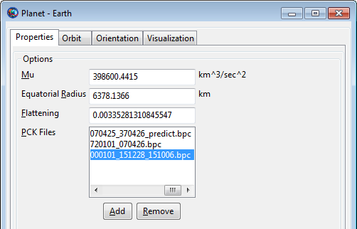 |
Now we are ready to search for eclipses in our mission. We do this by creating an EclipseLocator resource that holds the search configuration. Then we can perform a search by running the FindEvents command, but GMAT does this automatically at the end of the mission unless you configure it otherwise. In this case, we will use the automatic option.
First we create the EclipseLocator:
On the Resources tab, right-click the Event Locators folder, point to Add, and click EclipseLocator.
This will result in a new resource called EclipseLocator1.
 |
Next, we need to configure the new resource for our mission:
Double-click EclipseLocator1 to edit the configuration.
Note the following default settings:
Spacecraft is set to DefaultSC, the name of our spacecraft.
OccultingBodies is set to Earth and Luna. These are the two bodies that will be searched for eclipses.
EclipseTypes is set to search for all eclipse types (umbra or total, penumbra or partial, and antumbra or annular)
Run Mode is set to Automatic mode, which means the eclipse search will be run automatically at the end of the mission.
Use Entire Interval is checked, so the entire mission time span will be searched.
Light-time delay and stellar aberration are both enabled, so eclipse times will be adjusted appropriately.
Step size is set to 10 s. This is the minimum-duration eclipse (or gap between eclipses) that this locator is guaranteed to find.
Click OK to accept the default settings. They are fine for our purposes.
The final configuration should match the following screenshot.
| 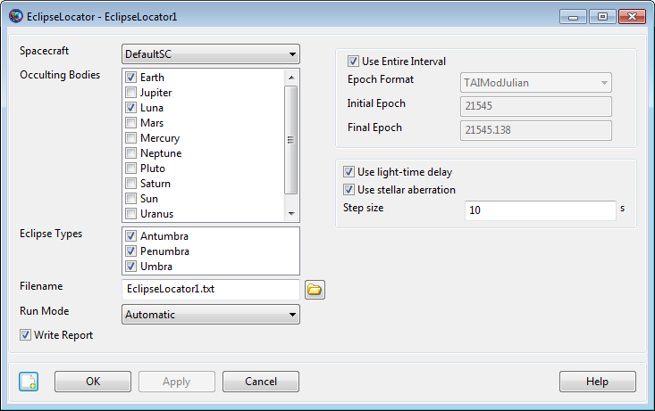 |
Now it's time to run the mission and look at the results.
Click Run (
) to run the mission.The eclipse search will take a few seconds. As it progresses, you'll see the following message in the message window at the bottom of the screen:
Finding events for EclipseLocator EclipseLocator1 ... Celestial body properties are provided by SPICE kernels.
When the run is complete, click the Output tab to view the available output.
Double-click EclipseLocator1 to view the eclipse report.
You'll see a report that looks similar to this:
Three eclipses were found, all part of a single "total" eclipse event totalling about 35 minutes. A total event consists of all adjacent and overlapping portions, such as penumbra eclipses occuring adjacent to umbra eclipses as in this case.
Click Close to close the report. The report text is still available as
EclipseLocator1.txtin the GMAToutputfolder.
Finding ground station contact times is a very similar process, but we'll use the ContactLocator resource instead. First we need to add a GroundStation, then we can configure the locator to find contact times between it and our spacecraft.
Let's create a ground station that will be in view from the final geostationary orbit. By looking at the DefaultGroundTrackPlot window, our spacecraft is positioned over the Indian Ocean. A ground station in India should be in view. We can choose the Hyderabad facility, which has the following properties:
Latitude: 17.0286 deg
Longitude: 78.1883 deg
Altitude: 0.541 km
Let's create this ground station in GMAT:
First, close all graphics and solver windows, to allow full manipulation of resources.
On the Resources tab, right-click the Ground Station folder and click Add Ground Station. This will create a new resource called GroundStation1.
Rename GroundStation1 to Hyderabad.
Double-click Hyderabad to edit its configuration.
The following values are configured appropriately by default, so we won't change them:
Min. Elevation: This is the minimum elevation angle from the ground station for a valid contact. The current value (7 deg) is appropriate for this case.
Central Body: Earth is the only allowed value at this time.
In the State Type list, select Spherical. This allows input in latitude, longitude, and altitude.
In the Horizon Reference list, select Ellipsoid.
In the Latitude box, type
17.0286.In the Longitude box, type
78.1883.In the Altitude box, type
0.541.Click OK to accept these changes.
The configured GroundStation should look like the following screenshot:
 |
If you add the GroundStation to the DefaultGroundTrackPlot, you can see the location visually:
Now we can create a ContactLocator that will search for contact times between our spacecraft and the Hyderabad station.
On the Resources tab, right-click the Event Locators folder, point to Add, and click ContactLocator. This will create ContactLocator1.
Double-click ContactLocator1 to edit the configuration.
Many of the default values are identical to the EclipseLocator, so we don't need to explain them again. There are a couple new properties that we'll note, but won't change:
Occulting Bodies: These are celestial bodies that GMAT will search for occultations of the line of sight between the spacecraft and the ground station. Since our spacecraft is orbiting the Earth, we don't need to choose any occulting bodies. Note that Earth is considered automatically because it is the central body of the ground station.
Light-time direction: This is the signal sense of the ground station. You can choose to calculate light-time delay as if the ground station is transmitting, or if it is receiving.
In the Observers list, enable Hyderabad. This will cause GMAT to search for contacts to this station.
In the Step size box, type
600. Since we're not using third-body occultations, this step size can be increased significantly without missing events. See the ContactLocator documentation for details.Click to accept the changes.
When fully configured, the GroundStation1 window will look like the following screenshot:
 |
Now it's time to run the mission again and look at these new results.
Click Run (
) to run the mission.The contact search will take much less time than the eclipse search, since we're using a larger step size. As it progresses, you'll see the following message in the message window at the bottom of the screen:
Finding events for ContactLocator ContactLocator1 ... Celestial body properties are provided by SPICE kernels.
When the run is complete, click the Output tab to view the available output.
Double-click ContactLocator1 to view the report.
You'll see a report that looks similar to this:
Notice that two contact intervals were found: one about 6 minutes long at the very beginning of the mission (it starts at the Spacecraft's initial epoch), and a second one about 29 hours long, starting once it gets into geosynchronous orbit and extending to the end of the simulation.
Click Close to close the report. The report text is still available as
ContactLocator1.txtin the GMAToutputfolder.
To expand on this tutorial, try the following exercise:
For a mission like this, you probably will want ground station coverage during both maneuvers. Try the following steps to make sure the coverage is adequate:
Change the colors of the Propagate commands, so you can see visually where the burns are located.
Add GroundStation resources near the locations of the burns on the ground track.
Confirm the burn epochs in the Command Summary for each Maneuver command.
Confirm in the contact report that these times occur during a contact interval.
Check the eclipse report, too: you may not want to perform a maneuver during an eclipse!
This tutorial shows you the basics of adding eclipse and station contact location to your mission. These resources have a lot of power, and there are many different ways to use them. Consult the ContactLocator and EclipseLocator documentation for details.
Table of Contents
Audience | Beginner |
Length | 15 minutes |
Prerequisites | Complete Simulating an Orbit |
Script File |
|
In this tutorial, we will use GMAT to perform a finite burn for a spacecraft using an electric propulsion system. Note that targeting and design using electric propulsion is identical to chemical propulsion and we refer you to the tutorial named Target Finite Burn to Raise Apogee for targeting configuration. This tutorial focuses only on configuration and modelling using electric propulsion systems.
The basic steps of this tutorial are:
Create and configure the Spacecraft hardware and FiniteBurn Resources
Configure the Mission Sequence. To do this, we will
Create Begin/End FiniteBurn commands with default settings.
Create a Propagate command to propagate while applying thrust from the electric propulsion system.
Run the mission
For this tutorial, you’ll need GMAT open with the default mission
loaded. To load the default mission, click ( ) or start a new GMAT session. We will use the
default configurations for the spacecraft (DefaultSC)
and the propagator (DefaultProp).
DefaultSC is configured by default to a near-circular
orbit, and DefaultProp is configured to use Earth as
the central body with a nonspherical gravity model of degree and order 4.
You may want to open the dialog boxes for these objects and inspect them
more closely as we will leave them at their default settings.
) or start a new GMAT session. We will use the
default configurations for the spacecraft (DefaultSC)
and the propagator (DefaultProp).
DefaultSC is configured by default to a near-circular
orbit, and DefaultProp is configured to use Earth as
the central body with a nonspherical gravity model of degree and order 4.
You may want to open the dialog boxes for these objects and inspect them
more closely as we will leave them at their default settings.
To model thrust and fuel use associated with a finite burn, we must create an ElectricThruster, an ElectricTank, a power system, and then attach the newly created ElectricTank to the ElectricThruster, and attach all hardware to the spacecraft. We'll start by creating the hardware objects.
In the Resources tree, right-click on the Hardware folder, point to Add, and click ElectricThruster. A Resource named ElectricThruster1 will be created.
In the Resources tree, right-click on the Hardware folder, point to Add, and click ElectricTank. A Resource named ElectricTank1 will be created.
In the Resources tree, right-click on the Hardware folder, point to Add, and click SolarPowerSystem. A Resource named SolarPowerSystem1 will be created.
Now we'll configure the hardware models for this exercise.
Double-click ElectricThruster1 to edit its properties.
In the Mass Change group box, check Decrement Mass.
In the Mass Change group box, select ElectricTank1 for the Tank.
In the Thrust Config group box, select ConstantThrustAndIsp for ThrustModel and set ConstantThrust to 5.0 N.
Figure 12.1, “ElectricThruster1 Configuration” below shows the ElectricThruster1 configuration that we will use.

We will use the default tank settings. Figure 12.2, “ElectricTank1 Configuration” shows the finished ElectricTank1 configuration.

Double-click SolarPowerSystem1 to edit its properties.
In the General group box, click the Select button next to ShadowBodies.
Remove Earth from the ShadowBodies list.
Figure 12.3, “SolarPowerSystem1 Configuration” shows the finished SolarPowerSystem1 configuration.
In the Resources tree, double-click DefaultSC to edit its properties.
Select the Tanks tab. In the Available Tanks column, select ElectricTank1. Then click the right arrow button to add ElectricTank1 to the SelectedTanks list. Click Apply.
Select the Actuators tab. In the Available Thrusters column, select ElectricThruster1. Then click the right arrow button to add ElectricThruster1 to the SelectedThrusters list. Click OK.
Select the PowerSystem tab. In the PowerSystem tab, select SolarPowerSystem1. Click OK.


We’ll need a single FiniteBurn Resource for this tutorial.
In the Resources tree, right-click the Burns folder and add a FiniteBurn. A Resource named FiniteBurn1 will be created.
Double-click FiniteBurn1 to edit its properties.
Use the menu to the right of the Thruster field to select ElectricThruster1 as the thruster associated with FiniteBurn1. Click OK.

Now we will configure the mission sequence to apply a finite maneuver using electric propulsion for a two day propagation. When we're done, the mission sequence will appear as shown below.
In the Mission Tree, right click on Propagate1, select Rename, and enter Propagate Two Days.
Right click on the command named Propagate Two Days, select Insert Before, then select BeginFiniteBurn.
Right click on the command named Propagate Two Days, select Insert After, then select EndFiniteBurn.
Rename the command named BeginFiniteBurn1 to StartTheManeuver.
Rename the command named EndFiniteBurn1 to EndTheManeuver.
Note that for more complex analysis that has multiple FiniteBurn objects, you will need to configure the BeginFiniteBurn and EndFiniteBurn commands to select the desired FiniteBurn Resource. As there is only one FiniteBurn Resource in this example, the system automatically selected the correct FiniteBurn Resource.
Before running the mission, click Save to save the mission to a file of your choice. Now click Run. As the mission runs, you will see the orbit spiral way from Earth. Note we exaggerated the thrust level so that an appreciable change in the orbit occurs in two days.
Table of Contents
- Objective and Overview
- Create and configure the spacecraft, spacecraft transponder, and related parameters
- Create and configure the Ground Station and related parameters
- Define the types of measurements to be simulated
- Create and configure Force model and propagator
- Create and configure Simulator object
- Run the mission and analyze the results
- Create a more realistic GMAT Measurement Data (GMD)
- References
- Appendix A – Determination of Measurement Noise Values
Audience | Intermediate level |
Length | 40 minutes |
Prerequisites | Basic Mission Design Tutorials |
Script Files |
|
Note
GMAT currently implements a number of different data types for orbit determination. Please refer to Tracking Data Types for OD for details on all the measurment types currently supported by GMAT. The measurements being considered here are DSN two way range and DSN two way Doppler.
In this tutorial, we will use GMAT to generate simulated DSN range and Doppler measurement data for a sample spacecraft in orbit about the Sun. The spacecraft in this tutorial is in an Earth “drift away” type orbit about 1 AU away from the Sun and almost 300 million km away from the Earth.
The basic steps of this tutorial are:
Create and configure the spacecraft, spacecraft transponder, and related parameters
Create and configure the Ground Station and related parameters
Define the types of measurements to be simulated
Create and configure Force model and propagator
Create and configure Simulator object
Run the mission and analyze the results
Create a realistic GMAT Measurement Data (GMD) file
Note that this tutorial, unlike most of the mission design tutorials, will be entirely script based. This is because most of the resources and commands related to navigation are not implemented in the GUI and are only available via the script interface.
As you go through the tutorial below, it is recommended that you
paste the script segments into GMAT as you go along. After each paste into
GMAT, you should perform a syntax check by hitting the Save, Sync button
( ). To avoid syntax errors, where needed, don’t
forget to add the following command to the last line of the script segment
you are checking.
). To avoid syntax errors, where needed, don’t
forget to add the following command to the last line of the script segment
you are checking.
BeginMissionSequence
We note that in addition to the material presented here, you should also look at the individual Help resources for all the objects and commands we create and use here. For example, Spacecraft, Transponder, Transmitter, GroundStation, ErrorModel, TrackingFileSet, RunSimulator, etc all have their own Help pages.
For this tutorial, you’ll need GMAT open, with a new empty script
open. To create a new script, click ,
( )
)
Since this is a Sun-orbiting spacecraft, we choose to represent the orbit in a Sun-centered coordinate frame which we define using the scripting below.
% Create the Sun-centered J2000 frame. Create CoordinateSystem SunMJ2000Eq; SunMJ2000Eq.Origin = Sun; SunMJ2000Eq.Axes = MJ2000Eq; %Earth mean equator axes
Next, we create a new spacecraft, Sat, and set its epoch and Cartesian coordinates.
Create Spacecraft Sat; Sat.DateFormat = UTCGregorian; Sat.CoordinateSystem = SunMJ2000Eq; Sat.DisplayStateType = Cartesian; Sat.Epoch = 19 Aug 2015 00:00:00.000; Sat.X = -126544968 Sat.Y = 61978514 Sat.Z = 24133221 Sat.VX = -13.789 Sat.VY = -24.673 Sat.VZ = -10.662 Sat.Id = 11111;
Note that, in addition to setting Sat’s coordinates, we also assigned it an ID number. This is the number that will be written to the GMAT Measurement Data (GMD) file that we will discuss later.
To simulate navigation measurements for a given spacecraft, GMAT requires that a Transponder object, which receives the ground station uplink signal and re-transmits it, typically, to a ground station, be attached to the spacecraft. Below, we create the Transponder object and attach it to our spacecraft.
Create Antenna HGA;
Create Transponder SatTransponder;
SatTransponder.PrimaryAntenna = HGA;
SatTransponder.HardwareDelay = 1e-06; %seconds
SatTransponder.TurnAroundRatio = '880/749';
Sat.AddHardware = {SatTransponder, HGA};After we create the Transponder object, there are three fields, PrimaryAntenna, HardwareDelay, and TurnAroundRatio that must be set.
The PrimaryAntenna is the antenna that the spacecraft transponder, SatTransponder, uses to receive and retransmit RF signals. In the example above, we set this field to HGA which is an Antenna object we have created. Currently the Antenna resource has no function but in a future release, it may have a function. HardwareDelay, the transponder signal delay in seconds, is set to one micro-second. We set TurnAroundRatio, which is the ratio of the retransmitted to the input signal, to '880/749.' See the FRC-21_RunSimulator Help and Appendix A – Determination of Measurement Noise Values for a discussion on how GMAT uses this input field. As described in the Help, if our DSN data does not use a ramp table, this turn around ratio is used directly to calculate the Doppler measurements.
Note that in the last script command above, we attach our newly created Transponder and its related Antenna object to our spacecraft, Sat.
Before we create the GroundStation object itself, as shown below, we first create the Transmitter, Receiver, and Antenna objects that must be associated with any GroundStation.
% Ground Station electronics. Create Transmitter DSNTransmitter; Create Receiver DSNReceiver; Create Antenna DSNAntenna; DSNTransmitter.PrimaryAntenna = DSNAntenna; DSNReceiver.PrimaryAntenna = DSNAntenna; DSNTransmitter.Frequency = 7200; %MHz
In the script segment above, we first created
Transmitter, Receiver, and
Antenna objects. The GMAT script line
DSNTransmitter.PrimaryAntenna = DSNAntenna, sets the main
antenna that the Transmitter object will be using.
Likewise, the DSNReceiver.PrimaryAntenna = DSNAntenna
script line sets the main antenna that the Receiver
object will be using. As previously mentioned, the
Antenna object currently has no function, but we
include it here both because GMAT requires it and for completeness since
the Antenna resource may have a function in a
future GMAT release. Finally, we set the transmitter frequency in the
last GMAT script line above. See the RunSimulator
Help for a complete description of how this input frequency is used. As
described in the Help, since in this example we will not be using a ramp
table, this input frequency will be used to calculate the simulated
value of the range and Doppler observations. In addition, this input
frequency will also be output to the range data file created by the
RunSimulator command.
Below, we create and configure a GroundStation object.
% Create ground station and associated error models
Create GroundStation CAN;
CAN.CentralBody = Earth;
CAN.StateType = Cartesian;
CAN.HorizonReference = Ellipsoid;
CAN.Location1 = -4461.083514
CAN.Location2 = 2682.281745
CAN.Location3 = -3674.570392
CAN.Id = 22222;
CAN.MinimumElevationAngle = 7.0;
CAN.IonosphereModel = 'IRI2007';
CAN.TroposphereModel = 'HopfieldSaastamoinen';
CAN.AddHardware = {DSNTransmitter, DSNAntenna, ...
DSNReceiver};The script segment above is broken into five sections. In the first section, we create our GroundStation object and we set our Earth-Centered Fixed Cartesian coordinates. In the second section, we set the ID of the ground station that will output to the GMD file created by the RunSimulator command. In the third section, we set the minimum elevation angle to 7 degrees. Below this ground station to spacecraft elevation angle, no simulated data will be created. In the fourth section, we specify which troposphere and ionosphere model we wish to use to model RF signal atmospheric refraction effects. Finally, in the fifth section, we attached three pieces of previously created required hardware to our ground station, a transmitter, a receiver, and an antenna.
It is well known that all measurement types have random noise and/or biases associated with them. For GMAT, these affects are modelled using ground station error models. Since we have already created the GroundStation object and its related hardware, we now create the ground station error models. Since we wish to simulate both range and Doppler data, we need to create two error models as shown below, one for range measurements and one for Doppler measurements.
% Create Ground station error models
Create ErrorModel DSNrange;
DSNrange.Type = 'DSN_SeqRange';
DSNrange.NoiseSigma = 10.63;
DSNrange.Bias = 0.0;
Create ErrorModel DSNdoppler;
DSNdoppler.Type = 'DSN_TCP';
DSNdoppler.NoiseSigma = 0.0282;
DSNdoppler.Bias = 0.0;
CAN.ErrorModels = {DSNrange, DSNdoppler};The script segment above is broken into three sections. The first section defines an ErrorModel named DSNrange. The error model Type is DSN_SeqRange which indicates that it is an error model for DSN sequential range measurements. The 1 sigma standard deviation of the Gaussian white noise is set to 10.63 Range Units (RU) and the measurement bias is set to 0 RU.
The second section above defines an ErrorModel named DSNdoppler. The error model Type is DSN_TCP which indicates that it is an error model for DSN total count phase-derived Doppler measurements. The 1 sigma standard deviation of the Gaussian white noise is set to 0.0282 Hz and the measurement bias is set to 0 Hz.
The third section above attaches the two ErrorModel resources we have just created to the CAN GroundStation. Note that in GMAT, the measurement noise or bias is defined on a per ground station basis. Thus, any range measurement error involving the CAN GroundStation is defined by the DSNRange ErrorModel and any Doppler measurement error involving the CAN GroundStation is defined by the DSNdoppler ErrorModel. Note that since GMAT currently only models two way measurements where the transmitting and receiving ground stations are the same, we do not have to consider the case where the transmitting and receiving ground stations are different. Suppose we were to add an additional GroundStation to this simulation. The measurement error for observations involving this new GroundStation would be defined by the ErrorModel resources attached to it.
See Appendix A – Determination of Measurement Noise Values for a discussion of how we determined the values for NoiseSigma for the two ErrorModel resources we created.
Now we will create and configure a TrackingFileSet resource. This resource defines the type of data to be simulated, the ground stations that will be used, and the file name of the output GMD file which will contain the simulated data. In addition, the TrackingFileSet resource will define needed simulation parameters for the various data types.
Create TrackingFileSet DSNsimData;
DSNsimData.AddTrackingConfig = {{CAN, Sat, CAN}, 'DSN_SeqRange'};
DSNsimData.AddTrackingConfig = {{CAN, Sat, CAN}, 'DSN_TCP'};
DSNsimData.FileName = ...
{'Sat_dsn_range_and_doppler_measurements.gmd'};
DSNsimData.UseLightTi = true;
DSNsimData.UseRelativityCorrection = true;
DSNsimData.UseETminusTAI = true;
DSNsimData.SimDopplerCountInterval = 10.0;
DSNsimData.SimRangeModuloConstant = 3.3554432e+07;The script lines above are broken into three sections. In the first section, the resource name, DSNsimData, is declared, the data types are defined, and the output file name is specified. AddTrackingConfig is the field that is used to define the data types. The first AddTrackingConfig line tells GMAT to simulate DSN range two way measurements for the CAN to Sat to CAN measurement strand. The second AddTrackingConfig line tells GMAT to simulate DSN Doppler two way measurements for the CAN to Sat to CAN measurement strand.
The second section above sets some simulation parameters that apply to both the range and Doppler measurements. We set UseLightTime to True in order to generate realistic measurements where GMAT takes into account the finite speed of light. The last two parameters in this section, UseRelativityCorrection and UseETminusTAI, are set to True so that general relativistic corrections, as described in Moyer [2000], are applied to the light time equations.
The third section above sets simulation parameters that apply to a specific measurement type. SimDopplerCountInterval applies only to Doppler measurements and SimRangeModuloConstant applies only to range measurements. We note that the “Sim” in the field names is used to indicate that these fields only are applicable when GMAT is in simulation mode (i.e., when using the RunSimulator command) data and not when GMAT is in estimation mode (i.e., when using the RunEstimator command). SimDopplerCountInterval, the Doppler Count Interval, is set to 10 seconds and SimRangeModuloConstant, the maximum possible range value, is set to 33554432. See the RunSimulator Help and Appendix A – Determination of Measurement Noise Values for a description of how these parameters are used to calculate the measurement values.
We now create and configure the force model and propagator that will be used for the simulation. For this deep space drift away orbit, we naturally choose the Sun as our central body. Since we are far away from all the planets, we use point mass gravity models and we include the effects of the Sun, Earth, Moon, and most of the other planets. In addition, we model Solar Radiation Pressure (SRP) affects and we include the affect of general relativity on the dynamics. The script segment accomplishing this is shown below.
Create ForceModel Fm;
Create Propagator Prop;
Fm.CentralBody = Sun;
Fm.PointMasses = {Sun, Earth, Luna, Mars, Saturn, ...
Uranus, Mercury, Venus, Jupiter};
Fm.SRP = On;
Fm.RelativisticCorrection = On;
Prop.FM = Fm;As shown below, we create and configure the Simulator object used to define our simulation.
Create Simulator Sim;
Sim.AddData = {DSNsimData};
Sim.EpochFormat = UTCGregorian;
Sim.InitialEpoch = '19 Aug 2015 00:00:00.000';
Sim.FinalEpoch = '19 Aug 2015 00:12:00.000';
Sim.MeasurementTimeStep = 600;
Sim.Propagator = Prop;
Sim.AddNoise = Off;In the first script line above, we create a Simulator object, Sim. The next field set is AddData which is used to specify which TrackingFileSet should be used. Recall that the TrackingFileSet specifies the type of data to be simulated and the file name specifying where to store the data. The TrackingFileSet, DSNsimData, that we created in the Define the types of measurements to be simulated section, specified that we wanted to simulate two way DSN range and Doppler data that involved the CAN GroundStation.
The next three script lines, which set the EpochFormat, InitialEpoch, and FinalEpoch fields, specify the time period of the simulation. Here, we choose a short 12 minute duration.
The next script line sets the MeasurementTimeStep field which specifies the requested time between measurements. We choose a value of 10 minutes. This means that our data file will contain a maximum of two range measurements and two Doppler measurements.
The next script line sets the Propagator field which specifies which Propagator object should be used. We set this field to the Prop Propagator object which we created in the Create and configure Force model and propagator section.
Finally, in the last line of the script segment, we set the AddNoise field which specifies whether or not we want to add noise to our simulated measurements. The noise that can be added is defined by the ErrorModel objects that we created in the Create and configure the Ground Station and related parameters section. As discussed in the Create and configure the Ground Station and related parameters section and Appendix A – Determination of Measurement Noise Values, the noise added to the range measurements would be Gaussian with a one sigma value of 10.63 Range Units and the noise added to the Doppler measurements would be Gaussian with a one sigma value of 0.0282 Hz. For this simulation, we choose not to add noise.
The script segment used to run the mission is shown below.
BeginMissionSequence RunSimulator Sim
The first script line, BeginMissionSequence, is a required command which indicates that the “Command” section of the GMAT script has begun. The second line of the script issues the RunSimulator command with the Sim Simulator resource, defined in the Create and configure Simulator object section, as an argument. This tells GMAT to perform the simulation specified by the Sim resource.
We have now completed all of our script segments. See the file,
Simulate DSN Range and Doppler Data.script, for a
listing of the entire script. We are now ready to run the script. Hit the
Save,Sync,Run button, ( ). Because we are only simulating a small amount of
data, the script should finish execution in about one second.
). Because we are only simulating a small amount of
data, the script should finish execution in about one second.
Let’s take a look at the output created. The file created,
Sat_dsn_range_and_doppler_measurements.gmd, was
specified in the TrackingFileSet resource,
DSNsimData, that we created in the Define the types of measurements to be simulated section. The default directory, if none is
specified, is the GMAT ‘output’ directory. Let’s analyze the contents of
this “GMAT Measurement Data” or GMD file as shown below.
% GMAT Internal Measurement Data File 27253.500405092593 DSN_SeqRange 9004 22222 11111 26016945.24902344 2 7.2e+009 3.3554432e+007 27253.500405092593 DSN_TCP 9006 22222 11111 2 10 -8459336323.89349840 27253.507349537038 DSN_SeqRange 9004 22222 11111 21728172.10375977 2 7.2e+009 3.3554432e+007 27253.507349537038 DSN_TCP 9006 22222 11111 2 10 -8459335611.28409770
The first line of the file is a comment line indicating that this is a file containing measurement data stored in GMAT’s internal format. There are 4 lines of data representing range data at two successive times and Doppler data at two successive times. As we expected, we have no more than 4 total measurements. Refer to the TrackingFileSet Help for a description of the range and Doppler GMD file format.
We now analyze the first line of data which represents a DSN two way range measurement at the start of the simulation at '19 Aug 2015 00:00:00.000 UTCG’ which corresponds to the output TAI modified Julian Day of 27253.500405092593 TAIMJD.
The second and third fields, DSN_SeqRange and 9004, are just internal GMAT codes indicating the use of DSN range (Trk 2-34 type 7) data.
The 4th field, 22222, is the Downlink station ID. This is the ID we gave the CAN GroundStation object that we created in the Create and configure the Ground Station and related parameters section. The 5th field, 11111, is the spacecraft ID. This is the ID we gave the Sat Spacecraft object that we created in the Create and configure the spacecraft, spacecraft transponder, and related parameters section.
The 6th field, 26016945.24902344, is the actual DSN range observation value in RU.
The 7th field, 2, is an integer which represents the Uplink Band of the uplink GroundStation, CAN. The designation, 2, represents X-band. See the RunSimulator Help for a detailed discussion of how GMAT determines what value should be written here. As described in the Help, since we are not using a ramp table, GMAT determines the Uplink Band by looking at the transmit frequency of the Transmitter object attached to the CAN ground station. GMAT knows that the 7200 MHz value that we assigned to CAN’s Transmitter resource, DSNTransmitter, corresponds to an X-band frequency.
The 8th field, 7.2e+009, is the transmit frequency of
CAN at the time of the measurement. Since we are not
using a ramp table, this value will be constant for all measurements and
it is given by the value of the frequency of the
Transmitter object,
DSNTransmitter, that we attached to the
CAN ground station. Recall the following script
segment, DSNTransmitter.Frequency = 7200; %MHz, from the
Create and configure the Ground Station and related
parameters section.
The 9th field, 3.3554432e+007, represents the integer range modulo number that helps define the DSN range measurement. This is the value that we set when we created and configured the TrackingFileSet DSNsimData object in the Define the types of measurements to be simulated section. Recall the following script command,
DSNsimData.SimRangeModuloConstant = 3.3554432e+07;
This range modulo number is discussed in Appendix A – Determination of Measurement Noise Values and is defined as M, the length of the ranging code in RU.
We now analyze the second line of data which represents a DSN two way Doppler measurement at the start of the simulation at '19 Aug 2015 00:00:00.000 UTCG’ which corresponds to the output TAI modified Julian Day of 27253.500405092593 TAIMJD.
The second and third fields, Doppler and 9006, are just internal GMAT codes indicating the use of DSN Doppler (derived from two successive Trk 2-34 type 17 Total Count Phase measurements) data.
The 4th field, 22222, is the Downlink station ID. This is the ID we gave the CAN GroundStation object that we created in the Create and configure the Ground Station and related parameters section. The 5th field, 11111, is the spacecraft ID. This is the ID we gave the Sat Spacecraft object that we created in the Create and configure the spacecraft, spacecraft transponder, and related parameters section.
The 6th field, 2, is an integer which represents the Uplink Band of the uplink GroundStation, CAN. As we mentioned when discussing the range measurement, the designation, 2, represents X-band.
The 7th field, 10, is the Doppler Count Interval (DCI) used to help define the Doppler measurement. This is the value that we set when we created and configured the TrackingFileSet DSNsimData object in the Define the types of measurements to be simulated section. Recall the following script command,
DSNsimData.SimDopplerCountInterval = 10.0;
The DCI is also discussed in Appendix A – Determination of Measurement Noise Values.
The 8th field, -7819057474.22393610, is the actual DSN Doppler observation value in Hz.
The third line of data represents the second DSN two way range measurement at '19 Aug 2015 00:10:00.000 UTCG’ which corresponds to the output TAI modified Julian Day time of 27253.507349537038 TAIMJD. The fourth line of data represents the second DSN two way Doppler measurement at '19 Aug 2015 00:10:00.000 UTCG.’
We have run a short simple simulation and generated a sample GMD file. Our next goal is to generate a realistic GMD file that a different script can read in and generate an orbit determination solution. To add more realism, we will do the following:
Generate data from additional ground stations
Add the use of a ramp table
Perform a longer simulation
Add measurement noise
In order to generate measurement data from additional ground stations, we must first create and configure additional GroundStation objects. Below, we create and configure two new ground stations, GDS and MAD.
Create GroundStation GDS;
GDS.CentralBody = Earth;
GDS.StateType = Cartesian;
GDS.HorizonReference = Ellipsoid;
GDS.Location1 = -2353.621251;
GDS.Location2 = -4641.341542;
GDS.Location3 = 3677.052370;
GDS.Id = '33333';
GDS.AddHardware = {DSNTransmitter, DSNAntenna, DSNReceiver};
GDS.MinimumElevationAngle = 7.0;
GDS.IonosphereModel = 'IRI2007';
GDS.TroposphereModel = 'HopfieldSaastamoinen';
Create GroundStation MAD;
MAD.CentralBody = Earth;
MAD.StateType = Cartesian;
MAD.HorizonReference = Ellipsoid;
MAD.Location1 = 4849.519988;
MAD.Location2 = -0360.641653;
MAD.Location3 = 4114.504590;
MAD.Id = '44444';
MAD.AddHardware = {DSNTransmitter, DSNAntenna, DSNReceiver};
MAD.MinimumElevationAngle = 7.0;
MAD.IonosphereModel = 'IRI2007';
MAD.TroposphereModel = 'HopfieldSaastamoinen';Now that we have defined two additional ground stations, we must specify the measurement noise associated with these new ground stations. This can be done using the previously created ErrorModel resources as shown below.
GDS.ErrorModels = {DSNrange, DSNdoppler};
MAD.ErrorModels = {DSNrange, DSNdoppler};Next, we must add the corresponding two way range and Doppler measurements associated with our new ground stations to our TrackingFileSet object, DSNsimData, as shown below.
DSNsimData.AddTrackingConfig = {{GDS, Sat, GDS}, 'DSN_SeqRange'};
DSNsimData.AddTrackingConfig = {{GDS, Sat, GDS}, 'DSN_TCP'};
DSNsimData.AddTrackingConfig = {{MAD, Sat, MAD}, 'DSN_SeqRange'};
DSNsimData.AddTrackingConfig = {{MAD, Sat, MAD}, 'DSN_TCP'};We now create our ramp table that many but not all missions use. A ramp table is a table that allows GMAT to calculate the transmit frequency of all the ground stations involved in our simulation. Recall that GMAT needs to know the transmit frequency, as a function of time, in order to calculate the value of the observations. The term “ramp” is used because the transmit frequency increases linearly with time and a graph of transmit frequency vs. time would typically show a ramp. A mission that does not use a ramp table simply uses a constant transmit frequency for a given ground station.
To modify our script to accommodate the use of a ramp table, we modify our TrackingFileSet object, DSNsimData, as shown below.
DSNsimData.RampTable = ...
{'../output/Simulate DSN Range and Doppler Data 3 weeks.rmp'};We must now create a file with the name shown above in the GMAT ‘output’ directory. Refer to the TrackingFileSet Help for a description of the ramp table file format. In order for GMAT to determine the transmit frequencies of all the ground stations, the ramp table must have at least one row of data for every ground station providing measurement data. The contents of our ramp table is shown below.
27252 22222 11111 2 1 7.2e09 0.2
27252 33333 11111 2 1 7.3e09 0.3
27252 44444 11111 2 1 7.4e09 0.4
Each row of data above is called a ramp record. Let’s analyze the first ramp record. The first field, 27252, is the TAIMJD date of the ramp record.
The second field, 22222, is the ground station ID of the GroundStation object whose frequency is being specified. We note that the ID 22222 corresponds to the CAN ground station. The third field, 11111, is the ID of the spacecraft that the CAN ground station is transmitting to. We recognize 11111 as the ID of the Sat spacecraft.
The 4th field, 2, is an integer representing the uplink band of the transmission. The integer 2 represents X-band. The 5th field, 1, is an integer describing the ramp type. The integer 1 represents the start of a new ramp.
The 6th field, 7.2e9, is the transmission frequency in Hz, from CAN to Sat at the time given by the first field. The 7th input is the ramp rate in Hz/s.
We now describe how GMAT uses the ramp record to determine the transmit frequency of CAN to Sat at a given time. We let TAIMJD be the time associated with the ramp record. Then GMAT will calculate the value of the transmit frequency at t = 27252.5 TAIMJD as shown below.
where
Note that, in the typical case where there are numerous ramp
records, it is assumed that
The second and third rows of the ramp table allow GMAT to calculate
the transmit frequency from GDS to
Sat and MAD to
Sat, respectively. We now create a file,
Simulate DSN Range and Doppler Data Realistic
GMD.rmp, with the contents shown above and place it in GMAT’s
‘output’ folder.
We make one final comment about the use of a ramp table. We note that when a ramp table is used, GMAT uses the various script inputs (e.g., SatTransponder.TurnAroundRatio and DSNTransmitter.Frequency) differently. See the RunSimulator Help for details.
We only have two steps remaining in order to create a script that generates more realistic measurement data. The first step is to increase the simulation time from 10 minutes to the more realistic 3 weeks worth of data that is typically needed to generate an orbit determination solution for a spacecraft in this type of deep space orbit. The second step is to turn on the measurement noise. These two steps are accomplished by making the following changes to our TrackingFileSet object, DSNsimData.
Sim.FinalEpoch = '09 Sep 2015 00:00:00.000'; Sim.AddNoise = On; Sim.MeasurementTimeStep = 3600;
Note that above, in addition to implementing the two needed steps, we also changed the measurement time step from 600 seconds to 3600 seconds. This is not a realistic time step as many missions would use a time step that might even be less than 600 seconds. We used this larger time step for tutorial purposes only so that the script would not take too long to run.
A complete script, containing all the changes we have made in the
Create a more realistic GMAT Measurement Data (GMD) section,
is contained in the file,
Tut_Simulate_DSN_Range_and_Doppler_Data_3_weeks.script.
Note that in this file, in addition to the changes above, we have also
changed the GMD output file name to Simulate DSN Range and
Doppler Data 3 weeks.gmd.
Now run the script which should take approximately 1-2 minutes since we are generating much more data than previously. We will use the GMD file we have created here as input to an estimation script we will build in the next tutorial, Orbit Estimation using DSN Range and Doppler Data.
| Mesarch [2007] | M. Mesarch, M. Robertson, N. Ottenstein, A. Nicholson, M. Nicholson, D. Ward, J. Cosgrove, D. German, S. Hendry, J. Shaw, “Orbit Determination and Navigation of the SOlar TErrestrial Relations Observatory (STEREO)”, 20th International Symposium on Space Flight Dynamics, Annapolis, MD, September 24-28, 2007. |
| Moyer [2000] | Moyer, Theodore D., Formulation for Observed and Computed Values of Deep Space Network Data Types for Navigation (JPL Publication 00-7), Jet Propulsion Laboratory, California Institute of Technology, October 2000. |
| Schanzle [1995] | Schanzle, A., Orbit Determination Error Analysis System (ODEAS) Report on Error Sources and Nominal 3-Sigma Uncertainties for Covariance Analysis Studies Using ODEAS (Update No. 2), Computer Sciences Corporation (CSC) memo delivered as part of NASA contract NAS-5-31500, May 31, 1995. |
We now say a few words on how we determined the values for NoiseSigma for the two ErrorModel resources we created. The computed value of the DSN range measurement is given by (Moyer [2000]):
where
We note that M as defined above is equal to SimRangeModuloConstant which was discussed in the Define the types of measurements to be simulated section.
By manipulation of the equation above, we can find a relationship between RU and meters, as shown below.
where
If we assume the round trip distance is 1 meter, we have
Recall that in the Create and configure the Ground Station and related
parameters section, we set DSNTransmitter.Frequency
= 7200; This corresponds to an X-band frequency (so, C=221/1498) of
7200e6 Hz. For the case where a ramp table is not used, we have a constant
frequency,
For this example, for DSN range measurements, we want to use a 1
sigma noise bias of 3 meters (Schanzle [1995]). From the calculations
above, we determine that this corresponds to 3*3.543172
We now turn our attention to the DSN Doppler measurement. The DSN
Doppler measurement that GMAT uses is actually a derived observation, O,
calculated using two successive Total Count Phase,
where
In the absence of measurement noise, one can show (Moyer [2000]), that the Observed value (O) above equals the Computed (C) value below.
where
Neglecting ionospheric media corrections, further calculation
(Mesarch [2007]) shows that the values of O and C can be related to an
average range rate value,
where
Thus, we determine that
The quantity,
Table of Contents
- Objective and Overview
- Create and configure the spacecraft, spacecraft transponder, and related parameters
- Create and configure the Ground Station and related parameters
- Define the types of measurements that will be processed
- Create and configure Force model and propagator
- Create and configure BatchEstimatorInv object
- Run the mission and analyze the results
- References
- Appendix A – GMAT Message Window Output
- Appendix B – Zeroth Iteration Plots of Observation Residuals
- Appendix C – First Iteration Plots of Observation Residuals
Audience | Intermediate level |
Length | 60 minutes |
Prerequisites | Simulate DSN Range and Doppler Data Tutorial |
Script Files |
|
Note
GMAT currently implements a number of different data types for orbit determination. Please refer to Tracking Data Types for OD for details on all the measurment types currently supported by GMAT. The measurements being considered here are DSN two way range and DSN two way Doppler.
In this tutorial, we will use GMAT to read in simulated DSN range and Doppler measurement data for a sample spacecraft in orbit about the Sun and determine its orbit. The spacecraft is in an Earth “drift away” type orbit about 1 AU away from the Sun and almost 300 million km away from the Earth. This tutorial has many similarities with the Simulate DSN Range and Doppler Data Tutorial in that most of the same GMAT resources need to be created and configured. There are differences, however, in how GMAT uses the resources that we will point out as we go along.
The basic steps of this tutorial are:
Create and configure the spacecraft, spacecraft transponder, and related parameters
Create and configure the Ground Station and related parameters
Define the types of measurements to be processed
Create and configure Force model and propagator
Create and configure Batch Estimator object
Run the mission and analyze the results
Note that this tutorial, unlike most of the mission design tutorials, will be entirely script based. This is because most of the resources and commands related to navigation are not implemented in the GUI and are only available via the script interface.
As you go through the tutorial below, it is recommended that you
paste the script segments into GMAT as you go along. After each paste into
GMAT, you should perform a syntax check by hitting the Save, Sync button
( ). To avoid syntax errors, where needed, don’t
forget to add the following command, as needed, to the last line of the
script segment you are checking.
). To avoid syntax errors, where needed, don’t
forget to add the following command, as needed, to the last line of the
script segment you are checking.
BeginMissionSequence
We note that in addition to the material presented here, you should also look at the individual Help resources for all the objects and commands we create and use here. For example, Spacecraft, Transponder, Transmitter, GroundStation, ErrorModel, TrackingFileSet, RunEstimator, etc all have their own Help pages.
For this tutorial, you’ll need GMAT open, with a new empty script
open. To create a new script, click ,
( )
)
Since this is a Sun-orbiting spacecraft, we choose to represent the orbit in a Sun-centered coordinate frame which we define using the scripting below.
% Create the Sun-centered J2000 frame. Create CoordinateSystem SunMJ2000Eq; SunMJ2000Eq.Origin = Sun; SunMJ2000Eq.Axes = MJ2000Eq; %Earth mean equator axes
Next, we create a new spacecraft, Sat, and set its epoch and Cartesian coordinates.
Create Spacecraft Sat; Sat.DateFormat = UTCGregorian; Sat.CoordinateSystem = SunMJ2000Eq; Sat.DisplayStateType = Cartesian; Sat.Epoch = 19 Aug 2015 00:00:00.000; Sat.X = -126544963 %-126544968 Sat.Y = 61978518 %61978514 Sat.Z = 24133225 %24133221 Sat.VX = -13.789 Sat.VY = -24.673 Sat.VZ = -10.662 Sat.Id = 11111;
Note that, in addition to setting Sat’s coordinates, we also assigned it an ID number. When GMAT finds this number in the GMD file that it reads in, it will know that the associated data corresponds to the Sat Spacecraft.
For the simulation tutorial, the Cartesian state above represented the “true” state. Here, the Cartesian state represents the spacecraft operator’s best “estimate” of the state, the so-called a priori estimate. Because, one never has exact knowledge of the true state, we have perturbed the Cartesian state above by a few km in each component as compared to the simulated true state shown in the comment field.
To estimate an orbit state for a given spacecraft, GMAT requires that a Transponder object, which receives the ground station uplink signal and re-transmits it, typically, to a ground station, be attached to the spacecraft. Below, we create the Transponder object and attach it to our spacecraft. Note that after we create the Transponder object, there are three fields, PrimaryAntenna, HardwareDelay, and TurnAroundRatio that must be set.
Create Antenna HGA; %High Gain Antenna
Create Transponder SatTransponder;
SatTransponder.PrimaryAntenna = HGA;
SatTransponder.HardwareDelay = 1e-06; %seconds
SatTransponder.TurnAroundRatio = '880/749';
Sat.AddHardware = {SatTransponder, HGA};
Sat.SolveFors = {CartesianState};The PrimaryAntenna is the antenna that the spacecraft transponder, SatTransponder, uses to receive and retransmit RF signals. In the example above, we set this field to HGA which is an Antenna object we have created. Currently the Antenna resource has no function but in a future release, it may have a function. HardwareDelay, the transponder signal delay in seconds, is set to one micro-second.
We set TurnAroundRatio, which is the ratio of the retransmitted to the input signal, to '880/749.' See the RunEstimator Help for a discussion on how GMAT uses this input field. Recall that, as part of their calculations, estimators need to form a quantity called the observation residual, O-C, where O is the “Observed” value of a measurement and C is the “Computed,” based upon the current knowledge of the orbit state, value of a measurement. As described in the Help, since our DSN data, for this tutorial, uses a ramp table, this input turn around ratio is not used to calculate the computed, C, Doppler measurements. Instead, the turn-around ratio used to calculate the computed Doppler measurement will be inferred from the value of the uplink band contained in the ramp table.
Note that in the second to last script command above, we attach our newly created Transponder resource, SatTransponder, and its related Antenna resource, HGA, to our spacecraft, Sat.
The last script line, which was not present in the simulation script, is needed to tell GMAT what quantities the estimator will be estimating, the so-called “solve-fors.” Here, we tell GMAT to solve for the 6 components of our satellite’s Cartesian state. Since we input the Sat state in SunMJ2000 coordinates, this is the coordinate system GMAT will use to solve for the Cartesian state.
Before we create the GroundStation object itself, as shown below, we first create the Transmitter, Receiver, and Antenna objects that must be associated with any GroundStation.
% Ground Station electronics. Create Transmitter DSNTransmitter; Create Receiver DSNReceiver; Create Antenna DSNAntenna; DSNTransmitter.PrimaryAntenna = DSNAntenna; DSNReceiver.PrimaryAntenna = DSNAntenna; DSNTransmitter.Frequency = 7200; %MHz
In the script segment above, we first created
Transmitter, Receiver, and
Antenna objects. The GMAT script line
DSNTransmitter.PrimaryAntenna = DSNAntenna, sets the main
antenna that the Transmitter resource,
DSNTransmitter, will be using. Likewise, the
DSNReceiver.PrimaryAntenna = DSNAntenna script line sets
the main antenna that the Receiver resource,
DSNReceiver, will be using. As previously
mentioned, the Antenna object currently has no
function, but we include it here both because GMAT requires it and for
completeness since the Antenna resource may have a
function in a future GMAT release. Finally, we set the transmitter
frequency in the last GMAT script line above. See the
RunEstimator Help for a complete description of how
this input frequency is used. As described in the Help, since in this
example we will be using a ramp table, this input frequency will not be
used to calculate the computed value of the range and Doppler
observations. Instead, the frequency value in the ramp table will be
used to calculate the computed range and Doppler observations.
There is one clarification to the statement above. As discussed in the RunEstimator Help, the DSNTransmitter.Frequency value discussed above as well as the previously discussed SatTransponder TurnAroundRatio value will be used to calculate the, typically small, media corrections needed to determine the computed, C, value of the range and Doppler measurements.
Below, we create and configure our CAN GroundStation object.
% Create ground station and associated error models
Create GroundStation CAN;
CAN.CentralBody = Earth;
CAN.StateType = Cartesian;
CAN.HorizonReference = Ellipsoid;
CAN.Location1 = -4461.083514
CAN.Location2 = 2682.281745
CAN.Location3 = -3674.570392
CAN.Id = 22222;
CAN.MinimumElevationAngle = 7.0;
CAN.IonosphereModel = 'IRI2007';
CAN.TroposphereModel = 'HopfieldSaastamoinen';
CAN.AddHardware = {DSNTransmitter, DSNAntenna, ...
DSNReceiver};The script segment above is broken into five sections. In the first section, we create our GroundStation object and we set our Earth-Centered Fixed Cartesian coordinates. In the second section, we set the ID of the ground station so that GMAT will be able to identify data from this ground station contained in the GMD file.
In the third section, we set the minimum elevation angle to 7 degrees. Below this ground station to spacecraft elevation angle, no measurement data will be used to form an orbit estimate. In the fourth section, we specify which troposphere and ionosphere model we wish to use to model RF signal atmospheric refraction effects. Finally, in the fifth section, we attach three pieces of previously created required hardware to our ground station, a transmitter, a receiver, and an antenna.
Next, we create and configure the GDS GroundStation resource, and associated Transmitter resource.
% Create GDS transmitter and ground station
Create Transmitter GDSTransmitter
GDSTransmitter.Frequency = 7300; %MHz.
GDSTransmitter.PrimaryAntenna = DSNAntenna;
Create GroundStation GDS;
GDS.CentralBody = Earth;
GDS.StateType = Cartesian;
GDS.HorizonReference = Ellipsoid;
GDS.Location1 = -2353.621251;
GDS.Location2 = -4641.341542;
GDS.Location3 = 3677.052370;
GDS.Id = '33333';
GDS.AddHardware = {GDSTransmitter, ...
DSNAntenna, DSNReceiver};
GDS.MinimumElevationAngle = 7.0;
GDS.IonosphereModel = 'IRI2007';Next, we create and configure the MAD GroundStation resource, and associated Transmitter resource.
% Create MAD transmitter and ground station
Create Transmitter MADTransmitter
MADTransmitter.Frequency = 7400; %MHz.
MADTransmitter.PrimaryAntenna = DSNAntenna;
Create GroundStation MAD;
MAD.CentralBody = Earth;
MAD.StateType = Cartesian;
MAD.HorizonReference = Ellipsoid;
MAD.Location1 = 4849.519988;
MAD.Location2 = -360.641653;
MAD.Location3 = 4114.504590;
MAD.Id = '44444';
MAD.AddHardware = {MADTransmitter, ...
DSNAntenna, DSNReceiver};
MAD.MinimumElevationAngle = 7.0;
MAD.IonosphereModel = 'IRI2007';Note that for the GDS and MAD ground stations, we don’t re-use the DSNTransmitter resource that we used for the CAN ground station. We do this so we can set the transmitter frequencies for the different ground station to different values. Note that we didn’t do this in the Simulator tutorial. This will only add a small error, however, since, because we are using a ramp table, the frequency set on the Transmitter.Frequency field is only used to calculate media corrections.
It is well known that all measurement types have random noise and/or biases associated with them. For GMAT, these affects are modelled using ground station error models. Since we have already created the GroundStation object and its related hardware, we now create the ground station error models. Since we wish to form an orbit estimate using both range and Doppler data, we need to create two error models as shown below, one for range measurements and one for Doppler measurements.
% Create Ground station error models
Create ErrorModel DSNrange;
DSNrange.Type = 'DSN_SeqRange';
DSNrange.NoiseSigma = 10.63;
DSNrange.Bias = 0.0;
Create ErrorModel DSNdoppler;
DSNdoppler.Type = 'DSN_TCP';
DSNdoppler.NoiseSigma = 0.0282;
DSNdoppler.Bias = 0.0;
CAN.ErrorModels = {DSNrange, DSNdoppler};
GDS.ErrorModels = {DSNrange, DSNdoppler};
MAD.ErrorModels = {DSNrange, DSNdoppler};The script segment above is broken into three sections. The first section defines an ErrorModel named DSNrange. The error model Type is DSN_SeqRange which indicates that it is an error model for DSN sequential range measurements. The 1 sigma standard deviation of the Gaussian white noise is set to 10.63 Range Units (RU) and the measurement bias is set to 0 RU.
The second section above defines an ErrorModel named DSNdoppler. The error model Type is DSN_TCP which indicates that it is an error model for DSN total count phase-derived Doppler measurements. The 1 sigma standard deviation of the Gaussian white noise is set to 0.0282 Hz and the measurement bias is set to 0 Hz. The range and Doppler NoiseSigma values above will be used to form measurement weighting matrices used by the estimator algorithm.
The third section above attaches the two ErrorModel resources we have just created to the CAN, GDS, and MAD GroundStation resources. Note that in GMAT, the measurement noise or bias is defined on a per ground station basis. Thus, any range measurement error involving the CAN, GDS, and MAD GroundStation is defined by the DSNRange ErrorModel and any Doppler measurement error involving the CAN, GDS, and MAD GroundStation is defined by the DSNdoppler ErrorModel. Note that, if desired, we could have created 6 different ErrorModel resources, two error models representing the two data types for 3 ground stations.
Now we will create and configure a TrackingFileSet resource. This resource defines the type of data to be processed, the ground stations that will be used, and the file name of the input GMD file which will contain the measurement data. Note that in order to just cut and paste from our simulation tutorial, we name our resource DSNsimData. But, since, in this script, we are estimating, perhaps a better name would have been DSNestData.
Create TrackingFileSet DSNsimData;
DSNsimData.AddTrackingConfig = {{CAN, Sat, CAN}, 'DSN_SeqRange'};
DSNsimData.AddTrackingConfig = {{CAN, Sat, CAN}, 'DSN_TCP'};
DSNsimData.AddTrackingConfig = {{GDS, Sat, GDS}, 'DSN_SeqRange'};
DSNsimData.AddTrackingConfig = {{GDS, Sat, GDS}, 'DSN_TCP'};
DSNsimData.AddTrackingConfig = {{MAD, Sat, MAD}, 'DSN_SeqRange'};
DSNsimData.AddTrackingConfig = {{MAD, Sat, MAD}, 'DSN_TCP'};
DSNsimData.FileName = ...
{'../output/Simulate DSN Range and Doppler Data 3 weeks.gmd'};
DSNsimData.RampTable = ...
{'../output/Simulate DSN Range and Doppler Data 3 weeks.rmp'};
DSNsimData.UseLightTime = true;
DSNsimData.UseRelativityCorrection = true;
DSNsimData.UseETminusTAI = true;The script lines above are broken into three sections. In the first section, the resource name, DSNsimData, is declared, the data types are defined, and the input GMD file and ramp table name are specified. AddTrackingConfig is the field that is used to define the data types. The first AddTrackingConfig line tells GMAT to process DSN range two way measurements for the CAN to Sat to CAN measurement strand. The second AddTrackingConfig line tells GMAT to process DSN Doppler two way measurements for the CAN to Sat to CAN measurement strand. The remaining 4 AddTrackingConfig script lines tell GMAT to also process GDS and MAD range and Doppler measurements. Note that the input GMD and ramp table files that we specified are files that we created as part of the Simulate DSN Range and Doppler Data Tutorial. Don’t forget to put these files in the GMAT “output” directory.
The second section above sets some processing parameters that apply to both the range and Doppler measurements. We set UseLightTime to True in order to generate realistic computed, C, measurements that take into account the finite speed of light. The last two parameters in this section, UseRelativityCorrection and UseETminusTAI, are set to True so that general relativistic corrections, as described in Moyer [2000], are applied to the light time equations.
Note that, in the simulation tutorial, we set two other DSNsimData fields, SimDopplerCountInterval and SimRangeModuloConstant. Since these fields only apply to simulations, there is no need to set them here as their values would only be ignored.
We now create and configure the force model and propagator that will be used for the simulation. For this deep space drift away orbit, we naturally choose the Sun as our central body. Since we are far away from all the planets, we use point mass gravity models and we include the effects of the Sun, Earth, Moon, and most of the other planets. In addition, we model Solar Radiation Pressure (SRP) affects and we include the effect of general relativity on the dynamics. The script segment accomplishing this is shown below.
Create ForceModel Fm;
Create Propagator Prop;
Fm.CentralBody = Sun;
Fm.PointMasses = {Sun, Earth, Luna, Mars, Saturn, ...
Uranus, Mercury, Venus, Jupiter};
Fm.SRP = On;
Fm.RelativisticCorrection = On;
Prop.FM = Fm;
Prop.MinStep = 0;
Prop.MaxStep = 86400 We say a few words about our choice of minimum and maximum step
sizes for our propagator. As mentioned in the
BatchEstimatorInv Help, it is recommended that if the
ForceModel resource associated with your propagator
is using relative step control, i.e., ErrorControl = RSSStep,
then the minimum step size, MinStep, of your
propagator should be set to 0. We have not directly set the value of
Fm.ErrorControl but since we know that, by default,
its value is RSSStep, we set Prop.MinStep equal to 0.
For our deep space orbit, the dynamics are slowly changing and we want our
integrator to take large steps as long as the default accuracy error
tolerance of approximately 1e-11 is maintained. Thus, we set our max step
to 1 day. Finally, we note that for actual operational missions, the user
may want to use a more stringent accuracy error tolerance.
As shown below, we create and configure the BatchEstimatorInv object used to define our estimation process.
Create BatchEstimatorInv bat
bat.ShowProgress = true;
bat.ReportStyle = Normal;
bat.ReportFile = ...
'Orbit Estimation using DSN Range and Doppler Data.report';
bat.Measurements = {DSNsimData}
bat.AbsoluteTol = 0.001;
bat.RelativeTol = 0.0001;
bat.MaximumIterations = 10
bat.MaxConsecutiveDivergences = 3;
bat.Propagator = Prop;
bat.ShowAllResiduals = On;
bat.OLSEInitialRMSSigma = 10000;
bat.OLSEMultiplicativeConstant = 3;
bat.OLSEAdditiveConstant = 0;
bat.EstimationEpochFormat = 'FromParticipants';
bat.InversionAlgorithm = 'Internal';
bat.MatlabFile = ...
'Orbit Estimation using DSN Range and Doppler Data.mat'All of the fields above are described in BatchEstimatorInv Help but we describe them briefly here as well. In the first script line above, we create a BatchEstimatorInv object, bat. In the next line, we set the ShowProgress field to true so that detailed output of the batch estimator will be shown in the message window.
In the third line, we set the ReportStyle to Normal. For the R2016A GMAT release, this is the only report style that is available. In a future release, If we wanted to see additional data such as measurement partial derivatives, we would use the Verbose style. In the next line, we set the ReportFile field to the name of our desired output file which by default is written to GMAT’s ‘output’ directory.
We set the Measurements field to the name of the TrackingFileSet resource we wish to use. Recall that the TrackingFileSet, DSNsimData, that we created in the Define the types of measurements that will be processed section defines the type of measurements that we wish to process. In our case, we wish to process DSN range and Doppler data associated with the CAN, GDS, and MAD ground stations.
The next four fields, AbsoluteTol, RelativeTol, MaximumIterations, and MaxConsecutiveDivergences define the batch estimator convergence criteria. See the “Behavior of Convergence Criteria” discussion in the BatchEstimatorInv Help for complete details.
The next script line sets the Propagator field which specifies which Propagator object should be used during estimation. We set this field to the Prop Propagator object which we created in the Define the types of measurements that will be processed section.
In the 11th script line, we set the ShowAllResiduals field to true show that the observation residuals plots, associated with the various ground stations, will be displayed
The next three script lines set fields, OLSEInitialRMSSigma, OLSEMultiplicativeConstant, and OLSEAdditiveConstant, that are associated with GMAT’s Outer Loop Sigma Editing (OLSE) capability that is used to edit, i.e., remove, certain measurements so that they are not used to calculate the orbit estimate. See the “Behavior of Outer Loop Sigma Editing (OLSE)” discussion in the BatchEstimatorInv Help for complete details.
Next, we set the EstimationEpochFormat field to 'FromParticipants’ which tells GMAT that the epoch associated with the solve-for variables, in this case the Cartesian State of Sat, comes from the value of Sat.Epoch which we have set to “19 Aug 2015 00:00:00.000 UTCG.”
Next, we set the InversionAlgorithm field to 'Internal' which specifies which algorithm GMAT should use to invert the normal equations. There are two other inversion algorithms, 'Cholesky' or 'Schur' that we could optionally use.
Finally, we set the value of MatlabFile. This is the name of the MATLAB output file that will be created, which, by default, is written to GMAT’s ‘output’ directory. This file can be read into MATLAB to perform detailed calculations and analysis. The MATLAB file can only be created if you have MATLAB installed and properly configured for use with GMAT.
The script segment used to run the mission is shown below.
BeginMissionSequence RunEstimator bat
The first script line, BeginMissionSequence, is a required command which indicates that the “Command” section of the GMAT script has begun. The second line of the script issues the RunEstimator command with the bat BatchEstimatorInv resource, defined in the Create and configure BatchEstimatorInv object section, as an argument. This tells GMAT to perform the estimation using parameters specified by the bat resource.
We have now completed all of our script segments. See the file,
Orbit Estimation using DSN Range and Doppler
Data.script, for a listing of the entire script. We are now
ready to run the script. Hit the Save,Sync,Run button, ( ). Given the amount of data we are processing, our
mission orbit, and our choice of force model, the script should finish
execution in about 1-2 minutes.
). Given the amount of data we are processing, our
mission orbit, and our choice of force model, the script should finish
execution in about 1-2 minutes.
We analyze the results of this script in many ways. In the first subsection, we analyze the Message window output. In the second subsection, we look at the plots of the observation residuals, and in the third subsection, we analyze the batch estimation report. Finally, in the fourth subsection, we discuss how the contents of the MATLAB output file can be used to analyze the results of our estimation process.
We first analyze the message window output focusing on the messages that may require some explanation. Follow along using Appendix A – GMAT Message Window Output where we have put a full listing of the output. Soon into the message flow, we get a message telling us how many measurement records were read in.
Data file 'Simulate DSN Range and Doppler Data 3 weeks.gmd' has 1348 of 1348 records used for estimation.
The value of 1348 is the number of lines of measurement data in the GMD file listed above.
Next, the window output contains a description of the tracking configuration. The output below confirms that we are processing range and Doppler data from the CAN, GDS, and MAD ground stations.
List of tracking configurations (present in participant ID) for load
records from data file
'Simulate DSN Range and Doppler Data 3 weeks.gmd':
Config 0: {{22222,11111,22222},DSN_SeqRange}
Config 1: {{22222,11111,22222},DSN_TCP}
Config 2: {{33333,11111,33333},DSN_SeqRange}
Config 3: {{33333,11111,33333},DSN_TCP}
Config 4: {{44444,11111,44444},DSN_SeqRange}
Config 5: {{44444,11111,44444},DSN_TCP}Later on in the output, GMAT echoes out the a priori estimate that we input into the script.
a priori state:
Estimation Epoch:
27253.500417064603 A.1 modified Julian
27253.500416666666 TAI modified Julian
19 Aug 2015 00:00:00.000 UTCG
Sat.SunMJ2000Eq.X = -126544963
Sat.SunMJ2000Eq.Y = 61978518
Sat.SunMJ2000Eq.Z = 24133225
Sat.SunMJ2000Eq.VX = -13.789
Sat.SunMJ2000Eq.VY = -24.673
Sat.SunMJ2000Eq.VZ = -10.662Next, GMAT outputs some data associated with the initial iteration of the Outer Loop Sigma Editing (OLSE) process as shown below.
Number of Records Removed Due To: . No Computed Value Configuration Available : 0 . Out of Ramp Table Range : 0 . Signal Blocked : 0 . Initial RMS Sigma Filter : 0 . Outer-Loop Sigma Editor : 0 Number of records used for estimation: 1348
As previously mentioned, the OLSE process can edit (i.e., remove) certain data from use as part of the estimation algorithm. There are five conditions which could cause a data point to be edited. For each condition, the output above specifies how many data points were edited. We now discuss the meaning of the five conditions.
The first condition, “No Computed Value Configuration Available” means that GMAT has read in some measurement data but no corresponding tracking configuration has been defined in the GMAT script. Thus, GMAT has no way to form the computed, C, value of the measurement. For example, this might happen if our script did not define a GroundStation object corresponding to some data in the GMD file. Since we have defined everything we need to, no data points are edited for this condition.
The second condition, “Out of Ramp Table Range,” means that while solving the light time equations, GMAT needs to know the transmit frequency, for some ground station, at a time that is not covered by the ramp table specified in our TrackingFileSet resource, DSNsimData. Looking at our input GMD file, we see that our measurement times range from 27253.500416666669 to 27274.500416666662 TAIMJD. Since our ramp table has a ramp record for all three ground stations at 27252 TAIMJD which is about 1 ½ days before the first measurement and since our a priori Cartesian state estimate is fairly good, it makes sense that no measurements were edited for this condition.
The third condition, “Signal Blocked,” indicates that while taking into account its current estimate of the state, GMAT calculates that a measurement for a certain measurement strand is not possible because the signal is “blocked.” Actually, the signal does not have to blocked, it just has to violate the minimum elevation angle constraint associated with a given ground station. Consider a GDS to Sat to GDS range two way range measurement at given time. If the GDS to Sat elevation angle was 6 degrees, the measurement would be edited out since the minimum elevation angle, as specified by the GDS.MinimumElevationAngle field, is set at 7 degrees. Since, in our simulation, we specified that only data meeting this 7 degree constraint should be written out, it is plausible that no data were edited because of this condition.
The fourth condition, “Initial RMS Sigma Filter,” corresponds to GMAT’s OLSE processing for the initial iteration. As mentioned before, you can find a complete description of the OLSE in the “Behavior of Outer Loop Sigma Editing (OLSE)” discussion in the BatchEstimatorInv Help. As described in the Help, for the initial iteration, data is edited if
|Weighted Measurement Residual| > OLSEInitialRMSSigma
where the Weighted Measurement Residual for a given measurement is given by
(O-C)/NoiseSigma
and where NoiseSigma are inputs that we set when we created the various ErrorModel resources.
We note that for a good orbit solution, the Weighted Measurement Residual has a value of approximately one. Since our a priori state estimate is not that far off from the truth and since we have set OLSEInitialRMSSigma to a very large value of 10,000, we do not expect any data to be edited for this condition.
The fifth condition, “Outer-Loop Sigma Editor,” corresponds to GMAT’s OLSE processing for the second or later iteration. Since the output we are analyzing is for the initial iteration of the batch estimator, the number of data points edited because of this condition is 0. We will discuss the OLSE processing for the second or later iterations when we analyze the output for a later iteration.
WeightedRMS residuals for this iteration : 1459.94235975 BestRMS residuals for this iteration : 1459.94235975 PredictedRMS residuals for next iteration: 1.01539521333
The first output line above gives the weighted RMS calculated when the estimate of the state is the input a priori state (i.e., the 0th iteration state). The weighted RMS value of approximately 1460 is significantly far away from the value of 1 associated with a good orbit solution. The second output line gives the best (smallest) weighted RMS value for all of the iterations. Since this is our initial iteration, the value of the BestRMS is the same as the WeightedRMS. The third output line is the predicted weighted RMS value for the next iteration. Because of the random noise involved in generating the simulated input data, the numbers you see may differ from that above.
Next, GMAT outputs the state associated with the first iteration of the batch estimator. Let’s define what we mean by iteration. The state at iteration ‘n’ is the state after GMAT has solved the so-called normal equations (e.g., Eq. 4.3.22 or 4.3.25 in Tapley [2004]) ‘n’ successive times. By convention, the state at iteration 0 is the input a priori state.
------------------------------------------------------
Iteration 1
Current estimated state:
Estimation Epoch:
27253.500417064603 A.1 modified Julian
27253.500416666666 TAI modified Julian
19 Aug 2015 00:00:00.000 UTCG
Sat.SunMJ2000Eq.X = -126544968.377
Sat.SunMJ2000Eq.Y = 61978514.8777
Sat.SunMJ2000Eq.Z = 24133217.2547
Sat.SunMJ2000Eq.VX = -13.7889998632
Sat.SunMJ2000Eq.VY = -24.6730006664
Sat.SunMJ2000Eq.VZ = -10.6619986007Next, GMAT outputs statistics on how many data points were edited for this iteration.
Number of Records Removed Due To: . No Computed Value Configuration Available : 0 . Out of Ramp Table Range : 0 . Signal Blocked : 0 . Initial RMS Sigma Filter : 0 . Outer-Loop Sigma Editor : 2 Number of records used for estimation: 1346
For the same reasons we discussed for the initial 0th iteration, as expected, no data points were edited because “No Computed Value Configuration Available” or because a requested frequency was “Out of Ramp Table Range.” Also, for the same reasons discussed for the 0th iteration, it is plausible that no data points were edited for this iteration because of signal blockage. Note that there are no data points edited because of the “Initial RMS Sigma Filter” condition. This is as expected because this condition only edits data on the initial 0th iteration. Finally, we note that 2 data points out of 1348 data points are edited because of the OLSE condition. As discussed in the “Behavior of Outer Loop Sigma Editing (OLSE)” section in the BatchEstimatorInv Help,” data is edited if
|Weighted Measurement Residual| > OLSEMultiplicativeConstant * WRMSP + OLSEAdditiveConstant
where
WRMSP is the predicted weighted RMS calculated at the end of the previous iteration.
In the Create and configure BatchEstimatorInv object section, we chose OLSEMultiplicativeConstant = 3 and OLSEAdditiveConstant = 0 and thus the equation above becomes
|Weighted Measurement Residual| > 3 * WRMSP
It is a good sign that only 2 of 1348, or 0.15 % of the data is edited out. If too much data is edited out, even if you have a good weighted RMS value, it indicates that you may have a problem with your state estimate. Next, GMAT outputs some root mean square, (RMS), statistical data associated with iteration 1.
WeightedRMS residuals for this iteration : 1.00807187051 BestRMS residuals for this iteration : 1.00807187051 PredictedRMS residuals for next iteration: 1.00804237273
The first output line above gives the weighted RMS calculated when the estimate of the state is the iteration 1 state. The weighted RMS value of 1.00807187051 is very close to the value of 1 associated with a good orbit solution. The second output line gives the best (smallest) weighted RMS value for all of the iterations. Since this iteration 1 WeightedRMS value is the best so far, BestRMS is set to the current WeightedRMS value. The third output line is the predicted weighted RMS value for the next iteration. Note that the RMS values calculated above only use data points that are used to form the state estimate. Thus, the edited points are not used to calculate the RMS.
Because the predicted WeightedRMS value is very close to the BestRMS value, GMAT, as shown in the output below, concludes that the estimation process has converged. As previously mentioned, see the “Behavior of Convergence Criteria” discussion in the BatchEstimatorInv Help for complete details.
This iteration is converged due to relative convergence criteria.
********************************************************
*** Estimating Completed in 2 iterations
********************************************************
Estimation converged!
|1 - RMSP/RMSB| = | 1- 1.00804 / 1.00807| = 2.92616e-005 is
less than RelativeTol, 0.0001GMAT then outputs the final, iteration 2, state. Note that GMAT does not actually calculate the weighted RMS associated with this state but we assume that it is close to the predicted value of 1.00804237273 that was previously output.
Final Estimated State:
Estimation Epoch:
27253.500417064603 A.1 modified Julian
27253.500416666666 TAI modified Julian
19 Aug 2015 00:00:00.000 UTCG
Sat.SunMJ2000Eq.X = -126544968.759
Sat.SunMJ2000Eq.Y = 61978514.3889
Sat.SunMJ2000Eq.Z = 24133216.7847
Sat.SunMJ2000Eq.VX = -13.7889997238
Sat.SunMJ2000Eq.VY = -24.673000621
Sat.SunMJ2000Eq.VZ = -10.6619988668Finally, GMAT outputs the final Cartesian state error covariance matrix and correlation matrix, as well as the time required to complete this script.
Final Covariance Matrix:
6.566855211518e+000 1.044634165793e+001 3.112863356104e+000 -2.345908150453e-006 5.035500518048e-007 1.602400702334e-006
1.044634082751e+001 2.043155461343e+001 -4.258301029878e+000 -3.704075903144e-006 2.022938490903e-007 3.971535902921e-006
3.112865361595e+000 -4.258297445960e+000 2.371732979013e+001 -1.178974996784e-006 1.683977194948e-006 -2.674173473312e-006
-2.345908159193e-006 -3.704076213842e-006 -1.178974284159e-006 8.386165742100e-013 -1.658563839962e-013 -6.047842793431e-013
5.035500497713e-007 2.022939026968e-007 1.683977056710e-006 -1.658563826712e-013 1.032575255469e-012 -2.190676053421e-012
1.602400700119e-006 3.971536117909e-006 -2.674174002075e-006 -6.047842762516e-013 -2.190676053038e-012 5.776276322091e-012
Final Correlation Matrix:
1.000000000000 0.901851016006 0.249429858518 -0.999655967713 0.193376220513 0.260176714954
0.901850944314 1.000000000000 -0.193442883328 -0.894844247176 0.044042413976 0.365581159741
0.249430019216 -0.193442720520 1.000000000000 -0.264356490609 0.340284723675 -0.228471850851
-0.999655971438 -0.894844322236 -0.264356330820 1.000000000000 -0.178233614796 -0.274786120507
0.193376219732 0.044042425647 0.340284695741 -0.178233613372 1.000000000000 -0.897001819395
0.260176714594 0.365581179531 -0.228471896026 -0.274786119102 -0.897001819239 1.000000000000
********************************************************
Mission run completed. ===> Total Run Time: 85.739000 seconds ========================================
GMAT creates plots on a per iteration, per ground station, and per measurement type basis. We elaborate on what this means. When the script first runs, the first plots that show up are the 0th iteration residuals. This means that when calculating the ‘O-C’ observation residual, GMAT calculates the Computed, C, value of the residual using the a priori state. As shown in Appendix B – Zeroth Iteration Plots of Observation Residuals, there are 6 of these 0th iteration residual plots. For each of the 3 stations, there is one plot of the range residuals and one plot of the Doppler residuals. After iteration 1 processing is complete, GMAT outputs the iteration 1 residuals as shown in Appendix C – First Iteration Plots of Observation Residuals. As previously mentioned, although for this script, GMAT takes two iterations to converge, the actual iteration 2 residuals are neither calculated nor plotted. DSN_Estimation_Create_and_configure_the_Ground_Station_and_related_parameters
We now analyze the CAN range and Doppler residuals. For the 0th iteration, the range residuals vary from approximately 11,000 to 31,000 RU. These residuals are this large because our a priori estimate of the state was deliberately perturbed from the truth. There are multiple indicators on this graph that indicate that GMAT has not yet converged. First, the residuals have an approximate linear structure. If you have modeled the dynamics and measurements correctly, the plots should have a random appearance with no structure. Additionally, the residuals are biased, i.e., they do not have zero mean. For a well modeled system, the mean value of the residuals should be near zero. Finally, the magnitude of the range residuals is significantly too large. Recall that in the Create and configure the Ground Station and related parameters section, we set the 1 sigma measurement noise for the CAN range measurements to 10.63 RU. Thus, for a large sample of measurements, we expect, roughly, that the vast majority of measurements will lie between the values of approximately -32 and +32 RU. Taking a look at the 1st iteration CAN range residuals, this is, approximately, what we get.
The 0th iteration CAN Doppler residuals range from approximately 0.0050 to 0.01535 Hz. As was the case for the range 0th iteration residuals, the fact that the Doppler residuals are biased indicates that GMAT has not yet converged. Recall that in the Create and configure the Ground Station and related parameters section, we set the 1 sigma measurement noise for the CAN Doppler measurements to 0.0282 Hz. Thus, for a large sample of measurements, we expect, roughly, that the vast majority of measurements will lie between the values of approximately -0.0846 and +0.0846 RU. Taking a look at the 1st iteration CAN Doppler residuals, this is, approximately, what we get.
There is one important detail on these graphs that you should be aware of. GMAT only plots the residuals for data points that are actually used to calculate the solution. Recall that for iteration 0, all 1348 of 1348 total measurements were used to calculate the orbit state, i.e., no data points were edited. Thus, if you counted up all the data points on the 6 iteration 0 plots, you would find 1348 points. The situation is different for the 1st iteration. Recall that for iteration 1, 1346 of 1348 total measurements were used to calculate the orbit state, i.e., 2 data points were edited. Thus, if you counted up all the data points on the 6 iteration 1 plots, you would find 1346 points. If you wish to generate plots that contain both non-edited and edited measurements, you will need to generate them yourself using the MATLAB output file as discussed in the Matlab Output File section.
We note that the graphs have some interactive features. Hover your mouse over the graph of interest and then right click. You will see that you have four options. You can toggle both the grid lines and the Legend on and off. You can also export the graph data to a text file, and finally, you can export the graph image to a bmp file.
When we created our BatchEstimatorInv resource, bat, in the Create and configure BatchEstimatorInv object section, we specified that the output file name would be 'Orbit Estimation using DSN Range and Doppler Data.report. Go to GMAT’s ‘output’ directory and open this file, preferably using an editor such as Notepad++ where you can easily scroll across the rows of data.
The first approximately 150 lines of the report are mainly an echo of the parameters we input into the script such as initial spacecraft state, force model, propagator settings, measurement types to be processed, etc.
After this echo of the input data, the output report contains measurement residuals associated with the initial 0th iteration. Search the file for the words, ‘ITERATION 0: MEASUREMENT RESIDUALS’ to find the location of where the relevant output begins. This output sections contains information on all of the measurements, both non-edited and edited, that can possibly be used in the estimation process. Each row of data corresponds to one measurement. For each measurement, the output tells you the following
Iteration Number
Record Number
Epoch in UTC Gregorian format
Observation type. ‘DSN_SeqRange’ corresponds to DSN sequential range and ‘DSN_TCP’ corresponds to DSN total count phase-derived Doppler.
Participants. For example, ‘22222,11111,22222’ tells you that your measurement comes from a CAN to Sat to CAN link.
Edit Criteria.
Observed Value (O)
Computed Value (C)
Observation Residual (O-C)
Elevation Angle
We have previously discussed the edit criteria. In particular, we discussed the various reasons why data might be edited. If the edit criteria shown in the output is ‘-,’ this means that the data was not edited and the data was used, for this iteration, to calculate a state estimate.
Note that if the elevation angle of any of the measurements is below our input criteria of 7 degrees, then the measurement would be edited because the signal would be considered to be “blocked.” For range data, we would see Bn where n is an integer specifying the leg number. For our two way range data type, we have two legs, the uplink leg represented by the integer, 1, and the downlink leg, represented by the integer 2. Thus, if we saw “B1” in this field, this would mean that the signal was blocked for the uplink leg. Correspondingly, for Doppler data, we would also see Bn, but the integer n would be 1 or 2 depending upon whether the blockage occurred in the start path (n=1) or the end path (n=2).
After all of the individual iteration 0 residuals are printed out, four different iteration 0 observation summary reports, as shown below, are printed out.
Observation Summary by Station and Data Type
Observation Summary by Data Type and Station
Observation Summary by Station
Observation Summary by Data Type
After all of the observation summaries are printed out, the updated state and covariance information, obtained by processing the previous residual information, are printed out. The output also contains statistical information about how much the individual components of the state estimate have changed for this iteration.
At this point, the output content repeats itself for the next iteration. The new state estimate is used to calculate new residuals and the process starts all over again. The process stops when the estimator has either converged or diverged.
We now give an example of how this report can be used. In the Message Window Output section, we noted that, for iteration 1, two measurements were edited because of the OLSE criteria. Let’s investigate this in more detail. What type of data was edited? From what station? Could there be a problem with this data type at this station? We look at the ‘Observation Summary by Station and Data Type’ for iteration 1. We see that one range measurement from the GDS station and one range measurement from the MAD station was edited. The mean residual and 1 sigma standard deviation for GDS range measurements was -0.828187 and 10.595392 RU, respectively. The mean residual and 1 sigma standard deviation for MAD range measurements was 0.976758 and 11.047855 RU, respectively.
Now that we know that the issue was with GDS and MAD range measurements, we look at the detailed residual output, for iteration 1, to determine the time these measurements occurred. We can search for the OLSE keyword to help do this. We determine that a GDS range measurement was edited at 07 Sep 2015 19:00:00.000 UTCG and that it had an observation residual of -32.432373 RU. This is just a bit beyond the 3 sigma value and we conclude that there is no real problem with the GDS range measurements. This is just normal statistical variation.
We also determine that a MAD range measurement was edited at 31 Aug 2015 11:00:00.000 UTCG and that it had an observation residual of -33.497559 RU. Again, this is just a bit beyond the 3 sigma value and we conclude that there is no real problem with the MAD range measurements. We remind you, that when you do your run, you may have a different number of data points edited. This is because, when you do your simulation, GMAT uses a random number generator and you will be using a different data set.
In the Create and configure BatchEstimatorInv object section, when we created our
BatchEstimatorInv resource, bat, we chose our
MATLAB output file name, 'Orbit Estimation using DSN Range and
Doppler Data.mat.' By default, this file is created in GMAT’s
‘output’ directory. This file will only be created if you have MATLAB
installed and properly configured for use with GMAT.
Start up a MATLAB session. Change the directory to your GMAT ‘output’ directory and then type the following at the MATLAB command prompt.
>> load 'Orbit Estimation using DSN Range and Doppler Data.mat'
After the file has loaded, type the following command to obtain a list of available variable names inside this file.
>> whos
You should see something similar to the following:
>> whos Name Size Bytes Class Attributes Iteration0 1x1 847660 struct Iteration1 1x1 847690 struct Iteration2 1x1 847696 struct
You may see more or fewer iterations depending on your run. Each iteration variable is a structure containing the following arrays:
| Status | Observation status flag, 1 = observation is good/useable |
| IterationNumber | The iteration number. This matches the iteration number in the structure name. |
| Epoch | The TAIModJulian time tag of each observation, computed value, and residual |
| Observed | The observed value (from the GMD file) in Range Units or Hertz |
| Calculated | The predicted observation, in Range Units or Hertz, computed by GMAT using the force modeling specified in the batch estimator propagator |
| ObsMinusCalculated | The observation residual, in Range Units or Hertz |
| Elevation | The computed elevation of the observation, in degrees |
| Frequency | The transmit frequency at the time of the observation, in Hertz |
| FrequencyBand | The frequency band of the observation. See the TrackingFileSet help for a list of frequency band indicators. |
| DopplerCountInterval | The Doppler count interval in seconds, for Doppler observations. Set to -1 for range observations. |
| Participants | For each observation, a comma-separated string identifying the transmit station, tracked object, and receive station in order |
| Type | A string identifying the observation type, DSN_SeqRange or DSN_TCP |
| UTCGregorian | The UTCGregorian epoch string of each observation |
| ObsEditFlag | The editing status flag for each observation. N = not edited, U = no computed value configuration available, R = out of ramp table range, B = blocked by elevation edit criteria, IRMS = initial RMS sigma edit, OLSE = outer-loop sigma edit |
Any unset or uncomputed values are set to -1. You can use these arrays to perform custom plots and statistical analysis using MATLAB. For example, to produce a plot of all range residuals from the final iteration, you can do the following:
>> I = find(strcmp(Iteration2.Type, 'DSN_SeqRange')); >> plot(Iteration2.Epoch(I), Iteration2.ObsMinusCalc(I), 'go');
| GTDS [1989] | Goddard Trajectory Mathematical Theory, Revision 1, Edited by A. Long, J. Cappellari, et al., Computer Sciences Corporation, FDD, FDD-552-89-0001, July 1989. |
| GTDS [2007] | Goddard Trajectory Determination System User’s Guide, National Aeronautics and Space Administration, GSFC, Greenbelt, MD, MOMS-FD-UG-0346, July 2007 |
| Moyer [2000] | Moyer, Theodore D., Formulation for Observed and Computed Values of Deep Space Network Data Types for Navigation (JPL Publication 00-7), Jet Propulsion Laboratory, California Institute of Technology, October 2000. |
| Tapley [2004] | Tapley, Schutz, Born, Statistical Orbit Determination, Elsevier, 2004 |
Running mission...
Data file 'Simulate DSN Range and Doppler Data 3 weeks.gmd' has 1348
of 1348 records used for estimation.
Total number of load records : 1348
List of tracking configurations (present in participant ID) for load
records from data file
'Simulate DSN Range and Doppler Data 3 weeks.gmd':
Config 0: {{22222,11111,22222},DSN_SeqRange}
Config 1: {{22222,11111,22222},DSN_TCP}
Config 2: {{33333,11111,33333},DSN_SeqRange}
Config 3: {{33333,11111,33333},DSN_TCP}
Config 4: {{44444,11111,44444},DSN_SeqRange}
Config 5: {{44444,11111,44444},DSN_TCP}
**** No tracking configuration was generated because the tracking
configuration is defined in the script.
********************************************************
*** Performing Estimation (using "bat")
***
********************************************************
a priori state:
Estimation Epoch:
27253.500417064603 A.1 modified Julian
27253.500416666666 TAI modified Julian
19 Aug 2015 00:00:00.000 UTCG
Sat.SunMJ2000Eq.X = -126544963
Sat.SunMJ2000Eq.Y = 61978518
Sat.SunMJ2000Eq.Z = 24133225
Sat.SunMJ2000Eq.VX = -13.789
Sat.SunMJ2000Eq.VY = -24.673
Sat.SunMJ2000Eq.VZ = -10.662
Number of Records Removed Due To:
. No Computed Value Configuration Available : 0
. Out of Ramp Table Range : 0
. Signal Blocked : 0
. Initial RMS Sigma Filter : 0
. Outer-Loop Sigma Editor : 0
Number of records used for estimation: 1348
WeightedRMS residuals for this iteration : 1459.94235975
BestRMS residuals for this iteration : 1459.94235975
PredictedRMS residuals for next iteration: 1.01539521333
------------------------------------------------------
Iteration 1
Current estimated state:
Estimation Epoch:
27253.500417064603 A.1 modified Julian
27253.500416666666 TAI modified Julian
19 Aug 2015 00:00:00.000 UTCG
Sat.SunMJ2000Eq.X = -126544968.377
Sat.SunMJ2000Eq.Y = 61978514.8777
Sat.SunMJ2000Eq.Z = 24133217.2547
Sat.SunMJ2000Eq.VX = -13.7889998632
Sat.SunMJ2000Eq.VY = -24.6730006664
Sat.SunMJ2000Eq.VZ = -10.6619986007
Number of Records Removed Due To:
. No Computed Value Configuration Available : 0
. Out of Ramp Table Range : 0
. Signal Blocked : 0
. Initial RMS Sigma Filter : 0
. Outer-Loop Sigma Editor : 2
Number of records used for estimation :1346
WeightedRMS residuals for this iteration : 1.00807187051
BestRMS residuals for this iteration : 1.00807187051
PredictedRMS residuals for next iteration: 1.00804237273
This iteration is converged due to relative convergence criteria.
********************************************************
*** Estimating Completed in 2 iterations
********************************************************
Estimation converged!
|1 - RMSP/RMSB| = | 1- 1.00804 / 1.00807| = 2.92616e-005 is
less than RelativeTol, 0.0001
Final Estimated State:
Estimation Epoch:
27253.500417064603 A.1 modified Julian
27253.500416666666 TAI modified Julian
19 Aug 2015 00:00:00.000 UTCG
Sat.SunMJ2000Eq.X = -126544968.759
Sat.SunMJ2000Eq.Y = 61978514.3889
Sat.SunMJ2000Eq.Z = 24133216.7847
Sat.SunMJ2000Eq.VX = -13.7889997238
Sat.SunMJ2000Eq.VY = -24.673000621
Sat.SunMJ2000Eq.VZ = -10.6619988668
Final Covariance Matrix:
6.566855211518e+000 1.044634165793e+001 3.112863356104e+000 -2.345908150453e-006 5.035500518048e-007 1.602400702334e-006
1.044634082751e+001 2.043155461343e+001 -4.258301029878e+000 -3.704075903144e-006 2.022938490903e-007 3.971535902921e-006
3.112865361595e+000 -4.258297445960e+000 2.371732979013e+001 -1.178974996784e-006 1.683977194948e-006 -2.674173473312e-006
-2.345908159193e-006 -3.704076213842e-006 -1.178974284159e-006 8.386165742100e-013 -1.658563839962e-013 -6.047842793431e-013
5.035500497713e-007 2.022939026968e-007 1.683977056710e-006 -1.658563826712e-013 1.032575255469e-012 -2.190676053421e-012
1.602400700119e-006 3.971536117909e-006 -2.674174002075e-006 -6.047842762516e-013 -2.190676053038e-012 5.776276322091e-012
Final Correlation Matrix:
1.000000000000 0.901851016006 0.249429858518 -0.999655967713 0.193376220513 0.260176714954
0.901850944314 1.000000000000 -0.193442883328 -0.894844247176 0.044042413976 0.365581159741
0.249430019216 -0.193442720520 1.000000000000 -0.264356490609 0.340284723675 -0.228471850851
-0.999655971438 -0.894844322236 -0.264356330820 1.000000000000 -0.178233614796 -0.274786120507
0.193376219732 0.044042425647 0.340284695741 -0.178233613372 1.000000000000 -0.897001819395
0.260176714594 0.365581179531 -0.228471896026 -0.274786119102 -0.897001819239 1.000000000000
********************************************************
Mission run completed.
===> Total Run Time: 85.739000 seconds
========================================
The Reference Guide contains individual topics that describe each of GMAT's resources and commands. When you need detailed information on syntax or application-specific examples for specific features, go here. It also includes system-level references that describe the script language syntax, parameter listings, external interfaces, and configuration files.
The Resources section provides general information on GMAT Resources such as Spacecraft, Propagators, Coordinate Systems, and EphemerisFiles to name just a few. Go here for details regarding syntax, options, variable ranges and data types, defaults, and expected behavior. Each section contains detailed, copy-and-paste ready examples.
The Commands section provides general information on GMAT Commands such as Maneuver, Assignment, Optimize, and Propagate to name just a few. Go here for details regarding syntax, options, variable ranges and data types, defaults and expected behavior. Each section contains detailed, copy-and-paste ready examples.
The System section provides information on system configuration, external interfaces, the script language, and the command line interface.
Table of Contents
- I. Resources
- AcceptFilter — Allows selection of data subsets for processing by the batch least squares estimator.
- Antenna — Transmits or receives an RF signal.
- Array — A user-defined one- or two-dimensional array variable
- Barycenter — The center of mass of selected celestial bodies
- BatchEstimatorInv — A batch least squares estimator
- CelestialBody — A celestial body model
- CoordinateSystem — An axis and origin pair
- ContactLocator — A line-of-sight event locator between a target Spacecraft and an observer GroundStation
- DifferentialCorrector — A numerical solver
- ElectricTank — A model of a tank containing fuel for an electric propulsion system
- ElectricThruster — An electric thruster model
- EclipseLocator — A Spacecraft eclipse event locator
- EphemerisFile — Generate spacecraft’s ephemeris data
- ErrorModel — Used to specify measurement noise for simulation and estimation, and to apply or estimate measurement biases.
- FileInterface — An interface to a data file
- FiniteBurn — A finite burn
- FminconOptimizer — The Sequential Quadratic Programming (SQP) optimizer, fmincon
- ForceModel — Used to specify force modeling options such as gravity, drag, solar radiation pressure, and non-central bodies for propagation.
- Formation — A collection of spacecraft.
- ChemicalTank — Model of a chemical fuel tank
- GMATFunction — Declaration of a GMAT function
- GroundStation — A ground station model.
- GroundTrackPlot — A user-defined resource that draws longitude and latitude time-history of a spacecraft
- ImpulsiveBurn — An impulsive maneuver
- LibrationPoint — An equilibrium point in the circular, restricted 3-body problem
- MatlabFunction — Declaration of an external MATLAB function
- NuclearPowerSystem — A nuclear power system
- OrbitView — A user-defined resource that plots 3-Dimensional trajectories
- Propagator — A propagator models spacecraft motion
- Receiver — Hardware that receives an RF signal.
- RejectFilter — Allows selection of data subsets for processing by the batch least squares estimator.
- ReportFile — Report data to a text file
- Simulator — Configures the generation of simulated tracking data measurements.
- SNOPT — The Sequential Quadratic Programming (SQP) optimizer, SNOPT
- SolarPowerSystem — A solar power system model
- SolarSystem — High level solar system configuration options
- Spacecraft — A spacecraft model
- Spacecraft Attitude — The spacecraft attitude model
- Spacecraft Ballistic/Mass Properties — The physical properties of the spacecraft
- Spacecraft Epoch — The spacecraft epoch
- Spacecraft Hardware — Add hardware to a spacecraft
- Spacecraft Navigation — There are a number of Spacecraft fields that are used exclusively to support GMAT's navigation capability.
- Spacecraft Orbit State — The orbital initial conditions
- Spacecraft Visualization Properties — The visual properties of the spacecraft
- String — A user-defined string variable
- TrackingFileSet — Manages the observation data contained in one or more external tracking data files.
- Transmitter — Defines the electronics hardware, attached to a GroundStation resource, that transmits an RF signal.
- Transponder — Defines the electronics hardware, typically attached to a spacecraft, that receives and automatically re-transmits an incoming signal.
- ChemicalThruster — A chemical thruster model
- Variable — A user-defined numeric variable
- VF13ad — The Sequential Quadratic Programming (SQP) optimizer, VF13ad
- XYPlot — Plots data onto the X and Y axes of a graph
- II. Commands
- Achieve — Specify a goal for a Target sequence
- Assignment (
=) — Set a variable or resource field to a value, possibly using mathematical expressions - BeginFiniteBurn — Model finite thrust maneuvers
- BeginMissionSequence — Begin the mission sequence portion of a script
- BeginScript — Execute free-form script commands
- CallGmatFunction — Call a GMAT function
- CallMatlabFunction — Call a MATLAB function
- CallPythonFunction — Call a Python function
- ClearPlot — Allows you to clear all data from an XYPlot
- EndFiniteBurn — Model finite thrust maneuvers in the mission sequence
- FindEvents — Execute an event location search
- For — Execute a series of commands a specified number of times
- GetEphemStates() — Function used to output initial and final spacecraft states from an ephemeris file
- Global — Declare Objects as global
- If — Conditionally execute a series of commands
- Maneuver — Perform an impulsive (instantaneous) maneuver
- MarkPoint — Allows you to add a special mark point character on an XYPlot
- Minimize — Define the cost function to minimize
- NonlinearConstraint — Specify a constraint used during optimization
- Optimize — Solve for condition(s) by varying one or more parameters
- PenUpPenDown — Allows you to stop or begin drawing data on a plot
- Propagate — Propagates spacecraft to a requested stopping condition
- Report — Allows you to write data to a text file
- RunEstimator — Ingests navigation measurements and generates an estimated state vector
- RunSimulator — Generates simulated navigation measurements
- Set — Configure a resource from a data interface
- Stop — Stop mission execution
- Target — Solve for condition(s) by varying one or more parameters
- Toggle — Allows you to turn data output off or on
- Vary — Specifies variables used by a solver
- While — Execute a series of commands repeatedly while a condition is met
- Write — Writes data to one or more of the following three destinations: the message window, the log file, or a ReportFile resource.
- III. System
- Calculation Parameters — Resource properties available for use by commands and output
- Color — Color support in GMAT resources and commands
- Command-Line Usage — Starting the
GMATapplication from the command line - #Include Macro — Load or import a script snippet
- Keyboard Shortcuts — Keyboard shortcuts in the graphical user interface
- MATLAB Interface — Interface to MATLAB system
- Python Interface — Interface to the Python programming language
- Script Language — The GMAT script language
- Startup File — The
gmat_startup_file.txtconfiguration file - Tracking Data Types for OD — This section describes tracking data types and file formats for orbit determination.
Table of Contents
- AcceptFilter — Allows selection of data subsets for processing by the batch least squares estimator.
- Antenna — Transmits or receives an RF signal.
- Array — A user-defined one- or two-dimensional array variable
- Barycenter — The center of mass of selected celestial bodies
- BatchEstimatorInv — A batch least squares estimator
- CelestialBody — A celestial body model
- CoordinateSystem — An axis and origin pair
- ContactLocator — A line-of-sight event locator between a target Spacecraft and an observer GroundStation
- DifferentialCorrector — A numerical solver
- ElectricTank — A model of a tank containing fuel for an electric propulsion system
- ElectricThruster — An electric thruster model
- EclipseLocator — A Spacecraft eclipse event locator
- EphemerisFile — Generate spacecraft’s ephemeris data
- ErrorModel — Used to specify measurement noise for simulation and estimation, and to apply or estimate measurement biases.
- FileInterface — An interface to a data file
- FiniteBurn — A finite burn
- FminconOptimizer — The Sequential Quadratic Programming (SQP) optimizer, fmincon
- ForceModel — Used to specify force modeling options such as gravity, drag, solar radiation pressure, and non-central bodies for propagation.
- Formation — A collection of spacecraft.
- ChemicalTank — Model of a chemical fuel tank
- GMATFunction — Declaration of a GMAT function
- GroundStation — A ground station model.
- GroundTrackPlot — A user-defined resource that draws longitude and latitude time-history of a spacecraft
- ImpulsiveBurn — An impulsive maneuver
- LibrationPoint — An equilibrium point in the circular, restricted 3-body problem
- MatlabFunction — Declaration of an external MATLAB function
- NuclearPowerSystem — A nuclear power system
- OrbitView — A user-defined resource that plots 3-Dimensional trajectories
- Propagator — A propagator models spacecraft motion
- Receiver — Hardware that receives an RF signal.
- RejectFilter — Allows selection of data subsets for processing by the batch least squares estimator.
- ReportFile — Report data to a text file
- Simulator — Configures the generation of simulated tracking data measurements.
- SNOPT — The Sequential Quadratic Programming (SQP) optimizer, SNOPT
- SolarPowerSystem — A solar power system model
- SolarSystem — High level solar system configuration options
- Spacecraft — A spacecraft model
- Spacecraft Attitude — The spacecraft attitude model
- Spacecraft Ballistic/Mass Properties — The physical properties of the spacecraft
- Spacecraft Epoch — The spacecraft epoch
- Spacecraft Hardware — Add hardware to a spacecraft
- Spacecraft Navigation — There are a number of Spacecraft fields that are used exclusively to support GMAT's navigation capability.
- Spacecraft Orbit State — The orbital initial conditions
- Spacecraft Visualization Properties — The visual properties of the spacecraft
- String — A user-defined string variable
- TrackingFileSet — Manages the observation data contained in one or more external tracking data files.
- Transmitter — Defines the electronics hardware, attached to a GroundStation resource, that transmits an RF signal.
- Transponder — Defines the electronics hardware, typically attached to a spacecraft, that receives and automatically re-transmits an incoming signal.
- ChemicalThruster — A chemical thruster model
- Variable — A user-defined numeric variable
- VF13ad — The Sequential Quadratic Programming (SQP) optimizer, VF13ad
- XYPlot — Plots data onto the X and Y axes of a graph
AcceptFilter
AcceptFilter — Allows selection of data subsets for processing by the batch least squares estimator.
Description
Starting with the R2017A release of GMAT, the AcceptFilter resource replaces the StatisticsAcceptFilter resource. The StatisticsAcceptFilter resource is still available in this release but it is deprecated and will be removed in a future release.
The AcceptFilter object is used to create criteria for the inclusion of subsets of the available data in the estimation process based on observation frequency, tracker, measurement type, record number, or time. Instances of AcceptFilter are specified for use on the DataFilters field of a or BatchEstimatorInv object.
GMAT implements two levels of data editing for estimation. First-level editing criteria are specified on the DataFilters field of the TrackingFileSet instance. At this level, the user may choose what data is admitted into the overall pool of observations provided to the estimator. Any data excluded at the tracking file set level will be immediately discarded and not available to the estimation process.
Second-level data editing is specified on the DataFilters field of the BatchEstimatorInv instance. At this level, the user may choose what data is used in the estimation state update. Residuals will be computed for any observations admitted through first-level editing, but any data excluded at the estimator level will be flagged as user edited, and will not affect the computation of the state correction. This allows the user to evaluate the quality of untrusted data against a solution computed using a trusted set of measurements.
A single AcceptFilter may employ multiple selection criteria (for example simultaneously thinning different stations or data types by differing intervals). Multiple criteria on a single filter are considered in an AND sense. When multiple criteria are specified on a single filter, an observation must meet all specified criteria to be accepted.
Multiple AcceptFilters with different selection criteria may be specified on a single TrackingFileSet or BatchEstimatorInv. When multiple filters are specified, these act in an OR sense. Data meeting criteria for any of the specified filters will be accepted.
See Also RejectFilter, TrackingFileSet, BatchEstimatorInv
Fields
| Field | Description | ||||||||||||
|---|---|---|---|---|---|---|---|---|---|---|---|---|---|
| DataTypes | List of data types
| ||||||||||||
| EpochFormat | Allows user to select format of the epoch
| ||||||||||||
| FileNames | List of file names (a subset of the relevant TrackingFileSet's FileName field) containing the tracking data. If this field equals From_AddTrackingConfig, then two things happen; (1) All of the files in the relevant TrackingFileSet are used as a starting point, and (2) Of the data in all of the files, only the data defined by the AddTrackingConfig field of the relevant TrackingFileSet are used. This field is only applicable when the AcceptFilter is used on a TrackingFileSet.
| ||||||||||||
| FinalEpoch | Final epoch of desired data to process
| ||||||||||||
| InitialEpoch | Initial epoch of desired data to process
| ||||||||||||
| ObservedObjects | List of user-created tracked objects (e.g., name of the Spacecraft resource being tracked)
| ||||||||||||
| RecordNumbers | A list of one or more single record numbers or spans of record numbers to accept. Observation record numbers are reported in the GMAT estimator output file. This field is only applicable when the AcceptFilter is used on the estimator level.
| ||||||||||||
| ThinMode | 'Frequency' for record count frequency mode and 'Time' for time interval mode. This field is only applicable when the AcceptFilter is used on a TrackingFileSet.
| ||||||||||||
| ThinningFrequency | If ThinMode is Frequency, the integer 'n' is used to specify that every nth data point should be accepted. For example, 3 specifies that every third data point, meeting all the accept criteria, should be accepted and 1 specifies that every data point, meeting all the accept criteria, should be accepted. If ThinMode is Time, the integer 'n' is a number of seconds between accepted observations, using the first available observation as the anchor epoch. For example, a value of 300 means that observations will be accepted every 300 seconds, starting from the first available observation. This field is only applicable when the AcceptFilter is used on a TrackingFileSet.
| ||||||||||||
| Trackers | List of user-created trackers (e.g., name of the GroundStation resource being used)
|
Remarks
Some fields of AcceptFilter are not applicable at either the first-level (tracking file set) or second-level (estimator) editing stages. The RecordNumbers field has no functionality when applied to an accept filter at the tracking file set level. The FileNames, ThinningFrequency, and ThinMode fields have no functionality when applied to an accept filter at the estimator level.
Use of combinations of instances of AcceptFilter and RejectFilter at both levels is permitted.
Examples
First-level (TrackingFileSet) Data Editing
The following examples illustrate use of an AcceptFilter for first-level data editing. At this level, the AcceptFilter instance should be assigned to the DataFilters field of a TrackingFileSet. In these examples, only data meeting the criteria specified by the accept filter will be admitted through. All other data is immediately discarded.
This example shows how to create an AcceptFilter to sample the data at a frequency of 1:10 (thinning the data to one tenth of its volume).
Create AcceptFilter af;
af.ThinningFrequency = 10;
Create TrackingFileSet estData;
estData.DataFilters = {af};
BeginMissionSequence;The next example will accept all data from station GDS and accept every 5th observation from station CAN. Only data from stations GDS and CAN will be accepted.
Create AcceptFilter af1;
Create AcceptFilter af2;
Create GroundStation GDS CAN;
af1.Trackers = {'GDS'};
af2.Trackers = {'CAN'};
af2.ThinningFrequency = 5;
Create TrackingFileSet estData;
estData.DataFilters = {af1, af2};
BeginMissionSequence;The last example illustrates thinning data by time interval, using a 300-second thinning interval.
Create AcceptFilter saf;
af.ThinMode = 'Time';
af.ThinningFrequency = 300;
Create TrackingFileSet estData;
estData.DataFilters = {af};
BeginMissionSequence;Second-level (estimator) Data Editing
The following examples illustrate use of an AcceptFilter for second-level data editing. At this level, the AcceptFilter instance should be assigned to the DataFilters field of a BatchEstimatorInv. In these examples, only data meeting the criteria specified by the accept filter will be used in the estimation state update. Residuals will be computed for all available data (all data admitted at the first level), but data not accepted at the estimator level will be flagged as user edited.
This example shows how to create an AcceptFilter to accept specific data records by record number.
Create AcceptFilter af;
af.RecordNumbers = {10, 11, 20-150, 155-300};
Create BatchEstimatorInv bls;
bls.DataFilters = {af};
BeginMissionSequence;The next example will accept only range data from station MAD over the time span 10 Jun 2012 02:56 to 13:59.
Create AcceptFilter af;
Create GroundStation MAD;
af.Trackers = {'MAD'};
af.DataTypes = {'Range'};
af.EpochFormat = UTCGregorian;
af.InitialEpoch = '10 Jun 2012 02:56:00.000';
af.FinalEpoch = '10 Jun 2012 13:59:00.000';
Create BatchEstimatorInv bls;
bls.DataFilters = {af};
BeginMissionSequence;The last example illustrates accepting all data from station MAD and only range data from station CAN.
Create AcceptFilter af1 af2;
Create GroundStation MAD CAN;
af1.Trackers = {'MAD'};
af2.Trackers = {'CAN'};
af2.DataTypes = {'Range'};
Create BatchEstimatorInv bls;
bls.DataFilters = {af1, af2};
BeginMissionSequence;Antenna
Antenna — Transmits or receives an RF signal.
Description
A number of GMAT resources, GroundStation, Transponder, Receiver, and Transmitter, use an Antenna resource to transmit and/or receive RF signals.
See Also: GroundStation, Transponder, Receiver, Transmitter
Examples
This example shows how the Antenna resource is used.
Create Antenna SatTranponderAntenna DSNReceiverAntenna DSNTransmitterAntenna;
Create Transponder SatTransponder;
SatTransponder.PrimaryAntenna = SatTranponderAntenna
Create Spacecraft Sat
Sat.AddHardware = {SatTransponder, SatTranponderAntenna};
Create Transmitter DSNTransmitter
DSNTransmitter.PrimaryAntenna = DSNTransmitterAntenna
Create Receiver DSNReceiver
DSNReceiver.PrimaryAntenna = DSNReceiverAntenna;
Create GroundStation DSN;
DSN.AddHardware = ...
{DSNTransmitter, DSNReceiver, DSNTransmitterAntenna, DSNReceiverAntenna};
BeginMissionSequence;Since the Antenna resource currently has no fields and thus has no function, for this GMAT release, we only need to create one Antenna resource that can be used multiple times. Thus, the example above simplifies as shown below.
Create Antenna GenericAntenna;
Create Transponder SatTransponder;
SatTransponder.PrimaryAntenna = GenericAntenna
Create Spacecraft Sat
Sat.AddHardware = {SatTransponder, GenericAntenna};
Create Transmitter DSNTransmitter
DSNTransmitter.PrimaryAntenna = GenericAntenna
Create Receiver DSNReceiver
DSNReceiver.PrimaryAntenna = GenericAntenna;
Create GroundStation DSN;
DSN.AddHardware = ...
{DSNTransmitter, DSNReceiver, GenericAntenna};
BeginMissionSequence;Array
Array — A user-defined one- or two-dimensional array variable
Description
The Array resource is used to store a one- or two-dimensional set of numeric values, such as a vector or a matrix. Individual elements of an array can be used in place of a literal numeric value in most commands.
Arrays must be dimensioned at the time of creation, using the following syntax:
Create Array anArray[rows, columns]If only one dimension is specified, a row vector is created.
Array values are initialized to zero at creation. Values can be assigned individually using literal numeric values or (in the Mission Sequence) Variable resources, Array resource elements, resource parameters of numeric type, or Equation commands that evaluate to scalar numeric values.
anArray(row, column) = valueIf only one dimension is specified during assignment,
row
An Array can also be assigned as a whole in the Mission Sequence using another Array resource or an Equation that evaluates to an array. Both sides of the assignment must be identically-sized.
anArray = array expressionFields
The Array resource has no fields; instead, the resource elements themselves are set to the desired values.
| Field | Description | ||||||||||||
|---|---|---|---|---|---|---|---|---|---|---|---|---|---|
rows | The number of rows (during creation), or the row
being addressed. The total size of the array is
| ||||||||||||
columns | The number of columns (during creation), or the
column being addressed. The total size of the array is
| ||||||||||||
value | The value of the array element being addressed.
|
GUI
The GMAT GUI lets you create multiple Array resources at once without leaving the window. To create an Array:
In the Array Name box, type the desired name of the array.
In the Row and Column boxes, type the desired number of rows and columns, respectively. To create a one-dimensional array, set Row to 1.
Click the => button to create the array and add it to the list on the right.
Click the Edit button to edit the array element values.
You can create multiple Array resources this way. To edit an existing array in this window, click it in the list on the right. Click Edit to change the element values, or edit the Row and Column values. You must click the => button again to save changes to the size of the array.
 |
You can edit the elements of an Array by either clicking Edit while creating an array, or by double-clicking the array in the resources tree in the main GMAT window. The edit window allows you to change array elements individually using the row and column lists and clicking Update, or by directly entering data in the table in the lower portion of the window. The data table recognizes a few different mouse and keyboard controls:
Click a cell once to select it
Click a selected cell again, double-click an unselected cell, or press F2 to edit the value
Use the arrow keys to select adjacent cells
Click the corner header cell to select the entire table
Drag the column and row separators to adjust the row height or column width
Double-click the row or column separators in the heading to auto-size the row height or column width
Remarks
GMAT Array resources store an arbitrary number of numeric values organized into one or two dimensions, up to a maximum of 1000 elements per dimension. Internally, the elements are stored as double-precision real numbers, regardless of whether or not fractional portions are present. Array resources can be created and assigned using one or two dimension specifiers. This example shows the behavior in each case:
% a is a row vector with 3 elements
Create Array a[3]
a(1) = 1 % same as a(1, 1) = 1
a(2) = 2 % same as a(1, 2) = 2
a(3) = 3 % same as a(1, 3) = 3
% b is a matrix with 5 rows and 3 columns
Create Array b[5, 3]
b(1) = 1 % same as b(1, 1) = 1
b(2) = 2 % same as b(1, 2) = 2
b(3) = 3 % same as b(1, 3) = 3
b(4) = 4 % error: b(1, 4) does not exist
b(4, 3) = 4 % row 4, column 3Barycenter
Barycenter — The center of mass of selected celestial bodies
Description
A Barycenter is the center of mass of a set of celestial bodies. GMAT contains two barycenter resources: a built-in SolarSystemBarycenter resource and the Barycenter resource that allows you to build a custom Barycenter such as the Earth-Moon barycenter. This resource cannot be modified in the Mission Sequence.
See Also: LibrationPoint, CoordinateSystem, CelestialBody, SolarSystem, Color
Fields
| Field | Description | ||||||||||||
|---|---|---|---|---|---|---|---|---|---|---|---|---|---|
| BodyNames | The list of CelestialBody resources included in the Barycenter. Providing empty brackets sets the bodies to the default list described below.
| ||||||||||||
| OrbitColor | Allows you to set available colors on user-defined
Barycenter object orbits. The barycenter
orbits are drawn using the OrbitView graphics
resource. Colors on Barycenter object can be
set through a string or an integer array. For example: Setting a
barycenter's orbit color to red can be done in the following two
ways:
| ||||||||||||
| TargetColor | Allows you to select available colors for
Barycenter object's perturbing orbital
trajectories that are drawn during iterative processes such as
Differential Correction or Optimization. The target color can be
identified through a string or an integer array. For example:
Setting a barycenter's perturbing trajectory color to yellow can
be done in following two ways:
|
GUI
 |
The dialog box allows you to define the celestial bodies included in a custom . All celestial bodies, including user-defined bodies, are available for use in a and appear in either the list or the list. The example above illustrates the default configuration which contains and .
 |
The dialog box shown above is a built-in object and you cannot modify its configuration. See the Remarks section for details regarding the model for the .
Remarks
Built-in SolarSystemBarycenter Object
The built-in SolarSystemBarycenter is modelled using the ephemerides selected in the SolarySystem.EphemerisSource field. For example, if you select DE421 for SolarSystem.EphemerisSource, then the barycenter location is computed by calling the DE421 ephemeris routines. For DE and SPICE ephemerides, the model for the solar system barycenter includes the planets and several hundred minor planets and asteroids. Note that you cannot add bodies to the SolarSystemBarycenter.
Custom Barycenter Objects
You can create a custom barycenter using the Barycenter resource. The position and velocity of a Barycenter is a mass-weighted average of the position and velocity of the included celestial bodies. In the equations below mi, ri, and vi are respectively the mass, position, and velocity of the ith body in the barycenter, and rb and vb are respectively the position and velocity of the barycenter.
 |
Setting Colors On Barycenter Orbits
GMAT allows you to assign colors to barycenter orbits that are drawn using the OrbitView graphics resource. GMAT also allows you to assign colors to perturbing barycenter orbital trajectories which are drawn during iterative processes such as differential correction or optimization. The Barycenter object's OrbitColor and TargetColor fields are used to assign colors to both orbital and perturbing trajectories. See the Fields section to learn more about these two fields. Also see Color documentation for discussion and examples on how to set colors on a barycenter orbit.
Examples
Define the state of a spacecraft in SolarSystemBarycenter coordinates.
Create CoordinateSystem SSB
SSB.Origin = SolarSystemBarycenter
SSB.Axes = MJ2000Eq
Create ReportFile aReport
Create Spacecraft aSpacecraft
aSpacecraft.CoordinateSystem = SSB
aSpacecraft.X = -27560491.88656896
aSpacecraft.Y = 132361266.8009069
aSpacecraft.Z = 57419875.95483227
aSpacecraft.VX = -29.78491261798486
aSpacecraft.VY = 2.320067257851091
aSpacecraft.VZ = -1.180722388963864
BeginMissionSequence
Report aReport aSpacecraft.EarthMJ2000Eq.X aSpacecraft.EarthMJ2000Eq.Y ...
aSpacecraft.EarthMJ2000Eq.Z Report the state of a spacecraft in SolarSystemBarycenter coordinates.
Create CoordinateSystem SSB
SSB.Origin = SolarSystemBarycenter
SSB.Axes = MJ2000Eq
Create Spacecraft aSpacecraft
Create ReportFile aReport
BeginMissionSequence
Report aReport aSpacecraft.SSB.X aSpacecraft.SSB.Y aSpacecraft.SSB.Z ...
aSpacecraft.SSB.VX aSpacecraft.SSB.VY aSpacecraft.SSB.VZCreate an Earth-Moon Barycenter and use it in a Sun-Earth-Moon LibrationPoint.
Create Barycenter EarthMoonBary
EarthMoonBary.BodyNames = {Earth,Luna}
Create LibrationPoint SunEarthMoonL2
SunEarthMoonL2.Primary = Sun
SunEarthMoonL2.Secondary = EarthMoonBary
SunEarthMoonL2.Point = L2
Create CoordinateSystem SEML2Coordinates
SEML2Coordinates.Origin = SunEarthMoonL2
SEML2Coordinates.Axes = MJ2000Eq
Create Spacecraft aSpacecraft
GMAT aSpacecraft.DateFormat = UTCGregorian
GMAT aSpacecraft.Epoch = '09 Dec 2005 13:00:00.000'
GMAT aSpacecraft.CoordinateSystem = SEML2Coordinates
GMAT aSpacecraft.X = -32197.88223741966
GMAT aSpacecraft.Y = 211529.1500044117
GMAT aSpacecraft.Z = 44708.57017366499
GMAT aSpacecraft.VX = 0.03209516489451751
GMAT aSpacecraft.VY = 0.06086386504053736
GMAT aSpacecraft.VZ = 0.0550442738917212
Create ReportFile aReport
BeginMissionSequence
Report aReport aSpacecraft.EarthMJ2000Eq.X aSpacecraft.EarthMJ2000Eq.Y ...
aSpacecraft.EarthMJ2000Eq.Z BatchEstimatorInv
BatchEstimatorInv — A batch least squares estimator
Description
A batch least squares estimator is a method for obtaining an estimate for a parameter vector, x0, such that a performance index, which is a function of that parameter, J = J(x0), is minimized. For our application, x0 typically includes the spacecraft position and velocity at a specific epoch and the performance index is a weighted sum of the square of the measurement residuals.
See Also: TrackingFileSet, RunEstimator
Fields
| Field | Description | ||||||||||||
|---|---|---|---|---|---|---|---|---|---|---|---|---|---|
| AbsoluteTol | Absolute Weighted RMS convergence criteria tolerance
| ||||||||||||
| DataFilters | Defines filters to be applied to the data. One or more filters of either type (AcceptFilter, RejectFilter) may be specified. Rules specified by data filters on a BatchEstimatorInv are applied to determine what data is accepted or rejected from the computation of the state update.
| ||||||||||||
| EstimationEpoch | Estimation Epoch. This is the epoch associated with the "solve-fors." As of R2016A, this epoch comes from the participants defined in the Measurements field. In later releases, additional options will be allowed.
| ||||||||||||
| EstimationEpochFormat | Estimation Epoch format. This is the desired input format for the EstimationEpoch field. For release R2016A, the only allowed value is 'FromParticipants' which means that the EstimationEpoch comes from the participants defined in the Measurements field. In later releases, additional options will be allowed.
| ||||||||||||
| InversionAlgorithm | Algorithm used to invert the normal equations
| ||||||||||||
| MatlabFile | File name for the output MATLAB file. Leaving this parameter unset means that no MATLAB file will be output.
| ||||||||||||
| MaxConsecutiveDivergences | Specifies maximum number of consecutive diverging iterations allowed before batch estimation processing is stopped
| ||||||||||||
| MaximumIterations | Specifies maximum number of iterations allowed for batch estimation
| ||||||||||||
| Measurements | Specifies a list of measurements used for batch estimation
| ||||||||||||
| OLSEAdditiveConstant | Additive constant used for outer loop sigma editing (OLSE)
| ||||||||||||
| OLSEInitialRMSSigma | Initial predicted root-mean-square value used for outer loop sigma editing (OLSE)
| ||||||||||||
| OLSEMultiplicativeConstant | Multiplicative constant used for outer loop sigma editing (OLSE)
| ||||||||||||
| Propagator | Propagator object used for batch estimation
| ||||||||||||
| RelativeTol | Relative Weighted RMS convergence criteria tolerance
| ||||||||||||
| ReportFile | Specifies the name of estimation report file
| ||||||||||||
| ReportStyle | Specifies the type of estimation report. The
| ||||||||||||
| ResetBestRMSIfDiverging | If set true and the estimation process has diverged, then the Best RMS is reset to the current RMS.
| ||||||||||||
| ShowAllResiduals | Allows residuals plots to be shown
| ||||||||||||
| ShowProgress | Allows detailed output of the batch estimator to be shown in the message window
| ||||||||||||
| UseInitialCovariance | If set true, a priori error covariance term is added to the estimation cost function. This option should be set to true when estimating with an applied Spacecraft.OrbitErrorCovariance, Spacecraft.CdSigma, Spacecraft.CrSigma, or ErrorModel.BiasSigma.
|
Remarks
Behavior of Convergence Criteria
GMAT has four input fields, RelativeTol, AbsoluteTol, MaximumIterations, and MaxConsecutiveDivergences that are used to determine if the estimator has converged after each new iteration. Associated with these input fields are the two convergence tests shown below:
Absolute Weighted RMS convergence criteria
Weighted RMScurrent ≤ AbsoluteTol
Relative Weighted Root Mean Square (RMS) convergence criteria
|RMSP – RMSB|/ RMSB ≤ RelativeTol
where
RMSB = smallest Weighted RMS achieved during the current and previous iterations
RMSP = predicted Weighted RMS of next iteration
Batch estimation is considered to have converged when either or both of the above criteria is met within MaximumIterations iterations or less.
Batch estimation is considered to have diverged when number of consecutive diverging iterations is equal to or greater than MaxConsecutiveDivergences or the number of iterations exceeds MaximumIterations.
Behavior of Outer Loop Sigma Editing (OLSE)
GMAT has three input fields, OLSEMultiplicativeConstant, OLSEAdditiveConstant, and OLSEInitialRMSSigma, that are used to 'edit' (i.e., reject or throw away) bad measurement data. There are plans to have both an inner loop and and outer loop iteration editing procedure. Currently, only the outer loop iteration editing procedure is implemented. This editing procedure is done on a per iteration basis. Data that is edited is not used to calculate the state vector estimate for the current iteration but the data is available as a candidate measurement for subsequent iterations. On the first outer loop iteration, data is edited if
|Weighted Measurement Residual| > OLSEInitialRMSSigma
where the Weighted Measurement Residual for a single given measurement is given by
(O-C)/NoiseSigma
and where NoiseSigma is the input noise (one sigma) for the measurement type associated with the given measurement. On subsequent outer loop iterations, data is edited if
|Weighted Measurement Residual| > OLSEMultiplicativeConstant * WRMSP + OLSEAdditiveConstant
where WRMSP is the predicted weighted RMS calculated at the end of the previous iteration.
Propagator Settings
The BatchEstimatorInv resource has a
Propagator field containing the name of the
Propagator resource that will be used during the
estimation process. It is recommended that if the
ForceModel resource associated with your propagator
is using relative step control, i.e., ErrorControl =
RSSStep, then the minimum step size,
MinStep, of your propagator should be set to
0.
Interactions
| Resource | Description |
|---|---|
| TrackingFileSet resource | Must be created in order to tell the BatchEstimatorInv resource which data will be processed |
| Propagator resource | Used by GMAT to generate the predicted orbit |
| RunEstimator command | Must use the RunEstimator command to actually process the data defined by the BatchEstimatorInv resource |
Examples
Below is an example of a configured batch estimator instance. In this example, estData is an instance of a TrackingFileSet and ODProp is an instance of Propagator.
Create BatchEstimatorInv bat;
bat.ShowProgress = true;
bat.Measurements = {estData}
bat.AbsoluteTol = 0.000001;
bat.RelativeTol = 0.001;
bat.MaximumIterations = 10;
bat.MaxConsecutiveDivergences = 3;
bat.Propagator = ODProp;
bat.ShowAllResiduals = On;
bat.OLSEInitialRMSSigma = 3000;
bat.OLSEMultiplicativeConstant = 3;
bat.OLSEAdditiveConstant = 0;
bat.InversionAlgorithm = 'Internal';
bat.EstimationEpochFormat = 'FromParticipants';
bat.EstimationEpoch = 'FromParticipants';
bat.ReportStyle = 'Normal';
bat.ReportFile = 'BatchEstimator_Report.txt';
BeginMissionSequence;For a comprehensive example of reading in measurements and running the estimator, see the Chapter 14, Orbit Estimation using DSN Range and Doppler Data tutorial.
CelestialBody
CelestialBody — A celestial body model
Description
The CelestialBody resource is a model of a celestial body containing settings for the physical properties, as well as the models for the orbital motion and orientation. GMAT contains built-in models for the Sun, the 8 planets, Earth's moon, and Pluto. You can create a custom CelestialBody resource to model a planet, asteroid, comet, or moon. This resource cannot be modified in the Mission Sequence.
See Also: SolarSystem, Barycenter, LibrationPoint, CoordinateSystem, Color
Fields
| Field | Description | ||||||||||||
|---|---|---|---|---|---|---|---|---|---|---|---|---|---|
| 3DModelFile | Allows you to load 3D models for your celestial body. Models must be in .3ds model formats.
| ||||||||||||
| 3DModelOffsetX | This field lets you translate a celestial body in +X or -X axis of central body's coordinate system.
| ||||||||||||
| 3DModelOffsetY | This field lets you translate a celestial body in +Y or -Y axis of central body's coordinate system.
| ||||||||||||
| 3DModelOffsetZ | This field lets you translate a celestial body in +Z or -Z axis of central body's coordinate system.
| ||||||||||||
| 3DModelRotationX | Allows you to perform a fixed rotation of a celestial body's attitude w.r.t X-axis of central body's coordinate system.
| ||||||||||||
| 3DModelRotationY | Allows you to perform a fixed rotation of a celestial body's attitude w.r.t Y-axis of central body's coordinate system.
| ||||||||||||
| 3DModelRotationZ | Allows you to perform a fixed rotation of a celestial body's attitude w.r.t Z-axis of central body's coordinate system.
| ||||||||||||
| 3DModelScale | Allows you to apply a scale factor to the celestial body's model size.
| ||||||||||||
| CentralBody | The central body of the celestial body. The central body field is used primarily by the GUI.
| ||||||||||||
| EquatorialRadius | The body's equatorial radius.
| ||||||||||||
| EopFileName | Optional Earth EOP file to use instead of the EOP file defined in the startup file. Note that an emtpy string is the default, and when set to an empty string, the EOP file defined in the GMAT startup file is used. This field is only valid for Earth .
| ||||||||||||
| FileName | Path and/or name of texture map file used in OrbitView graphics.
| ||||||||||||
| Flattening | The body's polar flattening.
| ||||||||||||
| FrameSpiceKernelName | List of SPICE FK files to load for this body. Used to define celestial body properties for use with ContactLocator and EclipseLocator. See Remarks.
| ||||||||||||
| Mu | The body's gravitational parameter.
| ||||||||||||
| NAIFId | NAIF Integer ID for body.
| ||||||||||||
| NutationUpdateInterval | The time interval between updates for Earth nutation matrix. If NutationUpdateInterval = 3600, then GMAT only updates nutation on an hourly basis.
| ||||||||||||
| OrbitColor | Allows you to set available colors on built-in or
user-defined CelestialBody objects that are
drawn on the 3D OrbitView graphics displays.
Colors on a CelestialBody object can be set
through a string or an integer array. For example: Setting a
celestial body's orbit color to red can be done in the following
two ways:
| ||||||||||||
| OrbitSpiceKernelName | List of SPK kernels. Providing emtpy brackets unloads previously loaded kernels.
| ||||||||||||
| OrientationEpoch | The reference epoch for orientation data.
| ||||||||||||
| PlanetarySpiceKernelName | List of SPICE PCK files to load for this body. Used to define celestial body properties for use with ContactLocator and EclipseLocator. See Remarks.
| ||||||||||||
| PosVelSource | The model for user-defined body orbit ephemeredes. GMAT currently only supports a single ephemeris model for custom bodies (SPICE) and this is set using PosVelSource field. The default for PosVelSource is SPICE and it is not necessary to configure this field in the current version of GMAT. This field has no effect for built-in bodies.
| ||||||||||||
| RotationConstant | The body's spin angle at the orientation epoch.
| ||||||||||||
| RotationDataSource | For Earth default is FK5IAU1980, for Luna default is DE405, for selected built in bodies IAU2000, and for selected built in bodies and all user defined bodies, default is IAUSimplified.
| ||||||||||||
| RotationRate | The body's spin rate.
| ||||||||||||
| SpiceFrameId | SPICE ID of body-fixed frame. Used to define celestial body properties for use with ContactLocator and EclipseLocator. See Remarks.
| ||||||||||||
| SpinAxisDECConstant | The declination of the body's spin axis at the orientation epoch.
| ||||||||||||
| SpinAxisDECRate | The rate of change of the body's spin axis declination.
| ||||||||||||
| SpinAxisRAConstant | The right ascension of the body's spin axis at the orientation epoch.
| ||||||||||||
| SpinAxisRARate | The rate of change of the body's right ascension.
| ||||||||||||
| TargetColor | Allows you to set available colors on
CelestialBody object's perturbing orbital
trajectories that are drawn during iterative processes such as
Differential Correction or Optimization. The target color can be
identified through a string or an integer array. For example:
Setting a celestial body's perturbing trajectory color to yellow
can be done in following two ways:
| ||||||||||||
| TextureMapFileName | Allows you to load a texture map file for your celestial body.
|
GUI
The CelestialBody GUI has three tabs that allow you to set the physical properties, orbital properties, and the orientation model. CelestialBody resources can be used in ForceModels, CoordinateSystems, LibrationPoints, and Barycenters, among others. For a built-in CelestialBody, the Orbit and Orientation tabs are largely inactive and the behavior is discussed below. To create a custom Asteroid - as an example of how to create a custom CelestialBody - perform the following steps.
In the Resource Tree, expand the SolarSystem folder.
Right-click Sun and select Add -> Asteroid.
In the New Asteroid dialog box, type the desired name.
 |
The CelestialBody Properties tab is shown below. GMAT models all bodies as spherical ellipsoids and you can set the Equatorial Radius, Flattening, and Mu (gravitational parameter) on this dialog box, as well as the texture map used in OrbitView graphics displays.
 |
The CelestialBody Orbit tab is shown below for creating a custom CelestialBody. Settings on this panel are inactive for built-in celestial bodies and the ephemeris for built-in bodies is configured on the SolarSystem dialog. The CentralBody field is populated automatically when the object is created and is always inactive. To configure SPICE ephemerides for a custom body, provide a list of SPK files and the NAIF ID. See the discussion below for more information on configuring SPICE files.
 |
The CelestialBody Orientation tab is shown below. Most settings on this panel are inactive for built-in celestial bodies and exceptions for the Earth and Earth's moon are described further below. To define the orientation for a celestial body you provide a reference epoch, the initial orientation at the reference epoch, and angular rates. See the discussion below for a more detailed description of the orientation model.
 |
The Earth and Earth's moon have unique fields to configure their orientation models. The Earth has an extra field called NutationUpdateInterval that can be used when lower fidelity, higher performance simulations are required.
The CelestialBody Visualization tab is shown below for creating a custom CelestialBody. On the visualization tab, you can set data such as 3d model of a celestial body, texture file, translation and rotation of a celestial body on all three axes, scale of the 3D model as well as assign orbit and target colors to the orbit of the body.
 |
Remarks
Celestial body orientation model
The orientation of built-in celestial bodies is modeled using high fidelity theories on a per-body basis. The orientation of Earth is modeled using IAU-1976/FK5. The orientation of the Moon is modeled using lunar librations from the DE405 file. The remaining built-in celestial body orientations are modeled using data published by the IAU/IAG in "Report of the IAU/IAG Working Group on Cartographic Coordinates and Rotational Elements of the Planets and Satellites: 2000".
The orientation of a custom CelestialBody is modeled by providing three angles and their rates based on IAU/IAG conventions. The figure below illustrates the angles. The angles αo, δo, and W, are respectively the SpinAxisRAConstant, SpinAxisDECConstant, and RotationConstant. The angular rates are respectively SpinAxisRARate, SpinAxisDECRate, and RotationRate. All angles are referenced to the X-Y plane of the ICRF axis system. The constant values SpinAxisRAConstant, SpinAxisDECConstant, and RotationConstant are defined to be the values at the epoch defined in OrientationEpoch.
Below is an example illustrating how to configure a CelestialBody according to the IAU 2006 recommended values for Vesta. Note the orientation epoch typically used by the IAU is 01 Jan 2000 12:00:00.00.000 TDB and this must be converted to A1ModJulian which can easily be performed using the Spacecraft Orbit dialog box.
Create Asteroid Vesta
Vesta.CentralBody = Sun
% Note that currently the only available
% format for OrientationEpoch is A1ModJulian
Vesta.OrientationEpoch = 21544.99962789878
Vesta.SpinAxisRAConstant = 301.9
Vesta.SpinAxisRARate = 0.9
Vesta.SpinAxisDECConstant = 90.9
Vesta.SpinAxisDECRate = 0.0
Vesta.RotationConstant = 292.9
Vesta.RotationRate = 1617.332776Note: The orientation models available for Earth and Luna have additional fields for configuration. Earth has an additional field called NutationUpdateInterval that controls the update frequency for the Nutation matrix. For high fidelity applications, NutationUpdateInterval should be set to zero. The RotationDataSource field for Earth and Luna defines the theory used for the rotation of those bodies. Currently, only FK5IAU1980 and DE405 are available for Earth and Luna respectively and the field is displayed for information purposes only. Future versions of GMAT will support DE421 for Luna and IAU-2000A theory for Earth.
Setting colors on orbits of celestial bodies
GMAT allows you to assign colors to orbits of celestial bodies that are drawn in the OrbitView graphics display windows. GMAT also allows you to assign colors to perturbing celestial body orbital trajectories drawn during iterative processes such as differential correction or optimization. The CelestialBody object's OrbitColor and TargetColor fields are used to assign colors to both orbital and perturbing trajectories. See the Fields section for description of these two fields. Also see Color documentation for discussion and examples on how to set colors on a celestial body.
Configuring orbit ephemerides
The ephemerides for built-in celestial bodies is specified by the SolarSystem.EphemerisSource field and the same source is used for all built-in bodies. Ephemerides for a custom CelestialBody are provided by SPICE files. Archives of available SPICE files can be found at the JPL NAIF site and the Solar System Dynamics site . JPL provides utilities to create custom SPICE files in the event existing kernels don't satisfy requirements for your application. To create custom SPICE kernels, see the documentation provided by JPL. The list of NAIF Ids for celestial bodies is located here.
Note that the DE files model the barycenter of planetary systems. So for Jupiter, when using DE405 for example, you are modeling Jupiter's location as the barycenter of the Jovian system. SPICE kernels differentiate the barycenter of a planetary system from the location of the individual bodies. So when using SPICE to model Jupiter, you are modeling the location of Jupiter using Jupiter's center of mass.
To specify the SPICE kernels for a custom CelestialBody, use the NAIFId, CentralBody, and SourceFileName fields. GMAT is distributed with an SPK file for CERES which has NAIF ID 2000001. Here is how to configure a CelestialBody to use the CERES SPICE ephemeris data.
Create CelestialBody Ceres
Ceres.CentralBody = Sun
Ceres.SourceFilename = '../data/planetary_ephem/spk/ceres_1900_2100.bsp'Note: GMAT currently only supports a single ephemeris model for custom bodies (SPICE) and this is set using PosVelSource field. The default for PosVelSource is SPICE and it is not necessary to configure this field in the current version of GMAT.
Warning
NAIF distributes SPICE kernels for many celestial bodies and each kernel is consistent with a particular primary ephemeris release such as DE421. For high precision analysis, it is important to ensure that the ephemerides used for a custom celestial body are consistent with the ephemeris source selection in the SolarSystem.EphemerisSource field. SPICE kernels are typically distributed with a ".cmt" file and in that file the line that contains the ephemeris model looks like this:
Planetary Ephemeris Number:
DE-0421/LE-0421
Configuring physical properties
GMAT models all celestial bodies as spherical ellipsoids. To define the physical properties use the Flattening, EquatorialRadius, and Mu fields.
Configuring for event location
GMAT's event location subsystem (consisting of ContactLocator and EclipseLocator) uses celestial body definitions from the SPICE toolkit. Properites such as radius, flattening, ephemeris, and orientation must be configured separately for use with the event locators.
CelestialBody shape and orientation are configured via SPICE PCK files, loaded from two sources in the following order:
SolarSystem.PCKFilename
Sun.PlanetarySpiceKernelName (in list order), followed by Mercury, Venus, Earth, Mars, Jupiter, Saturn, Uranus, Neptune, Pluto, Luna
User-defined bodies
Data loaded last takes precedence over data loaded first, if there
is a conflict. Note that because the SPICE kernel pool is shared for the
entire run, a PCK file loaded for Pluto may
override data loaded by Sun, if the file contains
conflicting data. Note that this order isn't absolute—coordinate systems
that with an SPK-defined origin load differently, for example. To
determine the exact load order, see the GmatLog.txt
file.
Note
GMAT's SPICE kernel load order is based on many factors, and can
be unpredictable. Therefore, it is important that the kernels
referenced by a mission be consistent. For example, NAIF's
de421.bsp and mar085.bsp are
consistent, because they are both based on the DE421 model.
Inconsistent kernels can cause unpredictable behavior based on the
order in which they are loaded.
The body-fixed frame for a CelestialBody is defined on the Orientation tab by the SpiceFrameId and SpiceFrameKernelFile fields. The SpiceFrameId contains the SPICE ID for the body-fixed frame, which may be built-in or defined via external FK files. External FK files can be loaded by adding them to the SpiceFrameKernelFile list for each body. These files are loaded just after PlanetarySpiceKernelName for each body. The list of built-in frames is available as an appendix in the SPICE documentation. GMAT's default frames are:
Earth:
ITRF93Luna:
MOON_PAOther default bodies:
IAU_CelestialBody
The Earth ITRF93 frame is defined by three high-fidelity
orientation PCK files, shown below. More information on these files can
be found in the NAIF aareadme.txt
file.
earth_: long-term low-fidelity EOP predictionsstart_end_predict.bpcearth_: long-term low-fidelity historical EOPstart_end.bpcearth_: near-term high-fidelity EOP history and predictionsstart_end_filedate.bpc
The Luna MOON_PA frame is defined by an orientation PCK file and a
frame-defining FK file, shown below. More information can be found in
the NAIF PCK aareadme.txt
file and the FK aareadme.txt
file. Other versions of the MOON_PA frame are available from
NAIF.
moon_pa_de421_1900-2050.bpc: Moon orientation consistent with DE421 PA framemoon_080317.tf: MOON_PA frame definition
Examples
Configure a CelestialBody to model Saturn's
moon Titan. Note you must obtain the SPICE kernel named
"sat288.bsp" from here
and place it in the directory identified in the script snippet
below
Create Moon Titan
Titan.NAIFId = 606
Titan.OrbitSpiceKernelName = { ...
'../data/planetary_ephem/spk/sat288.bsp' ...
}
Titan.SpiceFrameId = 'IAU_TITAN'
Titan.EquatorialRadius = 2575
Titan.Flattening = 0
Titan.Mu = 8978.5215
Titan.PosVelSource = 'SPICE'
Titan.CentralBody = 'Saturn'
Titan.RotationDataSource = 'IAUSimplified'
Titan.OrientationEpoch = 21545
Titan.SpinAxisRAConstant = 36.41
Titan.SpinAxisRARate = -0.036
Titan.SpinAxisDECConstant = 83.94
Titan.SpinAxisDECRate = -0.004
Titan.RotationConstant = 189.64
Titan.RotationRate = 22.5769768CoordinateSystem
CoordinateSystem — An axis and origin pair
Description
A CoordinateSystem in GMAT is defined as an origin and an axis system. You can select the origin of a CoordinateSystem from various points such as a CelestialBody, Spacecraft, GroundStation, or LibrationPoint to name a few. GMAT supports numerous axis systems such as J2000 equator, J2000 ecliptic, ICRF, ITRF, Topocentric, and ObjectReferenced among others. CoordinateSystems are tightly integrated into GMAT to enable you to define, report, and visualize data in coordinate systems relevant to your application. This resource cannot be modified in the Mission Sequence.
See Also: Spacecraft, Calculation Parameters, OrbitView
Fields
| Field | Description | ||||||||||||
|---|---|---|---|---|---|---|---|---|---|---|---|---|---|
| AlignmentVectorX | The x component of the expressed in the local frame (for example, expressed in the frame). Used for the following axis systems: .
| ||||||||||||
| AlignmentVectorY | The y component of the expressed in the local frame (for example, expressed in the frame). Used for the following axis systems: .
| ||||||||||||
| AlignmentVectorZ | The z component of the expressed in the local frame (for example, expressed in the frame). Used for the following axis systems: .
| ||||||||||||
| Axes | The axes of the CoordinateSystem.
| ||||||||||||
| ConstraintVectorX | The x component of the expressed in the local frame (for example, expressed in the frame). Used for the following axis systems: .
| ||||||||||||
| ConstraintVectorY | The y component of the expressed in the local frame (for example, expressed in the frame). Used for the following axis systems: .
| ||||||||||||
| ConstraintVectorZ | The z component of the expressed in the local frame (for example, expressed in the frame). Used for the following axis systems: .
| ||||||||||||
| ConstraintReferenceVectorX | The x component of the expressed in the. Used for the following axis systems: .
| ||||||||||||
| ConstraintReferenceVectorY | The y component of the expressed in the . Used for the following axis systems: .
| ||||||||||||
| ConstraintReferenceVectorZ | The z component of the expressed in the . Used for the following axis systems: .
| ||||||||||||
| Constraint Coordinate System | The coordinate system for the . Used for the following axis sytems: .
| ||||||||||||
| Epoch | The reference epoch for the CoordinateSystem. This field is only used for TOE amd MOE axis types.
| ||||||||||||
| Origin | The origin of the CoordinateSystem.
| ||||||||||||
| Primary | The primary body for an ObjectReferenced axis system. This field is only used if Axes = ObjectReferenced. See the discussion below for more information on how Primary and Secondary are used to compute ObjectReferenced axes.
| ||||||||||||
| ReferenceObject | The reference object for a axis system. The axes are computed such that the in the body frame is aligned with the vector pointing from the to the .
| ||||||||||||
| Secondary | The secondary body for an ObjectReferenced axis system. This field is only used if Axes = ObjectReferenced. See the discussion below for more information on how Primary and Secondary are used to compute ObjectReferenced axes.
| ||||||||||||
| XAxis | The x-axis definition for an ObjectReferenced axis system. This field is only used if Axes = ObjectReferenced. See the discussion below for more information on how the axes are computed for ObjectReferenced axis systems.
| ||||||||||||
| YAxis | The y-axis definition for an ObjectReferenced axis system. This field is only used if Axes = ObjectReferenced. See the discussion below for more information on how the axes are computed for ObjectReferenced axis systems.
| ||||||||||||
| Zaxis | The z-axis for an ObjectReferenced axis system. This field is only used if Axes = ObjectReferenced. See the discussion below for more information on how the axes are computed for ObjectReferenced axis systems.
|
GUI
The New Coordinate System dialog box shown above appears when you add a new coordinate system in the Resource Tree. You provide a name for the new CoordinateSystem in the Coordinate System Name box and configure the CoordinateSystem by selecting the Origin and Axes types along with other settings. Some settings, such as Primary and Secondary, are only active for particular Axes types and those dependencies are described below.
 |
When editing an existing CoordinateSystem, you use the CoordinateSystem dialog box. The default configuration is shown above.
If you select ObjectReferenced for the Axes type, then the Primary, Secondary, X, Y, and Z fields are activated. You can use the ObjectReferenced axis system to define coordinates based on the motion of two space objects such as Spacecraft, CelestialBodies, or Barycenters to name a few. See the discussion below for a detailed definition of the ObjectReferenced axis system.
 |
If you select TOEEq, TOEEc, MOEEq, or MOEEc as the axis type, then the A1MJd Epoch field is activated. Use the A1MJd Epoch field to define the reference epoch of the coordinate system.
 |
If you select LocalAlignedConstrained as the axes Type, then CoordinateSystem dialog displays the fields illustrated above for configuring the axes.
Remarks
Computation of J2000-Based Axes using IAU76/FK5 Reduction
FK5 reduction is the transformation that rotates a vector expressed in the MJ2000Eq system to the EarthFixed CoordinateSystem. There are many coordinate systems that are intermediate rotations in FK5 reduction and this section describes how the following axes types are computed: MJ2000Eq, MJ2000Ec, EarthFixed, MODEq, MODEc,TODEq,TODEc, MODEq, MODEc, TODEq, and TODEc axes systems.
The time varying orientation of the Earth is complex due to interactions between the Earth and its external environment (the Sun and Moon and Planets) and internal dynamics. The orientation cannot currently be modelled to the accuracy required by many space applications and FK5 reduction is a combination of dynamical modelling along with daily corrections from empirical observations. The figure below illustrates components of motion of the Earth with respect to inertial space. The primary components of the motion of the Earth with respect to inertial space are Precession, Nutation, Sidereal time and, Polar Motion.
The principal moment of inertia is defined as the Celestial Ephemeris Pole. Due to the fact that Earth’s mass distribution changes with time, the Celestial Ephemeris Pole is not constant with respect to the Earth’s surface. Precession is defined as the coning motion that the Celestial Ephemeris Pole makes around the ecliptic north pole. The other principal component of the motion of the Celestial Ephemeris Pole is called nutation and is the oscillation in the angle between the Celestial Ephemeris Pole and the north ecliptic pole. The theory of Precession and Nutation come from dynamical models of the Earth’s motion. The Sidereal time is the rotation of the Earth about the Celestial Ephemeris Pole. The sidereal time model is a combination of theory and observation. The Earth’s spin axis direction is not constant with respect to the Earth’s crust and its motion is called Polar Motion. A portion of polar motion is due to complicated dynamics, and a portion is due to unmodelled errors in nutation. Polar motion is determined from observation.
The True of Date (TOD) systems and Mean of Date (MOD) systems are intermediate coordinate systems in FK5 reduction and are commonly used in analysis. The details of the computations are contained in the GMAT mathematical specification and the figure below is included here for summary purposes. The following abbreviations are used in the figure. PM: Polar Motion, ST: Sideral Time, NUT: Nutation, PREC: Precession, ITRF: International Terrestrial Reference Frame (Earth Fixed), PEF: Pseudo Earth Fixed, TODEq: True of Date Equator, TODEc: True of Date Ecliptic, MODEc: Mean of Date Ecliptic, MODEq: Mean of Date Equator, FK5: J2000 Equatorial Inertial (IAU-1976/1980).
Computation of ICRF and ITRF Axes using IAU2000 Conventions
The computation for the International Celestial Reference Frame (ICRF) and the International Terestrial Reference Fame (ITRF) are computed using the IAU 2000A theory with the 2006 update to precession. GMAT uses the Celestial Intermediate Origin (CIO) method of transformation which avoids issues associated with precession and nutation. In the CIO model, the Celestial Intermediate Pole unit vector is modeled using the variables X and S and the CIO locator, s. For performance reasons, GMAT interpolates X, Y, and s, from precomputed values stored in the file named ICRF_Table.txt distributed with GMAT.
GMAT models the rotation from ICRF to MJ200Eq by rotating through the EarthFixed frame which is identical for both the old (1976) and new (2000) theories. For performance reasons, the conversion from ICRF to MJ2000Eq is interplolated from pre-computed values of the Euler axis and angle between those frames. Note that GMAT does not currenty support the IAU2000 body fixed frame for Earth and that model will be included in a future release.
Computation of ObjectReference Axis System
An ObjectReferenced axis system is defined by the motion of one object with respect to another object. The figure below defines the six principal directions of an Object Referenced axis system. One is the relative position of the secondary object with respect to the primary object, denoted by r, expressed in the inertial frame. The second is the relative velocity, denoted here by v, of the secondary object with respect to the primary, expressed in the inertial frame. The third direction is the vector normal to the direction of motion which is denoted by n and is calculated using n = r × v. The remaining three directions are the negative of the first three yielding the complete set: {R,-R, V,-V, N,-N}.
 |
You define an Object Referenced axis system by defining two axes from the three available [X, Y, and Z] using the six available options {R,-R, V,-V, N,-N}. Given two directions, GMAT constructs an orthogonal, right-handed CoordinateSystem. For example, if you choose the x-axis to be in the direction of R and the z-axis to be in the direction of N, GMAT completes the right-handed set by setting the y-axis in the direction of NxR. If you choose permutations that result in a non-orthogonal or left-handed CoordinateSystem, GMAT will throw an error message.
Warning
GMAT currently assumes that terms involving the cross and dot product of acceleration are zero when computing ObjectReferenced rotation matrices.
Overview of Built-in Coordinate Systems
| Name | Origin | Axes | Description |
|---|---|---|---|
| EarthMJ2000Eq | Earth | MJ2000Eq | An Earth equator inertial system based on IAU-1976/FK5 theory with 1980 update to nutation. |
| EarthMJ2000Ec | Earth | MJ2000Ec | An Earth ecliptic inertial system based on IAU-1976/FK5 theory with 1980 update to nutation. |
| EarthFixed | Earth | BodyFixed | An Earth fixed system based on IAU-1976/FK5 theory with 1980 update to nutation. |
| EarthICRF | Earth | ICRF | An Earth equator inertial system based on IAU-2000 theory with 2006 update to precession. |
Description of Axes Types
| Axes Name | Origin Limitations | Base Type | Description |
|---|---|---|---|
| MJ2000Eq | None | IAU-1976 FK5 | An inertial coordinate system. The nominal x-axis points along the line formed by the intersection of the Earth’s mean equatorial plane and the mean ecliptic plane (at the J2000 epoch), in the direction of Aries. The z-axis is normal to the Earth’s mean equator at the J2000 epoch and the y-axis completes the right-handed system. The mean planes of the ecliptic and equator, at the J2000 epoch, are computed using IAU-1976/FK5 theory with 1980 update for nutation. |
| MJ2000Ec | None | IAU-1976 FK5 | An inertial coordinate system. The x-axis points along the line formed by the intersection of the Earth’s mean equator and the mean ecliptic plane at the J2000 epoch. The z-axis is normal to the mean ecliptic plane at the J2000 Epoch and the y-axis completes the right-handed set. This system is computed using IAU-1976/FK5 theory with 1980 update for nutation. |
| ICRF | None | IAU-2000 | An inertial coordinate system. The axes are close to the mean Earth equator and pole at the J2000 epoch, and at the Earth’s surface, the RSS difference between vectors expressed in MJ2000Eq and ICRF is less than 1 m. Note that since MJ2000Eq and ICRF are imperfect realizations of inertial systems, the transformation between them is time varying. This axis system is computed using IAU-2000A theory with 2006 update for precession. |
| LocalAlignedConstrained | None | IAU-1976 FK5 | The LocalAlignedConstrained axis system is an aligned constrained system based on the position of the ReferenceObject with respect to the Origin and is computed using the well known Triad algorithm. The axes are computed such that the AlignmentVector, defined as the components of the alignment vector expressed in the LocalAlignedConstrained system, is aligned with the position of the ReferenceBody w/r/t the origin. The rotation about the AlignmentVector is resolved by minimizing the angle between the ContraintVector, defined as the constraint vector expressed in the LocalAlignedConstrained system, and the ConstraintReferenceVector, defined as the constraint reference vector expressed in the ConstraintCoordinateSystem. The alignment vectors and the constraint vectors cannot have zero length. Similarly, the cross products of the constraint vector and alignment vector cannot have zero length. |
| MODEq | None | IAU-1976 FK5 | A quasi-inertial coordinate system referenced to Earth’s mean equator at the current epoch. The current epoch is defined by the context of use and usually comes from the spacecraft or graphics epoch. This system is computed using IAU-1976/FK5 theory with 1980 update for nutation. |
| MODEc | None | IAU-1976 FK5 | A quasi-inertial coordinate system referenced to the mean ecliptic at the current epoch. The current epoch is defined by the context of use and usually comes from the spacecraft or graphics epoch. This system is computed using IAU-1976/FK5 theory with 1980 update for nutation. |
| TODEq | None | IAU-1976 FK5 | A quasi-inertial coordinate system referenced to Earth’s true equator at the current epoch. The current epoch is defined by the context of use and usually comes from the spacecraft or graphics epoch. This system is computed using IAU-1976/FK5 theory with 1980 update for nutation. |
| TODEc | None | IAU-1976 FK5 | A quasi-inertial coordinate system referenced to Earth’s true ecliptic at the current epoch. The current epoch is defined by the context of use and usually comes from the spacecraft or graphics epoch. This system is computed using IAU-1976/FK5 theory with 1980 update for nutation. |
| MOEEq | None | IAU-1976 FK5 | A quasi-inertial coordinate system referenced to Earth’s mean equator at the reference epoch. The reference epoch is defined on the CoordinateSystem object. This system is computed using IAU-1976/FK5 theory with 1980 update for nutation. |
| MOEEc | None | IAU-1976 FK5 | A quasi-inertial coordinate system referenced to the mean ecliptic at the reference epoch. The reference epoch is defined on the CoordinateSystem object. This system is computed using IAU-1976/FK5 theory with 1980 update for nutation. |
| TOEEq | None | IAU-1976 FK5 | A quasi-inertial coordinate system referenced to Earth’s true equator at the reference epoch. The reference epoch is defined on the CoordinateSystem object. This system is computed using IAU-1976/FK5 theory with 1980 update for nutation. |
| TOEEc | None | IAU-1976 FK5 | A quasi-inertial coordinate system referenced to the true ecliptic at the reference epoch. The reference epoch is defined on the CoordinateSystem object. This system is computed using IAU-1976/FK5 theory with 1980 update for nutation. |
| ObjectReferenced | None | IAU-1976 FK5 | An ObjectReferenced system is a CoordinateSystem whose axes are defined by the motion of one object with respect to another object. See the discussion above for a detailed description of the ObjectReferenced axis system. |
| Equator | Celestial Body | IAU-1976 FK5 | A true of date equator axis system for the celestial body selected as the origin. The Equator system is defined by the body’s equatorial plane and its intersection with the ecliptic plane, at the current epoch. The current epoch is defined by the context of use and usually comes from the spacecraft or graphics epoch. The Equator system for Earth is computed using IAU-1976/FK5 theory. For the Moon, the Equator system is computed using the theory selected in the field Luna.RotationDataSource. For other built-in celestial bodies, the body fixed axes are computed using models provided by the IAU in “Report of the IAU/IAG Working Group on Cartographic Coordinates and Rotational Elements of the Planets and Satellites: 2000”. |
| BodyFixed | Celestial Body or Spacecraft | IAU-1976 FK5 | The BodyFixed axis system is referenced to the body equator and the prime meridian of the body. The BodyFixed system for Earth is computed using IAU-1976/FK5 theory. For the Moon, the BodyFixed system is computed using the theory selected in the field Luna.RotationDataSource. For other built-in celestial bodies, the body fixed axes are computed using models provided by the IAU in “Report of the IAU/IAG Working Group on Cartographic Coordinates and Rotational Elements of the Planets and Satellites: 2000”. When Origin is a Spacecraft, the axes are computed using the Spacecraft’s attitude model. Note: not all attitude models compute body rates. In the case that body rates are not available on a spacecraft, a request for velocity transformations using a BodyFixed axis system will result in an error. |
| BodyInertial | Celestial Body | IAU-1976 FK5 | An inertial system referenced to the equator ( at the J2000 epoch ) of the celestial body selected as the origin of the CoordinateSystem. Because the BodyInertial axis system uses different theories for different bodies, the following definitions describe only the nominal axis configurations. The x-axis points along the line formed by the intersection of the bodies equator and earth’s mean equator at J2000. The z-axis points along the body's spin axis direction at the J2000 epoch. The y-axis completes the right-handed set. For Earth, the BodyInertial axis system is identical to the MJ2000Eq system. For the Moon, the orientation at the J2000 epoch is computed using the theory selected in the field Luna.RotationDataSource. For all other built-in celestial bodies, the BodyInertial axis system is based upon the IAU report entitled “Report of the IAU/IAG Working Group on Cartographic Coordinates and Rotational Elements of the Planets and Satellites: 2000” |
| GSE | None | IAU-1976 FK5 | The Geocentric Solar Ecliptic system. The x-axis points from Earth to the Sun. The z-axis is defined as the cross product RxV where R and V are earth’s position and velocity with respect to the sun respectively. The y-axis completes the right-handed set. The GSE axes are computed using the relative motion of the Earth and Sun even if the origin is not Earth. |
| GSM | None | IAU-1976 FK5 | The Geocentric Solar Magnetic system. The x-axis points from Earth to the Sun. The z-axis is defined to be orthogonal to the x-axis and lies in the plane of the x-axis and Earth’s magnetic dipole vector. The y-axis completes the right-handed set. The GSM axes are computed using the relative motion of the Earth and Sun even if the origin is not Earth. |
| Topocentric | Earth | IAU-1976 FK5 | A GroundStation-based coordinate system. The y-axis points due East and the z-axis is normal to the local horizon. The x-axis completes the right handed set. |
| BodySpinSun | Celestial Body | IAU-1976 FK5 | A celestial body spin-axis-referenced system. The x-axis points from the celestial body to the Sun. The y-axis is computed as the cross product of the x-axis and the body's spin axis. The z-axis completes the right-handed set. |
Examples
Define a Spacecraft’s state in EarthFixed coordinates.
Create Spacecraft aSpacecraft
aSpacecraft.CoordinateSystem = EarthFixed
aSpacecraft.X = 7100
aSpacecraft.Y = 0
aSpacecraft.Z = 1300
aSpacecraft.VX = 0
aSpacecraft.VY = 7.35
aSpacecraft.VZ = 1Report a Spacecraft’s state in GroundStation Topocentric coordinates.
Create Spacecraft aSat
Create Propagator aProp
Create GroundStation aStation
Create CoordinateSystem stationTopo
stationTopo.Origin = aStation
stationTopo.Axes = Topocentric
Create ReportFile aReport
aReport.Filename = 'ReportFile1.txt'
aReport.Add = {aSat.stationTopo.X aSat.stationTopo.Y aSat.stationTopo.Z ...
aSat.stationTopo.VX aSat.stationTopo.VY aSat.stationTopo.VZ}
BeginMissionSequence
Propagate aProp(aSat) {aSat.ElapsedSecs = 8640.0}View a trajectory in an ObjectReferenced, rotating-LibrationPoint system.
% Create the Earth-Moon Barycenter and Libration Point
Create Barycenter EarthMoonBary
EarthMoonBary.BodyNames = {Earth,Luna};
Create LibrationPoint SunEarthMoonL1
SunEarthMoonL1.Primary = Sun;
SunEarthMoonL1.Secondary = EarthMoonBary
SunEarthMoonL1.Point = L1;
% Create the coordinate system
Create CoordinateSystem RotatingSEML1Coord
RotatingSEML1Coord.Origin = SunEarthMoonL1
RotatingSEML1Coord.Axes = ObjectReferenced
RotatingSEML1Coord.XAxis = R
RotatingSEML1Coord.ZAxis = N
RotatingSEML1Coord.Primary = Sun
RotatingSEML1Coord.Secondary = EarthMoonBary
% Create the spacecraft and propagator
Create Spacecraft aSpacecraft
aSpacecraft.DateFormat = UTCGregorian
aSpacecraft.Epoch = '09 Dec 2005 13:00:00.000'
aSpacecraft.CoordinateSystem = RotatingSEML1Coord
aSpacecraft.X = -32197.88223741966
aSpacecraft.Y = 211529.1500044117
aSpacecraft.Z = 44708.57017366499
aSpacecraft.VX = 0.03209516489451751
aSpacecraft.VY = 0.06100386504053736
aSpacecraft.VZ = 0.0550442738917212
Create Propagator aPropagator
aPropagator.FM = aForceModel
aPropagator.MaxStep = 86400
Create ForceModel aForceModel
aForceModel.PointMasses = {Earth,Sun,Luna}
% Create a 3-D graphic
Create OrbitView anOrbitView
anOrbitView.Add = {aSpacecraft, Earth, Sun, Luna}
anOrbitView.CoordinateSystem = RotatingSEML1Coord
anOrbitView.ViewPointReference = SunEarthMoonL1
anOrbitView.ViewPointVector = [-1500000 0 0 ]
anOrbitView.ViewDirection = SunEarthMoonL1
anOrbitView.ViewUpCoordinateSystem = RotatingSEML1Coord
anOrbitView.Axes = Off
anOrbitView.XYPlane = Off
BeginMissionSequence
Propagate aPropagator(aSpacecraft, {aSpacecraft.ElapsedDays = 180})ContactLocator
ContactLocator — A line-of-sight event locator between a target Spacecraft and an observer GroundStation
Description
Note
ContactLocator is a SPICE-based subsystem that uses a parallel configuration for the solar system and celestial bodies from other GMAT components. For precision applications, care must be taken to ensure that both configurations are consistent. See Remarks for details.
A ContactLocator is an event locator used to find line-of-sight contact events between a Spacecraft and a GroundStation. By default, a ContactLocator generates a text event report listing the beginning and ending times of each line-of-sight event, along with the duration. Contact location can be performed over the entire propagation interval or over a subinterval, and can optionally adjust for light-time delay and stellar aberration. Contact location can be configured to search for times of occultation of other CelestialBody resources that may block line of sight, and can limit contact events to a specified minimum elevation angle configured on the GroundStation.
Contact location can be performed between one Spacecraft (Target) and any number of GroundStation resources (Observers). Each target-observer pair is searched individually, and results in a separate segment of the resulting report. All pairs must use the same interval and search options; to customize the options per pair, use multiple ContactLocator resources.
Third-body occultation searches can be included by listing one or more CelestialBody resources in the OccultingBodies list. Any configured CelestialBody can be used as an occulting body, including user-defined ones. By default, no occultation searches are performed; the central body of the GroundStation is included automatically in the basic line-of-sight algorithm.
By default, the ContactLocator searches the
entire interval of propagation of the Target, after
applying certain endpoint light-time adjustments; see Remarks for details. To
search a custom interval, set UseEntireInterval to
False and set InitialEpoch and
FinalEpoch accordingly. Note that these epochs are
assumed to be at the observer, and so must be valid when translated to the
target via light-time delay and stellar aberration, if configured. If they
fall outside the propagation interval of the Target,
GMAT will display an error.
The contact locator can optionally adjust for both light-time delay and stellar aberration, using either a transmit sense (Observer→Target) or receive sense (Observer←Target) depending on the value of LightTimeDirection. The light-time direction affects the valid search interval by limiting searches near the start of the interval (for transmit sense) or the end of the interval (for receive sense). See Remarks for details. Stellar aberration is only applied for the line-of-sight portion of the search; it has no effect during occultation searches.
The event search is performed at a fixed step through the interval. You can control the step size (in seconds) by setting the StepSize field. An appropriate choice for step size is no greater than half the period of the line-of-sight function—that is, half the orbit period for an elliptical orbit. If third-body occultations are used, the maximum step size is no greater than the minimum-duration occultation event you wish to find. See Remarks for details.
GMAT uses the SPICE library for the fundamental event location algorithm. As such, all celestial body data is loaded from SPICE kernels for this subsystem, rather than GMAT's own CelestialBody shape and orientation configuration. See Remarks for details.
Unless otherwise mentioned, ContactLocator fields cannot be set in the mission sequence.
See Also: CelestialBody, GroundStation, Spacecraft, EclipseLocator, FindEvents
Fields
| Field | Description | ||||||||||||
|---|---|---|---|---|---|---|---|---|---|---|---|---|---|
| Filename | Name and path of the contact report file. This field can be set in the mission sequence.
| ||||||||||||
| FinalEpoch | Last epoch to search for contacts, in the format specified by InputEpochFormat. The epoch is relative to the Observer, and must map to a valid epoch in the Target ephemeris interval, including any light time. This field can be set in the mission sequence.
| ||||||||||||
| InitialEpoch | First epoch to search for contacts, in the format specified by InputEpochFormat. The epoch is relative to the , and must map to a valid epoch in the ephemeris interval, including any light time. This field can be set in the mission sequence.
| ||||||||||||
| LightTimeDirection | Sense of light-time calculation: transmit from observer or receive at observer. The clock is always hosted on the Target.
| ||||||||||||
| Observers | List of the contact observer objects. Can be any number of GMAT GroundStation resources.
| ||||||||||||
| OccultingBodies | List of occulting bodies to search for contacts. Can be any number of GMAT CelestialBody-type resources, such as Planet, Moon, Asteroid, etc. Note that an occulting body must have a mass (e.g. not LibrationPoint or Barycenter).
| ||||||||||||
| RunMode | Mode of event location execution.
| ||||||||||||
| StepSize | Step size of event locator. See Remarks for discussion of appropriate values.
| ||||||||||||
| Target | The target Spacecraft resource to search for contacts.
| ||||||||||||
| UseEntireInterval | Search the entire available Target ephemeris interval, after adjusting the end-points for light-time delay as appropriate. See Remarks for details. This field can be set in the mission sequence.
| ||||||||||||
| UseLightTimeDelay | Use light-time delay in the event-finding algorithm. The clock is always hosted on the .
| ||||||||||||
| UseStellarAberration | Use stellar aberration in addition to light-time delay in the event-finding algorithm. Light-time delay must be enabled. Stellar aberration only affects line-of-sight searches, not occultation searches.
| ||||||||||||
| WriteReport | Write an event report when event location is executed. This field can be set in the mission sequence.
|
GUI
 |
The default ContactLocator GUI for a new resource is shown above. You can choose one Spacecraft from Target, which is populated by all the Spacecraft resources currently configured in the mission. In the Observers list, you can check the box next to all GroundStations you want to search for contacts to.
To search for third-body occultations, check the boxes next to any applicable CelestialBody resources in the Occulting Bodies list. This list shows all celestial bodies currently configured in the mission. Note that each occultation search will increase the execution time of the overall search.
You can configure the output via Filename, Run Mode, and Write Report near the bottom. If Write Report is enabled, a text report will be written to the file specified in Filename. The search will execute during FindEvents commands (for Manual or Automatic modes) and automatically at the end of the mission (for Automatic mode), depending on the Run Mode.
You can configure the search interval via the options in the upper right. Uncheck Use Entire Interval to set the search interval manually. See the Remarks section for considerations when setting the search interval.
You can control the search algorithm via the options in the bottom right. Configure light-time and stellar aberration via the check boxes next to each, and select the signal direction via the Light-time direction selection.
To control the fidelity and execution time of the search, set the Step size appropriately. See the Remarks section for details.
Remarks
Data configuration
The ContactLocator implementation is based on the NAIF SPICE toolkit, which uses a different mechanism for environmental data such as celestial body shape and orientation, planetary ephemerides, body-specific frame definitions, and leap seconds. Therefore, it is necessary to maintain two parallel configurations to ensure that the event location results are consistent with GMAT's own propagation and other parameters. The specific data to be maintained is:
Planetary shape and orientation:
GMAT core: CelestialBody.EquatorialRadius, Flattening, SpinAxisRAConstant, SpinAxisRARate, etc.
ContactLocator: SolarSystem.PCKFilename, CelestialBody.PlanetarySpiceKernelName
Planetary ephemeris:
GMAT core: SolarSystem.DEFilename, or (SolarSystem.SPKFilename, CelestialBody.OrbitSpiceKernelName, CelestialBody.NAIFId)
ContactLocator: SolarSystem.SPKFilename, CelestialBody.OrbitSpiceKernelName, CelestialBody.NAIFId
Body-fixed frame:
GMAT core: built-in
ContactLocator: CelestialBody.SpiceFrameId, CelestialBody.FrameSpiceKernelName
Leap seconds:
GMAT core: startup file
LEAP_SECS_FILEsettingContactLocator: SolarSystem.LSKFilename
Note
For precise applications, the Earth shape must be consistent in both subsystems to ensure consistent placement of a GroundStation. The following script lines make the two definitions consistent.
SolarSystem.PCKFilename = '..\data\planetary_coeff\pck00010.tpc' Earth.EquatorialRadius = 6378.1366 Earth.Flattening = 0.00335281310845547
See SolarSystem and CelestialBody for more details.
Search interval
The ContactLocator search interval can be specified either as the entire ephemeris interval of the Target, or as a user-defined interval. Each mode offers specific behavior related to handling of light-time delay and discontinuous intervals.
If UseEntireInterval is true, the search is
performed over the entire ephemeris interval of the
Target, including any gaps or discontinuities. If
light-time delay is enabled, the search interval is truncated by the
approximate light time to allow SPICE to determine the exact light-time
delay between the participants during the search. If
LightTimeDirection is Transmit,
the beginning of the interval is truncated. If
LightTimeDirection is Receive,
the end of the interval is truncated. In either case, the other end of
the interval is trimmed slightly via bisection to avoid stepping beyond
the end of the ephemeris due to numeric precision issues. This trimming
is typically less than 1 s. The endpoints of gaps or discontinuities are
not modified, so these are not fully supported if light-time delay is
enabled. If light-time delay is disabled, the entire interval is used
directly, with no endpoint manipulation.
If UseEntireInterval is false, the provided InitialEpoch and FinalEpoch are used to form the search interval directly. This interval is consistent with the Observer clock, and does not support the inclusion of gaps or discontinuities from the Target ephemeris. The user must ensure than the provided interval results in valid Target ephemeris epochs after light-time delay and stellar aberration have been applied.
These rules are summarized in the following table, where t0 and tf are the beginning and end of the Target ephemeris, respectively, and lt is the light time between the Target and the Observer.
| UseEntireInterval true | UseEntireInterval false | |
| UseLightTimeDelay true |
|
|
| UseLightTimeDelay false |
|
|
Run modes
The ContactLocator works in conjunction with the FindEvents command: the ContactLocator resource defines the configuration of the event search, and the FindEvents command executes the search at a specific point in the mission sequence. The mode of interaction is defined by ContactLocator.RunMode, which has three options:
Automatic: All FindEvents commands are executed as-is, plus an additional FindEvents is executed automatically at the end of the mission sequence.Manual: All FindEvents commands are executed as-is.Disabled: FindEvents commands are ignored.
Search algorithm
The ContactLocator uses the NAIF SPICE GF (geometry finder) subsystem to perform event location. Specifically, the following two calls are used for the search:
Both functions implement a fixed-step search method through the interval, with an embedded root-location step if an event is found. Proper selection of StepSize differs between the two functions.
For the basic line-of-sight search, without third-body occultations, StepSize can be set as high as one-half the period of the event function. For an elliptic orbit, this is up to one-half the orbit period.
For third-body occultations, StepSize should be set equal to the length of the minimum-duration event to be found, or equal to the lenght of the minimum-duration gap between events, whichever is smaller. To guarantee location of 10-second occultations, set StepSize = 10.
If no third-body occultations are to be found, you can increase performance of the search by increasing StepSize per the notes above.
For details, see the reference documentation for the two functions linked above.
Report format
When WriteReport is enabled, ContactLocator outputs an event report at the end of each search execution. The report contains the following data:
Target name
For each Observer:
Observer name
For each event:
Event start time (UTC)
Event stop time (UTC)
Duration (s)
Total number of events
A sample report is shown below.
Target: DefaultSC Observer: GroundStation1 Start Time (UTC) Stop Time (UTC) Duration (s) 01 Jan 2000 13:18:45.268 01 Jan 2000 13:29:54.824 669.55576907 01 Jan 2000 15:06:44.752 01 Jan 2000 15:18:22.762 698.01023654 Number of events : 2 Observer: GroundStation2 Start Time (UTC) Stop Time (UTC) Duration (s) 01 Jan 2000 13:36:13.792 01 Jan 2000 13:47:51.717 697.92488540 Number of events : 1
Event location with SPK propagator
When using the SPK propagator, you load one or more SPK ephemeris files using the Spacecraft.OrbitSpiceKernelName field. For the purposes of event location, this field causes the appropriate ephemeris files to be loaded automatically on run, and so use of the Propagate command is not necessary. This is an easy way of performing event location on an existing SPK ephemeris file. See the example below.
Examples
Perform a basic contact search in LEO:
SolarSystem.EphemerisSource = 'DE421'
Earth.EquatorialRadius = 6378.1366
Earth.Flattening = 0.00335281310845547
Create Spacecraft sat
sat.DateFormat = UTCGregorian
sat.Epoch = '15 Sep 2010 16:00:00.000'
sat.CoordinateSystem = EarthMJ2000Eq
sat.DisplayStateType = Keplerian
sat.SMA = 6678.14
sat.ECC = 0.001
sat.INC = 0
sat.RAAN = 0
sat.AOP = 0
sat.TA = 180
Create ForceModel fm
fm.CentralBody = Earth
fm.PrimaryBodies = {Earth}
fm.GravityField.Earth.PotentialFile = 'JGM2.cof'
fm.GravityField.Earth.Degree = 0
fm.GravityField.Earth.Order = 0
fm.GravityField.Earth.EarthTideModel = 'None'
fm.Drag.AtmosphereModel = None
fm.PointMasses = {}
fm.RelativisticCorrection = Off
fm.SRP = Off
Create Propagator prop
prop.FM = fm
prop.Type = RungeKutta89
Create GroundStation GS
GS.CentralBody = Earth
GS.StateType = Spherical
GS.HorizonReference = Ellipsoid
GS.Location1 = 0;
GS.Location2 = 0;
GS.Location3 = 0;
Create ContactLocator cl
cl.Target = sat
cl.Observers = {GS}
cl.Filename = 'Simple.report'
BeginMissionSequence
Propagate prop(sat) {sat.ElapsedSecs = 10800}Perform a contact event search from an Earth ground station to a Mars orbiter, with Phobos occultations:
% Mars orbiter, 2 days, Mars and Phobos eclipses
SolarSystem.EphemerisSource = 'SPICE'
SolarSystem.SPKFilename = 'de421.bsp'
Mars.OrbitSpiceKernelName = '../data/planetary_ephem/spk/mar063.bsp'
Earth.EquatorialRadius = 6378.1366
Earth.Flattening = 0.00335281310845547
Create Spacecraft sat
sat.DateFormat = UTCGregorian
sat.Epoch = '11 Mar 2004 12:00:00.000'
sat.CoordinateSystem = MarsMJ2000Eq
sat.DisplayStateType = Cartesian
sat.X = -1.436997966893255e+003
sat.Y = 2.336077717512823e+003
sat.Z = 2.477821416108639e+003
sat.VX = -2.978497667195258e+000
sat.VY = -1.638005864673213e+000
sat.VZ = -1.836385137438366e-001
Create ForceModel fm
fm.CentralBody = Mars
fm.PrimaryBodies = {Mars}
fm.GravityField.Mars.PotentialFile = 'Mars50c.cof'
fm.GravityField.Mars.Degree = 0
fm.GravityField.Mars.Order = 0
fm.Drag.AtmosphereModel = None
fm.PointMasses = {}
fm.RelativisticCorrection = Off
fm.SRP = Off
Create Propagator prop
prop.FM = fm
prop.Type = RungeKutta89
Create Moon Phobos
Phobos.CentralBody = 'Mars'
Phobos.PosVelSource = 'SPICE'
Phobos.NAIFId = 401
Phobos.OrbitSpiceKernelName = {'mar063.bsp'}
Phobos.SpiceFrameId = 'IAU_PHOBOS'
Phobos.EquatorialRadius = 13.5
Phobos.Flattening = 0.3185185185185186
Phobos.Mu = 7.093399e-004
Create Moon Deimos
Deimos.CentralBody = 'Mars'
Deimos.PosVelSource = 'SPICE'
Deimos.NAIFId = 402
Deimos.OrbitSpiceKernelName = {'mar063.bsp'}
Deimos.SpiceFrameId = 'IAU_DEIMOS'
Deimos.EquatorialRadius = 7.5
Deimos.Flattening = 0.30666666666666664
Deimos.Mu = 1.588174e-004
Create CoordinateSystem MarsMJ2000Eq
MarsMJ2000Eq.Origin = Mars
MarsMJ2000Eq.Axes = MJ2000Eq
Create GroundStation GS
GS.CentralBody = Earth
GS.StateType = Spherical
GS.HorizonReference = Ellipsoid
GS.Location1 = 36.3269
GS.Location2 = 127.433
GS.Location3 = 0.081
Create ContactLocator cl
cl.Target = sat
cl.Observers = {GS}
cl.OccultingBodies = {Sun, Mercury, Venus, Luna, Mars, Phobos, Deimos}
cl.Filename = 'Martian.report'
cl.StepSize = 5
BeginMissionSequence
Propagate prop(sat) {sat.ElapsedDays = 2}Perform contact location on an existing SPK ephemeris file:
SolarSystem.EphemerisSource = 'DE421'
Earth.EquatorialRadius = 6378.1366
Earth.Flattening = 0.00335281310845547
Create Spacecraft sat
sat.OrbitSpiceKernelName = {'../data/vehicle/ephem/spk/Events_Simple.bsp'}
Create GroundStation GS
GS.CentralBody = Earth
GS.StateType = Spherical
GS.HorizonReference = Ellipsoid
GS.Location1 = 0
GS.Location2 = 0
GS.Location3 = 0
Create ContactLocator cl
cl.Target = sat
cl.Observers = {GS}
cl.Filename = 'SPKPropagation.report'
BeginMissionSequence
DifferentialCorrector
DifferentialCorrector — A numerical solver
Description
A DifferentialCorrector (DC) is a numerical solver for solving boundary value problems. It is used to refine a set of variable parameters in order to meet a set of goals defined for the modeled mission. The DC in GMAT supports several numerical techniques. In the mission sequence, you use the DifferentialCorrector resource in a Target control sequence to solve the boundary value problem. In GMAT, differential correctors are often used to determine the maneuver components required to achieve desired orbital conditions, say, B-plane conditions at a planetary flyby.
You must create and configure a DifferentialCorrector resource for your application by setting numerical properties of the solver such as the algorithm type, the maximum number of allowed iterations and choice of derivative method used to calculate the finite differences. You can also select among different output options that show increasing levels of information for each differential corrector iteration.
This resource cannot be modified in the Mission Sequence.
Fields
| Field | Description | ||||||||||||
|---|---|---|---|---|---|---|---|---|---|---|---|---|---|
| Algorithm | The numerical method used to solve the boundary value problem.
| ||||||||||||
| DerivativeMethod | Chooses between one-sided and central differencing for numerically determining the derivative. Only used when Algorithm is set to NewtonRaphson.
| ||||||||||||
| MaximumIterations | Sets the maximum number of nominal passes the DifferentialCorrector is allowed to take during the attempt to find a solution. If the maximum iterations is reached, GMAT exits the target loop and continues to the next command in the mission sequence. In this case, the objects retain their states as of the last nominal pass through the targeting loop.
| ||||||||||||
| ReportFile | Specifies the path and file name for the DifferentialCorrector report. The report is only generated if ShowProgress is set to true.
| ||||||||||||
| ReportStyle | Controls the amount and type of information written to the file defined in the ReportFile field. Currently, the Normal and Concise options contain the same information: the Jacobian, the inverse of the Jacobian, the current values of the control variables, and achieved and desired values of the constraints. Verbose contains values of the perturbation variables in addition to the data for Normal and Concise. Debug contains detailed script snippets at each iteration for objects that have control variables.
| ||||||||||||
| ShowProgress | When the ShowProgress field is set to true, then data illustrating the progress of the differential correction process are written to the message window and the ReportFile. The message window is updated with information on the current control variable values and the contraint variances. When the ShowProgress field is set to false, no information on the progress of the differential correction process is displayed to the message window or written to the ReportFile.
|
GUI
The DifferentialCorrector dialog box allows you to specify properties of a DifferentialCorrector such as the numerical algorithm, maximum iterations, choice of derivative method used to calculate the finite differences, and choice of reporting options.
To create a DifferentialCorrector resource, navigate to the Resources tree, expand the Solvers folder, right-click on the Boundary Value Solvers folder, point to Add, and click DifferentialCorrector. A resource named DC1 will be created. Double-click on the DC1 resource to bring up the following Differential Corrector dialog box.
 |
Remarks
Supported Algorithm Details
GMAT supports several algorithms for solving boundary value problems including Newton Raphson, Broyden, and Modified Broyden. These algorithms use finite differencing or other numerical approximations to compute the Jacobian of the constraints and independent variables. The default algorithm is currently NewtonRaphson. Brodyen’s method and ModifiedBroyden usually take more iterations but fewer function evaluations than NewtonRaphson and so are often faster. A description of each algorithm is provided below. We recommend trying different algorithm options for your application to determine which algorithm provides the best balance of performance and robustness.
Newton-Raphson
The NewtonRaphson algorithm is a quasi-Newton method that computes the Jacobian using finite differencing. GMAT supports forward, central, and backward differencing to compute the Jacobian.
Broyden
Broyden’s method uses the slope between state iterations as an approximation of the first derivative instead of numerically calculating the first derivative using finite differencing. This results in substantially fewer function evaluations. The Broyden iterate is updated using the following equation.
ModifiedBroyden
The modified Broyden’s method updates the inverse of the Jacobian matrix to avoid numerical issues in matrix inversion when solving near singular problems. Like Broyden’s method, it requires fewer function evaluations than the NewtonRaphson algorithm. The inverse of the Jacobian, H, is updated using the following equation,
where
 |
Examples
Create a DifferentialCorrector configured to use Broyden's method and use it to solve for an apogee raising maneuver.
Create Spacecraft aSat
Create Propagator aProp
Create ImpulsiveBurn aDeltaV
Create OrbitView a3DPlot
a3DPlot.Add = {aSat,Earth};
Create DifferentialCorrector aDC
aDC.Algorithm = 'Broyden'
BeginMissionSequence
Propagate aProp(aSat){aSat.Periapsis}
Target aDC
Vary aDC(aDeltaV.Element1 = 0.01)
Maneuver aDeltaV(aSat)
Propagate aProp(aSat){aSat.Apoapsis}
Achieve aDC(aSat.RMAG = 12000)
EndTarget To see further examples for how the DifferentialCorrector object is used in conjunction with Target, Vary, and Achieve commands to solve orbit problems, see the Target command examples.
ElectricTank
ElectricTank — A model of a tank containing fuel for an electric propulsion system
Description
An ElectricTank is a model of a tank and is required for finite burns employing an electric propulsion system. To use an ElectricTank, you must first create the tank, and then attach it to the desired Spacecraft and associate it with an ElectricThruster as shown in the example below. Additionally you must create a SolarPowerSystem or NuclearPowerSystem and attach it to the Spacecraft.
For a complete descripton of how to configure all Resources required for electric propulsion modelling, see the Tutorial named Chapter 12, Electric Propulsion
See Also ElectricThruster,NuclearPowerSystem,SolarPowerSystem
Fields
| Field | Description | ||||||||||||
|---|---|---|---|---|---|---|---|---|---|---|---|---|---|
| AllowNegativeFuelMass | This field allows the ElectricTank to have negative fuel mass which can be useful in optimization and targeting sequences before convergence has occurred. This field cannot be modified in the Mission Sequence.
| ||||||||||||
| FuelMass | The mass of fuel in the tank.
|
GUI
The ElectricTank dialog box allows you to specify properties of a fuel tank. The layout of the ElectricTank dialog box is shown below.
| 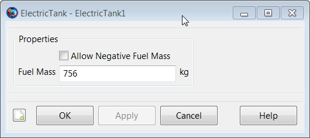 |
Remarks
Use of ElectricTank Resource in Conjunction with Maneuvers
An ElectricTank is used in conjunction with finite maneuvers. To implement a finite maneuver, you must first create both an ElectricThruster and a FiniteBurn resource. You must also associate the ElectricTank with the ElectricThruster resource and you must associate the ElectricThruster with the FiniteBurn resource. The finite maneuver is implemented using the BeginFiniteBurn/EndFiniteBurn commands. See the BeginFiniteBurn/EndFiniteBurn command documentation for worked examples on how the ElectricTank resource is used in conjunction with finite maneuvers.
For a complete descripton of how to configure all Resources required for electric propulsion modelling, see the Tutorial named Chapter 12, Electric Propulsion
Behavior When Configuring Tank and Attached Tank Properties
Create a default ElectricTank and attach it to a Spacecraft and ElectricThruster.
% Create the ElectricTank Resource
Create ElectricTank aTank
aTank.AllowNegativeFuelMass = false
aTank.FuelMass = 756
% Create an ElectricThruster and assign it a ElectricTank
Create ElectricThruster aThruster
aThruster.Tank = {aTank}
% Add the ElectricTank and Thruster to a Spacecraft
Create Spacecraft aSpacecraft
aSpacecraft.Tanks = {aTank}
aSpacecraft.Thrusters = {aThruster} As exhibited below, there are some subtleties associated with
setting and getting parent vs. cloned resources. In the example above,
aTank is the parent ElectricTank
resource and the field aSpacecraft.Tanks is populated
with a cloned copy of aTank.
Create a second spacecraft and attach a fuel tank using the same
procedure used in the previous example. Set the
FuelMass in the parent resource,
aTank, to 900 kg.
% Add the ElectricTank and ElectricThruster to a second Spacecraft
Create Spacecraft bSpacecraft
bSpacecraft.Tanks = {aTank}
bSpacecraft.Thrusters = {aThruster}
aTank.FuelMass = 900 %Can be performed in both resource and
%command modesNote that in the example above, setting the value of the parent
resource, aTank, changes the fuel mass value in both
cloned fuel tank resources. More specifically, the value of both
aSpacecraft.aTank.FuelMass and
bSpacecraft.aTank.FuelMass are both now equal to the
new value of 900 kg. We note that the assignment command for the parent
resource, aTank.FuelMass, can be performed in both
resource and command modes.
To change the value of the fuel mass in only the first created spacecraft, aSpacecraft, we do the following.
% Create the Fuel Tank Resource
BeginMissionSequence
aTank.FuelMass = 756 %Fuel tank mass in both s/c set back to default
aSpacecraft.aTank.FuelMass = 1000 %Can only be performed in command mode. As a result of the commands in the previous example, the value of
aSpacecraft.aTank.FuelMass is 1000
kg and the value of bSpacecraft.aTank.FuelMass is 756
kg. We note that the assignment command for the cloned resource,
aSpacecraft.aTank.FuelMass, can only be performed in
command mode.
Caution: Value of AllowNegativeFuelMass Flag Can Affect Iterative Processes
By default, GMAT will not allow the fuel mass to be negative. However, occasionally in iterative processes such as targeting, a solver will try values of a maneuver parameter that result in total fuel depletion. Using the default tank settings, this will throw an exception stopping the run unless you set the AllowNegativeFuelMass flag to true. GMAT will not allow the the total spacecraft mass to be negative. If DryMass + FuelMass is negative GMAT will throw an exception and stop.
Examples
Create a default ElectricTank and attach it to a Spacecraft and ElectricThruster.
% Create the ElectricTank Resource
Create ElectricTank aTank
aTank.AllowNegativeFuelMass = false
aTank.FuelMass = 756
% Create an ElectricThruster and assign it a ElectricTank
Create ElectricThruster aThruster
aThruster.Tank = {aTank}
% Add the ElectricTank and ElectricThruster to a Spacecraft
Create Spacecraft aSpacecraft
aSpacecraft.Tanks = {aTank}
aSpacecraft.Thrusters = {aThruster}
BeginMissionSequence ElectricThruster
ElectricThruster — An electric thruster model
Description
The ElectricThruster resource is a model of an electric thruster which supports several models for thrust and mass flow computation. The ElecticThruster model also allows you to specify properties such as a duty cycle and scale factor and to connect an ElectricThruster with an ElectricTank. You can flexibly define the direction of the thrust by specifying the thrust components in coordinate systems such as (locally defined) SpacecraftBody or LVLH, or by choosing any configured CoordinateSystem resource.
For a complete descripton of how to configure all Resources required for electric propulsion modelling, see the Tutorial named Chapter 12, Electric Propulsion
See Also ElectricTank, NuclearPowerSystem, SolarPowerSystem
Fields
| Field | Description | ||||||||||||
|---|---|---|---|---|---|---|---|---|---|---|---|---|---|
| Axes | Allows the user to define a spacecraft centered set of axes for the ElectricThruster. This field cannot be modified in the Mission Sequence
| ||||||||||||
| ConstantThrust | Thrust value used ThrustModel is set to ConstantThrustAndIsp.
| ||||||||||||
| CoordinateSystem | Determines what coordinate system the orientation parameters, ThrustDirection1, ThrustDirection2, and ThrustDirection3 refer to. This field cannot be modified in the Mission Sequence.
| ||||||||||||
| DecrementMass | Flag which determines if the FuelMass is to be decremented as it used. This field cannot be modified in the Mission Sequence.
| ||||||||||||
| DutyCycle | Fraction of time that the thrusters are on during a maneuver. The thrust applied to the spacecraft is scaled by this amount. Note that this scale factor also affects mass flow rate.
| ||||||||||||
| FixedEfficiency | Thruster efficiency. Only used when ThrustModel is FixedEfficiency.
| ||||||||||||
| GravitationalAccel | Value of the gravitational acceleration used for the FuelTank/Thruster calculations.
| ||||||||||||
| Isp | Thruster specific impulse. Only used when ThrustModel is set to FixedEfficiency or ConstantThrustAndIsp.
| ||||||||||||
| MassFlowCoeff1 | Mass flow coefficient.
| ||||||||||||
| MassFlowCoeff2 | Mass flow coefficient.
| ||||||||||||
| MassFlowCoeff3 | Mass flow coefficient.
| ||||||||||||
| MassFlowCoeff4 | Mass flow coefficient.
| ||||||||||||
| MassFlowCoeff5 | Mass flow coefficient.
| ||||||||||||
| MaximumUsablePower | The maximum power the thruster can use to generate thrust. Power provided above MaximumUsablePower is not used in the thrust model.
| ||||||||||||
| MinimumUsablePower | The minimum power the thruster can use to generate thrust. If power provided to thruster is below MinimumUsablePower, no thrust is generated.
| ||||||||||||
| MixRatio | The mixture ratio employed to draw fuel from multiple tanks. For example, if there are two tanks and MixRatio is set to [2 1], then twice as much fuel will be drawn from tank one as from tank 2 in the Tank list. Note, if a MixRatio is not supplied, fuel is drawn from tanks in equal amounts, (the MixRatio is set to a vector of ones the same length as the Tank list).
| ||||||||||||
| Origin | This field, used in conjunction with the Axes field, allows the user to define a spacecraft centered set of axes for the ElectricThruster. Origin has no affect when a Local coordinate system is used and the Axes are set to MJ2000Eq or SpacecraftBody. This field cannot be modified in the Mission Sequence.
| ||||||||||||
| Tanks | ElectricTank from which the
ElectricThruster draws propellant from. In a
script command, an empty list, e.g.,
| ||||||||||||
| ThrustCoeff1 | Thrust coefficient.
| ||||||||||||
| ThrustCoeff2 | Thrust coefficient.
| ||||||||||||
| ThrustCoeff3 | Thrust coefficient.
| ||||||||||||
| ThrustCoeff4 | Thrust coefficient.
| ||||||||||||
| ThrustCoeff5 | Thrust coefficient.
| ||||||||||||
| ThrustDirection1 | X component of the spacecraft thrust vector direction.
| ||||||||||||
| ThrustDirection2 | Y component of the spacecraft thrust vector direction.
| ||||||||||||
| ThrustDirection3 | Z component of the spacecraft thrust vector direction.
| ||||||||||||
| ThrustModel | The type of thruster model. See Mathematical Models for a detailed description of the options.
| ||||||||||||
| ThrustScaleFactor | ThrustScaleFactor is a scale factor that is multiplied by the thrust vector, for a given thruster, before the thrust vector is added into the total acceleration. Note that the value of this scale factor does not affect the mass flow rate.
|
Interactions
| Command or Resource | Description |
|---|---|
| BeginFiniteBurn/EndFiniteBurn command | Use these commands, which require a Spacecraft and a FiniteBurn name as input, to implement a finite burn. |
| ElectricTank resource | This resource contains the fuel used to power the ElectricThruster specified by the FiniteBurn resource. |
| FiniteBurn resource | When using the BeginFiniteBurn/EndFiniteBurn commands, you must specify which FiniteBurn resource to implement. The FiniteBurn resource specifies which ElectricThruster(s) to use for the finite burn. |
| Spacecraft resource | When using the BeginFiniteBurn/EndFiniteBurn commands, you must specify which Spacecraft to apply the finite burn to. |
| Propagate command | In order to implement a non-zero finite burn, a Propagate statement must occurr within the BeginFiniteBurn and EndFiniteBurn statements. |
GUI
The ElectricThruster dialog box allows you to specify properties of an ElectricThruster including the Coordinate System of the thrust acceleration direction vector, the thrust magnitude and Isp coefficients, and choice of ElectricTank. The layout of the ElectricThruster dialog box is shown below.
When configuring the Coordinate System field, you can choose between existing coordinate systems or use locally defined coordinate systems. The Axes field is only active if Coordinate System is set to . The Origin field is only active if Coordinate System is set to and Axes is set to either or .
Selecting the button brings up the following dialog box where you may input the coefficients for the ElectricThruster polynomial.
 |
Similarly, clicking the Configure Polynomials also allows you to edit mass flow coefficients as shown below.
Remarks
Mathematical Models
The ElectricThruster model supports several models for computation of thrust and and mass flow rate and the model used is set by the ThrustModel field. When ThrustModel is set to ThrustMassPolynomial, the following polynomials are used to compute thrust and mass flow rate
 |
where P is the power provided to the thruster which is computed using the power logic defined on the FiniteBurn resource, f_d is duty cycle, f_s is thrust scale factor, R_iT is the rotation matrix from the thrust coordinate system to the inertial system, and T_hat is the thrust unit vector. By industry convention, the mass flow rate and thrust polynomial equations are in mg/s and milli-Newtons respectively. GMAT internally converts the units to be consistent with the equations of motion.
When ThrustModel is set to ConstantThrustAndIsp, the following polynomials are used to compute thrust and mass flow rate
where C_t1 is set using the ConstantThrust field, Isp is set using the Isp field, f_d is duty cycle, f_s is thrust scale factor, R_iT is the rotation matrix from the thrust coordinate system to the inertial system, and T_hat is the thrust unit vector. Note, by industry convention, the mass flow rate and thrust polynomial equations are in mg/s and milli-Newtons respectively. GMAT internally converts the units to be consistent with the equations of motion.
When ThrustModel is set to FixedEfficiency, the following polynomials are used to compute thrust and mass flow rate
 |
where P is the power provided to the thruster which is computed from the power logic defined on the FiniteBurn Resource. "Eta" is the FixedEfficiency setting, f_d is duty cycle, f_s is thrust scale factor, R_iT is the rotation matrix from the thrust coordinate system to the inertial system, and T_hat is the thrust unit vector.
Use of Thruster Resource in Conjunction With Maneuvers
An ElectricThruster resource is used only in association with finite maneuvers. To implement a finite maneuver, you must first create both an ElectricTank and a FiniteBurn resource. You must also associate an ElectricTank with the ElectricThruster resource and you must associate an ElectricThruster with the FiniteBurn resource. The actual finite maneuver is implemented using the BeginFiniteBurn/EndFiniteBurn commands.
For a complete descripton of how to configure all Resources required for electric propulsion modelling, see the Tutorial named Chapter 12, Electric Propulsion
Local Coordinate Systems
Here, a Local coordinate system is defined as one that we configure "locally" using the ElectricThruster resource interface as opposed to defining a coordinate system using the Coordinate Systems folder in the Resources Tree.
To configure a local coordinate system, you must specify the coordinate system of the input thrust acceleration direction vector, . If you choose a local coordinate system, the four choices available, as given by the sub-field, are , , , and . or Velocity-Normal-Binormal is a non-inertial coordinate system based upon the motion of the spacecraft with respect to the sub-field. For example, if the is chosen as Earth, then the X-axis of this coordinate system is the along the velocity of the spacecraft with respect to the Earth, the Y-axis is along the instantaneous orbit normal (with respect to the Earth) of the spacecraft, and the Z-axis completes the right-handed set.
Similarly, Local Vertical Local Horizontal or is also a non-inertial coordinate system based upon the motion of the spacecraft with respect to the sub-field. Again, if we choose Earth as the origin, then the X-axis of this coordinate system is the position of the spacecraft with respect to the Earth, the Z-axis is the instantaneous orbit normal (with respect to the Earth) of the spacecraft, and the Y-axis completes the right-handed set.
is the J2000-based Earth-centered Earth mean equator inertial coordinate system. Note that the sub-field is not needed to define this coordinate system.
is the attitude system of the spacecraft. Since the thrust is applied in this system, GMAT uses the attitude of the spacecraft, a spacecraft attribute, to determine the inertial thrust direction. Note that the Origin sub-field is not needed to define this coordinate system.
Caution Regarding Force Model Discontinuties
Note that when modellign shadows on a SolarPowerSystem Resource, it is possible that there is not enough power available to power an ElectricThruster. This occurs when the power available from the SolarPowerSystem, or the power distributed to the thruster, is less than MinimumUsablePower. When this occurs, the thruster model turns off thrust and this can cause a discontinuity in the force model. To avoid this, you must propagate to the boundary and switch propagators, or configure the Propagator to continue propagating if a poor step occurs.
Examples
Create a default ElectricTank and an ElectricThruster that allows for fuel depletion, assign the ElectricThruster the default ElectricTank, and attach both to a Spacecraft.
% Create an ElectricTank Resource
Create ElectricTank anElectricTank
% Create an Electric Thruster Resource
Create ElectricThruster anElectricThruster
anElectricThruster.CoordinateSystem = Local
anElectricThruster.Origin = Earth
anElectricThruster.Axes = VNB
anElectricThruster.ThrustDirection1 = 1
anElectricThruster.ThrustDirection2 = 0
anElectricThruster.ThrustDirection3 = 0
anElectricThruster.DutyCycle = 1
anElectricThruster.ThrustScaleFactor = 1
anElectricThruster.DecrementMass = true
anElectricThruster.Tank = {anElectricTank}
anElectricThruster.GravitationalAccel = 9.810000000000001
anElectricThruster.ThrustModel = ThrustMassPolynomial
anElectricThruster.MaximumUsablePower = 7.266
anElectricThruster.MinimumUsablePower = 0.638
anElectricThruster.ThrustCoeff1 = -5.19082
anElectricThruster.ThrustCoeff2 = 2.96519
anElectricThruster.ThrustCoeff3 = -14.4789
anElectricThruster.ThrustCoeff4 = 54.05382
anElectricThruster.ThrustCoeff5 = -0.00100092
anElectricThruster.MassFlowCoeff1 = -0.004776
anElectricThruster.MassFlowCoeff2 = 0.05717
anElectricThruster.MassFlowCoeff3 = -0.09956
anElectricThruster.MassFlowCoeff4 = 0.03211
anElectricThruster.MassFlowCoeff5 = 2.13781
anElectricThruster.FixedEfficiency = 0.7
anElectricThruster.Isp = 4200
anElectricThruster.ConstantThrust = 0.237
% Create a SolarPowerSystem Resource
Create SolarPowerSystem aSolarPowerSystem
% Create a Spacecraft Resource and attach hardware
Create Spacecraft DefaultSC
DefaultSC.Tanks = {anElectricTank}
DefaultSC.Thrusters = {anElectricThruster}
DefaultSC.PowerSystem = aSolarPowerSystem
BeginMissionSequenceEclipseLocator
EclipseLocator — A Spacecraft eclipse event locator
Description
Note
EclipseLocator is a SPICE-based subsystem that uses a parallel configuration for the solar system and celestial bodies from other GMAT components. For precision applications, care must be taken to ensure that both configurations are consistent. See Remarks for details.
An EclipseLocator is an event locator used to find solar eclipse events as seen by a Spacecraft. By default, an EclipseLocator generates a text event report listing the beginning and ending times of each event, along with the duration, eclipsing body, shadow type, and information about simultaneous and adjacent nested events. Eclipse location can be performed over the entire propagation interval or over a subinterval, and can optionally adjust for light-time delay and stellar aberration.
Eclipse location can be performed with one or more CelestialBody resources as eclipsing (or occulting) bodies. Any configured CelestialBody can be used as an occulting body, including user-defined ones. Any type of eclipse can be found, including total (umbra), partial (penumbra), and annular (antumbra). All selected occulting bodies are searched using the same selection for eclipse types, search interval, and search options; to customize the options per body, use multiple EclipseLocator resources.
By default, the EclipseLocator searches the
entire interval of propagation of the Spacecraft. To
search a custom interval, set UseEntireInterval to
False and set InitialEpoch and
FinalEpoch accordingly. Note that these epochs are
assumed to be Spacecraft epochs, and so must be valid
and within the Spacecraft ephemeris interval. If they
fall outside the propagation interval of the
Spacecraft, GMAT will display an error.
The contact locator can optionally adjust for both light-time delay and stellar aberration, though stellar aberration currently has no effect.
The event search is performed at a fixed step through the interval. You can control the step size (in seconds) by setting the StepSize field. An appropriate choice for step size is no greater than the duration of the minimum event you wish to find, or the minimum gap between events you want to resolve, whichever is smaller. See Remarks for details.
GMAT uses the SPICE library for the fundamental event location algorithm. As such, all celestial body data is loaded from SPICE kernels for this subsystem, rather than GMAT's own CelestialBody shape and orientation configuration. See Remarks for details.
Unless otherwise mentioned, EclipseLocator fields cannot be set in the mission sequence.
See Also: CelestialBody, Spacecraft, ContactLocator, FindEvents
Fields
| Field | Description | ||||||||||||
|---|---|---|---|---|---|---|---|---|---|---|---|---|---|
| EclipseTypes | Types of eclipses (shadows) to search for. May be
| ||||||||||||
| Filename | Name and path of the eclipse report file. This field can be set in the mission sequence.
| ||||||||||||
| FinalEpoch | Last epoch to search for eclipses, in the format specified by InputEpochFormat. The epoch must be a valid epoch in the Spacecraft ephemeris interval. This field can be set in the mission sequence.
| ||||||||||||
| InitialEpoch | First epoch to search for eclipses, in the format specified by InputEpochFormat. The epoch must be a valid epoch in the Spacecraft ephemeris interval. This field can be set in the mission sequence.
| ||||||||||||
| OccultingBodies | List of occulting bodies to search for eclipses. Can be any number of GMAT CelestialBody-type resources, such as Planet, Moon, Asteroid, etc. Note that an occulting body must have a mass (e.g. not LibrationPoint or Barycenter).
| ||||||||||||
| RunMode | Mode of event location execution.
| ||||||||||||
| Spacecraft | The observing Spacecraft resource to search for eclipses.
| ||||||||||||
| StepSize | Step size of event locator. See Remarks for discussion of appropriate values.
| ||||||||||||
| UseEntireInterval | Search the entire available Target ephemeris interval. This field can be set in the mission sequence.
| ||||||||||||
| UseLightTimeDelay | Use light-time delay in the event-finding algorithm.
| ||||||||||||
| UseStellarAberration | Use stellar aberration in addition to light-time delay in the event-finding algorithm. Light-time delay must be enabled. Stellar aberration currently has no effect on eclipse searches.
| ||||||||||||
| WriteReport | Write an event report when event location is executed. This field can be set in the mission sequence.
|
GUI
 |
The default EclipseLocator GUI for a new resource is shown above. You can choose one Spacecraft from the list, which is populated by all the Spacecraft resources currently configured in the mission. In the Occulting Bodies list, you can check the box next to all CelestialBody resources you want to search for eclipses. This list shows all celestial bodies currently configured in the mission.
In the Eclipse Types list, choose the types of eclipses to search for. Note that each selection will increase the duration of the search.
You can configure the output via Filename, Run Mode, and Write Report near the bottom. If Write Report is enabled, a text report will be written to the file specified in Filename. The search will execute during FindEvents commands (for Manual or Automatic modes) and automatically at the end of the mission (for Automatic mode), depending on the Run Mode.
You can configure the search interval via the options in the upper right. Uncheck Use Entire Interval to set the search interval manually. See the Remarks section for considerations when setting the search interval.
You can control the search algorithm via the options in the bottom right. Configure light-time and stellar aberration via the check boxes next to each, and select the signal direction via the Light-time direction selection.
To control the fidelity and execution time of the search, set the Step size appropriately. See the Remarks section for details.
Remarks
Data configuration
The EclipseLocator implementation is based on the NAIF SPICE toolkit, which uses a different mechanism for environmental data such as celestial body shape and orientation, planetary ephemerides, body-specific frame definitions, and leap seconds. Therefore, it is necessary to maintain two parallel configurations to ensure that the event location results are consistent with GMAT's own propagation and other parameters. The specific data to be maintained is:
Planetary shape and orientation:
GMAT core: CelestialBody.EquatorialRadius, Flattening, SpinAxisRAConstant, SpinAxisRARate, etc.
ContactLocator: SolarSystem.PCKFilename, CelestialBody.PlanetarySpiceKernelName
Planetary ephemeris:
GMAT core: SolarSystem.DEFilename, or (SolarSystem.SPKFilename, CelestialBody.OrbitSpiceKernelName, CelestialBody.NAIFId)
ContactLocator: SolarSystem.SPKFilename, CelestialBody.OrbitSpiceKernelName, CelestialBody.NAIFId
Body-fixed frame:
GMAT core: built-in
ContactLocator: CelestialBody.SpiceFrameId, CelestialBody.FrameSpiceKernelName
Leap seconds:
GMAT core: startup file
LEAP_SECS_FILEsettingContactLocator: SolarSystem.LSKFilename
See SolarSystem and CelestialBody for more details.
Search interval
The EclipseLocator search interval can be specified either as the entire ephemeris interval of the Spacecraft, or as a user-defined interval. If UseEntireInterval is true, the search is performed over the entire ephemeris interval of the Spacecraft, including any gaps or discontinuities. If UseEntireInterval is false, the provided InitialEpoch and FinalEpoch are used to form the search interval directly. The user must ensure than the provided interval results in valid Spacecraft and CelestialBody ephemeris epochs.
Run modes
The EclipseLocator works in conjunction with the FindEvents command: the EclipseLocator resource defines the configuration of the event search, and the FindEvents command executes the search at a specific point in the mission sequence. The mode of interaction is defined by EclipseLocator.RunMode, which has three options:
Automatic: All FindEvents commands are executed as-is, plus an additional FindEvents is executed automatically at the end of the mission sequence.Manual: All FindEvents commands are executed as-is.Disabled: FindEvents commands are ignored.
Search algorithm
The EclpseLocator uses the NAIF SPICE GF (geometry finder) subsystem to perform event location. Specifically, the following call is used for the search:
gfoclt_c: For third-body occultation searches
This function implements a fixed-step search method through the interval, with an embedded root-location step if an event is found. StepSize should be set equal to the length of the minimum-duration event to be found, or equal to the length of the minimum-duration gap between events, whichever is smaller. To guarantee location of 10-second eclipses, or 10-second gaps between adjacent eclipses, set StepSize = 10.
For details, see the reference documentation for the function linked above.
Report format
When WriteReport is enabled, the EclipseLocator outputs an event report at the end of each search execution. The report contains the following data:
Spacecraft name
For each event:
Event start time (UTC)
Event stop time (UTC)
Event duration (s)
Occulting body name
Eclipse type
Total event number
Total duration
Number of individual events
Number of total events
Maximum total duration
Eclipse number of total duration
The report makes the distinction between an individual event and a total event.
An individual event is a single continuous event of a single type (umbra, penumbra, etc.) from a single occulting body. Individual events can be nested for a single occulting body, such as a penumbra event followed immediately by an umbra event, or they can be nested from multiple occulting bodies, such as a Luna eclipse occuring in the middle of an Earth eclipse.
A total event is the entire set of nested individual events. The total event is given a single number, and the total duration is reported in the output file.
Event location with SPK propagator
When using the SPK propagator, you load one or more SPK ephemeris files using the Spacecraft.OrbitSpiceKernelName field. For the purposes of event location, this field causes the appropriate ephemeris files to be loaded automatically on run, and so use of the Propagation command is not necessary. This is an easy way of performing event location on an existing SPK ephemeris file. See the example below.
Examples
Perform a basic eclipse search in LEO:
SolarSystem.EphemerisSource = 'DE421'
Create Spacecraft sat
sat.DateFormat = UTCGregorian
sat.Epoch = '15 Sep 2010 16:00:00.000'
sat.CoordinateSystem = EarthMJ2000Eq
sat.DisplayStateType = Keplerian
sat.SMA = 6678.14
sat.ECC = 0.001
sat.INC = 0
sat.RAAN = 0
sat.AOP = 0
sat.TA = 180
Create ForceModel fm
fm.CentralBody = Earth
fm.PrimaryBodies = {Earth}
fm.GravityField.Earth.PotentialFile = 'JGM2.cof'
fm.GravityField.Earth.Degree = 0
fm.GravityField.Earth.Order = 0
fm.GravityField.Earth.EarthTideModel = 'None'
fm.Drag.AtmosphereModel = None
fm.PointMasses = {}
fm.RelativisticCorrection = Off
fm.SRP = Off
Create Propagator prop
prop.FM = fm
prop.Type = RungeKutta89
Create EclipseLocator el
el.Spacecraft = sat
el.Filename = 'Simple.report'
el.OccultingBodies = {Earth}
el.EclipseTypes = {'Umbra', 'Penumbra', 'Antumbra'}
BeginMissionSequence
Propagate prop(sat) {sat.ElapsedSecs = 10800}
Perform an eclipse event search from a Mars orbiter, with Phobos, Earth, and Moon eclipses:
% Mars orbiter with annular eclipses of Earth and Moon.
SolarSystem.EphemerisSource = 'SPICE'
SolarSystem.SPKFilename = 'de421.bsp'
Mars.NAIFId = 499
Mars.OrbitSpiceKernelName = {'../data/planetary_ephem/spk/mar063.bsp'}
Create Spacecraft sat
sat.DateFormat = UTCGregorian
sat.Epoch = '10 May 1984 00:00:00.000'
sat.CoordinateSystem = MarsMJ2000Eq
sat.DisplayStateType = Keplerian
sat.SMA = 6792.38
sat.ECC = 0
sat.INC = 45
sat.RAAN = 0
sat.AOP = 0
sat.TA = 0
Create ForceModel fm
fm.CentralBody = Mars
fm.PrimaryBodies = {Mars}
fm.GravityField.Mars.PotentialFile = 'Mars50c.cof'
fm.GravityField.Mars.Degree = 0
fm.GravityField.Mars.Order = 0
fm.Drag.AtmosphereModel = None
fm.PointMasses = {}
fm.RelativisticCorrection = Off
fm.SRP = Off
Create Propagator prop
prop.FM = fm
prop.Type = RungeKutta89
Create CoordinateSystem MarsMJ2000Eq
MarsMJ2000Eq.Origin = Mars
MarsMJ2000Eq.Axes = MJ2000Eq
Create Moon Phobos
Phobos.CentralBody = 'Mars'
Phobos.PosVelSource = 'SPICE'
Phobos.NAIFId = 401
Phobos.OrbitSpiceKernelName = {'mar063.bsp'}
Phobos.SpiceFrameId = 'IAU_PHOBOS'
Phobos.EquatorialRadius = 13.5
Phobos.Flattening = 0.3185185185185186
Phobos.Mu = 7.093399e-004
Create Moon Deimos
Deimos.CentralBody = 'Mars'
Deimos.PosVelSource = 'SPICE'
Deimos.NAIFId = 402
Deimos.OrbitSpiceKernelName = {'mar063.bsp'}
Deimos.EquatorialRadius = 7.5
Deimos.SpiceFrameId = 'IAU_DEIMOS'
Deimos.Flattening = 0.30666666666666664
Deimos.Mu = 1.588174e-004
Create EclipseLocator ec
ec.Spacecraft = sat
ec.OccultingBodies = {Mercury, Venus, Earth, Luna, Mars, Phobos, Deimos}
ec.Filename = 'EarthTransit.report'
BeginMissionSequence
Propagate prop(sat) {sat.ElapsedDays = 2}
Perform eclipse location on an existing SPK ephemeris file:
SolarSystem.EphemerisSource = 'DE421'
Create Spacecraft sat
sat.OrbitSpiceKernelName = {'../data/vehicle/ephem/spk/Events_Simple.bsp'}
Create EclipseLocator cl
cl.Spacecraft = sat
cl.OccultingBodies = {Earth}
cl.Filename = 'SPKPropagation.report'
BeginMissionSequence
EphemerisFile
EphemerisFile — Generate spacecraft’s ephemeris data
Description
EphemerisFile is a user-defined resource that generates spacecraft’s ephemeris in a report format. You can generate spacecraft’s ephemeris data in any of the user-defined coordinate frames. GMAT allows you to output ephemeris data in CCSDS-OEM, SPK, Code-500 and STK .e (STK -TimePosVel) formats. See the Remarks section for more details. EphemerisFile resource can be configured to generate ephemeris data at default integration steps or by entering user-selected step sizes.
GMAT allows you to generate any number of ephemeris data files by creating multiple EphermisFile resources. An EphemerisFile resource can be created using either the GUI or script interface. GMAT also provides the option of when to write and stop writing ephemeris data to a text file through the Toggle On/Off commands. See the Remarks section below for detailed discussion of the interaction between EphemerisFile resource and Toggle command.
See Also: CoordinateSystem, Toggle
Fields
| Field | Description | ||||||||||||
|---|---|---|---|---|---|---|---|---|---|---|---|---|---|
| CoordinateSystem | Allows you to generate spacecraft ephemeris w.r.t the coordinate system that you select for this field. Ephemeris can also be generated w.r.t a user-specified coordinate system. This field cannot be modified in the Mission Sequence.
| ||||||||||||
| DistanceUnit | The unit for distance quantities written to STK ephemeris files. Only active when FileFormat is set to STK-TimePosVel.
| ||||||||||||
| EpochFormat | The field allows you to set the type of the epoch that you choose to enter for InitialEpoch and FinalEpoch fields. This field cannot be modified in the Mission Sequence.
| ||||||||||||
| FileFormat | Allows the user to generate ephemeris file in four available ephemeris formats: CCSDS-OEM, SPK, Code-500 or STK-TimePosVel (i.e. STK .e format). This field cannot be modified in the Mission Sequence.
| ||||||||||||
| FileName | Allows the user to name the ephemeris file that is generated. File extensions for CCSDS-OEM, SPK, Code-500 and STK-TimePosVel ephemeris types are *.oem, *.bsp, *.eph and *.e respectively. This field cannot be modified in the Mission Sequence.
| ||||||||||||
| FinalEpoch | Allows the user to specify the time span of an ephemeris file. Ephemeris file is generated up to final epoch that is specified in FinalEpoch field. This field cannot be modified in the Mission Sequence.
| ||||||||||||
| IncludeEventBoundaries | Flag to optionally write event data and boundaries to an STK ephem file. Only active when FileFormat is set to STK-TimePosVel. When set to true, if there are discontinuities in the ephemeris data, the times of the discontinuities are written to the file along with blank lines at the discontinuity.
| ||||||||||||
| InitialEpoch | Allows the user to specify the starting epoch of the ephemeris file. Ephemeris file is generated starting from the epoch that is defined in InitialEpoch field. This field cannot be modified in the Mission Sequence.
| ||||||||||||
| InterpolationOrder | Allows you to set the interpolation order for the available interpolator methods (Lagrange or Hermite) for any of the ephemeris types. This field cannot be modified in the Mission Sequence.
| ||||||||||||
| Interpolator | This field defines the available interpolator method that was used to generate ephemeris file. Available Interpolators are Lagrange or Hermite. This field cannot be modified in the Mission Sequence.
| ||||||||||||
| Maximized | Allows the user to maximize the generated ephemeris file window. This field cannot be modified in the Mission Sequence.
| ||||||||||||
| OutputFormat | Allows the user to specify what type of format they want GSFC Code-500 ephmeris to be generated in. GSFC Code-500 ephemeris can be generated in the PC or UNIX version. This field cannot be modified in the Mission Sequence.
| ||||||||||||
| RelativeZOrder | Allows the user to select which generated ephemeris file display window is to displayed first on the screen. The EphemerisFile resource with lowest RelativeZOrder value will be displayed last while EphemerisFile resource with highest RelativeZOrder value will be displayed first. This field cannot be modified in the Mission Sequence.
| ||||||||||||
| Size | Allows the user to control the display size of generated ephemeris file panel. First value in [0 0] matrix controls horizonal size and second value controls vertical size of ephemeris file display window. This field cannot be modified in the Mission Sequence.
| ||||||||||||
| Spacecraft | Allows the user to generate ephemeris data of spacecraft(s) that are defined in Spacecraft field. This field cannot be modified in the Mission Sequence.
| ||||||||||||
| StepSize | The ephemeris file is generated at the step size that
is specified for StepSize field. The user can
generate ephemeris file at default Integration step size (using
raw integrator steps) or by defining a fixed step size. For
| ||||||||||||
| UpperLeft | Allows the user to pan the generated ephemeris file display window in any direction. First value in [0 0] matrix helps to pan the window horizontally and second value helps to pan the window vertically. This field cannot be modified in the Mission Sequence.
| ||||||||||||
| WriteEphemeris | Allows the user to optionally calculate/write or not calculate/write an ephemeris that has been created and configured. This field cannot be modified in the Mission Sequence.
|
GUI
The figure below shows the default settings for the EphemerisFile resource:
 |
GMAT allows you to modify InitialEpoch, FinalEpoch and StepSize fields of EphemerisFile resource. Instead of always generating the ephemeris file at default time span settings of InitialSpacecraftEpoch and FinalSpacecraftEpoch, you can define your own initial and final epochs. Similarly, instead of using the default IntegratorSteps setting for StepSize field, you can generate the ephemeris file at the step size of your choice.
The GUI figure below shows ephemeris file which will be generated from initial epoch of 01 Jan 2000 14:00:00.000 to final epoch of 01 Jan 2000 20:00:00.000 while using non-default step size of 300 seconds:
 |
Remarks
Behavior of Coordinate System Field for CCSDS, Code 500 and SPK File Formats
If the selected CoordinateSystem uses MJ2000Eq axes, the CCSDS ephemeris file contains “EME2000” for the REF_FRAME according to CCSDS convention. By CCSDS requirements, non-standard axes names are allowed when documented in an ICD. The CoordinateSystems specifications document in the user's guide is the ICD for all axes supported by GMAT. Also if you create a new coordinate system whose origin is Luna, then the CCSDS ephemeris file contains “Moon” for the CENTER_NAME.
For code 500 file format, J2000 epoch can be with reference to any central body that you select. For code 500 and SPK file formats, GMAT can only write ephemeris for a coordinate system under CoordinateSystem field that references MJ2000Eq axis type for any central body.
There is one important difference between GMAT and IAU conventions. By IAU convention, there is no name for the IAU2000 axes that is independent of the origin. GCRF is coordinate system centered at earth with IAU2000 axes, and ICRF is a coordinate system centered at the solar system barycenter with IAU2000 axes. We have chosen to name the IAU2000 axes ICRF regardless of the origin. Please refer to CoordinateSystems specifications document to read more about built-in coordinate systems and description of Axes types that GMAT supports.
Behavior of Ephemeris File during Discontinuous & Iterative Processes
When generating an ephemeris file for a mission sequence, GMAT separately interpolates ephemeris segments that are bounded by discontinuous or discrete mission events. Discontinuous or discrete mission sequence events can range from impulsive or finite-burn maneuvers, changes in dynamics models or when using assignment commands. Furthermore, when a mission sequence employs iterative processes such as differential correction or optimization, GMAT only writes the ephemeris for the final solution from the iterative processes. See the Examples section below to see how an ephemeris file is generated during a discontinuous event such as an impulsive burn and iterative process like differential correction.
Version 1 of CCSDS Orbit Data Messages (ODMs) document used to require that the ephemeris be generated in increasing time order and only going forward. However version 2 of CCSDS ODM document now allows for ephemeris file to be generated backwards as well. Currently in GMAT, when you propagate a spacecraft backwards in time, then the CCSDS ephemeris is also generated backwards.
Warning
The Code500 ephemeris file requires fixed time steps and has a
pre-defined format for handling chunks of ephemeris data. The format
does not allow chunking to stop and start at state discontinuities
that occur at impulsive maneuvers. GMAT's current behavior is to
interpolate across those discontinuities as the code 500 format does
not elegantly support ephemerides with discontinuities. This is
acceptable for small maneuvers but becomes less accurate as the
maneuvers grow in magnitude. We recommend using more modern ephemeris
file formats for this reason. In the event you must use a Code500
ephemeris file with a discontinuous trajectory, we recommend using a
propagator with small, fixed times steps, and a small
StepSize setting on the ephemeris file to reduce
interpolation error near the discontinuity.
Similar to CCSDS ephemeris format, the STK-TimePosVel ephemeris is also generated in separate chunks of ephemeris data whenever an event such as an impulsive or a finite maneuver takes place or a change in dynamic models occurs. However, unlike the CCSDS ephemeris, STK-TimePosVel ephemeris is not generated during backward propagations and only forward propagation ephemeris is reported.
Behavior of Ephemeris File When It Does Not Meet CCSDS File Format Requirements
When an ephemeris file is generated, it needs to follow the Recommended Standard for ODMs that has been prepared by the CCSDS. The set of orbit data messages described in the Recommended Standard is the baseline concept of trajectory representation in data interchange applications that are cross-supported between Agencies of the CCSDS. CCSDS-ODM Recommended Standard documents establishes a common framework and provides a common basis for the interchange of orbit data.
Currently, the ephemeris file that is generated by GMAT meets most of the recommended standards that are prescribed by the CCSDS. However whenever there is a case when GMAT’s ephemeris violates CCSDS file format requirements, then the generated ephemeris file will display a warning in ephemeris file’s Header section. More specifically, this warning will be given under COMMENT and it will let you know that this ephemeris file does not fully satisfy CCSDS file formatting requirements.
Behavior of Interpolation Order Field for the Ephemeris File Formats:
For CCSDS file formats, whenever there is not enough raw data available to support the requested interpolation type and order, GMAT throws an error message and stops interpolation. GMAT still generates the ephemeris file but no spacecraft ephemeris data is written to the file and only the file’s Header section will be there. Within the Header section and under COMMENT, a message will be thrown saying that not enough raw data is available to generate spacecraft ephemeris data at the requested interpolation order.
For SPK file formats, raw data is always collected at every integrator step for each segment and then sent to SPK kernel writer. GMAT does not perform any interpolation for SPK files as SPK contains its own interpolation. As a result, InitialEpoch and FinalEpoch fields behave differently for SPK ephemerides. The first epoch on the file is the first step after InitialEpoch. The last epoch on the file is the last step before FinalEpoch.
For code 500 file formats, you can set the interpolation order and currently GMAT supports Lagrange as the available interpolator method. For code 500 file formats, if there is not enough raw data available to support interpolation type and order, GMAT will throw an error message and stop interpolation.
For the STK-TimePosVel ephemeris format, whenever there is not enough raw data available to support the generation of ephemeris at the requested interpolation order and fixed step size, GMAT will internally adjust the interpolation order such that at least the beginning and the last ephemeris points are reported in the STK .e ephemeris file. This new interpolation order will be reported at STK . e ephemeris's header data.
Behavior When Using EphemerisFile Resource & Toggle Command
EphemerisFile resource generates ephemeris file at each propagation step of the entire mission duration. If you want to generate ephemeris data during specific points in your mission, then a Toggle On/Off command can be inserted into the Mission tree to control when the EphemerisFile resource writes data. When Toggle Off command is issued for an EphemerisFile subscriber, no data is sent to a file until a Toggle On command is issued. Similarly, when a Toggle On command is used, ephemeris data is sent to a file at each integration step until a Toggle Off command is used. The Toggle command can be used on all four ephemeris types that GMAT supports.
Below is an example script snippet that shows how to use
Toggle Off/On commands while using the
EphemerisFile resource. No ephemeris data is sent
for first two days of propagation and only the data that is collected
during last four days of propagation is sent to text file called
‘EphemerisFile1.eph’:
Create Spacecraft aSat
Create Propagator aProp
Create EphemerisFile anEphmerisFile
anEphmerisFile.Spacecraft = aSat
anEphmerisFile.Filename = 'EphemerisFile1.eph'
BeginMissionSequence
Toggle anEphmerisFile Off
Propagate aProp(aSat) {aSat.ElapsedDays = 2}
Toggle anEphmerisFile On
Propagate aProp(aSat) {aSat.ElapsedDays = 4}Behavior of Code 500 Ephemeris File During Discontinuous & Iterative Processes
Code 500 ephemeris file follows the ephemeris format and definitions that have been defined in Flight Dynamics Division (FDD) Generic Data Product Formats Interface Control Document.
Unlike CCSDS ephemeris file, code 500 ephemeris does not support separate chunks in the data blocks whenever discontinuous or discrete mission events such as impulsive/finite maneuvers, change in dynamics or assignment command takes place. Rather, code 500 ephemeris is generated all in one continuous data block regardless of any number of mission events that may occur between initial and final epochs of ephemeris file. Furthermore, when a mission sequence employs iterative processes such as differential correction or optimization, GMAT will only write the ephemeris for the final solution from the iterative processes. Code 500 ephemeris does not allow non-monotonic ephemeris generation and an exception will be thrown if propagation direction changes. Furthermore, any discontinuities created by assignments may result in invalid code 500 files.
Code 500 Ephemeris Header Records
The standard format for Code 500 ephemeris files has a logical record length of 2800 bytes. Code 500 files have two header records, ephemeris header record 1 and ephemeris record 2, followed by as many ephemeris data records as required for the file timespan. Many parameters in ephemeris file's header records are mandatory while some fields are optional. GMAT's Code 500 ephemeris header records only specifies fields that are mandatory and optional fields have not been included. Code 500's ephemeris header record 1 is mandatory while ephemeris record 2 is optional. Complete description of ephemeris format and list of mandatory and optional ephemeris header record parameters is defined in Flight Dynamics Division (FDD) Generic Data Product Formats Interface Control Document. In GMAT, only required fields have been written in header record 1 while header record 2 is left blank. Table below lists header record 1's required fields and any additional comments pertaining to that field.
| Required Fields | Comments |
|---|---|
| productId | 'EPHEM ' |
| satId | 123.000000 |
| timeSystemIndicator | 2.000000 |
| StartDateOfEphem_YYYMMDD | value depends on run time |
| startDayCountOfYear | value depends on run time |
| startSecondsOfDay | value depends on run time |
| endDateOfEphem_YYYMMDD | value depends on run time |
| endDayCountOfYear | value depends on run time |
| endSecondsOfDay | value depends on run time |
| stepSize_SEC | value depends on run time |
| startYYYYMMDDHHMMSSsss. | value depends on run time |
| endYYYYMMDDHHMMSSsss. | value depends on run time |
| tapeId | 'STANDARD' |
| sourceId | 'GTDS ' |
| headerTitle | ' |
| centralBodyIndicator | Set to central body of corrdinate system. Note GMAT allows users to change central body of integration. |
| refTimeForDUT_YYMMDD | 570918.000000 |
| coordSystemIndicator1 | '2000' |
| coordSystemIndicator2 | 4 |
| orbitTheory | 'COWELL ' |
| timeIntervalBetweenPoints_DUT | value depends on run time |
| timeIntervalBetweenPoints_SEC | value depends on run time |
| outputIntervalIndicator | 1 |
| epochTimeOfElements_DUT | value depends on run time |
| epochTimeOfElements_DAY. | value depends on run time |
| epochA1Greg. | value depends on run time |
| epochUtcGreg. | value depends on run time |
| yearOfEpoch_YYY | value depends on run time |
| monthOfEpoch_MM | value depends on run time |
| dayOfEpoch_DD | value depends on run time |
| hourOfEpoch_HH | value depends on run time |
| minuteOfEpoch_MM | value depends on run time |
| secondsOfEpoch_MILSEC | value depends on run time |
| keplerianElementsAtEpoch_RAD[0] | value depends on run time |
| keplerianElementsAtEpoch_RAD[1] | value depends on run time |
| keplerianElementsAtEpoch_RAD[2] | value depends on run time |
| keplerianElementsAtEpoch_RAD[3] | value depends on run time |
| keplerianElementsAtEpoch_RAD[4] | value depends on run time |
| keplerianElementsAtEpoch_RAD[5] | value depends on run time |
| cartesianElementsAtEpoch_DULT[0] | value depends on run time |
| cartesianElementsAtEpoch_DULT[1] | value depends on run time |
| cartesianElementsAtEpoch_DULT[2] | value depends on run time |
| cartesianElementsAtEpoch_DULT[3] | value depends on run time |
| cartesianElementsAtEpoch_DULT[4] | value depends on run time |
| cartesianElementsAtEpoch_DULT[5] | value depends on run time |
| startTimeOfEphemeris_DUT | value depends on run time |
| endTimeOfEphemeris_DUT | value depends on run time |
| timeIntervalBetweenPoints_DUT | value depends on run time |
| dateOfInitiationOfEphemComp_YYYMMDD | value depends on run time |
| timeOfInitiationOfEphemComp_HHMMSS | value depends on run time |
| utcTimeAdjustment_SEC | 0.000000 |
| Pecession/Nutation indicator | 1 |
For ephemeris header record 1, there are some required fields that have not been tabulated in GMAT's Code 500 ephemeris header record 1. These fields that have not been tabulated in header record 1 are listed in the table below. 0.0 indicates "used" and 1.0 means "not used".
| Required Fields | Comments |
|---|---|
| Zonal and tesseral harmonics indicator | 1.0 |
| Lunar gravitation perturbation indicator | 1.0 |
| Solar radiation perturbation indicator | 1.0 |
| Solar gravitation perturbation indicator | 1.0 |
| Atmospheric drag perturbation indicator | 1.0 |
| Greenwich hour angle at epoch | 1.0 |
Examples
This example shows how to generate a simple ephemeris file.
Ephemeris file is generated for two days of propagation. At default
settings, ephemeris file is generated at each integrator step and in
CCSDS file format. Ephemeris data is sent to text file called
‘EphemerisFile2.eph’:
Create Spacecraft aSat
Create Propagator aProp
Create EphemerisFile anEphmerisFile
anEphmerisFile.Spacecraft = aSat
anEphmerisFile.Filename = 'EphemerisFile2.eph'
BeginMissionSequence
Propagate aProp(aSat) {aSat.ElapsedDays = 2}This example shows how an ephemeris file is generated during an
iterative process like differential correction that includes a
discontinuous event like an impulsive burn. Ephemeris data is sent to
text file called ‘EphemerisFile3.eph’:
Create Spacecraft aSat
Create Propagator aProp
Create ImpulsiveBurn TOI
Create DifferentialCorrector aDC
Create EphemerisFile anEphmerisFile
anEphmerisFile.Spacecraft = aSat
anEphmerisFile.Filename = 'EphemerisFile3.eph'
BeginMissionSequence
Propagate aProp(aSat) {aSat.Earth.Periapsis}
Target aDC
Vary aDC(TOI.Element1 = 0.24, {Perturbation = 0.001, Lower = 0.0, ...
Upper = 3.14159, MaxStep = 0.5})
Maneuver TOI(aSat)
Propagate aProp(aSat) {aSat.Earth.Apoapsis}
Achieve aDC(aSat.Earth.RMAG = 42165)
EndTarget
Propagate aProp(aSat) {aSat.ElapsedDays = 1}This example shows how to generate a simple STK-TimePosVel (i.e. STK .e) ephemeris file. Ephemeris file is generated for 1 day of propagation, then a simple impulsive maneuver takes place and spacecraft propagates for another day. This ephemeris is generated at raw integrator steps.
Create Spacecraft aSat
Create Propagator aProp
Create ImpulsiveBurn IB
IB.Element1 = 0.5
Create EphemerisFile anEphmerisFile
anEphmerisFile.Spacecraft = aSat
anEphmerisFile.Filename = 'EphemerisFile.e'
anEphmerisFile.FileFormat = STK-TimePosVel
BeginMissionSequence
Propagate aProp(aSat) {aSat.ElapsedDays = 1}
Maneuver IB(aSat)
Propagate aProp(aSat) {aSat.ElapsedDays = 1}
ErrorModel
ErrorModel — Used to specify measurement noise for simulation and estimation, and to apply or estimate measurement biases.
Description
An ErrorModel is assigned on the ErrorModels field of an instance of GroundStation or a spacecraft-attached Receiver to model biases and noise, and optionally to estimate biases on each measurement type provided by the ground station or receiver. An error model must be specified for each data type employed by each tracking station or receiver, but a single instance of ErrorModel may be used by multiple ground stations or spacecraft receivers.
An error model is only assigned to a receiver if GPS_PosVec data is employed. The GPS_PosVec observation type models position estimates provided by an on-board GPS receiver. Since this type of data is not derived from ground station measurement modeling, the error model for GPS_PosVec data is specified on the ErrorModels field of a Receiver resource instead. The receiver must be attached to the corresponding Spacecraft object. Error models for all other observation types should be specified on the ErrorModels field of the relevant ground station resources. Error models cannot be assigned on receivers attached to ground stations.
The ErrorModel is used by both the simulator and the estimator. For a data simulation run, the ErrorModel specifies the measurement type and noise employed when generating the simulated measurement. A bias may optionally be applied to the simulated observations.
For an estimation run, the ErrorModel specifies the observation type, presumed observation noise, and an optional bias to be applied to the observation. An observation bias may also be estimated by adding the keyword Bias to the ErrorModel.SolveFors list. If the SolveFors list is empty, no bias will be estimated. The SolveFors list is ignored by the simulator.
The ErrorModel resource does not currently support application or estimation of biases for the GPS_PosVec data type.
See Also GroundStation, Receiver
Fields
| Field | Description | ||||||||||||
|---|---|---|---|---|---|---|---|---|---|---|---|---|---|
| Bias | The constant bias associated with the measurement. For simulations, this bias is added to the measurement. As shown below, the units used depend upon measurement type, ErrorModel.Type.
| ||||||||||||
| BiasSigma | Standard deviation of Bias. This field, which only has a function if both (1) BatchEstimatorInv.UseInitialCovariance = true and (2) Bias is a solve-for parameter, is used to constrain the estimated value of Bias. As shown below, the units used depend upon measurement type, ErrorModel.Type. This parameter is not implemented for GPS_PosVec data.
| ||||||||||||
| NoiseSigma | One sigma value of Gaussian noise. For simulations, if Sim.AddNoise = true, this noise is added to the measurements. For estimation, this value is used to as part of the batch processing algorithms to calculate the measurement type weighting. As shown below, the units used depend upon measurement type, ErrorModel.Type.
| ||||||||||||
| SolveFors | List of parameters to estimate. This parameter is not implemented for GPS_PosVec data.
| ||||||||||||
| Type | Measurement data type.
|
Remarks
Units for Bias, BiasSigma, and NoiseSigma
The following table shows the units to be used for Bias, BiasSigma, and NoiseSigma for each measurement data type that GMAT supports.
| GMAT Measurement Type | Units |
|---|---|
| DSN_SeqRange | Range Units |
| DSN_TCP | Hertz |
| GPS_PosVec | Kilometers |
| Range | Kilometers |
| RangeRate | Kilometers/sec |
Deprecated Measurement Type Names
This version of GMAT deprecates the DSNRange/Range_RU and Doppler/Doppler_HZ measurement type names. These have been replaced by the DSN_SeqRange and DSN_TCP types. These new names are employed identically in the GMAT Measurement Data (GMD) data file, the ErrorModel.Type parameter, and the TrackingFileSet.AddTrackingConfig parameter. Scripts employing the deprecated measurement type names will still work in this version of GMAT, but future versions will remove this support. Users are encouraged to update their scripts to use the new names.
The new data type names employ the same name in the GMD file, error model, and tracking file set tracking configuration, eliminating the need for a mapping between the names employed in each resource. For those still using the deprecated data type names, the following table provides a guide.
| Deprecated GMD File and TrackingFileSet.AddTrackingConfig Measurement Type Name | Deprecated ErrorModel Measurement Type Name |
|---|---|
| DSNRange | Range_RU |
| Doppler | Doppler_HZ |
Examples
This example shows how to create an error model for DSN Sequential Range observations and illustrates estimation of a range bias parameter.
% Create an ErrorModel
% Measurement noise is in Range Units
Create ErrorModel RangeModel;
RangeModel.Type = 'DSN_SeqRange';
RangeModel.NoiseSigma = 11.;
RangeModel.Bias = 0.;
RangeModel.SolveFors = {Bias};
% Assign it to a ground station
Create GroundStation DSN;
DSN.ErrorModels = {RangeModel};
BeginMissionSequence;This example shows how to create an error model for on-board GPS observations.
% Create an ErrorModel
% Measurement noise is in kilometers. Bias estimation is not permitted.
Create ErrorModel PosVecModel;
PosVecModel.Type = 'GPS_PosVec';
PosVecModel.NoiseSigma = 0.010;
% Assign the error model to a receiver and add that receiver to a spacecraft.
Create Antenna GpsAntenna;
Create Receiver GpsReceiver;
GpsReceiver.Id = 800;
GpsReceiver.PrimaryAntenna = GpsAntenna;
GpsReceiver.ErrorModels = {PosVecModel};
Create Spacecraft Sat;
Sat.AddHardware = {GpsReceiver, GpsAntenna};
BeginMissionSequence;FileInterface
FileInterface — An interface to a data file
Description
The FileInterface resource is an interface to a data file that can be used to load mission data, like Spacecraft state information and physical properties. Once an interface is established to a file, the Set command can be used to load the data and apply it to a destination.
The following file formats are currently supported:
TVHF_ASCII: ASCII format of the TCOPS Vector Hold File (TVHF), defined by the NASA Goddard Space Flight Center Flight Dynamics Facility. This file contains spacecraft state and physical information that can be transferred to a Spacecraft resource.
See Also: Set
Fields
| Field | Description | ||||||||||||
|---|---|---|---|---|---|---|---|---|---|---|---|---|---|
| Filename | Full path of the file to read. Relative paths are
interpreted as relative to the directory containing the GMAT
executable. If the path is omitted, it is assumed to be
“
| ||||||||||||
| Format | Format of the file to read. Currently, the only
allowed format is
“
|
GUI
 |
The FileInterface GUI has two fields: a list of accepted options for Format (currently only TVHF_ASCII), and an input box for Filename. Click to the right of the Filename box to interactively select a file.
Remarks
Each file format supported by the FileInterface resource exposes a set of keywords that can be used to extract certain data elements. These keywords can be used in the Data option of the Set command, as follows:
Setdestinationsource(Data = {keyword[,keyword]})
If the 'All' keyword is used, those fields with a
checkmark in the “All” column are selected.
FiniteBurn
FiniteBurn — A finite burn
Description
The FiniteBurn resource is used when continuous propulsion is desired. Impulsive burns happen instantaneously through the use of the Maneuver command, while finite burns occur continuously starting at the BeginFiniteBurn command and lasting until the EndFiniteBurn command is reached in the mission sequence. In order to apply a non-zero Finite Burn, there must be a Propagate command between the BeginFiniteBurn and EndFiniteBurn commands.
See Also: ChemicalTank, ChemicalThruster, Spacecraft, BeginFiniteBurn, EndFiniteBurn, Calculation Parameters
Fields
| Field | Description | ||||||||||||
|---|---|---|---|---|---|---|---|---|---|---|---|---|---|
| Thrusters | The Thruster field allows the
selection of which Thruster, from a list of
previously created thrusters, to use when applying a finite burn.
Currently, using the GUI, you can only select one
Thruster to attach to a
FiniteBurn resource. Using the scripting
interface, you may attach multiple thrusters to a
FiniteBurn resource. Using the scripting
interface, you may attach multiple thrusters to a
FiniteBurn resource. In a script command, an
empty list, e.g.,
| ||||||||||||
| VectorFormat | Deprecated. Allows you to define the format of the
finite burn thrust direction. This field has no affect. The finite
burn thrust direction, as specified in the
Thruster resource, is always given in
|
GUI
The FiniteBurn dialog box allows you to specify which thruster to use for the finite burn. The layout of the FiniteBurn dialog box is shown below.
 |
Remarks
Configuring a FiniteBurn
To perform a finite burn, the FiniteBurn resource itself and a number of related resources and commands must be properly configured. You must associate a specific ChemicalThruster hardware resource with a created FiniteBurn. You must associate a specific ChemicalTank hardware resource with the chosen ChemicalThruster. Finally, you must attach both the chosen Thrusters and Tanks to the desired Spacecraft. See the example below for additional details.
Interactions
| Field | Description |
|---|---|
| Spacecraft resource | Must be created in order to apply any burn. |
| Thruster resource | As discussed in the Remarks, every FiniteBurn resource must be associated with at least one ChemicalThruster or ElectricThruster. Any thruster created in the resource tree can be incorporated into a FiniteBurn but thruster types cannot be mixed. |
| ChemicalTank resource | To perform a finite burn, a Tank must be attached to the Spacecraft. (A ChemicalTank is needed to provide pressure and temperature data used when modeling the thrust and specific impulse. A Tank is also needed if you want to model mass depletion.) |
| BeginFiniteBurn and EndFiniteBurn command | After a FiniteBurn is created, to apply it in the mission sequence, a BeginFiniteBurn and EndFiniteBurn command must be appended to the mission tree. |
| Propagate command | In order to apply a non-zero finite burn, there must be a Propagate command between the BeginFiniteBurn and EndFiniteBurn commands. |
Reporting FiniteBurn Parameters
GMAT now supports finite burn parameters that report the thrust component data for a finite burn. The parameters include total thrust from all thrusters in the three coordinate directions, the total acceleration from all thrusters in the three coordinate directions, and the total mass flow rate from all thrusters. Currently, by default the total thrust and total acceleration parameters in the three coordinate directions are reported only in the J2000 system and do not support any other coordinate system dependency. Furthermore, you can now also report out any thruster's individual parameters such as thrust magnitude, Isp and mass flow rate. See the Calculation Parameters reference for definitions of these finite burn and thruster specific parameters. Also see the Examples section for an example that shows how to report the finite burn and individual thruster specific parameters to a report file.
Examples
Configure a chemical finite burn. Create a default Spacecraft and ChemicalTank Resource; Create a default ChemicalThruster that allows for fuel depletion from the default ChemicalTank; Attach ChemicalTank and ChemicalThruster to the Spacecraft; Create default ForceModel and Propagator; Create a Finite Burn that uses the default thruster and apply a 30 minute finite burn to the spacecraft.
% Create a default Spacecraft and ChemicalTank Resource
Create Spacecraft DefaultSC
Create ChemicalTank FuelTank1
% Create a default ChemicalThruster. Allow for fuel depletion from
% the default ChemicalTank.
Create ChemicalThruster Thruster1
Thruster1.DecrementMass = true
Thruster1.Tank = {FuelTank1}
% Attach ChemicalTank and ChemicalThruster to the spacecraft
DefaultSC.Thrusters = {Thruster1}
DefaultSC.Tanks = {FuelTank1}
% Create default ForceModel and Propagator
Create ForceModel DefaultProp_ForceModel
Create Propagator DefaultProp
DefaultProp.FM = DefaultProp_ForceModel
% Create a Finite Burn that uses the default thruster
Create FiniteBurn FiniteBurn1
FiniteBurn1.Thrusters = {Thruster1}
BeginMissionSequence
% Implement 30 minute finite burn
BeginFiniteBurn FiniteBurn1(DefaultSC)
Propagate DefaultProp(DefaultSC) {DefaultSC.ElapsedSecs = 1800}
EndFiniteBurn FiniteBurn1(DefaultSC) This example shows how to report finite burn parameters such as total acceleration (from all thrusters), total thrust (from all thrusters) in the three coordinate directions. We also report total mass flow rate from all thrusters. Additionally, individual thruster specific parameters such as thruster mass flow rate, thrust magnitude and thruster Isp are also reported. Note that in the generated report, all finite burn and thruster parameters are reported as zeros when thrusters are not turned on.
Create Spacecraft aSat
Create ChemicalTank aFuelTank
Create ChemicalThruster aThruster
aThruster.DecrementMass = true
aThruster.Tank = {aFuelTank}
aThruster.C1 = 1000 % Constant Thrust
aThruster.K1 = 300 % Constant Isp
aSat.Thrusters = {aThruster}
aSat.Tanks = {aFuelTank}
Create ForceModel aFM
aFM.CentralBody = Earth
aFM.PointMasses = {Earth}
Create Propagator aProp
aProp.FM = aFM
Create FiniteBurn aFB
aFB.Thrusters = {aThruster}
Create ReportFile rf
rf.Add = {aSat.UTCGregorian, aFB.TotalAcceleration1, aFB.TotalAcceleration2, ...
aFB.TotalAcceleration3, aFB.TotalMassFlowRate, aFB.TotalThrust1, ...
aFB.TotalThrust2, aFB.TotalThrust3, aSat.aThruster.MassFlowRate, ...
aSat.aThruster.ThrustMagnitude, aSat.aThruster.Isp}
BeginMissionSequence
Propagate aProp(aSat) {aSat.ElapsedSecs = 1000}
% Do a Finite-Burn for 1800 Secs
BeginFiniteBurn aFB(aSat)
Propagate aProp(aSat) {aSat.ElapsedSecs = 1800}
EndFiniteBurn aFB(aSat)
Propagate aProp(aSat) {aSat.ElapsedSecs = 1000}FminconOptimizer
FminconOptimizer — The Sequential Quadratic Programming (SQP) optimizer, fmincon
Description
fmincon is a Nonlinear Programming solver provided in MATLAB's Optimization Toolbox. fmincon performs nonlinear constrained optimization and supports linear and nonlinear constraints. To use this solver, you must configure the solver options including convergence criteria, maximum iterations, and how the gradients will be calculated. In the mission sequence, you implement an optimizer such as fmincon by using an Optimize/EndOptimize sequence. Within this sequence, you define optimization variables by using the Vary command, and define cost and constraints by using the Minimize and NonlinearConstraint commands respectively.
This resource cannot be modified in the Mission Sequence.
See Also: VF13ad,Optimize,Vary, NonlinearConstraint, Minimize
Fields
| Field | Description | ||||||||||||
|---|---|---|---|---|---|---|---|---|---|---|---|---|---|
| DiffMaxChange | Upper limit on the perturbation used in MATLAB's finite differencing algorithm. For fmincon, you don't specify a single perturbation value, but rather give MATLAB a range, and it uses an adaptive algorithm that attempts to find the optimal perturbation.
| ||||||||||||
| DiffMinChange | Lower limit on the perturbation used in MATLAB's finite differencing algorithm. For fmincon, you don't specify a single perturbation value, but rather give MATLAB a range, and it uses an adaptive algorithm that attempts to find the optimal perturbation.
| ||||||||||||
| MaxFunEvals | Specifies the maximum number of cost function evaluations used in an attempt to find an optimal solution. This is equivalent to setting the maximum number of passes through an optimization loop in a GMAT script. If a solution is not found before the maximum function evaluations, fmincon outputs an ExitFlag of zero, and GMAT continues.
| ||||||||||||
| MaximumIterations | Specifies the maximum allowable number of nominal passes through the optimizer. Note that this is not the same as the number of optimizer iterations that is shown for the VF13ad optimzer.
| ||||||||||||
| ReportFile | Contains the path and file name of the report file.
| ||||||||||||
| ReportStyle | Determines the amount and type of data written to the message window and to the report specified by field ReportFile for each iteration of the solver (when ShowProgress is true). Currently, the Normal, Debug, and Concise options contain the same information: the values for the control variables, the constraints, and the objective function. In addition to this information, the Verbose option also contains values of the optimizer-scaled control variables.
| ||||||||||||
| ShowProgress | Determines whether data pertaining to iterations of the solver is both displayed in the message window and written to the report specified by the ReportFile field. When ShowProgress is true, the amount of information contained in the message window and written in the report is controlled by the ReportStyle field.
| ||||||||||||
| TolCon | Specifies the convergence tolerance on the constraint functions.
| ||||||||||||
| TolFun | Specifies the convergence tolerance on the cost function value.
| ||||||||||||
| TolX | Specifies the termination tolerance on the vector of independent variables, and is used only if the user sets a value for this field.
|
GUI
The FminconOptimizer dialog box allows you to specify properties of a FminconOptimizer resource such as maximum iterations, maximum function evaluations, control variable termination tolerance, constraint tolerance, cost function tolerance, finite difference algorithm parameters, and choice of reporting options.
To create a FminconOptimizer resource, navigate to the Resources tree, expand the Solvers folder, highlight and then right-click on the Optimizers sub-folder, point to Add and then select SQP (fmincon). This will create a new FminconOptimizer resource, SQP1. Double-click on SQP1 to bring up the FminconOptimizer dialog box shown below.
 |
Remarks
fmincon Optimizer Availability
This optimizer is only available if you have access to both MATLAB and MATLAB's Optimization toolbox. GMAT contains an interface to the fmincon optimizer and it will appear to you that fmincon is a built in optimizer in GMAT. Field names for this resource have been copied from those used in MATLAB’S optimset function for consistency with MATLAB in contrast with other solvers in GMAT.
GMAT Stop Button Does Not work, in Some Situations, When Using Fmincon
Sometimes, when developing GMAT scripts, you may inadvertently create a situation where GMAT goes into an inifinite propagation loop. The usual remedy for this situation is to apply the GMAT Stop button. Currently, however, if the infinite loop occurs within an Optimize sequence using fmincon, there is no way to stop GMAT and you have to shut GMAT down. Fortunately, there are some procedures you can employ to avoid this situation. You should use multiple stopping conditions so that a long propagation cannot occur. For example, if fmincon controls variable, myVar, and we know myVar should never be more than 2, then do this.
Propagate myProp(mySat){mySat.ElapsedDays = myVar, mySat.ElapsedDays = 2} Examples
Create a FminconOptimizer resource named SQP1.
Create FminconOptimizer SQP1
SQP1.ShowProgress = true
SQP1.ReportStyle = Normal
SQP1.ReportFile = 'FminconOptimizerSQP1.data'
SQP1.MaximumIterations = 25
SQP1.DiffMaxChange = '0.1000'
SQP1.DiffMinChange = '1.0000e-08'
SQP1.MaxFunEvals = '1000'
SQP1.TolX = '1.0000e-04'
SQP1.TolFun = '1.0000e-04'
SQP1.TolCon = '1.0000e-04' For an example of how a FminconOptimizer resource can be used within an optimize sequence, see the Optimize command examples.
ForceModel
ForceModel — Used to specify force modeling options such as gravity, drag, solar radiation pressure, and non-central bodies for propagation.
Description
For details on the ForceModel resource, see the section called “Force Model” in the Propagator resource.
Formation
Formation — A collection of spacecraft.
Description
A Formation resource allows you to combine spacecraft in a “container” object and then GMAT’s propagation subsystem will model the collection of spacecraft as a coupled dynamic system. You can only propagate Formation resources using numerical-integrator type propagators. This resource cannot be modified in the Mission Sequence.
Fields
| Field | Description | ||||||||||||
|---|---|---|---|---|---|---|---|---|---|---|---|---|---|
| Add | Adds a list of Spacecraft to the Formation. The list cannot be empty.
|
GUI
To create a simple Formation and configure its Spacecraft, in the Resource Tree:
Right-click the Spacecraft folder and select Add Spacecraft.
Right click the Formations folder and select Add Formation.
Double-click Formation1 to open its dialog box.
Click the right-arrow button twice to add DefaultSC and Spacecraft1 to Formation1.
Click Ok.
 |
Note
A Spacecraft can only be added to one Formation.
Remarks
A Formation is a container object that allows you to model a group of Spacecraft as a coupled system. You can add Spacecraft to a Formation using the Add field as shown in the script examples below or in the GUI example above. The primary reasons to use a Formation Resource are (1) to simplify the propagation of multiple spacecraft and (2) for performance reasons. You can only add a spacecraft to a one formation, and you cannot add a formation to a formation. GMAT’s propagation subsystem models Formations as a coupled dynamic system. Once spacecraft have been added to a Formation, you can easily propagate all of the spacecraft by simply including the formation in the Propagate command statement like this:
Propagate aPropagator(aFormation) {aSat1.ElapsedSecs = 12000.0}You can only propagate Formation resources using numerical-integrator type propagators. GMAT does not support propagation of the orbit state transition matrix when propagating formations.
When propagating a Formation, all spacecraft in the Formation must have equivalent epochs. GMAT will allow you to separately propagate a Spacecraft that has been added to a Formation, like this:
aFormation.Add = {aSat1, aSat2}
Propagate aPropagator(aSat1) {aSat1.ElapsedSecs = 12000.0}However, when a Formation is propagated, if the epochs of all Spacecraft in the Formation are not equivalent to a tolerance of a few microseconds, GMAT will throw an error and execution will stop.
Setting Colors On Spacecrafts In Formation Resource
If you want to set unique colors on spacecraft trajectories that are nested in the Formation resource, then change colors through either the Spacecraft resource or the Propagate command. See the Color documentation for discussion and examples on how to set unique colors on Spacecraft resource and Propagate command.
ChemicalTank
ChemicalTank — Model of a chemical fuel tank
Description
A ChemicalTank is a thermodynamic model of a tank and is required for finite burn modeling or for impulsive burns that use mass depletion. The thermodynamic properties of the tank are modeled using Boyle’s law and assume that there is no temperature change in the tank as fuel is depleted. To use a ChemicalTank, you must first create the tank, and then attach it to the desired Spacecraft and associate it with a ChemicalThruster as shown in the example below.
See Also ImpulsiveBurn,ChemicalThruster
Fields
| Field | Description | ||||||||||||
|---|---|---|---|---|---|---|---|---|---|---|---|---|---|
| AllowNegativeFuelMass | This field allows the ChemicalTank to have negative fuel mass which can be useful in optimization and targeting sequences before convergence has occurred. This field cannot be modified in the Mission Sequence.
| ||||||||||||
| FuelDensity | The density of the fuel.
| ||||||||||||
| FuelMass | The mass of fuel in the tank.
| ||||||||||||
| Pressure | The pressure in the tank.
| ||||||||||||
| PressureModel | The pressure model describes how pressure in the ChemicalTank changes as fuel is depleted. This field cannot be modified in the Mission Sequence.
| ||||||||||||
| RefTemperature | The temperature of the tank when fuel was loaded.
| ||||||||||||
| Temperature | The temperature of the fuel and ullage in the tank. GMAT currently assumes ullage and fuel are always at the same temperature.
| ||||||||||||
| Volume | The volume of the tank. GMAT checks to ensure that the input volume of the tank is larger than the calculated volume of fuel loaded in the tank and throws an exception in the case that the calculated fuel volume is larger than the input tank volume.
|
GUI
The ChemicalTank dialog box allows you to specify properties of a fuel tank including fuel mass, density, and temperature as well as tank pressure and volume. The layout of the ChemicalTank dialog box is shown below.
 |
The ChemicalThruster resource is closely related to the ChemicalTank resource and thus, we also discuss it here. The ChemicalThruster dialog box allows you to specify properties of a thruster including the coordinate system of the Thrust acceleration direction vector, the thrust magnitude and Isp. The layout of the ChemicalThruster dialog box is shown below.
 |
When performing a finite burn, you will typically want to model fuel depletion. To do this, select the button and then select the previously created ChemicalTank as shown below.
Thus far, we have created both a ChemicalTank and a ChemicalThruster, and we have associated a ChemicalTank with our ChemicalThruster. We are not done yet. We must tell GMAT that we want to attach both the and the ChemicalThruster to a particular spacecraft. To do this, double click on the desired spacecraft under the Spacecraft resource to bring up the associated GUI panel. Then click on the tab to bring up the following GUI display.
 |
Next, select the desired ChemicalTank and use the right arrow button to attach the ChemicalTank to the spacecraft. Then, click the button as shown below.
 |
Similarly, to attach a ChemicalThruster to a spacecraft, double click on the desired spacecraft under the Spacecraft resource and then select the Actuators tab. Then select the desired thruster and use the right arrow to attach the thruster to the spacecraft. Finally, click the button as shown below.
 |
Remarks
Use of ChemicalTank Resource in Conjunction with Maneuvers
A ChemicalTank is used in conjunction with both impulsive and finite maneuvers. To implement an impulsive maneuver, one must first create an ImpulsiveBurn resource and (optionally) associate a ChemicalTank with it. The actual impulsive maneuver is implemented using the Maneuver command. See the Maneuver command documentation for worked examples on how the ChemicalTank resource is used in conjunction with impulsive maneuvers.
To implement a finite maneuver, you must first create both a ChemicalThruster and a FiniteBurn resource. You must also associate a ChemicalTank with the ChemicalThruster resource and you must associate a Thruster with the FiniteBurn resource. The actual finite maneuver is implemented using the BeginFiniteBurn/EndFiniteBurn commands. See the BeginFiniteBurn/EndFiniteBurn command documentation for worked examples on how the ChemicalTank resource is used in conjunction with finite maneuvers.
Behavior When Configuring Tank and Attached Tank Properties
Create a default ChemicalTank and attach it to a Spacecraft and ChemicalThruster.
% Create the ChemicalTank Resource
Create ChemicalTank aTank
aTank.AllowNegativeFuelMass = false
aTank.FuelMass = 756
aTank.Pressure = 1500
aTank.Temperature = 20
aTank.RefTemperature = 20
aTank.Volume = 0.75
aTank.FuelDensity = 1260
aTank.PressureModel = PressureRegulated
% Create a ChemicalThruster and assign it a ChemicalTank
Create ChemicalThruster aThruster
aThruster.Tank = {aTank}
% Add the ChemicalTank and ChemicalThruster to a Spacecraft
Create Spacecraft aSpacecraft
aSpacecraft.Tanks = {aTank}
aSpacecraft.Thrusters = {aThruster} As exhibited below, there are some subtleties associated with
setting and getting parent vs. cloned resources. In the example above,
aTank is the parent ChemicalTank
resource and the field aSpacecraft.Tanks is populated
with a cloned copy of aTank.
Create a second spacecraft and attach a fuel tank using the same
procedure used in the previous example. Set the
FuelMass in the parent resource,
aTank, to 900 kg.
% Add the ChemicalTank and ChemicalThruster to a second Spacecraft
Create Spacecraft bSpacecraft
bSpacecraft.Tanks = {aTank}
bSpacecraft.Thrusters = {aThruster}
aTank.FuelMass = 900 %Can be performed in both resource and
%command modesNote that, in the example above, setting the value of the parent
resource, aTank, changes the fuel mass value in both
cloned fuel tank resources. More specifically, the value of both
aSpacecraft.aTank.FuelMass and
bSpacecraft.aTank.FuelMass are both now equal to the
new value of 900 kg. We note that the assignment command for the parent
resource, aTank.FuelMass, can be performed in both
resource and command modes.
To change the value of the fuel mass in only the first created spacecraft, aSpacecraft, we do the following.
% Create the Fuel Tank Resource
aTank.FuelMass = 756 %Fuel tank mass in both s/c set back to default
aSpacecraft.aTank.FuelMass = 1000 %Can only be performed in command mode. As a result of the commands in the previous example, the value of
aSpacecraft.aTank.FuelMass is 1000
kg and the value of bSpacecraft.aTank.FuelMass is 756
kg. We note that the assignment command for the cloned resource,
aSpacecraft.aTank.FuelMass, can only be performed in
command mode.
Caution: Value of AllowNegativeFuelMass Flag Can Affect Iterative Processes
By default, GMAT will not allow the fuel mass to be negative. However, occasionally in iterative processes such as targeting, a solver will try values of a maneuver parameter that result in total fuel depletion. Using the default tank settings, this will throw an exception stopping the run unless you set the AllowNegativeFuelMass flag to true. GMAT will not allow the the total spacecraft mass to be negative. If DryMass + FuelMass is negative GMAT will throw an exception and stop.
Examples
Create a default ChemicalTank and attach it to a Spacecraft and ChemicalThruster.
% Create the Fuel Tank Resource
Create ChemicalTank aTank
aTank.AllowNegativeFuelMass = false
aTank.FuelMass = 756
aTank.Pressure = 1500
aTank.Temperature = 20
aTank.RefTemperature = 20
aTank.Volume = 0.75
aTank.FuelDensity = 1260
aTank.PressureModel = PressureRegulated
% Create a ChemicalThruster and assign it a ChemicalTank
Create ChemicalThruster aThruster
aThruster.Tank = {aTank}
% Add the ChemicalTank and ChemicalThruster to a Spacecraft
Create Spacecraft aSpacecraft
aSpacecraft.Tanks = {aTank}
aSpacecraft.Thrusters = {aThruster}
BeginMissionSequence GMATFunction
GMATFunction — Declaration of a GMAT function
Description
The GmatFunction resource declares a new GMAT function or can be used to load-in a pre-existing GMAT function. This function can be called in the Mission Sequence through GMAT's CallGmatFunction command. See the CallGmatFunction reference for details.
Through this GMAT function, data can be passed in the function as input and received as output. Data that is passed into the function as input or received from the function as output can also be declared as global. See the Global reference for more details. See also the Remarks and Examples sections for detailed discussion on GMAT functions and how to use them.
See Also: CallGmatFunction, Global
Fields
| Field | Description | ||||||||||||
|---|---|---|---|---|---|---|---|---|---|---|---|---|---|
| FunctionPath | Allows the user to define a valid function path. In
the GUI, the FunctionPath field is activated
after editing the function and then clicking on the function's
|
GUI
In the GUI, a new GmatFunction resource is created as follows:
In the Resources Tree, right click on the Functions folder, select Add -> GMAT Function -> New
In the New GMAT function dialog box, type the desired name of your function.
 |
The GmatFunction resource's GUI window is very
simple. When a new GMAT function is created through the GUI, the
FunctionPath field is defined by first editing the
function and then clicking on the Save As button. This
lets you graphically define the path.
 |
Remarks
Input and Output Arguments
Arguments can be passed into a GMAT function as input and returned from a GMAT function as output. You can pass GMAT objects as input to a function and receive entire objects as output from the function. If a given GMAT object is not declared as global in both the main script and in the function, then all objects that are passed into or received as output from the function are considered to be local to that function and the main script.
In GMAT, you can use CallGmatFunction command to pass GMAT objects as input arguments and receive objects as output from the function. In general, any objects in GMAT's Resources tree can be passed as input to the function. Most common objects that a user is likely to pass as input to the function are objects that are related to propagating a spacecraft, performing differential correction (DC) in a targeter, implementing optimization in an optimizer loop, user-defined variables/arrays/strings or subscribers that are used to draw or report parameters. Most common objects that are likely to be passed as output arguments from the function maybe a Spacecraft resource or user-defined objects such as Variables, Arrays or Strings.
Below is a list of allowed objects that can be passed as input and output to and from the function. Also see Examples section that show two distinct methods in two separate examples of how to pass local objects as inputs to the function, perform an operation inside the function, then receive local objects as outputs from the function.
The input arguments can be any of the following types:
Any resource objects (e.g. Spacecraft, Propagator, DC, Optimizers, Impulsive or FiniteBurns)
resource parameter of real number type (e.g.
Spacecraft.X)resource parameter of string type (e.g.
Spacecraft.UTCGregorian)Array, String, or Variable resource
The output arguments can be any of the following types:
Resource object like Spacecraft
resource parameter of real number type (e.g.
Spacecraft.X)resource parameter of string type (e.g.
Spacecraft.UTCGregorian)Array, String, or Variable resource
Global Spacecraft, Subscribers and Other Objects
In GMAT, objects can be declared as global by using the Global command in the Mission tree. All default objects present in GMAT's Resources tree or any new user-defined resources can be declared as global. Currently any default or new user-defined coordinate systems, SolarSystemBarycenter, SolarSystem, default or new user-defined propagators are automatic global objects and not needed to be specifically declared as global via the Global command.
Often times, there will be cases when you will propagate a spacecraft both in the main script and from inside the GMAT function. Additionally users may want to report and/or plot spacecraft's trajectory, parameters, variables, arrays and strings to same subscribers both from the main script and/or solely from inside the function. If you want to report and plot continuous set of data to any of the five subscribers (i.e. OrbitView, GroundTrackPlot, XYPlot, ReportFile, EphemerisFile), then always declare your Spacecraft object and subscriber objects as global both in the main script and inside the function. Abiding by this rule draws plots, reports and ephemeris files correctly and flow of data will be reported continuously to all the subscribers.
In general, a good scripting practice is that objects that have been declared global don't need to be sent as input or output arguments to and from the function. For example, if Spacecraft, all subscriber objects or objects that are used to perform propagation, targeting or optimization have already been declared global, then you don't to be redundant and send those global objects again as input or receive them as output from the function. Having said that, GMAT does allow globally declared objects such as Spacecraft, global variables/arrays/strings to be passed as input/output argument to and from the function. Globally declared objects such as spacecraft, variables/arrays/strings can be plotted or reported interchangeably both from the main script and inside the function to globally declared subscribers.
See Examples section that shows three examples of how to declare spacecraft, all five subscribers and variables/arrays as global in both the main script and inside the function. As you run the examples, notice that the flow of data reported to all five subscribers is continuous.
Using GMAT Functions in an Assignment Command
GMAT allows you to use simple GMAT functions in the main script in an assignment command mode. Below example snippet shows how to use simple GMAT functions in mathematical statements. Note that in the below snippet, function path to GMAT function's FunctionPath field was not specifically defined. Whenever the FunctionPath field is not defined in the script mode, then preferred default path of these functions is in the following directory where GMAT was installed: ..GMAT\userfunctions\gmat\
%%Using a GMAT function in a mathematical statement
Create ReportFile rf
Create GmatFunction Math_GmatPi Math_GmatSin
Create GmatFunction Math_GmatAtan2 Math_GmatInv
Create Variable x y z pi in
Create Array A[2,2] B[2,2]
BeginMissionSequence
A(1,1) = 1
A(1,2) = 3
A(2,1) = 4
A(2,2) = 2
% no inputs into the function
pi = Math_GmatPi * 2
Report rf pi
% one input into the function
[pi] = Math_GmatPi
in = pi/4
x = Math_GmatSin(in) - 15
Report rf x
% two inputs:
in = 0.5
y = Math_GmatAtan2(in, x)^2
Report rf y
% array input/output:
B = Math_GmatInv(A)'
Report rf B
%%%% Math_GmatPi Function begins below:
function [pi] = Math_GmatPi
Create Variable pi
BeginMissionSequence
pi = acos(-1)
%%%% Math_GmatSin Function begins below:
function [y] = Math_GmatSin(x)
Create Variable y
BeginMissionSequence
y = sin(x)
%%%% Math_GmatAtan2 Function begins below:
function [z] = Math_GmatAtan2(y, x)
Create Variable z
BeginMissionSequence
z = atan2(y, x)
%%%% Math_GmatInv Function begins below:
function [B] = Math_GmatInv(A)
Create Array B[2,2]
BeginMissionSequence
B = inv(A)Examples
Method 1 of how to pass local objects into the function and receiving local objects as the output from the function. Pass local spacecraft, other local objects into the function, perform hohmann targeting inside the function, receive updated local spacecraft, local variables as output and finally report them to local subscribers in the main script. Since the spacecraft and all five subscribers were only local objects (i.e. not declared as global), hence notice that all subscribers begin to draw and report data once the updated spacecraft is returned back and propagated in the main script.
Create Spacecraft aSat
Create ForceModel aFM
aFM.CentralBody = Earth
aFM.PointMasses = {Earth}
Create Propagator aProp
aProp.FM = aFM
Create ImpulsiveBurn TOI
Create ImpulsiveBurn GOI
Create DifferentialCorrector DC
Create OrbitView anOrbitView
anOrbitView.SolverIterations = Current
anOrbitView.Add = {aSat, Earth}
Create GroundTrackPlot GroundTrackPlot1
GroundTrackPlot1.Add = {aSat}
GroundTrackPlot1.CentralBody = Earth
Create XYPlot XYPlot1
XYPlot1.XVariable = aSat.ElapsedDays
XYPlot1.YVariables = {aSat.EarthMJ2000Eq.X}
Create ReportFile rf
rf.Add = {aSat.UTCGregorian, aSat.EarthMJ2000Eq.X, ...
aSat.EarthMJ2000Eq.Y, aSat.EarthMJ2000Eq.Z, ...
aSat.EarthMJ2000Eq.VX, aSat.EarthMJ2000Eq.VY, aSat.EarthMJ2000Eq.VZ}
Create ReportFile rf2
rf2.WriteHeaders = false
Create EphemerisFile anEphemerisFile
GMAT anEphemerisFile.Spacecraft = aSat
Create GmatFunction Targeter_Inside_Function
Targeter_Inside_Function.FunctionPath = ...
'C:\Users\rqureshi\Desktop\Targeter_Inside_Function.gmf'
Create Variable DV1 DV2
BeginMissionSequence;
% Pass local S/C, local objects into function and receive back
% updated local S/C and local variables:
'Hohmann Transfer'[DV1, DV2, aSat] ...
= Targeter_Inside_Function(aSat, aProp, TOI, GOI, DC)
TOI.Element1 = DV1
GOI.Element1 = DV2
% Report updated S/C:
Report rf2 aSat.UTCModJulian aSat.UTCGregorian aSat.X aSat.Y aSat.Z ...
aSat.VX aSat.VY aSat.VZ TOI.Element1 GOI.Element1
Propagate 'Prop one day' aProp(aSat) {aSat.ElapsedDays = 1.0}
Report rf2 aSat.UTCModJulian aSat.UTCGregorian aSat.X aSat.Y aSat.Z ...
aSat.VX aSat.VY aSat.VZ
%%%%%%%%%%% Function begins below:
function [dv1, dv2, aSat] = Targeter_Inside_Function(aSat, aProp, TOI, GOI, DC)
% Create local S/C, local variables:
Create Spacecraft aSat
Create Variable dv1 dv2
BeginMissionSequence
Propagate 'Propagate to Periapsis' aProp(aSat) {aSat.Earth.Periapsis}
Target 'Hohmann Transfer' DC {SolveMode = Solve, ExitMode = SaveAndContinue}
Vary 'Vary TOI' DC(TOI.Element1 = 1.0, {Perturbation = 0.0001, ...
Lower = 0.0, Upper = 3.14159, MaxStep = 0.5})
Maneuver 'Perform TOI' TOI(aSat)
Propagate 'Prop to Apoapsis' aProp(aSat) {aSat.Earth.Apoapsis}
Achieve 'Achieve RMAG = 42165' DC(aSat.Earth.RMAG = 42165)
Vary 'Vary GOI' DC(GOI.Element1 = 1.0, {Perturbation = 0.0001, ...
Lower = 0.0, Upper = 3.14159, MaxStep = 0.2})
Maneuver 'Perform GOI' GOI(aSat)
Achieve 'Achieve ECC = 0.005' DC(aSat.Earth.ECC = 0.005)
EndTarget
dv1 = TOI.Element1
dv2 = GOI.Element1
Method 2 of how to pass local objects into the function and receiving local objects as the output from the function. In this method, notice that we now only pass local spacecraft as input to the function. Instead of passing additional local objects into the function, we now create those required local objects inside the function itself. Similar to method 1, we perform hohmann targeting inside the function, then send updated spacecraft and variables back to the main script as output from the function. Finally updated spacecraft is propagated for one day in main script and reported by all subscribers. Since the spacecraft and all five subscribers were only local objects (i.e. not declared as global), hence notice that all subscribers begin to draw and report data once the updated spacecraft begins propagation in the main script.
Create Spacecraft aSat
Create ForceModel aFM
aFM.CentralBody = Earth
aFM.PointMasses = {Earth}
Create Propagator aProp
aProp.FM = aFM
Create ImpulsiveBurn TOI
Create ImpulsiveBurn GOI
Create DifferentialCorrector DC
Create OrbitView anOrbitView
anOrbitView.SolverIterations = Current
anOrbitView.Add = {aSat, Earth}
Create GroundTrackPlot GroundTrackPlot1
GroundTrackPlot1.Add = {aSat}
GroundTrackPlot1.CentralBody = Earth
Create XYPlot XYPlot1
XYPlot1.XVariable = aSat.ElapsedDays
XYPlot1.YVariables = {aSat.EarthMJ2000Eq.X}
Create ReportFile rf
rf.Add = {aSat.UTCGregorian, aSat.EarthMJ2000Eq.X, ...
aSat.EarthMJ2000Eq.Y, aSat.EarthMJ2000Eq.Z, ...
aSat.EarthMJ2000Eq.VX, aSat.EarthMJ2000Eq.VY, aSat.EarthMJ2000Eq.VZ}
Create ReportFile rf2
rf2.WriteHeaders = false
Create EphemerisFile anEphemerisFile
GMAT anEphemerisFile.Spacecraft = aSat
Create GmatFunction Targeter_Inside_Function
Targeter_Inside_Function.FunctionPath = ...
'C:\Users\rqureshi\Desktop\Targeter_Inside_Function.gmf'
Create Variable DV1 DV2
BeginMissionSequence;
% Pass only local S/C into the function and receive back
% updated local S/C and local variables:
'Hohmann Transfer'[DV1, DV2, aSat] ...
= Targeter_Inside_Function(aSat)
TOI.Element1 = DV1
GOI.Element1 = DV2
% Report updated S/C:
Report rf2 aSat.UTCModJulian aSat.UTCGregorian aSat.X aSat.Y aSat.Z ...
aSat.VX aSat.VY aSat.VZ TOI.Element1 GOI.Element1
Propagate 'Prop one day' aProp(aSat) {aSat.ElapsedDays = 1.0}
Report rf2 aSat.UTCModJulian aSat.UTCGregorian aSat.X aSat.Y aSat.Z ...
aSat.VX aSat.VY aSat.VZ
%%%%%%%%%%% Function begins below:
function [dv1, dv2, aSat] = Targeter_Inside_Function(aSat)
% Create local S/C:
Create Spacecraft aSat
% Create local objects that are used to do targeting:
Create ForceModel aFM
aFM.CentralBody = Earth
aFM.PointMasses = {Earth}
Create Propagator aProp
aProp.FM = aFM
Create ImpulsiveBurn TOI
Create ImpulsiveBurn GOI
Create DifferentialCorrector DC
% Create local variables:
Create Variable dv1 dv2
BeginMissionSequence
Propagate 'Propagate to Periapsis' aProp(aSat) {aSat.Earth.Periapsis}
Target 'Hohmann Transfer' DC {SolveMode = Solve, ExitMode = SaveAndContinue}
Vary 'Vary TOI' DC(TOI.Element1 = 1.0, {Perturbation = 0.0001, ...
Lower = 0.0, Upper = 3.14159, MaxStep = 0.5})
Maneuver 'Perform TOI' TOI(aSat)
Propagate 'Prop to Apoapsis' aProp(aSat) {aSat.Earth.Apoapsis}
Achieve 'Achieve RMAG = 42165' DC(aSat.Earth.RMAG = 42165)
Vary 'Vary GOI' DC(GOI.Element1 = 1.0, {Perturbation = 0.0001, ...
Lower = 0.0, Upper = 3.14159, MaxStep = 0.2})
Maneuver 'Perform GOI' GOI(aSat)
Achieve 'Achieve ECC = 0.005' DC(aSat.Earth.ECC = 0.005)
EndTarget
dv1 = TOI.Element1
dv2 = GOI.Element1
In this example, we declare spacecraft, all subscribers and other objects as global in both main script and in function. Propagate inside the function, perform targeting inside function, and report local variables, global spacecraft state and global variable (DV1, DV2) to global reportfile. Next, we continue to propagate in the main script and continue to report spacecraft state to global reportfile in the main script. After running this example, pay special attention to all subscribers. Note that spacecraft trajectory is plotted continuously on three plotting subscribers and data is reported continuously as well to both reportfiles and ephemerisfile.
Create Spacecraft aSat
Create ForceModel aFM
aFM.CentralBody = Earth
aFM.PointMasses = {Earth}
Create Propagator aProp
aProp.FM = aFM
Create ImpulsiveBurn TOI
Create ImpulsiveBurn GOI
Create DifferentialCorrector DC
Create OrbitView anOrbitView
anOrbitView.SolverIterations = Current
anOrbitView.Add = {aSat, Earth}
Create GroundTrackPlot GroundTrackPlot1
GroundTrackPlot1.Add = {aSat}
GroundTrackPlot1.CentralBody = Earth
Create XYPlot XYPlot1
XYPlot1.XVariable = aSat.ElapsedDays
XYPlot1.YVariables = {aSat.EarthMJ2000Eq.X}
Create ReportFile rf
rf.Add = {aSat.UTCGregorian, aSat.EarthMJ2000Eq.X, ...
aSat.EarthMJ2000Eq.Y, aSat.EarthMJ2000Eq.Z, ...
aSat.EarthMJ2000Eq.VX, aSat.EarthMJ2000Eq.VY, aSat.EarthMJ2000Eq.VZ}
Create ReportFile rf2
rf2.WriteHeaders = false
Create EphemerisFile anEphemerisFile
GMAT anEphemerisFile.Spacecraft = aSat
Create GmatFunction Global_Subscribers
Global_Subscribers.FunctionPath = ...
'C:\Users\rqureshi\Desktop\Global_Subscribers.gmf'
Create Variable DV1 DV2
BeginMissionSequence;
% Declare aSat, Subscribers and other objects as Global:
Global aSat
Global aFM TOI GOI DC %aProp is global by default.
Global anOrbitView GroundTrackPlot1 XYPlot1 rf rf2 anEphemerisFile
Global DV1 DV2
Report rf2 aSat.UTCGregorian aSat.UTCModJulian aSat.X aSat.Y aSat.Z ...
aSat.VX aSat.VY aSat.VZ
% Call function:
Global_Subscribers()
% Report updated Global S/C, TOI and GOI:
Report rf2 aSat.UTCGregorian aSat.UTCModJulian aSat.X aSat.Y aSat.Z ...
aSat.VX aSat.VY aSat.VZ TOI.Element1 GOI.Element1
Propagate 'Prop one more day' aProp(aSat) {aSat.ElapsedDays = 1.0}
Report rf2 aSat.UTCGregorian aSat.UTCModJulian aSat.X aSat.Y aSat.Z ...
aSat.VX aSat.VY aSat.VZ
% Report Global DV1 and DV2 to global 'rf2' in main script:
Report rf2 DV1 DV2
%%%%%%%%%%% Function begins below:
function Global_Subscribers()
% Create Local variables, string:
Create Variable sc_epoch x y z vx vy vz dv1 dv2;
Create String utc_epoch
Global aSat
Global aFM TOI GOI DC
Global anOrbitView GroundTrackPlot1 XYPlot1 rf rf2 anEphemerisFile
Global DV1 DV2
BeginMissionSequence
Propagate 'Propagate to Periapsis' aProp(aSat) {aSat.Earth.Periapsis}
Target 'Hohmann Transfer' DC {SolveMode = Solve, ExitMode = SaveAndContinue}
Vary 'Vary TOI' DC(TOI.Element1 = 1.0, {Perturbation = 0.0001, ...
Lower = 0.0, Upper = 3.14159, MaxStep = 0.5})
Maneuver 'Perform TOI' TOI(aSat)
Propagate 'Prop to Apoapsis' aProp(aSat) {aSat.Earth.Apoapsis}
Achieve 'Achieve RMAG = 42165' DC(aSat.Earth.RMAG = 42165)
Vary 'Vary GOI' DC(GOI.Element1 = 1.0, {Perturbation = 0.0001, ...
Lower = 0.0, Upper = 3.14159, MaxStep = 0.2})
Maneuver 'Perform GOI' GOI(aSat)
Achieve 'Achieve ECC = 0.005' DC(aSat.Earth.ECC = 0.005)
EndTarget
sc_epoch = aSat.UTCModJulian
utc_epoch = aSat.UTCGregorian
x = aSat.X
y = aSat.Y
z = aSat.Z
vx = aSat.VX
vy = aSat.VY
vz = aSat.VZ
dv1 = TOI.Element1
dv2 = GOI.Element1
% Report local variables/strings to Global reportfile 'rf2':
Report rf2 utc_epoch sc_epoch x y z vx vy vz dv1 dv2
Propagate 'Prop one Day Inside Function' aProp(aSat) {aSat.ElapsedDays = 1.0}
% Report Global aSat state to global 'rf2':
Report rf2 aSat.UTCGregorian aSat.UTCModJulian aSat.X aSat.Y aSat.Z aSat.VX ...
aSat.VY aSat.VZ TOI.Element1 GOI.Element1
% Report Global variables DV1 and DV2 to global 'rf2' in main script:
DV1 = TOI.Element1
DV2 = TOI.Element1
Just as previous example, we declare spacecraft, all subscribers and other objects as global in both main script and in function. This time GMAT function is nested inside control logic statements like While and If-EndIf. LEO station-keeping is performed inside the function. As the example will be running, pay special attention to all subscribers. Note that spacecraft trajectory is plotted continuously on three plotting subscribers and data is reported continuously as well to both reportfiles and ephemerisfile.
Create Spacecraft LEOsat
LEOsat.DisplayStateType = Keplerian
LEOsat.SMA = 6733.989999999996
LEOsat.ECC = 0.0004329999999984123
LEOsat.INC = 34.98399999999998
LEOsat.RAAN = 274.742
LEOsat.AOP = 287.8049999999732
LEOsat.TA = 294.0690000000269
Create ForceModel LEOprop_ForceModel
LEOprop_ForceModel.CentralBody = Earth
LEOprop_ForceModel.PrimaryBodies = {Earth}
LEOprop_ForceModel.PointMasses = {Luna, Sun}
LEOprop_ForceModel.SRP = On
LEOprop_ForceModel.GravityField.Earth.Degree = 4
LEOprop_ForceModel.GravityField.Earth.Order = 4
LEOprop_ForceModel.GravityField.Earth.PotentialFile = 'JGM2.cof'
LEOprop_ForceModel.Drag.AtmosphereModel = JacchiaRoberts
LEOprop_ForceModel.Drag.F107 = 150
LEOprop_ForceModel.Drag.F107A = 150
Create Propagator LEOprop
GMAT LEOprop.FM = LEOprop_ForceModel
Create ImpulsiveBurn TCM1
Create ImpulsiveBurn TCM2
Create DifferentialCorrector DC
Create OrbitView DefaultOrbitView
DefaultOrbitView.Add = {LEOsat, Earth}
Create XYPlot XYPlot1
GMAT XYPlot1.XVariable = LEOsat.A1ModJulian
GMAT XYPlot1.YVariables = {LEOsat.Earth.Altitude}
Create GroundTrackPlot GroundTrackPlot1
GroundTrackPlot1.Add = {LEOsat}
Create ReportFile rf
Create ReportFile rf2
rf2.Add = {LEOsat.UTCModJulian, LEOsat.Earth.Altitude, ...
LEOsat.Earth.RMAG, LEOsat.Earth.ECC}
Create EphemerisFile anEphemerisFile
GMAT anEphemerisFile.Spacecraft = LEOsat
Create GmatFunction TargetLEOStationKeeping
TargetLEOStationKeeping.FunctionPath = ...
'C:\Users\rqureshi\Desktop\TargetLEOStationKeeping.gmf'
Create Variable desiredRMAG desiredECC X Y Z
BeginMissionSequence
desiredRMAG = 6737
desiredECC = 0.00005
% Declare LEOsat, Subscribers and other objects as Global:
Global LEOsat
Global DC TCM1 TCM2 LEOprop_ForceModel
Global DefaultOrbitView XYPlot1 GroundTrackPlot1
Global rf rf2 anEphemerisFile
While 'While ElapsedDays < 10' LEOsat.ElapsedDays < 10.0
Propagate 'Prop One Step' LEOprop(LEOsat)
If 'If Alt < Threshold' LEOsat.Earth.Altitude < 342
Propagate 'Prop To Periapsis' LEOprop(LEOsat) {LEOsat.Periapsis}
% Call function to implement SK. Pass local variables as input:
TargetLEOStationKeeping(desiredRMAG,desiredECC)
EndIf
EndWhile
Report rf LEOsat.UTCGregorian LEOsat.UTCModJulian LEOsat.X ...
LEOsat.Y LEOsat.Z LEOsat.Earth.Altitude LEOsat.Earth.ECC
%%%%%%%%%%% Function begins below:
function TargetLEOStationKeeping(desiredRMAG,desiredECC)
BeginMissionSequence
Global LEOsat
Global DC TCM1 TCM2 LEOprop_ForceModel
Global DefaultOrbitView XYPlot1 GroundTrackPlot1
Global rf rf2 anEphemerisFile
Target 'Raise Orbit' DC {SolveMode = Solve, ExitMode = DiscardAndContinue}
Vary 'Vary TCM1.V' DC(TCM1.Element1 = 0.002, {Perturbation = 0.0001, ...
Lower = -9.999999e300, Upper = 9.999999e300, MaxStep = 0.05})
Maneuver 'Apply TCM1' TCM1(LEOsat);
Propagate 'Prop to Apoapsis' LEOprop(LEOsat) {LEOsat.Apoapsis}
Achieve 'Achieve RMAG' DC(LEOsat.RMAG = desiredRMAG, {Tolerance = 0.1})
Vary 'Vary TCM2.V' DC(TCM2.Element1 = 1e-005, {Perturbation = 0.00005, ...
Lower = -9.999999e300, Upper = 9.999999e300, MaxStep = 0.05})
Maneuver 'Apply TCM2' TCM2(LEOsat);
Achieve 'Achieve ECC' DC(LEOsat.Earth.ECC = desiredECC)
EndTarget
In this example, all arrays, string and a single subscriber are declared global both in main script and inside function. Note that global arrays are passed into the function, cross products are computed and computed global arrays (v5, v6) are sent back to the main script. Also note that global arrays, string are reported to global report file in both main script and inside the function.
Create ReportFile rf
rf.WriteHeaders = false
Create GmatFunction cross3by1;
GMAT cross3by1.FunctionPath = ...
'C:\Users\rqureshi\Desktop\cross3by1.gmf'
Create Array v1[3,1] v2[3,1] v3[3,1] ...
v4[3,1] v5[3,1] v6[3,1]
Create String tempstring
BeginMissionSequence
% Declare Arrays, string and subscriber as global:
Global v1 v2 v3 v4 v5 v6 tempstring rf
v1(1,1) = 1
v1(2,1) = 2
v1(3,1) = 3
v2(1,1) = 4
v2(2,1) = 5
v2(3,1) = 6
v3(1,1) = 8
v3(2,1) = 9
v3(3,1) = 10
v4(1,1) = 10
v4(2,1) = 11
v4(3,1) = 12
% Report global arrays/string to global 'rf':
Report rf v1 v2 v3 v4
tempstring = '--------------------'
Report rf tempstring
% Call function. Pass in Global arrays
% Receive global arrays in return:
GMAT [v5, v6] = cross3by1(v1, v2, v3, v4)
% Report global output to global 'rf':
Report rf v5 v6
tempstring = '--------------------'
Report rf tempstring
%%%%%%%%%%% Function begins below:
function [v5, v6] = cross3by1(vector1,vector2, vector3, vector4)
BeginMissionSequence
Global v1 v2 v3 v4 v5 v6 tempstring rf
v5(1,1) = vector1(2,1)*vector2(3,1) - vector1(3,1)*vector2(2,1)
v5(2,1) = -(vector1(1,1)*vector2(3,1) - vector1(3,1)*vector2(1,1))
v5(3,1) = vector1(1,1)*vector2(2,1) - vector1(2,1)*vector2(1,1)
v6(1,1) = vector3(2,1)*vector4(3,1) - vector3(3,1)*vector4(2,1)
v6(2,1) = -(vector3(1,1)*vector4(3,1) - vector3(3,1)*vector4(1,1))
v6(3,1) = vector3(1,1)*vector4(2,1) - vector3(2,1)*vector4(1,1)
v1 = v1 + 1
v2 = v2*2
v3 = v3/2
v4 = v4 + v4
% Continue to report global arrays/string to global 'rf':
Report rf v1 v2 v3 v4
tempstring = '--------------------'
Report rf tempstring
GroundStation
GroundStation — A ground station model.
Description
A GroundStation models a facility fixed to the surface of a CelestialBody. There are several state representations available for defining the location of a ground station including Cartesian and spherical. This resource cannot be modified in the mission sequence.
See Also: ContactLocator, CoordinateSystem, Color
Fields
| Field | Description | ||||||||||||
|---|---|---|---|---|---|---|---|---|---|---|---|---|---|
| AddHardware | List of all Transmitter, Receiver, and Antenna hardware used by ground station
| ||||||||||||
| Altitude | The altitude of the station with respect to the HorizonReference.
| ||||||||||||
| CentralBody | The central body of the GroundStation.
| ||||||||||||
| DataSource | Source of where to get Temperature, Pressure, Humidity, and MinimumElevationAngle. If the value is Constant, then the values of these parameters, as set in the GroundStation resource, remain constant for all relevant measurements. Currently, the value of Constant is the only allowed value.
| ||||||||||||
| ErrorModels | User-defined list of ErrorModel objects that describe the measurement error models used for this GroundStation.
| ||||||||||||
| HorizonReference | The system used for the horizon. Sphere is equivalent to Geocentric, Ellipsoid is equivalent to Geodetic.
| ||||||||||||
| Humidity | Humidity at ground station used to calculate tropospheric correction. GMAT only uses this value if DataSource is set to Constant.
| ||||||||||||
| Id | Id of the GroundStation used in simulation and estimation
| ||||||||||||
| IonosphereModel | Specification of ionospheric model used in the light time calculations.
| ||||||||||||
| Latitude | The latitude of the station with respect to HorizonReference.
| ||||||||||||
| Location1 | The first component of the GroundStation location. When StateType is Cartesian, Location1 is the x-component of station location in the body-fixed system. When StateType is Spherical or Elliposoid, Location1 is the Longitude (deg.) of the GroundStation.
| ||||||||||||
| Location2 | The second component of the GroundStation location. When StateType is Cartesian, Location2 is the y-component of station location in the body-fixed system. When StateType is Spherical or Ellipsoid, Location2 is the Latitude (deg.) of the GroundStation.
| ||||||||||||
| Location3 | The third component of the GroundStation location. When StateType is Cartesian, Location3 is the z-component of station location in the body-fixed system. When StateType is Spherical or Elliposoid, Location3 is the height (km) of the GroundStation above the reference shape.
| ||||||||||||
| Longitude | The longitude of the station.
| ||||||||||||
| MinimumElevationAngle | Minimum elevation angle constraint for use with ContactLocator. For navigation related processing, this is minimum elevation angle for signal transmitted from spacecraft to ground station. During simulation, this is the minimum elevation angle required in order for data to be output. During estimation, this is the minimum elevation angle required for data to be used to calculate an estimate. GMAT only uses this value if DataSource is set to Constant.
| ||||||||||||
| OrbitColor | Allows you to select available colors for a
user-defined GroundStation. The
GroundStation object is drawn on a
spacecraft's ground track plot created by
GroundTrackPlot 2D graphics display resource.
The colors can be identified through a string or an integer array.
For example: Setting groundstation's color to red can be done in
following two ways:
| ||||||||||||
| Pressure | Air pressure at ground station used to calculate tropospheric correction. GMAT only uses this value if DataSource is set to Constant.
| ||||||||||||
| StateType | The type of state used to define the location of the ground station. For example, Cartesian or Ellipsoid.
| ||||||||||||
| SpiceFrameId | The station's SPICE frame ID. Note this field does not have a default, and is not saved to script, unless it is set to a specific allowed value.
| ||||||||||||
| TargetColor | Allows you to select available colors for a
user-defined GroundStation object during
iterative processes such as Differential Correction or
Optimization. The target color can be identified through a string
or an integer array. For example: Setting groundstation's target
color to yellow color can be done in following two ways:
| ||||||||||||
| Temperature | Air temperature at ground station used to calculate tropospheric correction. GMAT only uses this value if DataSource is set to Constant.
| ||||||||||||
| TroposphereModel | Specification of tropospheric model used in the light time calculations.
|
GUI
To create a GroundSation, starting from the Resource Tree:
Right-click the GroundStation folder and select Add Ground Station.
Double-click GroundStation1.
 |
You can set the ground station location in several state representations. The Cartesian representation is illustrated above. To set the Longitude, Latitude, and Altitude to 45 deg., 270 deg., and 0.1 km respectively, with respect to the reference ellipsoid:
In the StateType menu, select Spherical.
In the HorizonReference menu, select Ellipsoid.
In the Latitude text box, type
45.In the Longitude text box, type
270.In the Altitude text box, type
0.1.
Remarks
The GroundStation model allows you to configure a facility by defining the location in body-fixed coordinates using one of several state representations. GMAT supports Cartesian, Sphere, and Ellipsoid representations and examples below show how to configure a GroundStation in each representation. When using the Ellipsoid model or Sphere representations, GMAT uses the physical properties - flattening and radius for example - defined on the CelestialBody resource.
Setting Colors On a Ground Station Facility
GMAT allows you to set colors on a ground station facility that you create. The GroundStations are drawn on the GroundTrackPlot 2D graphics display. The GroundStation object's OrbitColor and TargetColor fields are used to set colors on a ground station facility. See the Fields section to read more about these two fields. Also See Color documentation for discussion and examples on how to set colors on a ground station facility.
Examples
Configure a GroundStation in Geodetic coordinates.
Create GroundStation aGroundStation
aGroundStation.CentralBody = Earth
aGroundStation.StateType = Spherical
aGroundStation.HorizonReference = Ellipsoid
aGroundStation.Location1 = 60
aGroundStation.Location2 = 45
aGroundStation.Location3 = 0.01
% or alternatively
aGroundStation.Latitude = 60
aGroundStation.Longitude = 45
aGroundStation.Altitude = 0.01Configure a GroundStation in Geocentric coordinates.
Create GroundStation aGroundStation
aGroundStation.CentralBody = Earth
aGroundStation.StateType = Spherical
aGroundStation.HorizonReference = Sphere
aGroundStation.Location1 = 59.83308194090783
aGroundStation.Location2 = 45
aGroundStation.Location3 = -15.99424674414058
% or alternatively
aGroundStation.Latitude = 59.83308194090783
aGroundStation.Longitude = 45
aGroundStation.Altitude = -15.99424674414058
Configure a GroundStation in Geocentric coordinates.
Create GroundStation aGroundStation
aGroundStation.CentralBody = Earth
aGroundStation.StateType = Cartesian
aGroundStation.Location1 = 2260.697433050543
aGroundStation.Location2 = 2260.697433050542
aGroundStation.Location3 = 5500.485954732006
Configure a GroundStation that, when used for navigation, will model how the RF signal is refracted in the atmosphere.
Create GroundStation aGroundStation
aGroundStation.IonosphereModel = 'IRI2007';
aGroundStation.TroposphereModel = 'HopfieldSaastamoinen';
BeginMissionSequence;Attach a Transmitter and Receiver resource to a GroundStation.
Create Transmitter Transmitter1
Create Receiver Receiver1
Create GroundStation aGroundStation;
aGroundStation.AddHardware = {Transmitter1, Receiver1};
BeginMissionSequence;GroundTrackPlot
GroundTrackPlot — A user-defined resource that draws longitude and latitude time-history of a spacecraft
Description
The GroundTrackPlot resource allows you to draw spacecraft’s longitude and latitude time-history onto the texture map of a user-selected central body. GMAT allows you to draw ground track plots of any number of spacecrafts onto a single texture map. You can also create multiple GroundTrackPlot resources by using either the GUI or script interface of GMAT. GMAT also provides the option of when to plot and stop plotting ground track of a spacecraft to a GroundTrackPlot through the Toggle On/Off command. See the Remarks section below for detailed discussion of the interaction between GroundTrackPlot resource and the Toggle command. GroundTrackPlot resource also allows you to display any number of user-defined ground stations onto the texture map of the central body.
See Also: Toggle, GroundStation, Color
Fields
| Field | Description | ||||||||||||
|---|---|---|---|---|---|---|---|---|---|---|---|---|---|
| Add | Allows the user to pick selected resources such as
Spacecrafts or
GroundStations. The
GroundTrackPlot object is used to draw
spacecraft's longtitude and latitude time-history on a
two-dimensional texture map of a central body that you select.
After creating GroundStation object, you can
also add ground stations onto the the texture map of the central
body. To select multiple Spacecrafts or
GroundStations, seperate the list by comma
and enclose the list in curly brackets. For Example:
| ||||||||||||
| CentralBody | The central body of the Ground track plot. This field cannot be modified in the Mission Sequence.
| ||||||||||||
| DataCollectFrequency | The number of integration steps to skip between plot points. This field cannot be modified in the Mission Sequence.
| ||||||||||||
| Maximized | Allows the user to maximize the GroundTrackPlot window. This field cannot be modified in the Mission Sequence.
| ||||||||||||
| NumPointsToRedraw | The number of plot points to retain and redraw during propagation and animation. 0 indicates to redraw all. This field cannot be modified in the Mission Sequence.
| ||||||||||||
| RelativeZOrder | Allows the user to select which GroundTrackPlot window to display first on the screen. The GroundTrackPlot with lowest RelativeZOrder value will be displayed last while GroundTrackPlot with highest RelativeZOrder value will be displayed first. This field cannot be modified in the Mission Sequence.
| ||||||||||||
| ShowPlot | This field specifies whether to show ground track plot during a mission run. This field cannot be modified in the Mission Sequence.
| ||||||||||||
| Size | Allows the user to control the display size of GroundTrackPlot window. First value in [0 0] matrix controls horizonal size and second value controls vertical size of GroundTrackPlot display window. This field cannot be modified in the Mission Sequence.
| ||||||||||||
| SolverIterations | This field determines whether or not ground track data associated with perturbed trajectories during a solver (Targeter, Optimize) sequence is displayed in the GroundTrackPlot. When SolverIterations is set to All, all perturbations/iterations are plotted in the GroundTrackPlot. When SolverIterations is set to Current, only the current solution or perturbation is plotted in GroundTrackPlot. When SolverIterations is set to None, only the final nominal run is plotted on the GroundTrackPlot.
| ||||||||||||
| TextureMap | Allows you to enter or select any user-defined texture map image for the central body. This field cannot be modified in the Mission Sequence.
| ||||||||||||
| UpdatePlotFrequency | The number of plot points to collect before updating a ground track plot. This field cannot be modified in the Mission Sequence.
| ||||||||||||
| Upperleft | Allows the user to pan the GroundTrackPlot display window in any direction. First value in [0 0] matrix helps to pan the GroundTrackPlot window horizontally and second value helps to pan the window vertically. This field cannot be modified in the Mission Sequence.
|
Remarks
Behavior when using GroundTrackPlot Resource & Toggle Command
The GroundTrackPlot resource draws the longitude and latitude time-history of a spacecraft at each propagation step of the entire mission duration. If you want to report data to a GroundTrackPlot at specific points in your mission, then a Toggle On/Off command can be inserted into the mission sequence to control when the GroundTrackPlot is to draw data. When Toggle Off command is issued for a GroundTrackPlot, no ground track data is drawn until a Toggle On command is issued. Similarly when a Toggle On command is used, ground track data is drawn at each integration step until a Toggle Off command is used.
Below is an example script snippet that shows how to use Toggle Off and Toggle On command while using the GroundTrackPlot resource. GroundTrackPlot is turned off for the first 2 days of the propagation:
Create Spacecraft aSat
Create Propagator aProp
Create GroundTrackPlot aGroundTrackPlot
aGroundTrackPlot.Add = {aSat}
BeginMissionSequence
Toggle aGroundTrackPlot Off
Propagate aProp(aSat) {aSat.ElapsedDays = 2}
Toggle aGroundTrackPlot On
Propagate aProp(aSat) {aSat.ElapsedDays = 4}Behavior when Plotting Data in Iterative Processes
GMAT allows you to specify how data is plotted onto a plot during iterative processes such as differential correction or optimization. The SolverIterations field of GroundTrackPlot resource supports 3 options which are described in the table below:
| SolverIterations options | Description |
|---|---|
| Current | Shows only current iteration/perturbation in an iterative process and draws current iteration to a plot |
| All | Shows all iterations/perturbations in an iterative process and draws all iterations/perturbations to a plot |
| None | Shows only the final solution after the end of an iterative process and draws only final solution to a plot |
Behavior when Plotting Longitude and Latitude time-history of a Spacecraft
GMAT’s GroundTrackPlot resource allows you to draw longitude and latitude time-history of a spacecraft. You can choose to draw ground track plot of multiple spacecrafts onto a single texture map of a central body.
Warning
The longitude and latitude of a spacecraft is drawn as an approximation that includes straight line segments and longitude/latitude data does not takes into account central body shape or its oblateness.
Behavior When Specifying Empty Brackets in GroundTrackPlot's Add Field
When using GroundTrackPlot.Add field, if brackets are not populated with user-defined spacecrafts, then GMAT turns off GroundTrackPlot resource and no plot is generated. If you run the script with Add field having empty brackets, then GMAT throws in a warning message in the Message Window indicating that GroundTrackPlot resource will be turned off since no SpacePoints were added to the plot. Below is a sample script snippet that generates such a warning message:
Create Spacecraft aSat aSat2
Create Propagator aProp
Create GroundTrackPlot aGroundTrackPlot
aGroundTrackPlot.Add = {}
BeginMissionSequence;
Propagate aProp(aSat, aSat2) {aSat.ElapsedDays = 1}Examples
This example shows how to use GroundTrackPlot resource. A single spacecraft and a ground station is added to the GroundTrackPlot. Spacecraft’s ground track is plotted for one day of propagation:
Create Spacecraft aSat
Create Propagator aProp
Create GroundStation aGroundStation
Create GroundTrackPlot aGroundTrackPlot
aGroundTrackPlot.Add = {aSat, aGroundStation}
BeginMissionSequence
Propagate aProp(aSat) {aSat.ElapsedDays = 1}Propagate a spacecraft for two days around a non-default central body. Spacecraft’s ground track is plotted on planet Mars:
Create Spacecraft aSat
aSat.CoordinateSystem = MarsJ2000Eq
aSat.SMA = 8000
aSat.ECC = 0.0003
Create ForceModel aFM
aFM.CentralBody = Mars
aFM.PointMasses = {Mars}
Create Propagator aProp
aProp.FM = aFM
Create CoordinateSystem MarsJ2000Eq
MarsJ2000Eq.Origin = Mars
MarsJ2000Eq.Axes = MJ2000Eq
Create GroundTrackPlot aGroundTrackPlot
aGroundTrackPlot.Add = {aSat}
aGroundTrackPlot.CentralBody = Mars
BeginMissionSequence
Propagate aProp(aSat) {aSat.ElapsedDays = 2}ImpulsiveBurn
ImpulsiveBurn — An impulsive maneuver
Description
The ImpulsiveBurn resource allows the spacecraft to undergo an instantaneous Delta-V (ΔV), as opposed to a finite burn which is not instantaneous, by specifying the three vector components of the Delta-V. You can configure the burn by defining its coordinate system and vector component values. For Local coordinate systems, the user can choose the Origin and type of Axes. Depending on the mission, it may be simpler to use one coordinate system over another.
See Also Maneuver,ChemicalTank,BeginFiniteBurn
Fields
| Field | Description | ||||||||||||
|---|---|---|---|---|---|---|---|---|---|---|---|---|---|
| Axes | Allows you to define a spacecraft centered set of axes for the impulsive burn. This field cannot be modified in the Mission Sequence.
| ||||||||||||
| B | Deprecated. Z-component of the applied impulsive burn (Delta-V)
| ||||||||||||
| CoordinateSystem | Determines what coordinate system the orientation parameters, Element1, Element2, and Element3 refer to. This field cannot be modified in the Mission Sequence.
| ||||||||||||
| DecrementMass | Flag which determines if the FuelMass is to be decremented as it used. This field cannot be modified in the Mission Sequence.
| ||||||||||||
| Element1 | X-component of the applied impulsive burn (Delta-V)
| ||||||||||||
| Element2 | Y-component of the applied impulsive burn (Delta-V)
| ||||||||||||
| Element3 | Z-component of the applied impulsive burn (Delta-V)
| ||||||||||||
| GravitationalAccel | Value of the gravitational acceleration used to calculate fuel depletion.
| ||||||||||||
| Isp | Value of the specific impulse of the fuel
| ||||||||||||
| N | Deprecated. Y-component of the applied impulsive burn (Delta-V)
| ||||||||||||
| Origin | The Origin field, used in conjunction with the Axes field, allows the user to define a spacecraft centered set of axes for the impulsive burn. This field cannot be modified in the Mission Sequence.
| ||||||||||||
| Tank | ChemicalTank from which the ChemicalThruster draws propellant from. This field cannot be modified in the Mission Sequence.
| ||||||||||||
| V | Deprecated. X-component of the applied impulsive burn (Delta-V)
| ||||||||||||
| VectorFormat | Deprecated. Allows you to define the format of the
ImpulsiveBurn Delta-V Vector. This field has
no affect. The ImpulsiveBurn Delta-V Vector
is always given in
|
GUI
The ImpulsiveBurn dialog box allows you to specify properties of an ImpulsiveBurn including Delta-V component values and choice of . If you choose to model fuel loss associated with an impulsive burn, you must specify choice of fuel tank as well as ISP value and gravitational acceleration used to calculate fuel use. The layout of the ImpulsiveBurn dialog box is shown below.
 |
The and fields are only relevant if is set to Local. See the Remarks for more detail on local coordinate systems.
If is checked, then you can select the desired ChemicalTank used as the fuel supply for mass depletion.
Remarks
Local Coordinate Systems
Here, a Local Coordinate System is defined as one that we configure "locally" using the ImpulsiveBurn resource interface as opposed to defining a coordinate system using the Coordinate Systems folder in the Resources Tree.
To configure a Local Coordinate System, you must specify the coordinate system of the input Delta-V vector, Element1-3. If you choose a local Coordinate System, the four choices available, as given by the Axes sub-field, are VNB, LVLH, MJ2000Eq, and SpacecraftBody. VNB or Velocity-Normal-Binormal is a non-inertial coordinate system based upon the motion of the spacecraft with respect to the Origin sub-field. For example, if the Origin is chosen as Earth, then the X-axis of this coordinate system is the along the velocity of the spacecraft with respect to the Earth, the Y-axis is along the instantaneous orbit normal (with respect to the Earth) of the spacecraft, and the Z-axis points away from the Earth as much as possible while remaining orthogonal to the other two axes, completing the right-handed set.
Similarly, Local Vertical Local Horizontal or LVLH is a non-inertial coordinate system based upon the motion of the spacecraft with respect to the body specified in the Origin sub-field. If you choose Earth as the origin, then the X-axis of this coordinate system points from the center of the Earth to the spacecraft, the Z-axis is along the instantaneous orbit normal (with respect to the Earth) of the spacecraft, and the Y-axis completes the right-handed set. For typical bound orbits, the Y-axis is approximately aligned with the velocity vector. In the event of a perfectly circular orbit, the Y axis is exactly along the velocity vector.
MJ2000Eq is the J2000-based Earth-centered Earth mean equator inertial Coordinate System. Note that the Origin sub-field is not needed to define this coordinate system.
SpacecraftBody is the coordinate system used by the spacecraft. Since the thrust is applied in this system, GMAT uses the attitude of the spacecraft, a spacecraft attribute, to determine the inertial thrust direction. Note that the Origin sub-field is not needed to define this coordinate system.
Deprecated Field Names for an ImpulsiveBurn
Note that the standard method, as shown below, for specifying the components of an ImpulsiveBurn is to use the Element1, Element2, and Element3 field names.
Create ImpulsiveBurn DefaultIB
DefaultIB.Element1 = -3
DefaultIB.Element2 = 7
DefaultIB.Element3 = -2 For this current version of GMAT, you may also use the field names V, N, and B in place of Element1, Element2, and Element3, respectively. The commands below are equivalent to the commands above.
Create ImpulsiveBurn DefaultIB
DefaultIB.V = -3
DefaultIB.N = 7
DefaultIB.B = -2It is important to note that the V, N, B field names do not necessarily correspond to some Velocity, Normal, Binormal coordinate system. The coordinate system of any ImpulsiveBurn is always specified by the CoordinateSystem, Origin, and Axes fields. Because of the confusion that the V, N, B field names can cause, their use will not be allowed in future versions of GMAT. If you use the V, N, B field names in this version of GMAT, you will receive a warning to this affect.
Backwards-propagated Impulsive maneuvers defined using the spacecraft velocity
Examples of axes defined using the spacecraft velocity are the VNB and LVLH axes discussed above as well as some user-defined axes. The behavior when applying an impulsive maneuver using these types of axes during a backwards-propagation is subtle and requires some explanation. In the examples that follow, we will focus our discussion on a VNB maneuver.
As will be shown in the script samples below, an impulsive maneuver is applied during a backwards propagation using the ‘BackProp’ keyword. The maneuver components that you specify for a backwards propagation are used to calculate the components of the maneuver actually applied. Refer to the script sample below where a backwards-propagated impulsive maneuver is followed by the same maneuver using a normal formal propagation. The impulsive maneuver is defined so that the velocity of the spacecraft is unchanged after the script is run.
Create Spacecraft Sat; Create ImpulsiveBurn myImpulsiveBurn; GMAT myImpulsiveBurn.CoordinateSystem = Local; GMAT myImpulsiveBurn.Origin = Earth; GMAT myImpulsiveBurn.Axes = VNB; myImpulsiveBurn.Element1 = 3.1 myImpulsiveBurn.Element2 = -0.1 myImpulsiveBurn.Element3 = 0.2 BeginMissionSequence Maneuver BackProp myImpulsiveBurn(Sat); Maneuver myImpulsiveBurn(Sat);
To calculate the actual maneuver components applied, GMAT, internally, uses an iterative calculation method. This iteration method works best for maneuver magnitudes that are not an appreciable fraction of the overall spacecraft velocity. In addition, for VNB maneuvers, the iteration method works best for maneuvers where the ‘N’ and ‘B’ component magnitudes are relatively small as compared to the 'V' component magnitude. If the GMAT internal iterative method fails to converge, a warning message will be generated. Currently, there is not an easy way for the user to report out the actual applied back-propagated maneuver components. (The maneuver report outputs the user supplied VNB coordinates). After the back-propagated maneuver has been applied, however, we do know what the components of the maneuver are. If the VNB maneuver has user-supplied components, (Vx, Vy, Vz), then after the back-propagated maneuver has been applied, the VNB components of the maneuver are (-Vx, -Vy, -Vz).
Consider the script sample below where the ‘N’ and ‘B’ components of the maneuver are zero and the ‘V’ component is +5 km/s. If the spacecraft velocity is (7,0,0) km/s in J2000 inertial coordinates, then after the backwards-propagated impulsive maneuver, the velocity of the spacecraft will be (2,0,0) km/s.
Create Spacecraft Sat;
Create ImpulsiveBurn myImpulsiveBurn;
GMAT myImpulsiveBurn.CoordinateSystem = Local;
GMAT myImpulsiveBurn.Origin = Earth;
GMAT myImpulsiveBurn.Axes = VNB;
myImpulsiveBurn.Element1 = 5
myImpulsiveBurn.Element2 = 0.0
myImpulsiveBurn.Element3 = 0.0
BeginMissionSequence
Maneuver BackProp myImpulsiveBurn(Sat);Finally, we note that when mass change is modeled for a backwards-propagated impulsive maneuver, mass is added to the tank. This is done so there is no change in mass when a backwards-propagated impulsive maneuver is followed by the same maneuver using a normal forward propagation.
Interactions
| Resource | Description |
|---|---|
| Spacecraft resource | Must be created in order to apply any ImpulsiveBurn |
| ChemicalTank resource | If you want to model mass depletion for an ImpulsiveBurn, attach a ChemicalTank to the maneuvered Spacecraft as a source of fuel mass. |
| Maneuver command | Must use the Maneuver command to apply an ImpulsiveBurn to a Spacecraft. |
| Vary command | If you want to allow the ImpulsiveBurn components to vary in order to achieve some goal, then the Vary command, as part of a Target or Optimize command sequence, must be used. |
Examples
Create a default ChemicalTank and an ImpulsiveBurn that allows for fuel depletion, assign the ImpulsiveBurn the default ChemicalTank, attach the ChemicalTank to a Spacecraft, and apply the ImpulsiveBurn to the Spacecraft.
% Create the ChemicalTank Resource
Create ChemicalTank FuelTank1
FuelTank1.AllowNegativeFuelMass = false
FuelTank1.FuelMass = 756
FuelTank1.Pressure = 1500
FuelTank1.Temperature = 20
FuelTank1.RefTemperature = 20
FuelTank1.Volume = 0.75
FuelTank1.FuelDensity = 1260
FuelTank1.PressureModel = PressureRegulated
Create ImpulsiveBurn DefaultIB
DefaultIB.CoordinateSystem = Local
DefaultIB.Origin = Earth
DefaultIB.Axes = VNB
DefaultIB.Element1 = 0.001
DefaultIB.Element2 = 0
DefaultIB.Element3 = 0
DefaultIB.DecrementMass = true
DefaultIB.Tank = {FuelTank1}
DefaultIB.Isp = 300
DefaultIB.GravitationalAccel = 9.810000000000001
% Add the the ChemicalTank to a Spacecraft
Create Spacecraft DefaultSC
DefaultSC.Tanks = {FuelTank1}
BeginMissionSequence
Maneuver DefaultIB(DefaultSC) LibrationPoint
LibrationPoint — An equilibrium point in the circular, restricted 3-body problem
Description
A LibrationPoint, also called a Lagrange point, is an equilibrium point in the circular restricted three-body problem (CRTBP). There are five libration points, three of which are unstable in the CRTBP sense, and two that are stable. See the discussion below for a detailed explanation of the different libration points and for examples configuring GMAT for common libration point regimes. This resource cannot be modified in the Mission Sequence.
See Also: Barycenter, Color
Fields
| Field | Description | ||||||||||||
|---|---|---|---|---|---|---|---|---|---|---|---|---|---|
| OrbitColor | Allows you to set available colors on user-defined
LibrationPoint orbits. The libration point
orbits are drawn using the 3D OrbitView
graphics displays. Colors on a LibrationPoint
object can be set through a string or an integer array. For
example: Setting a libration point's orbit color to red can be
done in the following two ways:
| ||||||||||||
| Point | The libration point index.
| ||||||||||||
| Primary | The primary body or barycenter.
| ||||||||||||
| Secondary | The secondary body or barycenter.
| ||||||||||||
| TargetColor | Allows you to set available colors on
LibrationPoint object's perturbing orbital
trajectories that are drawn during iterative processes such as
Differential Correction or Optimization. The target color can be
identified through a string or an integer array. For example:
Setting a libration point's perturbing trajectory color to yellow
can be done in following two ways:
|
GUI
 |
The dialog box allows you to select the Primary Body, Secondary Body, and the libration point index. You can select from celestial bodies and barycenters. You cannot choose the SolarSystemBarycenter as either the Primary or Secondary and the Primary and Secondary cannot be the same object.
Remarks
Overview of Libration Point Geometry
A LibrationPoint, also called a Lagrange point, is an equilibrium point in the Circular Restricted Three Body Problem (CRTBP). The definitions for the libration points used in GMAT are illustrated in the figure below where the Primary and Secondary bodies are shown in a rotating frame defined with the x-axis pointing from the Primary to the Secondary. GMAT is configured for the full ephemeris problem and computes the location of the libration points by assuming that at a given instant in time, the CRTBP theory developed by Lagrange and Szebehely can be used to compute the location of the libration points using the locations of the primary and secondary from the JPL ephemerides. The three collinear points (L1, L2, and L3) are unstable (even in the CRTBP) and the triangular points (L4, and L5) are stable in CRTBP.
| 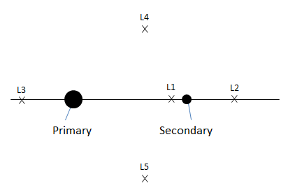 |
Configuring a Libration Point
GMAT allows you to define the Primary and/or Secondary as a or Barycenter (except SolarSystemBarycenter). This allows you to set the Primary as the Sun, and the Secondary as the Earth-Moon barycenter for modelling Sun-Earth-Moon libration points. See the examples below for details.
Setting Colors On Libration Point Orbits
GMAT allows you to assign colors to libration point orbits that are drawn using the OrbitView graphics display windows. GMAT also allows you to assign colors to perturbing libration point orbital trajectories which are drawn during iterative processes such as differential correction or optimization. The LibrationPoint object's OrbitColor and TargetColor fields are used to assign colors to both orbital and perturbing trajectories. See the Fields section to learn more about these two fields. Also see Color documentation for discussion and examples on how to set colors on a libration point orbit.
Examples
Create and use an Earth-Moon LibrationPoint.
% Create the libration point and rotating libration point coordinate system
Create LibrationPoint EarthMoonL2
EarthMoonL2.Primary = Earth
EarthMoonL2.Secondary = Luna
EarthMoonL2.Point = L2
Create CoordinateSystem EarthMoonRotLibCoord
EarthMoonRotLibCoord.Origin = EarthMoonL2
EarthMoonRotLibCoord.Axes = ObjectReferenced
EarthMoonRotLibCoord.XAxis = R
EarthMoonRotLibCoord.ZAxis = N
EarthMoonRotLibCoord.Primary = Earth
EarthMoonRotLibCoord.Secondary = Luna
% Configure the spacecraft and propagator
Create Spacecraft aSat
aSat.DateFormat = TAIModJulian
aSat.Epoch = '25220.0006220895'
aSat.CoordinateSystem = EarthMoonRotLibCoord
aSat.DisplayStateType = Cartesian
aSat.X = 9999.752137149568
aSat.Y = 1.774296833900735e-007
aSat.Z = 21000.02640446094
aSat.VX = -1.497748388797418e-005
aSat.VY = -0.2087816321971509
aSat.VZ = -5.42471673237177e-006
Create ForceModel EarthMoonL2Prop_ForceModel
EarthMoonL2Prop_ForceModel.PointMasses = {Earth, Luna, Sun}
Create Propagator EarthMoonL2Prop
EarthMoonL2Prop.FM = EarthMoonL2Prop_ForceModel
% Create the orbit view
Create OrbitView ViewEarthMoonRot
ViewEarthMoonRot.Add = {Earth, Luna, Sun,...
aSat, EarthMoonL2}
ViewEarthMoonRot.CoordinateSystem = EarthMoonRotLibCoord
ViewEarthMoonRot.ViewPointReference = EarthMoonL2
ViewEarthMoonRot.ViewDirection = EarthMoonL2
ViewEarthMoonRot.ViewScaleFactor = 5
Create Variable I
BeginMissionSequence
% Prop for 3 xz-plane crossings
For I = 1:3
Propagate 'Prop to Y Crossing' EarthMoonL2Prop(aSat) ...
{aSat.EarthMoonRotLibCoord.Y = 0}
EndForCreate and use a Sun, Earth-Moon LibrationPoint.
% Create the Earth-Moon Barycenter and Libration Point
Create Barycenter EarthMoonBary
EarthMoonBary.BodyNames = {Earth,Luna}
Create LibrationPoint SunEarthMoonL1
SunEarthMoonL1.Primary = Sun
SunEarthMoonL1.Secondary = EarthMoonBary
SunEarthMoonL1.Point = L1
% Create the coordinate system
Create CoordinateSystem RotatingSEML1Coord
RotatingSEML1Coord.Origin = SunEarthMoonL1
RotatingSEML1Coord.Axes = ObjectReferenced
RotatingSEML1Coord.XAxis = R
RotatingSEML1Coord.ZAxis = N
RotatingSEML1Coord.Primary = Sun
RotatingSEML1Coord.Secondary = EarthMoonBary
% Create the spacecraft and propagator
Create Spacecraft aSpacecraft
aSpacecraft.DateFormat = UTCGregorian
aSpacecraft.Epoch = '09 Dec 2005 13:00:00.000'
aSpacecraft.CoordinateSystem = RotatingSEML1Coord
aSpacecraft.X = -32197.88223741966
aSpacecraft.Y = 211529.1500044117
aSpacecraft.Z = 44708.57017366499
aSpacecraft.VX = 0.03209516489451751
aSpacecraft.VY = 0.06100386504053736
aSpacecraft.VZ = 0.0550442738917212
Create Propagator aPropagator
aPropagator.FM = aForceModel
aPropagator.MaxStep = 86400
Create ForceModel aForceModel
aForceModel.PointMasses = {Earth,Sun,Luna}
% Create a 3-D graphic
Create OrbitView anOrbitView
anOrbitView.Add = {aSpacecraft, Earth, Sun, Luna}
anOrbitView.CoordinateSystem = RotatingSEML1Coord
anOrbitView.ViewPointReference = SunEarthMoonL1
anOrbitView.ViewPointVector = [-1500000 0 0 ]
anOrbitView.ViewDirection = SunEarthMoonL1
anOrbitView.ViewUpCoordinateSystem = RotatingSEML1Coord
anOrbitView.Axes = Off
anOrbitView.XYPlane = Off
BeginMissionSequence
Propagate aPropagator(aSpacecraft, {aSpacecraft.ElapsedDays = 180})MatlabFunction
MatlabFunction — Declaration of an external MATLAB function
Description
The MatlabFunction resource declares to GMAT that the name given refers to an existing external function in the MATLAB language. This function can be called in the Mission Sequence like a built-in function, with some limitations. See the CallMatlabFunction reference for details. Both user-created functions and built-in functions (like cos or path) are supported.
GMAT supports passing data to and from MATLAB through the function. It requires that a supported and properly configured version of MATLAB exist on the system. See the MATLAB Interface documentation for general details on the interface.
See Also: CallMatlabFunction, MATLAB Interface
Fields
| Field | Description | ||||||||||||
|---|---|---|---|---|---|---|---|---|---|---|---|---|---|
| FunctionPath | Paths to add to the MATLAB search path when the associated function is called. Separate multiple paths with semicolons (on Windows) or colons (on other platforms).
|
GUI
The MatlabFunction GUI window is very simple; it has a single file input box for the function path, and a Browse button that lets you graphically select the path.
Remarks
Search Path
When a function declared as a MatlabFunction is called, GMAT starts MATLAB in the background with a custom, configurable search path. MATLAB then searches for the named function in this search path. The search is case-sensitive, so the name of the function name and the MatlabFunction resource must be identical.
The search path consists of the following components, in order:
FunctionPath field of the associated MatlabFunction resource (default: empty)
MATLAB_FUNCTION_PATHentries in the GMAT startup file (default:GMAT\userfunctions\matlabMATLAB search path (returned by the MATLAB
path()function)
If multiple MATLAB functions are called within a run, the FunctionPath fields for each are prepended to the search path at the time of the function call.
Multiple paths can be combined in the FunctionPath field by separating the paths with a semicolon (on Windows) or a colon (on Mac OS X and Linux).
Examples
Call a simple built-in MATLAB function:
Create MatlabFunction sinh
Create Variable x y
BeginMissionSequence
x = 1
[y] = sinh(x)Call an external custom MATLAB function:
Create Spacecraft aSat
Create ImpulsiveBurn aBurn
Create Propagator aProp
Create MatlabFunction CalcHohmann
CalcHohmann.FunctionPath = 'C:\path\to\functions'
Create Variable a_target mu dv1 dv2
mu = 398600.4415
BeginMissionSequence
% calculate burns for circular Hohmann transfer (example)
[dv1, dv2] = CalcHohmann(aSat.SMA, a_target, mu)
% perform first maneuver
aBurn.Element1 = dv1
Maneuver aBurn(aSat)
% propagate to apoapsis
Propagate aProp(aSat) {aSat.Apoapsis}
% perform second burn
aBurn.Element1 = dv2
Maneuver aBurn(aSat)Return the MATLAB search path and working directory:
Create MatlabFunction path pwd
Create String pathStr pwdStr
Create ReportFile aReport
BeginMissionSequence
[pathStr] = path
[pwdStr] = pwd
Report aReport pathStr
Report aReport pwdStrNuclearPowerSystem
NuclearPowerSystem — A nuclear power system
Description
The NuclearPowerSystem models a nuclear power system including power generated as function of time and distance from the sun.
For a complete descripton of how to configure all Resources required for electric propulsion modelling, see the Tutorial named Chapter 12, Electric Propulsion
See Also ElectricTank, ElectricThruster, SolarPowerSystem
Fields
| Field | Description | ||||||||||||
|---|---|---|---|---|---|---|---|---|---|---|---|---|---|
| AnnualDecayRate | The annual decay rate of the power system.
| ||||||||||||
| BusCoeff1 | Coefficient of power required by spacecraft bus.
| ||||||||||||
| BusCoeff2 | Coefficient of power required by spacecraft bus.
| ||||||||||||
| BusCoeff3 | Coefficient of power required by spacecraft bus.
| ||||||||||||
| EpochFormat | The epoch format for the PowerInitialEpoch field.
| ||||||||||||
| InitialEpoch | The initial epoch of the system used to define power system elapsed lifetime.
| ||||||||||||
| InitialMaxPower | The maximum power generated at the PowerInitialEpoch.
| ||||||||||||
| Margin | The required margin between power left after power bus, and power used by the propulsion system.
|
Remarks
Computation of Base Power
The NuclearPowerSystem models power degradation as a function of time. You must provide a power system initial epoch, the power generated at that epoch, and an annual power decay rate. Additionally, the AnnualDecayRate field models the power degredation on a per year basis. The base power is computed using
where "tau" is the power AnnualDecayRate, P_0 is InitialMaxPower, and "delta t" is the elapsed time between the simulation epoch and InitialEpoch.
Examples
Create a NuclearPowerSystem and attach it to a Spacecraft.
Create Spacecraft DefaultSC
DefaultSC.PowerSystem = NuclearPowerSystem1
Create NuclearPowerSystem NuclearPowerSystem1
BeginMissionSequence
For a complete descripton of how to configure all Resources required for electric propulsion modeling, see the Tutorial named Chapter 12, Electric Propulsion.
OrbitView
OrbitView — A user-defined resource that plots 3-Dimensional trajectories
Description
The OrbitView resource allows you to plot trajectories of a spacecraft or a celestial body. GMAT also allows you to plot trajectories associated with multiple spacecrafts or celestial bodies. You can create multiple OrbitView resources by using either the GUI or script interface of GMAT. OrbitView plots also come with multiple options that allow you to customize the view of spacecraft’s trajectories. See the Fields section below for detailed discussion on available plotting and drawing options.
GMAT also provides the option of when to start and stop plotting spacecraft’s trajectories to an OrbitView resource through the Toggle On/Off command. See the Remarks section below for detailed discussion of the interaction between an OrbitView resource and the Toggle command. GMAT’s Spacecraft, SolarSystem and OrbitView resources also interact with each other throughout the entire mission duration. Discussion of the interaction between these resources is also mentioned in the Remarks section.
See Also: Toggle, Spacecraft, SolarSystem, CoordinateSystem, Color
Fields
| Field | Description | ||||||||||||
|---|---|---|---|---|---|---|---|---|---|---|---|---|---|
| Add | This field allows you to add a Spacecraft, Celestial body, Libration Point, or Barycenter resource to a plot. When creating a plot, the Earth is added as a default body and may be removed at any time. You can add a Spacecraft, Celestial body, Libration Point, or Barycenter to a plot by using the name used to create the resource. The GUI's Selected field is the equivalent of the script's Add field. In the event of no Add command or no resources in the Selected field, GMAT should run without the OrbitView plot and a warning message will be displayed in the message window. The following warning message is sufficient: The OrbitView named "DefaultOrbitView" will be turned off. No SpacePoints were added to plot. This field cannot be modified in the Mission Sequence.
| ||||||||||||
| Axes | Allows you to draw the Cartesian axis system associated with the coordinate system selected under the CoordinateSystem field of an OrbitView plot. This field cannot be modified in the Mission Sequence.
| ||||||||||||
| EclipticPlane | Allows you to draw a grid representing the Ecliptic Plane in an OrbitView plot. This field cannot be modified in the Mission Sequence.
| ||||||||||||
| CoordinateSystem | Allows you to select which coordinate system to use to draw the plot data. A coordinate system is defined as an origin and an axis system. The CoordinateSystem field allows you to determine the origin and axis system of an OrbitView plot. See the CoordinateSystem resource fields for information of defining different types of coordinate systems. This field cannot be modified in the Mission Sequence.
| ||||||||||||
| DataCollectFrequency | Allows you to define how data is collected for plotting. It is often inefficient to draw every ephemeris point associated with a trajectory. Often, drawing a smaller subset of the data still results in smooth trajectory plots, while executing more quickly. The DataCollectFrequency is an integer that represents how often to collect data and store for plotting. If DataCollectFrequency is set to 10, then data is collected every 10 integration steps. This field cannot be modified in the Mission Sequence.
| ||||||||||||
| DrawObject | The DrawObject field allows you the option of displaying Spacecraft or Celestial resources on the OrbitView plot. This field cannot be modified in the Mission Sequence.
| ||||||||||||
| EnableConstellations | Allows you the option of displaying star constellations on the OrbitView Plot. This field cannot be modified in the Mission Sequence.
| ||||||||||||
| EnableStars | This field gives you the option of displaying stars on the OrbitView Plot. When the EnableStars field is turned off, then EnableConstellations field is automatically diabled. This field cannot be modified in the Mission Sequence.
| ||||||||||||
| Grid | Allows you to draw a grid representing the longitude and latitude lines on the celestial bodies added to an OrbitView plot. This field cannot be modified in the Mission Sequence.
| ||||||||||||
| Maximized | Allows you to maximize the OrbitView plot window. This field cannot be modified in the Mission Sequence.
| ||||||||||||
| NumPointsToRedraw | When NumPointsToRedraw field is set to zero, all ephemeris points are drawn. When NumPointsToRedraw is set to a positive integer, say 10 for example, only the last 10 collected data points are drawn. See DataCollectFrequency for explanation of how data is collected for an OrbitView plot. This field cannot be modified in the Mission Sequence.
| ||||||||||||
| RelativeZOrder | Allows you to select which OrbitView window to display first on the screen. The OrbitViewPlot with lowest RelativeZOrder value will be displayed last while OrbitViewPlot with highest RelativeZOrder value will be displayed first. This field cannot be modified in the Mission Sequence.
| ||||||||||||
| ShowPlot | Allows you to turn off a plot for a particular run, without deleting the plot, or removing it from the script. If you select true, then the plot will be shown. If you select false, then the plot will not be shown. This field cannot be modified in the Mission Sequence.
| ||||||||||||
| ShowLabels | Allows you to turn on or off spacecraft and celestial body Object labels. If you select true, then spacecraft and celestial body object labels will show up in orbit view plot. If you select false, then spacecraft and celestial body labels will not be shown in the orbit plot. This field cannot be modified in the Mission Sequence.
| ||||||||||||
| Size | Allows you to control the display size of OrbitViewPlot window. First value in [0 0] matrix controls horizonal size and second value controls vertical size of OrbitViewPlot display window. This field cannot be modified in the Mission Sequence.
| ||||||||||||
| SolverIterations | This field determines whether or not data associated with perturbed trajectories during a solver (Targeter, Optimize) sequence is plotted to OrbitView. When SolverIterations is set to All, all perturbations/iterations are plotted to an OrbitView plot. When SolverIterations is set to Current, only current solution is plotted to an OrbitView. When SolverIterations is set to None, this shows only final solution after the end of an iterative process and draws only final trajectory to an OrbitView plot.
| ||||||||||||
| StarCount | Allows you to enter the number of stars that need to be displayed in an OrbitView plot. This field cannot be modified in the Mission Sequence.
| ||||||||||||
| SunLine | Allows you to draw a line that starts at the center of central body and points towards the Sun. This field cannot be modified in the Mission Sequence.
| ||||||||||||
| UpdatePlotFrequency | This field lets you specify how often to update an OrbitView plot is updated with new data collected during the process of propagating spacecraft and running a mission. Data is collected for a plot according to the value defined by DataCollectFrequency. An OrbitView plot is updated with the new data, according to the value set in UpdatePlotFrequency. If UpdatePlotFrequency is set to 10 and DataCollectFrequency is set to 2, then the plot is updated with new data every 20 (10*2) integration steps. This field cannot be modified in the Mission Sequence.
| ||||||||||||
| UpperLeft | Allows you to pan the OrbitView plot window in any direction. First value in [0 0] matrix helps to pan the OrbitView window horizontally and second value helps to pan the window vertically. This field cannot be modified in the Mission Sequence.
| ||||||||||||
| UseInitialView | This field lets you control the view of an OrbitView plot between multiple runs of a mission sequence. The first time a specific OrbitView plot is created, GMAT will automatically use the view as defined by the fields associated with View Definition, View Up Direction, and View Option. However, if you change the view using the mouse, GMAT will retain this view upon rerunning the mission as long as UseInitialView is set to false. If UseInitialView is set to true, the view for an OrbitView plot will be returned to the view defined by the initial settings. This field cannot be modified in the Mission Sequence.
| ||||||||||||
| ViewDirection | Allows you to select the direction of view in an OrbitView plot. You can specify the view direction by choosing a resource to point at such as a Spacecraft, Celestial body, Libration Point, or Barycenter. Alternatively, you can also specify a vector of the form [x y z]. If the user specification of ViewDirection, ViewPointReference, and ViewPointVector results in a zero vector, GMAT uses [0 0 10000] for ViewDirection. This field cannot be modified in the Mission Sequence.
| ||||||||||||
| ViewPointReference | This optional field allows you to change the reference point from which ViewPointVector is measured. ViewPointReference defaults to the origin of the coordinate system for the plot. A ViewPointReference can be any Spacecraft, Celestial body, Libration Point, or Barycenter. This field cannot be modified in the Mission Sequence.
| ||||||||||||
| ViewPointVector | The product of ViewScaleFactor and ViewPointVector field determines the view point location with respect to ViewPointReference. ViewPointVector can be a vector, or any of the following resources: Spacecraft, Celestial body, Libration Point, or Barycenter. The location of the view point in three-dimensional space is defined as the vector addition of ViewPointReference and the vector defined by product of ViewScaleFactor and ViewPointVector in the coordinate system chosen by you. This field cannot be modified in the Mission Sequence.
| ||||||||||||
| ViewScaleFactor | This field scales ViewPointVector before adding it to ViewPointReference. The ViewScaleFactor allows you to back away from an object to fit in the field of view. This field cannot be modified in the Mission Sequence.
| ||||||||||||
| ViewUpAxis | This field lets you define which axis of the ViewUpCoordinateSystem field will appear as the up direction in an OrbitView plot. See the comments under ViewUpCoordinateSystem for more details of fields used to determine the up direction in an OrbitView plot. This field cannot be modified in the Mission Sequence.
| ||||||||||||
| ViewUpCoordinateSystem | The ViewUpCoordinateSystem and ViewUpAxis fields are used to determine which direction appears as up in an OrbitView plot and together with the fields associated the the View Direction, uniquely define the view. The fields associated with the View Definition allows you to define the point of view in three-dimensional space, and the direction of the line of sight. However, this information alone is not enough to uniquely define the view. We also must provide how the view is oriented about the line of sight. This is accomplished by defining what direction should appear as the up direction in the plot and is configured using the ViewUpCoordinateSystem field and the ViewUpAxis field. The ViewUpCoordinateSystem allows you to select a coordinate system to define the up direction. Most of the time this system will be the same as the coordinate system chosen under the CoordinateSystem field. This field cannot be modified in the Mission Sequence.
| ||||||||||||
| WireFrame | When the WireFrame field is set to On, celestial bodies are drawn using a wireframe model. When the WireFrame field is set to Off, then celestial bodies are drawn using a full map. This field cannot be modified in the Mission Sequence.
| ||||||||||||
| XYPlane | Allows you to draw a grid representing the XY-plane of the coordinate system selected under the CoordinateSystem field of the OrbitView plot. This field cannot be modified in the Mission Sequence.
|
GUI
The figure below shows the default settings for the OrbitView resource:
 |
OrbitView Window Mouse Controls
The list of controls in the table below helps you navigate through the OrbitView graphics window. "Left" and "Right" designate the mouse button which have to be pressed.
| Control | Description |
|---|---|
| Left Drag | Helps to change camera orientation. Camera orientation can be changed in Up/Down/Left/Right directions. |
| Right Drag | Helps to zoom in and out of the graphics window. Moving the cursor in Up direction leads to zoom out of the graphics window. Moving the cursor in Down direction helps to zoom into the graphics window. |
| Shift+Right Drag | Helps to adjust the Field of View. |
Remarks
Behavior when using OrbitView Resource & Toggle Command
The OrbitView resource plots spacecraft’s trajectory at each propagation step of the entire mission duration. If you want to report data to an OrbitView plot at specific points in your mission, then a Toggle On/Off command can be inserted into the mission sequence to control when OrbitView is to plot a given trajectory. When Toggle Off command is issued for an OrbitView, no trajectory is drawn until a Toggle On command is issued. Similarly, when a Toggle On command is used, trajectory is plotted at each integration step until a Toggle Off command is used.
Create Spacecraft aSat
Create Propagator aProp
Create OrbitView anOrbitView
anOrbitView.Add = {aSat, Earth}
BeginMissionSequence
Toggle anOrbitView Off
Propagate aProp(aSat) {aSat.ElapsedDays = 2}
Toggle anOrbitView On
Propagate aProp(aSat) {aSat.ElapsedDays = 4}Behavior when using OrbitView, Spacecraft and SolarSystem Resources
Spacecraft resource contains information about spacecraft’s orbit. Spacecraft resource interacts with OrbitView throughout the entire mission duration. The trajectory data retrieved from the spacecraft is what gets plotted at each propagation step of the entire mission duration. Similarly, the sun and all other planets available under the SolarSystem resource may be plotted or referenced in the OrbitView resource as well.
Behavior when reporting data in Iterative Processes
GMAT allows you to specify how trajectories are plotted during iterative processes such as differential correction or optimization. The SolverIterations field of OrbitView resource supports 3 options which are described in the table below:
| SolverIterations options | Description |
|---|---|
| Current | Shows only current iteration/perturbation in an iterative process and plots current trajectory. |
| All | Shows all iterations/perturbations in an iterative process and plots all perturbed trajectories. |
| None | Shows only the final solution after the end of an iterative process and plots only that final trajectory. |
Behavior when plotting multiple spacecrafts
GMAT allows you to plot trajectories of any number of spacecrafts when using the OrbitView resource. The initial epoch of all the spacecrafts must be same in order to plot the trajectories. If initial epoch of one of the spacecrafts does not match with initial epoch of other spacecrafts, then GMAT throws in an error alerting you that there is a coupled propagation error mismatch between the spacecrafts. GMAT also allows you to propagate trajectories of spacecrafts using any combination of the propagators that you may create.
Below is an example script snippet that shows how to plot trajectories of multiple spacecrafts that use different propagators:
Create Spacecraft aSat aSat2 aSat3
aSat2.INC = 45.0
aSat3.INC = 90.0
aSat3.SMA = 9000
Create Propagator aProp
Create Propagator bProp
Create OrbitView anOrbitView anOrbitView2
anOrbitView.Add = {aSat, aSat2, Earth}
anOrbitView2.Add = {aSat3, Earth}
BeginMissionSequence
Propagate aProp(aSat, aSat2) bProp(aSat3) {aSat.ElapsedSecs = 12000.0}OrbitView View Definition Controls
GMAT is capable of drawing orbit plots that allow you to visualize the motion of spacecraft and celestial bodies throughout the mission sequence. Here we discuss the options you can use in setting up and viewing Orbit plots. You can choose many properties including the coordinate system of the orbit view plot and the view location and direction from where visualizations can be seen. The script snippet below shows how to create OrbitView resource that includes key view definition controls fields as well. Detailed definitions of all fields for OrbitView resource can be found in Fields section.
Create OrbitView PlotName
PlotName.CoordinateSystenm = CoordinateSystemName
PlotName.Add = [SpacecraftName, BodyName, ...
LibrationPoint, Barycenter]
PlotName.ViewPointReference = [ObjectName, VectorName]
PlotName.ViewPointVector = [ObjectName, VectorName]
PlotName.ViewDirection = [ObjectName, VectorName]
PlotName.ViewScaleFactor = [Real Number]
PlotName.ViewUpCoordinateSystem = CoordinateSystemName
PlotName.ViewUpAxis = [X,-X,Y,-Y,Z,-Z];You can specify the view location and direction of OrbitView plot object by using the ViewPointReference, ViewPointVector, ViewDirection, ViewUpCoordinateSystem and ViewUpAxis fields. Figure below shows a graphical definition of ViewPointReference, ViewPointVector, and ViewDirection fields and how they determine the actual view location and view direction. You can supply ViewPointReference, ViewPointVector and ViewDirection fields by either giving a vector in the format [x y z] or by specifying an object name. If a vector is given for one of the quantities, then we simply use it in its appropriate place in the computations below. If an object is given, we must determine the vector associated with it. The rest of this section is devoted in determining ViewPointReference, ViewPointVector and ViewDirection fields if you specify an object.
 |
ViewPointReference field defines the point from which ViewPointVector is measured. If an object is given for ViewPointReference field, i.e. when you have the following in the sample script:
MyOrbitViewPlot.CoordinateSystenm = MyCoordSys
MyOrbitViewPlot.ViewPointReference = ViewRefObjectthen we need to determine rr as illustrated in above figure. If ViewRefObject is the same as the origin of MyCoordSys, then rr = [0 0 0]. Otherwise rr is the cartesian position of ViewPointReference in MyCoordSys.
ViewPointVector field points from ViewPointReference (rr) in the direction of the view point location. If an object is given for ViewPointVector field, i.e. you have the following in the sample script:
MyOrbitViewPlot.CoordinateSystenm = MyCoordSys
MyOrbitViewPlot.ViewPointVector = ViewPointObjectthen we need to determine rv as illustrated in above figure by using the coordinate system conversion routine to calculate the following:
We now know everything to calculate the location of the view point in the desired coordinate system. From inspection of the above figure, we see that the relation is:
Now that we know the view point location, we need to determine the ViewDirection: rd as illustrated in above figure. If a vector was specified for ViewDirection field, then no computations are required. However, if an object was given as shown in the following sample script:
MyOrbitViewPlot.CoordinateSystenm = MyCoordSys
MyOrbitViewPlot.ViewDiection = ViewDirectionObjectthen we calculate rd from the following:
Note that ViewDirection vector rd must not be zero vector [0 0 0].
ViewUpCoordinateSystem and ViewUpAxis fields are used to determine which direction appears as up in an OrbitView plot. Most of the time, coordinate system chosen under ViewUpCoordinateSystem field will be the same as the coordinate system selected under the CoordinateSystem field. ViewUpAxis field allows you to define which axis of the ViewUpCoordinateSystem field will appear as the up direction in an orbit plot.
Below are some examples that show how to generate OrbitView plots using different View Definition Controls configurations:
Earth Inertial view with spacecraft: This example shows orbit view plot with Earth and a spacecraft. Since ViewPointReference field is set to an object (i.e. Earth), hence ViewPointRef vector in above figure is [0 0 0] in EarthMJ2000Eq coordinate system. The ViewPointVector field is set to a vector ( i.e. set to [0 0 40000] ). This means that the view is from 40000 km above the Earth's equatorial plane on the z-axis of the EarthMJ2000Eq coordinate system. The view direction (specified in ViewDirection field) is towards the earth.
Create Spacecraft aSat
Create Propagator aProp
Create OrbitView anOrbitView
anOrbitView.Add = {aSat, Earth}
anOrbitView.CoordinateSystem = EarthMJ2000Eq
anOrbitView.ViewPointReference = Earth
anOrbitView.ViewPointVector = [ 0 0 40000 ]
anOrbitView.ViewDirection = Earth
anOrbitView.ViewScaleFactor = 1
anOrbitView.ViewUpCoordinateSystem = EarthMJ2000Eq
anOrbitView.ViewUpAxis = Z
BeginMissionSequence
Propagate aProp(aSat) {aSat.ElapsedDays = 1}Earth Inertial view with spacecraft and Luna: This example shows orbit view plot with Earth, spacecraft and Moon. Note ViewPointReference field is set to an object (i.e. Earth), hence ViewPointRef vector in above figure = [0 0 0] in EarthMJ2000Eq coordinate system. ViewPointVector field is still set to a vector ( i.e. set to [0 0 500000] ). This means that the view is from 500000 km above the Earth's equatorial plane on the z-axis of the EarthMJ2000Eq coordinate system. ViewDirection field defines the view direction which is set towards the earth.
Create Spacecraft aSat
Create Propagator aProp
Create OrbitView anOrbitView
anOrbitView.Add = {aSat, Earth, Luna}
anOrbitView.CoordinateSystem = EarthMJ2000Eq
anOrbitView.ViewPointReference = Earth
anOrbitView.ViewPointVector = [ 0 0 500000 ]
anOrbitView.ViewDirection = Earth
anOrbitView.ViewScaleFactor = 1
anOrbitView.ViewUpCoordinateSystem = EarthMJ2000Eq
anOrbitView.ViewUpAxis = Z
BeginMissionSequence
Propagate aProp(aSat) {aSat.ElapsedDays = 5}View of spacecraft from Luna in Earth inertial frame: This example of an orbit view plot shows spacecraft as viewed from Luna orbiting around Earth in an inertial reference frame. ViewPointReference field is set to an object (i.e. Earth), hence ViewPointRef vector is [0 0 0] in EarthMJ2000Eq coordinate system. This time ViewPointVector field is set to an object (i.e. Luna ). This means that the spacecraft will be seen from the vantage point of Luna. Note that ViewDirection field is set to spacecraft (aSat). This means that view direction as seen from Luna is towards the spacecraft. After you run this example, re-run this example but this time with ViewScaleFactor field set to 2 and see what happens. You'll notice that ViewScaleFactor simply scales ViewPointVector field.
Create Spacecraft aSat
Create Propagator aProp
Create OrbitView anOrbitView
anOrbitView.Add = {aSat, Earth, Luna}
anOrbitView.CoordinateSystem = EarthMJ2000Eq
anOrbitView.ViewPointReference = Earth
anOrbitView.ViewPointVector = Luna
anOrbitView.ViewDirection = aSat
anOrbitView.ViewScaleFactor = 1
anOrbitView.ViewUpCoordinateSystem = EarthMJ2000Eq
anOrbitView.ViewUpAxis = Z
BeginMissionSequence
Propagate aProp(aSat) {aSat.ElapsedDays = 5}View towards Luna from Earth as spacecraft orbits around Luna in inertial frame: This example of an orbit view plot shows view of Luna from vantage point of Earth as a spacecraft orbits around Luna. ViewPointReference field is set to an object (i.e. Luna), hence ViewPointRef vector in above figure is [0 0 0] in LunaMJ2000Eq coordinate system. ViewPointVector field is set to an object (i.e. Earth ). This means that the camera or vantage point is located at Earth. ViewDirection field is also set to an object (i.e. Luna). This means that view direction as seen from Earth is towards Luna.
Create Spacecraft aSat
Create CoordinateSystem LunaMJ2000Eq
LunaMJ2000Eq.Origin = Luna
LunaMJ2000Eq.Axes = MJ2000Eq
aSat.CoordinateSystem = LunaMJ2000Eq
aSat.SMA = 7300
aSat.ECC = 0.4
aSat.INC = 90
aSat.RAAN = 270
aSat.AOP = 315
aSat.TA = 180
Create ForceModel aFM
aFM.CentralBody = Luna
aFM.PointMasses = {Luna}
Create Propagator aProp
aProp.FM = aFM
Create OrbitView anOrbitView
anOrbitView.Add = {aSat, Luna, Earth}
anOrbitView.CoordinateSystem = LunaMJ2000Eq
anOrbitView.ViewPointReference = Luna
anOrbitView.ViewPointVector = Earth
anOrbitView.ViewDirection = Luna
anOrbitView.ViewScaleFactor = 1;
anOrbitView.ViewUpCoordinateSystem = LunaMJ2000Eq;
anOrbitView.ViewUpAxis = Z;
BeginMissionSequence
Propagate aProp(aSat) {aSat.ElapsedDays = 5}View towards spacecraft1 from spacecraft2 in inertial frame: This example of an orbit view plot shows spacecraft1 (aSat1) being viewed from spacecraft2 (aSat2) as they move in inertial reference frame. ViewPointReference field is set to an object (i.e. Earth), hence ViewPointRef vector in above figure is [0 0 0] in EarthMJ2000Eq coordinate system. ViewPointVector field is set to an object (i.e. aSat2 ) and ViewDirection field is also set to an object (i.e. aSat1). This means that aSat1 will be viewed from the vantage point of aSat2.
Create Spacecraft aSat aSat2
aSat2.X = 19500
aSat2.Z = 10000
Create Propagator aProp
Create OrbitView anOrbitView
anOrbitView.Add = {aSat, aSat2, Earth,}
anOrbitView.CoordinateSystem = EarthMJ2000Eq
anOrbitView.ViewPointReference = Earth
anOrbitView.ViewPointVector = aSat2
anOrbitView.ViewDirection = aSat
anOrbitView.ViewScaleFactor = 1.0
anOrbitView.ViewUpCoordinateSystem = EarthMJ2000Eq
anOrbitView.ViewUpAxis = Z
BeginMissionSequence
Propagate aProp(aSat, aSat2){aSat.ElapsedSecs = 12000.0}Orbit view plot of Sun-Earth-Moon L1 Rotating System: This example of an orbit view plot shows the Earth and spacecraft in the Sun-Earth-Moon rotating coordinate system. ViewPointReference field is set to an object (i.e. ESL1), hence ViewPointRef vector in above figure is [0 0 0] in SunEarthMoonL1 rotating coordinate system. ViewPointVector field is set to a vector (i.e. [0 0 30000] ). This means that the view is taken from 30000 km above the SunEarthMoonL1 coordinate system's XY plane on the z-axis of the SunEarthMoonL1 coordinate system. ViewDirection field is also set to an object (i.e. ESL1). This means that view direction as seen from 30000 km above the SunEarthMoonL1 coordinate system's XY plane is towards ESL1. Note that in this example, ViewScaleFactor is set to 25. This simply scales or amplifies ViewPointVector field 25 times its original value.
Create Spacecraft aSat
GMAT aSat.DateFormat = UTCGregorian;
GMAT aSat.Epoch = '01 Apr 2013 00:00:00.000'
GMAT aSat.CoordinateSystem = EarthMJ2000Eq
GMAT aSat.DisplayStateType = Cartesian
GMAT aSat.X = 1429457.8833484
GMAT aSat.Y = 147717.32846679
GMAT aSat.Z = -86529.655549364
GMAT aSat.VX = -0.037489820883615
GMAT aSat.VY = 0.32032521614858
GMAT aSat.VZ = 0.15762889268226
Create Barycenter EarthMoonBarycenter
GMAT EarthMoonBarycenter.BodyNames = {Earth, Luna}
Create LibrationPoint ESL1
GMAT ESL1.Primary = Sun
GMAT ESL1.Secondary = EarthMoonBarycenter
GMAT ESL1.Point = L1
Create ForceModel aFM
aFM.CentralBody = Earth
aFM.PointMasses = {Luna, Sun}
Create Propagator aProp
aProp.FM = aFM
Create CoordinateSystem SunEarthMoonL1
GMAT SunEarthMoonL1.Origin = ESL1
GMAT SunEarthMoonL1.Axes = ObjectReferenced
GMAT SunEarthMoonL1.XAxis = R
GMAT SunEarthMoonL1.ZAxis = N
GMAT SunEarthMoonL1.Primary = Sun
GMAT SunEarthMoonL1.Secondary = EarthMoonBarycenter
Create OrbitView anOrbitView
anOrbitView.Add = {aSat, Earth, Sun}
anOrbitView.CoordinateSystem = SunEarthMoonL1
anOrbitView.ViewPointReference = ESL1
anOrbitView.ViewPointVector = [ 0 0 30000 ]
anOrbitView.ViewDirection = ESL1
anOrbitView.ViewScaleFactor = 25
anOrbitView.ViewUpCoordinateSystem = SunEarthMoonL1
anOrbitView.ViewUpAxis = Z
BeginMissionSequence
Propagate aProp(aSat) {aSat.ElapsedDays = 15}Behavior when using View Definition panel of OrbitView Resource
Currently in OrbitView resource’s View Definition panel, fields like ViewPointReference, ViewPointVector and ViewDirection are initialized but not dynamically updated during a mission run. OrbitView resource’s View Definition panel sets up geometry at initial epoch and then mouse controls geometry of the simulation from that point on.
Spacecraft Model Considerations in GMAT's OrbitView
GMAT displays spacecraft models by reading model data from 3D Studio files describing the spacecraft shape and colors. These files have the file extension .3ds, and are generally called 3ds files. 3ds files contain data that defines the 3-dimensional coordinates of vertices outlining the spacecraft, a mapping of those vertices into triangles used to create the displayed surface of the spacecraft, and information about the colors and texture maps used to fill in the displayed triangles.
GMAT's implementation of the spacecraft model can display models consisting of up to 200,000 vertices that map up to 100,000 triangles. The GMAT model can use up 500 separate color or texture maps to fill in these triangles.
Behavior When Specifying Empty Brackets in OrbitView's Add Field
When using OrbitView.Add field, if brackets are not populated with user-defined spacecrafts, then GMAT turns off OrbitView resource and no plot is generated. If you run the script with Add field having empty brackets, then GMAT throws in a warning message in the Message Window indicating that OrbitView resource will be turned off since no SpacePoints were added to the plot. Below is a sample script snippet that generates such a warning message:
Create Spacecraft aSat aSat2
Create Propagator aProp
Create OrbitView anOrbitView
anOrbitView.Add = {}
BeginMissionSequence
Propagate aProp(aSat, aSat2){aSat.ElapsedSecs = 12000.0}Examples
Propagate spacecraft for 1 day and plot the orbit at every integrator step:
Create Spacecraft aSat
Create Propagator aProp
Create OrbitView anOrbitView
anOrbitView.Add = {aSat, Earth}
BeginMissionSequence
Propagate aProp(aSat) {aSat.ElapsedDays = 1}Plotting orbit during an iterative process. Notice SolverIterations field is selected as All. This means all iterations/perturbations will be plotted.
Create Spacecraft aSat
Create Propagator aProp
Create ImpulsiveBurn TOI
Create DifferentialCorrector aDC
Create OrbitView anOrbitView
anOrbitView.Add = {aSat, Earth}
anOrbitView.SolverIterations = All
BeginMissionSequence
Propagate aProp(aSat) {aSat.Earth.Periapsis}
Target aDC
Vary aDC(TOI.Element1 = 0.24, {Perturbation = 0.001, Lower = 0.0, ...
Upper = 3.14159, MaxStep = 0.5})
Maneuver TOI(aSat)
Propagate aProp(aSat) {aSat.Earth.Apoapsis}
Achieve aDC(aSat.Earth.RMAG = 42165)
EndTargetPlotting spacecraft’s trajectory around non-default central body. This example shows how to plot a spacecraft’s trajectory around Luna:
Create Spacecraft aSat
Create CoordinateSystem LunaMJ2000Eq
LunaMJ2000Eq.Origin = Luna
LunaMJ2000Eq.Axes = MJ2000Eq
aSat.CoordinateSystem = LunaMJ2000Eq
aSat.SMA = 7300
aSat.ECC = 0.4
aSat.INC = 90
aSat.RAAN = 270
aSat.AOP = 315
aSat.TA = 180
Create ForceModel aFM
aFM.CentralBody = Luna
aFM.PointMasses = {Luna}
Create Propagator aProp
aProp.FM = aFM
Create OrbitView anOrbitView
anOrbitView.Add = {aSat, Luna}
anOrbitView.CoordinateSystem = LunaMJ2000Eq
anOrbitView.ViewPointReference = Luna
anOrbitView.ViewDirection = Luna
BeginMissionSequence
Propagate aProp(aSat) {aSat.ElapsedDays = 1}Plotting spacecraft’s trajectory around non-default central body. This example shows how to plot a spacecraft’s trajectory around Mars:
Create Spacecraft aSat
Create CoordinateSystem MarsMJ2000Eq
MarsMJ2000Eq.Origin = Mars
MarsMJ2000Eq.Axes = MJ2000Eq
aSat.CoordinateSystem = MarsMJ2000Eq
aSat.SMA = 7300
aSat.ECC = 0.4
aSat.INC = 90
aSat.RAAN = 270
aSat.AOP = 315
aSat.TA = 180
Create ForceModel aFM
aFM.CentralBody = Mars
aFM.PointMasses = {Mars}
Create Propagator aProp
aProp.FM = aFM
Create OrbitView anOrbitView
anOrbitView.Add = {aSat, Mars}
anOrbitView.CoordinateSystem = MarsMJ2000Eq
anOrbitView.ViewPointReference = Mars
anOrbitView.ViewDirection = Mars
BeginMissionSequence
Propagate aProp(aSat) {aSat.ElapsedDays = 1}Plotting spacecraft’s trajectory around non-default central body. This example shows how to plot a spacecraft’s trajectory around Sun. This is an interplanetary trajectory. Spacecraft is shown on an out-going hyperbolic trajectory in an EarthView and then an interplanetary trajectory is drawn around Sun in a SunView. Mars Orbit around Sun is also shown:
Create Spacecraft aSat
aSat.CoordinateSystem = EarthMJ2000Eq
aSat.DateFormat = UTCGregorian
aSat.Epoch = '18 Nov 2013 20:26:24.315'
aSat.X = 3728.345810006184
aSat.Y = 4697.943961035268
aSat.Z = -2784.040094879185
aSat.VX = -9.502477543864449
aSat.VY = 5.935188001372066
aSat.VZ = -2.696272103530009
Create ForceModel aFM
aFM.CentralBody = Earth
aFM.PointMasses = {Earth}
Create ForceModel bFM
aFM.CentralBody = Sun
aFM.PointMasses = {Sun}
Create Propagator aProp
aProp.FM = aFM
Create Propagator bProp
aProp.FM = bFM
Create CoordinateSystem SunEcliptic
SunEcliptic.Origin = Sun
SunEcliptic.Axes = MJ2000Ec
Create OrbitView EarthView SunView
EarthView.Add = {aSat, Earth}
EarthView.CoordinateSystem = EarthMJ2000Eq
EarthView.ViewPointReference = Earth
EarthView.ViewDirection = Earth
SunView.Add = {aSat, Mars, Sun}
SunView.CoordinateSystem = SunEcliptic
SunView.ViewPointReference = Sun
SunView.ViewDirection = Sun
SunView.ViewPointVector = [ 0 0 500000000 ]
BeginMissionSequence
Propagate aProp(aSat) {aSat.ElapsedDays = 3}
Propagate bProp(aSat) {aSat.ElapsedDays = 225}Propagator
Propagator — A propagator models spacecraft motion
Overview of Propagator Components
A Propagator is the GMAT component used to
model spacecraft motion. GMAT contains two types of propagators: a
numerical integrator type, and an ephemeris type. When using a numerical
integrator type Propagator, you can choose among a
suite of numerical integrators implementing Runge-Kutta and predictor
corrector methods. Numeric Propagators also require a
ForceModel. Additionally, you can configure a
Propagator to use SPICE kernels or Code500 ephemeris
files for propagation. This resource cannot be modified in the Mission
Sequence. However, you set one Propagator equal to
another Propagator in the mission,( i.e.
myPropagator = yourPropagator ).
GMAT's documentation for Propagator components is broken down into three sections:
For numerical Propagator documentation see Numerical Propagator
For ForceModel documentation see Force Model
For SPICE Propagator documentation see SPK-Configured Propagator
For Code500 ephemeris Propagator documentation see Code500 Ephemeris-Configured Propagator
See Also: Spacecraft, Propagate
Numerical Propagator
Overview
A Propagator object that uses a numerical
integrator (as opposed to an ephemeris propagator) is one of a few
objects in GMAT that is configured differently in the scripting and in
the GUI. In the GUI, you configure the integrator and force model
setting on the same dialog box. See the Remarks section
below for detailed discussion of GMAT’s numerical integrators as well as
performance and accuracy comparisons, and usage recommendations. This
resource cannot be modified in the Mission Sequence. However, you can do
whole object assignment in the mission,( i.e. myPropagator =
yourPropagator ).
When working in the script, you must create a ForceModel object separately from the Propagator and specify the force model using the “FM” field on the propagator object. See the Examples section later in this section for details.
Options
| Option | Description | ||||||||||||
|---|---|---|---|---|---|---|---|---|---|---|---|---|---|
| Accuracy | The desired accuracy for an integration step. GMAT uses the method selected in the field on the Force Model to determine a metric of the integration accuracy. For each step, the integrator ensures that the error in accuracy is smaller than the value defined by the metric.
| ||||||||||||
| FM | Identifies the force model used by an integrator. If no force model is provided, GMAT uses an Earth centered propagator with a 4x4 gravity model.
| ||||||||||||
| InitialStepSize | The size of the first step attempted by the integrator.
| ||||||||||||
| LowerError | The lower bound on integration error, used to determine when to make the step size larger. Applies only to AdamsBashforthMoulton integrator.
| ||||||||||||
| MaxStep | The maximum allowable step size.
| ||||||||||||
| MaxStepAttempts | The number of attempts the integrator takes to meet the tolerance defined by the field.
| ||||||||||||
| MinStep | The minimum allowable step size.
| ||||||||||||
| StopIfAccuracy-IsViolated | Flag to stop propagation if integration error value defined by Accuracy is not satisfied.
| ||||||||||||
| TargetError | The nominal bound on integration error, used to set the target integration accuracy when adjusting step size. Applies only to AdamsBashforthMoulton integrator.
| ||||||||||||
| Type | Specifies the integrator or analytic propagator used to model the time evolution of spacecraft motion.
|
GUI
Settings for the embedded Runge-Kutta integrators. Select the desired integrator from the Type menu.
 |
The Adams-Bashforth-Moulton integrator has additional settings as shown.
Remarks
Best Practices for Using Numerical Integrators
The comparison data presented in a later section suggest that the PrinceDormand78 integrator is the best all purpose integrator in GMAT. When in doubt, use the PrinceDormance78 integrator, and set MinStep to zero so that the integrator’s adaptive step algorithm controls the minimum integration step size. Below are some important comments on GMAT’s step size control algorithms and the dangers of using a non-zero value for the minimum integration step size. The AdamsBashforthMoulton integrator is a low order integrator and we only recommend its use for low precision analysis when a predictor-corrector algorithm is required. We recommend that you study the performance and accuracy analysis documented later in this section to select a numerical integrator for your application. You may need to perform further analysis and comparisons for your application.
Caution
Caution: GMAT’s default error computation mode is RSStep and this is a more stringent error control method than RSSState that is often used as the default in other software such as STK. If you set Accuracy to a very small number, 1e-13 for example, and leave ErrorControl set to RSSStep, integrator performance will be poor, for little if any improvement in the accuracy of the orbit integration. To find the best balance between integration accuracy and performance, we recommend you experiment with the accuracy setting for your selected integrator for your application. You can start with a relatively high setting of Accuracy, say 1e-9, and lower the accuracy by an order of magnitude at a time and compare the final orbital states to determine where smaller values of Accuracy result in longer propagation times without providing more accurate orbital solutions.
Caution
Caution: GMAT allows you to set a minimum step on numerical integrators. It is possible that the requested Accuracy cannot be achieved given the MinimumStep setting. The Propagator flag StopIfAccuracyIsViolated determines the behavior if Accuracy cannot be satisfied. If StopIfAccuracyIsViolated is true, GMAT will throw an error and stop execution if integration accuracy is not satisfied. If StopIfAccuracyIsViolated is false, GMAT will only throw a warning that the integration accuracy was not satisfied but will continue to propagate the orbit.
Numerical Integrators Overview
The table below describes each numerical integrator in detail.
| Option | Description |
|---|---|
| RungeKutta89 | An adaptive step, ninth order Runge-Kutta integrator with eighth order error control. The coefficients were derived by J. Verner. Verner developed several sets of coefficients for an 89 integrator and we have chosen the coefficients that are the most robust but not necessarily the most efficient. |
| PrinceDormand78 | An adaptive step, eighth order Runge-Kutta integrator with seventh order error control. The coefficients were derived by Prince and Dormand. |
| PrinceDormand853 | An adaptive step, eighth order Runge-Kutta integrator with 5th order error control that incorporates a 3rd order correction, as described in section II.10 of "Solving Ordinary Differential Equations I: Nonstiff Problems" by Hairer, Norsett and Warner. The coefficients were derived by Prince and Dormand. This integrator performs surprisingly well at loose Accuracy settings. |
| PrinceDormand45 | An adaptive step, fifth order Runge-Kutta integrator with fourth order error control. The coefficients were derived by Prince and Dormand. |
| RungeKutta68 | A second order Runge-Kutta-Nystrom type integrator with coefficients developed by by Dormand, El-Mikkawy and Prince. The integrator is a 9-stage Nystrom integrator, with error control on both the dependent variables and their derivatives. This second order implementation will correctly integrate forces that are non-conservative but it is not recommended for this use. See the integrator comparisons below for numerical comparisons. You cannot use this integrator to integrate mass during a finite maneuver because the mass flow rate is a first order differential equation not supported by this integrator. |
| RungeKutta56 | An adaptive step, sixth order Runge-Kutta integrator with fifth order error control. The coefficients were derived by E. Fehlberg. |
| AdamsBashforthMoulton | A fourth-order Adams-Bashford predictor / Adams-Moulton corrector as described in Fundamentals of Astrodynamics by Bate, Mueller, and White. The predictor step extrapolates the next state of the variables using the the derivative information at the current state and three previous states of the variables. The corrector uses derivative information evaluated for this state, along with the derivative information at the original state and two preceding states, to tune this state, giving the final, corrected state. The ABM integrator uses the RungeKutta89 integrator to start the integration process. The ABM is a low order integrator and should not be used for precise applications or for highly nonlinear applications such as celestial body flybys. |
Performance & Accuracy Comparison of Numerical Integrators
The tables below contain performance comparison data for GMAT's numerical integrators. The first table shows the orbit types, dynamics models, and propagation duration for each test case included in the comparison. Five orbit types were compared: low earth orbit, Molniya, Mars transfer (Type 2), Lunar transfer, and finite burn (case 1 is blow down, and case 2 is pressure regulated). For each test case, the orbit was propagated forward for a duration and then back-propagated to the intial epoch. The error values in the table are the RSS difference of the final position after forward and backward propagation to the initial position. The run time data for each orbit type is normalized on the integrator with the fasted run time for that orbit type. For all test cases the ErrorControl setting was set to RSSStep. Accuracy was set to 1e-12 for all integrators except for AdamsBashfourthMoulton which was set to 1e-11 because of poor performance when Accuracy was set to 1e-11.
| Orbit | Dynamics Model | Duration |
|---|---|---|
| LEO | Earth 20x20, Sun, Moon, drag using MSISE90 density, SRP | 1 day |
| Molniya | Earth 20x20, Sun, Moon, drag using Jacchia Roberts density, SRP | 3 days |
| Mars Transfer | Near Earth: Earth 8x8, Sun, Moon, SRP Deep Space: All planets as point mass perturbations Near Mars: Mars 8x8 SRP | 333 days |
| Lunar Transfer | Earth central body with all planets as point mass perturbations | 5.8 days |
| Finite Burn (case 1 and 2) | Point mass gravity | 7200 sec. |
Comparing the run time data for each integrator shown in the table below we see that the PrinceDormand78 integrator was the fastest for 4 of the 6 cases and tied with the RungeKutta89 integrator for LEO test case. For the Lunar flyby case, the RungeKutta89 was the fastest integrator, however, in this case the PrinceDormand78 integrator was at least 2 orders of magnitude more accurate given equaivalent Accuracy settings. Notice that the AdamsBashforthMoulton integrator has km level errors for some orbits because it is a low-order integrator.
 |
Fields Unique to the AdamsBashforthMoulton Integrator
The AdamsBashforthMoulton integrator has two additional fields named TargetError and LowerError that are only active when Type is set to AdamsBashforthMoulton. If you are using another integrator type, those fields must be removed from your script file to avoid parsing errors. When working in the GUI, this is performed automatically. See examples below for more details.
Examples
Propagate an orbit using a general purpose Runge-Kutta integrator:
Create Spacecraft aSat
Create ForceModel aForceModel
Create Propagator aProp
aProp.FM = aForceModel
aProp.Type = PrinceDormand78
aProp.InitialStepSize = 60
aProp.Accuracy = 1e-011
aProp.MinStep = 0
aProp.MaxStep = 86400
aProp.MaxStepAttempts = 50
aProp.StopIfAccuracyIsViolated = true
BeginMissionSequence
Propagate aProp(aSat) {aSat.ElapsedDays = .2}Propagate using a fixed step configuration. Do this by setting InitialStepSize to the desired fixed step size and setting ErrorControl to None. This example propagates in constant steps of 30 seconds:
Create Spacecraft aSat
Create ForceModel aForceModel
aForceModel.ErrorControl = None
Create Propagator aProp
aProp.FM = aForceModel
aProp.Type = PrinceDormand78
aProp.InitialStepSize = 30
BeginMissionSequence
Propagate aProp(aSat) {aSat.ElapsedDays = .2}Propagate an orbit using an Adams-Bashforth-Moulton predictor-corrector integrator:
Create Spacecraft aSat
Create ForceModel aForceModel
aForceModel.ErrorControl = RSSStep
Create Propagator aProp
aProp.FM = aForceModel
aProp.Type = AdamsBashforthMoulton
aProp.InitialStepSize = 60
aProp.MinStep = 0
aProp.MaxStep = 86400
aProp.MaxStepAttempts = 50
% Note the following fields must be set with decreasing values!
aProp.Accuracy = 1e-010
aProp.TargetError = 1e-011
aProp.LowerError = 1e-013
aProp.StopIfAccuracyIsViolated = true
BeginMissionSequence
Propagate aProp(aSat) {aSat.ElapsedDays = .2}Force Model
Overview
A ForceModel is a model of the environmental forces and dynamics that affect the motion of a spacecraft. GMAT supports numerous force models such as point mass and spherical harmonic gravity models, atmospheric drag, solar radiation pressure, tide models, and relativistic corrections. A ForceModel is configured and attached to the Propagator object (see the Propagator object for differences between script and GUI configuration when configuring a Propagator). The Propagator, along with the Propagate command, uses a ForceModel to numerically solve the orbital equations of motion (forwards or backwards in time) using the forces configured in the ForceModel object, and may include thrust terms in the case of powered flight. See the discussion below for detailed information on how to configure force models for your application. This resource cannot be modified in the Mission Sequence.
See Also: Propagator
Fields
| Option | Description | ||||||||||||
|---|---|---|---|---|---|---|---|---|---|---|---|---|---|
| CentralBody | The central body of propagation. CentralBody must be a celestial body and cannot be a LibrationPoint, Barycenter, Spacecraft, or other special point.
| ||||||||||||
| Drag | Deprecated. This field has been replaced with Drag.AtmosphereModel. | ||||||||||||
| Drag.AtmosphereModel | Specifies the atmosphere model used in the drag force. This field is only active if there is a PrimaryBody.
| ||||||||||||
| Drag.CSSISpaceWeatherFile | The file name of the CSSI space weather file with optional path information. See Remarks for details on file format.
| ||||||||||||
| Drag.DensityModel | Enabled when Drag.AtmosphereModel is MarsGRAM2005. Specifies the Mars-GRAM density model to use. Mean is mean density with any optional wave model perturbations enabled by the input file. High is Mean density plus 1 standard deviation. Low is Mean density minus 1 standard deviation.
| ||||||||||||
| Drag.F107 | The instantaneous value of solar flux at wavelength of 10.7 cm. This field is only active if there is a PrimaryBody. Realistic values for this seeting are 50 <= Drag.F107 <= 400.
| ||||||||||||
| Drag.F107A | The average (monthly) value of solar flux at wavelength of 10.7 cm. This field is only active in the script if there is a PrimaryBody. Realistic values for this seeting are 50 <= Drag.F107A <= 400.
| ||||||||||||
| Drag.HistoricWeatherSource | Defines the source for historical flux and Geo-magnetic indeces used in Earth density modeling.
| ||||||||||||
| Drag.InputFile | Enabled when
Drag.AtmosphereModel is
MarsGRAM2005. Path to the Mars-GRAM input
namelist file that configures the model. See the MarsGRAM2005
section for details on the individual settings in this
file and how they are used by GMAT. Relative paths are relative
to the GMAT
| ||||||||||||
| Drag.MagneticIndex | The geomagnetic index (Kp) used in density calculations. Kp is a planetary 3-hour-average, geomagnetic index that measures magnetic effects of solar radiation. This field is only active if there is a PrimaryBody.
| ||||||||||||
| Drag.PredictedWeatherSource | Defines the source for predicted flux and Geo-magnetic indeces used in Earth density modeling.
| ||||||||||||
| Drag.SchattenErrorModel | The error model used from the Schatten file. Schatten predicts include mean, +2 sigma, and -2 sigma models. See Remarks for details on the file format.
| ||||||||||||
| Drag.SchattenFile | The file name of the Schatten file with optional path information. See Remarks for details on file format.
| ||||||||||||
| Drag.SchattenTimingModel | The timing model used from the Schatten file. Schatten predicts include a nominal solar cycle model, an early model, and a late model. See Remarks for details on the file format.
| ||||||||||||
| ErrorControl | Controls how error in the current integration step is estimated. The error in the current step is computed by the selection of ErrorControl and compared to the value set in the Accuracy field to determine if the step has an acceptable error or needs to be improved. All error measurements are relative error, however, the reference for the relative error changes depending upon the selection of ErrorControl. RSSStep is the Root Sum Square (RSS) relative error measured with respect to the current step. RSSState is the (RSS) relative error measured with respect to the current state. LargestStep is the state vector component with the largest relative error measured with respect to the current step. LargestState is the state vector component with the largest relative error measured with respect to the current state. Setting ErrorControl to None turns off error control and the integrator takes constant steps at the value defined by InitialStepSize on the numerical integrator.
| ||||||||||||
| GravityField.Earth.EarthTideModel | Flag for type of Earth tide model. This field is always active but only used in the dynamics when there is a harmonic gravity model for Earth.
| ||||||||||||
GravityField.PrimaryBodyName.Degree
| The degree of the harmonic gravity field. This field is only active if there is a PrimaryBody.
| ||||||||||||
GravityField.PrimaryBodyName.Order | The order of the harmonic gravity field. This field is only active if there is a PrimaryBody.
| ||||||||||||
GravityField.PrimaryBodyName.PotentialFile | The gravity potential file. This field is only active if there is a PrimaryBody. See discussion below for detailed explanation of supported file types and how to configure gravity files.
| ||||||||||||
| Model | A GUI list of "configured' gravity files defined in the file gmat_startup_file.txt. Model allows you to quickly choose between gravity files distributed with GMAT. For example, if PrimaryBody is Earth, you can select among Earth gravity models provided with GMAT such as JGM-2 and EGM-96. If you select Other, you can provide the path and filename for a custom gravity file.
| ||||||||||||
| PointMasses | A list of celestial bodies to be treated as point masses in the force model. A body cannot be both the PrimaryBody and in the PointMasses list. An empty list "{}" removes all points masses from the list.
| ||||||||||||
| PrimaryBodies | A body modeled with a "complex" force model. A primary body can have an atmosphere and harmonic gravity model. Currently GMAT only supports one primary body per force model. The primary body must be the same as the CentralBody, and cannot be included in the PointMasses field.
| ||||||||||||
| RelativisticCorrection | Sets relativistic correction on or off.
| ||||||||||||
| SRP | Sets SRP force on or off. See the Remarks section for a detailed explanation of SRP configuration. The SRP model used is set in the SRP.Model field.
| ||||||||||||
| SRP.Flux | The value of SRP flux at 1 AU. This field is only active in the script if SRP is on.
| ||||||||||||
| SRP.Flux_Pressure | The solar flux at 1 AU divided by the speed of light. This field is only active in the script if SRP is on. See the Remarks section for a detailed explanation of SRP configuration.
| ||||||||||||
| SRP.Model | The model for SRP acceleration.
| ||||||||||||
| SRP.Nominal_Sun | The value of one Astronomical Unit in km used in scaling SRP.Flux, which is flux at 1 AU, to the flux at spacecraft distance from sun. This field is only active in the script if SRP is on. See the Remarks section for a detailed explanation of SRP configuration.
|
Remarks
Overview of Primary Body/Central Body and Field Interactions
In GMAT, a primary body is a celestial body that is modeled with a complex force model which may include a spherical harmonic gravity model, tides, or drag. A body cannot appear in both the PrimaryBodies and PointMasses fields. GMAT currently requires that there are no more than one primary body per ForceModel, but this behavior will change in future versions and the user interface is designed to naturally support this future development area.
GMAT currently requires that the primary body is either the same as the CentralBody or set to None. If you change the CentralBody in the GUI, GMAT changes the primary body to None, and you can then select between None and the central body. When you select a primary body in the GUI, the Gravity and Drag fields activate and allow you to select models for those forces consistent with the body selected in the PrimaryBodies field. For example, if you select Earth as the primary body, you can only select Earth drag models in the Drag.AtmosphereModel field. See the field list above for available models.
Configuring Gravitational Models
GMAT supports point mass gravity, spherical harmonic, and Earth tide models. On a Propagator, all celestial bodies are classified into two mutually exclusive categories: PrimaryBodies, and Point Masses. To model a body as a point mass, add it to the PointMasses list. GMAT currently requires that there be only a single body in the PrimaryBodies list. When a primary body is selected, the CentralBody and primary body must be the same.
Bodies modeled as PointMasses use the gravitational parameter defined on the body (i.e. Earth.Mu) in the equations of motion. Bodies defined as PrimaryBodies use the constants defined on the potential file in the equations of motion. GMAT supports two gravity file formats: the .cof format and the STK .grv format. You can provide a custom potential file for your application as long as it is one of the supported formats. Potential files defined in the startup file are available in the Model list in the GUI. For example, the following lines in the startup file configure GMAT so that EGM96 is an available option for Model in the GUI when the primary body is Earth:
EARTH_POT_PATH = DATA_PATH/gravity/earth/ EGM96_FILE = EARTH_POT_PATH/EGM96.cof
Below is an example script snippet for configuring a custom gravity model including Earth tides.
Create ForceModel aForceModel
aForceModel.CentralBody = Earth
aForceModel.PrimaryBodies = {Earth}
aForceModel.GravityField.Earth.Degree = 21
aForceModel.GravityField.Earth.Order = 21
aForceModel.GravityField.Earth.PotentialFile = 'c:\MyData\File.cof'
aForceModel.GravityField.Earth.EarthTideModel = 'SolidAndPole'Configuring Drag Models
GMAT supports many density models for Earth including Jacchia-Roberts and various MSISE models. Density models for non-Earth bodies -- the Mars-GRAM model for example -- are included using custom plug-in components and are currently only supported in the script interface.
To configure Earth density models, select Earth as the primary body, In the GUI, this activates the AtmosphereModel list. You can configure the solar flux values using the Setup button next to the AtmosphereModel list after you have selected an atmosphere model. Below is an example script snippet for configuring the NRLMSISE00 density model.
Create ForceModel aForceModel
GMAT aForceModel.PrimaryBodies = {Earth}
GMAT aForceModel.Drag.AtmosphereModel = NRLMSISE00
Caution
Caution: GMAT uses the original single precision FORTAN code developed by the scientists who created the MSISE models. At low altitudes, the single precision density can cause numeric issues in the double precision integrator step size control and integration can be unacceptably slow. You can avoid the performance issue by using either fixed step integration or by using a relatively high Accuracy value such as 1e-8. You may need to experiment with the Accuracy setting to a value acceptable for your application.
Note that when you select None for Drag.AtmosphereModel , the fields associated with density configuration, such as Drag.F107, Drag.F107A, and Drag.MagneticIndex and others are inactive and must be removed from your script file to avoid parsing errors. When working in the GUI, this is performed automatically.
The table below describes the limits on altitude for drag models supported by GMAT.
| Model | Theoretical Altitude (h) Limits | Comments |
|---|---|---|
| MSISE86 | 90 < h < 1000 | GMAT will not allow propagation below 90 km altitude. |
| MSISE90 | 0 < h <1000 | GMAT will allow propagation below 0 km altitude but results are non-physical. |
| NRLMSISE00 | 0 < h <1000 | GMAT will allow propagation below 0 km altitude but results are non-physical. |
| JacchiaRoberts | h > 100 | GMAT will not allow propagation below 100 km altitude. |
When PrimaryBody is
Mars, you can choose Mars-GRAM 2005 as your
atmosphere model. This model is only available when the
libMarsGRAM plugin is available and enabled in the
GMAT startup file.
Warning
As of version R2015a, you can only have one unique Mars-GRAM force model configuration in a given script. If you include multiple propagators with Mars-GRAM force models with different Mars-GRAM configurations, the different configurations are not honored, and all of the propagators will use the same configuration for Mars-GRAM.
When using the MarsGRAM2005 atmosphere model, three new fields are available in the script language (but not the GUI):
Drag.InputFile
Drag.DensityModel
See the Fields section for details on these fields.
In addition, the space weather fields are treated as follows:
Drag.F107: value of 10.7 cm solar flux at 1 AU, as documented in the Fields section
Drag.F107A: not used
Drag.MagneticIndex: not used
The Mars-GRAM 2005 input file is a text file in FORTRAN NAMELIST format. Most variables in this file are passed directly to the Mars-GRAM model and are used as intended. However, some are replaced internally by GMAT-supplied values. The following table lists those input variables that are handled specially.
| Input Variable | GMAT usage |
|---|---|
| (Unlisted) | Passed through to Mars-GRAM 2005 model |
DATADIR | Always
'../data/atmosphere/MarsGRAM2005/binFiles' |
GCMDIR | Always
'../data/atmosphere/MarsGRAM2005/binFiles' |
IERT | Always 1 (Earth-receive time) |
IUTC | Always 0 (TT time) |
MONTH | Replaced by current propagation epoch |
MDAY | Replaced by current propagation epoch |
MYEAR | Replaced by current propagation epoch |
NPOS | Always 1 |
IHR | Replaced by current propagation epoch |
IMIN | Replaced by current propagation epoch |
ISEC | Replaced by current propagation epoch |
LonEW | Always 1 (positive East) |
F107 | Replaced by value of Drag.F107 |
FLAT | Replaced by current propagation state |
FLON | Replaced by current propagation state |
FHGT | Replaced by current propagation state |
MOLAhgts | Always 0 (reference ellipsoid) |
iup | Always 0 (no output) |
ipclat | Always 0 (planetographic input) |
requa | Replaced by value of Mars.EquatorialRadius |
rpole | Replaced by GMAT's value of Mars polar radius (calculated from Mars.EquatorialRadius and Mars.Flattening) |
The input file is read by the Mars-GRAM 2005 model code, which has limited error checking. If the input file or data files are incorrect or missing, GMAT may exhibit unintended behavior. Note that local winds returned by the Mars-GRAM 2005 model are not included in GMAT's drag model.
Configuring Space Weather Data for Density Models
GMAT supports several space weather input types for drag modelling including constant flux and Geo-magnetic index values, a historical weather data file, and a predicted weather data file. You can separately configure the data used for historical data and predicted data. For historical data you can choose between constant values and a CSSI space weather file. For predicted data you can choose between constant values and a Schatten predict file. Each of those sources is discussed in detail below.
The precedence for data source is determined by the simulation epoch (i.e. the epoch when density is evaluated), and the epochs contained on the data files
If both historical data and predicted data sources are set to constants, then constant values are always used.
If you have selected a CSSI file as the historical data source, if the simulation epoch falls before the last row of historical data in the CSSI file's historical data block, then the CSSI data is used (the first row is used if the simulation epoch is before the first historical data record), otherwise, the predicted data source is used. Note: GMAT does not use any of the predicted data from the CSSI file.
If you have selected the Schatten file for predicted data, if the simulation epoch is NOT in the CSSI file historical data, or the historical data source is set to constant values, then the data is used from the Schatten file.
Constant Values
GMAT supports constant flux and Geo-magnetic index values for all Earth density models. You configure GMAT to use those values for historical and predicted data as shown below using NRLMSISE00 for the example.
Create ForceModel aForceModel GMAT aForceModel.Drag.AtmosphereModel = NRLMSISE00 GMAT aForceModel.Drag.HistoricWeatherSource = 'ConstantFluxAndGeoMag' GMAT aForceModel.Drag.PredictedWeatherSource = 'ConstantFluxAndGeoMag' GMAT aForceModel.Drag.F107 = 150 GMAT aForceModel.Drag.F107A = 150 GMAT aForceModel.Drag.MagneticIndex = 3
Historical Space Weather Data
You can provide a Center for Space Standards and Innovation (CSSI) file for historical space weather data. GMAT does not use the predicted portion of the file but does use the historical portion of the data. The CCSI file format is described in detail at the Celestrak website and the files are available for download at that site and here. You configure GMAT to use historical data as shown below.
Create ForceModel aForceModel GMAT aForceModel.Drag.AtmosphereModel = NRLMSISE00 GMAT aForceModel.Drag.HistoricWeatherSource = 'CSSISpaceWeatherFile' GMAT aForceModel.Drag.CSSISpaceWeatherFile = 'CSSI_2004To2026.txt'
You can provide a full or relative path to the file, or put the file in GMAT’s data file folders documented in the startup file help.
Predicted Space Weather Data
You configure GMAT to use Schatten predicted data as shown below
Create ForceModel aForceModel GMAT aForceModel.Drag.AtmosphereModel = NRLMSISE00 GMAT aForceModel.Drag.PredictedWeatherSource = 'SchattenFile' GMAT aForceModel.Drag.SchattenFile = 'SchattenPredict.txt' GMAT aForceModel.Drag.SchattenErrorModel = 'Nominal' GMAT aForceModel.Drag.SchattenTimingModel = 'NominalCycle'
You can provide a full or relative path to the file, or put the file in GMAT’s data file folders documented in the startup file help. Additionally you can choose between Nominal, PlusTwoSigma, and MinusTwoSigma for the SchattenErrorModel, and between NominalCycle, EarlyCycle, and LateCycle for the SchattenTimingModel.
The Schatten file is distributed by the Flight Dynamics Facility (FDF) at Goddard Space Flight Center. You can apply for an account to obtain Schatten file updates at the FDF Forms Interface. Note that GMAT reads the raw file containing all permutation of mean, +2 sigma, and -2 sigma, and nominal, early and late solar cycles. The files from the FDF must be modified to include keywords that indicate when data starts and ends as shown below:
NOMINAL TIMING EARLY TIMING LATE TIMING mo. yr. mean +2sig -2sig ap mean +2sig -2sig ap mean +2sig -2sig ap BEGIN_DATA 2 2011 92 107 76 9 105 125 85 10 77 87 66 8 3 2011 93 110 77 9 106 128 86 10 79 89 67 8 4 2011 95 112 78 9 108 129 87 10 80 92 69 8 END_DATA
Data must be formatted according to FORMAT(I3,I5,I6,11I5), and no comments or blank lines can occur between the BEGIN_DATA and END_DATA keywords.
Configuring SRP Models
GMAT supports a spherical SRP model, and an SRP file for high fidelity SRP modelling. Both models use a dual cone model for central body shadowing of the spacecraft. See the Spacecraft Ballistic/Mass Properties documentation for configuring a SPAD file for a spacecraft. The script snippet below shows how to configure two ForceModels, one that use Spherical and on that uses a SPADFile.
% A spherical SRP model
Create ForceModel aForceModel_1
aForceModel_1.PrimaryBodies = {Earth}
aForceModel_1.SRP = On
aForceModel_1.SRP.Model = Spherical
% A SPAD SRP model
Create ForceModel aForceModel_2
aForceModel_2.PrimaryBodies = {Earth}
aForceModel_2.SRP = On
aForceModel_2.SRP.Model = SPADFile
You can define the solar flux using two approaches which are currently only supported in the script interface. One approach is to define the flux value using the SRP.Flux field and the value of an astronomical unit (in km) using the Nominal_Sun field as shown in the following example.
Create ForceModel aForceModel
aForceModel.PrimaryBodies = {Earth}
aForceModel.SRP = On
aForceModel.SRP.Flux = 1367
aForceModel.SRP.Nominal_Sun = 149597870.691An alternative approach is to define the flux pressure at 1 astronomical unit using the Flux_Pressure field as shown below..
Create ForceModel aForceModel
aForceModel.PrimaryBodies = {Earth}
aForceModel.SRP = On
aForceModel.SRP.Flux_Pressure = 4.53443218374393e-006
aForceModel.SRP.Nominal_Sun = 149597870.691If you mix flux settings, as shown in the example below, GMAT will use the last approach in the script. Here, GMAT will use the Flux_Pressure setting.
Create ForceModel aForceModel
aForceModel.PrimaryBodies = {Earth}
aForceModel.SRP = On
aForceModel.SRP.Flux = 1370
aForceModel.SRP.Nominal_Sun = 149597870
aForceModel.SRP.Flux_Pressure = 4.53443218374393e-006Caution
Caution: GMAT’s default option for configuring solar flux for an SRP model is to use SRP.Flux and Nominal_Sun fields. If you initially configured the Flux_Pressure field, when you save your mission via the save button in the toolbar, GMAT will write out SRP.Flux and Nominal_Sun values consistent with your setting of Flux_Pressure.
Variational Equations and the STM
GMAT can optionally propagate the orbit State Transition Matrix (STM). For more information on how to configure GMAT to compute the STM, see the Propagate command documentation.
Caution
Caution: GMAT allows you to propagate the State Transition Matrix (STM) along with the orbital state. However, not all variational terms are implemented for STM propagation. The following are implemented: point mass perturbation, spherical harmonics (with tide models), and solar radiation pressure. The following are NOT implemented: drag and relativistic terms, and finite burns. Additionally, the SRP variational term does not include the partial derivative of the percent shadow with respect to orbital state. This approximation is acceptable for orbits with short penumbra durations but is inaccurate for orbits that spend relatively long periods of time in penumbra.
Examples
A ForceModel for point mass propagation.
Create Spacecraft aSat
Create ForceModel aForceModel
aForceModel.CentralBody = Earth
aForceModel.PointMasses = {Earth}
Create Propagator aProp
aProp.FM = aForceModel
BeginMissionSequence
Propagate aProp(aSat) {aSat.ElapsedDays = .2}A ForceModel for high fidelity low Earth orbit propagation.
Create Spacecraft aSat
Create ForceModel aForceModel
aForceModel.CentralBody = Earth
aForceModel.PrimaryBodies = {Earth}
aForceModel.PointMasses = {Sun, Luna}
aForceModel.SRP = On
aForceModel.RelativisticCorrection = On
aForceModel.ErrorControl = RSSStep
aForceModel.GravityField.Earth.Degree = 20
aForceModel.GravityField.Earth.Order = 20
aForceModel.GravityField.Earth.PotentialFile = 'EGM96.cof'
aForceModel.GravityField.Earth.EarthTideModel = 'None'
aForceModel.Drag.AtmosphereModel = MSISE90
aForceModel.Drag.F107 = 150
aForceModel.Drag.F107A = 150
aForceModel.Drag.MagneticIndex = 3
aForceModel.SRP.Flux = 1359.388569998901
aForceModel.SRP.SRPModel = Spherical;
aForceModel.SRP.Nominal_Sun = 149597870.691
Create Propagator aProp
aProp.FM = aForceModel
BeginMissionSequence
Propagate aProp(aSat){aSat.ElapsedDays = .2}A ForceModel that uses a SPAD SRP File.
Create Spacecraft aSpacecraft;
aSpacecraft.DryMass = 2000
aSpacecraft.SPADSRPFile = '..\data\vehicle\spad\SphericalModel.spo'
aSpacecraft.SPADSRPScaleFactor = 1;
Create ForceModel aFM;
aFM.SRP = On;
aFM.SRP.SRPModel = SPADFile
Create Propagator aProp;
aProp.FM = aFM;
BeginMissionSequence
Propagate aProp(aSpacecraft) {aSpacecraft.ElapsedDays = 0.2}A ForceModel for high fidelity lunar orbit propagation.
Create Spacecraft moonSat
GMAT moonSat.DateFormat = UTCGregorian
GMAT moonSat.Epoch.UTCGregorian = 01 Jun 2004 12:00:00.000
GMAT moonSat.CoordinateSystem = MoonMJ2000Eq
GMAT moonSat.DisplayStateType = Cartesian
GMAT moonSat.X = -1486.792117191545200
GMAT moonSat.Y = 0.0
GMAT moonSat.Z = 1486.792117191543000
GMAT moonSat.VX = -0.142927729144255
GMAT moonSat.VY = -1.631407624437537
GMAT moonSat.VZ = 0.142927729144255
Create CoordinateSystem MoonMJ2000Eq
MoonMJ2000Eq.Origin = Luna
MoonMJ2000Eq.Axes = MJ2000Eq
Create ForceModel MoonLP165P
GMAT MoonLP165P.CentralBody = Luna
GMAT MoonLP165P.PrimaryBodies = {Luna}
GMAT MoonLP165P.SRP = On
GMAT MoonLP165P.SRP.Flux = 1367
GMAT MoonLP165P.SRP.Nominal_Sun = 149597870.691
GMAT MoonLP165P.Gravity.Luna.PotentialFile = ../data/gravity/luna/LP165P.cof
GMAT MoonLP165P.Gravity.Luna.Degree = 20
GMAT MoonLP165P.Gravity.Luna.Order = 20
Create Propagator RKV89
GMAT RKV89.FM = MoonLP165P
BeginMissionSequence
Propagate RKV89(moonSat) {moonSat.ElapsedSecs = 300}SPK-Configured Propagator
Description
An SPK-configured Propagator propagates a
spacecraft by interpolating user-provided SPICE kernels. You configure a
Propagator to use an SPK kernel by setting the
Type field to SPK. SPK kernels
and the NAIFId are defined on the
Spacecraft Resource. You control propagation,
including stopping conditions, using the Propagate
command. This resource cannot be modified in the Mission Sequence.
However, you can do whole object assignment in the mission,( i.e.
myPropagator = yourPropagator ).
See Also: Spacecraft, Propagate
Fields
| Field | Description | ||||||||||||
|---|---|---|---|---|---|---|---|---|---|---|---|---|---|
| CentralBody | The central body of propagation. This field has no effect for SPK or Code500 propagators.
| ||||||||||||
| EpochFormat | Only used for an SPK or Code500 propagator. The format of the epoch contained in the StartEpoch field.
| ||||||||||||
| Start Epoch | Only used for an SPK or Code500 propagator. The initial epoch of propagation. When an epoch is provided that epoch is used as the initial epoch. When the keyword "FromSpacecraft" is provided, the start epoch is inherited from the spacecraft.
| ||||||||||||
| StepSize | The step size for an SPK or Code500 Propagator.
| ||||||||||||
| Type | Specifies the integrator or analytic propagator used to model time evolution of spacecraft motion.
|
GUI
To configure a Propagator to use SPK files,
on the Propagator dialog box, select
SPK in the Type menu. There
are four fields you can configure for an SPK propagator including
StepSize, CentralBody,
EpochFormat, and StartEpoch.
Note that changing the EpochFormat setting converts
the input epoch to the selected format. You can also type
FromSpacecraft into the
StartEpoch field and the
Propagator will use the epoch of the
Spacecraft as the initial propagation epoch.
Remarks
To use an SPK-configured Propagator, you must specify the SPK kernels and NAIFId on the Spacecraft, configure a Propagator to use SPK files as opposed to numerical methods, and configure the Propagate command to use the configured SPK propagator. The subsections and examples below discuss each of these items in detail.
Configuring Spacecraft SPK Kernels
To use an SPK-configured Propagator, you must add the SPK kernels to the Spacecraft and define the spacecraft's NAIFId. SPK Kernels for selected spacecraft are available here. Two sample vehicle spk kernels, (GEOSat.bsp and MoonTransfer.bsp) are distributed with GMAT for example purposes. An example of how to add spacecraft kernels via the script interface is shown below.
Create Spacecraft aSpacecraft
GMAT aSpacecraft.NAIFId = -123456789
GMAT aSpacecraft.OrbitSpiceKernelName = {...
'..\data\vehicle\ephem\spk\GEOSat.bsp'}To add Spacecraft SPK kernels via the GUI:
On the Spacecraft dialog box, click the SPICE tab.
Under the SPK Files list, click Add.
Browse to locate and select the desired SPK file
Repeat to add all necessary SPK kernels
In the NAIF ID field, enter the spacecraft integer NAIF id number. Note: For a given mission, each spacecraft should have a unique NAIF ID if the spacecraft are propagated with an SPK propagator.
 |
You can add more than one kernel to a spacecraft as shown via scripting below, where the files GEOSat1.bsp and GEOSat2.bsp are dummy file names used for example purposes only and are not distributed with GMAT. In the script, you can use relative path or absolute path to define the location of an SPK file. Relative paths are defined with respect to the GMAT bin directory of your local installation.
Create Spacecraft aSpacecraft
aSpacecraft.OrbitSpiceKernelName ={'C:\MyDataFiles\GEOSat1.bsp',...
'C:\MyDataFiles\GEOSat2.bsp'}Configuring an SPK Propagator
You can define the StartEpoch of propagation of an SPK-configured Propagator on either the Propagator Resource or inherit the StartEpoch from the Spacecraft. Below is a script snippet that shows how to inherit the StartEpoch from the Spacecraft. To inherit the StartEpoch from the Spacecraft using the GUI
Open the SPK propagator dialog box,
In the StartEpoch field., type
FromSpacecraftor select FromSpacecraft from the drop-down menu
To explicitly define the StartEpoch on the Propagator Resource use the following syntax.
Create Propagator spkProp
spkProp.EpochFormat = 'UTCGregorian'
spkProp.StartEpoch = '22 Jul 2014 11:29:10.811'
Create Propagator spkProp2
spkProp2.EpochFormat = 'TAIModJulian'
spkProp2.StartEpoch = '23466.5'To configure the step size, use the StepSize field.
Create Propagator spkProp
spkProp.Type = SPK
spkProp.StepSize = 300
Interaction with the Propagate Command
An SPK-configured Propagator works with the Propagate command in the same way numerical propagators work with the Propagate command with the following exceptions:
If a Propagate command uses an SPK propagator, then you can only propagate one spacecraft using that propagator. You can however, mix SPK propagators and numeric propagators in a single propagate command.
SPK-configured Propagators will not propagate the STM or compute the orbit Jacobian (A matrix).
In the example below, we assume a Spacecraft named aSpacecraft and a Propagator named spkProp have been configured a-priori. An example command to propagate aSpacecraft to Earth Periapsis using spkProp is shown below.
Propagate spkProp(aSpacecraft) {aSpacecraft.Earth.Periapsis}Below is a script snippet that demonstrates how to propagate backwards using an SPK propagator.
Propagate BackProp spkProp(aSpacecraft) {aSpacecraft.ElapsedDays = -1.5}Behavior Near Ephemeris Boundaries
In general, ephemeris interpolation is less accurate near the boundaries of ephemeris files and we recommend providing ephemeris for significant periods beyond the initial and final epochs of your application for this and other reasons. When propagating near the beginning or end of ephemeris files, the use of the double precision arithmetic may affect results. For example, if an ephemeris file has has an initial epoch TDBModJulian = 21545.00037249916, and you specify the StartEpoch in UTC Gregorian, round off error in time conversions and/or truncation of time using the Gregorian format (only accurate to millisecond) may cause the requested epoch to fall slightly outside of the range provided on the ephemeris file. The best solution is to provide extra ephemeris data to avoid time issues at the boundaries and the more subtle issue of poor interpolation.
Warning
To locate requested stopping conditions, GMAT needs to bracket the root of the stopping condition function. Then, GMAT uses standard root finding techniques to locate the stopping condition to the requested accuracy. If the requested stopping condition lies at or near the beginning or end of the ephemeris data, then bracketing the stopping condition may not be possible without stepping off the ephemeris file which throw an error and execution will stop. In this case, you must provide more ephemeris data to locate the desired stopping condition.
Examples
Propagate a GEO spacecraft using an SPK-configured Propagator. Define the StartEpoch from the spacecraft. Note: the SPK kernel GEOSat.bsp is distributed with GMAT.
Create Spacecraft aSpacecraft;
aSpacecraft.Epoch.UTCGregorian = '02 Jun 2004 12:00:00.000'
aSpacecraft.NAIFId = -123456789
aSpacecraft.OrbitSpiceKernelName = {'..\data\vehicle\ephem\spk\GEOSat.bsp'}
Create Propagator spkProp
spkProp.Type = SPK
spkProp.StepSize = 300
spkProp.CentralBody = Earth
spkProp.StartEpoch = FromSpacecraft
Create OrbitView EarthView
EarthView.Add = {aSpacecraft, Earth, Luna}
EarthView.ViewPointVector = [ 30000 -20000 10000 ]
EarthView.ViewScaleFactor = 2.5
BeginMissionSequence
Propagate spkProp(aSpacecraft) {aSpacecraft.TA = 90}
Propagate spkProp(aSpacecraft) {aSpacecraft.ElapsedDays = 2.4}Simulate a lunar transfer using an SPK-configured Propagator. Define StartEpoch on the Propagator. Note: the SPK kernel MoonTransfer.bsp is distributed with GMAT.
Create Spacecraft aSpacecraft
aSpacecraft.NAIFId = -123456789
aSpacecraft.OrbitSpiceKernelName = {...
'..\data\vehicle\ephem\spk\MoonTransfer.bsp'}
Create Propagator spkProp
spkProp.Type = SPK
spkProp.StepSize = 300
spkProp.CentralBody = Earth
spkProp.EpochFormat = 'UTCGregorian'
spkProp.StartEpoch = '22 Jul 2014 11:29:10.811'
Create OrbitView EarthView
EarthView.Add = {aSpacecraft, Earth, Luna}
EarthView.ViewPointVector = [ 30000 -20000 10000 ]
EarthView.ViewScaleFactor = 30
BeginMissionSequence
Propagate spkProp(aSpacecraft) {aSpacecraft.ElapsedDays = 12}Code500 Ephemeris-Configured Propagator
Description
A Code500 ephemeris-configured Propagator
propagates a spacecraft by interpolating or stepping along a
user-provided Code500-format binary ephemeris file. You configure a
Propagator to use a Code500 ephemeris by setting
the Type field to Code500. The
Code500 ephemeris file is specified on the
Spacecraft.EphemerisName resource. The user
controls propagation, including stopping conditions, using the
Propagate command. This resource cannot be modified
in the Mission Sequence. However, you can do whole object assignment in
the mission sequence, (i.e. myPropagator =
yourPropagator ).
The Propagator CentralBody option is not applicable to the Code500 propagator and should not be used with the Code500 propagator type. GMAT will automatically detect and use the central body of the ephemeris file. The Propagate command should be used to traverse the ephemeris file. GMAT will throw an error message and terminate when attempting to propagate outside the bounds of the ephemeris file.
Code500 ephemeris files are binary-format files. As discussed in the EphemerisFile help, GMAT can generate Code500 ephemeris files in both PC (little-endian) and UNIX (big-endian) binary format (via EphemerisFile.OutputFormat). The Code500 propagator, however, only permits little-endian formatted files.
See Also: Spacecraft, Propagate, EphemerisFile
Fields
The only Propagator fields applicable to the Code500 ephemeris propagator are EpochFormat, StartEpoch, StepSize and Type.
| Field | Description | ||||||||||||
|---|---|---|---|---|---|---|---|---|---|---|---|---|---|
| EpochFormat | Only used for an SPK or Code500 propagator. Specifies format of the epoch contained in the StartEpoch field.
| ||||||||||||
| Start Epoch | Only used for an SPK or Code500 propagator.
Specifies initial epoch of propagation. When an epoch is
provided that epoch is used as the initial epoch. When the
keyword
| ||||||||||||
| StepSize | The step size for an Code500 Propagator. GMAT will use this step size when traversing the ephemeris file, regardless of the internal step size of the ephemeris. GMAT will perform interpolation between vectors on the file as needed.
| ||||||||||||
| Type | Specifies the integrator or analytic propagator used to model time evolution of spacecraft motion. Specify Code500 for a Code500 ephemeris propagator.
|
GUI
| 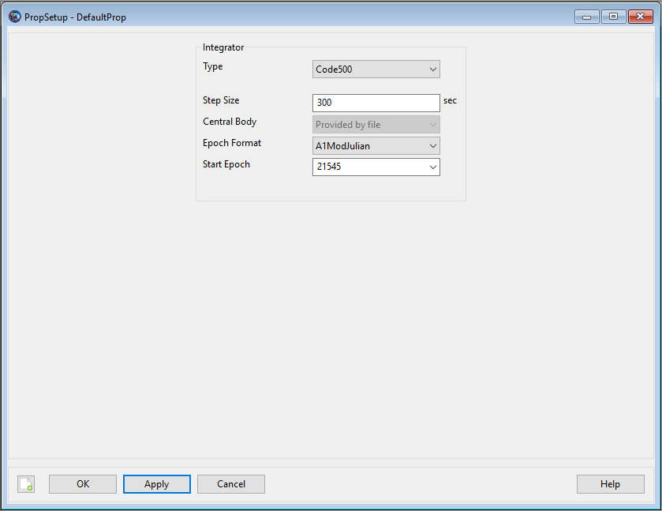 |
To configure a Propagator from the GMAT GUI
to use Code500 ephemeris files, select and open a
Propagator from the Resources tree. In the
Integrator category select
Code500 from the Type
drop-down box. This will display the Code500 propagator options dialog.
There are four fields displayed for a Code500 propagator -
StepSize, CentralBody,
EpochFormat, and StartEpoch.
Note that changing the EpochFormat setting converts
the input epoch to the selected format. You can also type
FromSpacecraft into the
StartEpoch field and the
Propagator will use the epoch of the
Spacecraft as the initial propagation epoch. The
CentralBody field is displayed to the user, but is
unused when the integrator type is Code500.
Remarks
There is currently no GUI option to assign the Code500 ephemeris file to the Spacecraft resource. You must specify the Code500 ephemeris file on the Spacecraft.EphemerisName parameter via script. The subsections below provide examples of how to do this.
Configuring Spacecraft Ephemeris Files
To use a Code500 ephemeris-configured
Propagator, you must add the Code500 ephemeris
file to the Spacecraft. A sample spacecraft
Code500 ephemeris, (sat_leo.ephem, in the
data/vehicle/ephem/code500 directory) is
distributed with GMAT. This sample file has a span of 4/20/2015
00:00:00 to 4/30/2015 00:00:00. An example of how to assign this
ephemeris to a spacecraft is shown below. Relative paths are defined
with respect to the GMAT bin directory of your
local installation.
Create Spacecraft aSpacecraft
aSpacecraft.EphemerisName = '../data/vehicle/ephem/code500/sat_leo.ephem'
BeginMissionSequenceA spacecraft may have only one Code500 ephemeris assigned. There is currently no GUI option to add a Code500 ephemeris file to a spacecraft.
Configuring a Code500 Ephemeris Propagator
If you have assigned the ephemeris file to your spacecraft, configuring the propagator only requires assigning the Code500 type and the desired step size on a Propagator resource. The central body of propagation will be the central body of the the ephemeris file. If desired, you may also specify an EpochFormat and StartEpoch on the propagator to specify an initial epoch from which to start propagation. The same effect can be accomplished with an independent Propagate command (see Propagate) to the desired starting epoch.
Create Propagator Code500Prop
Code500Prop.Type = 'Code500'
Code500Prop.StepSize = 60.
BeginMissionSequenceThe same remarks mentioned in the prior section on SPK propagators with regard to interaction with the Propagate command and behavior near ephemeris boundaries also apply to the Code500 ephemeris propagator.
Examples
This example propagates a spacecraft using a Code500 ephemeris, defining the StartEpoch from the spacecraft. The ephemeris file used in this example is included in the GMAT distribution at the indicated location. The code below will run if you copy and paste it into a new GMAT script.
Create Spacecraft aSpacecraft
% Ephem file span is 4/20/2015 - 4/30/2015
aSpacecraft.EphemerisName = '../data/vehicle/ephem/code500/sat_leo.ephem'
aSpacecraft.DateFormat = UTCGregorian
aSpacecraft.Epoch = '22 Apr 2015 00:00:00.000'
Create Propagator Code500Prop
Code500Prop.Type = 'Code500'
Code500Prop.StepSize = 60.
Code500Prop.StartEpoch = 'FromSpacecraft'
Create ReportFile PropReport
PropReport.Filename = 'EphemPropagator_Code500_ForwardProp.txt'
PropReport.WriteHeaders = True
BeginMissionSequence
While aSpacecraft.ElapsedDays <= 1
Propagate Code500Prop(aSpacecraft)
Report PropReport aSpacecraft.UTCGregorian aSpacecraft.TAIModJulian ...
aSpacecraft.X aSpacecraft.Y aSpacecraft.Z ...
aSpacecraft.VX aSpacecraft.VY aSpacecraft.VZ
EndWhileAn additional, more detailed, example of use of the Code500
ephemeris propagator is shown in the
Ex_Code500_EphemerisCompare.script file provided in
the samples\Navigation directory. This script
generates a report showing the difference, in RIC coordinates, between
the orbits in two different Earth-centered Code500 ephemeris
files.
Receiver
Receiver — Hardware that receives an RF signal.
Description
A GroundStation or Spacecraft resource needs a Receiver. A GroundStation resource, for example, needs to receive the RF signal from ground station user spacecraft. A Receiver is assigned on the AddHardware list of an instance of a GroundStation or Spacecraft.
The receiver resource is also used as the host object for the GPS_PosVec measurement error model. When using GPS_PosVec data for estimation or simulation, an ErrorModel instance specifying the GPS_PosVec measurement type should be assigned on a Receiver object, and that receiver should be assigned to the associated Spacecraft object.
See Also: GroundStation, Antenna
Fields
| Field | Description | ||||||||||||
|---|---|---|---|---|---|---|---|---|---|---|---|---|---|
| ErrorModels | User-defined list of ErrorModel objects that describe the measurement error models used for this receiver. The only error model type currently supported is GPS_PosVec. This parameter is only needed when simulating or estimating using GPS_PosVec data.
| ||||||||||||
| Id | Integer identification number for this receiver. This should match the receiver ID specified for the GPS_PosVec data in the GMD file. This parameter is only needed when simulating or estimating using GPS_PosVec data.
| ||||||||||||
| PrimaryAntenna | Antenna resource used by Receiver or Spacecraft resource to receive a signal
|
RejectFilter
RejectFilter — Allows selection of data subsets for processing by the batch least squares estimator.
Description
Starting with release R2017A of GMAT, the RejectFilter resource replaces the StatisticsRejectFilter resource. The StatisticsRejectFilter resource is still available in this release but it is deprecated and will be removed in a future release.
The RejectFilter object is used to create criteria for the exclusion of subsets of the available data in the estimation process based on tracker, observed object, measurement type, or time. Instances of RejectFilter are specified for use on the DataFilters field of a TrackingFileSet or BatchEstimatorInv object.
GMAT implements two levels of data editing for estimation. First-level editing criteria are specified on the DataFilters field of the TrackingFileSet instance. At this level, the user may choose what data is admitted into the overall pool of observations provided to the estimator. Any data excluded at the tracking file set level will be immediately discarded and not available to the estimation process.
Second-level data editing is specified on the DataFilters field of the BatchEstimatorInv instance. At this level, the user may choose what data is used in the estimation state update. Residuals will be computed for any observations admitted through first-level editing, but any data excluded at the estimator level will be flagged as user edited, and will not affect the computation of the state correction. This allows the user to evaluate the quality of untrusted data against a solution computed using a trusted set of measurements.
A single reject filter may employ multiple selection criteria (for example simultaneous thinning by time and tracker). Multiple criteria on a single filter are considered in an AND sense. When multiple criteria are specified in a single filter, an observation must meet all specified criteria to be rejected. Multiple filters with different selection criteria may be specified on a single TrackingFileSet or BatchEstimatorInv. When multiple filters are specified, these act in an OR sense. Data meeting criteria for any of the specified filters will be rejected.
See Also AcceptFilter, TrackingFileSet, BatchEstimatorInv
Fields
| Field | Description | ||||||||||||
|---|---|---|---|---|---|---|---|---|---|---|---|---|---|
| DataTypes | List of data types
| ||||||||||||
| EpochFormat | Allows user to select format of the epoch
| ||||||||||||
| FileNames | List of file names (a subset of the relevant TrackingFileSet's FileName field) containing the tracking data, to be excluded from processing. This field is only applicable when the RejectFilter is used on a TrackingFileSet.
| ||||||||||||
| FinalEpoch | Final epoch of desired data to process
| ||||||||||||
| InitialEpoch | Initial epoch of desired data to process
| ||||||||||||
| ObservedObjects | List of user-created tracked objects (e.g., name of the Spacecraft resource being tracked)
| ||||||||||||
| RecordNumbers | A list of one or more single record numbers or spans of record numbers to reject. Observation record numbers are reported in the GMAT estimator output file. This field is only applicable when the RejectFilter is used on the estimator level.
| ||||||||||||
| Trackers | List of user-created trackers (e.g., name of the GroundStation resource being used)
|
Remarks
Some fields of RejectFilter are not applicable at either the first-level (tracking file set) or second-level (estimator) editing stages. The RecordNumbers field has no functionality when applied to a reject filter at the tracking file set level. The FileNames field has no functionality when applied to a reject filter at the estimator level.
Use of combinations of instances AcceptFilter and RejectFilter at both levels is permitted.
Examples
First-level (TrackingFileSet) Data Editing
The following examples illustrate use of a RejectFilter for first-level data editing. At this level, the RejectFilter instance should be assigned to the DataFilters field of a TrackingFileSet. In these examples, data meeting the criteria specified by the reject filter will be immediately discarded. All other data is admitted.
This example shows how to create a RejectFilter to reject all observations from station GDS.
Create GroundStation GDS;
Create RejectFilter rf;
rf.Trackers = {'GDS'};
Create TrackingFileSet estData;
estData.DataFilters = {rf};
BeginMissionSequence;The next example will reject all DSN Doppler (i.e., DSN_TCP) tracking measurements from station GDS, and all tracking of any type from station CAN. All other tracking measurements will be accepted.
Create GroundStation GDS CAN;
Create RejectFilter rf1;
Create RejectFilter rf2;
rf1.Trackers = {'GDS'};
rf1.DataTypes = {'DSN_TCP'};
rf2.Trackers = {'CAN'};
Create TrackingFileSet estData;
estData.DataFilters = {rf1, rf2};
BeginMissionSequence;Second-level (estimator) Data Editing
The following examples illustrate use of a RejectFilter for second-level data editing. At this level, the RejectFilter instance should be assigned to the DataFilters field of a BatchEstimatorInv. In these examples, data meeting the criteria specified by the reject filter will excluded from the estimation state update. Residuals will be computed for all available data (all data admitted at the first level), but data rejected at the estimator level will be flagged as user edited.
This example shows how to create a RejectFilter to reject specific observations by record number.
Create RejectFilter rf;
rf.RecordNumbers = {13, 25, 75-87};
Create BatchEstimatorInv bls;
bls.DataFilters = {rf};
BeginMissionSequence;The next example shows how to simultaneously employ multiple reject filters. In this example:
MAD range data over the span 10 Jun 2012 02:56 to 13:59 is rejected
All CAN DSN_TCP data is rejected
All RangeRate data (from any station) is rejected
Create RejectFilter rf1 rf2 rf3;
Create GroundStation MAD CAN;
rf1.Trackers = {'MAD'};
rf1.DataTypes = {'Range'};
rf1.EpochFormat = UTCGregorian;
rf1.InitialEpoch = '10 Jun 2012 02:56:00.000';
rf1.FinalEpoch = '10 Jun 2012 13:59:00.000';
rf2.Trackers = {'CAN'};
rf2.DataTypes = {'DSN_TCP'};
rf3.DataTypes = {'RangeRate'};
Create BatchEstimatorInv bls;
bls.DataFilters = {rf1, rf2, rf3};
BeginMissionSequence;ReportFile
ReportFile — Report data to a text file
Description
The ReportFile resource allows you to write data to a text file that can be viewed after a mission run has been completed. GMAT allows you to report user-defined Variables, Arrays, Strings and Object Parameters. GMAT gives you control over setting formatting properties of the output report file that is generated at the end of a mission run. You can create ReportFile resource in either the GUI or script interface. GMAT also provides the option of when to write and stop writing data to a text file through the Toggle On/Off command. See the Remarks section below for detailed discussion of the interaction between ReportFile resource and Toggle command.
Fields
| Field | Description | ||||||||||||
|---|---|---|---|---|---|---|---|---|---|---|---|---|---|
| Add | Allows a user to add any number of user-defined
Variables, Arrays,
Strings or Object
Parameters to a report file. To add multiple
user-defined variables or parameters, enclose the reported values
with curly brackets. Ex.
| ||||||||||||
| ColumnWidth | This field defines the width of the data columns in a report file. The value for ColumnWidth is applied to all columns of data. For example, if ColumnWidth is set to 20, then each data column will be 20 white-spaces wide.
| ||||||||||||
| Delimiter | When FixedWidth field is turned
off, this field become active. The Delimiter
field allows you to report data to a report file in
| ||||||||||||
| Filename | Allows the user to define the file path and file name for a report file.
| ||||||||||||
| FixedWidth | Allows you to enable or disable Delimiter and ColumnWidth fields. When this field is turned on, the Delimiter field is inactive and ColumnWidth field is active and can be used to vary the width of the data columns. When FixedWidth field is turned off, the ColumnWidth field becomes inactive and Delimiter field is active for use.
| ||||||||||||
| LeftJustify | When the LeftJustify field is set to On, then the data is left justified and appears at the left most side of the column. If the LeftJustify field is set to Off, then the data is centered in the column.
| ||||||||||||
| Maximized | Allows the user to maximize the ReportFile window. This field cannot be modified in the Mission Sequence.
| ||||||||||||
| Precision | Allows the user to set the number of significant digits of the data written to a report.
| ||||||||||||
| RelativeZOrder | Allows the user to select which ReportFile to display first on the screen. The ReportFile with lowest RelativeZOrder value will be displayed last while ReportFile with highest RelativeZOrder value will be displayed first. This field cannot be modified in the Mission Sequence.
| ||||||||||||
| Size | Allows the user to control the display size of generated report file. First value in [0 0] matrix controls horizonal size and second value controls vertical size of report file window. This field cannot be modified in the Mission Sequence.
| ||||||||||||
| SolverIterations | This field determines whether or not data associated with perturbed trajectories during a solver (Targeter, Optimize) sequence is written to a report file. When SolverIterations is set to All, all perturbations/iterations are written to a report file. When SolverIterations is set to Current, only current solution is written to a report file. When SolverIterations is set to None, this shows only final solution after the end of an iterative process and reports only final solution to a report file.
| ||||||||||||
| Upperleft | Allows the user to pan the generated report file display window in any direction. First value in [0 0] matrix helps to pan the report file window horizontally and second value helps to pan the window vertically. This field cannot be modified in the Mission Sequence.
| ||||||||||||
| WriteHeaders | This field specifies whether to include headers that describe the variables in a report file.
| ||||||||||||
| WriteReport | This field specifies whether to write data to the report FileName.
| ||||||||||||
| ZeroFill | Allows zeros to be placed in data written to a report to match set precision.
|

Remarks
Behavior When using Filename field
GMAT allows you to specify the name of the report file in two ways. The default naming convention for a report file when using FileName field is shown below:
Create ReportFile aReport
aReport.Filename = 'ReportFile1.txt'
aReport.WriteReport = trueAn alternate method for naming a report file is to name the file without using any single quotes around the report file’s name.
Create ReportFile aReport
aReport.Filename = ReportFile1.txt
aReport.WriteReport = trueHow data is reported to a report file
GMAT allows you to report data to a report file in two ways: You can use ReportFile.Add field or a Report command.
You can add data using the .Add field of ReportFile resource and this method reports data to the report file at each propagation step. Below is an example script snippet that shows how to report epoch and selected orbital elements using the .Add field:
Create Spacecraft aSat
Create ReportFile aReport
aReport.Add = {aSat.UTCGregorian aSat.Earth.SMA, aSat.Earth.ECC, ...
aSat.Earth.TA, aSat.EarthMJ2000Eq.RAAN}
Create Propagator aProp
BeginMissionSequence
Propagate aProp(aSat) {aSat.ElapsedSecs = 8640.0}GMAT’s ReportFile.Add field will not report selected data to the report file at each propagation step if Propagate command is not included under the BeginMissionSequence.
An alternative method of reporting data to the report file is via the Report command. Using the Report command allows you to report data to the report file at specific points in your mission. Below is an example script snippet that shows how to report epoch and selected orbital elements using the Report command:
Create Spacecraft aSat
Create ReportFile aReport
Create Propagator aProp
BeginMissionSequence
Report aReport aSat.UTCGregorian aSat.Earth.SMA aSat.Earth.ECC ...
aSat.Earth.TA aSat.EarthMJ2000Eq.RAAN
Propagate aProp(aSat) {aSat.ElapsedSecs = 8640.0}
Report aReport aSat.UTCGregorian aSat.Earth.SMA aSat.Earth.ECC ...
aSat.Earth.TA aSat.EarthMJ2000Eq.RAANBehavior and Interactions when using ReportFile Resource & Report Command
Suppose you utilize a ReportFile resource and opt not to write a report and select false for the field name WriteReport, as shown in the example below:
Create ReportFile aReport
aReport.Filename = ReportFile1.txt
aReport.Add = {aSat.A1ModJulian, aSat.Earth.SMA}
aReport.WriteReport = falseNow assume that at the same time, you decide to utilize Report command in the Mission tree, as shown in the example script snippet below:
BeginMissionSequence;
Report aReport aSat.A1ModJulian aSat.Earth.SMA aSat.Earth.ECC
Propagate aProp(aSat) {aSat.Earth.Periapsis}
Report aReport aSat.A1ModJulian aSat.Earth.SMA aSat.Earth.ECCAt this point, you may think that since false option is selected
under the field name WriteReport in
ReportFile resource, hence GMAT will not generate
the report file called ReportFile1.txt. On the
Contrary, GMAT will generate a report called
ReportFile1.txt, but this report will only contain
data that was requested using the Report command.
ReportFile1.txt text file will contain epoch,
semi-major-axis and eccentricity only at specific points of the
mission.
Behavior when reporting data in Iterative Processes
GMAT allows you to specify how data is written to reports during iterative processes such as differential correction or optimization. SolverIterations field of ReportFile resource supports 3 options which are described in the table below:
| SolverIterations options | Description |
|---|---|
| All | Shows only current iteration/perturbation after the end of an iterative process and reports current solution to a report file. |
| Current | Shows all iterations/perturbations in an iterative process and reports all iterations/perturbations to a report file. |
| None | Shows only final solution after the end of an iterative process and reports only final solution to a report file. |
Where Reports are written
GMAT allows you to write reports to any desired path or location.
You can do this by going to GMAT’s startup file called
gmat_startup_file.txt and define an absolute path
under OUTPUT_PATH. This allows you to save report
files in the directory of your choice as oppose to saving report files
in GMAT's default Output folder. In
ReportFile.FileName field, If no path is provided
and only name of the report file is defined, then report files are
written to GMAT's default Output folder. The default path where reports
are written to is the Output folder located in the main directory where
GMAT is installed.
Below is an example script snippet that shows where generated
reports are written when only report file’s name is provided under the
FileName field. In this example,
'ReportFile1.txt'report is written to the Output
folder located in the main directory where GMAT is installed:
Create ReportFile aReport
aReport.Filename = 'ReportFile1.txt'
aReport.Add = {aSat.A1ModJulian, aSat.Earth.ECC}An alternate method where report files can be written is by
defining a relative path. You can define the relative path in GMAT’s
startup file gmat_startup_file.txt under
OUTPUT_PATH. For example, you can set a relative path
by setting OUTPUT_PATH =
C:/Users/rqureshi/Desktop/GMAT/mytestfolder/../output2/. In
this path, the syntax ".." means to “go up one level”. After saving the
startup file, when the script is executed, the generated report file
named under FileName field will be written to a
path C:\Users\rqureshi\Desktop\GMAT\output2.
Another method where report files can be written to is by defining
an absolute path in GMAT’s startup file
gmat_startup_file.txt under
OUTPUT_PATH. For example, you can set an absolute
path by setting OUTPUT_PATH =
C:/Users/rqureshi/Desktop/GMAT/mytestfolder/. When the script
is executed, report file named under FileName field
will be written to an absolute path
C:\Users\rqureshi\Desktop\GMAT\mytestfolder.
Instead of defining a relative or an absolute path in GMAT's
startup file, you can choose to define an absolute path under
FileName field too. For example, if you set
ReportFile.FileName =
C:\Users\rqureshi\Desktop\GMAT\mytestfolder\ReportFile.txt,
then report file will be saved in
mytestfolder.
Behavior when using ReportFile Resource & Toggle Command
GMAT allows you to use Toggle command while using the Add field of ReportFile resource. When Toggle Off command is issued for a ReportFile, not data is sent to a report file until a Toggle On command is issued. Similarly, when a Toggle On command is used, data is sent to a report file at each integration step until a Toggle Off command is used.
Below is an example script snippet that shows how to use Toggle Off and Toggle On command while using the ReportFile resource. Spacecraft’s cartesian position vector is reported to the report file.
Create Spacecraft aSat
Create Propagator aProp
Create ReportFile aReport
aReport.Filename = 'ReportFile1.txt'
aReport.Add = {aSat.UTCGregorian, aSat.EarthMJ2000Eq.X ...
aSat.EarthMJ2000Eq.Y aSat.EarthMJ2000Eq.Z}
BeginMissionSequence
Toggle aReport Off
Propagate aProp(aSat) {aSat.ElapsedDays = 2}
Toggle aReport On
Propagate aProp(aSat) {aSat.ElapsedDays = 4}Behavior When Specifying Empty Brackets in ReportFile's Add Field
When using ReportFile.Add field, GMAT does not allow brackets to be left empty. The brackets must always be populated with values that you wish to report. If brackets are left empty, then GMAT throws in an exception. Below is a sample script snippet that shows an example of empty brackets. If you were to run this script, then GMAT throws in an execption reminding you that brackets cannot be left empty.
Create Spacecraft aSat
Create Propagator aProp
Create ReportFile aReport
aReport.Add = {}
BeginMissionSequence
Propagate aProp(aSat) {aSat.ElapsedSecs = 8640.0}Examples
Propagate an orbit and write cartesian state to a report file at every integrator step
Create Spacecraft aSat
Create Propagator aProp
Create ReportFile aReport
GMAT aReport.Filename = 'ReportFile1.txt'
aReport.Add = {aSat.EarthMJ2000Eq.X aSat.EarthMJ2000Eq.Y ...
aSat.EarthMJ2000Eq.Z aSat.EarthMJ2000Eq.VX ...
aSat.EarthMJ2000Eq.VY aSat.EarthMJ2000Eq.VZ}
BeginMissionSequence
Propagate aProp(aSat) {aSat.ElapsedSecs = 8640.0}
Propagate an orbit for 1 day and write cartesian state to a report file at specific points in your mission
Create Spacecraft aSat
Create Propagator aProp
Create ReportFile aReport
GMAT aReport.Filename = 'ReportFile1.txt'
BeginMissionSequence
Report aReport aSat.EarthMJ2000Eq.X aSat.EarthMJ2000Eq.Y ...
aSat.EarthMJ2000Eq.Z aSat.EarthMJ2000Eq.VX ...
aSat.EarthMJ2000Eq.VY aSat.EarthMJ2000Eq.VZ
Propagate aProp(aSat) {aSat.ElapsedDays = 1}
Report aReport aSat.EarthMJ2000Eq.X aSat.EarthMJ2000Eq.Y ...
aSat.EarthMJ2000Eq.Z aSat.EarthMJ2000Eq.VX ...
aSat.EarthMJ2000Eq.VY aSat.EarthMJ2000Eq.VZ
Simulator
Simulator — Configures the generation of simulated tracking data measurements.
Description
A Simulator configures the generation of simulated tracking data measurements. These measurements can then be used by a BatchEstimatorInv resource as part of an estimation run.
The Simulator object requires specification of one or more instances of a TrackingFileSet resource which identify the specific tracking data observation strands, data types, desired measurement corrections, and the output tracking data file name. Simulated data will be written in the GMAT Measurement Data (GMD) ASCII tracking data format. You must additionally specify a time span for the simulation run and a time interval between simulated observations. Simulated observations are only generated when a tracking strand meets the visibility constraints of all objects in the strand (for example, the observation must be above the ground station minimum elevation mask). Additionally, you must configure and specify an instance of a Propagator for the simulator. Finally, you can choose to add random Gaussian white noise to the generated measurements or to generate measurements without noise. If the Simulator.AddNoise option is set to On, noise with the standard deviation specified on each measurement strand’s GroundStation.ErrorModel, is added to the measurements.
See Also: TrackingFileSet, RunEstimator
Fields
| Field | Description | ||||||||||||
|---|---|---|---|---|---|---|---|---|---|---|---|---|---|
| AddData | A list of one or more TrackingFileSets
| ||||||||||||
| AddNoise | If true, adds noise to simulated observations
| ||||||||||||
| EpochFormat | Epoch format of both the initial and final epoch
| ||||||||||||
| InitialEpoch | The initial (start) epoch of the data simulation span. In the GMAT script, the EpochFormat field needs to be set before this field is set.
| ||||||||||||
| FinalEpoch | The final (ending) epoch of the data simulation span. In the GMAT script, the EpochFormat field needs to be set before this field is set.
| ||||||||||||
| MeasurementTimeStep | Specifies time step in seconds between two consecutive simulated observations
| ||||||||||||
| Propagator | Name of Propagator object used for calculation
|
Remarks
Interactions
| Resource | Description |
|---|---|
| TrackingFileSet resource | Must be created in order to tell the Simulator resource, via the AddData field, which data types will be simulated and to specify the name of the output tracking data file (via FileName) |
| Propagator resource | Used by GMAT to generate the simulated orbit |
| RunSimulator command | Must use the RunSimulator command to actually create the data defined by the Simulator resource |
Examples
The example below illustrates using the simulator to generate DSN
range measurements. This example is more detailed than usual as it can
actually be run to produce a file, simData.gmd,
that contains a single range measurement for a fictional DSN ground
station. For a more comprehensive example of simulating measurements,
see the Chapter 13, Simulate DSN Range and Doppler Data
tutorial.
%Create and Configure Spacecraft
Create Spacecraft SimSat;
GMAT SimSat.DateFormat = UTCGregorian;
GMAT SimSat.Epoch = '19 Aug 2015 00:00:00.000';
GMAT SimSat.X = -126544963;
GMAT SimSat.Y = 61978518;
GMAT SimSat.Z = 24133225;
GMAT SimSat.VX = -13.789;
GMAT SimSat.VY = -24.673;
GMAT SimSat.VZ = -10.662;
GMAT SimSat.AddHardware = {SatTransponder, SatTranponderAntenna};
%Create and configure RF hardware
Create Antenna SatTranponderAntenna DSNReceiverAntenna DSNTransmitterAntenna;
Create Transponder SatTransponder;
GMAT SatTransponder.PrimaryAntenna = SatTranponderAntenna;
Create Transmitter DSNTransmitter;
GMAT DSNTransmitter.PrimaryAntenna = DSNTransmitterAntenna;
GMAT DSNTransmitter.Frequency = 7200;
Create Receiver DSNReceiver;
GMAT DSNReceiver.PrimaryAntenna = DSNReceiverAntenna;
%Create and configure ground station and related error model
Create GroundStation DSN;
GMAT DSN.AddHardware = ...
{DSNTransmitter, DSNReceiver, DSNTransmitterAntenna, DSNReceiverAntenna};
GMAT DSN.ErrorModels = {DSNrange};
Create ErrorModel DSNrange;
GMAT DSNrange.Type = 'DSN_SeqRange';
GMAT DSNrange.NoiseSigma = 10;
%Define data types
Create TrackingFileSet simData;
GMAT simData.AddTrackingConfig = {{DSN,SimSat,DSN}, DSN_SeqRange};
GMAT simData.FileName = {'simData.gmd'};
% Create and configure the Simulator object
Create Propagator prop;
Create Simulator sim;
GMAT sim.AddData = {simData};
GMAT sim.Propagator = prop;
GMAT sim.EpochFormat = UTCGregorian;
GMAT sim.InitialEpoch = '19 Aug 2015 08:00:00.000';
GMAT sim.FinalEpoch = '19 Aug 2015 08:00:01.000';
GMAT sim.MeasurementTimeStep = 60;
GMAT sim.AddNoise = On;
% Mission Sequence - run the simulator.
BeginMissionSequence;
RunSimulator sim;SNOPT
SNOPT — The Sequential Quadratic Programming (SQP) optimizer, SNOPT
Description
The SNOPT optimizer is a SQP-based Nonlinear Programming solver developed by Stanford Business Software, Inc. It is a proprietary component that is not distritbuted with GMAT and must be obtained from the vendor. SNOPT performs nonlinear constrained optimization and supports both linear and nonlinear constraints. To use this solver, you must configure the solver options including convergence criteria, maximum iterations, among other options. In the mission sequence, you implement an optimizer such as SNOPT by using an Optimize/EndOptimize sequence. Within this sequence, you define optimization variables by using the Vary command, and define cost and constraints by using the Minimize and NonlinearConstraint commands respectively.
This resource cannot be modified in the Mission Sequence.
See Also: FminconOptimizer,Optimize,Vary, NonlinearConstraint, Minimize
Fields
| Field | Description | ||||||||||||
|---|---|---|---|---|---|---|---|---|---|---|---|---|---|
| MajorFeasibilityTolerance | Specifies how accurately the nonlinear constraints should be satisfied.
| ||||||||||||
| MajorIterationsLimit | The maximum number of major iterations allowed. It is intended to guard against an excessive number of linearizations of the constraints
| ||||||||||||
| MajorOptimalityTolerance | Specifies the final accuracy of the dual variables. See the SNOPT user guide for further details.
| ||||||||||||
| OutputFileName | Contains the path and file name of the report file. This report contains data written by SNOPT regarding optimization progress and information.
| ||||||||||||
| OverrideSpecsFileValues | Flag to indicate if options settable in the GMAT script/GUI should override values set in the SNOPT Specs file. Note that if the specs file is not found during initialization, GMAT configurations are applied even if the OverrideSpecsFileValues field is set to false.
| ||||||||||||
| ReportFile | Contains the path and file name of the report file. This report contains data written by GMAT regarding optimization progress and information.
| ||||||||||||
| ReportStyle | Determines the amount and type of data written to the message window and to the report specified by field ReportFile for each iteration of the solver (When ShowProgress is true). Currently, the Normal, Debug, and Concise options contain the same information: the values for the control variables, the constraints, and the objective function. In addition to this information, the Verbose option also contains values of the optimizer-scaled control variables.
| ||||||||||||
| ShowProgress | Determines whether data pertaining to iterations of the solver is both displayed in the message window and written to the report specified by the ReportFile field. When ShowProgress is true, the amount of information contained in the message window and written in the report is controlled by the ReportStyle field.
| ||||||||||||
| SpecsFileName | File read by SNOPT to configure all settings of the optimizer. The GMAT script/gui interface only supportsa small subset of the SNOPT configuration options. This file allows you to set any options supported by SNOPT. This file is only loaded if it is found during initialization and selected values set on the file can be overwritten by the GMAT configuration by OverrideSpecsFileValues = true. See the Remarks section for more information.
| ||||||||||||
| TotalIterationsLimit | The maximum number of minor iterations allowed.
|
GUI
The SNOPT dialog box allows you to specify properties of a SNOPT such as as maximum iterations, cost function tolerance, feasibility tolerance, choice of reporting options, and choice of whether or not to use the central difference derivative method.
To create a SNOPT resource, navigate to the Resources tree, expand the Solvers folder, highlight and then right-click on the Optimizers sub-folder, point to Add and then select SNOPT. This will create a new SNOPT resource, SNOPT1. Double-click on SNOPT1 to bring up the SNOPT dialog box shown below.
 |
Remarks
SNOPT Optimizer Version and Availability
GMAT currently uses SNOPT 7.2-12.2. This optimizer is not included as part of the nominal GMAT installation and is only available if you have created and installed the SNOPT plug-in or obtained SNOPT from the vendor.
SPECS File Configuration
The Specs file contains a list of options and values in the following general form:.
Begin options Iterations limit 500 Minor feasibility tolerance 1.0e-7 Solution Yes End options
The file starts with the keyword Begin and ends with End. The file is in free format. Each line specifies a single option, using one or more items as follows:
A keyword (required for all options).
A phrase (one or more words) that qualifies the keyword (only for some options).
A number that specifies an integer or real value (only for some options). Such numbers may be up to 16 contiguous characters in Fortran 77’s I, F, E or D formats, terminated by a space or new line.
The items may be entered in upper or lower case or a mixture of both. Some of the keywords have synonyms, and certain abbreviations are allowed, as long as there is no ambiguity. Blank lines and comments may be used to improve readability. A comment begins with an asterisk (*) anywhere on a line. All subsequent characters on the line are ignored. The Begin line is echoed to the Summary file.
For a complete list of SNOPT options, see the SNOPT user guide.
Configuring SNOPT for Effective Optimization
When using SNOPT, the Upper and Lower bounds in the Vary commands are required fields. By setting these values appropriately for your problem, you reduce the likelihood that SNOPT will try values that are unphysical or that can result in numerical singularities in the physical models. It is important to set bounds carefully when using SNOPT.
Aditionally, SNOPT is quite senstive to scaling and care must be taken to provide acceptable values of AdditiveScaleFactor and MultiplicativeScaleFactor in the Vary commands. When using SNOPT, derivatives are computed by SNOPT via the optimizer's built-in finite differencing. If an optimization problem is not appropriately scaled, optimization may fail, or take an un-nesessarily long time. Note that SNOPT has built-in scaling options that can be set via the Specs file and are described in further detail in the SNOPT user guide.
Resource and Command Interactions
Warning
GMAT's Vary command is a generic interface designed to support many optimizers and not all settings supported by the Vary command are supported by SNOPT. See the Vary command documentation for details on the which Vary command settings are supported by SNOPT.
The SNOPT resource can only be used in the context of optimization-type commands. Please see the documentation for Optimize, Vary, NonlinearConstraint, and Minimize for more information and worked examples.
Examples
A simple mathematical optimization problem using SNOPT.
Create SNOPT NLP
GMAT NLP.ShowProgress = true
GMAT NLP.ReportStyle = Normal
GMAT NLP.ReportFile = output.report
GMAT NLP.MajorOptimalityTolerance = 0.001
GMAT NLP.MajorFeasibilityTolerance = 0.0001
GMAT NLP.MajorIterationsLimit = 456
GMAT NLP.TotalIterationsLimit = 789012
GMAT NLP.OutputFileName = 'SNOPTName123.out'
GMAT NLP.SpecsFileName = 'SNOPT.spec'
GMAT NLP.OverrideSpecsFileValues = true
Create Variable X1 X2 J G
BeginMissionSequence
Optimize NLP {SolveMode = Solve, ExitMode = DiscardAndContinue}
% Vary the independent variables
Vary 'Vary X1' NLP(X1 = 0, {Perturbation = 0.0000001, Upper = 10, ...
Lower = -10, AdditiveScaleFactor = 0.0, ...
MultiplicativeScaleFactor = 1.0})
Vary 'Vary X2' NLP(X2 = 0, {Perturbation = 0.0000001, Upper = 10, ...
Lower = -10, AdditiveScaleFactor = 0.0, ...
MultiplicativeScaleFactor = 1.0})
% The cost function and Minimize command
J = ( X1 - 2 )^2 + ( X2 - 2 )^2
Minimize 'Minimize Cost (J)' NLP(J)
% Calculate constraint and use NonLinearConstraint command
GMAT G = X2 + X1
NonlinearConstraint NLP(G<=8)
EndOptimize SolarPowerSystem
SolarPowerSystem — A solar power system model
Description
The SolarPowerSystem models a solar power system including power generated as function of time and distance from the sun, and includes shadow modeling by celestial bodies. The model allows you to configure the power generated by the solar arrays, and the power required by the spacecraft bus.
For a complete descripton of how to configure all Resources required for electric propulsion modelling, see the Tutorial named Chapter 12, Electric Propulsion
See Also ElectricTank, ElectricThruster, NuclearPowerSystem
Fields
| Field | Description | ||||||||||||
|---|---|---|---|---|---|---|---|---|---|---|---|---|---|
| AnnualDecayRate | The annual decay rate of the power system.
| ||||||||||||
| BusCoeff1 | Coefficient of power required by spacecraft bus.
| ||||||||||||
| BusCoeff2 | Coefficient of power required by spacecraft bus.
| ||||||||||||
| BusCoeff3 | Coefficient of power required by spacecraft bus.
| ||||||||||||
| EpochFormat | The epoch format for the PowerInitialEpoch field.
| ||||||||||||
| InitialEpoch | The initial epoch of the system used to define power system elapsed lifetime.
| ||||||||||||
| InitialMaxPower | The maximum power generated at the PowerInitialEpoch.
| ||||||||||||
| Margin | The required margin between power left after power bus, and power used by the propulsion system.
| ||||||||||||
| ShadowBodies | A list of celestial bodies for use in the shadow computation. A body cannot be added more than once.
| ||||||||||||
| ShadowModel | The model used for shadow computation in the Solar System Power Model.
| ||||||||||||
| SolarCoeff1 | Coefficient of power created by solar power system.
| ||||||||||||
| SolarCoeff2 | Coefficient of power created by solar power system.
| ||||||||||||
| SolarCoeff3 | Coefficient of power created by solar power system.
| ||||||||||||
| SolarCoeff4 | Coefficient of power created by solar power system.
| ||||||||||||
| SolarCoeff5 | Coefficient of power created by solar power system.
|
Remarks
Computation of Base Power
The SolarPowerSystem models power degradation as a function of time. You must provide a power system initial epoch, the power generated at that epoch, and an annual power decay rate. Additionally, the AnnualDecayRate field models the power degredation on a per year basis. The base power is computed using
where "tau" is the power AnnualDecayRate, P_0 is InitialMaxPower, and "delta t" is the elapsed time between the simulation epoch and InitialEpoch.
Computation of Bus Power
The power required by the spacecraft bus for all subsystems other than the propulsion system is computed using
where A_Bus, B_Bus, and C_Bus are BusCoeff1, BusCoeff2, and BusCoeff3 respectively and r is the distance from the Sun in Au.
Computation of Power Available for Propulsion
The solar power model scales the base power based on a polynomial function in terms of the solar distance. Total power is compute using
where P_Sun is the percent sun ( full sun is 1.0, no sun is 0.0), r is the distance from the Sun in Au, and C_1 is SolarCoeff1 and so on. Thrust power available for electric propulsion is finaly computed using
Where "delta M" is power Margin.
Shadow Modelling and Discontinuities
Note that when modeling shadows for a solar power system, discontinuities in the force model can occur when the power avialable for propulsion is less than a thruster's minimum useable power setting. As a spacecraft passes from penumbra to umbra, and power avialable for thusting goes to zero, thrust power causes thrust acceleration to discontinuously terminate, causing issues when using adaptive step integrators. In this case, there are a few options. You can configure any itegrator to use fixed step integration by setting the ErrorControl to None. Or you can configure the integrator to continue propagating if a bad step, in this case a small discontinuity, occurs. See the Propagator reference material for more information.
Examples
Create a SolarPowerSystem and attach it to a Spacecraft.
% Create the Solar Power System
Create SolarPowerSystem SolarPowerSystem1
% Create a spacecraft an attach the Solar Power System
Create Spacecraft DefaultSC
DefaultSC.PowerSystem = SolarPowerSystem1
BeginMissionSequence
For a complete descripton of how to configure all Resources required for electric propulsion modeling, see the Tutorial named Chapter 12, Electric Propulsion.
SolarSystem
SolarSystem — High level solar system configuration options
Description
The SolarSystem resource allows you to define global properties for the model of the solar system including the ephemeris source for built-in celestial bodies and selected settings to improve performance when medium fidelity modelling is acceptable for your application. This resource cannot be modified in the mission sequence.
Note
As of release R2015a, GMAT uses two separate solar system configurations for core parts of the system. For propagation, GMAT uses the source specified by SolarSystem.EphemerisSource and the CelestialBody properties configured on each resource. For event location with the new ContactLocator and EclipseLocator resources, GMAT always uses SPICE data for SolarSystem and CelestialBody properties. See ContactLocator, EclipseLocator, and CelestialBody for details.
See Also: CelestialBody, LibrationPoint, Barycenter, CoordinateSystem
Fields
| Field | Description | ||||||||||||
|---|---|---|---|---|---|---|---|---|---|---|---|---|---|
| DEFilename | The path and name of the DE file.
| ||||||||||||
| EphemerisSource | The ephemeris model for built-in celestial bodies.
| ||||||||||||
| EphemerisUpdateInterval | The time between time updates for celetial body ephemeris. For example, if EphemerisUpdateInterval = 60, if an ephemeris call is made at time t = 1200, and a subsequent call is made at time t = 1210, the same ephemeris will be returned for the second call. This option is for high speed, low fidelity modelling or for use when modelling orbits far from third body perturbation sources.
| ||||||||||||
| LSKFilename | The path and name of the SPK leap second kernel.
| ||||||||||||
| PCKFilename | The path and name of the PCK planetary constants kernel.
| ||||||||||||
| SPKFilename | The path and name of the SPK orbit ephemeris kernel.
| ||||||||||||
| UseTTForEphemeris | Flag to use Terrestrial Time (TT) as input to the orbital ephemeris routines. When set to false, TDB is used.
|
GUI
The SolarSystem dialog box allows you to configure global properties for solar system modelling. The default configuration is illustrated above. Use Ephemeris Source to choose the ephemeris model for built-in celestial bodies. If you select either DE405, DE421, or DE424 the dialog box above illustrates available options.
Warning
GMAT allows you to provide user-created DE or SPK kernel files but we recommend using the files distributed with GMAT. The files provided with GMAT have been extensively tested for consistency and accuracy with the original data provided by JPL and other models in GMAT. Using inconsistent ephemeris files or user-generated files can result in instability or numerical issues if the files are not generated correctly.
Changing the ephemeris source for an application is equivalent to making a fundamental change to the model of the solar system. We recommend selecting the EphemerisSource early in the analysis process and using that model consistently. In the event that an ephemeris model change is necessary, we recommend that you change the model in the script file and not via the GUI. We allow you to change EphemerisSource via the GUI for convenience in early design phases when rigorous consistency in modelling is less important.
Additionally, when using DE as the EphemerisSource, modelling is with respect to planetary system barcyenter. When using SPICE as the EphemerisSource, modelling is with respect to the planet center.
If you select SPICE for Ephemeris Source, the SolarSystem dialog box reconfigures to disable the Ephemeris Filename option, indicating that this is no longer used in this mission..
Remarks
GMAT uses the ephemeris file selected in the EphemerisSource field for all built-in celestial bodies. For user-defined bodies, the ephemeris model is specified on the CelestialBody object.
For more information on the DE files provided by JPL see here.
For general information on SPICE ephemeris files see the JPL NAIF site.
For information on the SPK kernel named
DE???AllPlanets.bspdistributed with GMAT, see theReadme-DE???AllPlanets.txtfiles located in\data\planetary_ephem\spkin the GMAT distribution.
Note: The SolarSystem and built-in CelestialBody resources require several hundred fields for full configuration. GMAT only saves non-default values for SolarSystem and CelestialBody to the script so that scripts are not populated with hundreds of default settings.
Examples
Use DE421 for ephemeris.
GMAT SolarSystem.EphemerisSource = 'DE421'
Create Spacecraft aSpacecraft
Create Propagator aPropagator
aPropagator.FM = aForceModel
Create ForceModel aForceModel
aForceModel.PointMasses = {Luna, Sun}
BeginMissionSequence
Propagate aPropagator(aSpacecraft) {aSpacecraft.ElapsedSecs = 12000.0}Use SPICE for ephemeris.
GMAT SolarSystem.EphemerisSource = 'SPICE'
Create Spacecraft aSpacecraft
Create Propagator aPropagator
aPropagator.FM = aForceModel
Create ForceModel aForceModel
aForceModel.PointMasses = {Luna, Sun}
BeginMissionSequence
Propagate aPropagator(aSpacecraft) {aSpacecraft.ElapsedSecs = 12000.0} Spacecraft
Spacecraft — A spacecraft model
Description
A Spacecraft resource is GMAT's spacecraft model and includes data and models for the spacecraft's orbit, epoch, attitude, and physical parameters (such as mass and drag coefficient), as well as attached hardware, including tanks and thrusters. The Spacecraft model also contains the data that configures how the Spacecraft 3-D CAD model is used in an OrbitView. Spacecraft has certain fields that can be set in the Mission Sequence and some that cannot. See the field tables on the pages below for more information.
GMAT's documentation for Spacecraft is extensive and is broken down into the following sections:
Spacecraft Attitude
Spacecraft Attitude — The spacecraft attitude model
Description
GMAT models the orientation and rate of rotation of a spacecraft using several different mathematical models. Currently, GMAT assumes that a Spacecraft is a rigid body. The currently supported attitude models are Spinner, CoordinateSystemFixed, and SpiceAttitude. The Spinner model is a simple, inertially fixed spin axis model. The CoordinateSystemFixed model allows you to use any CoordinateSystem supported by GMAT as the attitude of a Spacecraft. The SpiceAttitude model allows you to define the Spacecraft attitude based on SPICE attitude kernels.
See Also: Spacecraft
Fields
| Field | Description | ||||||||||||
|---|---|---|---|---|---|---|---|---|---|---|---|---|---|
| AngularVelocityX | The x-component of Spacecraft body angular velocity expressed in the inertial frame. AngularVelocityX is used for the following Attitude models: Spinner.
| ||||||||||||
| AngularVelocityY | The y-component of Spacecraft body angular velocity expressed in the inertial frame. AngularVelocityY is used for the following Attitude models: Spinner.
| ||||||||||||
| AngularVelocityZ | The z-component of Spacecraft body angular velocity expressed in the inertial frame. AngularVelocityZ is used for the following Attitude models: Spinner.
| ||||||||||||
| Attitude | The attitude mode for the Spacecraft.
| ||||||||||||
| AttitudeConstraintType | The constraint type for resolving attitude ambiguity. The attitude is computed such that the angle between the BodyConstraintVector and the constraint defined by AttitudeConstraintType is minimized. A Velocity constraint uses the inertial velocity vector expressed with respect to the AttitudeReferenceBody. An OrbitNormal constraint uses the orbit normal vector expressed with respect to the AttitudeReferenceBody. AttitudeConstraintType is used for the following attitude models: NadirPointing.
| ||||||||||||
| AttitudeCoordinateSystem | The CoordinateSystem used in attitude computations. The AttitudeCoordinateSystem field is only used for the following attitude models: CoordinateSystemFixed.
| ||||||||||||
| AttitudeFileName | Path (optional) and name of CCSDS attitude ephemeris message file. If a path is not provided, and GMAT does not find the file in the current directory, then an error occurs and execution is halted.
| ||||||||||||
| AttitudeRate-DisplayStateType | The attitude rate representation to display in the GUI and script file. AttitudeRateDisplayType is used for the following attitude models: Spinner.
| ||||||||||||
| AttitudeReferenceBody | The celestial body used to define nadir. AttitudeReferenceBody is used for the following attitude models: NadirPointing.
| ||||||||||||
| AttitudeSpiceKernelName | SPK Kernels for Spacecraft attitude. SPK atttitude kernels have extension ".BC". This field cannot be set in the Mission Sequence. An empty list unloads all kernels of this type on the Spacecraft.
| ||||||||||||
| BodyAlignmentVectorX | The x-component of the alignment vector, expressed in the body frame, to align with the opposite of the radial vector. BodyAlignmentVectorX is used for the following attitude models: NadirPointing.
| ||||||||||||
| BodyAlignmentVectorY | The y-component of the alignment vector, expressed in the body frame, to align with the opposite of the radial vector. BodyAlignmentVectorY is used for the following attitude models: NadirPointing.
| ||||||||||||
| BodyAlignmentVectorZ | The z-component of the alignment vector, expressed in the body frame, to align with the opposite of the radial vector. BodyAlignmentVectorZ is used for the following attitude models: NadirPointing.
| ||||||||||||
| BodyConstraintVectorX | The x-component of the constraint vector, expressed in the body frame. See NadirPointing description for further details. BodyConstraintVectorX is used for the following attitude models: NadirPointing.
| ||||||||||||
| BodyConstraintVectorY | The y-component of the constraint vector, expressed in the body frame. See NadirPointing description for further details. BodyConstraintVectorY is used for the following attitude models: NadirPointing.
| ||||||||||||
| BodyConstraintVectorZ | The z-component of the constraint vector, expressed in the body frame. See NadirPointing description for further details. BodyConstraintVectorZ is used for the following attitude models: NadirPointing.
| ||||||||||||
| BodySpinAxisX | The x-component of the spin axis, expressed in the body frame. BodySpinAxisX is used for the following attitude models: PrecessingSpinner.
| ||||||||||||
| BodySpinAxisY | The y-component of the spin axis, expressed in the body frame. BodySpinAxisY is used for the following attitude models: PrecessingSpinner.
| ||||||||||||
| BodySpinAxisZ | The z-component of the spin axis, expressed in the body frame. BodySpinAxisZ is used for the following attitude models: PrecessingSpinner.
| ||||||||||||
| DCM11 | Component (1,1) of the Direction Cosine Matrix. DCM11 is used for the following Attitude models: Spinner.
| ||||||||||||
| DCM12 | Component (1,2) of the Direction Cosine Matrix. DCM12 is used for the following Attitude models: Spinner.
| ||||||||||||
| DCM13 | Component (1,3) of the Direction Cosine Matrix. DCM13 is used for the following Attitude models: Spinner.
| ||||||||||||
| DCM21 | Component (2,1) of the Direction Cosine Matrix. DCM21 is used for the following Attitude models: Spinner.
| ||||||||||||
| DCM22 | Component (2,2) of the Direction Cosine Matrix. DCM22 is used for the following Attitude models: Spinner.
| ||||||||||||
| DCM23 | Component (2,3) of the Direction Cosine Matrix. DCM23 is used for the following Attitude models: Spinner.
| ||||||||||||
| DCM31 | Component (3,1) of the Direction Cosine Matrix. DCM31 is used for the following Attitude models: Spinner.
| ||||||||||||
| DCM32 | Component (3,2) of the Direction Cosine Matrix. DCM32 is used for the following Attitude models: Spinner.
| ||||||||||||
| DCM33 | Component (3,3) of the Direction Cosine Matrix. DCM33 is used for the following Attitude models: Spinner.
| ||||||||||||
| EulerAngle1 | The value of the first Euler angle. EulerAngle1 is used for the following Attitude models: Spinner.
| ||||||||||||
| EulerAngle2 | The value of the second Euler angle. EulerAngle2 is used for the following Attitude models: Spinner.
| ||||||||||||
| EulerAngle3 | The value of the third Euler angle. EulerAngle3 is used for the following Attitude models: Spinner.
| ||||||||||||
| EulerAngleRate1 | The value of the first Euler angle rate. EulerAngleRate1 is used for the following Attitude models: Spinner.
| ||||||||||||
| EulerAngleRate2 | The value of the second Euler angle rate. EulerAngleRate2 is used for the following Attitude models: Spinner.
| ||||||||||||
| EulerAngleRate3 | The value of the third Euler angle rate. EulerAngleRate3 is used for the following Attitude models: Spinner.
| ||||||||||||
| FrameSpiceKernelName | SPK Kernels for Spacecraft body frame. SPK Frame kernels have extension ".TF". This field cannot be set in the Mission Sequence. An empty list unloads all kernels of this type on the Spacecraft.
| ||||||||||||
| EulerAngleSequence | The Euler angle sequence used for Euler angle input and output..
| ||||||||||||
| InitialPrecessionAngle | The initial precession angle. InitialPrecessionAngle is used for the following attitude models: PrecessingSpinner.
| ||||||||||||
| InitialSpinAngle | The initial attitude spin angle. InitialSpinAngle is used for the following attitude models: PrecessingSpinner.
| ||||||||||||
| NAIFIdReferenceFrame | The Id of the spacecraft body frame used in SPICE kernels.
| ||||||||||||
| NutationAngle | The attitude nutation angle. NutationAngle is used for the following attitude models: PrecessingSpinner.
| ||||||||||||
| NutationReferenceVectorX | The x-component of the nutation reference vector, expressed in the inertial frame. NutationReferenceVectorX is used for the following attitude models: PrecessingSpinner.
| ||||||||||||
| NutationReferenceVectorY | The y-component of the nutation reference vector, expressed in the inertial frame. NutationReferenceVectorY is used for the following attitude models: PrecessingSpinner.
| ||||||||||||
| NutationReferenceVectorZ | The z-component of the nutation reference vector, expressed in the inertial frame. NutationReferenceVectorZ is used for the following attitude models: PrecessingSpinner.
| ||||||||||||
| MRP1 | The value of the first modified Rodrigues parameter. MRP1 is used for the following Attitude models: Spinner.
| ||||||||||||
| MRP2 | The value of the second modified Rodrigues parameter. MRP2 is used for the following Attitude models: Spinner.
| ||||||||||||
| MRP3 | The value of the second modified Rodrigues parameter. MRP2 is used for the following Attitude models: Spinner.
| ||||||||||||
| PrecessionRate | The rate of attitude precession. InitialPrecessionAngle is used for the following attitude models: PrecessingSpinner.
| ||||||||||||
| Q1 | First component of quaternion. GMAT’s quaternion representation includes the three “vector” components as the first three elements in the quaternion and the “rotation” component as the last element in the quaternion. Q1 is used for the following Attitude models: Spinner.
| ||||||||||||
| Q2 | Second component of quaternion. GMAT’s quaternion representation includes the three “vector” components as the first three elements in the quaternion and the “rotation” component as the last element in the quaternion. Q2 is used for the following Attitude models: Spinner.
| ||||||||||||
| Q3 | Third component of quaternion. GMAT’s quaternion representation includes the three “vector” components as the first three elements in the quaternion and the “rotation” component as the last element in the quaternion. Q3 is used for the following Attitude models: Spinner.
| ||||||||||||
| Q4 | Fourth component of quaternion. GMAT’s quaternion representation includes the three “vector” components as the first three elements in the quaternion and the “rotation” component as the last element in the quaternion. Q4 is used for the following Attitude models: Spinner.
| ||||||||||||
| Quaternion | The quaternion vector. GMAT’s quaternion representation includes the three “vector” components as the first three elements in the quaternion and the “rotation” component as the last element in the quaternion. Quaternion is used for the following Attitude models: Spinner.
| ||||||||||||
| SCClockSpiceKernelName | SPK Kernels for spacecraft clock. SPK clock kernels have extension ".TSC". This field cannot be set in the Mission Sequence. An empty list unloads all kernels of this type on the Spacecraft. An empty list unloads all kernels of this type on the Spacecraft.
| ||||||||||||
| SpinRate | The attitude spin rate. SpinRate is used for the following attitude models: PrecessingSpinner.
|
Remarks
Overview of Availble Attitude Models
GMAT supports many attitude models including the following: CoordinateSystemFixed, SpiceAttitude, NadirPointing, CCSDS-AEM, PrecessingSpinner, and Spinner (we recommend using thew new PrecessingSpinner model instead of Spinner). Different attitude models require different information to fully configure the model. For example, when you select the CoordinateSystemFixed model, the attitude and body rates are entirely determined by the CoordinateSystem model and defining Euler angles or angular velocity components are not required and have no effect. The reference tables above, and the detailed examples for each model type below, describe which fields are used for each model.
Note
GMAT attitude parameterizations such as the DCM rotate from inertial to body.
Overview of State Representations
Quaternion
The quaternion is a four element, non-singular attitude representation. GMAT’s quaternion representation includes the three “vector” components as the first three elements in the quaternion and the “rotation” component as the last element in the quaternion. In assignment mode, you can set the quaternions element by element like this
aSpacecraft.Q1 = 0.5
aSpacecraft.Q2 = 0.5
aSpacecraft.Q3 = 0.5
aSpacecraft.Q4 = 0.5 or simultaneously set the entire quaternion like this
aSpacecraft.Quaternion = [0.5 0.5 0.5 0.5]
GMAT normalizes the quaternion before use. In command mode, you must enter the entire quaternion as a single vector to avoid scaling components of the quaternion before the entire quaternion is set.
DirectionCosineMatrix (DCM)
The Direction Cosine Matrix is a 3x3 array that contains cosines of the angles that rotate from the x, y, and z inertial axes to the x, y, and z body axes. The direction cosine matrix must be ortho-normal and you define the DCM element by element. Here is an example that shows how to define the attitude using the DCM.
aSpacecraft.DCM11 = 1
aSpacecraft.DCM12 = 0
aSpacecraft.DCM13 = 0
aSpacecraft.DCM21 = 0
aSpacecraft.DCM22 = 1
aSpacecraft.DCM23 = 0
aSpacecraft.DCM31 = 0
aSpacecraft.DCM32 = 0
aSpacecraft.DCM33 = 1 Euler Angles
Euler angles are a sequence of three rotations about coordinate axes to transform from one system to another system. GMAT supports all 12 Euler angle sequences. Here is an example setting attitude using a “321” sequence.
aSpacecraft.EulerAngleSequence = '321'
aSpacecraft.EulerAngle1 = 45
aSpacecraft.EulerAngle2 = 45
aSpacecraft.EulerAngle3 = 90 Warning
Caution: The Euler angles have singularities that can cause issues during modeling. We recommend using other representations for this reason.
Modified Rogriques parameters
The modified Rodgriques parameters are a modification of the Euer Axis/Angle representation. Specifically, the MRP vector is equal to nhat* tan(Euler Angle/4) where nhat is the unitized Euler Axis.
aSpacecraft.MRP1 = 0.2928932188134525
aSpacecraft.MRP2 = 0.2928932188134524
aSpacecraft.MRP3 = 1.149673585146546e-017Euler Angles Rates
The Euler angle rates are the first time derivative of the Euler angles and can be used to define the body rates. Euler angle rates use the same sequence as the EulerAngles. The example below shows how to define the Euler angle rates for a spacecraft.
aSpacecraft.EulerAngleSequence = '321'
aSpacecraft.EulerAngleRate1 = -5
aSpacecraft.EulerAngleRate2 = 20
aSpacecraft.EulerAngleRate3 = 30 Angular Velocity
The angular velocity is the angular velocity of the spacecraft body with respect to the inertial frame, expressed in the inertial frame. The example below shows how to define the angular velocity for a spacecraft.
aSpacecraft.AngularVelocityX = 5;
aSpacecraft.AngularVelocityY = 10;
aSpacecraft.AngularVelocityZ = 5;Coordinate System Fixed Attitude Model
The CoordinateSystemFixed model allows you to use any existing CoordinateSystem to define the attitude of a Spacecraft. The attitude uses the axes defined on the CoordinateSystem to compute the body fixed to inertial matrix and attitude rate parameters such as the angular velocity. To configure this attitude mode, select CoordinateSystemFixed, for Attitude. You can define the EulerAngleSequence used when outputting EulerAngles and EulerAngle rates.
Warning
For the CoordinateSystemFixed attitude model, the attitude is completely described by the selected coordinate system. If you are working in the script, setting attitude parameters (Euler Angles, Quaternion etc.) or setting attitude rate parameters such as (Euler Angle Rates etc.) has no effect.
 |
The script example below shows how to configure a Spacecraft to use a spacecraft VNB attitude system.
Create Spacecraft aSat
aSat.Attitude = CoordinateSystemFixed
aSat.ModelRotationZ = -90
aSat.AttitudeCoordinateSystem = 'attCoordSys'
Create ForceModel Propagator1_ForceModel
Create Propagator Propagator1
Propagator1.FM = Propagator1_ForceModel
Propagator1.MaxStep = 10
Create CoordinateSystem attCoordSys
attCoordSys.Origin = Earth
attCoordSys.Axes = ObjectReferenced
attCoordSys.XAxis = V
attCoordSys.YAxis = N
attCoordSys.Primary = Earth
attCoordSys.Secondary = aSat
Create OrbitView OrbitView1;
OrbitView1.Add = {aSat, Earth}
OrbitView1.ViewPointReference = Earth
OrbitView1.ViewPointVector = [ 30000 0 0 ]
BeginMissionSequence
Propagate Propagator1(aSat) {aSat.ElapsedSecs = 12000.0}Spinner Attitude Model
The Spinner attitude model propagates the attitude assuming the spin axis direction is fixed in inertial space. We recommend using the newer PrecessingSpinner model instead of Spinner, and this model is maintained primarily for backwards compatibility. You define the attitude by providing initial body orientation and rates. GMAT propagates the attitude by computing the angular velocity and then rotates the Spacecraft about that angular velocity vector at a constant rate defined by the magnitude of the angular velocity. You can define the initial attitude using quaternions, Euler angles, the DCM, or the modified Rodriques parameters. You can define the attitude rates using Euler angles rates or angular velocity. When working with Euler angles, the rotation sequence is determined by the EulerAngleSequence field.
Warning
Caution: If you are working in the script, setting the CoordinateSystem for the Spinner attitude model has no effect.
 |
The example below configures a spacecraft to spin about the inertial z axis.
Create Spacecraft aSat;
aSat.Attitude = Spinner
aSat.ModelRotationZ = -90
aSat.AngularVelocityZ = 5
Create ForceModel Propagator1_ForceModel
Create Propagator Propagator1
GMAT Propagator1.FM = Propagator1_ForceModel
GMAT Propagator1.MaxStep = 10
Create CoordinateSystem attCoordSys
attCoordSys.Origin = Earth
attCoordSys.Axes = ObjectReferenced
attCoordSys.XAxis = V
attCoordSys.YAxis = N
attCoordSys.Primary = Earth
attCoordSys.Secondary = aSat
Create OrbitView OrbitView1;
OrbitView1.Add = {aSat, Earth}
OrbitView1.ViewPointReference = Earth
OrbitView1.ViewPointVector = [ 30000 0 0 ]
BeginMissionSequence
Propagate Propagator1(aSat) {aSat.ElapsedSecs = 12000.0}SPK Attitude Model
The SpiceAttitude model propagates the attitude using attitude SPICE kernels. To configure a Spacecraft to use SPICE kernels select SpiceAttitude for the Attitude field as shown below.
Warning
Caution: For the SpiceAttitude model, the attitude is completely described by the spice kernels. When working in the script, setting the CoordinateSystem, attitude parameters (EulerAngles, Quaternion etc.) or attitude rate parameters such as (EulerAngleRates etc.) has no effect.
 |
You must provide three SPICE kernel types for the SpiceAttitude model: the attitude kernel (.bc file), the frame kernel (.tf file) and the spacecraft clock kernel (.tsc file). These files are defined on the Spacecraft SPICE tab as shown below. In addition to the kernels, you must also provide the Spacecraft NAIFId and the NAIFIdReferenceFrame. Below is an illustration of the SPICE tab configured for MarsExpress script found later in this section.
 |
The example below configures a Spacecraft to use SPK kernels to propagator the attitude for Mars Express. The SPK kernels are distributed with GMAT.
Create Spacecraft MarsExpress
MarsExpress.NAIFId = -41
MarsExpress.NAIFIdReferenceFrame = -41001
MarsExpress.Attitude = 'SpiceAttitude'
MarsExpress.OrbitSpiceKernelName = ...
{'../data/vehicle/ephem/spk/MarsExpress_Short.BSP'}
MarsExpress.AttitudeSpiceKernelName = ...
{'../data/vehicle/ephem/spk/MarsExpress_ATNM_PTR00012_100531_002.BC'}
MarsExpress.SCClockSpiceKernelName = ...
{'../data/vehicle/ephem/spk/MarsExpress_MEX_100921_STEP.TSC'}
MarsExpress.FrameSpiceKernelName = ...
{'../data/vehicle/ephem/spk/MarsExpress_MEX_V10.TF'}
Create Propagator spkProp
spkProp.Type = SPK
spkProp.StepSize = 60
spkProp.CentralBody = Mars
spkProp.EpochFormat = 'UTCGregorian'
spkProp.StartEpoch = '01 Jun 2010 16:59:09.815'
Create CoordinateSystem MarsMJ2000Eq
MarsMJ2000Eq.Origin = Mars
MarsMJ2000Eq.Axes = MJ2000Eq
Create OrbitView Enhanced3DView1
Enhanced3DView1.Add = {MarsExpress, Mars}
Enhanced3DView1.CoordinateSystem = MarsMJ2000Eq
Enhanced3DView1.ViewPointReference = Mars
Enhanced3DView1.ViewPointVector = [ 10000 10000 10000 ]
Enhanced3DView1.ViewDirection = Mars
BeginMissionSequence
Propagate spkProp(MarsExpress) {MarsExpress.ElapsedDays = 0.2}Nadir Pointing Model
The NadirPointing attitude mode configures the attitude of a spacecraft to point a specified vector in the spacecraft body system in the nadir direction. The ambiguity in angle about the nadir vector is resolved by minimizing the angle between two constraint vectors. Note: the nadir pointing mode points the attitude in the negative radial direction (not opposite the planetodetic normal).
To configure which axis points to nadir, set the AttitudeReferenceBody field to the desired celestial body and define the body components of the alignment vector using the BodyAlignmentVector fields. To configure the constraint, set the AttitudeConstraintType field to the desired constraint type, and define the body components of the constraint using the BodyConstraintVector fields. GMAT supports two constraint types, OrbitNormal and Velocity, and in both cases the vectors are constructed using the inertial spacecraft state with respect to the AttitudeReferenceBody.
Warning
Attitude rates are not computed for the NadirPointing model. If you perform a computation that requires attitude rate information when using the NadirPointing mode, GMAT will throw an error message and execution will stop. Similarly, if the definitions of the BodyAlignmentVector and BodyConstraintVector fields result in an undefined attitude, an error message is thrown and execution will stop.
The script example below shows how to configure a Spacecraft to use an Earth NadirPointing attitude system where the body y-axis points nadir and the angle between the body x-axis and the orbit normal vector is a minimum.
Create Spacecraft aSat;
GMAT aSat.Attitude = NadirPointing;
GMAT aSat.AttitudeReferenceBody = Earth
GMAT aSat.AttitudeConstraintType = OrbitNormal
GMAT aSat.BodyAlignmentVectorX = 0
GMAT aSat.BodyAlignmentVectorY = 1
GMAT aSat.BodyAlignmentVectorZ = 0
GMAT aSat.BodyConstraintVectorX = 1
GMAT aSat.BodyConstraintVectorX = 0
GMAT aSat.BodyConstraintVectorX = 0
Create ForceModel Propagator1_ForceModel
Create Propagator Propagator1
Propagator1.FM = Propagator1_ForceModel
Propagator1.MaxStep = 10
Create OrbitView OrbitView1;
OrbitView1.Add = {aSat, Earth}
OrbitView1.ViewPointReference = Earth
OrbitView1.ViewPointVector = [ 30000 0 0 ]
BeginMissionSequence
Propagate Propagator1(aSat) {aSat.ElapsedSecs = 12000.0}CCSDS Attitude Ephemeris Message
The CCSDS Attitude Ephemeris Message (AEM) is an ASCII standard for attitude ephemerides documented in “ATTITUDE DATA MESSAGES” RECOMMENDED STANDARD CCSDS 504.0-B-1. GMAT supports some, but not all, of the attitude messages defined in the standard. According to the CCSDS AEM specification, “The set of attitude data messages described in this Recommended Standard is the baseline concept for attitude representation in data interchange applications that are cross-supported between Agencies of the CCSDS.” Additionally, the forward of the standard states “Derived Agency standards may implement only a subset of the optional features allowed by the Recommended Standard and may incorporate features not addressed by this Recommended Standard. See the details below for supported keyword types and details for creating AEM files that GMAT can use for attitude modelling.
 |
An AEM file must have the format illustrated below described in Table 4-1 of the standard. The header section contains high level information on the version, originator, and date. The body of the file is composed of paired blocks of Metadata and data. The Metadata sections contain information on the data such as the first and last epoch of the block, the time system employed, the reference frames, the attitude type (quaternion, Euler Angle, etc.) and many other items documented in later sections. The data sections contain lines of epoch and attitude data.
An example CCSDS AEM file is shown below
CCSDS_AEM_VERS = 1.0
CREATION_DATE = 2002-11-04T17:22:31
ORIGINATOR = NASA/JPL
META_START
COMMENT This file was produced by M.R. Somebody, MSOO NAV/JPL, 2002 OCT 04.
COMMENT It is to be used for attitude reconstruction only.
COMMENT The relative accuracy of these attitudes is 0.1 degrees per axis.
OBJECT_NAME = MARS GLOBAL SURVEYOR
OBJECT_ID = 1996-062A
CENTER_NAME = mars barycenter
REF_FRAME_A = EME2000
REF_FRAME_B = SC_BODY_1
ATTITUDE_DIR = A2B
TIME_SYSTEM = UTC
START_TIME = 1996-11-28T21:29:07.2555
USEABLE_START_TIME = 1996-11-28T22:08:02.5555
USEABLE_STOP_TIME = 1996-11-30T01:18:02.5555
STOP_TIME = 1996-11-30T01:28:02.5555
ATTITUDE_TYPE = QUATERNION
QUATERNION_TYPE = LAST
INTERPOLATION_METHOD = hermite
INTERPOLATION_DEGREE = 7
META_STOP
DATA_START
1996-11-28T21:29:07.2555 0.56748 0.03146 0.45689 0.68427
1996-11-28T22:08:03.5555 0.42319 -0.45697 0.23784 0.74533
1996-11-28T22:08:04.5555 -0.84532 0.26974 -0.06532 0.45652
< intervening data records omitted here >
1996-11-30T01:28:02.5555 0.74563 -0.45375 0.36875 0.31964
DATA_STOP
META_START
COMMENT This block begins after trajectory correction maneuver TCM-3.
OBJECT_NAME = mars global surveyor
OBJECT_ID = 1996-062A
CENTER_NAME = MARS BARYCENTER
REF_FRAME_A = EME2000
REF_FRAME_B = SC_BODY_1
ATTITUDE_DIR = A2B
TIME_SYSTEM = UTC
START_TIME = 1996-12-18T12:05:00.5555
USEABLE_START_TIME = 1996-12-18T12:10:00.5555
USEABLE_STOP_TIME = 1996-12-28T21:23:00.5555
STOP_TIME = 1996-12-28T21:28:00.5555
ATTITUDE_TYPE = QUATERNION
QUATERNION_TYPE = LAST
META_STOP
DATA_START
1996-12-18T12:05:00.5555 -0.64585 0.018542 -0.23854 0.72501
1996-12-18T12:10:05.5555 0.87451 -0.43475 0.13458 -0.16767
1996-12-18T12:10:10.5555 0.03125 -0.65874 0.23458 -0.71418
< intervening records omitted here >
1996-12-28T21:28:00.5555 -0.25485 0.58745 -0.36845 0.67394
DATA_STOPCCSDS files require many keywords and fields, some are required for all file types, others are Situationally Required (SR) depending upon the type of file (i.e. If ATTITUDE_TYPE = QUATERNION, then QUATERNION_TYPE must be included). The tables below describe GMAT’s implementation starting with header keywords
| Keyword | Required | Description and Supported Values |
|---|---|---|
| CCSDS_AEM_VERS | Y | Format version in the form of ‘x.y’, where ‘y’ is incremented for corrections and minor changes, and ‘x’ is incremented for major changes. This particular line must be the first non-blank line in the file. In GMAT the version must be set to 1.0. If the version is not set to a supported version, then GMAT throws an exception. Example: CCSDS_AEM_VERS =1.0 |
| COMMENT | N | Comments (allowed after AEM version number and META_START and before a data block of ephemeris lines). Each comment line shall begin with this keyword. GMAT does not use this field. |
| CREATION_DATE | Y | File creation date/time in one of the following formats: YYYY-MM-DDThh:mm:ss[.d?d] or YYYY-DDDThh:mm:ss[.d?d] where ‘YYYY’ is the year, ‘MM’ is the two-digit month, ‘DD’ is the two-digit day, ‘DDD’ is the threedigit day of year, ‘T’ is constant, ‘hh:mm:ss[.d?d]’ is the UTC time in hours, minutes, seconds, and optional fractional seconds. As many ‘d’ characters to the right of the period as required may be used to obtain the required precision. All fields require leading zeros. GMAT does not use this field. |
| ORIGINATOR | Y | Creating agency (value should be specified in an ICD). GMAT does not use this field. |
MetaData Keywords are described in the table below.
| Keyword | Required | Description and Supported Values |
|---|---|---|
| META_START | Y | The AEM message contains both metadata and attitude ephemeris data; this keyword is used to delineate the start of a metadata block within the message (metadata are provided in a block, surrounded by ‘META_START’ and ‘META_STOP’ markers to facilitate file parsing). This keyword must appear on a line by itself. |
| COMMENT | N | Comments allowed only at the beginning of the Metadata section. Each comment line shall begin with this keyword. GMAT does not use this. Example: COMMENT This is a comment |
| OBJECT_NAME | Y | Spacecraft name of the object corresponding to the attitude data to be given. There is no CCSDS-based restriction on the value for this keyword, but it is recommended to use names from the SPACEWARN Bulletin, which include the Object name and international designator of the participant. Example: OBJECT_NAME = EUTELSAT Note: GMAT does not use this field. In GMAT, you associate a file with a particular spacecraft by configuring a particular spacecraft to use the file as shown below. |
| OBJECT_ID | Y | Spacecraft identifier of the object corresponding to the attitude data to be given. See the AEM specification for recommendations for spacecraft Ids. GMAT does not use this field. |
| CENTER_NAME | N | Origin of reference frame, which may be a natural solar system body (planets, asteroids, comets, and natural satellites), including any planet barycenter or the solar system barycenter, or another spacecraft (in this the value for ‘CENTER_NAME’ is subject to the same rules as for ‘OBJECT_NAME’). There is no CCSDS-based restriction on the value for this keyword, but for natural bodies it is recommended to use names from the NASA/JPL Solar System Dynamics Group . GMAT does not use this field. |
| REF_FRAME_A | Y | The name of the reference frame specifying one frame of the transformation, whose direction is specified using the keyword ATTITUDE_DIR. The full set of values is enumerated in annex A of the AEM standard, with an excerpt provided in the ‘Values / Examples’ column. In GMAT, REF_FRAME_A can be any of the following and must be different than REF_FRAME_B: EME2000, SC_BODY_1 Example: REF_FRAME_A = EME2000 REF_FRAME_A = SC_Body_1 |
| REF_FRAME_B | Y | The name of the reference frame specifying one frame of the transformation, whose direction is specified using the keyword ATTITUDE_DIR. The full set of values is enumerated in annex A of the AEM standard, with an excerpt provided in the ‘Values / Examples’ column. In GMAT, REF_FRAME_B can be any of the following and must be different than REF_FRAME_A: EME2000, SC_BODY_1 Example: REF_FRAME_A = EME2000 REF_FRAME_A = SC_Body_1 |
| ATTITUDE_DIR | Y | Rotation direction of the attitude specifying from which frame the transformation is to: A2B specifies a transformation from the REF_FRAME_A to the REF_FRAME_B; B2A specifies a transformation from the REF_FRAME_B to the REF_FRAME_A. Examples: ATTITUDE_DIR = A2B ATTITUDE_DIR = B2A |
| TIME_SYSTEM | Y | Time system used for both attitude ephemeris data and metadata. GMAT supports the following options: UTC Example: TIME_SYSTEM = UTC |
| START_TIME | Y | Start of TOTAL time span covered by attitude ephemeris data immediately following this metadata block. The START_TIME time tag at a new block of attitude ephemeris data must be equal to or greater than the STOP_TIME time tag of the previous block. See the CREATION_DATE specification for detailed information on time formats. Note: precision in the seconds place is only preserved to a few microseconds. Example: START_TIME = 1996-12-18T14:28:15.117 |
| USEABLE_ START_TIME, USEABLE_ STOP_TIME | N | Optional start and end of USEABLE time span covered by attitude ephemeris data immediately following this metadata block. To allow for proper interpolation near the ends of the attitude ephemeris data block, it may be necessary, depending upon the interpolation method to be used, to utilize these keywords with values within the time span covered by the attitude ephemeris data records as denoted by the START/STOP_TIME time tags. If this is provided, GMAT only uses data in the USEABLE timespan for interpolation. If it is not provided, GMAT uses the data in the START_TIME/STOP_TIME segment for interpolation. See the CREATION_DATE specification for detailed information on time formats. Example: USEABLE_ START_TIME = 1996-12-18T14:28:15.117 USEABLE_ STOP_TIME = 1996-12-18T14:28:15.117 |
| STOP_TIME | Y | End of TOTAL time span covered by the attitude ephemeris data immediately following this metadata block. The STOP_TIME time tag for the block of attitude ephemeris data must be equal to or less than the START_TIME time tag of the next block. See the CREATION_DATE specification for detailed information on time formats. Note: precision in the seconds place is only preserved to a few microseconds. Example: STOP_TIME = 1996-12-18T14:28:15.117 |
| ATTITUDE_TYPE | Y | The format of the data lines in the message. GMAT supports the following types ATTITUDE_TYPE = QUATERNION ATTITUDE_TYPE = EULER_ANGLE |
| QUATERNION_TYPE | SR | The placement of the scalar portion of the quaternion (QC) in the attitude data. This keyword is only used if ATTITUDE_TYPE denotes quaternion and in that case the field is required. Example: QUATERNION_TYPE = FIRST QUATERNION_TYPE = LAST |
| EULER_ROT_SEQ | SR | The rotation sequence of the Euler angles that rotate from REF_FRAME_A to REF_FRAME_B, or vice versa, as specified using the ATTITUDE_DIR keyword. This keyword is only used if ATTITUDE_TYPE denotes EulerAngles and in that case the field is required. Example: EULER_ROT_SEQ = 321 |
| RATE_FRAME | N | GMAT does not use this field. |
| INTERPOLATION _METHOD | N | Recommended interpolation method for attitude ephemeris data in the block immediately following this metadata block. Note. GMAT uses spherical linear interpolation when ATTITUDE_TYPE = QUATERNION. GMAT uses lagrange interpolation for ATTITUDE_TYPE = EULER_ANGLE. Examples: INTERPOLATION _METHOD = LINEAR INTERPOLATION _METHOD = LAGRANGE |
| INTERPOLATION _DEGREE | SR | Recommended interpolation degree for attitude ephemeris data in the block immediately following this metadata block. It must be an integer value. This keyword must be used if the ‘INTERPOLATION_METHOD’ keyword is used. The field is only used for Lagrange Interpolation and in that case the value must be between 0 and 9. In the case order is zero for Lagrange interpolation, no interpolation is performed, and the attitude returned is the value immediately before the requested epoch. Example: INTERPOLATION _DEGREE = 7 |
| META_STOP | Y | The end of a metadata block within the message. The AEM message contains both metadata and attitude ephemeris data; this keyword is used to delineate the end of a metadata block within the message (metadata are provided in a block, surrounded by ‘META_START’ and ‘META_STOP’ markers to facilitate file parsing). This keyword must appear on a line by itself. |
Data Keywords are described in the table below.
| Keyword | Required | Description and Supported Values |
|---|---|---|
| DATA_START | Y | The start of an attitude data block within the message. The AEM message contains both metadata and attitude ephemeris data; this keyword is used to delineate the start of a data block within the message (data are provided in a block, surrounded by ‘DATA_START’ and ‘DATA_STOP’ markers to facilitate file parsing). This keyword must appear on a line by itself. |
| DATA_STOP | Y | The end of an attitude data block within the message. The AEM message contains both metadata and attitude ephemeris data; this keyword is used to delineate the end of a data block within the message (data are provided in a block, surrounded by ‘DATA_START’ and ‘DATA_STOP’ markers to facilitate file parsing). This keyword must appear on a line by itself. |
| QUATERNION | SR | Required when ATTITUDE_TYPE = QUATERNION. The general format of a quaternion data line is: Epoch, QC, Q1, Q2, Q3 or Epoch, Q1, Q2, Q3, QC Example: 2000-01-01T11:59:28.000 0.195286 -0.079460 0.3188764 0.92404936 |
| EULER ANGLE | SR | Required when ATTITUDE_TYPE = EULER_ANGLE. The general format of an Euler angle data line is: Epoch, X_Angle, Y_Angle, Z_Angle. Example: 2000-001T11:59:28.000 35.45409 -15.74726 18.803877 |
Propagate a spacecraft's attitude using a CCSDS AEM file
Create Spacecraft aSat ;
GMAT aSat.Attitude = CCSDS-AEM;
GMAT aSat.AttitudeFileName = ...
'../data/vehicle/ephem/ccsds/CCSDS_BasicEulerFile.aem'
Create Propagator aProp;
Create OrbitView a3DView
a3DView.Add = {aSat,Earth}
BeginMissionSequence;
Propagate aProp(aSat) {aSat.ElapsedSecs = 3600};Precessing Spinner Model
The PrecessingSpinner attitude mode configures the attitude of a spacecraft to have steady-state precession motion with respect to a specified vector defined in the inertial frame. The spin axis must be provided in the spacecraft body frame.
To configure the spin axis of the spacecraft body, set the BodySpinAxis, which is expressed in the body frame, and define the reference vector of the steady-state precession motion using the NutationReferenceVector, which is expressed in the inertial frame. To configure the initial attitude of the spacecraft, set InitialPrecessionAngle to define the initial angle of the precession, set InitialSpinAngle to define the initial angle of the spin, and set NutationAngle to define the nutation angle which is constant. To configure the rate of precession and spin rate, set PrecessingRate and SpinRate which are constant.
Note
The PrecessingSpinner model uses the cross product of the BodySpinAxis axis and the inertial x-axis as a reference for the initial attitude. To avoid an undefined attitude when the spin axis is aligned, or nearly aligned, with the inertial x-axis, a different reference vector is used in that case. In the event that the cross product of BodySpinAxis and the inertial x-axis is less than 1e-5, the inertial y-axis is used as the reference vector. For further details see the engineering/mathematical specifications.
| 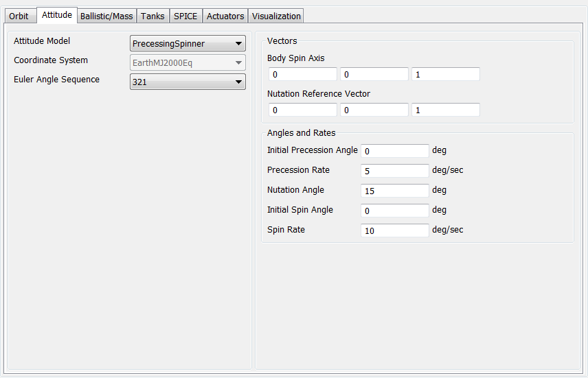 |
The script example below shows how to configure a Spacecraft to have PrecessingSpinner attitude mode where the body z-axis spins with respect to the inertial z-axis. PrecessionRate is set to 1 deg./sec., InitialPrecessionAngle is set to 0 deg./sec., SpinRate is set to 2 deg./sec., InitialSpinAngle is set to 0 deg./sec., and NutationAngle is set to 30 deg.
Create Spacecraft aSat;
GMAT aSat.Attitude = PrecessingSpinner;
GMAT aSat.NutationReferenceVectorX = 0;
GMAT aSat.NutationReferenceVectorY = 0;
GMAT aSat.NutationReferenceVectorZ = 1;
GMAT aSat.BodySpinAxisX = 0;
GMAT aSat.BodySpinAxisY = 0;
GMAT aSat.BodySpinAxisZ = 1;
GMAT aSat.InitialPrecessionAngle = 0;
GMAT aSat.PrecessionRate = 1;
GMAT aSat.NutationAngle = 30;
GMAT aSat.InitialSpinAngle = 0;
GMAT aSat.SpinRate = 2;
Create OrbitView OrbitView1;
OrbitView1.Add = {aSat, Earth}
OrbitView1.ViewPointReference = Earth
OrbitView1.ViewPointVector = [ 30000 0 0 ]
Create Propagator aProp
aProp.MaxStep = 10
BeginMissionSequence
Propagate aProp(aSat) {aSat.ElapsedSecs = 12000.0}
Spacecraft Ballistic/Mass Properties
Spacecraft Ballistic/Mass Properties — The physical properties of the spacecraft
Description
The Spacecraft ballistic and mass properties include the drag and SRP areas and coefficients as well as the spacecraft dry mass. These quantities are used primarily in orbital dynamics modelling. GMAT supports a spherical SRP model, and higher fidelity SRP file option.
See Also: Propagate, Propagator,Spacecraft
Fields
| Field | Description | ||||||||||||
|---|---|---|---|---|---|---|---|---|---|---|---|---|---|
| Cd | The coefficent of drag used to compute the acceleration due to drag.
| ||||||||||||
| Cr | The coefficent of reflectivity used to compute the acceleration due to SRP. A value of zero means the spacecraft is translucent to incoming radiation. A value of 1.0 indicates all radiaion is absorbed and all the force is transmitted to the spacecraft. A value of 2.0 indicates all radiation is reflected and twice the force is transmitted to the spacecraft.
| ||||||||||||
| Drag Area | The area used to compute acceleration due to atmospheric drag.
| ||||||||||||
| DryMass | The dry mass of the Spacecraft (does not include fuel mass).
| ||||||||||||
| SPADSRPFile | Name ( and optionally path information) of SPAD file.
| ||||||||||||
| SPADSRPScaleFactor | Scale factor applied to SRP force when using a SPADModel in the propagation.
| ||||||||||||
| SRPArea | The area used to compute acceleration due to solar radiation pressure.
|
GUI
 |
The GUI interface for ballistic and mass properties is contained on the Ballistic/Mass tab of the Spacecraft resource. You can enter physical properties such as the drag and SRP areas and coefficients and the Spacecraft dry mass which are used in orbital dynamics modelling. GMAT supports a spherical SRP model and a SPAD (Solar Pressure and Aerodynamic Drag) file.
Remarks
Configuring Ballistic and Mass Properties for the Spherical Model
GMAT supports a cannonball model for drag and SRP modeling. In the cannonball model, the area is assumed to be independent of the spacecraft’s orientation with respect to the local velocity vector and the sun vector. For more details on the computation and configuration of drag and SRP models see the Force Model documentation.
Configuring Ballistic and Mass Properties for the SRP File
The (SPAD) SRP file can be used for high fidelity SRP modelling taking into account the physical properties of the spacecraft (shape and reflectivity) and the spacecraft attitude. SPAD stands for Solar Pressure and Aerodynamic Drag. SPAD files are tabulated data that contain the spacecraft area scaled by physical properties like Cr including specular, diffuse, and reflective properties. Data is expressed as a function of azimuth and elevation in the spacecraft body frame. Note: the azimuth and elevation tabulated on the file are the azimuth and elevation of the vector from the Sun, to the Spacecraft, expressed in the body frame. To compute the SRP acceleration, GMAT computes the sun vector’s azimuth and elevation in the spacecraft body frame, and then interpolates the SPAD data using bi-linear interpolation. Note that this formulation results in an attitude dependent SRP acceleration. For more details on the computation and configuration of drag and SRP models see the Force Model documentation.
Caution
When using a SPAD SRP file, GMAT uses the attitude defined on the Spacecraft resource to compute the Sun's positon in the body frame. If the attitude uses a coordinate system with Axes set to ObjectReferenced, and those axes refer back to the Spacecraft orbit state (i.e. VNB or LVLH systems), GMAT holds the attitude constant over a given integration step. In those cases, we recommend carefully choosing a maximum step size small enough to ensure the resulting approximation is acceptable for your application.
A valid SPAD file header, and the first three lines of data are shown below for illustrative purposes. Note, GMAT does not use all values provide on the file and GMAT's usage of SPAD files is described in detail in the table below the example.
Version : 4.21
System : sphericalSat
Analysis Type : Area
Pixel Size : 5
Spacecraft Size : 436.2
Pressure : 1
Center of Mass : (50.9, 184.9, -49)
Current time : May 7, 2009 15:53:38.00
Motion : 1
Name : Azimuth
Method : Step
Minimum : -180
Maximum : 180
Step : 5
Motion : 2
Name : Elevation
Method : Step
Minimum : -90
Maximum : 90
Step : 5
: END
Record count : 2701
AzimuthElevatio Force(X) Force(Y) Force(Z)
degrees degrees m^2 m^2 m^2
------- ------- --------- --------- --------- ---------
-180.00 -90.00 -0.00000000000000 -0.00000000000000 -8.94500000000000
-180.00 -85.00 -0.77960811887780 -0.00000000000000 -8.91096157443066
-180.00 -80.00 -1.55328294923069 -0.00000000000000 -8.80910535069420 A SPAD file contains three sections as illustrated below. Data specifications for items in each section are described in the tables below
 |
A SPAD file header may contain many fields but only a few are used by GMAT as described below. Other fields are ignored.
| Keyword | Required | Description and Supported Values |
|---|---|---|
| Analysis Type | Y | The SPAD software can creates files with Analysis Types of Solar Pressure, Area, and Drag. GMAT only supports the Area option. Example: Analysis Type : Area |
| Pressure | N | SPAD supports the ability to apply a pressure scale factor for SRP files. GMAT does not read this value, but the SRP properties on the file have been scaled by the Pressure factor. The value is usually “1”. However, when not 1, it is possible to apply an SRP scale factor twice, once from the value applied in SPAD, and once from SPADSRPScaleFactor. Care should be taken to ensure that if the desired scale factor was applied during file creation that it is not reapplied in GMAT. |
The SPAD file Motion Data section describes the data contained in the body of the file. The Motion Data fields used by GMAT are described below. Others are ingored.
| Keyword | Required | Description and Supported Values |
|---|---|---|
| Motion | Y | Together, the Motion and Name fields specify the type of data in the first two columns of the body of the file. GMAT currently supports Azimuth and Elevation Motion only (no articulating appendages) and requires that the first Motion is Azimuth and the second Motion is Elevation as shown below. Examples: Motion : 1 Name : Azimuth and Motion : 2 Name : Elevation |
| Name | Y | Together, the Motion and Name fields specify the type of data in the first two columns of the body of the file. GMAT currently supports Azimuth and Elevation Motion only (no articulating appendages) and requires that the first Motion is Azimuth and the second Motion is Elevation as shown below. Examples: Motion : 1 Name : Azimuth and Motion : 2 Name : Elevation |
| Method | Y | The step size in the independent variable. The only supported value is Step. Example: Motion : 1 Method : Step |
| Maximum | Y | The maximum value for an independent variable (Motion Type). For Azimuth, Maximum must be 180, and for Elevation Maximum must be 90. Example: Motion : 1 Name : Azimuth Maximum : 180 Motion : 2 Name : Elevation Maximum : 90 |
| Minimum | Y | The minimum value for an independent variable. (Motion Type). For Azimuth, minimum must be -180, and for Elevation minimum must be -90. Example: Motion : 1 Name : Azimuth Minimum : -180 Motion : 2 Name : Elevation Minimum : -90 |
| Step | Y | The step size for the independent variable (Motion Type). If Step does not divide evenly into the variable range, then errors may occur because the maximum and/or minimum values may not be on the file. Example: Motion : 1 Step : 15 |
| Record count | Y | Record count is the number of rows of data in the data segment. Record count = (360/(Azimuth Step) +1)*(180/(Elevation Step) +1). Example: Record count : 325 |
The SPAD file data block contains tabulated acceleration data as described below.
| Keyword | Required | Description and Supported Values |
|---|---|---|
| Azimuth | Y | Azimuth data column. Must be first column in the data. Units must be degrees. Azimuth is the azimuth of the vector from spacecraft to sun, expressed in the body frame: atan2(ySun,xSun)). Example: AzimuthElevatio degrees degrees ------- ------- -180.00 -90.00 -180.00 -75.00 -180.00 -60.00 |
| Elevation | N | Elevation data column. Must be second column in the data. Units must be degrees. Elevation is the elevation of the vector from spacecraft to sun, expressed in the body frame: atan2(zSun,sqrt(xSun^2 + ySun^2)). Example: AzimuthElevatio degrees degrees ------- ------- -180.00 -90.00 -180.00 -75.00 -180.00 -60.00 |
| Force(*) | N | Area vector columns. Must be columns 3-5 in the data. Quantities must be in base units of m^2,mm^2,cm^2,in^2,ft^2. If another unit is provided in the header lines, an exception is thrown. The area vector is the direction of the resulting SRP force, scaled by area and Cr properties. Example: See code listing above. |
Total Mass Computation
The TotalMass property of a Spacecraft is a read-only property that is the sum of the DryMass value and the sum of the fuel mass in all attached fuel tanks. GMAT’s propagators will not allow the total mass of a spacecraft to be negative. However, GMAT will allow the mass of a ChemicalTank to be negative. See the ChemicalTank documentation for details.
Examples
Configure physical properties for a spherical SRP model.
Create Spacecraft aSpacecraft
aSpacecraft.Cd = 2.2
aSpacecraft.Cr = 1.8
aSpacecraft.DragArea = 40
aSpacecraft.SRPArea = 35
aSpacecraft.DryMass = 2000
Create Propagator aPropagator
BeginMissionSequence
Propagate aPropagator(aSpacecraft, {aSpacecraft.ElapsedSecs = 600})Configure a SPAD SRP model.
Create Spacecraft aSpacecraft;
aSpacecraft.DryMass = 2000
aSpacecraft.SPADSRPFile = '..\data\vehicle\spad\SphericalModel.spo'
aSpacecraft.SPADSRPScaleFactor = 1;
Create ForceModel aFM;
aFM.SRP = On;
aFM.SRP.SRPModel = SPADFile
Create Propagator aProp;
aProp.FM = aFM;
BeginMissionSequence
Propagate aProp(aSpacecraft) {aSpacecraft.ElapsedDays = 0.2}Spacecraft Epoch
Spacecraft Epoch — The spacecraft epoch
Description
The epoch of a Spacecraft is the time and date corresponding to the specified orbit state. See the Spacecraft Orbit State section for interactions between the epoch, coordinate system, and spacecraft state fields.
See Also: Spacecraft
Caution
GMAT’s Modified Julian Date (MJD) format differs from that of other software. The Modified Julian format is a constant offset from the full Julian date (JD):
GMAT uses a non-standard offset, as shown in the following table.
| Epoch Type | GMAT | common |
| reference epoch | 05 Jan 1941 12:00:00.000 | 17 Nov 1858 00:00:00.000 |
| Modified Julian offset | 2430000.0 | 2400000.5 |
Fields
| Field | Description | ||||||||||||
|---|---|---|---|---|---|---|---|---|---|---|---|---|---|
| DateFormat | The time system and format of the Epoch field. In the GUI, this field is called EpochFormat.
| ||||||||||||
| Epoch | The time and date corresponding to the specified orbit state.
| ||||||||||||
| A1ModJulian | The Spacecraft orbit epoch in the A.1 system and the Modified Julian format.
| ||||||||||||
| Epoch.A1ModJulian | The spacecraft orbit epoch in the A.1 system and the Modified Julian format.
| ||||||||||||
| CurrA1MJD | This field has been deprecated and should no longer be used. The current epoch in the A1ModJulian format. This field can only be used within the mission sequence.
| ||||||||||||
| A1Gregorian | The Spacecraft orbit epoch in the A.1 system and the Gregorian format.
| ||||||||||||
| TAIGregorian | The Spacecraft orbit epoch in the TAI system and the Gregorian format.
| ||||||||||||
| TAIModJulian | The Spacecraft orbit epoch in the TAI system and the Modified Julian format.
| ||||||||||||
| TDBGregorian | The Spacecraft orbit epoch in the TDB system and the Gregorian format.
| ||||||||||||
| TDBModJulian | The Spacecraft orbit epoch in the TDB system and the Modified Julian format.
| ||||||||||||
| TTGregorian | The Spacecraft orbit epoch in the TT system and the Gregorian format.
| ||||||||||||
| TTModJulian | The Spacecraft orbit epoch in the TT system and the Modified Julian format.
| ||||||||||||
| UTCGregorian | The Spacecraft orbit epoch in the UTC system and the Gregorian format.
| ||||||||||||
| UTCModJulian | The Spacecraft orbit epoch in the UTC system and the Modified Julian format.
| ||||||||||||
| Epoch.A1Gregorian | The Spacecraft orbit epoch in the A.1 system and the Gregorian format.
| ||||||||||||
| Epoch.TAIGregorian | The Spacecraft orbit epoch in the TAI system and the Gregorian format.
| ||||||||||||
| Epoch.TAIModJulian | The Spacecraft orbit epoch in the TAI system and the Modified Julian format.
| ||||||||||||
| Epoch.TDBGregorian | The Spacecraft orbit epoch in the TDB system and the Gregorian format.
| ||||||||||||
| Epoch.TDBModJulian | The Spacecraftorbit epoch in the TDB system and the Modified Julian format.
| ||||||||||||
| Epoch.TTGregorian | The Spacecraft orbit epoch in the TT system and the Gregorian format.
| ||||||||||||
| Epoch.TTModJulian | The Spacecraftorbit epoch in the TT system and the Modified Julian format.
| ||||||||||||
| Epoch.UTCGregorian | The Spacecraftorbit epoch in the UTC system and the Gregorian format.
| ||||||||||||
| Epoch.UTCModJulian | The Spacecraft orbit epoch in the UTC system and the Modified Julian format.
|
GUI
A change in EpochFormat causes an immediate update to Epoch to reflect the chosen time system and format.
Remarks
GMAT supports five time systems or scales and two formats:
| A.1 | USNO atomic time; GMAT’s internal time system |
| TAI | International Atomic Time |
| TDB | Barycentric Dynamical Time |
| TT | Terrestrial Time |
| UTC | Coordinated Universal Time |
| Gregorian | Text with the following format:
| ||||||||||||||
| Modified Julian | Floating-point number of days from a reference epoch. In GMAT, the reference epoch is 05 Jan 1941 12:00:00.000 (JD 2430000.0). |
The epoch can be set in multiple ways. The default method is to set the DateFormat field to the desired time system and format, then set the Epoch field to the desired epoch. This method cannot be used to get the epoch value, such as on the right-hand side of an assignment statement.
aSat.DateFormat = UTCGregorian
aSat.Epoch = '18 May 2012 12:00:00.000'An alternate method is to specify the DateFormat in the parameter name. This method works in both “get” and “set” modes.
aSat.Epoch.UTCGregorian = '18 May 2012 12:00:00.000'
Report aReport aSat.Epoch.UTCGregorianA third method can be used in “get” mode everywhere, but in “set” mode only in the mission sequence (i.e. after the BeginMissionSequence command).
aSat.UTCGregorian = '18 May 2012 12:00:00.000'
Report aReport aSat.UTCGregorianGMAT uses the A.1 time system in the Modified Julian format for its internal calculations. The system converts all other systems and formats on input and again at output.
Leap Seconds
When converting to and from the UTC time system, GMAT includes
leap seconds as appropriate, according to the
tai-utc.dat data file from the IERS. This file
contains the conversion between TAI and UTC, including all leap seconds
that have been added or announced.
GMAT applies the leap second as the last second before the date
listed in the tai-utc.dat file, which historically
has been either January 1 or July 1. In the Gregorian date format, the
leap second appears as a “60th second”: for
example, “31 Dec 2008 23:59:60.000”. From the International Astronomical
Union's Standards of Fundamental Astronomy "SOFA Time Scale and Calendar
Tools" documentation: "Note that UTC has to be expressed as
hours, minutes and seconds (or at least in seconds in a given day) if
leap seconds are to be taken into account in the correct
manner. In particular, it is inappropriate to express UTC as
a Julian Date, because there will be an ambiguity during a leap second
so that for example 1994 June 30 23:59:60:0 and 1994 July 1 00:00:00:0
would both come out as MJD 49534.00000 and because subtracting two such
JDs would not yield the correct interval in cases that contain leap
seconds." For this reason, we discourage use of the UTC modified Julian
system, and recommend using UTC Gregorian when a UTC time system is
required.
For epochs prior to the first entry in the leap-second file, the UTC and TAI time systems are considered identical (i.e. zero leap seconds are added). For epochs after the last entry, the leap second count from the last entry is used.
The tai-utc.dat file is periodically updated
by the IERS when new leap seconds are announced. The latest version of
this file can always be found at http://maia.usno.navy.mil/ser7/tai-utc.dat.
To replace it, download the latest version and replace GMAT’s file in
the location
<GMAT>/data/time/tai-utc.dat<GMAT>
Examples
Setting the epoch for propagation
Create Spacecraft aSat
aSat.DateFormat = TAIModJulian
aSat.Epoch = 25562.5
Create ForceModel aFM
Create Propagator aProp
aProp.FM = aFM
BeginMissionSequence
Propagate aProp(aSat) {aSat.ElapsedDays = 1}Plotting and reporting the epoch (syntax #1)
Create Spacecraft aSat
aSat.DateFormat = A1Gregorian
aSat.Epoch = '12 Jul 2015 08:21:45.921'
Create XYPlot aPlot
aPlot.XVariable = aSat.UTCModJulian
aPlot.YVariables = aSat.Earth.Altitude
Create Report aReport
aReport.Add = {aSat.UTCGregorian, aSat.EarthMJ2000Eq.ECC}Plotting and reporting the epoch (syntax #2)
Create Spacecraft aSat
aSat.DateFormat = TTGregorian
aSat.Epoch = '01 Dec 1978 00:00:00.000'
Create XYPlot aPlot
aPlot.XVariable = aSat.Epoch.TTModJulian
aPlot.YVariables = aSat.Earth.RMAG
Create Report aReport
aReport.Add = {aSat.Epoch.A1Gregorian, aSat.Earth.RMAG}Spacecraft Hardware
Spacecraft Hardware — Add hardware to a spacecraft
Description
The hardware fields allow you to attach pre-configured hardware models to a spacecraft. Current models include ChemicalTank, ChemicalThruster ,ElectricTank, and ElectricThruster. Before you attach a hardware model to a Spacecraft, you must first create the model.
See Also: ChemicalTank, ChemicalThruster,ElectricTank, ElectricThruster
Fields
| Field | Description | ||||||||||||
|---|---|---|---|---|---|---|---|---|---|---|---|---|---|
| Tanks | This field is used to attach
FuelTank(s) to a
Spacecraft. In a script command, an empty
list, e.g.,
| ||||||||||||
| Thrusters | This field is used to attach
Thruster(s) to a
Spacecraft. In a script command, an empty
list, e.g.,
|
GUI
There are two spacecraft hardware items, the FuelTank and the Thruster, that can be attached to a Spacecraft. Here, we describe the method used to create and then attach these items to a Spacecraft. For details on how to configure the FuelTank and Thruster resources, see the help for the individual hardware item. Note the discussion below uses a chemical system as an example but applies equally to electric systems.
As shown below, to add a ChemicalTank to your script, highlight the Hardware resource and then right click to add a ChemicalTank.
 |
To add a Thruster to your script, highlight the Hardware resource and then right click to add a Thruster.
 |
Thus far, we have created both a ChemicalTank and a ChemicalThruster. Next, we attach both the ChemicalTank and the ChemicalThruster to a particular Spacecraft. To do this, double click on the desired Spacecraft under the Spacecraft resource to bring up the associated GUI panel. Then click on the Tanks tab to bring up the following GUI display.
| 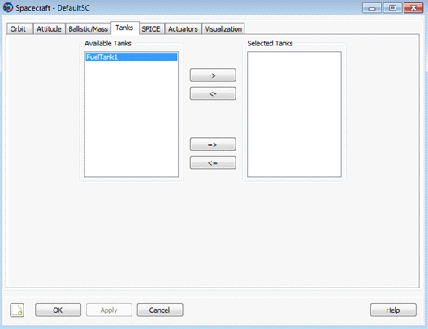 |
Next, select the desired ChemicalTank and use the right arrow button to attach the ChemicalTank to the Spacecraft as shown below. Then click the button.
 |
Similarly, to attach a ChemicalThruster to a Spacecraft, double click on the desired Spacecraft under the Spacecraft resource and then select the Actuators tab. Then select the desired ChemicalThruster and use the right arrow to attach the ChemicalThruster to the Spacecraft as shown below. Finally, click the button.
 |
Remarks
To use a Thruster to apply a finite burn to a Spacecraft, additional steps are required. For example, when you create the ChemicalThruster resource, you have to associate a ChemicalTank with the ChemicalThruster. For details on this and related matters, see the help for the ChemicalTank, ChemicalThruster, and FiniteBurn resources.
Examples
Create a default Spacecraft. Create ChemicalTank and ChemicalThruster resources and attach them to the Spacecraft.
% Create default Spacecraft, ChemicalTank, and Thruster Resources
Create Spacecraft DefaultSC
Create ChemicalTank FuelTank1
Create ChemicalThruster Thruster1
% Attach ChemicalTank and Thruster to the spacecraft
DefaultSC.Thrusters = {Thruster1}
DefaultSC.Tanks = {FuelTank1}
BeginMissionSequence Spacecraft Navigation
Spacecraft Navigation — There are a number of Spacecraft fields that are used exclusively to support GMAT's navigation capability.
Description
When using GMAT's navigation capabilities, certain Spacecraft parameters can be "solved-for." As discussed in the Spacecraft Ballistic/Mass Properties section, the Spacecraft ballistic and mass properties include the coefficient of reflectivity, Cr, and the coefficient of drag, Cd. As discussed in the Spacecraft Orbit State section, you can specify the CartesianState, i.e., the X, Y, Z position (km), and the Vx, Vy, Vz velocity (km/s) of a Spacecraft. As part of GMAT's navigation capability, GMAT can ingest measurements and estimate ("solve-for") values for Cr, Cd, and CartesianState.
See Also: BatchEstimatorInv
Fields
| Field | Description | ||||||||||||
|---|---|---|---|---|---|---|---|---|---|---|---|---|---|
| AddHardware | List of Antenna, Transmitter, Receiver, and Transponder objects attached to a Spacecraft
| ||||||||||||
| CdSigma | Standard deviation of the coefficient of
reflectivity, Cd. This field is only used if
the UseInitialCovariance field of the
BatchEstimatorInv resource is set to
| ||||||||||||
| CrSigma | Standard deviation of the coefficient of
reflectivity, Cr. This field is only used if
the UseInitialCovariance field of the
BatchEstimatorInv resource is set to
| ||||||||||||
| EstimationStateType | Choice of 6-element state type to be solved for.
Currently,
| ||||||||||||
| OrbitErrorCovariance | Cartesian State 6x6 error covariance matrix. This
field is only used if the
UseInitialCovariance of the
BatchEstimatorInv resource is set to
| ||||||||||||
| SolveFors | List of fields to be solved for. Currently, if anything is solved for, then CartesianState must be included as a solve-for. For example, Cr cannot be the only parameter solved for.
|
Examples
Solve for Cr and the spacecraft Cartesian state.
Create Spacecraft Sat
Create BatchEstimatorInv bat
Sat.SolveFors = {CartesianState, Cr}
%User must create a TrackingFileSet
%and set up bat appropriately
BeginMissionSequence
RunEstimator batSolve for Cd and the spacecraft Cartesian state assuming that the a priori information is included in the estimation state vector.
Create Spacecraft Sat
Sat.SolveFors = {CartesianState, Cd}
Create BatchEstimatorInv bat
bat.UseInitialCovariance= True
%User must create a TrackingFileSet
%and set up bat appropriately
Create Array Initial_6x6_covariance[6,6]
BeginMissionSequence
Initial_6x6_covariance = ...
diag([1e-6 1e70 1e70 1e70 1e70 1e70]) %X pos known very well
Sat.OrbitErrorCovariance = Initial_6x6_covariance
Sat.CrSigma = 1e-6 %Cr known very well
RunEstimator batSpacecraft Orbit State
Spacecraft Orbit State — The orbital initial conditions
Description
GMAT supports a suite of state types for defining the orbital state, including Cartesian and Keplerian, among others. In addtion, you can define the orbital state in different coordinate systems, for example EarthMJ2000Eq and EarthFixed. GMAT provides three general state types that can be used with any coordinate system: , SphericalAZFPA, and SphericalRADEC. There are three additional state types that can be used with coordinate systems centered at a celestial body: Keplerian, ModifiedKeplerian, and Equinoctial.
In the section called “Remarks” below, we describe each state type in detail including state-type definitions, singularities, and how the state fields interact with the CoordinateSystem and Epoch fields. There are some limitations when setting the orbital state during initialization, which are discussed in the section called “Remarks”. We also include examples for setting each state type in commonly used coordinate systems.
See Also: Spacecraft, Propagator, and Spacecraft Epoch
Fields
| Field | Description | ||||||||||||
|---|---|---|---|---|---|---|---|---|---|---|---|---|---|
| AltEquinoctialP | A measure of the orientation of the orbit. AltEquinoctialP and AltEquinoctialQ together govern how an orbit is oriented. AltEquinotialP = sin(INC/2)*sin(RAAN).
| ||||||||||||
| AltEquinoctialQ | A measure of the orientation of the orbit. AltEquinoctialP and AltEquinoctialQ together govern how an orbit is oriented. AltEquinotialP = sin(INC/2)*cos(RAAN).
| ||||||||||||
| AOP | The orbital argument of periapsis expressed in the coordinate system chosen in the CoordinateSystem field.
| ||||||||||||
| AZI | The orbital velocity azimuth expressed in the coordinate system chosen in the CoordinateSystem field.
| ||||||||||||
BrouwerLongAOP BrouwerShortAOP | Brouwer-Lyddane long-term averaged (short-term averaged) mean argument of periapsis.
| ||||||||||||
BrouwerLongECC BrouwerShortECC | Brouwer-Lyddane long-term averaged (short-term averaged) mean eccentricity.
| ||||||||||||
BrouwerLongINC BrouwerShortINC | Brouwer-Lyddane long-term averaged (short-term averaged) mean inclination.
| ||||||||||||
BrouwerLongMA BrouwerShortMA | Brouwer-Lyddane long-term averaged (short-term averaged) mean MA (mean anomaly).
| ||||||||||||
BrouwerLongRAAN BrouwerShortRAAN | Brouwer-Lyddane long-term averaged (short-term averaged) mean RAAN (right ascension of the ascending node).
| ||||||||||||
BrouwerLongSMA BrouwerShortSMA | Long-term averaged (short-term averaged) mean semi-major axis.
| ||||||||||||
| CoordinateSystem | The coordinate system with respect to which the orbital state is defined. The CoordinateSystem field is dependent upon the DisplayStateType field. If the coordinate system chosen by the user does not have a gravitational body at the origin, then the state types Keplerian, ModifiedKeplerian, and Equinoctial are not permitted.
| ||||||||||||
| DEC | The declination of the orbital position expressed in the coordinate system chosen in the CoordinateSystem field.
| ||||||||||||
| DECV | The declination of orbital velocity expressed in the coordinate system chosen in the CoordinateSystem field.
| ||||||||||||
| Delaunayg | Delaunay "g" element, identical to AOP, expressed in the coordinate system chosen in the CoordinateSystem field.
| ||||||||||||
| DelaunayG | Delaunay "G" element, the magnitude of the orbital angular momentum, expressed in the coordinate system chosen in the CoordinateSystem field.
| ||||||||||||
| Delaunayh | Delaunay "h" element, identical to RAAN, expressed in the coordinate system chosen in the CoordinateSystem field.
| ||||||||||||
| DelaunayH | Delaunay "H" element, the z-component of the orbital angular momentum vector, expressed in the coordinate system chosen in the CoordinateSystem field.
| ||||||||||||
| Delaunayl | Delaunay "ℓ" element, identical to the mean anomaly, expressed in the coordinate system chosen in the CoordinateSystem field.
| ||||||||||||
| DelaunayL | Delaunay "L" element, related to the two-body orbital energy, expressed in the coordinate system chosen in the CoordinateSystem field.
| ||||||||||||
| DisplayStateType | The orbital state type displayed in the GUI. Allowed state types are dependent upon the selection of CoordinateSystem. For example, if the coordinate system does not have a celestial body at the origin, Keplerian, ModifiedKeplerian, and Equinoctial are not allowed options for DisplayStateType.
| ||||||||||||
| ECC | The orbital eccentricity expressed in the coordinate system chosen in the CoordinateSystem field.
| ||||||||||||
| EquinoctialH | A measure of the orbital eccentricity and argument of periapsis. EquinoctialH and EquinoctialK together govern how elliptic an orbit is and where the periapsis is located. EquinotialH = ECC * sin(AOP + RAAN) .
| ||||||||||||
| EquinoctialK | A measure of the orbital eccentricity and argument of periapsis. EquinoctialH and EquinoctialK together govern how elliptic an orbit is and where the periapsis is located. EquinotialK = ECC * cos(AOP + RAAN) .
| ||||||||||||
| EquinoctialP | A measure of the orientation of the orbit. EquinoctialP and EquinoctialQ together govern how an orbit is oriented. EquinotialP = tan(INC/2)*sin(RAAN).
| ||||||||||||
| EquinoctialQ | A measure of the orientation of the orbit. EquinoctialP and EquinoctialQ together govern how an orbit is oriented. EquinotialQ = tan(INC/2)*cos(RAAN).
| ||||||||||||
| FPA | The orbital flight path angle expressed in the coordinate system chosen in the CoordinateSystem field.
| ||||||||||||
| Id | The spacecraft Id used in tracking data files. This field is only used for EstimationPlugin protype functionality.
| ||||||||||||
| INC | The orbital inclination expressed in the coordinate system chosen in the CoordinateSystem field.
| ||||||||||||
IncomingBVAZI OutgoingBVAZI | IncomingBVAZI/OutgoingBVAZI is the B-vector azimuth at infinity of the incoming/outgoing asymptote measured counter-clockwise from south. If C3Energy < 0 the apsides vector is substituted for the outgoing/incoming asymptote.
| ||||||||||||
IncomingC3Energy OutgoingC3Energy | C3 energy. C3Energy = -mu/SMA. IncomingC3Energy/OutgoingC3Energy differ only in that they are associated with the IncomingAsymptote and OutgoingAsymptote state representations, respectively.
| ||||||||||||
IncomingDHA OutgoingDHA | IncomingDHA/OutgoingDHA is the declination of the incoming/outgoing asymptote. If C3Energy < 0 the apsides vector is substituted for the incoming/outgoing asymptote..
| ||||||||||||
IncomingRadPer OutgoingRadPer | The orbital radius of periapsis. The radius of periapsis is the minimum distance (osculating) between the spacecraft and celestial body at the origin of coordinate system. IncomingRadPer/OutgoingRadPer differ from RadPer only in that they are associated with the IncomingAsymptote and OutgoingAsymptote state representations, respectively.
| ||||||||||||
IncomingRHA OutgoingRHA | IncomingRHA/OutgoingRHA is the right ascension of the incoming/outgoing asymptote. If C3Energy < 0 the apsides vector is substituted for the incoming/outgoing asymptote.
| ||||||||||||
| MLONG | A measure of the location of the spacecraft in it's orbit. MLONG = AOP + RAAN + MA.
| ||||||||||||
| ModEquinoctialF | Components of the eccentricity vector (with ModEquinoctialG). The eccentricity vector has a magnitude equal to the eccentricity and it points from the central body to perigee. ModEquinoctialF = ECC * cos(AOP+RAAN)
| ||||||||||||
| ModEquinoctialG | Components of eccentricity vector (with ModEquinoctialF). ModEquinoctialG = ECC * sin(AOP+RAAN)
| ||||||||||||
| ModEquinoctialH | Identical to EquinoctialQ.
| ||||||||||||
| ModEquinoctialK | Idential to EquinoctialP.
| ||||||||||||
| NAIFId | The spacecraft Id used in SPICE kernels.
| ||||||||||||
| OrbitSpiceKernelName | SPK Kernels for spacecraft orbit. SPK orbit kernels have extension ".BSP". This field cannot be set in the Mission Sequence.
| ||||||||||||
| PlanetodeticAZI | The orbital velocity azimuth expressed in the coordinate system chosen in the CoordinateSystem field. Unlike the AZI field, PlanetodeticAZI is associated with the Planetodetic state representation, which is only valid for coordinate systems with BodyFixed axes.
| ||||||||||||
| PlanetodeticHFPA | The orbital horizontal flight path angle expressed in the coordinate system chosen in the CoordinateSystem field. PlanetodeticHFPA is only valid for coordinate systems with BodyFixed axes.
| ||||||||||||
| PlanetodeticLAT | The planetodetic latitude expressed in the coordinate system chosen in the CoordinateSystem field. This field is only valid for coordinate systems with BodyFixed axes.
| ||||||||||||
| PlanetodeticLON | The planetodetic longitude expressed in the coordinate system chosen in the CoordinateSystem field. This field is only valid for coordinate systems with BodyFixed axes.
| ||||||||||||
| PlanetodeticRMAG | The magnitude of the orbital position vector expressed in the coordinate system chosen in the CoordinateSystem field. Unlike the RMAG field, PlanetodeticRMAG is associated with the Planetodetic state representation, which is only valid for coordinate systems with BodyFixed axes.
| ||||||||||||
| PlanetodeticVMAG | The magnitude of the orbital velocity vector expressed in the coordinate system chosen in the CoordinateSystem field. Unlike the VMAG field, PlanetodeticVMAG is associated with the Planetodetic state representation, which is only valid for coordinate systems with BodyFixed axes.
| ||||||||||||
| RA | The right ascension of the orbital position expressed in the coordinate system chosen in the CoordinateSystem field.
| ||||||||||||
| RAAN | The orbital right ascension of the ascending node expressed in the coordinate system chosen in the CoordinateSystem field.
| ||||||||||||
| RadApo | The orbital radius of apoapsis expressed in the coordinate system chosen in the CoordinateSystem field. The radius of apoapsis is the maximum distance (osculating) between the Spacecraft and celestial body at the origin of CoordinateSystem.
| ||||||||||||
| RadPer | The orbital radius of periapsis expressed in the coordinate system chosen in the CoordinateSystem field. The radius of periapsis is the minimum distance (osculating) between the Spacecraft and celestial body at the origin of CoordinateSystem.
| ||||||||||||
| RAV | The right ascension of orbital velocity expressed in the coordinate system chosen in the CoordinateSystem field.
| ||||||||||||
| RMAG | The magnitude of the orbital position vector expressed in the coordinate system chosen in the CoordinateSystem field.
| ||||||||||||
| SemilatusRectum | Magnitude of the position vector when at true anomaly of 90 deg.
| ||||||||||||
| SMA | The orbital semi-major axis expressed in the coordinate system chosen in the CoordinateSystem field.
| ||||||||||||
| TA | The orbital true anomaly expressed in the coordinate system chosen in the CoordinateSystem field.
| ||||||||||||
| TLONG | True longitude of the osculating orbit. TLONG = RAAN + AOP + TA
| ||||||||||||
| VMAG | The magnitude of the orbital velocity vector expressed in the coordinate system chosen in the CoordinateSystem field.
| ||||||||||||
| VX | The x-component of the Spacecraft velocity with respect to the coordinate system chosen in the spacecraft's CoordinateSystem field.
| ||||||||||||
| VY | The y-component of the Spacecraft velocity with respect to the coordinate system chosen in the spacecraft's CoordinateSystem field.
| ||||||||||||
| VZ | The z-component of the Spacecraft velocity with respect to the coordinate system chosen in the spacecraft's CoordinateSystem field.
| ||||||||||||
| X | The x-component of the Spacecraft position with respect to the coordinate system chosen in the spacecraft's CoordinateSystem field.
| ||||||||||||
| Y | The y-component of the Spacecraft position with respect to the coordinate system chosen in the spacecraft's CoordinateSystem field.
| ||||||||||||
| Z | The z-component of the Spacecraft position with respect to the coordinate system chosen in the spacecraft's CoordinateSystem field.
|
GUI
 |
The Spacecraft orbit state dialog box allows you to set the epoch, coordinate system, and state type values for the Spacecraft orbital state. When you specify an orbital state, you define the state in the representation selected in the StateType menu, with respect to the coordinate system specified in the CoordinateSystem menu, at the epoch defined in the Epoch menu. If the selected CoordinateSystem is time varying, the epoch of the coordinate system is defined by the Epoch field, and changing the epoch changes the inertial representation of the orbital state.
A change in Epoch Format causes an immediate update to Epoch to reflect the chosen time system and format.
The Keplerian, ModifiedKeplerian, and Equinoctial state types cannot be computed if the CoordinateSystem does not have a central body at the origin, or if the CoordinateSystem references the current spacecraft (resulting in a circular reference). For example, if you have selected the Keplerian state type, coordinate systems for which the Keplerian elements cannot be computed do not appear in the CoordinateSystem menu. Similarly, if you have selected a CoordinateSystem that does not have a celestial body at the origin, Keplerian-based state types will not appear as options in the menu. The Planetodetic state type cannot be selected untill the CoordinateSystem has BodyFixed axes.
Remarks
Cartesian State
The Cartesian state is composed of the position and velocity components expressed with respect to the selected CoordinateSystem.
Keplerian and Modified Keplerian State Types
The Keplerian and ModifiedKeplerian state types use the osculating Keplerian orbital elements with respect to the selected CoordinateSystem. To use either the Keplerian or ModifiedKeplerian state type, the Spacecraft’s coordinate system must have a central body at the origin. The two representations differ in how the orbit size and shape are defined. The Keplerian state type is composed of the following elements: SMA, ECC, INC, RAAN, AOP, and TA. The ModifiedKeplerian state type is composed of the following elements: RadApo, RadPer, INC, RAAN, AOP, and TA. The tables and figures below describe each Keplerian state element in detail including singularities.
Geometry of the Keplerian Elements
| Name | Description |
|---|---|
| SMA | SMA contains information on the type and size of an orbit. If SMA > 0 the orbit is elliptic. If SMA <0 the orbit is hyperbolic. SMA is infinite for parabolic orbits. |
| ECC | ECC contains information on the shape of an orbit. If ECC = 0, then the orbit is circular. If 0 < ECC < 1, the orbit is elliptical. If , ECC = 1 the orbit is parabolic. If ECC > 1 then the orbit is hyperbolic. |
| INC | INC is the angle between the orbit angular momentum vector and the z-axis. If INC < 90 deg., then the orbit is prograde. If INC > 90 deg, then the orbit is retrograde |
| RAAN | RAAN is defined as the angle between x-axis and the node vector measured counterclockwise. The node vector is defined as the cross product of the z-axis and orbit angular momentum vector. RAAN is undefined for equatorial orbits. |
| AOP | AOP is the angle between a vector pointing at periapsis and a vector pointing in the direction of the line of nodes. AOP is undefined for circular orbits. |
| TA | TA is defined as the angle between a vector pointing at periapsis and a vector pointing at the spacecraft. TA is undefined for circular orbits. |
 |
The Keplerian and ModifiedKeplerian state types have several singularities. The table below describes the different singularities and how each is handled in the state conversion algorithms.
| Singularity | Comments and Behavior |
|---|---|
| ECC = 1 | SMA is infinite and cannot be used to define the size of the orbit. GMAT requires ECC < 0.9999999 or ECC > 1.0000001 when setting ECC or when performing conversions. For transformations performed near these limits, loss of precision may occur. |
| ECC = 0 | AOP is undefined. If ECC <= 1e-11, GMAT sets AOP to zero in the conversion from Cartesian to Keplerian/ModKeplerian and includes all orbital-plane angular displacement in the true anomaly. |
| SMA = 0 | Results in a singular conic section. GMAT requires |SMA| > 1 meter when inputting SMA. |
| SMA = INF | SMA is infinite and another parameter is required to capture the size of the orbit. Keplerian elements are not supported. |
| INC = 0 | RAAN is undefined. If INC < 6e-10, GMAT sets RAAN to 0 in the conversion from Cartesian to Keplerian/ModKeplerian. Then, if ECC < 1e-11, AOP is set to 0 and GMAT includes all angular displacement between the x-axis and the spacecraft in the true anomaly. If ECC ≥ 1e-11, then AOP is computed as the angle between the eccentricity vector and the x-axis. |
| INC = 180 | RAAN is undefined. If INC > (180 - 6e-10), GMAT sets RAAN to 0 in the conversion from Cartesian to Keplerian/ModKeplerian. Then, if ECC < 1e-11, AOP is set to 0 and GMAT includes all angular displacement between the x-axis and the spacecraft in the true anomaly. If ECC ≥ 1e-11, then AOP is computed as the angle between the eccentricity vector and the x-axis. |
| RadPer = 0 | Singular conic section. GMAT requires RadPer > 1 meter in state conversions. |
| RadApo = 0 | Singular conic section. GMAT requires abs(RadApo) > 1 meter in state conversions. |
Delaunay State Type
The conversion between Delaunay and Cartesian is performed passing through classical Keplerian state. Therefore, Delaunay state cannot represent parabolic orbits. Also, the Delaunay state cannot represent hyperbolic orbits because of the definition of DelaunayL, which is not a real value when SMA is negative. The table below describes the elements of the Delaunay state.
| Element | Description |
|---|---|
| Delaunayl | The mean anomaly. It is related to uniform angular motion on a circle of radius SMA. |
| Delaunayg | See “Keplerian State” section, AOP |
| Delaunayh | See “Keplerian State” section, RAAN |
| DelaunayL | Related to the two-body orbital energy. DelaunayL = sqrt(mu*SMA) |
| DelaunayG | Magnitude of the orbital angular momentum vector. DelaunayG = DelaunayL*sqrt(1-ECC^2) |
| DelaunayH | The K component of the orbital angular momentum. DelaunayH = DelaunayG * cos(INC) |
Singularities in the Delaunay Elements
Singularities in the Delaunay elements is the same as the Keplerian elements, because it uses the Keplerian elements during conversion. See “Keplerian State” section. The table below shows the additional singularities regarding the Delaunay state type.
| Element | Description |
|---|---|
| ECC > 1 | DelaunayL is not real for hyperbolic orbits by its definition. |
Brouwer-Lyddane Mean State Type
The BrouwerMeanShort state represents short-term averaged mean motion under low-order zonal harmonics (i.e. J2-J5). Likewise, BrouwerMeanLong state represents long-term averaged mean motion under low-order zonal harmonics (i.e. J2-J5). GMAT uses JGM-2 zonal coefficients in Brouwer Mean states algorithms. Both are singular for near parabolic or hyperbolic orbits. To use BrouwerMeanShort/BrouwerMeanLong state type in GMAT, the central body must be the Earth. If the central body is the Earth, GMAT can calculate BrouwerMeanShort/BrouwerMeanLong state from the osculating state (Cartesian, Keplerian, etc.) and vice-versa.
| Element | Description |
|---|---|
BrouwerLongAOP BrouwerShortAOP | Brouwer-Lyddane long-term averaged (short-term averaged) mean argument of periapsis. |
BrouwerLongMA BrouwerShortMA | Brouwer-Lyddane long-term averaged (short-term averaged) mean MA (mean anomaly). |
BrouwerLongECC BrouwerShortECC | Brouwer-Lyddane long-term averaged (short-term averaged) mean eccentricity. |
BrouwerLongINC BrouwerShortINC | Brouwer-Lyddane long-term averaged (short-term averaged) mean inclination. |
BrouwerLongRAAN BrouwerShortRAAN | Brouwer-Lyddane long-term averaged (short-term averaged) mean RAAN (right ascension of the ascending node). |
BrouwerLongSMA BrouwerShortSMA | Long-term averaged (short-term averaged) mean semi-major axis. |
Singularities in the Brouwer-Lyddane Mean Elements
The table below shows the characteristics of singularities regarding BrouwerMeanShort/BrouwerMeanLong state and the implemented method to handle the singularities in GMAT state conversion algorithms. Note that because Brouwer-Lyddane mean elements involve an iterative solution, loss of precision may occur near singularities.
| Element | Description |
|---|---|
| BrouwerSMA < 3000/(1-BrouwerECC) | Because Brouwer’s formulation based on Earth’s zonal harmonics, BrouwerMeanShort and BrouwerMeanLong cannot address orbits with mean perigee distance is smaller than Earth’s radius, 3000 km because of numerical instability. |
| BrouwerLongINC= 63, BrouwerLongINC = 117 | If given BrouwerLongINC (long-term averaged INC only) is close to ic= 63 deg. or 117 deg., the algorithm is unstable because of singular terms (non-zero imaginary components). Thus, GMAT cannot calculate osculating elements. |
| BrouwerLongECC = 0, BrouwerLongECC ≥ 1 | If BrouwerECC is larger than 0.9, or BrouwerECC is smaller than 1E-7, it has been reported that Cartesian to BrouwerMeanLong state does not converge statistically. For these cases, GMAT gives a warning message with the current conversion error. |
Spherical State Types
The SphericalAZFPA and SphericalRADEC state types are composed of the polar coordinates of the spacecraft state expressed with respect to the selected CoordinateSystem. The two spherical representations differ in how the velocity is defined. The SphericalRADEC state type is composed of the following elements: RMAG, RA, DEC, VMAG, RAV, and DECV. The SphericalAZFPA state type is composed of the following elements: RMAG, RA, DEC, VMAG, AZI and FPA. The tables and figures below describe each spherical state element in detail including singularities.
Geometry of the Spherical Elements
| Name | Description |
|---|---|
| RMAG | The magnitude of the position vector. |
| RA | The right ascension which is the angle between the projection of the position vector into the xy-plane and the x-axis measured counterclockwise. |
| DEC | The declination which is the angle between tjhe position vector and the xy-plane. |
| VMAG | The magnitude of the velocity vector. |
| FPA | The vertical flight path angle. The angle measured from a plane normal to the postion vector to the velocity vector , measured in the plane formed by position vector and velocity vector. |
| AZI | The flight path azimuth. The angle measured from the vector perpendicular to the position vector and pointing north, to the projection of the velocity vector, into a plane normal to the position vector. |
| RAV | The right ascension of velocity. The angle between the projection of the velocity vector into the xy-plane and the x-axis measured counterclockwise. |
| DECV | The flight path azimuth. The angle between the velocity vector and the xy-plane. |
Singularities in the Spherical Elements
| Singularity | Comments and Behavior |
|---|---|
| RMAG = 0 | Results in a singular conic section: declination and flight path angle are undefined. GMAT will not allow transformations if RMAG < 1e-10. For RMAG values greater than, but near 1e-10, loss of precision may occur in transformations. |
| VMAG = 0 | Results in a singular conic section: velocity declination and flight path angle are undefined. GMAT will not allow transformations if VMAG < 1e-10.For VMAG values greater than, but near 1e-10, loss of precision may occur in transformations. |
Planetodetic State Type
The Planetodetic state type is useful for specifying states relative to the surface of a central body. It is very similar to the spherical state types, but uses the central body's flattening in its definition. To use the Planetodetic state type, the spacecraft’s coordinate system must have a celestial body at the origin, and must have BodyFixed axes.
| Element | Description |
|---|---|
| PlanetodeticRMAG | Magnitude of the orbital radius vector. |
| PlanetodeticLON | Planetodetic longitude. |
| PlanetodeticLAT | Planetodetic latitude, using the Flattening of the central body. |
| PlanetodeticVMAG | Magnitude of the orbital velocity vector in the fixed frame. |
| PlanetodeticAZI | Orbital velocity azimuth in the fixed frame. |
| PlanetodeticHFPA | Horizontal flight path angle. HFPA = 90 - VFPA |
Singularities in the Planetodetic Elements
| Singularity | Comments and Behavior |
|---|---|
| PlanetodeticRMAG = 0 | Results in a singular conic section: declination and flight path angle are undefined. GMAT will not allow transformations if PlanetodeticRMAG < 1e-10. For PlanetodeticRMAG values greater than, but near 1e-10, loss of precision may occur in transformations. |
| PlanetodeticVMAG = 0 | Results in a singular conic section: velocity declination and flight path angle are undefined. GMAT will not allow transformations if PlanetodeticVMAG < 1e-10. For PlanetodeticVMAG values greater than, but near 1e-10, loss of precision may occur in transformations. |
Equinoctial State Type
GMAT supports the Equinoctial state representation which is non-singular for elliptic orbits with inclinations less than 180 degrees. To use the Equinoctial state type, the spacecraft’s coordinate system must have a central body at the origin.
| Element | Description |
|---|---|
| SMA | See Keplerian section. |
| EquinoctialH | A measure of the orbital eccentricity and argument of periapsis. EquinoctialH and EquinoctialK together govern how elliptical an orbit is and where the periapsis is located. EquinotialH = ECC * sin(AOP). |
| EquinoctialK | A measure of the orbital eccentricity and argument of periapsis. EquinoctialH and EquinoctialK together govern how eliptical an orbit is and where the periapsis is located. EquinotialK = ECC * cos(AOP) |
| EquinoctialP | A measure of the orientation of the orbit. EquinoctialP and EquinoctialQ together govern how an orbit is oriented. EquinotialP = tan(INC/2)*sin(RAAN). |
| EquinoctialQ | A measure of the orientation of the orbit. EquinoctialP and EquinoctialQ together govern how an orbit is oriented. EquinotialQ = tan(INC/2)*cos(RAAN). |
| MLONG | A measure of the mean location of the spacecraft in its orbit. MLONG = AOP + RAAN + MA. |
Singularities in the Equinoctial Elements
| Element | Description |
|---|---|
| INC = 180 | RAAN is undefined. If INC > 180 - 1.0e-11, GMAT sets RAAN to 0 degrees. GMAT does not support Equinoctial elements for true retrograde orbits. |
| ECC > 0.9999999 | Equinoctial elements are not defined for parabolic or hyperbolic orbits. |
Alternate Equinoctial State Type
The AlternateEquinoctial state type is a slight variation on the Equinoctial elements that uses sin(INC/2) instead of tan(INC/2) in the "P" and "Q" elements. Both representations have the same singularties.
| Element | Description |
|---|---|
| SMA | See Keplerian section. |
| EquinoctialH | See Equinoctial section. |
| EquinoctialK | See Equinoctial section. |
| AltEquinoctialP | A measure of the orientation of the orbit. AltEquinoctialP and AltEquinoctialQ together govern how an orbit is oriented. AltEquinotialP = sin(INC/2)*sin(RAAN). |
| AltEquinoctialQ | A measure of the orientation of the orbit. AltEquinoctialP and AltEquinoctialQ together govern how an orbit is oriented. AltEquinotialP = sin(INC/2)*cos(RAAN). |
| MLONG | See Equinoctial section. |
Modified Equinoctial State Type
The ModifiedEquinoctial state representation is non-singular for circular, elliptic, parabolic, and hyperbolic orbits. The only singularity is for retrograde equatorial orbits, because, like Equinoctial and ModifiedEquinoctial, GMAT does not support the retrograde factor.
| Element | Description |
|---|---|
| SemilatusRectum | Magnitude of the position vector when at true anomaly of 90 deg SemilatusRectum = SMA*(1-ECC^2) |
| ModEquinoctialF | Components of eccentricity vector (with ModEquinoctialG). Projection of eccentricity vector onto x. ModEquinoctialF = ECC * cos (AOP+RAAN) |
| ModEquinoctialG | Components of eccentricity vector (with ModEquinoctialF). Projection of eccentricity vector onto y. ModEquinoctialG = ECC * sin (AOP+RAAN) |
| ModEquinoctialH | Identical to EquinoctialQ. |
| ModEquinoctialK | Idential to EquinoctialP. |
| TLONG | A measure of the true location of the spacecraft in its orbit. TLONG = AOP + RAAN + TA. |
Singularities in the Modified Equinoctial Elements
| Element | Description |
|---|---|
| INC = 180 | Similar to Equinoctial elements, there is singularity at INC = 180 deg. GMAT does not support ModifiedEquinoctial elements for retrograde equatorial orbits. |
Hyperbolic Asymptote State Type
GMAT supports two related hyperbolic asymptote state types: IncomingAsymptote for defining the incoming hyperbolic asymptote, and OutgoingAsymptote, for defining the outgoing hyperbolic asymptote. Both representations are useful for defining flybys.
| Element | Description |
|---|---|
IncomingRadPer OutgoingRadPer | The orbital radius of periapsis. The radius of periapsis is the minimum distance (osculating) between the spacecraft and celestial body at the origin of coordinate system. IncomingRadPer/OutgoingRadPer differ from RadPer only in that they are associated with the IncomingAsymptote and OutgoingAsymptote state representations, respectively. |
IncomingC3Energy OutgoingC3Energy | C3 energy. C3Energy = -mu/SMA. IncomingC3Energy/OutgoingC3Energy differ only in that they are associated with the IncomingAsymptote and OutgoingAsymptote state representations, respectively. |
IncomingRHA OutgoingRHA | IncomingRHA/OutgoingRHA is the right ascension of the incoming/outgoing asymptote. If C3Energy < 0 the apsides vector is substituted for the incoming/outgoing asymptote. |
IncomingDHA OutgoingDHA | IncomingDHA/OutgoingDHA is the declination of the incoming/outgoing asymptote. If C3Energy < 0 the apsides vector is substituted for the incoming/outgoing asymptote.. |
IncomingBVAZI OutgoingBVAZI | IncomingBVAZI/OutgoingBVAZI is the B-vector azimuth at infinity of the incoming/outgoing asymptote measured counter-clockwise from south. If C3Energy < 0 the apsides vector is substituted for the outgoing/incoming asymptote. |
| TA | See Keplerian. |
Singularities in the Hyperbolic Asymptote Elements
| Element | Description |
|---|---|
| IncomingC3Energy/OutgoingC3Energy = 0 | If IncomingC3Energy/OutgoingC3Energy = 0 the spacecraft has a parabolic orbit. Hyperbolic asymptote states do not support parabolic orbits. It must be avoided that -1E-7 ≤ IncomingC3Energy/OutgoingC3Energy ≤ 1E-7 by choosing a proper set of elements. |
| ECC = 0 | For the case of circular orbits, TA is undefined. It must be avoided that ECC ≤ 1E-7 by choosing a proper set of elements. GMAT does not support hyperbolic asymptote representation for true circular orbits. |
| Asymptote vector parallel to z-axis | If the asymptote vector is parallel or antiparallel to coordinate system’s z-direction, then the B-plane is undefined. It must be avoided by choosing either a proper coordinate system or set of elements. |
State Component Interactions with the Spacecraft Coordinate System Field
When you define Spacecraft state elements
such as SMA, X, or
DEC for example, these values are set in
coordinates defined by the Spacecraft’s
CoordinateSystem field. For example, the following
lines result in the X-component of the Cartesian
state of MySat to be 1000, in
the EarthFixed system.
aSpacecraft.CoordinateSystem = EarthFixed
aSpacecraft.X = 1000 When the script lines above are executed in a script, GMAT
converts the state to the specified coordinate system, in this case
EarthFixed, sets the X
component to 1000, and then converts the state back
to the internal inertial representation.
The following example sets SMA to
8000 in the EarthMJ2000Eq
system, then sets X to 6000 in
the Earth fixed system. (Note this is NOT allowed in initialization
mode; see later remarks for more information).
aSpacecraft.CoordinateSystem = EarthMJ2000Eq
aSpacecraft.SMA = 8000
aSpacecraft.CoordinateSystem = EarthFixed
aSpacecraft.X = 6000State Component Interactions with the Spacecraft Epoch Field
When you specify the Spacecraft’s epoch, you
define the initial epoch of the spacecraft in the specified coordinate
system. If your choice for the Spacecraft's
coordinate system is a time varying system such as the
EarthFixed system, then you define the state in the
EarthFixed system at that epoch. For example, the
following lines would result in the cartesian state of
MySat to be set to [7000 0 1300 0 7.35
1] in the EarthFixed system at
01 Dec 2000 12:00:00.000 UTC.
Create Spacecraft MySat
MySat.Epoch.UTCGregorian = '01 Dec 2000 12:00:00.000'
MySat.CoordinateSystem = EarthFixed
MySat.X = 7000
MySat.Y = 0
MySat.Z = 1300
MySat.VX = 0
MySat.VY = 7.35
MySat.VZ = 1 The corresponding EarthMJ2000Eq representation is
X = -2320.30266
Y = -6604.25075
Z = 1300.02599
VX = 7.41609
VY = -2.60562
VZ = 0.99953You can change the epoch of a Spacecraft in the mission sequence using a script line like this:
MySat.Epoch.TAIGregorian = '02 Dec 2000 12:00:00.000'When the above line is executed in the mission sequence, GMAT
converts the state to the specified coordinate system and then to the
specified state type — in this case EarthFixed and
Cartesian respectively — sets the epoch to the
value of 02 Dec 2000 12:00:00.000, and then converts
the state back to the internal representation. This behavior is
identical to that of the spacecraft orbit dialog box in the GUI. Because
the coordinate system in this case is time varying, changing the
spacecraft epoch has resulted in a change in the spacecraft's inertial
state representation. After the epoch is changed to 02 Dec 2000
12:00:00.000, the EarthMJ2000Eq state
representation is now:
X = -2206.35771
Y = -6643.18687
Z = 1300.02073
VX = 7.45981
VY = -2.47767
VZ = 0.99953 Scripting Limitations during Initialization
When setting the Spacecraft orbit state in a script, there are a few limitations to be aware of. In the initialization portion of the script (before the BeginMissionSequence command), you should set the epoch and coordinate system only once; multiple definitions of these parameters will result in either errors or warning messages and may lead to unexpected results.
Also when setting a state during initialization, you must set the orbit state in a set of fields corresponding to a single state type. For example, set the orbit state using the X, Y, Z, VX, VY, VZ fields (for the Cartesian state type) or the SMA, ECC, INC, RAAN, AOP, TA fields (for the Keplerian state type), but not a mixture of the two. If you need to mix state types, coordinate systems, or epochs to define the state of a spacecraft, you must set the state using scripting in the mission sequence (after the BeginMissionSequence command).
Shared State Components
Some state components, such as SMA, are shared among multiple state representations. In the mission sequence, GMAT does not require you to specify the state representation that you are setting; rather, you may specify a combination of elements from different representations.
For these shared components, GMAT defines a default representation for each, and uses that representation when setting or retrieving the value for the shared component. This is normally transparent, though it can have side effects if the default representation has singularities or numerical precision losses caused by the value being set or retrieved. The following table lists each shared state component and its default representation.
| Field | Shared Between | Default Representation |
|---|---|---|
| AOP | Keplerian, ModifiedKeplerian | Keplerian |
| DEC | SphericalAZFPA, SphericalRADEC | SphericalAZFPA |
| EquinoctialH | AlternateEquinoctial, Equinoctial | Equinoctial |
| EquinoctialK | AlternateEquinoctial, Equinoctial | Equinoctial |
| INC | Keplerian, ModifiedKeplerian | Keplerian |
| RA | SphericalAZFPA, SphericalRADEC | SphericalAZFPA |
| RAAN | Keplerian, ModifiedKeplerian | Keplerian |
| RMAG | SphericalAZFPA, SphericalRADEC | SphericalAZFPA |
| SMA | AlternateEquinoctial, Equinoctial, Keplerian | Keplerian |
| TA | IncomingAsymptote, OutgoingAsymptote, Keplerian, ModifiedKeplerian | Keplerian |
| VMAG | SphericalAZFPA, SphericalRADEC | SphericalAZFPA |
As an example, consider the following mission sequence. Because GMAT executes each command sequentially, it uses the assigned state representation to calculation each component. For shared components, it uses the default representation for reach.
BeginMissionSequence aSpacecraft.SMA = 20000 % conversion goes through Keplerian aSpacecraft.RA = 30 % conversion goes through SphericalAZFPA aSpacecraft.OutgoingDHA = 90 % conversion goes through OutgoingAsymptote aSpacecraft.TA = 45 % conversion goes through Keplerian
Warning
When setting state parameters (especially in Keplerian-based representations) using non-default dependencies, be careful of the loss of precision caused by large translations in the intermediate orbit.
Examples
Define a Spacecraft’s Earth MJ2000Eq coordinates in the Keplerian representation:
Create Spacecraft aSpacecraft
aSpacecraft.CoordinateSystem = EarthMJ2000Eq
aSpacecraft.SMA = 7100
aSpacecraft.ECC = 0.01
aSpacecraft.INC = 30
aSpacecraft.RAAN = 45
aSpacecraft.AOP = 90
aSpacecraft.TA = 270 Define a Spacecraft’s Earth fixed coordinates in the Cartesian representation:
Create Spacecraft aSpacecraft
aSpacecraft.CoordinateSystem = EarthFixed
aSpacecraft.X = 7100
aSpacecraft.Y = 0
aSpacecraft.Z = 1300
aSpacecraft.VX = 0
aSpacecraft.VY = 7.35
aSpacecraft.VZ = 1Define a Spacecraft’s Moon centered coordinates in ModifiedKeplerian representation.
Create CoordinateSystem MoonInertial
MoonInertial.Origin = Luna
MoonInertial.Axes = BodyInertial
Create Spacecraft aSpacecraft
aSpacecraft.CoordinateSystem = MoonInertial
aSpacecraft.RadPer = 2100
aSpacecraft.RadApo = 2200
aSpacecraft.INC = 90
aSpacecraft.RAAN = 45
aSpacecraft.AOP = 45
aSpacecraft.TA = 180Define a Spacecraft’s Rotating Libration Point coordinates in the SphericalAZFPA representation:
Create LibrationPoint ESL1
ESL1.Primary = Sun
ESL1.Secondary = Earth
ESL1.Point = L1
Create CoordinateSystem EarthSunL1CS
EarthSunL1CS.Origin = ESL1
EarthSunL1CS.Axes = ObjectReferenced
EarthSunL1CS.XAxis = R
EarthSunL1CS.ZAxis = N
EarthSunL1CS.Primary = Sun
EarthSunL1CS.Secondary = Earth
Create Spacecraft aSpacecraft
aSpacecraft.CoordinateSystem = EarthSunL1CS
aSpacecraft.DateFormat = UTCGregorian
aSpacecraft.Epoch = '09 Dec 2005 13:00:00.000'
aSpacecraft.RMAG = 1520834.130720907
aSpacecraft.RA = -111.7450242065574
aSpacecraft.DEC = -20.23326432189756
aSpacecraft.VMAG = 0.2519453702907011
aSpacecraft.AZI = 85.22478175803107
aSpacecraft.FPA = 97.97050698644287 Define a Spacecraft’s Earth-fixed coordinates in the Planetodetic representation:
Create Spacecraft aSpacecraft
aSpacecraft.CoordinateSystem = EarthFixed
aSpacecraft.PlanetodeticRMAG = 7218.032973047435
aSpacecraft.PlanetodeticLON = 79.67188405817301
aSpacecraft.PlanetodeticLAT = 10.43478253417053
aSpacecraft.PlanetodeticVMAG = 6.905049647178043
aSpacecraft.PlanetodeticAZI = 81.80908019170981
aSpacecraft.PlanetodeticHFPA = 1.494615714741736Set a Spacecraft’s Earth MJ2000 ecliptic coordinates in the Equinoctial representation:
Create Spacecraft aSpacecraft
aSpacecraft.CoordinateSystem = EarthMJ2000Ec
aSpacecraft.SMA = 9100
aSpacecraft.EquinoctialH = 0.00905
aSpacecraft.EquinoctialK = 0.00424
aSpacecraft.EquinoctialP = -0.1059
aSpacecraft.EquinoctialQ = 0.14949
aSpacecraft.MLONG = 247.4528Spacecraft Visualization Properties
SpacecraftVisualizationProperties — The visual properties of the spacecraft
Description
The Spacecraft Visualization Properties lets you define a spacecraft model, translate the spacecraft in X,Y, Z directions or apply a fixed rotation to the attitude orientation of the model. You can also adjust the scale factor of the spacecraft model size. GMAT lets you set orbit colors via the spacecraft visualization properties as well. You can set colors to spacecraft orbital trajectories and any perturbing trajectories that are drawn during iterative processes. See Color documentation for discussion and examples on how to set orbital colors using Spacecraft object's OrbitColor and TargetColor fields. Also see the Fields section below to read more about these two fields. The Spacecraft visualization properties can be configured either through GMAT’s GUI or the script interface.
Fields
| Field | Description | ||||||||||||
|---|---|---|---|---|---|---|---|---|---|---|---|---|---|
| ModelOffsetX | This field lets you translate a spacecraft in +X or -X axis of central body's coordinate system.
| ||||||||||||
| ModelOffsetY | Allows you to translate a spacecraft in +Y or -Y axis of central body's coordinate system.
| ||||||||||||
| ModelOffsetZ | Allows you to translate a spacecraft in +Z or -Z axis of central body's coordinate system.
| ||||||||||||
| ModelRotationX | Allows you to perform a fixed rotation of spacecraft's attitude w.r.t X-axis of central body's coordinate system.
| ||||||||||||
| ModelRotationY | Allows you to perform a fixed rotation of spacecraft's attitude w.r.t Y-axis of central body's coordinate system.
| ||||||||||||
| ModelRotationZ | Allows you to perform a fixed rotation of spacecraft's attitude w.r.t Z-axis of central body's coordinate system.
| ||||||||||||
| ModelScale | Allows you to apply a scale factor to the spacecraft model's size.
| ||||||||||||
| ModelFile | Allows you to load spacecraft models that are in .3ds model formats.
| ||||||||||||
| OrbitColor | Allows you to set available colors on spacecraft
orbits. The spacecraft orbits are drawn using the
OrbitView graphics displays. The colors can
be identified through a string or an integer array. For example:
Setting spacecraft's orbit color to red can be done in following
two ways:
| ||||||||||||
| TargetColor | Allows you to set available colors on a spacecraft's
perturbing trajectories during iterative processes such as
Differential Correction or Optimization. The perturbing
trajectories are drawn through the OrbitView
resource. The target color can be identified through a string or
an integer array. For example: Setting spacecraft's perturbing
trajectories to yellow color can be done in following two ways:
|
GUI
The figure below shows the default settings for the Spacecraft Visualization Properties resource:
 |
The GUI interface for Spacecraft Visualization Properties is contained on the Visualization tab of the Spacecraft resource. You can configure visualization properties of the spacecraft and visualize the changes in the Display window.
Within the Display window, you can Left click and drag your mouse to change camera orientation. Camera orientation can be changed in Up/Down/Left/Right directions. You can also Right click and drag your mouse to zoom in and out of the Display window. Right click and moving the cursor in Up direction helps to zoom out and moving the cursor in Down direction helps to zoom in.
Remarks
Configuring Spacecraft Visualization Properties
GMAT lets you define any spacecraft model but currently GMAT supports only .3ds model format. Several .3ds spacecraft model formats are available here. You can also download more .3ds models by clicking here. Most of these models are in .3ds format, which can be read by most 3D programs.
GMAT lets you apply fixed rotation to the attitude orientation of the spacecraft model or translate the model in any of the X, Y and Z directions. You can also apply a scale factor to the selected spacecraft model to adjust the size of the model. Any changes that are made to the spacecraft model, attitude orientation, translation or scale size factor will also be displayed in OrbitView resource’s graphics window. The configured spacecraft visualization properties will only show up in OrbitView graphics window after you have run the mission. See OrbitView resource’s user-specification document to learn more about OrbitView graphics window.
Examples
This example shows you how to configure Spacecraft Visualization Properties resource. All values are non-default values.
Create Spacecraft aSat
aSat.ModelFile = '../data/vehicle/models/aura.3ds'
aSat.ModelOffsetX = 1.5
aSat.ModelOffsetY = -2
aSat.ModelOffsetZ = 3
aSat.ModelRotationX = 180
aSat.ModelRotationY = 180
aSat.ModelRotationZ = 90
aSat.ModelScale = 15
Create Propagator aProp
Create OrbitView anOrbitView
anOrbitView.Add = {aSat, Earth}
BeginMissionSequence
Propagate aProp(aSat) {aSat.ElapsedSecs = 9000}String
String — A user-defined string variable
Description
The String resource is used to store a string value for use by commands in the Mission Sequence.
In the script environment, String resources are
initialized to the string 'STRING_PARAMETER_UNDEFINED'
on creation. In the GUI environment, they’re initialized to the empty
string (''). String resources can be assigned using
string literals or (in the Mission Sequence) other
String resources, numeric
Variable resources, or resource parameters that have
string types.
Fields
The String resource has no fields; instead, the resource itself is set to the desired value.
| Field | Description | ||||||||||||
|---|---|---|---|---|---|---|---|---|---|---|---|---|---|
value | The value of the string variable.
|
GUI
The GMAT GUI lets you create multiple String resources at once without leaving the window. To create a String:
In the String Name box, type the desired name of the string.
In the String Value box, type the initial value of the string. This is required and must be a literal string value. Quotes are not necessary when setting the value.
Click the => button to create the string and add it to the list on the right.
You can create multiple String resources this way. To edit an existing string in this window, click it in the list on the right and edit the value. You must click the => button again to save your changes.
 |
You can also double-click an existing String in the resources tree in the main GMAT window. This opens the string properties box above that allows you to edit the value of that individual string.
Remarks
String resources can (in the Mission Sequence) be set using numeric Variable resources. The numeric value of the Variable is converted to a string during the assignment. The numeric value is converted to a string representation in either floating-point or scientific notation (whichever is more appropriate) with a maximum of 16 significant figures.
TrackingFileSet
TrackingFileSet — Manages the observation data contained in one or more external tracking data files.
Description
A TrackingFileSet is required for both simulator and estimator runs. For a data simulation run, the user must specify the desired tracking strings for the simulated data (via AddTrackingConfig) and provide an output file name for the simulated tracking observations (via FileName). In simulation mode, the user may specify a range modulo constant, Doppler count interval, and other parameters, depending on the type of tracking data being simulated. See the remarks below for more details.
When running the estimator, the FileName parameter specifies the path to a pregenerated external tracking data file. It is not necessary to explicitly specify tracking configurations when running the estimator; GMAT will examine the specified external tracking data file and determine the tracking configurations automatically. GMAT will throw an error message if it is unable to uniquely identify all objects found in the tracking data file.
When running the estimator, one or more AcceptFilters and/or RejectFilters may be employed to select from all available observations a smaller subset for use in the estimation process.
The SimRangeModuloConstant and SimDopplerCountInterval fields apply only to the simulator and are ignored by the estimator. When running the estimator, these values are provided in the tracking data file. For both the simulator and estimator, relativity, light time, and ET-TAI corrections may optionally be applied.
See Also: Simulator, BatchEstimatorInv, AcceptFilter, RejectFilter, Tracking Data Types for OD
Fields
| Field | Description | ||||||||||||
|---|---|---|---|---|---|---|---|---|---|---|---|---|---|
| AddTrackingConfig | One or more signal paths and measurement types for simulation or estimation. See the Remarks section below for details on the Tracking Strand specification.
| ||||||||||||
| DataFilters | Defines filters to be applied to the data. One or more filters of either type (AcceptFilter, RejectFilter) may be specified. Rules specified by data filters on a TrackingFileSet are applied to determine what data is admitted or rejected as input to the estimation process.
| ||||||||||||
| FileName | For simulation, specifies an output file for the simulated measurement data. For estimation, specifies one or more preexisting tracking data input files in GMD-format.
| ||||||||||||
| RampTable | Specifies a transmit frequency ramp table to be used when computing measurements for both simulation and estimation.
| ||||||||||||
| SimDopplerCountInterval | Specifies the Doppler count interval used for Doppler and range-rate measurements. This value is only used in simulation mode.
| ||||||||||||
| SimRangeModuloConstant | Specifies the value of the DSN range ambiguity interval. This value is only used in simulation mode.
| ||||||||||||
| UseETminusTAI | Flag specifying if General Relativistic time corrections should be made to the measurements. If this flag is set, GMAT will apply the adjustment from TAI to Ephemeris Time when solving the light time equations for the computed measurement. See Remarks below for more details.
| ||||||||||||
| UseLightTime | Flag specifying whether light time corrections should be applied to computed measurements.
| ||||||||||||
| UseRelativityCorrection | Flag specifying if General Relativistic corrections should be made to the computed measurements. If this flag is set, GMAT will adjust the computed light time to include the effects due to the coordinate velocity of light and bending of the signal path. See Remarks below for more details.
|
Remarks
See Tracking Data Types for OD for a detailed listing of all tracking data types and tracking data file formats supported by GMAT for orbit determination.
Setting UseETminusTAI to True corresponds to inclusion in the computed round-trip light time of the ET-TAI uplink and downlink terms in Eq. 11-7 of Moyer, Formulation of Observed and Computed Values of Deep Space Network Data Types for Navigation, JPL Publication 00-7, October 2000. Setting UseRelativityCorrection to True corresponds to inclusion of the RLT uplink and downlink terms in Eq. 11-7 of Moyer.
The SimRangeModuloConstant field is used only in the simulation of DSN range tracking data. The user may specify a value to be used for this field or may omit it, in which case the default value is used. This field is not applicable to estimation. In estimation, this value is provided in the input tracking data file.
The SimDopplerCountInterval is used in the simulation of DSN_TCP and RangeRate tracking data. The user may specify a value to be used for this field or may omit it, in which case default value of 1 second is used. This field is not applicable to estimation. In estimation, this value is provided in the input tracking data file.
When displaying or saving a TrackingFileSet object using the Write command, GMAT will display a number of items relevant to simulating TDRS data formats. These options are not implemented in the current release and should be ignored or manually removed from the output file.
Tracking Strand Specification
When simulating tracking data, at least one tracking strand must be specified using the AddTrackingConfig parameter. The tracking strand must be enclosed within curly braces. The format of the tracking strand depends on the measurement data type being generated. Use the following table as a guide.
| Measurement Type Name | Tracking Strand Specification Format |
|---|---|
| DSN_SeqRange, DSN_TCP, Range, RangeRate | {XMIT_GroundStation, Spacecraft, RECV_GroundStation} |
| GPS_PosVec | {Spacecraft.Receiver} |
Examples
This example illustrates use of the TrackingFileSet object for simulation of DSN tracking data. Specification of the tracking configurations (AddTrackingConfig) is optional when running the estimator. If omitted, GMAT will attempt to automatically detect the tracking configurations present in the tracking data file.
In this example, the frequency ramp table file
dsn.ramp must be a preexisting ramp table. GMAT will
not simulate ramp table records. Alternatively, the user may omit
specification of a ramp table when simulating data. If the ramp table is
omitted, the simulator will use the frequency specified on the
Transmitter object attached to each
GroundStation.
Create TrackingFileSet dsnObs;
%Create objects referenced by dnsObs
Create GroundStation GDS CAN MAD;
Create Spacecraft EstSat;
Create AcceptFilter af;
dsnObs.AddTrackingConfig = {{GDS, EstSat, GDS}, 'DSN_TCP'};
dsnObs.AddTrackingConfig = {{CAN, EstSat, CAN}, 'DSN_TCP'};
dsnObs.AddTrackingConfig = {{MAD, EstSat, MAD}, 'DSN_TCP', 'DSN_SeqRange'};
dsnObs.FileName = {'dsn.gmd'};
dsnObs.RampTable = {'dsn.ramp'};
dsnObs.UseLightTime = True;
dsnObs.UseRelativityCorrection = False;
dsnObs.UseETminusTAI = False;
dsnObs.SimRangeModuloConstant = 67108864;
dsnObs.SimDopplerCountInterval = 10.;
dsnObs.DataFilters = {af};
BeginMissionSequence;This example illustrates use of the
TrackingFileSet object for simulation of GPS_PosVec
tracking data. This example assumes that GpsReceiver
is a previously created instance of Receiver and
has been attached to SimSat using the
AddHardware method.
Create TrackingFileSet PosVecObs;
PosVecObs.FileName = {'posvec_obs.gmd'};
PosVecObs.AddTrackingConfig = {{SimSat.GpsReceiver}, 'GPS_PosVec'};
SimMeas.DataFilters = {};
BeginMissionSequence;Transmitter
Transmitter — Defines the electronics hardware, attached to a GroundStation resource, that transmits an RF signal.
Description
A ground station needs a Transmitter to transmit the RF signal to both user spacecraft and to navigation spacecraft such as TDRS. A Transmitter is assigned on the AddHardware list of an instance of a GroundStation.
See Also GroundStation, Antenna
Fields
| Field | Description | ||||||||||||
|---|---|---|---|---|---|---|---|---|---|---|---|---|---|
| Frequency | Transmit frequency
| ||||||||||||
| PrimaryAntenna | Antenna resource used by GroundStation resource to transmit a signal
|
Remarks
Discussion of how Transmitter frequency is used
A transmitter will be attached to a GroundStation resource. As discussed in the RunSimulator Help, for the case where a ramp table is not used, the transmit frequency is used directly to calculate the DSN range and Doppler measurements. If a ramp table is specified on the relevant TrackingFileSet, the frequency profile specified in the ramp table is used and the transmitter frequency is ignored.
Transponder
Transponder — Defines the electronics hardware, typically attached to a spacecraft, that receives and automatically re-transmits an incoming signal.
Description
The spacecraft Transponder model is required for modeling DSN two way range and Doppler data types. The Transponder object includes modeling of a retransmission delay due to the spacecraft transponder electronics. You can also specify a turn around ratio which is a multiplicative ratio describing how the frequency of the retransmitted signal differs from the received frequency. The incoming and outgoing frequencies are designed to be different so as to avoid RF interference between the signal transmitted by the ground station to the spacecraft and the return signal from the spacecraft to the ground station.
See Also: GroundStation, Antenna
Fields
| Field | Description | ||||||||||||
|---|---|---|---|---|---|---|---|---|---|---|---|---|---|
| HardwareDelay | Transponder electronics delay between receiving time and transmitting time at the transponder. It is applied for both simulation and estimation, with or without ramp table use.
| ||||||||||||
| PrimaryAntenna | Antenna resource used by the Transponder resource
| ||||||||||||
| TurnAroundRatio | Transponder turn around ratio which is used in both simulation and estimation. For the DSN Doppler data type where an input ramp table is not used, changing the transponder turn around ratio appreciably changes the measurement. For all DSN data types, changing the turn around ratio affects the media correction calculations which will typically result in a small change in the measurement. See the RunSimulator and RunEstimator help for additional details.
|
Remarks
Turn around ratio affects media correction calculations
Suppose you are given a signal with multiple ‘n’ legs. In order to calculate the media corrections for a given leg, we need to know the associated frequency for that leg. The turn-around ratio is used to calculate the frequency for legs 2 through n. If media corrections are modeled, then, for both DSN range and Doppler measurements, the value of the turn-around ratio, as set in the Transponder resource, will have an effect on the measurements and thus both simulation and estimation processes will be affected.
Independent of media corrections, how does the turn around ratio, as set in the Transponder resource, affect DSN measurements?
Assume that media corrections are turned off so that we can ignore any, typically small, changes to the DSN measurements caused by media corrections. We make the following observations.
The value of Transponder.TurnAroundRatio has no effect on DSN range measurements.
If a ramp table is provided, then the value of Transponder.TurnAroundRatio has no effect on DSN Doppler measurements. In this case, the multiplicative turn around ratio used to calculate the computed measurement is based upon the Uplink Band given in the ramp table. (240/221 for S-band and 880/749 for X band)
If a ramp table is not provided, then the value of Transponder.TurnAroundRatio has a proportional effect on DSN Doppler measurements. For example, if the turn around ratio is doubled, then so is the DSN Doppler measurement in Hz.
For additional discussion on how the Transponder.TurnAroundRatio field affects the DSN measurements, see the RunSimulator and RunEstimator help.
Custom turn-around ratios for DSN Doppler data
As mentioned above, the DSN Doppler (TRK-2-34 Type 17) data type observation value depends upon the transponder turn-around ratio. As shown in the tables in the RunSimulator and RunEstimator help, for ramped Doppler data, GMAT only allows for the use of the standard S-band (240/221) and X-band (880/749) turn-around ratios. For Doppler data where a ramp table is not used, setting the Transponder turn-around ratio will correctly model the Doppler data. GMAT cannot currently accommodate custom turn-around ratios for ramped Doppler data.
Examples
% Create and configure a Transponder object
Create Spacecraft Sat1;
Create Antenna HGA;
Create Transponder Transponder1;
Transponder1.PrimaryAntenna = HGA;
Transponder1.HardwareDelay = 0.0;
Transponder1.TurnAroundRatio = '240/221';
Sat1.AddHardware = {HGA, Transponder1};
BeginMissionSequence;ChemicalThruster
ChemicalThruster — A chemical thruster model
Description
The ChemicalThruster resource is a model of a chemical thruster which uses polynomials to model the thrust and specific impulse as a function of tank pressure and temperature. The ChemicalThruster model also allows you to specify properties such as a duty cycle and scale factor and to connect a ChemicalThruster with a ChemicalTank. You can flexibly define the direction of the thrust by specifying the thrust components in coordinate systems such as (locally defined) SpacecraftBody or LVLH, or by choosing any configured CoordinateSystem resource.
See Also: BeginFiniteBurn,ChemicalTank,FiniteBurn
Fields
The constants Ci below are used in the following equation to calculate thrust (in Newtons), FT, as a function of pressure P (kPa) and temperature T (Celsius).
| 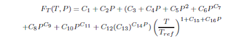 |
The constants Ki below are used in the following equation to calculate ISP (in seconds), Isp, as a function of pressure P (kPa) and temperature T (Celsius).
| 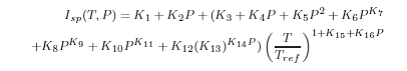 |
| Field | Description | ||||||||||||
|---|---|---|---|---|---|---|---|---|---|---|---|---|---|
| Axes | Allows the user to define a spacecraft centered set of axes for the ChemicalThruster. This field cannot be modified in the Mission Sequence
| ||||||||||||
| CoordinateSystem | Determines what coordinate system the orientation parameters, ThrustDirection1, ThrustDirection2, and ThrustDirection3 refer to. This field cannot be modified in the Mission Sequence.
| ||||||||||||
| C1 | Thrust coefficient.
| ||||||||||||
| C2 | Thrust coefficient.
| ||||||||||||
| C3 | Thrust coefficient.
| ||||||||||||
| C4 | Thrust coefficient.
| ||||||||||||
| C5 | Thrust coefficient.
| ||||||||||||
| C6 | Thrust coefficient.
| ||||||||||||
| C7 | Thrust coefficient.
| ||||||||||||
| C8 | Thrust coefficient.
| ||||||||||||
| C9 | Thrust coefficient.
| ||||||||||||
| C10 | Thrust coefficient.
| ||||||||||||
| C11 | Thrust coefficient.
| ||||||||||||
| C12 | Thrust coefficient.
| ||||||||||||
| C13 | Thrust coefficient.
| ||||||||||||
| C14 | Thrust coefficient.
| ||||||||||||
| C15 | Thrust coefficient.
| ||||||||||||
| C16 | Thrust coefficient.
| ||||||||||||
| DecrementMass | Flag which determines if the FuelMass is to be decremented as it used. This field cannot be modified in the Mission Sequence.
| ||||||||||||
| DutyCycle | Fraction of time that the thrusters are on during a maneuver. The thrust applied to the spacecraft is scaled by this amount. Note that this scale factor also affects mass flow rate.
| ||||||||||||
| GravitationalAccel | The gravitational acceleration.
| ||||||||||||
| K1 | ISP coefficient.
| ||||||||||||
| K2 | ISP coefficient.
| ||||||||||||
| K3 | ISP coefficient.
| ||||||||||||
| K4 | ISP coefficient.
| ||||||||||||
| K5 | ISP coefficient.
| ||||||||||||
| K6 | ISP coefficient.
| ||||||||||||
| K7 | ISP coefficient.
| ||||||||||||
| K8 | ISP coefficient.
| ||||||||||||
| K9 | ISP coefficient.
| ||||||||||||
| K10 | ISP coefficient.
| ||||||||||||
| K11 | ISP coefficient.
| ||||||||||||
| K12 | ISP coefficient.
| ||||||||||||
| K13 | ISP coefficient.
| ||||||||||||
| K14 | ISP coefficient.
| ||||||||||||
| K15 | ISP coefficient.
| ||||||||||||
| K16 | ISP coefficient.
| ||||||||||||
| MixRatio | The mixture ratio employed to draw fuel from multiple tanks. For example, if there are two tanks and MixRatio is set to [2 1], then twice as much fuel will be drawn from tank one as from tank 2 in the Tank list. Note, if a MixRatio is not supplied, fuel is drawn from tanks in equal amounts, (the MixRatio is set to a vector of ones the same length as the Tank list).
| ||||||||||||
| Origin | This field, used in conjunction with the Axes field, allows the user to define a spacecraft centered set of axes for the ChemicalThruster. Origin has no affect when a Local coordinate system is used and the Axes are set to MJ2000Eq or SpacecraftBody. This field cannot be modified in the Mission Sequence.
| ||||||||||||
| Tanks | A list of ChemicalTank(s) from
which the thruster draws propellant from. In the script, an empty
list, e.g.,
| ||||||||||||
| ThrustDirection1 | X component of the spacecraft thrust vector direction.
| ||||||||||||
| ThrustDirection2 | Y component of the spacecraft thrust vector direction.
| ||||||||||||
| ThrustDirection3 | Z component of the spacecraft thrust vector direction.
| ||||||||||||
| ThrustScaleFactor | ThrustScaleFactor is a scale factor that is multiplied by the thrust vector, for a given thruster, before the thrust vector is added into the total acceleration. Note that the value of this scale factor does not affect the mass flow rate.
|
Interactions
| Command or Resource | Description |
|---|---|
| BeginFiniteBurn/EndFiniteBurn command | Use these commands, which require a Spacecraft and a FiniteBurn name as input, to implement a finite burn. |
| ChemicalTank resource | This resource contains the fuel used to power the ChemicalThruster specified by the FiniteBurn resource. |
| FiniteBurn resource | When using the BeginFiniteBurn/EndFiniteBurn commands, you must specify which FiniteBurn resource to implement. The FiniteBurn resource specifies which ChemicalThruster(s) to use for the finite burn. |
| Spacecraft resource | When using the BeginFiniteBurn/EndFiniteBurn commands, you must specify which Spacecraft to apply the finite burn to. |
| Propagate command | In order to implement a non-zero finite burn, a Propagate statement must occurr within the BeginFiniteBurn and EndFiniteBurn statements. |
GUI
The ChemicalThruster dialog box allows you to specify properties of a ChemicalThruster including the Coordinate System of the thrust acceleration direction vector, the thrust magnitude and Isp coefficients, and choice of ChemicalTank. The layout of the ChemicalThruster dialog box is shown below.
 |
When configuring the Coordinate System field, you can choose between existing coordinate systems or use locally defined coordinate systems. The Axes field is only active if Coordinate System is set to . The Origin field is only active if Coordinate System is set to and Axes is set to either or .
As shown below, if Decrement Mass is checked, then you can input the gravitational acceleration value used to calculate fuel use. The value of the gravitational acceleration input here only affects fuel use and does not affect the force model.
| 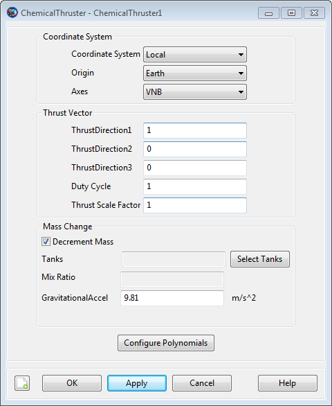 |
Selecting the button brings up the following dialog box where you may input the coefficients for the ChemicalThruster polynomial.
 |
Similarly, clicking the Edit Impulse Coef. button brings up the following dialog box where you may input the coefficients for the specific impulse (ISP) polynomial.
 |
Remarks
Use of ChemicalThruster Resource in Conjunction With Maneuvers
A ChemicalThruster resource is used only in association with finite maneuvers. To implement a finite maneuver, you must first create both a ChemicalTank and a FiniteBurn resource. You must also associate a ChemicalTank with the ChemicalThruster resource and you must associate a ChemicalThruster with the FiniteBurn resource. The finite maneuver is implemented using the BeginFiniteBurn/EndFiniteBurn commands. See the BeginFiniteBurn/EndFiniteBurn command documentation for worked examples on how the ChemicalThruster resource is used in conjunction with finite maneuvers.
Thrust and ISP Calculation
Unscaled thrust, FT, and Isp, as a function of Pressure, in kPa, and Temperature, in degrees Celsius, are calculated using the following polynomials.
The thrust, T, output in Newtons, is scaled by the and . The thrust acceleration direction vector (the direction of the actual acceleration not the thruster nozzle) is given by and is applied in the input Coordinate System. The Isp is output in seconds.
The mass flow rate and the thrust equations are shown below where FT and Isp are defined above, fd is the duty cycle, fs is the thrust scale factor, RiT is the rotation matrix from the thrust coordinate system to the inertial system, and Td is the unitized thrust direction.
| 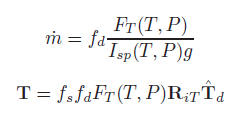 |
Local Coordinate Systems
Here, a Local coordinate system is defined as one that we configure "locally" using the ChemicalThruster resource interface as opposed to defining a coordinate system using the Coordinate Systems folder in the Resources Tree.
To configure a local coordinate system, you must specify the coordinate system of the input thrust acceleration direction vector, . If you choose a local coordinate system, the four choices available, as given by the sub-field, are , , , and . or Velocity-Normal-Binormal is a non-inertial coordinate system based upon the motion of the spacecraft with respect to the sub-field. For example, if the is chosen as Earth, then the X-axis of this coordinate system is the along the velocity of the spacecraft with respect to the Earth, the Y-axis is along the instantaneous orbit normal (with respect to the Earth) of the spacecraft, and the Z-axis completes the right-handed set.
Similarly, Local Vertical Local Horizontal or is also a non-inertial coordinate system based upon the motion of the spacecraft with respect to the sub-field. Again, if we choose Earth as the origin, then the X-axis of this coordinate system is the position of the spacecraft with respect to the Earth, the Z-axis is the instantaneous orbit normal (with respect to the Earth) of the spacecraft, and the Y-axis completes the right-handed set.
is the J2000-based Earth-centered Earth mean equator inertial coordinate system. Note that the sub-field is not needed to define this coordinate system.
is the attitude system of the spacecraft. Since the thrust is applied in this system, GMAT uses the attitude of the spacecraft, a spacecraft attribute, to determine the inertial thrust direction. Note that the Origin sub-field is not needed to define this coordinate system.
Caution When Setting the ChemicalTank Temperature and Reference Temperature
Note that both the thrust and ISP polynomials have terms that involve the ratio, (Temperature / Reference Temperature). For GMAT, this temperature ratio is calculated in Celsius units, and thus, there is a discontinuity when the Reference Temperature is equal to zero. For this reason, GMAT requires that the absolute value of the input Reference Temperature is greater than 0.01.
Note also that the form of the Thrust and ISP polynomial has some behavior, when the Reference Temperature is near 0 degrees Centigrade, that you need to be aware of. Because of the previously mentioned discontinuity, the polynomials do not vary smoothly when the Reference Temperature is near zero. For example, consider the two Reference Temperatures, -0.011 and + 0.011 degrees Centigrade. These two temperatures are close to each other in value and one might expect that they have roughly similar thrust and ISP values. This may not be the case, depending upon your choice of thrust/ISP coefficients, since the temperature ratios associated with the two Reference Temperatures have the same magnitude but different signs. You may choose to set the input Reference Temperature equal to the input Temperature, thus eliminating any dependence of thrust and ISP with temperature when using the currently implemented ChemicalTank model based upon Boyle’s Law where the fuel Temperature does not change as fuel is depleted.
Examples
Create a default ChemicalTank and a ChemicalThruster that allows for fuel depletion, assign the ChemicalThruster the default ChemicalTank, and attach both the ChemicalThruster and ChemicalTank to a Spacecraft.
% Create the ChemicalTank Resource
Create ChemicalTank FuelTank1
FuelTank1.AllowNegativeFuelMass = false
FuelTank1.FuelMass = 756
FuelTank1.Pressure = 1500
FuelTank1.Temperature = 20
FuelTank1.RefTemperature = 20
FuelTank1.Volume = 0.75
FuelTank1.FuelDensity = 1260
FuelTank1.PressureModel = PressureRegulated
% Create a ChemicalThruster, that allows fuel depletion, and assign it a ChemicalTank
Create ChemicalThruster Thruster1
Thruster1.CoordinateSystem = Local
Thruster1.Origin = Earth
Thruster1.Axes = VNB
Thruster1.ThrustDirection1 = 1
Thruster1.ThrustDirection2 = 0
Thruster1.ThrustDirection3 = 0
Thruster1.DutyCycle = 1
Thruster1.ThrustScaleFactor = 1
Thruster1.DecrementMass = true
Thruster1.Tank = {FuelTank1}
Thruster1.GravitationalAccel = 9.810000000000001
Thruster1.C1 = 10
Thruster1.C2 = 0
Thruster1.C3 = 0
Thruster1.C4 = 0
Thruster1.C5 = 0
Thruster1.C6 = 0
Thruster1.C7 = 0
Thruster1.C8 = 0
Thruster1.C9 = 0
Thruster1.C10 = 0
Thruster1.C11 = 0
Thruster1.C12 = 0
Thruster1.C13 = 0
Thruster1.C14 = 0
Thruster1.C15 = 0
Thruster1.C16 = 0
Thruster1.K1 = 300
Thruster1.K2 = 0
Thruster1.K3 = 0
Thruster1.K4 = 0
Thruster1.K5 = 0
Thruster1.K6 = 0
Thruster1.K7 = 0
Thruster1.K8 = 0
Thruster1.K9 = 0
Thruster1.K10 = 0
Thruster1.K11 = 0
Thruster1.K12 = 0
Thruster1.K13 = 0
Thruster1.K14 = 0
Thruster1.K15 = 0
Thruster1.K16 = 0
% Add the ChemicalThruster and the ChemicalTank to a Spacecraft
Create Spacecraft DefaultSC
DefaultSC.Tanks = {FuelTank1}
DefaultSC.Thrusters = {Thruster1}
BeginMissionSequenceCreate two ChemicalTanks (called aTank1 and aTank2) and a ChemicalThruster, attach both the ChemicalThruster and ChemicalTanks to a Spacecraft, and configure the thruster to draw four times as much fuel from aTank1 than aTank2.
% Create the ChemicalTank Resource
Create Spacecraft aSat
aSat.Tanks = {aTank1,aTank2}
aSat.Thrusters = {aThruster}
% Create two tanks
Create ChemicalTank aTank1 aTank2
% Configure thruster to draw four times as much fuel
% from aTank1 than aTank2
Create ChemicalThruster aThruster
aThruster.Tank = {aTank1,aTank2}
aThruster.MixRatio = [4 1]
BeginMissionSequenceVariable
Variable — A user-defined numeric variable
Description
The Variable resource is used to store a single numeric value for use by commands in the Mission Sequence. It can be used in place of a literal numeric value in most commands. Variable resources are initialized to zero on creation, and can be assigned using literal numeric values or (in the Mission Sequence) Variable resources, Array resource elements, resource parameters of numeric type, or Equation commands that evaluate to scalar numeric values.
Fields
The Variable resource has no fields; instead, the resource itself is set to the desired value.
| Field | Description | ||||||||||||
|---|---|---|---|---|---|---|---|---|---|---|---|---|---|
value | The value of the variable.
|
GUI
 |
The GMAT GUI lets you create multiple Variable resources at once without leaving the window. To create a Variable:
In the Variable Name box, type the desired name of the variable.
In the Variable Value box, type the initial value of the variable. This is required and must be a literal numeric value.
Click the => button to create the variable and add it to the list on the right.
You can create multiple Variable resources this way. To edit an existing variable in this window, click it in the list on the right and edit the value. You must click the => button again to save your changes.
| 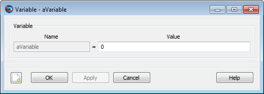 |
You can also double-click an existing variable in the resources tree in the main GMAT window. This opens the Variable properties box above that allows you to edit the value of that individual variable.
Remarks
GMAT Variable resources store a single numeric value. Internally, the value is stored as a double-precision real number, regardless of whether or not a fractional portion is present.
Examples
Creating a variable and assigning it a literal value:
Create ReportFile aReport
Create Variable aVar
aVar = 12
BeginMissionSequence
Report aReport aVarUsing variables in Mission Sequence commands:
Create Spacecraft aSat
Create ForceModel anFM
Create ReportFile aReport
Create Propagator aProp
aProp.FM = anFM
Create Variable i step totalDuration nSteps
BeginMissionSequence
step = 60
totalDuration = 24*60^2 % one day
nSteps = totalDuration / step
% Report Keplerian elements every 60 seconds for one day
For i=1:nSteps
Propagate aProp(aSat) {aSat.ElapsedSecs = step}
Report aReport aSat.TAIModJulian aSat.SMA aSat.ECC aSat.INC ...
aSat.RAAN aSat.AOP aSat.TA
EndForVF13ad
VF13ad — The Sequential Quadratic Programming (SQP) optimizer, VF13ad
Description
The VF13ad optimizer is a SQP-based Nonlinear Programming solver available in the Harwell Subroutine Library. VF13ad performs nonlinear constrained optimization and supports both linear and nonlinear constraints. To use this solver, you must configure the solver options including convergence criteria, maximum iterations, and gradient computation method. In the mission sequence, you implement an optimizer such as VF13ad by using an Optimize/EndOptimize sequence. Within this sequence, you define optimization variables by using the Vary command, and define cost and constraints by using the Minimize and NonlinearConstraint commands respectively.
This resource cannot be modified in the Mission Sequence.
See Also: FminconOptimizer,Optimize,Vary, NonlinearConstraint, Minimize
Fields
| Field | Description | ||||||||||||
|---|---|---|---|---|---|---|---|---|---|---|---|---|---|
| FeasibilityTolerance | Specifies the accuracy to which you want constraints to be satisfied.
| ||||||||||||
| MaximumIterations | Specifies the maximum allowable number of nominal passes through the Solver Control Sequence.
| ||||||||||||
| ReportFile | Contains the path and file name of the report file.
| ||||||||||||
| ReportStyle | Determines the amount and type of data written to the message window and to the report specified by field ReportFile for each iteration of the solver (When ShowProgress is true). Currently, the Normal, Debug, and Concise options contain the same information: the values for the control variables, the constraints, and the objective function. In addition to this information, the Verbose option also contains values of the optimizer-scaled control variables.
| ||||||||||||
| ShowProgress | Determines whether data pertaining to iterations of the solver is both displayed in the message window and written to the report specified by the ReportFile field. When ShowProgress is true, the amount of information contained in the message window and written in the report is controlled by the ReportStyle field.
| ||||||||||||
| Tolerance | Specifies the measure the optimizer will use to determine when an optimal solution has been found based on the value of the goal set in a Minimize command.
| ||||||||||||
| UseCentralDifferences | Allows you to choose whether or not to use central differencing for numerically determining the derivative. For the default, 'false' value of this field, forward differencing is used to calculate the derivative.
|
GUI
The VF13ad dialog box allows you to specify properties of a VF13ad such as as maximum iterations, cost function tolerance, feasibility tolerance, choice of reporting options, and choice of whether or not to use the central difference derivative method.
To create a VF13ad resource, navigate to the Resources tree, expand the Solvers folder, highlight and then right-click on the Optimizers sub-folder, point to Add and then select VF13ad. This will create a new VF13ad resource, VF13ad1. Double-click on VF13ad1 to bring up the VF13ad dialog box shown below.
Remarks
Examples
Create a VF13ad resource named VF13ad1.
Create VF13ad VF13ad1
VF13ad1.ShowProgress = true
VF13ad1.ReportStyle = Normal
VF13ad1.ReportFile = 'VF13adVF13ad1.data'
VF13ad1.MaximumIterations = 200
VF13ad1.Tolerance = 1e-005
VF13ad1.UseCentralDifferences = false
VF13ad1.FeasibilityTolerance = 1e-003 For an example of how a VF13ad resource can be used within an Optimization sequence, see the Optimize command examples.
XYPlot
XYPlot — Plots data onto the X and Y axes of a graph
Description
The XYPlot resource allows you to plot data onto the X and Y axis of the graph. You can choose to plot any number of parameters as a function of a single independent variable. GMAT allows you to plot user-defined variables, array elements, or spacecraft parameters. You can create multiple XYPlots by using either the GUI or script interface of GMAT. GMAT also provides the option of when to plot and stop plotting data to a XYPlot through the Toggle On/Off command. See the Remarks section below for detailed discussion of the interaction between an XYPlot resource and the Toggle command. GMAT’s Spacecraft and XYPlot resources also interact with each other throughout the entire mission duration. Discussion of the interaction between Spacecraft and XYPlot resources can also be found in the Remarks section.
See Also: Toggle, Spacecraft
Fields
| Field | Description | ||||||||||||
|---|---|---|---|---|---|---|---|---|---|---|---|---|---|
| Maximized | Allows the user to maximize the XYPlot window. This field cannot be modified in the Mission Sequence.
| ||||||||||||
| UpperLeft | Allows the user to pan the XYPlot display window in any direction. First value in [0 0] matrix helps to pan the XYPlot window horizontally and second value helps to pan the window vertically. This field cannot be modified in the Mission Sequence.
| ||||||||||||
| RelativeZOrder | Allows the user to select which XYPlot window to display first on the screen. The XYPlot with lowest RelativeZOrder value will be displayed last while XYPlot with highest RelativeZOrder value will be displayed first. This field cannot be modified in the Mission Sequence.
| ||||||||||||
| ShowGrid | When the ShowGrid field is set to True, then a grid is drawn on an xy-plot. When the ShowGrid field is set to False, then a grid is not drawn. This field cannot be modified in the Mission Sequence.
| ||||||||||||
| ShowPlot | Allows the user to turn off a plot for a particular run, without deleting the XYPlot resource, or removing it from the script. If you select True, then the plot will be shown. If you select False, then the plot will not be shown. This field cannot be modified in the Mission Sequence.
| ||||||||||||
| Size | Allows the user to control the display size of XYPlot window. First value in [0 0] matrix controls horizonal size and second value controls vertical size of XYPlot display window. This field cannot be modified in the Mission Sequence.
| ||||||||||||
| SolverIterations | This field determines whether or not data associated with perturbed trajectories during a solver (Targeter, Optimize) sequence is displayed in the XYPlot. When SolverIterations is set to All, all perturbations/iterations are plotted in the XYPlot. When SolverIterations is set to Current, only the current solution or perturbation is plotted in XYPlot. When SolverIterations is set to None, only the final nominal run is plotted on the XYPlot.
| ||||||||||||
| XVariable | Allows the user to define the independent variable
for an XYPlot. Only one variable can be
defined as an independent variable. For example, the line
| ||||||||||||
| YVariable | Allows the user to add dependent variables to an
xy-plot. All dependent variables are plotted on the y-axis vs the
independent variable defined by XVariable
field. The dependent variable(s) should always be included in
curly braces. For example,
|
Remarks
Behavior when using XYPlot Resource & Toggle Command
The XYPlot resource plots data onto the X and Y axis of the graph at each propagation step of the entire mission duration. If you want to report data to an XYPlot at specific points in your mission, then a Toggle On/Off command can be inserted into the mission sequence to control when the XYPlot is to plot data. When Toggle Off command is issued for a XYPlot, no data is plotted onto the X and Y axis of the graph until a Toggle On command is issued. Similarly when a Toggle On command is used, data is plotted onto the X and Y axis at each integration step until a Toggle Off command is used.
Below is an example script snippet that shows how to use Toggle Off and Toggle On commands while using the XYPlot resource. Spacecraft’s position magnitude and semi-major-axis are plotted as a function of time.
Create Spacecraft aSat
Create Propagator aProp
Create XYPlot aXYPlot
aXYPlot.XVariable = aSat.ElapsedDays
aXYPlot.YVariables = {aSat.Earth.RMAG, aSat.Earth.SMA}
BeginMissionSequence
Toggle aXYPlot Off
Propagate aProp(aSat) {aSat.ElapsedDays = 2}
Toggle aXYPlot On
Propagate aProp(aSat) {aSat.ElapsedDays = 4}Behavior when using XYPlot & Spacecraft resources
Spacecraft resource contains information about spacecraft’s orbit, its attitude, physical parameters (such as mass and drag coefficient) and any attached hardware, including thrusters and fuel tanks. Spacecraft resource interacts with XYPlot throughout the entire mission duration. The data retrieved from the spacecraft is what gets plotted onto the X and Y axis of the graph at each propagation step of the entire mission duration.
Behavior When Specifying Empty Brackets in XYPlot's YVariables Field
When using XYPlot.YVariables field, GMAT does not allow brackets to be left empty. The brackets must always be populated with values that you wish to plot against a variable in XVariable field. If brackets are left empty, then GMAT throws in an exception. Below is a sample script snippet that shows an example of empty brackets. If you were to run this script, then GMAT throws in an execption reminding you that brackets for YVariables field cannot be left empty.
Create Spacecraft aSat
Create Propagator aProp
Create XYPlot aXYPlot
aXYPlot.XVariable = aSat.ElapsedDays
aXYPlot.YVariables = {}
BeginMissionSequence
Propagate aProp(aSat) {aSat.ElapsedDays = 2}Behavior when Reporting Data in Iterative Processes
GMAT allows you to specify how data is plotted onto a plot during iterative processes such as differential correction or optimization. The SolverIterations field of an XYPlot resource supports three options which are described in the table below:
| SolverIterations options | Description |
|---|---|
| Current | Shows only current iteration/perturbation in an iterative process and plots current iteration to a plot. |
| All | Shows all iterations/perturbations in an iterative process and plots all iterations/perturbations to a plot. |
| None | Shows only the final solution after the end of an iterative process and plots only that final solution to the plot. |
Examples
Propagate an orbit and plot the spacecraft’s altitude as a function of time at every integrator step:
Create Spacecraft aSat
Create Propagator aProp
Create XYPlot aXYPlot
aXYPlot.XVariable = aSat.ElapsedSecs
aXYPlot.YVariables = {aSat.Earth.Altitude}
BeginMissionSequence
Propagate aProp(aSat) {aSat.ElapsedDays = 4}Plotting data during an iterative process. Notice SolverIterations field is selected as All. This means all iterations/perturbations will be plotted.
Create Spacecraft aSat
Create Propagator aProp
Create ImpulsiveBurn TOI
Create DifferentialCorrector aDC
Create XYPlot aXYPlot
aXYPlot.SolverIterations = All
aXYPlot.XVariable = aSat.ElapsedDays
aXYPlot.YVariables = {aSat.Earth.RMAG}
BeginMissionSequence
Propagate aProp(aSat) {aSat.Earth.Periapsis}
Target aDC
Vary aDC(TOI.Element1 = 0.24, {Perturbation = 0.001, Lower = 0.0, ...
Upper = 3.14159, MaxStep = 0.5})
Maneuver TOI(aSat)
Propagate aProp(aSat) {aSat.Earth.Apoapsis}
Achieve aDC(aSat.Earth.RMAG = 42165)
EndTargetTable of Contents
- Achieve — Specify a goal for a Target sequence
- Assignment (
=) — Set a variable or resource field to a value, possibly using mathematical expressions - BeginFiniteBurn — Model finite thrust maneuvers
- BeginMissionSequence — Begin the mission sequence portion of a script
- BeginScript — Execute free-form script commands
- CallGmatFunction — Call a GMAT function
- CallMatlabFunction — Call a MATLAB function
- CallPythonFunction — Call a Python function
- ClearPlot — Allows you to clear all data from an XYPlot
- EndFiniteBurn — Model finite thrust maneuvers in the mission sequence
- FindEvents — Execute an event location search
- For — Execute a series of commands a specified number of times
- GetEphemStates() — Function used to output initial and final spacecraft states from an ephemeris file
- Global — Declare Objects as global
- If — Conditionally execute a series of commands
- Maneuver — Perform an impulsive (instantaneous) maneuver
- MarkPoint — Allows you to add a special mark point character on an XYPlot
- Minimize — Define the cost function to minimize
- NonlinearConstraint — Specify a constraint used during optimization
- Optimize — Solve for condition(s) by varying one or more parameters
- PenUpPenDown — Allows you to stop or begin drawing data on a plot
- Propagate — Propagates spacecraft to a requested stopping condition
- Report — Allows you to write data to a text file
- RunEstimator — Ingests navigation measurements and generates an estimated state vector
- RunSimulator — Generates simulated navigation measurements
- Set — Configure a resource from a data interface
- Stop — Stop mission execution
- Target — Solve for condition(s) by varying one or more parameters
- Toggle — Allows you to turn data output off or on
- Vary — Specifies variables used by a solver
- While — Execute a series of commands repeatedly while a condition is met
- Write — Writes data to one or more of the following three destinations: the message window, the log file, or a ReportFile resource.
Achieve
Achieve — Specify a goal for a Target sequence
Script Syntax
AchieveSolverName(Goal= Arg1, [{Tolerance= Arg2}])
Description
The Achieve command is used in conjunction with the Target command as part of the Target sequence. The purpose of the Achieve command is to define a goal for the targeter (currently, the differential corrector is the only targeter available within a Target sequence) to achieve. To configure the Achieve command, you specify the goal object, its corresponding desired value, and an optional tolerance so the differential corrector can find a solution. The Achieve command must be accompanied and preceded by a Vary command in order to assist in the targeting process.
See Also: DifferentialCorrector, Target, Vary
Options
| Option | Description | ||||||||||
|---|---|---|---|---|---|---|---|---|---|---|---|
| Arg1 | Specifies the desired value for the Goal after the DifferentialCorrector has converged.
| ||||||||||
| Arg2 | Convergence tolerance for how close Goal equals Arg1
| ||||||||||
| Goal | Allows you to select any single element user defined parameter, except a number, as a targeter goal.
| ||||||||||
| SolverName | Specifies the DifferentialCorrector being used in the Target sequence
|
GUI
You use an Achieve command, which is only valid within a Target sequence, to define your desired goal. More than one Achieve command may be used within a Target command sequence. The Achieve command dialog box, which allows you to specify the targeter, goal object, goal value, and convergence tolerance, is shown below.
| 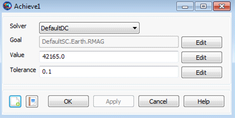 |
Remarks
Command Interactions
A Target sequence must contain at least one Vary and one Achieve command.
| Target command | An Achieve command only occurs within a Target sequence |
| Vary command | Associated with any Achieve command is at least one Vary command. The Vary command identifies the control variable used by the targeter. The goal specified by the Achieve command is obtained by varying the control variables. |
Assignment (=)
Assignment (=) — Set a variable or resource field to a value, possibly using
mathematical expressions
Script Syntax
settable_item = expressionDescription
The assignment command (in the GUI, the Equation command) allows you to set a resource field or parameter to a value, possibly using mathematical expressions. GMAT uses the assignment operator ('=') to indicate an assignment command. The assignment operator uses the following syntax, where LHS denotes the left-hand side of the operator, and RHS denotes the right-hand side of the operator:
LHS = RHSIn this expression, the left-hand side
(LHSRHSLHSRHS
Left-hand side
The left-hand side of the assignment command must be a single item of any of the following types:
allowed resource (e.g. Spacecraft, Variable, Array)
resource field for allowed resources (e.g. Spacecraft.Epoch, Spacecraft.DateFormat)
settable resource parameter (e.g. Spacecraft.X, ReportFile.Precision)
Array or Array element
See the documentation for a particular resource to determine which fields and parameters can be set.
Right-hand side
The right-hand side of the assignment command can consist of any of the following:
literal value
resource (e.g. Spacecraft, Variable, Array)
resource field (e.g. Spacecraft.Epoch, Spacecraft.DateFormat)
resource parameter (e.g. Spacecraft.X, ChemicalThruster.K1)
Array or Array element
mathematical expression (see below)
MATLAB function calls are considered distinct from the assignment command. See the reference pages for more information.
GUI
 |
The assignment command in the script language corresponds to the
Equation command in the GUI. The
Equation properties box allows you to input both
sides of the expression into free-form text boxes. The default values on
each side are “Not_Set”; these are placeholders only,
and are not valid during the mission run. You can type into each box the
same syntax described above for the script language. When you click
OK or Apply, GMAT validates each
side of the expression and provides feedback for any warnings or
errors.
Remarks
Data type compatibility
In general, the data types of the left-hand side and the right-hand side must match after all expressions are evaluated. This means that a Spacecraft resource can only be set to another Spacecraft resource, numeric parameters can only be set to numeric values, and String resources can only be set to string values. Additionally, the dimension of Array instances must match for the command to succeed. For numeric quantities, the assignment command does not distinguish between integers and floating-point values.
Parameters
Parameters can be used on either side of an assignment command, but there may be certain restrictions.
On the right-hand side of the command, any parameter can be used.
If a parameter accepts a dependency (such as
Spacecraft.CoordinateSystem.X)
and the dependency is omitted, a default dependency value will be used.
For coordinate-system-dependent parameters, the default is
EarthMJ2000Eq. For central-body-dependent
parameters, the default is Earth.
On the left-hand side, only settable (writable) parameters can be used. Furthermore, no dependency can be specified, except in the special case that the dependencies on both sides of the assignment command are equivalent. On the left-hand side, the default values of omitted dependencies are automatically taken to be the current values of the CoordinateSystem field of the referenced Spacecraft and its origin.
These examples show valid and invalid usage of parameters:
Create Spacecraft aSat1 aSat2
aSat2.CoordinateSystem = 'EarthFixed'
Create Variable x
BeginMissionSequence
x = aSat1.EarthFixed.X % Valid: Parameter with dependency on RHS
x = aSat1.EarthMJ2000Eq.X % Valid: This and next statement are equiv.
x = aSat1.X % Valid: Default dep. value is EarthMJ2000Eq.
x = aSat1.Mars.Altitude % Valid: Parameter with dependency on RHS
x = aSat1.Earth.Altitude % Valid: This and next statement are equiv.
x = aSat1.Altitude % Valid: Default dependency value is Earth.
aSat2.X = 1e5 % Valid: Default parameter value is EarthFixed.
aSat2.EarthMJ2000Eq.X = 1e5 % INVALID: Dependencies not allowed on LHS.
aSat2.EarthFixed.X = 1e5 % Valid: Special case because value = default.
aSat2.EarthMJ2000Eq.X = aSat1.EarthFixed.X % INVALID: Dependency on LHS
aSat2.EarthMJ2000Eq.X = aSat1.EarthMJ2000Eq.X % INVALID: Dependency on LHS
aSat2.EarthFixed.X = aSat1.EarthFixed.X % Valid: Special case
% DANGEROUS! Valid, but sets EarthMJ2000Eq RHS values to EarthFixed LHS param.
aSat2.X = aSat1.EarthMJ2000Eq.X
% DANGEROUS! RHS default is EarthMJ2000Eq, LHS default is current setting on
% aSat2 (EarthFixed in this case).
aSat2.X = aSat1.X Mathematical Expressions
The assignment command supports the use of inline mathematical expressions on the right-hand side of the command. These expressions follow the general syntax rules of MATLAB expressions, and can use a variety of operators and built-in functions.
Parsing
Mathematical expressions are recognized by the presence of any of the operators or built-in functions described below. Before execution, all white space (e.g. spaces and tabs) is removed from the expression.
Data Types
Mathematical expressions operate on numeric values (integers or floating-point numbers). This includes the following:
literal values
numeric resources (Variable, Array)
gettable resource parameters (e.g. Spacecraft.X, ChemicalThruster.K1)
Array elements
calculation parameters (e.g. Spacecraft.OrbitPeriod)
nested mathematical expressions
Several of GMAT’s operators and functions are vectorized, so they operate on full Array resources as well as scalar numeric values.
Operators
| Vectorized operators |
| ||||||||
| Scalar operators |
|
When multiple expressions are combined, GMAT uses the following order of operations. Operations begin with those operators at the top of the list and and continue downwards. Within each level, operations proceed left-to-right.
parentheses
()transpose (
'), power (^)unary plus (
+), unary minus (-)multiplication (
*), division (/)addition (
+), subtraction (-)
Built-in Functions
GMAT supports the following built-in functions in mathematical expressions. Supported functions include common scalar functions, meaning they accept a single value only, such as sin and cos, matrix functions that operate on an entire matrix or vector, and string functions.
| Scalar Math Functions |
|
| Numeric Manipulation Functions |
|
| Random Number Functions |
|
| Matrix Functions |
|
| String Manipulation Functions |
|
| Specifiers |
|
| Flags |
| ||||||||||
| Width |
| ||||||||||
| Precision |
|
Examples
Evaluate a basic algebraic equation:
Create Variable A B C x y
x = 1
Create ReportFile aReport
BeginMissionSequence
A = 10
B = 20
C = 2
y = A*x^2 + B*x + C
Report aReport yMatrix manipulation:
Create Array A[2,2] B[2,2] C[2,2] x[2,1] y[2,1]
Create ReportFile aReport
A(1,1) = 10
A(2,1) = 5
A(1,2) = .10
A(2,2) = 1
x(1,1) = 2
x(2,1) = 3
BeginMissionSequence
B = inv(A)
C = B'
y = C*x
Report aReport A B C x yCloning a resource:
Create Spacecraft Sat1 Sat2
Sat1.Cd = 1.87
Sat1.DryMass = 123.456
Create ReportFile aReport
BeginMissionSequence
Sat2 = Sat1
Report aReport Sat2.Cd Sat2.DryMassUsing built-in functions:
Create Variable pi x y1 y2 y3
Create Array A[3,3]
Create Spacecraft aSat
Create ReportFile aReport
BeginMissionSequence
pi = acos(-1)
aSat.TA = pi/4
x = pi/4
A(1,1) = pi/4
y1 = sin(x)
y2 = sin(aSat.TA)
y3 = sin(A(1,1))
Report aReport y1 y2 y3BeginFiniteBurn
BeginFiniteBurn — Model finite thrust maneuvers
Script Syntax
BeginFiniteBurnaFiniteBurn(aSpacecraft)
EndFiniteBurnaFiniteBurn(aSpacecraft)
Description
When you apply a BeginFiniteBurn command, you turn on the thruster configuration given in the specified FiniteBurn model. Similarly, when you apply an EndFiniteBurn command, you turn off the thruster configuration in the specified FiniteBurn model. After GMAT executes a BeginFiniteBurn command, all propagation for the spacecraft affected by the FiniteBurn object will include the configured finite thrust in the dynamics until an EndFiniteBurn line is executed for that configuration. In order to apply a non-zero finite burn , there must be a Propagate command between the BeginFiniteBurn and EndFiniteBurn commands.
To apply the BeginFiniteBurn and EndFiniteBurn commands, a FiniteBurn object must be configured. This object requires the configuration of ChemicalTank and ChemicalThruster models. See the Remarks section and the examples below for a more detailed explanation.
See Also: Spacecraft, ChemicalThruster, ChemicalTank, FiniteBurn
Options
| Option | Description | ||||||||||
|---|---|---|---|---|---|---|---|---|---|---|---|
| BeginFiniteBurn - Burn | Specifies the FiniteBurn object activated by the BeginFiniteBurn command.
| ||||||||||
| BeginFiniteBurn - SpacecraftList | Specifies the Spacecraft (currently only a single Spacecraft can be in this list) acted upon by the BeginFiniteBurn command. The Spacecraft listed in SpacecraftList will have thrusters activated according to the configuration of the FiniteBurn object defined by the Burn field.
| ||||||||||
| EndFiniteBurn - Burn | Specifies the FiniteBurn object de-activated by the EndFiniteBurn command.
| ||||||||||
| EndFiniteBurn - SpacecraftList | Specifies the Spacecraft (currently only a single Spacecraft can be in this list) acted upon by the EndFiniteBurn command. Spacecraft listed in SpacecraftList will have thrusters de-activated according to the configuration of the FiniteBurn object defined by the Burn field.
|
GUI
The BeginFiniteBurn and EndFiniteBurn command dialog boxes allow you to implement a finite burn by specifying which finite burn model should be used and which spacecraft the finite burn should be applied to. The dialog boxes for BeginFiniteBurn and EndFiniteBurn are shown below.
 |
 |
Use the Burn menu to select the FiniteBurn model for the maneuver. Use the Spacecraft text box to select the spacecraft for the finite burn. You can either type the spacecraft name in the Spacecraft text box or click the button and select the spacecraft using the ParameterSelectDialog box.
If you add a BeginFiniteBurn command or EndFiniteBurn command to the mission sequence, without first creating a FiniteBurn object, GMAT will create a default FiniteBurn object called DefaultFB. However, you will need to configure the required ChemicalTank and ChemicalThruster objects required for a FiniteBurn object before you can run the mission. See the Remarks section for detailed instructions.
Remarks
Configuring a Finite Burn
To use the BeginFiniteBurn and EndFiniteBurn commands in your mission sequence, you must configure a FiniteBurn object along with ChemicalTank and ChemicalThruster objects as shown in the examples below and as described in these steps:
Create and configure a ChemicalTank model.
Create a ChemicalThruster model:
Set the parameters (direction, thrust, specific impulse, etc) for the thruster
Configure the ChemicalThruster to use the ChemicalTank created in Step 1.
Add the ChemicalTank and ChemicalThruster created in the previous two steps to the Spacecraft.
Create a FiniteBurn model and configure it to use the ChemicalThruster created in Step 2.
Initial Thruster Status
When you configure the Spacecraft, ChemicalTank, ChemicalThruster, and FiniteBurn objects, GMAT initializes these objects with the thrusters turned off, so that no finite burns are active. You must use the BeginFiniteBurn command to turn on the thruster if you want to apply a finite burn during propagation.
Warning
Caution: If GMAT throws the error message “Propagator Exception: MassFlow is not a known propagation parameter on DefaultSC”, then you have not configured all of the required models to perform a finite burn. See detailed instructions above and examples to configure models required by the EndFiniteBurn/BeginFiniteBurn commands.
BeginFiniteBurn and EndFiniteBurn commands are NOT branch commands
The BeginFiniteBurn and EndFiniteBurn commands are NOT branch commands, meaning, a BeginFiniteBurn command can exist without an EndFiniteBurn command (however, this may result in depleting all the fuel in the spacecraft model). For behavior when fuel mass is fully depleted during a finite burn see the ChemicalTank object.
Similarly, since the BeginFiniteBurn and EndFiniteBurn commands are used to turn on or off the thrusters, applying the same command multiple times in a script without its inverse is the same as applying it once. In other words, if you do this:
BeginFiniteBurn aFiniteBurn(aSat)
BeginFiniteBurn aFiniteBurn(aSat)
BeginFiniteBurn aFiniteBurn(aSat)The effect is the same as only applying the BeginFiniteBurn command one time. The same holds true for the EndFiniteBurn command.
Examples
Perform a finite burn while the spacecraft is between true anomaly of 300 degrees and 60 degrees.
% Create objects
Create Spacecraft aSat
Create ChemicalThruster aThruster
Create ChemicalTank aTank
Create FiniteBurn aFiniteBurn
Create Propagator aPropagator
% Configure the physical objects
aSat.Thrusters = {aThruster}
aThruster.Tank = {aTank}
aSat.Tanks = {aTank}
aFiniteBurn.Thrusters = {aThruster}
BeginMissionSequence
% Prop to TA = 300 then maneuver until TA = 60
Propagate aPropagator(aSat, {aSat.TA = 300})
BeginFiniteBurn aFiniteBurn(aSat)
Propagate aPropagator(aSat, {aSat.TA = 60})
EndFiniteBurn aFiniteBurn(aSat) Perform a velocity direction maneuver firing the thruster for 2 minutes.
% Create objects
Create Spacecraft aSat
Create ChemicalThruster aThruster
Create ChemicalTank aTank
Create FiniteBurn aFiniteBurn
Create Propagator aPropagator
% Configure the physical objects
aThruster.CoordinateSystem = Local
aThruster.Origin = Earth
aThruster.Axes = VNB
aThruster.ThrustDirection1 = 1
aThruster.ThrustDirection2 = 0
aThruster.ThrustDirection3 = 0
% Configure the physical objects
aSat.Thrusters = {aThruster}
aThruster.Tank = {aTank}
aSat.Tanks = {aTank}
aFiniteBurn.Thrusters = {aThruster}
BeginMissionSequence
% Fire thruster for 2 minutes
BeginFiniteBurn aFiniteBurn(aSat)
Propagate aPropagator(aSat, {aSat.ElapsedSecs = 120})
EndFiniteBurn aFiniteBurn(aSat)BeginMissionSequence
BeginMissionSequence — Begin the mission sequence portion of a script
Script Syntax
BeginMissionSequence
Description
The BeginMissionSequence command indicates the end of resource initialization and the beginning of the mission sequence portion of a GMAT script. It must appear once as the first command in the script, and must follow all resource creation lines.
See Also: Script Language
GUI
The BeginMissionSequence command is managed automatically when building mission sequences using the GUI mission tree. However, when editing the GMAT script directly, either with the GMAT script editor or with an external editor, you must insert the BeginMissionSequence command manually.
Remarks
The BeginMissionSequence is a script-only command that is not needed when working from the GUI. It indicates to GMAT that the portion of the script above the command consists of static resource initialization that can be performed in any order, and that the portion below the command consists of mission sequence commands that must be executed sequentially. This and other rules of the scripting language are discussed in detail in the script language reference.
BeginScript
BeginScript — Execute free-form script commands
Script Syntax
BeginScript[script statements] …EndScript
Description
The BeginScript and EndScript commands (ScriptEvent in the GUI) allow you to write free-form script statements in the mission sequence without the statements being shown as individual commands in the GMAT GUI. This is useful as a way to group and label a complex sequence of statements as one unit, or to write small sequences of script statements when otherwise using the GUI to create the mission sequence. Within the script itself, there is no difference in the execution of statements within a BeginScript/EndScript block and those outside of it.
See Also: the section called “Script Editor”
GUI
 |
The ScriptEvent GUI window divides the command into three parts: an initial comment, fixed BeginScript and EndScript commands, and the content of the block itself. The scripting window is a miniature version of the main script editor, and features line numbers, syntax highlighting, code folding, and all of the editing tools available in the full editor. See the the section called “Script Editor” documentation for more information. The ScriptEvent window performs script syntax validation when changes are applied. Nested BeginScript/EndScript blocks in the script language are collapsed into a single ScriptEvent when loaded into the GUI, and are saved to a single BeginScript/EndScript block when saved to a script.
Examples
Perform a calculation inside a BeginScript/EndScript block. When loaded into the GUI, the calculations within the BeginScript/EndScript block will be contained within a single ScriptEvent command.
Create Spacecraft aSat
Create Propagator aProp
Create ImpulsiveBurn aBurn
Create Variable a_init v_init
Create Variable a_transfer v_transfer_1 v_transfer_2
Create Variable a_target v_final mu
Create Variable dv_1 dv_2
mu = 398600.4415
a_target = 42164
BeginMissionSequence
% calculate Hohmann burns
BeginScript
a_init = aSat.SMA
v_init = aSat.VMAG
a_transfer = (a_init + a_target) / 2
v_transfer_1 = sqrt(2*mu/a_init - mu/a_transfer)
v_transfer_2 = sqrt(2*mu/a_target - mu/a_transfer)
v_final = sqrt(mu/a_target)
dv_1 = v_transfer_1 - v_init
dv_2 = v_final - v_transfer_2
EndScript
% perform burn 1
aBurn.Element1 = dv_1
Maneuver aBurn(aSat)
Propagate aProp(aSat) {aSat.Apoapsis}
% perform burn 2
aBurn.Element1 = dv_2
Maneuver aBurn(aSat)
Propagate aProp(aSat) {aSat.ElapsedSecs = aSat.OrbitPeriod}CallGmatFunction
CallGmatFunction — Call a GMAT function
Script Syntax
GmatFunction()GmatFunction(input_argument[,input_argument]...)[output_argument[,output_argument]...]=GmatFunction[output_argument[,output_argument]...]=... GmatFunction(input_argument[,input_argument]...)
Description
GMAT provides a special command that allows you to call a GMAT function which is written via GMAT's GmatFunction resource. In the GUI, the GMAT function is called through the CallGmatFunction command.
In the syntax description, GmatFunction is a GmatFunction resource that must be declared during initialization. Arguments can be passed into the function as inputs and returned from the function as outputs. See Remarks for details. Furthermore, data that is passed into the function as input or received from the function as output can also be declared as global by using GMAT's Global command. See the Global reference for more details.
See Also: GMATFunction, Global
GUI
The CallGmatFunction GUI provides two input boxes for input and output arguments and a list to select a GMAt function to call.
The Output box lists all configured output argument parameters. These must be selected by clicking Edit, which displays a ParameterSelectioDialog window. See the Calculation Parameters reference for details on how to select a parameter.
The Input box is identical in behavior to Output, but lists all configured input arguments to the function. Arguments must be selected by clicking Edit. The Function list displays all functions that have been declared as GmatFunction resources in the Resources tree. Select a function from the list to call it.
When the changes are accepted, GMAT does not perform any validation of input or output arguments. This validation is performed when the mission is actually run.
Remarks
GMAT objects can be passed into the GMAT function as input and can also be returned from the function as output. If a given GMAT object is not declared as global in both the main script and inside the GMAT function, then all objects that are passed into or received as output from the function are considered to be local to that function and the main script.
Below is a list of allowed arguments that can be passed as input to the function and received as output from the function. Also see GmatFunction resource's Remarks and Examples sections for more details and distinct examples that show how to pass objects as inputs to the function, perform an operation inside the function, then receive objects as outputs from the function.
The input arguments (input_argument
values in the syntax description) can be any of the following types:
Any resource objects (e.g. Spacecraft, Propagator, DC, Optimizers, Impulsive or FiniteBurns)
resource parameter of real number type (e.g.
Spacecraft.X)resource parameter of string type (e.g.
Spacecraft.UTCGregorian)Array, String, or Variable resource
The output arguments can be any of the following types:
Resource object like Spacecraft
resource parameter of real number type (e.g.
Spacecraft.X)resource parameter of string type (e.g.
Spacecraft.UTCGregorian)Array, String, or Variable resource
Examples
Call two different functions. One function performs a simple cross product and the second function performs a dot product.
Create ReportFile rf
rf.WriteHeaders = false
Create GmatFunction cross_product
cross_product.FunctionPath = ...
'C:\Users\rqureshi\Desktop\cross_product.gmf'
Create GmatFunction dot_product
dot_product.FunctionPath = ...
'C:\Users\rqureshi\Desktop\dot_product.gmf'
Create Array v1[3,1] v2[3,1] v3[3,1] ...
v4[3,1] v5[3,1]
Create Variable v6
Create String tempstring
BeginMissionSequence
v1(1,1) = 1
v1(2,1) = 2
v1(3,1) = 3
v2(1,1) = 4
v2(2,1) = 5
v2(3,1) = 6
v4(1,1) = 1
v4(2,1) = 2
v4(3,1) = 3
v5(1,1) = 4
v5(2,1) = -5
v5(3,1) = 6
% Call function. Pass local arrays as input:
% Receive local array as output
[v3] = cross_product(v1, v2)
Report rf v3
% Call function. Pass local arrays as input:
% Receive local variable as output
GMAT [v6] = dot_product(v4, v5)
tempstring = '---------'
Report rf tempstring
Report rf v6
%%%%%% cross_product Function begins below:
function [cross] = cross_product(vec1,vec2)
Create Array cross[3,1]
BeginMissionSequence
cross(1,1) = vec1(2,1)*vec2(3,1) - vec1(3,1)*vec2(2,1)
cross(2,1) = -(vec1(1,1)*vec2(3,1) - vec1(3,1)*vec2(1,1))
cross(3,1) = vec1(1,1)*vec2(2,1) - vec1(2,1)*vec2(1,1)
%%%%%% dot_product Function begins below:
function [c] = dot_product(a1,b1)
Create Variable c
BeginMissionSequence
c = a1(1,1)*b1(1,1) + a1(2,1)*b1(2,1) + a1(3,1)*b1(3,1)Call GMAT function and pass local spacecraft as input, perform simple operation inside the function, then send out updated, local spacecraft to the main script. Finally report spacecraft old and updated position vector to the local report file subscriber:
Create Spacecraft aSat
aSat.DateFormat = UTCGregorian;
aSat.Epoch = '01 Jan 2000 11:59:28.000'
aSat.CoordinateSystem = EarthMJ2000Eq
aSat.DisplayStateType = Cartesian
aSat.X = 7100
aSat.Y = 0
aSat.Z = 1300
Create ReportFile rf
rf.WriteHeaders = false
Create GmatFunction Spacecraft_In_Out
Spacecraft_In_Out.FunctionPath = ...
'C:\Users\rqureshi\Desktop\Spacecraft_In_Out.gmf'
BeginMissionSequence
% Report initial S/C Position to local 'rf':
Report rf aSat.X aSat.Y aSat.Z
% Call function. Pass local S/C as input:
% Receive updated local S/C:
[aSat] = Spacecraft_In_Out(aSat)
% Report updated S/C Position to local 'rf':
Report rf aSat.X aSat.Y aSat.Z
%%%%%%%%%% Function begins below:
function [aSat] = Spacecraft_In_Out(aSat)
% Create local S/C:
Create Spacecraft aSat
BeginMissionSequence
% Update the S/C Position vector:
% Send updated S/C back to main script:
aSat.X = aSat.X + 1000
aSat.Y = aSat.Y + 2000
aSat.Z = aSat.Z + 3000CallMatlabFunction
CallMatlabFunction — Call a MATLAB function
Script Syntax
MatlabFunction()MatlabFunction(input_argument[,input_argument]...)[output_argument[,output_argument]...]=MatlabFunction[output_argument[,output_argument]...]=... MatlabFunction(input_argument[,input_argument]...)
Description
GMAT provides a special command that allows you to call a function written in the MATLAB language or provided with the MATLAB software. In the GUI, this is the CallMatlabFunction command.
In the syntax description, MatlabFunction is a MatlabFunction resource that must be declared during initialization. Arguments can be passed into and returned from the function, though some data-type limitations apply. See Remarks for details.
When a MATLAB function is called, GMAT opens a MATLAB command-line window in the background. This functionality requires that MATLAB be properly installed and configured on your system.
See Also: MatlabFunction, MATLAB Interface
GUI
 |
The CallMatlabFunction GUI provides two input boxes for input and output arguments and a list to select a function to call.
The Output box lists all configured output argument parameters. These must be selected by clicking Edit, which displays a parameter selection window. See the Calculation Parameters reference for details on how to select a parameter.
The Input box is identical in behavior to Output, but lists all configured input arguments to the function. Arguments must be selected by clicking Edit. The Function list displays all functions that have been declared as MatlabFunction resources in the Resources tree. Select a function from the list to call it.
When the changes are accepted, GMAT does not perform any validation of input or output arguments. This validation is performed when the mission is run, when MATLAB has been started.
Remarks
The input arguments (input_argument
values in the syntax description) can be any of the following types:
resource parameter of real number type (e.g.
Spacecraft.X)resource parameter of string type (e.g.
Spacecraft.UTCGregorian)Array, String, or Variable resource
Array resource element
The output arguments (output_argument
values in the syntax description) can be any of the following types:
resource parameter of real number type (e.g.
Spacecraft.X)resource parameter of string type (e.g.
Spacecraft.UTCGregorian)Array, String, or Variable resource
Array resource element
Data type conversion is performed for the following data types when values are passed between MATLAB and GMAT. When data is passed from GMAT to MATLAB as input arguments, the following conversions occur.
| GMAT | MATLAB |
|---|---|
real number (e.g. Spacecraft.X, Variable, Array element) | double |
string (e.g.
| char array |
Array resource | double array |
When data is passed from MATLAB to GMAT as output arguments, the following conversions occur.
| MATLAB | GMAT |
|---|---|
char array | string |
double | real number |
double array | Array resource |
Examples
Call a simple built-in MATLAB function:
Create MatlabFunction sinh
Create Variable x y
BeginMissionSequence
x = 1
[y] = sinh(x)Call an external custom MATLAB function:
Create Spacecraft aSat
Create ImpulsiveBurn aBurn
Create Propagator aProp
Create MatlabFunction CalcHohmann
CalcHohmann.FunctionPath = 'C:\path\to\functions'
Create Variable a_target mu dv1 dv2
mu = 398600.4415
BeginMissionSequence
% calculate burns for circular Hohmann transfer (example)
[dv1, dv2] = CalcHohmann(aSat.SMA, a_target, mu)
% perform first maneuver
aBurn.Element1 = dv1
Maneuver aBurn(aSat)
% propagate to apoapsis
Propagate aProp(aSat) {aSat.Apoapsis}
% perform second burn
aBurn.Element1 = dv2
Maneuver aBurn(aSat)Return the MATLAB search path and working directory:
Create MatlabFunction path pwd
Create String pathStr pwdStr
Create ReportFile aReport
BeginMissionSequence
[pathStr] = path
[pwdStr] = pwd
Report aReport pathStr
Report aReport pwdStrCallPythonFunction
CallPythonFunction — Call a Python function
Script Syntax
Python.PythonModule.PythonFunction()Python.PythonModule.PythonFunction(input_argument[,input_argument]...)[output_argument[,output_argument]...]=Python.PythonModule.PythonFunction[output_argument[,output_argument]...]=Python.PythonModule.PythonFunction(input_argument[,input_argument]...)
Description
GMAT provides a special command that allows you to call a function written in the Python language. In the GUI, this is the CallPythonFunction command.
In the syntax description, the preface Python is a keyword used to tell GMAT that the scripting is calling into the Python system. The PythonModule identifies a Python file, with the name PythonModule.py, containing the function that is to be called. PythonFunction is the function that is called inside of that file. Arguments can be passed into and returned from the function, following the guidelines described below. See Remarks for details.
When a Python function is called, GMAT loads the Python engine in the background. This functionality requires that a compatible installation of Python be properly installed and configured on your system. Once GMAT has loaded the engine, it remains in memory until GMAT is closed.
GUI
 |
The CallPythonFunction GUI provides a single text entry field used to enter the Python function as a line of script.
The syntax for the CallPythonFunction is as described in the Script Syntax section above. GMAT's Python interface accepts Variables, Strings, numerical object parameters, and one dimensional arrays as input parameters. It returns Variables, Arrays, and Strings, either as a single value or as a collection of values. The interface calls into Python scripts, identified by the PythonModule field, that define the function to be accessed. The receiving function is responsible for validating the inputs, based on the type conversions described in the Remarks below.
When the user accepts the entries on the panel, GMAT does not perform any validation of input or output arguments. This validation is performed when the mission is run, after Python has been started.
Remarks
The input arguments (input_argument
values in the syntax description) can be any of the following types:
resource parameter of real number type (e.g.
Spacecraft.X)resource parameter of string type (e.g.
Spacecraft.UTCGregorian)One dimensional Array, String, or Variable resource
Array resource element
The output arguments (output_argument
values in the syntax description) can be any of the following types:
Array, String, or Variable resource
Data type conversion is performed for the following data types when values are passed between Python and GMAT. When data is passed from GMAT to Python as input arguments, the following conversions occur.
| GMAT | Python |
|---|---|
real number (e.g. Spacecraft.X, Variable, Array element) | float |
string (e.g.
| str |
Array resource | memoryview |
When data is passed from Python to GMAT as output arguments, the following conversions occur.
| Python | GMAT |
|---|---|
str | String |
float | real number |
float array | Array resource |
Examples
Call a simple Python function:
Create Variable x y
BeginMissionSequence
x = 1
y = Python.MyMath.sinh(x)Call a multiple input and output Python function:
Create Spacecraft aSat
Create ImpulsiveBurn aBurn
Create Propagator aProp
Create Variable a_target mu dv1 dv2
mu = 398600.4415
BeginMissionSequence
% calculate burns for circular Hohmann transfer (example)
[dv1, dv2] = Python.MyOrbitFunctions.CalcHohmann(aSat.SMA, a_target, mu)
% perform first maneuver
aBurn.Element1 = dv1
Maneuver aBurn(aSat)
% propagate to apoapsis
Propagate aProp(aSat) {aSat.Apoapsis}
% perform second burn
aBurn.Element1 = dv2
Maneuver aBurn(aSat)
ClearPlot
ClearPlot — Allows you to clear all data from an XYPlot
Script Syntax
ClearPlotOutputNamesOutputNamesOutputNamesis the list of subscribers whose data is to be cleared. When data of multiple subscribers is to be cleared, then they need to be separated by a space.
Description
The ClearPlot command allows you to clear all data from an XYPlot after it has been plotted. The ClearPlot command works only for the XYPlot resource and data from multiple XYPlot resources can be cleared. ClearPlot command can be used through GMAT’s GUI or the script interface.
Options
| Option | Description | ||||||||||
|---|---|---|---|---|---|---|---|---|---|---|---|
| OutputNames | The ClearPlot command allows the user to clear data from an XYPlot subscriber. When more than one subscriber is being used, the subscribers need to be separated by a space.
|
Remarks
GMAT allows you to insert ClearPlot command into the Mission tree at any location. This allows you to clear data output from an XYPlot at any point in your mission. The XYPlot subscriber plots data at each propagation step of the entire mission duration. If you want to report data to an XYPlot at specific points in your mission, then a ClearPlot command can be inserted into the mission sequence to control when a subscriber plots data. Refer to the Examples section below to see how ClearPlot command can be used in the Mission tree.
Examples
This example shows how to use ClearPlot command on multiple subscribers. Data from XYPlot subscribers is cleared after 2 days of the propagation:
Create Spacecraft aSat
Create Propagator aProp
Create XYPlot aPlot1 aPlot2 aPlot3
aPlot1.XVariable = aSat.ElapsedSecs
aPlot1.YVariables = {aSat.EarthMJ2000Eq.X}
aPlot2.XVariable = aSat.ElapsedSecs
aPlot2.YVariables = {aSat.EarthMJ2000Eq.Y}
aPlot3.XVariable = aSat.ElapsedSecs
aPlot3.YVariables = {aSat.EarthMJ2000Eq.VX, aSat.EarthMJ2000Eq.VY, ...
aSat.EarthMJ2000Eq.VZ}
BeginMissionSequence
Propagate aProp(aSat) {aSat.ElapsedDays = 2}
ClearPlot aPlot1 aPlot2 aPlot3This example shows how to use ClearPlot command on a single subscriber. Data from XYPlot is cleared for the first 3 days of the propagation and only the data retrieved from last day of propagation is plotted:
Create Spacecraft aSat
Create Propagator aProp
Create XYPlot aPlot1
aPlot1.XVariable = aSat.ElapsedDays
aPlot1.YVariables = {aSat.EarthMJ2000Eq.X, aSat.EarthMJ2000Eq.Y}
BeginMissionSequence
Propagate aProp(aSat) {aSat.ElapsedDays = 3}
ClearPlot aPlot1
Propagate aProp(aSat) {aSat.ElapsedDays = 1}EndFiniteBurn
EndFiniteBurn — Model finite thrust maneuvers in the mission sequence
Description
To implement a finite burn, you use a pair of commands, the BeginFiniteBurn command and the EndFiniteBurn command. The use of both of these commands is described in the BeginFiniteBurn command help.
FindEvents
FindEvents — Execute an event location search
Script Syntax
FindEventsLocator[{Append =true|false}]
Description
The FindEvents command executes an event location search defined by either of the event location resources, ContactLocator or EclipseLocator. If configured, the search will result in a text-based event report.
An explicit FindEvents command is not necessary
for most simple event location searches. If the locator resource is
configured with RunMode =
'Automatic', FindEvents is
executed automatically at the end of the mission sequence. Manual
execution of the command is most useful to generate custom searches for
part of a mission, or to change search intervals based on mission
data.
The Append option is used to configure how the report file is written. If Append is true, the new report will be appended to the end of the existing file. If Append is false, it will replace the old file. Note that if Append is true, the report may be appended to a file that existed prior to the current GMAT session.
See Also:ContactLocator, EclipseLocator
Options
| Option | Description | ||||||||||
|---|---|---|---|---|---|---|---|---|---|---|---|
Locator | The event locator to execute.
| ||||||||||
| Append | Append to an existing event report (if true) or replace it (if false).
|
GUI
 |
The FindEvents GUI panel is very simple. Choose the event locator to execute from the Event Locator list, which is populated by all existing EclipseLocator and ContactLocator resources. To append the report (if one is generated), enable the Append box.
Remarks
Using FindEvents in loops
The FindEvents command can be used inside loops like For and While, but not inside solver sequences, like Target and Optimize. To perform event location based on the result of a solver sequence, put the FindEvents command after the sequence.
When FindEvents is used inside a loop, but there are several potential issues to be aware of. The following snippet illustrates several.
Create EclipseLocator ec
ec.Spacecraft = sat
ec.OccultingBodies = {Mercury, Venus, Earth, Luna, Mars, Phobos, Deimos}
ec.Filename = 'ForLoop.report'
ec.InputEpochFormat = TAIGregorian
% Prevents automatic execution at end of mission
ec.RunMode = 'Manual'
% Lets us manually control search intervals
ec.UseEntireInterval = false
BeginMissionSequence
% Execute FindEvents once before loop, to clear
% out any existing file.
ec.InitialEpoch = sat.TAIGregorian
Propagate prop(sat) {sat.ElapsedSecs = 2400}
ec.FinalEpoch = sat.TAIGregorian
FindEvents ec {Append = false}
% Main loop
For I = 1:1:71
% Set initial epoch of search to current epoch
ec.InitialEpoch = sat.TAIGregorian
% Propagate
Propagate prop(sat) {sat.ElapsedSecs = 2400}
% Set final epoch of search to new epoch
ec.FinalEpoch = sat.TAIGregorian
% Execute search, appending to file
FindEvents ec {Append = true}
EndForExamples
Perform a basic eclipse search in LEO:
SolarSystem.EphemerisSource = 'DE421'
Create Spacecraft sat
sat.DateFormat = UTCGregorian
sat.Epoch = '15 Sep 2010 16:00:00.000'
sat.CoordinateSystem = EarthMJ2000Eq
sat.DisplayStateType = Keplerian
sat.SMA = 6678.14
sat.ECC = 0.001
sat.INC = 0
sat.RAAN = 0
sat.AOP = 0
sat.TA = 180
Create ForceModel fm
fm.CentralBody = Earth
fm.PrimaryBodies = {Earth}
fm.GravityField.Earth.PotentialFile = 'JGM2.cof'
fm.GravityField.Earth.Degree = 0
fm.GravityField.Earth.Order = 0
fm.GravityField.Earth.EarthTideModel = 'None'
fm.Drag.AtmosphereModel = None
fm.PointMasses = {}
fm.RelativisticCorrection = Off
fm.SRP = Off
Create Propagator prop
prop.FM = fm
prop.Type = RungeKutta89
Create EclipseLocator el
el.Spacecraft = sat
el.Filename = 'Simple.report'
el.OccultingBodies = {Earth}
el.EclipseTypes = {'Umbra', 'Penumbra', 'Antumbra'}
el.RunMode = 'Manual'
BeginMissionSequence
Propagate prop(sat) {sat.ElapsedSecs = 10800}
FindEvents el
Execute FindEvents in a loop, appending each time:
SolarSystem.EphemerisSource = 'SPICE'
SolarSystem.SPKFilename = 'de421.bsp'
Create Spacecraft sat
sat.DateFormat = UTCGregorian
sat.Epoch = '10 May 1984 00:00:00.000'
sat.CoordinateSystem = MarsMJ2000Eq
sat.DisplayStateType = Keplerian
sat.SMA = 6792.38
sat.ECC = 0
sat.INC = 45
sat.RAAN = 0
sat.AOP = 0
sat.TA = 0
Create ForceModel fm
fm.CentralBody = Mars
fm.PrimaryBodies = {Mars}
fm.GravityField.Mars.PotentialFile = 'Mars50c.cof'
fm.GravityField.Mars.Degree = 0
fm.GravityField.Mars.Order = 0
fm.Drag.AtmosphereModel = None
fm.PointMasses = {}
fm.RelativisticCorrection = Off
fm.SRP = Off
Create Propagator prop
prop.FM = fm
prop.Type = RungeKutta89
Create CoordinateSystem MarsMJ2000Eq
MarsMJ2000Eq.Origin = Mars
MarsMJ2000Eq.Axes = MJ2000Eq
Create Moon Phobos
Phobos.CentralBody = 'Mars'
Phobos.PosVelSource = 'SPICE'
Phobos.NAIFId = 401
Phobos.OrbitSpiceKernelName = {'mar063.bsp'}
Phobos.SpiceFrameId = 'IAU_PHOBOS'
Phobos.EquatorialRadius = 13.5
Phobos.Flattening = 0.3185185185185186
Phobos.Mu = 7.093399e-004
Create Moon Deimos
Deimos.CentralBody = 'Mars'
Deimos.PosVelSource = 'SPICE'
Deimos.NAIFId = 402
Deimos.OrbitSpiceKernelName = {'mar063.bsp'}
Deimos.SpiceFrameId = 'IAU_DEIMOS'
Deimos.EquatorialRadius = 7.5
Deimos.Flattening = 0.30666666666666664
Deimos.Mu = 1.588174e-004
Create EclipseLocator ec
ec.Spacecraft = sat
ec.OccultingBodies = {Mercury, Venus, Earth, Luna, Mars, Phobos, Deimos}
ec.Filename = 'ForLoop.report'
ec.RunMode = 'Manual'
ec.UseEntireInterval = false
ec.InputEpochFormat = TAIGregorian
Create Variable I
BeginMissionSequence
ec.InitialEpoch = sat.TAIGregorian
Propagate prop(sat) {sat.ElapsedSecs = 2400}
ec.FinalEpoch = sat.TAIGregorian
FindEvents ec {Append = false}
For I = 1:1:71
ec.InitialEpoch = sat.TAIGregorian
Propagate prop(sat) {sat.ElapsedSecs = 2400}
ec.FinalEpoch = sat.TAIGregorian
FindEvents ec {Append = true}
EndFor
Execute FindEvents in a loop, executing search in stages but not appending:
Create Spacecraft sat
sat.DateFormat = UTCGregorian
sat.Epoch = '1 Mar 2016 12:00:00.000'
sat.CoordinateSystem = EarthMJ2000Eq
sat.DisplayStateType = Keplerian
sat.SMA = 42164
sat.ECC = 0
sat.INC = 0
sat.RAAN = 0
sat.AOP = 0
sat.TA = 0
Create ForceModel fm
fm.CentralBody = Earth
fm.PrimaryBodies = {Earth}
fm.GravityField.Earth.PotentialFile = 'JGM2.cof'
fm.GravityField.Earth.Degree = 0
fm.GravityField.Earth.Order = 0
fm.GravityField.Earth.EarthTideModel = 'None'
fm.Drag.AtmosphereModel = None
fm.PointMasses = {}
fm.RelativisticCorrection = Off
fm.SRP = Off
Create Propagator prop
prop.FM = fm
prop.Type = RungeKutta89
prop.MaxStep = 2700
Create EclipseLocator ec
ec.Spacecraft = sat
ec.OccultingBodies = {Mercury, Venus, Earth, Luna}
ec.Filename = 'WhileLoop.report'
ec.RunMode = 'Manual'
SolarSystem.EphemerisSource = 'DE421'
BeginMissionSequence
While sat.UTCModJulian <= 27480
Propagate prop(sat) {sat.ElapsedSecs = 28800}
FindEvents ec {Append = false}
EndWhile
For
For — Execute a series of commands a specified number of times
Script Syntax
ForIndex=Start:[Increment:]End[script statement] …EndFor
Description
The For command is a control logic statement that executes a series of commands a specified number of times. The command argument must have one of the following forms:
Index =
Start:End
This syntex increments Index from Start to End in steps of 1, repeating the script statements until Index is greater than End. If Start is greater than End, then the script statements do not execute.
Index =
Start:Increment:End
This syntax increments Index from Start to End in steps of Increment, repeating the script statements until Index is greater than End if Increment is positive and less than End if Increment is negative. If Start is less than End and Increment is negative, or if Start is greater than End and Increment is positive, then the script statements do not execute.
Options
| Option | Description | ||||||||||
|---|---|---|---|---|---|---|---|---|---|---|---|
| Index | Independent variable in a for loop. Index is computed according to the arithmetic progression defined by the values for Start, Increment, and End.
| ||||||||||
| Start | Initial value for the Index parameter
| ||||||||||
| Increment | The Increment parameter is used to compute the arithmetic progression of the loop Index such that pass i through the loop is Start + i* Increment if the resulting value satisfies the constraint defined by End.
| ||||||||||
| End | The End parameter is the upper (or lower if Increment is negative) bound for the Index.
|
GUI
 |
The For command GUI panel contains fields for
all of its parameters: Index,
Start, Increment, and
End. To edit the values, click the field value you
wish to change and type the new value (e.g. 5,
anArray(1,5), or
Spacecraft.X). Alternately, you can either
right-click the field value or click the ellipses (…)
button to the left of the field. This displays the
ParameterSelectDialog window, which allows you to
choose a parameter from a list.
 |
Remarks
The values of the Index, Start, Increment, and End parameters can be any of the following types:
Literal numeric value (e.g. 1, 15.2, -6)
Variable resource
Array resource element
Resource parameter of numeric type (e.g. Spacecraft.X, ChemicalThruster.K1)
with the extra requirement that if a Resource parameter is used for Index, the parameter must be settable.
The index specification cannot contain mathematical operators or parentheses. After execution of the For loop, the value of Index retains its value from the last loop iteration. If the loop does not execute, the value of Index remains equal to its value before the loop was encountered.
Changes made to the index variable inside of a For loop are overwritten by the For loop statement. For example, the output from the following snippet:
For I = 1:1:3
I = 100
Report aReport I
EndForis:
100 100 100
Changes made to the the Start, Increment, and End parameters made inside of a loop do not affect the behavior of the loop. For example, the output from the following snippet:
J = 2
K = 2
L = 8
For I = J:K:L
J = 1
K = 5
L = 100
Report aReport I
EndForis:
2 4 6 8
Examples
Propagate a spacecraft to apogee 3 times:
Create Spacecraft aSat
Create Propagator aPropagator
Create Variable I
BeginMissionSequence
For I = 1:1:3
Propagate aPropagator(aSat, {aSat.Apoapsis})
EndForIndex into an array:
Create Variable I J
Create Array anArray[10,5]
BeginMissionSequence
For I = 1:10
For J = 1:5
anArray(I,J) = I*J
EndFor
EndForGetEphemStates()
GetEphemStates() — Function used to output initial and final spacecraft states from an ephemeris file
Script Syntax
[initialEpoch, initialState, finalEpoch, finalState] =
GetEphemStates(ephemType, sat, epochFormat, coordinateSystem)
Inputs:
ephemType : Ephemeris type ('STK', 'SPK', 'Code500')
sat : Spacecraft with an associated ephemeris file
epochFormat : String in single quotes containing a valid epoch
format for the resulting epoch output
coordSystem : CoordinateSystem for the resulting state output
Outputs:
initialEpoch : String of initial epoch on the file in requested
epochFormat
initialState : 6-element Array in the requested coordinateSystem
finalEpoch : String of final epoch on the file in requested
epochFormat
finalState : 6-element Array in the requested coordinateSystemDescription
GetEphemStates() is a special function that allows you to output initial and final spacecraft ephemeris states from a generated spacecraft ephemeris file. The GetEphemStates() function can query through the following ephemeris types: STK-TimePosVel (i.e. STK .e ephemeris), spice (SPK) and Code-500. You can request the resulting initial epoch, initial state, final epoch and final state in the epoch format and coordinate system of your choice.
The initial state output stored in the
initialState array corresponds to the state in the
ephemeris file at ephemeris file's initial epoch. Similarly, the final
state output stored in the finalState array corresponds
to the final state in the ephemeris file at ephemeris file's final epoch.
You can request both the initial and final epochs in any of the epoch
formats that GMAT supports. Also both initial and final states can be
requested in any of GMAT's default or user-defined coordinate
systems.
See Also: EphemerisFile, CoordinateSystem, Spacecraft
GUI
 |
The GetEphemStates() GUI is a very simply one and it simply reflects how you implement this function in the script mode. It is easiest to work with GetEphemStates() function in the script mode.
Remarks
Before using GetEphemStates() function to query
through either STK .e or Code-500 ephemeris files, you must first set the
STK .e or Code-500 ephemeris files to Spacecraft
resource's script-only field called EphemerisName
(i.e.
Spacecraft.EphemerisName).
The STK .e or Code-500 ephemeris files can be set to this script-only
EphemerisName field either through a relative or an
absolute path.
When using GetEphemStates() function to query
through a spice ephemeris, you do not have to use
EphemerisName field at all. Rather you must set spice
ephemeris file to a Spacecraft resource's field
called OrbitSpiceKernelName (i.e.
Spacecraft.OrbitSpiceKernelName).
The spice ephemeris file can be set to
OrbitSpiceKernelName field either through a relative
or an absolute path.
The Examples section will show simple examples in how to use GetEphemStates() function to extract initial and final spacecraft states for all three STK .e, Code-500 and Spice ephemeris types.
Examples
First run only 'Example 1A' to generate STK-TimePosVel (i.e. STK .e) ephemeris file. Now run 'Example 1B' that shows you how to read through a generated STK .e ephemeris file and retrieve spacecraft's initial/final states in the desired epoch format and coordinate system. Before running Example 1B, make sure that you put 'STK_Ephemeris.e' ephemeris file in the same directory as your main GMAT script
%% Example 1A. Generate STK .e ephemeris file:
Create Spacecraft aSat
Create Propagator aProp
Create EphemerisFile anEphmerisFile
anEphmerisFile.Spacecraft = aSat
anEphmerisFile.Filename = 'STK_Ephemeris.e'
anEphmerisFile.FileFormat = STK-TimePosVel
BeginMissionSequence
Propagate aProp(aSat) {aSat.ElapsedDays = 1}
%%% Example 1B. Read through .e ephemeris file using GetEphemStates():
Create Spacecraft aSat
aSat.EphemerisName = './STK_Ephemeris.e'
Create Propagator aProp
Create EphemerisFile anEphmerisFile
anEphmerisFile.Spacecraft = aSat
anEphmerisFile.Filename = 'STK_Ephemeris.e'
anEphmerisFile.FileFormat = STK-TimePosVel
Create Array initialState[6,1] finalState[6,1]
Create String initialEpoch finalEpoch
Create ReportFile rf
BeginMissionSequence
Propagate aProp(aSat) {aSat.ElapsedDays = 1}
[initialEpoch, initialState, finalEpoch, finalState] = ...
GetEphemStates('STK', aSat, 'UTCGregorian', EarthMJ2000Eq)
Report rf initialEpoch initialState finalEpoch finalStateFirst run only 'Example 2A' to generate a Code-500 ephemeris file. Now run 'Example 2B' that shows you how to read through a generated Code-500 ephemeris file and retrieve spacecraft's initial/final states in the desired epoch format and coordinate system. Before running Example 2B, make sure that you put 'Code500_Ephemeris.eph' ephemeris file in the same directory as your main GMAT script
%% Example 2A. Generate Code-500 ephemeris file:
Create Spacecraft aSat
Create Propagator aProp
Create EphemerisFile anEphmerisFile
anEphmerisFile.Spacecraft = aSat
anEphmerisFile.Filename = 'Code500_Ephemeris.eph'
anEphmerisFile.FileFormat = Code-500
BeginMissionSequence
Propagate aProp(aSat) {aSat.ElapsedDays = 1}
%%% Example 2B. Read through Code-500 ephemeris file using GetEphemStates():
Create Spacecraft aSat
aSat.EphemerisName = './Code500_Ephemeris.eph'
Create Propagator aProp
Create EphemerisFile anEphmerisFile
anEphmerisFile.Spacecraft = aSat
anEphmerisFile.Filename = 'Code500_Ephemeris.eph'
anEphmerisFile.FileFormat = Code-500
Create Array initialState[6,1] finalState[6,1]
Create String initialEpoch finalEpoch
Create ReportFile rf
BeginMissionSequence
Propagate aProp(aSat) {aSat.ElapsedDays = 1}
[initialEpoch, initialState, finalEpoch, finalState] = ...
GetEphemStates('Code500', aSat, 'TDBGregorian', EarthMJ2000Ec)
Report rf initialEpoch initialState finalEpoch finalStateFirst run only 'Example 3A' to generate a Spice ephemeris file. Now run 'Example 3B' that shows you how to read through a generated spice ephemeris file and retrieve spacecraft's initial/final states in the desired epoch format and coordinate system. Before running Example 3B, make sure that you put 'SPK_Ephemeris.bsp' ephemeris file in the same directory as your main GMAT script
%% Example 3A. Generate a Spice ephemeris file:
Create Spacecraft aSat
aSat.NAIFId = -10025001;
aSat.NAIFIdReferenceFrame = -9025001;
Create Propagator aProp
Create ImpulsiveBurn IB
IB.Element1 = 0.5
Create EphemerisFile anEphmerisFile
anEphmerisFile.Spacecraft = aSat
anEphmerisFile.Filename = 'SPK_Ephemeris.bsp'
anEphmerisFile.FileFormat = SPK
BeginMissionSequence
Propagate aProp(aSat) {aSat.ElapsedDays = 0.25}
Maneuver IB(aSat)
Propagate aProp(aSat) {aSat.ElapsedDays = 0.25}
%%% Example 3B. Read through a Spice ephemeris file using GetEphemStates():
Create Spacecraft aSat
aSat.NAIFId = -10025001
aSat.NAIFIdReferenceFrame = -9025001
aSat.OrbitSpiceKernelName = {'./SPK_Ephemeris.bsp'}
Create Propagator aProp
Create ImpulsiveBurn IB
IB.Element1 = 0.5
Create EphemerisFile anEphmerisFile
anEphmerisFile.Spacecraft = aSat
anEphmerisFile.Filename = 'SPK_Ephemeris.bsp'
anEphmerisFile.FileFormat = SPK
Create Array initialState[6,1] finalState[6,1]
Create String initialEpoch finalEpoch
Create ReportFile rf
BeginMissionSequence
Propagate aProp(aSat) {aSat.ElapsedDays = 0.25}
Maneuver IB(aSat)
Propagate aProp(aSat) {aSat.ElapsedDays = 0.25}
[initialEpoch, initialState, finalEpoch, finalState] = ...
GetEphemStates('SPK', aSat, 'UTCGregorian', EarthMJ2000Eq)
Report rf initialEpoch initialState finalEpoch finalStateGlobal
Global — Declare Objects as global
Script Syntax
GlobalObjectListObjectListObjectListList all GMAT objects that you want to declare as global.
Description
In GMAT you can use a special command that allows you to declare GMAT objects as global. By using the Global command, you can declare GMAT's objects as global either through the GUI or the script mode.
The syntax for declaring objects as global is very simple. After using the Global command, simply list the name of the objects that needs global declaration. Once the GmatFunction resource has been declared during initialization, arguments can be passed to and from the function as input/output by using GMAT's CallGmatFunction command. Data that is passed into the function as input or received from the function as output can be declared as global by using the Global command. See the Remarks section for more details on the Global command.
See Also: GMATFunction, CallGmatFunction
GUI
Figure below shows default settings of the Global command. By default, only Spacecraft object is checked and declared as global. As more objects are created by the user in GMAT's Resources tree, the list of objects that are available to be declared as global increases.
Notice in the above figure that GMAT by default already considers objects such as the default coordinate systems, SolarSystemBarycenter, DefaultProp and SolarSystem as automatic global objects. Furthermore whenever new coordinate systems or propagators are created in the Resources tree, GMAT automatically declares the newly created coordinate systems and propagators as global objects. Since GMAT always declares default or newly created coordinate systems and propagators as global, hence you do not need to use Global command on coordinate system and propagator objects.
Remarks
Declaration of Global Objects
GMAT objects can be passed into the GMAT function as input and can
also be returned from the function as output. Refer to both
GmatFunction resource and
CallGmatFunction command's Remarks sections to
learn more about list of allowed objects that can be passed as input and
output to and from the function. By default, in GMAT any objects that
are created inside the main script are considered local to the main
script. Similarly any objects that may be created inside the GMAT
function are considered local to that function. In GMAT, in order to
declare objects as global, you must declare the objects as global in
both your main script and inside the function. It is a good practice to
declare objects as global right after the
BeginMissionSequence line in both the main script and
inside the function.
If a given GMAT object is not declared as global in both the main script and in the function, then all objects that are passed into the function as input and/or received as output from the function are considered to be local to that function and the main script.
Often times, you will propagate a spacecraft, perform differential correction (DC) or optimization routines interchangeably from both the main script and inside the function. Whenever you want to plot continuous set of spacecraft trajectory data and report parameters to same subscribers interchangeably from both inside the main script and the function, then always declare your Spacecraft object and subscriber objects (i.e. OrbitView, GroundTrackPlot, XYPlot, ReportFile, EphemerisFile) as global both in the main script and inside the function. Abiding by this rule draws plots, reports and ephemeris files correctly and flow of data will be reported continuously to all the subscribers.
GMAT allows globally declared objects such as Spacecraft, global variables/arrays/strings to be passed as input/output argument to and from the function. Globally declared objects such as Spacecraft, variables/arrays/strings can be plotted or reported interchangeably both from the main script and inside the function as long as all subscribers are also declared global.
Refer to GmatFunction resource's Examples section that shows three more examples of how to declare spacecraft, five subscribers, arrays/variables/strings as global in both the main script and inside the function.
Examples
Declare spacecraft, all subscribers and variables as global. Global variables are passed as input and received as global output from the function. As you run the example, notice that data is reported continuously to all 5 subscribers.
Create Spacecraft aSat
Create ForceModel aFM
aFM.CentralBody = Earth
aFM.PointMasses = {Earth}
Create Propagator aProp
aProp.FM = aFM
Create ImpulsiveBurn TOI
Create ImpulsiveBurn GOI
Create DifferentialCorrector DC
Create OrbitView anOrbitView
anOrbitView.Add = {aSat, Earth}
Create GroundTrackPlot GroundTrackPlot1
GroundTrackPlot1.Add = {aSat}
GroundTrackPlot1.CentralBody = Earth
Create XYPlot XYPlot1
XYPlot1.XVariable = aSat.ElapsedDays
XYPlot1.YVariables = {aSat.EarthMJ2000Eq.X}
Create ReportFile rf
rf.Add = {aSat.UTCGregorian, aSat.EarthMJ2000Eq.X, ...
aSat.EarthMJ2000Eq.Y, aSat.EarthMJ2000Eq.Z, ...
aSat.EarthMJ2000Eq.VX, aSat.EarthMJ2000Eq.VY, aSat.EarthMJ2000Eq.VZ}
Create ReportFile rf2
rf2.WriteHeaders = false
Create EphemerisFile anEphemerisFile
GMAT anEphemerisFile.Spacecraft = aSat
Create GmatFunction Global_Objects
Global_Objects.FunctionPath = ...
'C:\Users\rqureshi\Desktop\Global_Objects.gmf'
Create Variable T X Y Z VX VY VZ
BeginMissionSequence
Global aSat
Global aFM TOI GOI DC
Global anOrbitView GroundTrackPlot1 XYPlot1 rf rf2 anEphemerisFile
Global T X Y Z VX VY VZ
% Report initial state to Global 'rf2':
Report rf2 aSat.UTCGregorian aSat.X aSat.Y aSat.Z ...
aSat.VX aSat.VY aSat.VZ
Propagate aProp(aSat) {aSat.ElapsedDays = 1.0}
T = aSat.UTCModJulian
X = aSat.X
Y = aSat.Y
Z = aSat.Z
VX = aSat.VX
VY = aSat.VY
VZ = aSat.VZ
% Call function. Pass Global Variables as input:
% Receive updated global S/C state via global variables:
[T,X,Y,Z,VX,VY,VZ] = Global_Objects(T,X,Y,Z,VX,VY,VZ)
% Report global variables to global 'rf2':
Report rf2 T X Y Z VX VY VZ
% Re-report global S/C state:
Report rf2 aSat.UTCGregorian aSat.X aSat.Y aSat.Z ...
aSat.VX aSat.VY aSat.VZ
%%%%%%%% Function begins below:
function [T,X,Y,Z,VX,VY,VZ] = Global_Objects(T,X,Y,Z,VX,VY,VZ)
BeginMissionSequence
Global aSat
Global aFM TOI GOI DC
Global anOrbitView GroundTrackPlot1 XYPlot1 rf rf2 anEphemerisFile
Global T X Y Z VX VY VZ
% Report global variables to global 'rf2':
Report rf2 T X Y Z VX VY VZ
While aSat.ElapsedDays < 5
Propagate aProp(aSat) {aSat.ElapsedDays = 0.5}
EndWhile
% Send global variables back to main script:
T = aSat.UTCModJulian
X = aSat.X
Y = aSat.Y
Z = aSat.Z
VX = aSat.VX
VY = aSat.VY
VZ = aSat.VZIf
If — Conditionally execute a series of commands
Script Syntax
Iflogical expression[script statement] …EndIf
Iflogical expression[script statement] …Else[script statement] …EndIf
Description
The If command is a control logic statement that executes a series of commands if the value of the provided logical expression is true. The syntax of the logical expression is described in the script language reference.
The If command can optionally contain an Else clause that defines a series of commands to execute if the associated logical expression is false.
See Also: Script Language, For, While
GUI
The If command GUI panel features a table in which you can build a complex logical expression. The rows of the table correspond to individual relational expressions in a compound logical expression (up to 10), and the columns correspond to individual elements of those expressions. The first line automatically contains a default statement:
If DefaultSC.ElapsedDays < 1.0The first column of the first row contains a placeholder for the If command name. This cannot be changed. The first column of each additional row contains the logical operator (&, |) that joins the expression in that row with the one above it. To select a logical operator, double-click or right-click in the appropriate box in the table to display a selection window. Click the correct operator and click OK to select it.
The Left Hand Side column contains the left-hand side of each individual expression. Double-click the cell to type a parameter name. To set this value from a parameter selection list instead, either click “…” to the left of the cell you want to set, or right-click the cell itself. A ParameterSelectDialog window will appear that allows you to choose a parameter.
 |
The Condition column contains the conditional operator (==, ~=, <, etc.) that joins the left-hand and right-hand sides of the expression. To select a relational operator, double-click or right-click in the appropriate box in the table, and a selection window will appear. Click the correct operator and click OK to select it.
 |
Finally, the Right Hand Side column contains the right-hand side of the expression. This value can be modified the same way as the Left Hand Side column.
When you are finished, click Apply to save your changes, or click OK to save your changes and close the window. The command will be validated when either button is clicked.
Examples
A simple If statement:
Create Spacecraft aSat
Create ForceModel aForceModel
Create Propagator aProp
aProp.FM = aForceModel
BeginMissionSequence
Propagate aProp(aSat) {aSat.ElapsedDays = 1, aSat.Altitude = 300}
If aSat.Altitude < 301 & aSat.Altitude > 299
% propagation stopped on altitude constraint
Else
% propagation continued for 1 day
EndIfManeuver
Maneuver — Perform an impulsive (instantaneous) maneuver
Script Syntax
ManeuverBurnName(SpacecraftName)
Description
The Maneuver command applies a selected ImpulsiveBurn to a selected Spacecraft. To perform an impulsive maneuver using the Maneuver command, you must create an ImpulsiveBurn. If you wish to model fuel depletion, you must associate a specific ChemicalTank hardware object with this ImpulsiveBurn and attach the ChemicalTank to the desired Spacecraft. See the Remarks and example shown below for more details.
See Also: ChemicalTank, ImpulsiveBurn, Spacecraft
Options
| Option | Description | ||||||||||
|---|---|---|---|---|---|---|---|---|---|---|---|
| ImpulsiveBurnName | Allows the user to select which ImpulsiveBurn to apply. As an example, to maneuver DefaultSC using DefaultIB, the script line would appear as Maneuver DefaultIB(DefaultSC).
| ||||||||||
| SpacecraftName | Allows the user to select which Spacecraft to maneuver. The maneuver applied is specified by the ImpulsiveBurnName option above.
|
GUI
The Maneuver command dialog box, as shown below, allows you to select which previously created ImpulsiveBurn should be applied to which Spacecraft.
 |
Remarks
Fuel Depletion
To model fuel depletion associated with your chosen ImpulsiveBurn, you must configure the ImpulsiveBurn object as follows:
Set the ImpulsiveBurn parameter, Decrement Mass, equal to true.
Select a ChemicalTank for the ImpulsiveBurn object and attach this selected ChemicalTank to the Spacecraft.
Set values for the ImpulsiveBurn parameters, Isp and GravitationalAccel, which are used to calculate, via the Rocket Equation, the mass depleted.
Examples
Create a default Spacecraft and ChemicalTank and attach the ChemicalTank to the Spacecraft. Perform a 100 m/s impulsive maneuver in the Earth VNB-V direction.
% Create default Spacecraft and ChemicalTank and attach the ChemicalTank
% to the Spacecraft.
Create Spacecraft DefaultSC
Create ChemicalTank FuelTank1
DefaultSC.Tanks = {FuelTank1}
% Set ChemicalTank1 parameters to default values
FuelTank1.AllowNegativeFuelMass = false
FuelTank1.FuelMass = 756
FuelTank1.Pressure = 1500
FuelTank1.Temperature = 20
FuelTank1.RefTemperature = 20
FuelTank1.Volume = 0.75
FuelTank1.FuelDensity = 1260
FuelTank1.PressureModel = PressureRegulated
% Create ImpulsiveBurn associated with the created ChemicalTank
Create ImpulsiveBurn IB
IB.CoordinateSystem = Local
IB.Origin = Earth
IB.Axes = VNB
IB.Element1 = 0.1
IB.Element2 = 0
IB.Element3 = 0
IB.DecrementMass = true
IB.Tank = {FuelTank1}
IB.Isp = 300
IB.GravitationalAccel = 9.810000000000001
BeginMissionSequence
% Apply impulsive maneuver to DefaultSC
Maneuver IB(DefaultSC)MarkPoint
MarkPoint — Allows you to add a special mark point character on an XYPlot
Script Syntax
MarkPointOutputNamesOutputNamesOutputNamesis the list of subscribers and a special mark point will be added to each subscriber’sXYPlot. When mark points need to be added to multiple subscribers, then the subscribers need to be separated by a space.
Description
The MarkPoint command allows you to add a special mark point character to highlight a single data point on an XYPlot. MarkPoint command works only for XYPlot subscriber. This command also allows you to add special mark points on multiple XYPlot resources. MarkPoint command can be used through GMAT’s GUI or the script interface.
Options
| Option | Description | ||||||||||
|---|---|---|---|---|---|---|---|---|---|---|---|
| OutputNames | The MarkPoint command allows the user to add a special mark point character to highlight an individual data point on an XYPlot.
|
Remarks
GMAT allows you to insert MarkPoint command into the Mission tree at any location. This allows you to add special mark points on an XYPlot at any point in your mission. The XYPlot subscriber plots data at each propagation step of the entire mission duration. If you to want to place mark points on an XYPlot at specific points, then a MarkPoint command can be inserted into the mission sequence to control when mark points are placed onto an XYPlot. Refer to the Examples section below to see how MarkPoint command can be used in the Mission tree.
Examples
This example shows how to use MarkPoint command on multiple subscribers. Mark points are added on two XYPlots after every 0.2 days through an iterative loop:
Create Spacecraft aSat
Create Propagator aProp
Create XYPlot aPlot1 aPlot2
aPlot1.XVariable = aSat.A1ModJulian
aPlot1.YVariables = {aSat.EarthMJ2000Eq.X}
aPlot2.XVariable = aSat.A1ModJulian
aPlot2.YVariables = {aSat.EarthMJ2000Eq.VX}
BeginMissionSequence;
While aSat.ElapsedDays < 1.0
MarkPoint aPlot1 aPlot2
Propagate aProp(aSat) {aSat.ElapsedDays = 0.2}
EndWhileThis example shows how to use MarkPoint on a single subscriber. In this example, mark points are placed on the XYPlot the moment spacecraft’s altitude goes below 750 Km. Note that mark points are placed on the XYPlot at every integration step:
Create Spacecraft aSat
Create Propagator aProp
Create XYPlot aPlot1
aPlot1.XVariable = aSat.A1ModJulian
aPlot1.YVariables = {aSat.Earth.Altitude}
BeginMissionSequence
While aSat.ElapsedDays < 2
Propagate aProp(aSat)
If aSat.Earth.Altitude < 750
MarkPoint aPlot1
EndIf
EndWhileMinimize
Minimize — Define the cost function to minimize
Script Syntax
MinimizeOptimizerName(ObjectiveFunction)
Description
The Minimize command is used within an Optimize/EndOptimize Optimization sequence to define the objective function that you want to minimize.
See Also: Vary, NonlinearConstraint, Optimize
Options
| Option | Description | ||||||||||
|---|---|---|---|---|---|---|---|---|---|---|---|
| ObjectiveFunction | Specifies the objective function that the optimizer will try to minimize.
| ||||||||||
| OptimizerName | Specifies which optimizer to use to minimize the cost function
|
GUI
You use a Minimize command, within an Optimize/EndOptimize Optimization sequence as shown below, to define a cost function that you wish to minimize.
Double click on Minimize1 to bring up the Minimize command dialog box shown below..
 |
You must provide two inputs for the Minimize command dialog box above:
Choice of optimizer.
Object (and associated variable) to be minimized. You can input an object directly or you can click the Edit button to the right of this field to select the type of object from three possible choices, Spacecraft, Variable, or Array.
Remarks
Number of Vary, NonlinearConstraint, and Minimize Commands Within an Optimization Sequence
An Optimization sequence must contain one or more Vary commands. Vary commands must occur before any Minimize or NonlinearConstraint commands.
At most, a single Minimize command is allowed within an optimization sequence.
It is possible for an Optimize/EndOptimize optimization sequence to contain no Minimize commands. In this case, since every optimization sequence must contain (a) one or more NonlinearConstraint commands and/or (b) a single Minimize command, the optimization sequence must contain at least one NonlinearConstraint command.
Command Interactions
The Minimize command is only used within an Optimize/EndOptimize Optimization sequence. See the Optimize command documentation for a complete worked example using the Minimize command.
| Vary command | Every Optimization sequence must contain at least one Vary command. Vary commands are used to define the control variables associated with an Optimization sequence. |
| NonlinearConstraint command | NonlinearConstraint commands are used to define the constraints (i.e., goals) associated with an Optimization sequence. Note that multiple NonlinearConstraint commands are allowed within an Optimization sequence. |
| Optimize command | A Minimize command can only occur within an Optimize/EndOptimize command sequence. |
Examples
% Minimize the eccentricity of Sat, using SQP1
Minimize SQP1(Sat.ECC)
% Minimize the Variable DeltaV, using SQP1
Minimize SQP1(DeltaV)
% Minimize the first component of MyArray, using VF13ad1
Minimize VF13ad1(MyArray(1,1)) As mentioned above, the Minimize command only occurs within an Optimize sequence. See the Optimize command help for complete examples showing the use of the Minimize command.
NonlinearConstraint
NonlinearConstraint — Specify a constraint used during optimization
Script Syntax
NonlinearConstraintOptimizerName({logical expression})
Description
The NonlinearConstraint command is used within an Optimize/EndOptimize optimization sequence to apply a linear or nonlinear constraint.
Options
| Option | Description | ||||||||||
|---|---|---|---|---|---|---|---|---|---|---|---|
| LHS | Allows you to select any single element user defined parameter, except a number, to define the constraint variable. The constraint function is of the form LHS Operator RHS
| ||||||||||
| Operator | logical operator used to specify the constraint function. The constraint function is of the form LHS Operator RHS
| ||||||||||
| OptimizerName | Specifies the solver/optimizer object used to apply a constraint.
| ||||||||||
| RHS | Allows you to select any single element user defined parameter, including a number, to specify the desired value of the constraint variable. The constraint function is of the form LHS Operator RHS
|
GUI
You use a NonlinearConstraint command, within an Optimize/EndOptimize sequence as shown below, to define an equality or inequality constraint that you want to be satisfied at the end of the optimization process.
Double click on NonlinearConstraint1 to bring up the NonlinearConstraint command dialog box, shown below.
You must provide four inputs for the NonlinearConstraint command dialog box above:
Choice of Optimizer.
Constraint Object. Click the Edit button to the right of this field to select the type of constraint object from three possible choices, Spacecraft, Variable, or Array.
Logical operator. Select one from three choices, =, <=, or >=.
Constraint Value.
Note that Inputs 2-4 define a logical expression. In the example
above, we have: DefaultSC.SMA = 7000
Remarks
Number of Vary, NonlinearConstraint, and Minimize Commands Within an Optimization Sequence
An Optimization sequence must contain one or more Vary commands. Vary commands must occur before any Minimize or NonlinearConstraint commands.
Multiple NonlinearConstraint commands are allowed. There is exactly one NonlinearConstraint command for every constraint.
It is possible for an Optimize/EndOptimize optimization sequence to contain no NonlinearConstraint commands. In this case, since every optimization sequence must contain (a) one or more NonlinearConstraint commands and/or (b) a single Minimize command, the optimization sequence must contain a single Minimize command.
Command Interactions
The Minimize command is only used within an Optimize/EndOptimize Optimization sequence. See the Optimize command documentation for a complete worked example using the NonlinearConstraint command.
| Optimize command | NonlinearConstraint commands can only occur within an Optimize/EndOptimize command sequence. |
| Vary command | Every Optimization sequence must contain at least one Vary command. Vary commands are used to define the control variables associated with an Optimization sequence. |
| Minimize command | A Minimize command is used within an Optimization sequence to define the objective function that will be minimized. Note that an optimization sequence is allowed to contain, at most, one Minimize command. (An Optimization sequence is not required to contain a Minimize command) |
Examples
% Constrain SMA of Sat to be 7000 km, using SQP1
NonlinearConstraint SQP1( Sat.SMA = 7000 )
% Constrain SMA of Sat to be less than or equal to 7000 km,
% using SQP1
NonlinearConstraint SQP1( Sat.SMA <= 7000 )
% Constrain the SMA of Sat to be greater than or equal to 7000 km,
% using VF13ad1
NonlinearConstraint VF13ad1( Sat.SMA >= 7000 ) As mentioned above, the NonlinearConstraint command only occurs within an Optimize sequence. See the Optimize command help for complete examples showing the use of the NonlinearConstraint command.
Optimize
Optimize — Solve for condition(s) by varying one or more parameters
Script Syntax
OptimizeSolverName [{[SolveMode=value], [ExitMode=value], [ShowProgressWindow=value] }]Vary command…script statement…NonlinearConstraint command…Minimize command…EndOptimize
Description
The Optimize command in GMAT allows you to solve optimization problems by using a solver object. Currently, you can choose from one of two available solvers, the FminconOptimizer solver object available to all GMAT users with access to the Matlab optimization toolbox and the VF13ad solver object plug-in that you must install yourself.
You use the Optimize and EndOptimize commands to define an Optimize sequence to determine, for example, the maneuver components required to raise orbit apogee to 42164 km while simultaneously minimizing the DeltaV required to do so. Optimize sequences in GMAT are applicable to a wide variety of problems and this is just one example. Let’s define the quantities that you don’t know precisely, but need to determine, as the Control Variables. We define the conditions that must be satisfied as the Constraints and we define the quantity to be minimized (e.g., DeltaV) as the Objective function. An Optimize sequence numerically solves a boundary value problem to determine the value of the Control Variables required to satisfy the Constraints while simultaneously minimizing the Objective function. As was the case for the Target/EndTarget command sequence, you define your control variables by using Vary commands. You define the constraints that must be satisfied by using the NonlinearConstraint command and you define the objective function to be minimized by using the Minimize command. The Optimize/EndOptimize sequence is an advanced command. The examples later in this section give a more detailed explanation.
See Also: Vary, NonlinearConstraint, Minimize, VF13ad
Options
| Option | Description | ||||||||||
|---|---|---|---|---|---|---|---|---|---|---|---|
| ApplyCorrections | The ApplyCorrections GUI button replaces the initial guess values specified in the Vary commands with those computed by the optimizer during a run. If the Optimize sequence converged, the converged values are applied. If the Optimize sequence did not converge, the last calculated values are applied. There is one situation where the action specified above, where the initial guess values specified in the Vary commands are replaced, does not occur. This happens when the initial guess value specified in the Vary command is given by a variable.
| ||||||||||
| ExitMode | Controls the initial guess values for
Optimize sequences nested in control flow. If
ExitMode is set to
| ||||||||||
| ShowProgressWindow | Flag to indicate if solver progress window should be displayed.
| ||||||||||
| SolveMode | Specifies how the optimization loop behaves during mission execution. When SolveMode is set to Solve, the optimization loop executes and attempts to solve the optimization problem. When SolveMode is set to RunInitialGuess, the Optimizer does not attempt to solve the optimization problem and the commands in the Optimize sequence execute using the initial guess values defined in the Vary commands.
| ||||||||||
| SolverName | Specifies the solver/optimizer object used in the Optimize sequence
|
GUI
The Optimize command allows you to use an optimization process to solve problems. To solve a given problem, you need to create a so-called Optimize sequence which we now define. When you add an Optimize command to the mission sequence, an EndOptimize command is automatically added as shown below.
In the example above, the Optimize command sequence is defined as all of the commands between the Optimize1 and EndOptimize1 commands, inclusive. Although not shown above, an Optimize command sequence must contain a Vary command which is used to define the control variables that can be varied in order to help solve our problem. An Optimize command must also contain a Minimize command and/or one or more NonlinearConstraint commands. You use a Minimize command to define a cost function that you wish to minimize and you use the NonlinearConstraint command to define either an equality or inequality constraint that you want to be satisfied at the end of the optimization process.
Double click on the Optimize1 command above to open the Optimize command dialog box, shown below, which allows you to specify your choice of Solver (i.e., your choice of optimizer), Solver Mode, and Exit Mode. As described in the Remarks section, the Optimize command dialog box also allows you to apply corrections to your Optimize command sequence.
 |
If you set ShowProgressWindow to true, then a dynamic display is shown during optimization that contains values of variables and constraints as shown below.
Remarks
Content of an Optimize/EndOptimize Sequence
An Optimize/EndOptimize sequence must contain at least one Vary command and at least one of the following commands: NonlinearConstraint and Minimize. See the Vary, NonlinearConstraint, and Minimize command sections for details on the syntax for those commands. The first Vary command must occur before the first NonlinearConstraint or Minimize command. Each Optimize command field in the curly braces is optional. You can omit the entire list and the curly braces and the default values will be used for Optimize configuration fields such as SolveMode and ExitMode.
Relation to Target/EndTarget Command Sequence
There are some functional similarities between the Target/EndTarget and Optimize/EndOptimize command sequences. In both cases, we define Control Variables and Constraints. For both Target and Optimize sequences, we use the Vary command to define the Control Variables. For the Target sequence, we use the Achieve command to define the constraints whereas, for an Optimize sequence, we use the NonlinearConstraint command. The big difference between the Target and Optimize sequences is that the Optimize sequence allows for the minimization of an Objective function through the use of the Minimize command.
Command Interactions
| Vary command | Every Optimize sequence must contain at least one Vary command. Vary commands are used to define the control variables associated with an Optimize sequence. |
| NonlinearConstraint command | NonlinearConstraint commands are used to define the constraints associated with an Optimize sequence. Note that multiple NonlinearConstraint commands are allowed within an Optimize sequence. |
| Minimize command | A Minimize command is used within an Optimize sequence to define the Objective function that will be minimized. Note that an Optimize sequence is allowed to contain, at most, one Minimize command. (An Optimize sequence is not required to contain a Minimize command) |
Examples
Use an Optimize sequence with the fmincon solver object to find the point, (x, y), on the unit circle with the smallest y value. Note that the use of the FminconOptimizer solver assumes you have access to the Matlab optimization toolbox.
Create FminconOptimizer SQP1
SQP1.MaximumIterations = 50
Create Variable x y Circle
BeginMissionSequence
Optimize SQP1
Vary SQP1(x = 1)
Vary SQP1(y = 1)
Circle = x*x + y*y
NonlinearConstraint SQP1(Circle = 1)
Minimize SQP1(y)
EndOptimize Similar to the example given in the Target command Help, use an Optimize sequence to raise orbit apogee. In the Target command example, we had one control variable, the velocity component of an ImpulsiveBurn object, and the single constraint that the position vector magnitude at orbit apogee equals 42164. For this example, we keep this control variable and constraint but we now add a second control variable, the true anomaly of where the burn occurs. In addition, we ask the optimizer to minimize the Delta-V cost of the burn. As expected, the best (DV minimizing) orbit location to perform an apogee raising burn is near perigee (i.e., nearTA = 0). In this example, since the force model in use in not perfectly two body Keplerian, the optimal TA value obtained is close to but not exactly 0. Note that the use of the VF13ad solver object in this example assumes that you have installed this optional plug-in. Finally, report the convergence status to a file.
Create Spacecraft aSat
Create Propagator aPropagator
Create ImpulsiveBurn aBurn
Create VF13ad VF13ad1
VF13ad1.Tolerance = 1e-008
Create OrbitView EarthView
EarthView.Add = {Earth, aSat}
EarthView.ViewScaleFactor = 5
Create Variable ApogeeRadius DVCost
Create ReportFile aReport
BeginMissionSequence
Optimize VF13ad1
Vary VF13ad1(aSat.TA = 100, {MaxStep = 10})
Vary VF13ad1(aBurn.Element1 = 1, {MaxStep = 1})
Maneuver aBurn(aSat)
Propagate aPropagator(aSat) {aSat.Apoapsis}
GMAT ApogeeRadius = aSat.RMAG
NonlinearConstraint VF13ad1(ApogeeRadius=42164)
GMAT DVCost = aBurn.Element1
Minimize VF13ad1(DVCost)
EndOptimize
Report aReport VF13ad1.SolverStatus VF13ad1.SolverState PenUpPenDown
PenUpPenDown — Allows you to stop or begin drawing data on a plot
Script Syntax
PenUpOutputNamesOutputNamesOutputNamesis the list of subscribers thatPenUpcommand operates on. WhenPenUpcommand is used on multiple subscribers, then the subscribers need to be separated by a space.PenDownOutputNamesOutputNamesOutputNamesis the list of subscribers thatPenDowncommand operates on. WhenPenDowncommand is used on multiple subscribers, then the subscribers need to be separated by a space.
Description
The PenUp and PenDown commands allow you to stop or begin drawing data on a plot. The PenUp and PenDown commands operate on XYPlot, OrbitView and GroundTrackPlot subscribers. GMAT allows you to insert PenUp and PenDown commands into the Mission tree at any location. This allows you to stop or begin drawing data output on a plot at any point in your mission. The PenUp and PenDown commands can be used through GMAT’s GUI or the script interface.
Options
| Option | Description | ||||||||||
|---|---|---|---|---|---|---|---|---|---|---|---|
| OutputNames | When a PenUp command is issued for a plot, no data is drawn to that plot until a PenDown command is issued for that plot
| ||||||||||
| OutputNames | When a PenDown command is issued for a plot, data is drawn for each integration step until a PenUp command is issued for that plot.
|
Remarks
XYPlot, OrbitView and GroundTrackPlot subscribers plot data at each integration step of the entire mission duration. If you want to plot data at specific points in your mission, then a PenUp and PenDown command can be inserted into the mission sequence to control when a subscriber plots data. For example, when a PenUp command is issued for XYPlot, OrbitView or GroundTrackPlot, no data is drawn to that plot until a PenDown command is issued for that same plot. Similarly, when a PenDown command is issued for any of the three subscribers, then data is drawn for each integration step until a PenUp command is issued for that specific subscriber. Refer to the Examples section below to see how PenUp and PenDown commands can be used in the Mission tree.
Examples
This example shows how to use PenUp and PenDown commands on multiple subscribers. PenUp and PenDown commands are used on XYPlot, OrbitView and GroundTrackPlot. Data is drawn to the plots for first day of the propagation, turned off for second day of propagation and then data is drawn for third day of the propagation:
Create Spacecraft aSat
Create Propagator aProp
Create XYPlot aPlot
aPlot.XVariable = aSat.ElapsedDays
aPlot.YVariables = {aSat.Earth.SMA}
Create OrbitView anOrbitViewPlot
anOrbitViewPlot.Add = {aSat, Earth}
Create GroundTrackPlot aGroundTrackPlot
aGroundTrackPlot.Add = {aSat, Earth}
BeginMissionSequence
Propagate aProp(aSat) {aSat.ElapsedDays = 1}
PenUp aGroundTrackPlot anOrbitViewPlot aPlot
Propagate aProp(aSat) {aSat.ElapsedDays = 1}
PenDown aGroundTrackPlot anOrbitViewPlot aPlot
Propagate aProp(aSat) {aSat.ElapsedDays = 1}This example shows how to use PenUp and PenDown commands on a single XYPlot subscriber. Data is drawn to the plot for one-third of the day, turned off for second one-third of the day and then data is drawn again for last one-third of the day:
Create Spacecraft aSat
Create Propagator aProp
Create XYPlot aPlot1
aPlot1.XVariable = aSat.ElapsedDays
aPlot1.YVariables = {aSat.Earth.Altitude}
Create Variable I
I = 0
BeginMissionSequence
While aSat.ElapsedDays < 1.0
Propagate aProp(aSat) {aSat.ElapsedSecs = 60}
If I == 480
PenUp aPlot1
EndIf
If I == 960
PenDown aPlot1
EndIf
GMAT I = I +1
EndWhilePropagate
Propagate — Propagates spacecraft to a requested stopping condition
Script Syntax
The Propagate command is a complex command that
supports multiple Propagators, multiple
Spacecraft, and multiple stopping conditions. In the
syntax definition below, SatList is a comma separated
list of spacecraft and StopList is a comma separated
list of stopping conditions. The general syntax of the
Propagate command is:
Propagate[Mode] [BackProp]Propagator1Name(SatList1,{StopList1})...Propagator2Name(SatList2,{StopList2} orPropagate[Mode] [BackProp]Propagator1Name(SatList1)...Propagator2Name(SatList2){StopList}
Most applications propagate a single Spacecraft, forward, to a single stopping condition. In that case, the syntax simplifies to:
PropagatePropagatorName(SatName,{StopCond}); orPropagatePropagatorName(SatName){StopCond};
In GMAT, syntax for setting orbit color on a Propagate command for a single Spacecraft propagating forward to a single stopping condition can be done by either identifying orbit color through ColorName or via RGB triplet value:
PropagatePropagatorName(SatName),{StopCond, OrbitColor = ColorName}; orPropagatePropagatorName(SatName),{StopCond, OrbitColor = [RGB triplet value]};
Description
The Propagate command controls the time evolution of spacecraft. GMAT allows you to propagate single Spacecraft, multiple non-cooperative Spacecraft, and Formations in a single Propagate command. The Propagate command is complex and controls the following aspects of the temporal modelling of spacecraft:
The Spacecraft to be propagated
The model(s) used for the propagation (numerical integration, ephemeris interpolation)
The condition(s) to be satisfied at the termination of propagation
The direction of propagation (forwards or backwards in time)
The time synchronization of multiple Spacecraft
Propagation of STM and computation of state Jacobian (A-matrix)
Setting unique colors on different Spacecraft trajectory segments through Propagate commands
See Also: Propagator, Spacecraft, Formation, Color
Options
| Option | Description | ||||||||||
|---|---|---|---|---|---|---|---|---|---|---|---|
| Mode | Optional flag to time-synchronize propagation of Spacecraft performed by multiple Propagators in a single Propagate command. See the section called “Remarks” for more details.
| ||||||||||
| BackProp | Optional flag to propagate all Spacecraft in a Propagate command backwards in time.
| ||||||||||
| StopList | A comma separated list of stopping conditions. Stopping conditions must be parameters of propagated in . See the section called “Remarks” for more details.
| ||||||||||
| SatList | A comma separated list of Spacecraft. For SPK type Propagators, the Spacecraft must be configured with valid SPK kernels.
| ||||||||||
| PropagatorName | A propagator name.
| ||||||||||
| StopTolerance | Tolerance on the stopping condition root location. See the section called “Remarks” for more details.
| ||||||||||
| STM | Optional flag to propagate the orbit STM. STM propagation only occurs for numerical integrator type propagators.
| ||||||||||
| AMatrix | The Jacobian of the orbital acceleration. The partial of the first order acceleration vector with respect to the state vector.
| ||||||||||
| OrbitColor | Sets orbit color on a Propagate
command. Default color on Propagate segment
is seeded from color that is set on
Spacecraft.OrbitColor field. To set unique
colors on Propagate command in script mode:
Enter ColorName or RGB triplet value for the color of your choice.
In GUI mode, select unique color of your choice on the
Propagate command by clicking on Orbit Color
Selectbox. For Example: Setting yellow color on
Propagate segment in script mode can be done
in either of the following two ways:
|
GUI
Introduction
The Propagate command GUI provides an interface to assign Spacecraft to Propagators used for propagation and to define a set of conditions to terminate propagation. The GUI also allows you to define the direction of propagation, the synchronization mode for multiple spacecraft, and whether or not to propagate the STM and compute the A-Matrix.
To follow the examples below, you can load the following script snippet or create a new mission with three spacecraft (named sat1, sat2, and sat3) and two propagators (named prop1 and prop2).
Create Spacecraft sat1 sat2 sat3
Create Propagator prop1 prop2
BeginMissionSequencerDefining Spacecraft and Propagators
To demonstrate how to define a set of propagators and Spacecraft for propagation, you will set up a Propagate command to propagate a Spacecraft named sat1 using a Propagator named prop1 and Spacecraft named sat2 and sat3 using a Propagator named prop2. You will configure the command to propagate for 1 day or until sat2 reaches periapsis, whichever happens first. You will need to configure GMAT as described in the the section called “Introduction” section and add a new Propagate command to your mission sequence. GMAT auto-populates the Propagate command GUI with the first Propagator in the GUI list and the first Spacecraft when you add a new Propagate command so you should start from this point.
To add a second Propagator to propagate sat2 and sat3 using prop2:
In the Propagator list, click the ellipsis button in the second row to open the Propagator Select Dialog.
In the Available Propagators list, click on prop2, and click OK.
In the Spacecraft List, click the ellipsis button in the second row to open the Space Object Select dialog.
Click the right-arrow twice to add sat2 and sat3 to the list of selected spacecraft and click Ok.
Stopping conditions
Continuing with the example above, now you will configure GMAT to propagate for one elapsed day or until sat2 reaches periapsis.
In the Parameter list, click the ellipsis button in the first row to bring up the Parameter Select Dialog.
In the ObjectProperties list, double click ElapsedDays, and click OK.

In the Condition list, double click the first row containing
12000, type1, and click OK.In the Parameter list, click the ellipsis button in the second row to bring up the Parameter Select Dialog.
In the Object list, click Sat2.
In the ObjectProperties list, double click Periapsis and click OK.
The Propagate1 dialog should now look like the image below.
 |
Remarks
Introduction
The Propagate command documentation below describes how to propagate single and multiple Spacecraft to desired conditions forward and backwards in time. To streamline the script examples, the objects numSat, spkSat, numProp, and spkProp are assumed to be configured as shown below. GMAT is distributed with the SPK kernels used in the examples.
Create Spacecraft spkSat;
spkSat.Epoch.UTCGregorian = '02 Jun 2004 12:00:00.000'
spkSat.NAIFId = -123456789;
spkSat.OrbitSpiceKernelName = {'..\data\vehicle\ephem\spk\GEOSat.bsp'};
Create Spacecraft numSat
numSat.Epoch.UTCGregorian = '02 Jun 2004 12:00:00.000'
Create Propagator spkProp;
spkProp.Type = SPK;
spkProp.StartEpoch = FromSpacecraft
Create Propagator numProp
numProp.Type = PrinceDormand78
BeginMissionSequenceHow to Propagate a Single Spacecraft
Note: See the the section called “Introduction” section for a script snippet
to configure GMAT to execute the examples in this section.
The Propagate command provides a simple interface to propagate a Spacecraft to a stopping condition or to take a single propagation step. To propagate a single Spacecraft you must specify the desired Propagator, the Spacecraft to propagate, and if desired, the stopping condition. The Propagate command supports numerical integrator and ephemeris type propagators. For single Spacecraft propagation, the syntax is the same regardless of propagator type. For example, to propagate a Spacecraft using a numerical integrator, you can use the following script snippet:
Propagate numProp(numSat){numSat.Periapsis}
% or
Propagate numProp(numSat,{numSat.Periapsis})To propagate a single Spacecraft using a Propagator configured to use an SPK kernel use the following:
Propagate spkProp(spkSat){spkSat.TA = 90}
% or
Propagate spkProp(spkSat,{spkSat.TA = 90})To take a single propagation step, simply omit the stopping conditions as shown below. The Propagator will take a step based on its step size control algorithm. See the Propagator documentation for more information on step size control.
Propagate numProp(numSat)
% or
Propagate spkProp(spkSat) How to Propagate Multiple Spacecraft
The Propagate command allows you to propagate multiple Spacecraft by including a list of Spacecraft in a single Propagator, by including a Formation in a Propagator, and/or by including multiple Propagators in a single command. For example purposes, here is a script snippet that propagates multiple Spacecraft.
Propagate Synchronized Prop1(Sat1,Sat2) Prop2(Sat3,Sat4)...
Prop3(aFormation){Sat1.Earth.Periapsis}In the script line above Sat1 and Sat2 are propagated using Prop1; Prop2 is used to propagate Sat3 and Sat4; all Spacecraft added to aFormation are propagated using Prop3. The Propagate command configured above propagates all Spacecraft until Sat1 reaches Earth periapsis.
All Spacecraft propagated by the same Propagator are time synchronized during propagation. By time synchronization, we mean that all Spacecraft are propagated across the same time step. The Synchronized keyword tells GMAT to keep Spacecraft propagated by different Propagators synchronized in time during propagation. Time synchronization among multiple Propagators is performed by taking a single step for all Spacecraft controlled by the first Propagator (Prop1 in the above example), and then stepping all other Propagators to that time. When the Synchronized keyword is omitted, Spacecraft propagated by different Propagators are not synchronized in time. In that case, each Propagator takes steps determined by its step size control algorithm without regard to the other Propagators in the Propagate command. Time synchronization is particularly useful if you need ephemeris files for multiple spacecraft with consistent time tags, or if you are visualizing multiple spacecraft in an OrbitView.
Warning
Caution: When using a Propagator configured to use SPK kernels, you can only have one Spacecraft per Propagator.
This is supported:
Propagate numProp(numSat) spkProp(spkSat1)
spkProp(spkSat2)
This is NOT supported!
Propagate numProp(numSat)
spkProp(spkSat1,spkSat2)
Behavior of Stopping Conditions
GMAT allows you to define a set of stopping conditions when propagating Spacecraft that define conditions that must be satisfied at the termination of the Propagate command. For example, it is often useful to propagate to an orbital location such as Apogee. When no stopping condition is provided, the Propagate command takes a single step. When given a set of stopping conditions, the Propagate command propagates the Spacecraft to the condition that occurs first in elapsed propagation time and terminates propagation. There are several ways to define stopping conditions via the script interface. One is to include a comma separated list of stopping conditions with each Propagator like this.
Propagate Prop1(Sat1,{Sat1.Periapsis}) Prop2(Sat2,{Sat2.Periapsis}) A second approach is to define a comma separated list of stopping conditions at the end of the Propagate command like this.
Propagate Prop1(Sat1) Prop2(Sat2) {Sat1.Periapsis,Sat2.Periapsis}Note that the above two methods result in the same stopping epoch. When you provide a set of stopping conditions, regardless of where in the command the stopping condition is defined, GMAT builds a list of all conditions and tracks them until the first condition occurs.
The Propagate command currently requires that the left hand side of a stopping condition is a valid Spacecraft parameter. For example, the first line in the following example is supported and the second line is not supported.
Propagate Prop1(Sat1) {Sat1.TA = 45} % Supported
Propagate Prop1(Sat1) {45 = Sat1.TA} % Not supported GMAT supports special built-in stopping conditions for apoapsis and periapsis like this:
Propagate Prop1(Sat1) {Sat1.Apoapsis}
Propagate Prop1(Sat1) {Sat1.Mars.Periapsis} You can define the tolerance on the stopping condition by including the StopTolerance keyword in the Propagate command as shown below. In this example, GMAT will propagate until the true anomaly of Sat1 is 90 degrees to within +/- 1e-5 degrees.
Propagate Prop1(Sat1) {Sat1.TA = 90, StopTolerance = 1e-5}Warning
Caution: GMAT currently propagates Spacecraft to a time quantization of a few microseconds. Depending upon the rate of the stopping condition function, it may not be possible to locate the stopping condition to the requested StopTolerance. In that case, GMAT throws a warning to alert you that the tolerance was not satisfied and provides information on the achieved stopping value and the requested tolerance.
Note: GMAT does not currently support tolerances on a per stopping condition basis. If you include StopTolerance multiple times in a single Propagate command, GMAT uses the last value provided.
The Propagate command uses an algorithm called the First Step Algorithm (FSA) when back-to-back propagations occur and both propagations have at least one stopping condition that is the same in both commands. For example:
Propagate prop1(Sat1) {Sat1.TA = 90}
Propagate prop1(Sat1) {Sat1.TA = 90, StopTolerance = 1e-4}The FSA determines the behavior of the first step when the last propagation performed on a Spacecraft was terminated using a stopping condition listed in the current command. If the error in the stopping condition at the initial epoch of the second Propagate command is less than SafetyFactor*StopTolerance, the propagate command will take one integration step before attempting to locate the stopping condition again. In the FSA, SafetyFactor = 10, and the StopTolerance is from the second Propagate command. Continuing with the example above, if abs(TA_Achieved - TA_Desired) < 1e-3 -- where TA_Achieved is the TA after the first Propagate command and TA_Desired is the requested value of TA in the second Propagate command -- then the Propagate command will take one step before attempting to locate the stopping condition. The first step algorithm works the same way for forward propagation, backwards propagation, and changing propagation directions.
Warning
Caution: It is possible to specify a StopTolerance that cannot be satisfied by the stopping condition root locators and in that case, a warning is thrown. However, subsequent Propagate commands using the same stopping conditions may not behave as desired. For the FSA algorithm to work as designed, you must provide StopTolerance values that are achievable.
How to Propagate Backwards
To propagate backwards using the script interface, include the keyword BackProp between the Propagate command and the first Propagator in the command as shown below. All Propagators in the command will propagate backwards.
Propagate Synchronized BackProp Prop1(Sat1,Sat2) Prop2(Sat3,Sat4)...
Prop3(aFormation){Sat1.Earth.Periapsis}
Propagate Backprop numProp(numSat){numSat.Periapsis}How to Propagate the STM and Compute the Jacobian (A-matrix)
GMAT propagates the STM for all Spacecraft
propagated using numerical integrators by including the
STM keyword in a Propagate
command as shown below. If the STM keyword is included anywhere in a
Propagate command, the STM is propagated for all
spacecraft using numerical propagators.
Propagate Backprop numProp(numSat,’STM’){numSat.Periapsis}GMAT does not currently support propagating the STM when propagating Formation resources or when using SPK type propagators.
Limitations of the Propagate Command
When using an SPK-type Propagator, only a single Spacecraft can be propagated by a given Propagator.
GMAT does not currently support propagating the STM when propagating Formation objects.
When computing the A-matrix during propagation, the A-matrix values are only accessible via the C-Interface.
Setting Colors on the Propagate Command
GMAT allows you to assign unique colors to Spacecraft trajectory segments by setting orbital colors on each Propagate command. If you do not set unique colors on each Propagate command, then by default, the color on each propagate segment is seeded from color that is set on Spacecraft.OrbitColor field. See the Options section for OrbitColor option that lets you set colors on the Propagate command. Also see Color documentation for discussion and examples on how to set unique colors on orbital trajectory segments through GMAT's Propagate command.
Examples
Propagate a single Spacecraft to Earth periapsis
Create Spacecraft numSat
numSat.Epoch.UTCGregorian = '02 Jun 2004 12:00:00.000'
Create Propagator numProp
numProp.Type = PrinceDormand78
BeginMissionSequence
Propagate numProp(numSat) {numSat.Earth.Periapsis}Propagate a single Spacecraft for one day.
Create Spacecraft numSat
numSat.Epoch.UTCGregorian = '02 Jun 2004 12:00:00.000'
Create Propagator numProp
numProp.Type = PrinceDormand78
BeginMissionSequence
Propagate numProp(numSat) {numSat.ElapsedDays = 1}Propagate a single Spacecraft backwards to true anomaly of 90 degrees.
Create Spacecraft numSat
numSat.Epoch.UTCGregorian = '02 Jun 2004 12:00:00.000'
Create Propagator numProp
numProp.Type = PrinceDormand78
BeginMissionSequence
Propagate BackProp numProp(numSat) {numSat.TA = 90}Propagate two Spacecraft, each using a different Propagator, but keep the Spacecraft synchronized in time. Propagate until either Spacecraft reaches a mean anomaly of 45 degrees.
Create Spacecraft aSat1 aSat2
aSat1.Epoch.UTCGregorian = '02 Jun 2004 12:00:00.000'
aSat2.Epoch.UTCGregorian = '02 Jun 2004 12:00:00.000'
aSat2.TA = 0;
Create Propagator aProp1
aProp1.Type = PrinceDormand78
Create Propagator aProp2
aProp2.Type = PrinceDormand78
BeginMissionSequence
Propagate Synchronized aProp1(aSat1) aProp2(aSat2) ...
{aSat1.MA = 45,aSat2.MA = 45}
Report
Report — Allows you to write data to a text file
Script Syntax
ReportReportNameDataListReportNameReportNameoption allows you to specify the ReportFile for data output.DataListDataListoption allows you to output data to the Filename specified by theReportName. Multiple objects can be written in theDataListwhen they are separated by spaces.
Description
The Report command allows you to report data at specific points in your mission sequence. GMAT allows you to insert Report command into the Mission tree at any location. Report command can be used through GMAT’s GUI or via the script interface. The parameters reported by Report command are placed into a report file that can be accessed at the end of the mission run.
See Also: ReportFile
Options
| Option | Description | ||||||||||
|---|---|---|---|---|---|---|---|---|---|---|---|
| ReportName | The ReportName option allows the user to specify the ReportFile for data output.
| ||||||||||
| DataList | The DataList option allows the user to output data to the file name that is specified by the ReportName. Multiple objects can be in the DataList when they are separated by spaces.
|
Remarks
Report command can be used to report data to a report file at specific points in your mission. If you want data to be reported at each propagation step of the entire mission duration, then you should not use Report command. Instead you should use ReportFile resource. See ReportFile resource section of the User's Guide to learn about the syntax that allows you to report data at each raw integrator steps.
Examples
Propagate an orbit for two days and report epoch and selected orbital elements to a report file using the Report command.
Create Spacecraft aSat
Create ReportFile aReport
Create Propagator aProp
BeginMissionSequence
Report aReport aSat.UTCGregorian aSat.Earth.SMA aSat.Earth.ECC ...
aSat.EarthMJ2000Eq.RAAN
Propagate aProp(aSat) {aSat.ElapsedDays = 2}
Report aReport aSat.UTCGregorian aSat.Earth.SMA aSat.Earth.ECC ...
aSat.EarthMJ2000Eq.RAANReport user-defined parameters such as variables, array elements and a string to a report file using the Report command.
Create ReportFile aReport
Create Variable aVar aVar2
aVar = 100
aVar2 = 2000
Create Array aArray[2,2]
aArray(1, 1) = 2
aArray(1, 2) = 3
aArray(2, 1) = 4
aArray(2, 2) = 5
Create String aString
aString = 'GMAT is awesome'
BeginMissionSequence
Report aReport aVar aVar2 aArray(1,1) aArray(1,2) aArray(2,1) ...
aArray(2,2) aStringWhile spacecraft propagates for less than a day, report spacecraft's true anomaly, eccentricity and altitude after every 3600 seconds using the Report command:
Create Spacecraft aSat
Create ReportFile aReport
Create Propagator aProp
BeginMissionSequence
While aSat.ElapsedDays < 1
Propagate aProp(aSat) {aSat.ElapsedSecs = 3600 }
Report aReport aSat.Earth.TA aSat.Earth.ECC aSat.Earth.Altitude
EndWhileRunEstimator
RunEstimator — Ingests navigation measurements and generates an estimated state vector
Script Syntax
RunEstimator BatchEstimatorInv_InstanceName
Description
The RunEstimator command ingests navigation measurements and generates an estimated state vector according to the specifications of the input BatchEstimatorInv resource.
See Also: BatchEstimatorInv
Remarks
How GMAT generates “Computed (C)” DSN data
As part of the estimation process, GMAT must calculate the so-called observation residual, “O-C,” where “C” is the “Computed” measurement. As discussed in the RunSimulator help, GMAT calculates the DSN range “C” measurement as
where
and GMAT calculates the DSN Doppler measurement as
where
The value of C and M2 used to calculate the computed range or Doppler measurement depends upon the data type and whether the data being ingested is ramped or non-ramped according to the table below. The value of the transmit frequency used to calculate the computed measurement depends upon whether or not the data being ingested is ramped or non-ramped.
| Data Type | Value of C (Range) or M2 (Doppler) used to calculate “Computed” measurement | Value of transmit frequency used to calculate “Computed” measurement |
|---|---|---|
| Estimate Range without ramp table |
|
|
| Estimate Range with ramp table |
|
|
| Estimate Doppler without ramp table |
|
|
| Estimate Doppler with ramp table |
|
|
Examples
Run batch estimator.
Create BatchEstimatorInv myBatchEstimator
BeginMissionSequence
RunEstimator myBatchEstimatorFor a comprehensive example of reading in measurements and running the estimator, see the Chapter 14, Orbit Estimation using DSN Range and Doppler Data tutorial.
RunSimulator
RunSimulator — Generates simulated navigation measurements
Script Syntax
RunSimulator Simulator_InstanceName
Description
The RunSimulator command generates the simulated measurements specified in the user-provided Simulator resource. An output file, with name specified in the Simulator resource is created.
See Also: Simulator
Remarks
Content of the Output File for DSN data
After the RunSimulator command has finished execution, one or more output files, as defined in the specified Simulator object, will be created. Each row of data in an output file contains information about one specific measurement at a given time. The format for a given row of data is described fully in the TrackingFileSet resource help.
Currently, GMAT supports two DSN data types, DSN TRK-2-34 type 7 (sequential range) and DSN TRK-2-34 type 17 (Total count phase). As shown in the TrackingFileSet resource help, for a type 7 measurement, a row of data has the following GMAT internal file format.
TAIMJD DSN_SeqRange 9004 [Downlink Station ID] [S/C ID] [Range Observable (RU)] [Uplink Band] [Uplink Freq (Hz)] [Range Modulo (RU)]
where [Uplink Band] species the frequency band of the transmitting station as shown in the table below.
| Uplink Band Value | Description |
|---|---|
| 0 | Unknown or not applicable |
| 1 | S-band |
| 2 | X-band |
| 3 | Ka-band |
| 4 | Ku-band |
| 5 | L-band |
and where the [Range Observable (RU)], is calculated according to
where
As shown in the TrackingFileSet resource help, for a DSN TRK-2-34 type 17 measurement, a row of data has the following GMAT internal file format.
# TAIMJD_t3e DSN_TCP 9006 [Downlink Station ID] [S/C ID] [Uplink Band] [DopplerCountInterval_seconds] [DopplerMeas_Hz]
where [Uplink Band] has been previously described and where DopplerMeas_Hz, the Doppler measurement, is calculated according to
where
Note that (t3e - t3s) is known as the Doppler Count Interval and is an input field, SimDopplerCountInterval, for the TrackingFileSet resource.
When you simulate DSN range or Doppler, you can choose whether or not the frequency from the transmitting Ground Station is Non-ramped or Ramped. If you wish to model ramped data, you must supply an input ramp table. The format of the input ramp table is discussed in the TrackingFileSet resource help.
The table below shows how the values of Uplink Band, C, M2, and transmit frequency are calculated. The second column shows how the Uplink Band, which is included in the output file for both range and Doppler measurements, is calculated. For S-band, a “1” is output and for X-band, a “2” is output.
The output GMAT Measurement Data (GMD) file contains the observable value which is calculated using the equations shown above. The third column shows how the value of C or M2, which is used to calculate the observation value shown in the GMD file, is calculated.
Finally, the fourth column shows how the transmit frequency, which shows up directly in the GMD file (for DSN range but not DSN Doppler) and is also used to calculate the observation value given in the GMD file, is calculated.
| Measurement Type | Uplink Band | Value of C (Range) or M2 (Doppler) used to calculate Observation | Transmit freq used to calculate Observation |
|---|---|---|---|
| Simulate Range without ramp table |
|
| |
| Simulate Range with ramp table |
|
| |
| Simulate Doppler without ramp table |
|
| |
| Simulate Doppler with ramp table |
|
|
As discussed in the Transponder Help, for both ramped and non-ramped data, the turn around ratio set on the Transponder object, Transponder.TurnAroundRatio, will be used to calculate the media corrections needed to determine the value of the simulated range and Doppler measurements.
Examples
Run simulation.
%Perform a simulation
Create Simulator mySim
BeginMissionSequence
RunSimulator mySimFor a comprehensive example of running a simulation, see the Chapter 13, Simulate DSN Range and Doppler Data tutorial.
Set
Set — Configure a resource from a data interface
Script Syntax
Setdestinationsource(options)
Description
The Set command retrieves data from
sourceoptionsdestinationdestination
See Also: FileInterface, Spacecraft
Options
| Option | Description | ||||||||||
|---|---|---|---|---|---|---|---|---|---|---|---|
| The resource to populate from the data source.
| ||||||||||
| The data source from which to obtain data.
| ||||||||||
| Options specific to the chosen
|
The following options are available when
sourceTVHF_ASCII”:
Data={keyword[,keyword, ...]}Comma-separated list of values to retrieve from the file. Defaults to
'All', which retrieves all available elements. The available keywords are documented in the “TVHF_ASCII” section of the FileInterface reference.
GUI
 |
The Set GUI is a very simple text box that lets you type the command directly. By default, it has no arguments, so you must finish the command yourself.
Examples
Read a TVHF file and use it to configure a spacecraft.
Create Spacecraft aSat
Create FileInterface tvhf
tvhf.Filename = 'statevec.txt'
tvhf.Format = 'TVHF_ASCII'
BeginMissionSequence
Set aSat tvhfRead a TVHF file and use it to set only the epoch and the Cartesian state.
Create Spacecraft aSat
Create FileInterface tvhf
tvhf.Filename = 'statevec.txt'
tvhf.Format = 'TVHF_ASCII'
BeginMissionSequence
Set aSat tvhf (Data = {'Epoch', 'CartesianState'})Stop
Stop — Stop mission execution
Description
The Stop command stops execution of the current mission at the point that the command is encountered and returns control to the GMAT interface. The effect is similar to that of the Stop button on the GUI toolbar.
GUI
The Stop command can be inserted into and deleted from Mission tree, but the command has no GUI panel of its own.
Remarks
The Stop command stops execution of the current mission, not the GMAT application. All data displayed to the point, at which the script was stopped (e.g. OrbitView windows, GroundTrackPlot windows), remain available for manipulation. Using the Stop command within a loop or solver structure will stop execution at the first iteration during which the command is encountered.
Examples
Stopping the execution of a script between commands:
Create Spacecraft aSat
Create ForceModel aForceModel
Create Propagator aProp
aProp.FM = aForceModel
BeginMissionSequence
Propagate aProp(aSat) {aSat.ElapsedDays = 30};
Stop
Propagate aProp(aSat) {aSat.ElapsedDays = 30};Stopping the execution of a solver structure for further investigation:
Create ChemicalTank aTank
Create ForceModel aForceModel
Create DifferentialCorrector aDC
Create Spacecraft aSat
aSat.Tanks = {aTank}
Create Propagator aProp
aProp.FM = aForceModel
Create ImpulsiveBurn anIB
anIB.DecrementMass = true
anIB.Tanks = {aTank}
BeginMissionSequence
Target aDC
Vary aDC(anIB.Element1 = 0.5)
Maneuver anIB(aSat)
Propagate aProp(aSat) {aSat.Periapsis}
If aSat.aTank.FuelMass < 10
Stop
EndIf
Achieve aDC(aSat.Altitude = 1000)Target
Target — Solve for condition(s) by varying one or more parameters
Script Syntax
TargetSolverName[{[SolveMode =value], [ExitMode =value], [ShowProgressWindow =value]}]Vary command…script statement…Achieve command…EndTarget
Note
See the section called “Remarks” and the section called “Description” for this complex command. Multiple Vary and Achieve commands are permitted. Script statements can appear anywhere in the Target sequence.
Description
The Target and EndTarget commands are used to define a Target sequence to determine, for example, the maneuver components required to raise the orbit apogee to 42164 km. Another common targeting example is to determine the parking orbit orientation required to align a lunar transfer orbit with the moon. Target sequences in GMAT are general and these are just examples. Let’s define the quantities whose values you don’t know precisely, but need to determine, as the control variables. Define the conditions that must be satisfied as the constraints. A Target sequence numerically solves a boundary value problem to determine the value of the control variables required to satisfy the constraints. You define your control variables by using Vary commands and you define the problems constraints using Achieve commands. The Target/EndTarget sequence is an advanced command. The examples later in this section give additional details.
See also: DifferentialCorrector,Vary,Achieve,Optimize,
Options
| Option | Description | ||||||||||
|---|---|---|---|---|---|---|---|---|---|---|---|
| ApplyCorrections | This GUI button replaces the initial guess values specified in the Vary commands. If the Target sequence converged, the converged values are applied. If the Target sequence did not converge, the last calculated values are applied. There is one situation where the action specified above, where the initial guess values specified in the Vary commands are replaced, does not occur. This happens when the initial guess value specified in the Vary command is given by a variable. See the Remarks section of the help for additional details.
| ||||||||||
| ExitMode | Controls the initial guess values for Target sequences nested in control flow. If ExitMode is set to SaveAndContinue, the solution of a Target sequence is saved and used as the initial guess for the next Target sequence execution. The rest of the mission sequence is then executed. If ExitMode is set to DiscardAndContinue, then the solution is discarded and the initial guess values specified in the Vary commands are used for each Target sequence execution. The rest of the mission sequence is then executed. If ExitMode is set to Stop, the Target sequence is executed, the solution is discarded, and the rest of the mission sequence is not executed.
| ||||||||||
| ShowProgressWindow | Flag to indicate if solver progress window should be displayed.
| ||||||||||
| SolveMode | Specifies how the Target sequence behaves during mission execution. When SolveMode is set to Solve, the Target sequence executes and attempts to solve the boundary value problem satisfying the targeter constraints (i.e, goals). When SolveMode is set to RunInitialGuess, the targeter does not attempt to solve the boundary value problem and the commands in the Target sequence execute using the initial guess values defined in the Vary commands.
| ||||||||||
| SolverName | Identifies the DifferentialCorrector used for a Target sequence.
|
GUI
The Target command allows you to use a differential correction process to solve problems. To solve a given problem, you need to create a so-called Target sequence which we now define. When you add a Target command to the mission sequence, an EndTarget command is automatically added as shown below.
 |
In the example above, the Target command sequence is defined as all of the commands between the Target1 and End Target1 commands, inclusive. Although not shown above, a Target command sequence must contain both a Vary command and an Achieve command. The Vary command is used to define the control variables which can be varied in order to achieve a certain goal. The Achieve command is used to define the desired goal. In order for the Target aequence to be well formed, there must be at least one Vary command before any Achieve commands, so that the variable defined in the Vary command can affect the goal specified in the subsequent Achieve commands. Double click on Target1 command above to bring up the Target command dialog box, shown below, which allows you to specify your choice of Solver (i.e., your choice of DifferentialCorrector), Solver Mode, and Exit Mode. As described in the Remarks section, the Target command dialog box also allows you to apply corrections to your Target command sequence.
 |
If you set ShowProgressWindow to true, then a dynamic display is shown during targeting that contains values of variables and constraints as shown below.
Remarks
Content of a Target/EndTarget Sequence
A Target/EndTarget sequence must contain at least one Vary command and at least one Achieve Command. See the Vary and Achieve command sections for details on the syntax for those commands. The First Vary command must occur before the first Achieve command. Target commands must be be coupled with one and only one EndTarget command. Each Target command field in the curly braces is optional. You can omit the entire list and the curly braces and the default values will be used for Target configuration fields such as SolveMode and ExitMode.
Use of a Target/EndTarget Sequence
GMAT Target sequences can solve square problems (the number of Control Variables equals the number of constraints), over-determined problems (the number of Control Variables is less than the number of constraints) and under-determined problems (the number of Control Variables is greater than the number of constraints). In any of these cases, there may not be a solution and the type of solution found depends on the selection of the targeter (currently, only differential correctors are supported). Assuming a solution to the problem exists and assuming certain mathematical conditions are satisfied, there is often one solution for a square problem and many solutions to an under-determined problem. Problems with more goals (i.e., constraints) than variables may not have a solution. If your problem is under-determined, consider using an Optimize sequence to find an optimal solution in the space of feasible solutions.
Caution
If you configure a Target sequence and get the error “Rmatrix error: matrix is singular”, then your control variables defined in the Vary commands do not affect the constraints defined in the Achieve commands. A common mistake in this case is that you forgot to apply a maneuver.
Note on Using Apply Corrections
After the Target sequence has been run, you may choose to apply corrections by navigating to the Mission tree, right-clicking the Target command to bring up the Target window, and clicking the Apply Corrections button. The Apply Corrections button replaces the initial guess values specified in the Vary commands . If the Target sequence converged, the converged values are applied. If the Target sequence did not converge, the last calculated values are applied. Note that the Apply Corrections feature is only currently available through the GUI interface.
There is one situation where the action specified above, where the initial guess values specified in the Vary commands are replaced, does not occur. This happens, as illustrated in the example below, when the initial guess value specified in the Vary command is given by a variable. In this situation, the Apply Corrections button has no affect since GMAT does not allow variables to be overwritten.
Create Variable InitialGuess_BurnDuration BurnDuration
Create DifferentialCorrector aDC
BeginMissionSequence
Target aDC
Vary aDC(BurnDuration = InitialGuess_BurnDuration)
Achieve aDC(BurnDuration = 10) % atypical Achieve command for
% illustrative purposes only
EndTarget Command Interactions
| Vary command | Every Target sequence must contain at least one Vary command. Vary commands are used to define the control variables associated with a Target sequence. |
| Achieve command | Every Target sequence must contain at least one Achieve command. Achieve commands are used to define the goals associated with a Target sequence. |
Examples
Use a Target sequence to solve for a root of an algebraic equation. Here we provide an initial guess of 5 for the Control Variable (or independent variable) x, and solve for the value of x that satisfies the Constraint y = 0, where y :=3*x^3 + 2*x^2 - 4*x + 8. After executing this example you can look in the message window to see the solution for the variable x. You can easily check that the value obtained does indeed satisfy the constraint.
Create Variable x y
Create DifferentialCorrector aDC
BeginMissionSequence
Target aDC
Vary aDC(x = 5)
y = 3*x^3 + 2*x^2 - 4*x + 8
Achieve aDC(y = 0,{Tolerance = 0.0000001})
EndTargetUse a Target sequence to raise orbit apogee. Here the control variable is the velocity component of an ImpulsiveBurn object. The Constraint is that the position vector magnitude at orbit apogee is 42164. Report the convergence status to a file.
Create Spacecraft aSat
Create Propagator aPropagator
Create Variable I
Create ImpulsiveBurn aBurn
Create DifferentialCorrector aDC
Create OrbitView EarthView
EarthView.Add = {Earth,aSat}
EarthView.ViewScaleFactor = 5
Create ReportFile aReport
BeginMissionSequence
Target aDC
Vary aDC(aBurn.Element1 = 1.0, {Upper = 3})
Maneuver aBurn(aSat)
Propagate aPropagator(aSat,{aSat.Apoapsis})
Achieve aDC(aSat.RMAG = 42164)
EndTarget
Report aReport aDC.SolverStatus aDC.SolverStateSimilar to the previous example, we use a Target sequence to raise orbit apogee except that this time we use a finite burn. Here the control variable is the duration of the Velocity component of a FiniteBurn object. The Constraint is that the position vector magnitude at orbit apogee is 12000. Additional detail on the example below can be found in the Target Finite Burn to Raise Apogee tutorial.
Create Spacecraft DefaultSC
Create Propagator DefaultProp
Create ChemicalThruster Thruster1
GMAT Thruster1.C1 = 1000
GMAT Thruster1.DecrementMass = true
Create ChemicalTank FuelTank1
GMAT Thruster1.Tank = {FuelTank1}
Create FiniteBurn FiniteBurn1
GMAT FiniteBurn1.Thrusters = {Thruster1}
GMAT DefaultSC.Tanks = {FuelTank1}
GMAT DefaultSC.Thrusters = {Thruster1}
Create Variable BurnDuration
Create DifferentialCorrector DC1
BeginMissionSequence
Propagate DefaultProp(DefaultSC) {DefaultSC.Earth.Periapsis}
Target DC1
Vary DC1(BurnDuration = 200, {Upper = 10000})
BeginFiniteBurn FiniteBurn1(DefaultSC)
Propagate DefaultProp(DefaultSC){DefaultSC.ElapsedSecs=BurnDuration}
EndFiniteBurn FiniteBurn1(DefaultSC)
Propagate DefaultProp(DefaultSC) {DefaultSC.Earth.Apoapsis}
Achieve DC1(DefaultSC.Earth.RMAG = 12000)
EndTargetToggle
Toggle — Allows you to turn data output off or on
Script Syntax
ToggleOutputNamesArgOutputNamesOutputNamesis the list of subscribers that are to be toggled. When multiple subscribers are being toggled in theOutputNames, then they need to be separated by a space.ArgArgoption allows you to turn off or on the data output to the selected subscribers listed in theOutputNames.
Description
The Toggle command allows you to turn data output off or on for the subscribers that you select such as ReportFile, XYPlot, OrbitView, GroundTrackPlot and EphemerisFile. GMAT allows you to insert Toggle command into the Mission tree at any location and data output can be turned off or on at any point in your mission. Toggle command can be used through GMAT’s GUI or the script interface.
Options
| Option | Description | ||||||||||
|---|---|---|---|---|---|---|---|---|---|---|---|
| OutputNames | The Toggle option allows the user to assign subscribers such as ReportFile, XYPlot, OrbitView, GrounTrackPlot or EphemerisFile to be toggled. When more than one subscriber is being toggled, they need to be separated by a space.
| ||||||||||
| Arg | The Arg option allows the user to turn off or on the data output to the selected subscriber.
|
Remarks
The subscribers such as ReportFile, XYPlot, OrbitView, GroundTrackPlot and EphemerisFile report or plot data at each propagation step of the entire mission duration. If you want to report data to any of these subscribers at specific points in your mission, then a Toggle On/Off command can be inserted into the mission sequence to control when a subscriber reports or plots data. For example, when a Toggle Off command is issued for a XYPlot, no data is plotted onto the X and Y axis of the graph until a Toggle On command is issued. Similarly when a Toggle On command is used, data is plotted onto the X and Y axis at each integration step until a Toggle Off command is used.
Examples
This example shows how to use Toggle Off and Toggle On commands while using the XYPlot resource. Spacecraft’s position magnitude and semi-major-axis are plotted as a function of time. XYPlot is turned off for the first 2 days of the propagation:
Create Spacecraft aSat
Create Propagator aProp
Create XYPlot aPlot
aPlot.XVariable = aSat.ElapsedDays
aPlot.YVariables = {aSat.Earth.RMAG, aSat.Earth.SMA}
BeginMissionSequence
Toggle aPlot Off
Propagate aProp(aSat) {aSat.ElapsedDays = 2}
Toggle aPlot On
Propagate aProp(aSat) {aSat.ElapsedDays = 4}
This example shows how to use Toggle Off and Toggle On commands while using the ReportFile resource. Spacecraft’s cartesian position vector is reported to the report file. Report file is turned off for the first day of the propagation:
Create Spacecraft aSat
Create Propagator aProp
Create ReportFile aReport
aReport.Filename = 'ReportFile1.txt'
aReport.Add = {aSat.ElapsedDays aSat.EarthMJ2000Eq.X ...
aSat.EarthMJ2000Eq.Y aSat.EarthMJ2000Eq.Z}
BeginMissionSequence
Toggle aReport Off
Propagate aProp(aSat) {aSat.ElapsedDays = 1}
Toggle aReport On
Propagate aProp(aSat) {aSat.ElapsedDays = 4}This example shows how to toggle multiple subscribers. Toggle Off and Toggle On commands are used on multiple subscribers like ReportFile, XYPlot and EphemerisFile. Subscribers are turned off for first 3 days of the propagation:
Create Spacecraft aSat
Create Propagator aProp
Create ReportFile aReport
aReport.Filename = 'ReportFile1.txt'
aReport.Add = {aSat.ElapsedDays aSat.EarthMJ2000Eq.X ...
aSat.EarthMJ2000Eq.Y aSat.EarthMJ2000Eq.Z}
Create XYPlot aPlot
aPlot.XVariable = aSat.ElapsedDays
aPlot.YVariables = {aSat.Earth.RMAG, aSat.Earth.SMA}
Create EphemerisFile aEphemerisFile
aEphemerisFile.Spacecraft = aSat
BeginMissionSequence
Toggle aReport aPlot aEphemerisFile Off
Propagate aProp(aSat) {aSat.ElapsedDays = 3}
Toggle aReport aPlot aEphemerisFile On
Propagate aProp(aSat) {aSat.ElapsedDays = 1}Vary
Vary — Specifies variables used by a solver
Script Syntax
VarySolverName(<UserSelectedControl>=InitialGuess, [{[Perturbation=Arg1], [MaxStep=Arg2], [Lower=Arg3], [Upper=Arg4], [AdditiveScalefactor=Arg5], [MultiplicativeScalefactor=Arg6]}])
Description
The Vary command is used in conjunction with either the Target or the Optimize command. The Vary command defines the control variable used by the targeter or optimizer. The Target or Optimize sequence then varies these control variables until certain desired conditions are met. Every Target or Optimize sequence must contain at least one Vary command.
See Also: DifferentialCorrector, FminconOptimizer, VF13ad, Target, Optimize
Options
| Option | Description | ||||||||||
|---|---|---|---|---|---|---|---|---|---|---|---|
| AdditiveScaleFactor | Number used to nondimensionalize the independent variable. The solver sees only the nondimensional form of the variable. The nondimensionalization is performed using the following equation: xn = m (xd + a). (xn is the non-dimensional parameter. xd is the dimensional parameter. a= additive scale factor. m= multiplicative scale factor.) Note the nondimensionalization process occurs after the perturbation to the control variable has been applied. Thus, xd represents a perturbed control variable.
| ||||||||||
| InitialGuess | Specifies the initial guess for the selected Variable
| ||||||||||
| Lower | The Lower option (only used for the Differential Corrector and fmincon solvers) is used to set the lower bound of the control Variable. Lower must be less than Upper.
| ||||||||||
| MaxStep | The MaxStep option (only used for the DifferentialCorrector and VF13ad solvers) is the maximum allowed change in the control variable during a single iteration of the solver.
| ||||||||||
| MultiplicativeScaleFactor | Number used to nondimensionalize the independent variable. The solver sees only the nondimensional form of the variable. The nondimensionalization is performed using the following equation: xn = m (xd + a). (xn is the non-dimensional parameter. xd is the dimensional parameter. a= additive scale factor. m= multiplicative scale factor.) Note the nondimensionalization process occurs after the perturbation to the control variable has been applied. Thus, xd represents a perturbed control variable.
| ||||||||||
| Perturbation | The Perturbation option (only used for the DifferentialCorrector and VF13ad solvers) is the perturbation step sized used to calculate the finite difference derivative
| ||||||||||
| SolverName | Allows you to choose which solver to assign to the Vary command. In the context of a Target sequence, you will choose a DifferentialCorrector object. In the context of an Optimize sequence, you will choose either a FminconOptimizer or VF13ad object.
| ||||||||||
| Upper | The Upper option (only used for the DifferentialCorrector and FminconOptimizer solvers) is used to set the upper bound of the control Variable. Lower must be less than Upper.
| ||||||||||
| UserSelectedControl | Allows you to select any single element user-defined
parameter, except a number, to vary. For example,
|
GUI
The Vary command, only valid within either a Target or an Optimize sequence, is used to define the control variables which will be used to solve a problem. The Vary command dialog box is shown below.
 |
The Vary command dialog box allows you to specify
Choice of Solver (a differential corrector if using a Target sequence or an optimizer if using an Optimize sequence).
Control Variable object. To define the control Variable used in the Vary command, click the Edit button to bring up the ParameterSelectDialog as shown below. Use the arrow to select the desired object and then click OK.
Initial Value for the control variable object.
Perturbation Step size used as part of the finite differencing algorithm. As noted in the Remarks section, this field is only used if the solver chosen is a differential corrector or a VF13AD optimizer.
Lower allowed limit for the converged control variable object. As noted in the Remarks section, this field is only used if the solver chosen is a differential corrector or a fmincon optimizer.
Upper allowed limit for the converged control variable object. As noted in the Remarks section, this field is only used if the solver chosen is a differential corrector or a fmincon optimizer.
Maximum step size (Max Step), per iteration, for the control variable object. As noted in the Remarks section, this field is only used if the solver chosen is a differential corrector or a VF13AD optimizer.
Additive Scale Factor used to scale the control variable object.
Multiplicative Scale Factor used to scale the control variable object.
Remarks
Vary Command Options
The Vary command is designed to work with all three of the GMAT targeters and optimizers (Differential Corrector, fmincon, and VF13AD). The solvers, which are developed by different parties, all work slightly differently and thus have different needs. The table below shows which command options are available for a given solver.
| Differential Corrector | fmincon | VF13AD | SNOPT | |
|---|---|---|---|---|
| SolverName | X | X | X | X |
| Variable | X | X | X | X |
| InitialGuess | X | X | X | X |
| AdditiveScaleFactor | X | X | X | X |
| MultiplicativeScaleFactor | X | X | X | X |
| Lower | X | X |
| X |
| Upper | X | X |
| X |
| Perturbation | X |
| X |
|
| MaxStep | X |
| X |
|
The Vary syntax allows you to specify the value of an option even if a particular solver would not use the information.
Vary Command Accepts Repeated Parameters
As shown in the example below, the Vary command accepts repeated parameters.
Vary DefaultDC(ImpulsiveBurn1.Element1 = 2, ...
{Perturbation = 1e99, Perturbation = .001}) The accepted best practice is not to repeat parameters in any given command. However, for the Vary command, if you accidentally sets the same parameter multiple times, the last setting takes precedence. Thus, in the example above, the perturbation step size is set to 0.001.
Use of Thruster Parameters in a Vary Command
If you wish to use thruster parameters, such as thrust direction, in a Vary command, then you must reference the cloned (child) object directly. In the example below, we first show syntax, using the parent object that does not work. We then show the correct syntax using the cloned (child) object.
%Referencing the parent object, thruster1, does not work.
Vary DC1(thruster1.ThrustDirection1 = 0.4)
Vary DC1(thruster1.ThrustDirection2 = 0.5)
%Referencing the cloned (child) object, Sc.thruster1, does work.
Vary DC1(Sc.thruster1.ThrustDirection1 = 0.4)
Vary DC1(Sc.thruster1.ThrustDirection2 = 0.5) Command Interactions
| Target command | A Vary command only occurs within a Target or Optimize sequence. |
| Optimize command | A Vary command only occurs within a Target or Optimize sequence. |
| Achieve command | The Achieve command, used as part of a Target sequence, specifies the desired result or goal (obtained by using the Vary command to vary the control variables). |
| NonlinearConstraint command | The NonlinearConstraint command, used as part of an Optimize sequence, specifies the desired result or goal (obtained by using the Vary command to vary the control variables). |
| Minimize command | The Minimize command, used as part of an Optimize sequence, specifies the desired quantity to be minimized (obtained by using the Vary command to vary the control variables). |
While
While — Execute a series of commands repeatedly while a condition is met
Script Syntax
Whilelogical expression[script statement] …EndWhile
Description
The While command is a control logic statement that executes a series of commands repeatedly as long as the value of the provided logical expression is true. The logical expression is evaluated before every iteration of the loop. If the expression is initially false, the loop is never executed. The syntax of the expression is described in the script language reference.
See Also: Script Language, For, If
GUI
The While command GUI panel features a table in which you can build a complex logical expression. The rows of the table correspond to individual relational expressions in a compound logical expression, and the columns correspond to individual elements of those expressions. The first line automatically contains a default statement:
While DefaultSC.ElapsedDays < 1.0The first column of the first row contains a placeholder for the While command name. This cannot be changed. The first column of each additional row contains the logical operator (&, |) that joins the expression in that row with the one above it. To select a logical operator, double-click or right-click in the appropriate box in the table, and a selection window will appear. Click the correct operator and click OK to select it.
The Left Hand Side column contains the left-hand side of each individual relational expression. Double-click the cell to type a parameter name. To set this value from a parameter selection list instead, either click “…” to the left of the cell you want to set, or right-click the cell itself. A ParameterSelectDialog window will appear that allows you to choose a parameter.
 |
The Condition column contains the conditional operator (==, ~=, <, etc.) that joins the left-hand and right-hand sides of the expression. To select a relational operator, double-click or right-click in the appropriate box in the table, and a selection window will appear. Click the correct operator and click OK to select it.
|
Finally, the Right Hand Side column contains the right-hand side of the expression. This value can be modified the same way as the Left Hand Side column.
When you are finished, click Apply to save your changes, or click OK to save your changes and close the window. The command will be validated when either button is clicked.
Examples
Propagate a spacecraft until it reaches a predefined altitude, reporting data at each periapsis crossing:
Create Spacecraft aSat
aSat.SMA = 6800
aSat.ECC = 0
Create ForceModel aForceModel
aForceModel.Drag.AtmosphereModel = MSISE90
Create Propagator aProp
aProp.FM = aForceModel
Create ReportFile aReport
BeginMissionSequence
While aSat.Altitude > 300
Propagate aProp(aSat) {aSat.Periapsis}
Report aReport aSat.TAIGregorian aSat.Altitude
EndWhileWrite
Write — Writes data to one or more of the following three destinations: the message window, the log file, or a ReportFile resource.
Script Syntax
Write ResourceList [{ MessageWindow = true, LogFile = false,
Style = Concise, ReportFile = myReport }]Description
The Write command allows you to selectively write information to GMAT output destinations during execution. The Write command can aid in automated QA by writing data to the GMAT log file or ReportFile resource for an independent QA systems to process, or to write data to the message window to aid in troubleshooting and debugging script configurations.
Options
| Option | Description | ||||||||||
|---|---|---|---|---|---|---|---|---|---|---|---|
| LogFile | Flag to specify if output should be written to the log file
| ||||||||||
| MessageWindow | Flag to specify if output should be displayed in the Message Window
| ||||||||||
| ReportFile | Name of ReportFile resource where output data will be written to. If this field is not set, no ReportFile resource will be written to. The user can set formatting options on a ReportFile like Precision and ColumnWidth. When writing data using the Write command, those settings are not used.
| ||||||||||
| ResourceList | A list of one or more GMAT resources and/or resource fields whose values we wish to output
| ||||||||||
| Style | Parameter to specify format of output. Concise means that, where appropriate, output will be values only and will not contain the object name. The exception to this is when you output an object with fields such as a Spacecraft. In this case, the object and field will be output. Verbose means that object names and fields will always be output. Script means that script-parseable (i.e., the output, when pasted into an existing GMAT script, will syntax check) output will be generated
|

Examples
Below are some sample scripts using the Write command with the output shown in bold font.
Create ChemicalTank ChemicalTank1
Create Spacecraft Sat
Create String myString1 myString2
Create Variable myVar
Create Array myArray[2,2]
myVar = 3.1415
myString1 = 'This is my string'
myArray(1,1) = 1
myArray(2,2) = 1
BeginMissionSequence
Write ChemicalTank1 {Style = Script}Create ChemicalTank ChemicalTank1;
GMAT ChemicalTank1.AllowNegativeFuelMass = false;
GMAT ChemicalTank1.FuelMass = 756;
GMAT ChemicalTank1.Pressure = 1500;
GMAT ChemicalTank1.Temperature = 20;
GMAT ChemicalTank1.RefTemperature = 20;
GMAT ChemicalTank1.Volume = 0.75;
GMAT ChemicalTank1.FuelDensity = 1260;
GMAT ChemicalTank1.PressureModel = PressureRegulated;
Write Sat.X Sat.VZ7100
1
Write myVar myString13.1415
'This is my string'
Write myArray1 0
0 1
Write myArray(2,2)1
myString2 = sprintf('%10.7f',Sat.X)
Write myString2 {Style = Script}Create String myString2;
myString2 = '7100.0000000';
Write myString2'7100.0000000'
The example below writes out a report that can be read into a GMAT script using the #Include capability.
Create Spacecraft Sat;
Create ReportFile rf;
rf.Filename = 'GMAT.script';
Create Variable myVar;
GMAT myVar = 11;
BeginMissionSequence;
Write Sat {Style = Script, MessageWindow = false, ReportFile = rf}Table of Contents
- Calculation Parameters — Resource properties available for use by commands and output
- Color — Color support in GMAT resources and commands
- Command-Line Usage — Starting the
GMATapplication from the command line - #Include Macro — Load or import a script snippet
- Keyboard Shortcuts — Keyboard shortcuts in the graphical user interface
- MATLAB Interface — Interface to MATLAB system
- Python Interface — Interface to the Python programming language
- Script Language — The GMAT script language
- Startup File — The
gmat_startup_file.txtconfiguration file - Tracking Data Types for OD — This section describes tracking data types and file formats for orbit determination.
Calculation Parameters
Calculation Parameters — Resource properties available for use by commands and output
Description
Parameters are named resource properties that can be used to obtain data for use by Mission Sequence commands or by output resources. Some parameters, such as the Altitude parameter of Spacecraft, are calculated values that can only be used to retrieve data. They cannot be set directly. Others, such as the Element1 parameter of ImpulsiveBurn, share the same name as a resource field and can be used both to set data and retrieve it. Parameters are distinguished from resource fields by their extra functionality: fields are static resource properties that are usually set in initialization (or in the GUI Resources tree), while parameters can be calculated on the fly and used in plots, reports, and mathematical expressions.
Parameters are classified as one of four types:
central-body-dependent parameters, coordinate-system-dependent parameters,
attached-hardware parameters, and standalone parameters. Standalone
parameters are the simplest type, as they have no dependencies. The
ElapsedSecs parameter of
Spacecraft is an example of this; it is simply
referenced as
Spacecraft.ElapsedSecs
Central-body-dependent parameters, as the name suggests, have a
value that is dependent on the chosen celestial body. The
Altitude parameter of Spacecraft
is an example of this. To reference this parameter, you must specify a
central body, such as
Spacecraft.Mars.Altitude
Likewise, coordinate-system-dependent parameters have a value that
is dependent on the chosen coordinate system. The DEC
parameter of Spacecraft is an example of this. To
reference this parameter, you must specify the name of a
CoordinateSystem resource, such as
Spacecraft.EarthFixed.DEC
If a dependency is used when retrieving the value of the parameter,
as in the following line, the value of Altitude is
calculated at Mars before setting it to the variable x.
If the dependency is omitted, Earth and
EarthMJ2000Eq are assumed unless noted
otherwise.
x = DefaultSC.Mars.Altitude
If a dependency is used when setting the value of a parameter, the
value of the parameter is first converted based on the value of the
dependency, then the value is set. For example, in the following line, the
value of SMA is first calculated at Mars, then it is
set to the value 10000 in that context. If the
dependency is omitted when setting the value, the default is assumed to be
the central body or coordinate system of the parent resource (in this
case, DefaultSC).
DefaultSC.Mars.SMA = 10000
Attached-hardware parameters have no dependencies, but are
themselves dependent on being attached to a
Spacecraft. ChemicalTank and
ChemicalThruster parameters are examples of this. The
FuelMass parameter of
ChemicalTank cannot be referenced without first
attaching the ChemicalTank to a
Spacecraft. Then, the parameter can be referenced as:
Spacecraft.FuelTank.FuelMass
The individual parameters are resource-specific, and are documented in the tables below. The GUI has a parameter selection interface that is common to all parameters. This interface is documented in GUI, below.
See Also: Array, ChemicalTank, ImpulsiveBurn, FiniteBurn, Spacecraft, String, ChemicalThruster, Variable
GUI
Parameters can be used as input in several places throughout GMAT, such as the ReportFile and XYPlot resources and the If/Else, Propagate, and Report commands. In the GUI, all of these use a common interface called the ParameterSelectDialog that allows for interactive parameter selection. A basic ParameterSelectDialog window looks like the following:
 |
The ParameterSelectDialog window is used to build a parameter, along with any dependencies, for use in a command or resource. Some resources and commands have different requirements for the types of parameters that can be used, so the ParameterSelectDialog can take slightly different forms, depending on where it's used. This section will describe the generic interface, then mention any resource- or command-specific exceptions.
General Usage
The first step in choosing a parameter is to select the object (or resource) type from the Object Type list in the upper left. Seven types can appear in this list: Spacecraft, SpacePoint, ImpulsiveBurn, FiniteBurn, Variable, Array, and String.
Once you've selected a type, The Object List box is populated with all existing resources of that type. Use this list to choose the specific resource you'd like to reference.
If the Spacecraft type is selected, the Attached Hardware List appears below the Object List. This list displays any hardware (such as ChemicalTank or ChemicalThruster resources) attached to the selected Spacecraft. If the Array type is selected, Row and Col boxes appear. Use these to specify a row and column to select an individual array element, or check Select Entire Object to choose the entire array.
Once a resource is selected, the Object Properties list is populated with all available parameters provided by that resource. Some resources, such as instances of Variable or Array, are themselves parameters, so this list remains empty.
Parameters with different dependency types are commingled in the Object Properties list. When you select one, the appropriate dependency (if any) appears below the list. For example, after selecting the Spacecraft AOP parameter, a CoordinateSystem list appears. After selecting the Spacecraft Apoapsis parameter, a Central Body list appears. And after selecting the Spacecraft Cd parameter, no dependency list appears. To select a range of parameters from the Object Properties list, hold down the Shift key while selecting the second endpoint of the range. To select multiple individual parameters, hold down the Ctrl key while making each selection.
To select a parameter, select the appropriate Object Type, the specific resource from the Object List or Attached Hardware List, the desired parameter from the Object Properties list, and the required dependency, and add it to the Selected Value(s) list on the right. There are six buttons available to control this list:
: Move the selected item in the list up one position (if allowed).
: Move the selected item in the list down one position (if allowed).
: Add the selected item in the list to the list.
: Remove the selected item in the list.
: Add all items to the list.
: Remove all items from the ) list.
When finished, the Selected Value(s) list contains the final selected parameters. Click OK to accept the selection.
The ordering of the Selected Value(s) list is significant in certain circumstances (such as in the Add field of ReportFile), but not in others. See the documentation for each resource or command for details.
Special Considerations
Some resources and commands (such as the Propagate command Parameter argument) only accept a single parameter as input; in this context the ParameterSelectDialog only allows one parameter in the Selected Value(s) list and does not allow use of the , , and buttons.
In some instances (such as in the Vary command), only parameters that are also fields (and so can be set in the Mission Sequence) can be used. In this case only the allowed parameters will be shown in the Object Properties list.
In the Propagate command Parameter argument, only parameters of Spacecraft can be used. In this case only Spacecraft will be shown in the Object Type list.
Parameters
Spacecraft
| Parameter | Settable | Plottable | Description | ||||||||
|---|---|---|---|---|---|---|---|---|---|---|---|
| A1Gregorian | Y | N | Spacecraft epoch in the A.1 system and the Gregorian format.
| ||||||||
| A1ModJulian | Y | Y | Spacecraft epoch in the A.1 system and the Modified Julian format.
| ||||||||
| Acceleration | N | Y | The total acceleration with respect to the inertial system computed using the ForceModel selected for the dependency.
| ||||||||
| AccelerationX | N | Y | The x-component of acceleration with respect to the inertial system computed using the ForceModel selected for the dependency.
| ||||||||
| AccelerationY | N | Y | The y-component of acceleration with respect to the inertial system computed using the ForceModel selected for the dependency.
| ||||||||
| AccelerationZ | N | Y | The z-component of acceleration with respect to the inertial system computed using the ForceModel selected for the dependency.
| ||||||||
| AltEquinoctialP | Y | Y | See Spacecraft.AltEquinoctialP
| ||||||||
| AltEquinoctialQ | Y | Y | See Spacecraft.AltEquinoctialQ
| ||||||||
| Altitude | N | Y | Distance to the plane tangent to the surface of the specified celestial body at the sub-satellite point. GMAT assumes the body is an ellipsoid.
| ||||||||
| AngularVelocityX | Y | Y | See Spacecraft.AngularVelocityX
| ||||||||
| AngularVelocityY | Y | Y | See Spacecraft.AngularVelocityY
| ||||||||
| AngularVelocityZ | Y | Y | See Spacecraft.AngularVelocityZ
| ||||||||
| AOP | Y | Y | See Spacecraft.AOP
| ||||||||
| Apoapsis | N | Y | A parameter that equals zero when the spacecraft is at orbit apoapsis. This parameter can only be used as a stopping condition in the Propagate command.
| ||||||||
| AtmosDensity | N | Y | The atmospheric density at the current Spacecraft epoch and location computed using the ForceModel selected for the dependency.
| ||||||||
| AZI | Y | Y | See Spacecraft.AZI
| ||||||||
| BdotR | N | Y | B-plane B·R magnitude. GMAT computes the B-plane coordinates in the coordinate system specified in the dependency. In many implementations, the B-plane coordinates are computed in a pseudo-rotating coordinate system where the ω×r term is not applied when transforming velocity vectors. GMAT does apply the ω×r term in the velocity transformation. When computing B-plane coordinates in inertial systems, this term is identically zero. For rotating systems such as the Sun-Earth body-body rotating system, the effect of including ω×r is small but noticeable when comparing results between systems. When the rotation of the selected coordinate system is "fast", the values may differ significantly.
| ||||||||
| BdotT | N | Y | B-plane B·T magnitude. See the BdotR parameter for notes on this calculation.
| ||||||||
| BetaAngle | N | Y | Beta angle (or phase angle) between the orbit normal vector and the vector from the celestial body to the sun.
| ||||||||
| BrouwerLongAOP | Y | Y | See Spacecraft.BrouwerLongAOP.
| ||||||||
| BrouwerLongECC | Y | Y | See Spacecraft.BrouwerLongECC.
| ||||||||
| BrouwerLongINC | Y | Y | See Spacecraft.BrouwerLongINC.
| ||||||||
| BrouwerLongMA | Y | Y |
| ||||||||
| BrouwerLongRAAN | Y | Y | See Spacecraft.BrouwerLongRAAN.
| ||||||||
| BrouwerLongSMA | Y | Y | See Spacecraft.BrouwerLongSMA.
| ||||||||
| BrouwerShortAOP | Y | Y | See Spacecraft.BrouwerShortAOP.
| ||||||||
| BrouwerShortECC | Y | Y | See Spacecraft.BrouwerShortECC.
| ||||||||
| BrouwerShortINC | Y | Y | See Spacecraft.BrouwerShortINC.
| ||||||||
| BrouwerShortMA | Y | Y | See Spacecraft.BrouwerShortMA.
| ||||||||
| BrouwerShortRAAN | Y | Y | See Spacecraft.BrouwerShortRAAN.
| ||||||||
| BrouwerShortSMA | Y | Y | See Spacecraft.BrouwerShortSMA.
| ||||||||
| BVectorAngle | N | Y | B-plane angle between the B vector and the T unit vector. See the BdotR parameter for notes on this calculation.
| ||||||||
| BVectorMag | N | Y | B-plane B vector magnitude. See the BdotR parameter for notes on this calculation.
| ||||||||
| C3Energy | N | Y | C3 (characteristic) energy.
| ||||||||
| Cd | Y | Y | See Spacecraft.Cd
| ||||||||
| Cr | Y | Y | See Spacecraft.Cr
| ||||||||
| CurrA1MJD | Y | Y | Deprecated. Spacecraft epoch in the A.1 system and the Modified Julian format.
| ||||||||
| DCM11 | Y | Y | See Spacecraft.DCM11
| ||||||||
| DCM12 | Y | Y | See Spacecraft.DCM12
| ||||||||
| DCM13 | Y | Y | See Spacecraft.DCM13
| ||||||||
| DCM21 | Y | Y | See Spacecraft.DCM21
| ||||||||
| DCM22 | Y | Y | See Spacecraft.DCM22
| ||||||||
| DCM23 | Y | Y | See Spacecraft.DCM23
| ||||||||
| DCM31 | Y | Y | See Spacecraft.DCM31
| ||||||||
| DCM32 | Y | Y | See Spacecraft.DCM32
| ||||||||
| DCM33 | Y | Y | See Spacecraft.DCM33
| ||||||||
| DEC | Y | Y | See Spacecraft.DEC
| ||||||||
| DECV | Y | Y | See Spacecraft.DECV
| ||||||||
| Delaunayg | Y | Y | See Spacecraft.Delaunayg.
| ||||||||
| DelaunayG | Y | Y | See Spacecraft.DelaunayG.
| ||||||||
| Delaunayh | Y | Y | See Spacecraft.Delaunayh.
| ||||||||
| DelaunayH | Y | Y | See Spacecraft.DelaunayH.
| ||||||||
| Delaunayl | Y | Y | See Spacecraft.Delaunayl.
| ||||||||
| DelaunayL | Y | Y | See Spacecraft.DelaunayL.
| ||||||||
| DLA | N | Y | Declination of the outgoing hyperbolic asymptote.
| ||||||||
| DragArea | Y | Y |
| ||||||||
| DryMass | Y | Y |
| ||||||||
| EA | N | Y | Eccentric anomaly.
| ||||||||
| ECC | Y | Y | See Spacecraft.ECC
| ||||||||
| ElapsedDays | N | Y |
| ||||||||
| ElapsedSecs | N | Y |
| ||||||||
| Energy | N | Y | Specific orbital energy.
| ||||||||
| EquinoctialH | Y | Y |
| ||||||||
| EquinoctialK | Y | Y |
| ||||||||
| EquinoctialP | Y | Y |
| ||||||||
| EquinoctialQ | Y | Y |
| ||||||||
| EulerAngle1 | Y | Y |
| ||||||||
| EulerAngle2 | Y | Y |
| ||||||||
| EulerAngle3 | Y | Y |
| ||||||||
| EulerAngleRate1 | Y | Y | See Spacecraft.EulerAngleRate1
| ||||||||
| EulerAngleRate2 | Y | Y | See Spacecraft.EulerAngleRate2
| ||||||||
| EulerAngleRate3 | Y | Y | See Spacecraft.EulerAngleRate3
| ||||||||
| FPA | Y | Y | See Spacecraft.FPA
| ||||||||
| HA | N | Y | Hyperbolic anomaly.
| ||||||||
| HMAG | N | Y | Magnitude of the angular momentum vector.
| ||||||||
| HX | N | Y | X component of the angular momentum vector.
| ||||||||
| HY | N | Y | Y component of the angular momentum vector.
| ||||||||
| HZ | N | Y | Z component of the angular momentum vector.
| ||||||||
| INC | Y | Y | See Spacecraft.INC
| ||||||||
| IncomingBVAZI | Y | Y |
| ||||||||
| IncomingC3Energy | Y | Y | See Spacecraft.IncomingC3Energy.
| ||||||||
| IncomingDHA | Y | Y |
| ||||||||
| IncomingRadPer | Y | Y |
| ||||||||
| IncomingRHA | Y | Y |
| ||||||||
| Latitude | N | Y | Planetodetic latitude.
| ||||||||
| Longitude | N | Y | Planetodetic longitude.
| ||||||||
| LST | N | Y | Local sidereal time of the spacecraft from the celestial body's inertial x-axis.
| ||||||||
| MA | N | Y | Mean anomaly.
| ||||||||
| MHA | N | Y | Angle between celestial body's body-fixed and inertial axes. For Earth, this is the Greenwich Hour Angle.
| ||||||||
| MLONG | Y | Y | See Spacecraft.MLONG
| ||||||||
| MM | N | Y | Mean motion.
| ||||||||
| ModEquinoctialF | Y | Y | See Spacecraft.ModEquinoctialF
| ||||||||
| ModEquinoctialG | Y | Y | See Spacecraft.ModEquinoctialG
| ||||||||
| ModEquinoctialH | Y | Y | See Spacecraft.ModEquinoctialH
| ||||||||
| ModEquinoctialK | Y | Y | See Spacecraft.ModEquinoctialK
| ||||||||
| MRP1 | Y | Y | See Spacecraft.MRP1
| ||||||||
| MRP2 | Y | Y | See Spacecraft.MRP2
| ||||||||
| MRP3 | Y | Y | See Spacecraft.MRP3
| ||||||||
| OrbitPeriod | N | Y | Osculating orbit period.
| ||||||||
| OrbitSTM | N | N | State transition matrix with respect to the origin-independent MJ2000Eq axes.
| ||||||||
| OrbitSTMA | N | N | Upper-left quadrant of the state transition matrix, with respect to the origin-independent MJ2000Eq axes.
| ||||||||
| OrbitSTMB | N | N | Upper-right quadrant of the state transition matrix, with respect to the origin-independent MJ2000Eq axes.
| ||||||||
| OrbitSTMC | N | N | Lower-left quadrant of the state transition matrix, with respect to the origin-independent MJ2000Eq axes.
| ||||||||
| OrbitSTMD | N | N | Lower-right quadrant of the state transition matrix, with respect to the origin-independent MJ2000Eq axes.
| ||||||||
| OutgoingBVAZI | Y | Y |
| ||||||||
| OutgoingC3Energy | Y | Y | See Spacecraft.OutgoingC3Energy.
| ||||||||
| OutgoingDHA | Y | Y |
| ||||||||
| OutgoingRadPer | Y | Y |
| ||||||||
| OutgoingRHA | Y | Y |
| ||||||||
| Periapsis | N | Y | A parameter that equals zero when the spacecraft is at orbit periapsis. This parameter can only be used as a stopping condition in the Propagate command.
| ||||||||
| PlanetodeticAZI | Y | Y | See Spacecraft.PlanetodeticAZI. This parameter must be used with a CoordinateSystem with BodyFixed axes.
| ||||||||
| PlanetodeticHFPA | Y | Y | See Spacecraft.PlanetodeticHFPA. This parameter must be used with a CoordinateSystem with BodyFixed axes.
| ||||||||
| PlanetodeticLAT | Y | Y | See Spacecraft.PlanetodeticLAT. This parameter must be used with a CoordinateSystem with BodyFixed axes.
| ||||||||
| PlanetodeticLON | Y | Y | See Spacecraft.PlanetodeticLON. This parameter must be used with a CoordinateSystem with BodyFixed axes.
| ||||||||
| PlanetodeticRMAG | Y | Y | See Spacecraft.PlanetodeticRMAG. This parameter must be used with a CoordinateSystem with BodyFixed axes.
| ||||||||
| PlanetodeticVMAG | Y | Y | See Spacecraft.PlanetodeticVMAG. This parameter must be used with a CoordinateSystem with BodyFixed axes.
| ||||||||
| Q1 | N | Y | See Spacecraft.Q1
| ||||||||
| Q2 | N | Y | See Spacecraft.Q2
| ||||||||
| Q3 | N | Y | See Spacecraft.Q3
| ||||||||
| Q4 | N | Y | See Spacecraft.Q4
| ||||||||
| Quaternion | Y | N | Attitude quaternion.
| ||||||||
| RA | Y | Y | See Spacecraft.RA
| ||||||||
| RAAN | Y | Y | See Spacecraft.RAAN
| ||||||||
| RadApo | Y | Y |
| ||||||||
| RadPer | Y | Y |
| ||||||||
| RAV | Y | Y | See Spacecraft.RAV
| ||||||||
| RLA | N | Y | Right ascension of the outgoing hyperbolic asymptote.
| ||||||||
| RMAG | Y | Y | See Spacecraft.RMAG
| ||||||||
| SemilatusRectum | Y | Y | See Spacecraft.SemilatusRectum
| ||||||||
| SemilatusRectum | N | Y | Semilatus rectum of the osculating orbit.
| ||||||||
| SMA | Y | Y | See Spacecraft.SMA
| ||||||||
| SRPArea | Y | Y |
| ||||||||
| TA | Y | Y | See Spacecraft.TA.
| ||||||||
| TAIGregorian | Y | N | Spacecraft epoch in the TAI system and the Gregorian format.
| ||||||||
| TAIModJulian | Y | Y | Spacecraft epoch in the TAI system and the Modified Julian format.
| ||||||||
| TDBGregorian | Y | N | Spacecraft epoch in the TDB system and the Gregorian format.
| ||||||||
| TDBModJulian | Y | Y | Spacecraft epoch in the TDB system and the Modified Julian format.
| ||||||||
| TLONG | Y | Y | See Spacecraft.TLONG
| ||||||||
| TotalMass | N | Y | Total mass, including fuel mass from attached ChemicalTank resources.
| ||||||||
| TTGregorian | Y | N | Spacecraft epoch in the TT system and the Gregorian format.
| ||||||||
| TTModJulian | Y | Y | Spacecraft epoch in the TT system and the Modified Julian format.
| ||||||||
| UTCGregorian | Y | N | Spacecraft epoch in the UTC system and the Gregorian format.
| ||||||||
| UTCModJulian | Y | Y | Spacecraft epoch in the UTC system and the Modified Julian format.
| ||||||||
| VelApoapsis | N | Y | Scalar velocity at apoapsis.
| ||||||||
| VelPeriapsis | N | Y | Scalar velocity at periapsis.
| ||||||||
| VMAG | Y | Y | See Spacecraft.VMAG
| ||||||||
| VX | Y | Y | See Spacecraft.VX
| ||||||||
| VY | Y | Y | See Spacecraft.VY
| ||||||||
| VZ | Y | Y | See Spacecraft.VZ
| ||||||||
| X | Y | Y | See Spacecraft.X
| ||||||||
| Y | Y | Y | See Spacecraft.Y
| ||||||||
| Z | Y | Y | See Spacecraft.Z
|
FuelTank
ChemicalTank parameters are accessible only after attaching the ChemicalTank resource to a Spacecraft, like so:
Create FuelTank aTank
Create Spacecraft aSat
aSat.Tanks = {aTank}Then, ChemicalTank parameters are accessible by specifying the ChemicalTank name as the parameter dependency:
Create ReportFile aReport
aReport.Add = {aSat.aTank.FuelMass}| Parameter | Settable | Plottable | Description | ||||||
|---|---|---|---|---|---|---|---|---|---|
| FuelDensity | Y | Y |
| ||||||
| FuelMass | Y | Y |
| ||||||
| Pressure | Y | Y |
| ||||||
| RefTemperature | Y | Y | See ChemicalTank.RefTemperature
| ||||||
| Temperature | Y | Y |
| ||||||
| Volume | Y | Y |
|
Space Point Parameters
All Resources that have coordinates in space have Cartesian position and velocity parameters, so you can access ephemeris information. This includes all built-in solar system bodies and other Resources such as CelestialBody,Planet, Moon, Asteroid, Comet, Barycenter, LibrationPoint, and GroundStation :
CelestialBody.CoordinateSystem.XCelestialBody.CoordinateSystem.YCelestialBody.CoordinateSystem.ZCelestialBody.CoordinateSystem.VXCelestialBody.CoordinateSystem.VYCelestialBody.CoordinateSystem.VZ
Warning
Note that to use these parameters, you must first set the epoch of the Resource to the desired epoch at which you want the data. Additionally, the epoch should be set after the BeginMissionSequence Command. See the following example.
Create ReportFile rf
BeginMissionSequence
Luna.Epoch.A1ModJulian = 21545
Report rf Luna.EarthMJ2000Eq.X Luna.EarthMJ2000Eq.Y Luna.EarthMJ2000Eq.Z ...
Luna.EarthMJ2000Eq.VX Luna.EarthMJ2000Eq.VY Luna.EarthMJ2000Eq.VZNote
Spacecraft parameters are treated slightly different than Space Point parameters primarly because Spacecraft Cartesian state parameters are settable, and all other Space Point Cartesian parameters are only gettable. When requesting state information for Space Points other than Spacecraft, the coordinates are computed based on the model configured for that Resource. Additionally, not all epoch configuration options supported for Spacecraft are supported for Space Points (i.e. Epoch and DateFormat).
| Parameter | Settable | Plottable | Description | ||||||
|---|---|---|---|---|---|---|---|---|---|
| A1Gregorian | Y | N | Resource epoch in the A.1 system and the Gregorian format.
| ||||||
| A1ModJulian | Y | Y | Resource epoch in the A.1 system and the Modified Julian format.
| ||||||
| TAIGregorian | Y | N | Resource epoch in the TAI system and the Gregorian format.
| ||||||
| TAIModJulian | Y | Y | Resource epoch in the TAI system and the Modified Julian format.
| ||||||
| TDBGregorian | Y | N | Resource epoch in the TDB system and the Gregorian format.
| ||||||
| TDBModJulian | Y | Y | Resource epoch in the TDB system and the Modified Julian format.
| ||||||
| TTGregorian | Y | N | Resource epoch in the TT system and the Gregorian format.
| ||||||
| TTModJulian | Y | Y | Resource epoch in the TT system and the Modified Julian format.
| ||||||
| UTCGregorian | Y | N | Resource epoch in the UTC system and the Gregorian format.
| ||||||
| UTCModJulian | Y | Y | Resource epoch in the UTC system and the Modified Julian format.
| ||||||
| VX | N | Y | The x-component of velocity with respect to the CoordinateSystem chosen as the dependency. When no dependency is selected, EarthMJ2000Eq is used.
| ||||||
| VY | N | Y | The y-component of velocity with respect to the CoordinateSystem chosen as the dependency. When no dependency is selected, EarthMJ2000Eq is used.
| ||||||
| VZ | N | Y | The z-component of velocity with respect to the CoordinateSystem chosen as the dependency. When no dependency is selected, EarthMJ2000Eq is used.
| ||||||
| X | N | Y | The x-component of position with respect to the CoordinateSystem chosen as the dependency. When no dependency is selected, EarthMJ2000Eq is used.
| ||||||
| Y | N | Y | The y-component of position with respect to the CoordinateSystem chosen as the dependency. When no dependency is selected, EarthMJ2000Eq is used.
| ||||||
| Z | N | Y | The z-component of position with respect to the CoordinateSystem chosen as the dependency. When no dependency is selected, EarthMJ2000Eq is used.
|
Thruster
ChemicalThruster parameters are accessible only after attaching the ChemicalThruster resource to a Spacecraft, like so:
Create Thruster aThruster
Create Spacecraft aSat
aSat.Thrusters = {aThruster}Then, ChemicalThruster parameters are accessible by specifying the ChemicalThruster name as the parameter dependency:
Create ReportFile aReport
aReport.Add = {aSat.aThruster.DutyCycle}The table below shows reportable thruster based parameters:
| Parameter | Settable | Plottable | Description | ||||||
|---|---|---|---|---|---|---|---|---|---|
| C1 | Y | Y |
| ||||||
| C2 | Y | Y |
| ||||||
| C3 | Y | Y |
| ||||||
| C4 | Y | Y |
| ||||||
| C5 | Y | Y |
| ||||||
| C6 | Y | Y |
| ||||||
| C7 | Y | Y |
| ||||||
| C8 | Y | Y |
| ||||||
| C9 | Y | Y |
| ||||||
| C10 | Y | Y |
| ||||||
| C11 | Y | Y |
| ||||||
| C12 | Y | Y |
| ||||||
| C13 | Y | Y |
| ||||||
| C14 | Y | Y |
| ||||||
| C15 | Y | Y |
| ||||||
| C16 | Y | Y |
| ||||||
| DutyCycle | Y | Y | See ChemicalThruster.DutyCycle
| ||||||
| GravitationalAccel | Y | Y | See ChemicalThruster.GravitationalAccel
| ||||||
| Isp | Y | Y | Specific impulse of an individual thruster. When thruster(s) is not turned on, GMAT will report zeros to a report file.
| ||||||
| K1 | Y | Y |
| ||||||
| K2 | Y | Y |
| ||||||
| K3 | Y | Y |
| ||||||
| K4 | Y | Y |
| ||||||
| K5 | Y | Y |
| ||||||
| K6 | Y | Y |
| ||||||
| K7 | Y | Y |
| ||||||
| K8 | Y | Y |
| ||||||
| K9 | Y | Y |
| ||||||
| K10 | Y | Y |
| ||||||
| K11 | Y | Y |
| ||||||
| K12 | Y | Y |
| ||||||
| K13 | Y | Y |
| ||||||
| K14 | Y | Y |
| ||||||
| K15 | Y | Y |
| ||||||
| K16 | Y | Y |
| ||||||
| MassFlowRate | N | Y | Mass flow rate from an individual thruster. When thruster(s) is not turned on, GMAT will report zeros to a report file.
| ||||||
| ThrustDirection1 | Y | Y | See ChemicalThruster.ThrustDirection1
| ||||||
| ThrustDirection2 | Y | Y | See ChemicalThruster.ThrustDirection2
| ||||||
| ThrustDirection3 | Y | Y | See ChemicalThruster.ThrustDirection3
| ||||||
| ThrustMagnitude | Y | Y | Magnitude of the thrust from an individual thruster. When thruster(s) is not turned on, GMAT will report zeros to a report file.
| ||||||
| ThrustScaleFactor | Y | Y | See ChemicalThruster.ThrustScaleFactor
|
ImpulsiveBurn
To compute ImpulsiveBurn parameters, GMAT requires that an ImpulsiveBurn has been executed using a Maneuver command like this:
Maneuver myImpulsiveBurn(mySat) In the case that an ImpulsiveBurn has not been applied, GMAT will output zeros for the ImpulsiveBurn components and issue a warning.
We recommended that you evaluate ImpulsiveBurn parameters immediately after the ImpulsiveBurn is applied using the Maneuver command like this:
Maneuver myImpulsiveBurn(mySat)
myVar = mySat.MyCoordinateSystem.Element1 The above usage avoids issues that may occur if the ImpulsiveBurn coordinate system is time varying, and the ImpulsiveBurn parameters are requested after further manipulation of the participants using other commands (such as Propagate). In that case, it is possible that the participants are no longer at the epoch of the maneuver, and unexpected results can occur due to epoch mismatches.
| Parameter | Settable | Plottable | Description | ||||||
|---|---|---|---|---|---|---|---|---|---|
| B | Y | Y | See ImpulsiveBurn.B
| ||||||
| Element1 | Y | Y |
| ||||||
| Element2 | Y | Y |
| ||||||
| Element3 | Y | Y |
| ||||||
| N | Y | Y | See ImpulsiveBurn.N
| ||||||
| V | Y | Y | See ImpulsiveBurn.V
|
FiniteBurn
To compute FiniteBurn parameters, GMAT requires that a FiniteBurn has been executed using a BeginFiniteBurn command like this:
BeginFiniteBurn Maneuver myFiniteBurn(mySat) In the case that a FiniteBurn has not been applied, GMAT will output zeros for all reportable FiniteBurn parameters to a report file. All finite burn parameters will report zeros whenever a finite burn is not turned on. The table below shows reportable finite burn parameters:
| Parameter | Settable | Plottable | Description | ||||||
|---|---|---|---|---|---|---|---|---|---|
| TotalAcceleration1 | N | Y | First component of the total acceleration from all thrusters in the three coordinate directions of a J2000 system. Zero is reported whenever thruster is not turned on
| ||||||
| TotalAcceleration2 | N | Y | Second component of the total acceleration from all thrusters in the three coordinate directions of a J2000 system. Zero is reported whenever thruster is not turned on
| ||||||
| TotalAcceleration3 | N | Y | Third component of the total acceleration from all thrusters in the three coordinate directions of a J2000 system. Zero is reported whenever thruster is not turned on
| ||||||
| TotalMassFlowRate | N | Y | Total mass flow rate from all thrusters. Zero is reported whenever thruster is not turned on
| ||||||
| TotalThrust1 | N | Y | First component of the total thrust from all thrusters in the three coordinate directions of a J2000 system. Zero is reported whenever thruster is not turned on
| ||||||
| TotalThrust2 | N | Y | Second component of the total thrust from all thrusters in the three coordinate directions of a J2000 system. Zero is reported whenever thruster is not turned on
| ||||||
| TotalThrust3 | N | Y | Third component of the total thrust from all thrusters in the three coordinate directions of a J2000 system. Zero is reported whenever thruster is not turned on
|
Solver
Solver parameters allow you to query a Solver for its convergence state to determine if the Solver converged. There are both string and numeric parameters which are described in further detail in the table below the following usage example using solver parameters before and after a Target sequence.
Create Spacecraft aSat
Create Propagator aPropagator
Create ImpulsiveBurn aBurn
Create DifferentialCorrector aDC
Create OrbitView EarthView
EarthView.Add = {Earth,aSat}
EarthView.ViewScaleFactor = 5
Create ReportFile aReport
BeginMissionSequence
Report aReport aDC.SolverStatus aDC.SolverState
Target aDC
Vary aDC(aBurn.Element1 = 1.0, {Upper = 3})
Maneuver aBurn(aSat)
Propagate aPropagator(aSat,{aSat.Apoapsis})
Achieve aDC(aSat.RMAG = 42164)
EndTarget
Report aReport aDC.SolverStatus aDC.SolverState| Parameter | Settable | Plottable | Description | ||||||
|---|---|---|---|---|---|---|---|---|---|
| SolverStatus | N | N | The SolverStatus parameter contains the state of a Solver. If the Solver has not executed, SolverStatus is Initialized. If the Solver has executed and converged, SolverStatus is Converged. If the Solver is iterating, SolverStatus is Running. If the Solver has executed and reached the maximum number of iterations before convergence, SolverStatus is ExceededIterations. If the Solver has executed and failed to converge, but did not exceed the maximum iterations, SolverStatus is DidNotConverge.
| ||||||
| SolverState | N | Y | The SolverState parameter contains the state of a Solver. If the solver has not executed, SolverState is 0. If the Solver has executed and converged, SolverState is 1. If the Solver is iterating, SolverState is 0. If the Solver has executed and reached the maximum number of iterations before convergence, SolverState is -1. If the Solver has executed and failed to converge, but did not exceed the maximum iterations, SolverState is -2.
|
Examples
Using parameters in the Mission Sequence:
Create Spacecraft aSat
Create Propagator aProp
Create ReportFile aReport
Create Variable i
BeginMissionSequence
% propagate for 100 steps
For i=1:100
Propagate aProp(aSat)
% write four parameters (one standalone, three coordinate-system-dependent) to a file
Report aReport aSat.TAIGregorian aSat.EarthFixed.X aSat.EarthFixed.Y aSat.EarthFixed.Z
EndForUsing parameters as plot data:
Create Spacecraft aSat
Create Propagator aProp
Create XYPlot aPlot
aPlot.XVariable = aSat.TAIModJulian
aPlot.YVariables = {aSat.Earth.Altitude, aSat.Earth.ECC}
Create Variable i
BeginMissionSequence
% propagate for 100 steps
For i=1:100
Propagate aProp(aSat)
EndForUsing parameters as stopping conditions:
Create Spacecraft aSat
aSat.SMA = 6678
Create ForceModel anFM
anFM.Drag.AtmosphereModel = MSISE90
Create Propagator aProp
aProp.FM = anFM
BeginMissionSequence
Propagate aProp(aSat) {aSat.Earth.Altitude = 100, aSat.ElapsedDays = 365}Color
Color — Color support in GMAT resources and commands
Description
GMAT lets you assign different colors to orbital trajectory segments that are drawn by Spacecraft, CelestialBody, LibrationPoint and Barycenter resources. You can also assign unique colors to Spacecraft orbital trajectory segments by setting colors through the Propagate command. The orbital trajectories of these resources are drawn using the OrbitView 3D graphics resource. Additionally, GMAT allows you set colors on GroundStation facilities that are drawn on a spacecraft’s ground track plot created by GroundTrackPlot 2D graphics resource.
In addition to setting colors on orbital trajectory segments of the following five resources and single command: Spacecraft, CelestialBody, LibrationPoint, Barycenter, GroundStation and Propagate, GMAT also allows you to assign colors to perturbing trajectories that may be drawn by the above five resources. These perturbing trajectories are drawn during iterative processes such as differential correction or optimization. The above five resources and single Propagate command each have a common field called OrbitColor. The OrbitColor field is used to set colors on orbital trajectory segments drawn by these resources and single command. Similarly, these five resources also have a common field called TargetColor. The Propagate command does not have a TargetColor field. The TargetColor field of these five resources can be used to set colors on perturbing trajectories that may be drawn during iterative processes.
You can set colors on the above five resources and Propagate command either via the GUI or script interface of GMAT. Setting colors on these five resources and single command via the GUI mode is very easy: After opening any of the five resources or Propagate command, you can choose colors for OrbitColor field by clicking on any available colors from Orbit Color selectbox. Similarly, for the five resources, you can select colors for the TargetColor field by choosing any available colors from the Target Color selectbox. See the GUI section below that walks you through an example of how to select colors through the GUI mode.
There are two ways to set colors on both OrbitColor and TargetColor fields via GMAT’s script mode. The available colors are identified through a string or a three digit integer array. You can input color of your choice by either entering a color’s ColorName or its corresponding RGB triplet value. The table below shows a list of 75 colors that are available for you to select from. Each row of the table lists an available color's ColorName and an equivalent RGB triplet value. Refer to the Fields section of the above five resources and Propagate command's Options section to learn more about OrbitColor and TargetColor fields and how to set colors. Also see the Remarks section below for additional script snippets that show how to assign colors through either ColorName or RGB triplet value input method for the above five resources and single command.
| ColorName | Equivalent RGB Triplet Value |
|---|---|
Aqua | 0 255 255 |
AquaMarine | 127 55 212 |
Beige | 245 245 220 |
Black | 0 0 0 |
Blue | 0 0 255 |
BlueViolet | 138 43 226 |
Brown | 165 42 42 |
CadetBlue | 95 158 160 |
Coral | 255 127 80 |
CornflowerBlue | 100 149 237 |
Cyan | 0 255 255 |
DarkBlue | 0 0 139 |
DarkGoldenRod | 184 134 11 |
DarkGray | 169 169 169 |
DarkGreen | 0 100 0 |
DarkOliveGreen | 85 107 47 |
DarkOrchid | 153 50 204 |
DarkSlateBlue | 72 61 139 |
DarkSlateGray | 47 79 79 |
DarkTurquoise | 0 206 209 |
DimGray | 105 105 105 |
FireBrick | 178 34 34 |
ForestGreen | 34 139 34 |
Fuchsia | 255 0 255 |
Gold | 255 215 0 |
GoldenRod | 218 165 32 |
Gray | 128 128 128 |
Green | 0 128 0 |
GreenYellow | 173 255 47 |
IndianRed | 205 92 92 |
Khaki | 240 230 140 |
LightBlue | 173 216 230 |
LightGray | 211 211 211 |
Lime | 0 255 0 |
LimeGreen | 50 205 50 |
LightSteelBlue | 176 196 222 |
Magenta | 255 0 255 |
Maroon | 128 0 0 |
MediumAquaMarine | 102 205 170 |
MediumBlue | 0 0 205 |
MediumOrchid | 186 85 211 |
MediumSeaGreen | 60 179 113 |
MediumSpringGreen | 0 250 154 |
MediumTurquoise | 72 209 204 |
MediumVioletRed | 199 21 133 |
MidnightBlue | 25 25 112 |
Navy | 0 0 128 |
Olive | 128 128 0 |
Orange | 255 165 0 |
OrangeRed | 255 69 0 |
Orchid | 218 112 214 |
PaleGreen | 152 251 152 |
Peru | 205 133 63 |
Pink | 255 192 203 |
Plum | 221 160 221 |
Purple | 128 0 128 |
Red | 255 0 0 |
SaddleBrown | 244 164 96 |
Salmon | 250 128 114 |
SeaGreen | 46 139 87 |
Sienna | 160 82 45 |
Silver | 192 192 192 |
SkyBlue | 135 206 235 |
SlateBlue | 106 90 205 |
SpringGreen | 0 255 127 |
SteekBlue | 70 130 180 |
Tan | 210 180 140 |
Teal | 0 128 128 |
Thistle | 216 191 216 |
Turquoise | 64 224 208 |
Violet | 238 130 238 |
Wheat | 245 222 179 |
White | 255 255 255 |
Yellow | 255 255 0 |
YellowGreen | 154 205 50 |
See Also: Spacecraft Visualization Properties, CelestialBody, LibrationPoint, Barycenter, GroundStation, Propagate
GUI
Setting colors on Spacecraft, GroundStation, CelestialBody, LibrationPoint and Barycenter resources’ OrbitColor and TargetColor fields via GMAT’s GUI mode is very easy. Since the procedure for setting colors on these five resources is the same, hence only one GUI example is given below using the Spacecraft resource:
After opening the Spacecraft resource, click on Visualization tab.
In the Visualization window, you will see Orbit Color and Target Color Select boxes. You can choose colors for OrbitColor and TargetColor fields by clicking on the Orbit Color and Target Color select boxes respectively. For example, clicking either on the Orbit Color or Target Color select box opens the Color panel seen below. Using this Color panel, you can select basic colors, create custom colors of your choice and add custom colors to the list of available colors.
Selecting colors on Propagate command’s OrbitColor option through the GUI mode is also very easy. Open any Propagate command. Below is screenshot of GMAT’s default Propagate command:
 |
In GMAT, the default orbit color on any Propagate command is the color that is set on Spacecraft resource’s OrbitColor field (i.e. Spacecraft.OrbitColor). Whenever you do not set a unique color on the Propagate command's OrbitColor option, hence the color on the Propagate command will always be the color that is set on Spacecraft object's OrbitColor field.
To set your own unique colors to the Propagate command, click and check the Override Color For This Segment box. This makes the Orbit Color select box active. Clicking on the Orbit Color select box opens the Color panel shown below:
Using this Color panel, you can select basic colors, create custom colors of your choice and add custom colors to the list of available colors and set them on the Propagate command’s OrbitColor option.
Remarks
Configuring Orbit and Target Colors on Spacecraft Resource
You can set unique colors of your choice on orbital trajectories of a Spacecraft by assigning colors to Spacecraft object’s OrbitColor field. As long as you do not reset or reassign orbit color on the Propagate command, then all spacecraft trajectory colors that GMAT draws will be the same color that you first set on Spacecraft object’s OrbitColor field. The default color on Spacecraft object’s OrbitColor field is set to red. With this default setting of red color to OrbitColor field, all Spacecraft trajectories will be drawn in red color as long as you do not reset orbit color on any of the Propagate commands. Now for example, if you want all Spacecraft orbital trajectories to be drawn in yellow color alone, the script snippet below demonstrates two acceptable methods of setting yellow color to Spacecraft object’s OrbitColor field:
Create Spacecraft aSat
aSat.OrbitColor = Yellow % ColorName method
% or
aSat.OrbitColor = [255 255 0] % RGB triplet value methodSimilarly, setting colors of your choice on spacecraft’s perturbing trajectories that may be drawn during iterative processes such as differential correction or optimization can be done by assigning unique colors to Spacecraft object’s TargetColor field. Setting colors on the TargetColor field is only useful when you want to assign colors on perturbed trajectories generated during iterative processes. Both OrbitColor and TargetColor fields of Spacecraft object can also be used and modified in the Mission Sequence as well. The example script snippet below shows two acceptable methods of setting blue violet color to Spacecraft resource’s TargetColor field:
Create Spacecraft aSat
aSat.TargetColor = BlueViolet % ColorName method
% or
aSat.TargetColor = [138 43 226] % RGB triplet value methodThe list of available colors that you can set on Spacecraft object's OrbitColor and TargetColor fields are tabulated in the table in Description section. You can assign colors either via the ColorName or RGB triplet value input method. Also see the Examples section below for complete sample scripts that show how to use Spacecraft object’s OrbitColor and TargetColor fields.
Setting Colors on Ground Station Resource
GMAT allows you to set unique colors of your choice on GroundStation object's OrbitColor or TargetColor fields. The list of available colors that you can set are tabulated in the table in Description section. You can assign colors either via the ColorName or RGB triplet value method. The custom ground station facility that you create shows up on the ground track plot of a spacecraft that is drawn on a 2D texture map of a central body. The colors that are assigned on GroundStation object's TargetColor field are only used whenever GroundStation object is drawn during iterative processes such as differential correction or optimization. The script snippet below shows how to set colors on GroundStation's OrbitColor and TargetColor fields using either the ColorName or RGB method:
Create GroundStation aGroundStation
aGroundStation.OrbitColor = Aqua % ColorName method
% or
aGroundStation.OrbitColor = [0 255 255] % RGB methodCreate GroundStation aGroundStation
aGroundStation.TargetColor = Black % ColorName method
% or
aGroundStation.TargetColor = [0 0 0] % RGB methodSee the Examples section below for complete sample script that shows how to use GroundStation object’s OrbitColor field.
Configuring Orbit and Target Colors on Celestial Body Resource
GMAT allows you to set available colors to orbits of built-in or custom-defined celestial bodies. GMAT contains built-in models for the Sun, the 8 planets, Earth's moon, and Pluto. You can create a custom CelestialBody resource to model a planet, asteroid, comet, or moon. The orbit colors on CelestialBody objects are set through the OrbitColor field. You can also set colors to a celestial body's perturbing trajectories that are generated during iterative processes such as differential correction or optimization. This is done by setting colors to CelestialBody object's TargetColor field. Setting colors on the TargetColor field is only useful when you want to assign colors on perturbed trajectories that are generated during iterative processes. The list of available colors that you can set on OrbitColor and TargetColor fields are tabulated in the table shown in the Description section. To assign colors, you can either use the ColorName or RGB triplet value method. Both OrbitColor and TargetColor fields of the CelestialBody object can also be used and modified in the Mission Sequence as well. The script snippet below shows how to set colors on OrbitColor and TargetColor fields on a custom-built celestial body using either the ColorName or RGB method:
Create CelestialBody aPlanet
aPlanet.OrbitColor = CornflowerBlue % ColorName method
% or
aPlanet.OrbitColor = [100 149 237] % RGB methodCreate CelestialBody aPlanet
aPlanet.TargetColor = DarkBlue % ColorName method
% or
aPlanet.TargetColor = [0 0 139] % RGB methodSee the Examples section below for complete sample scripts that show how to use CelestialBody object’s OrbitColor field
Configuring Orbit and Target Colors on Libration Point Resource
GMAT lets you set available colors on an orbit that is drawn by a libration point. In order to see orbital trajectory that a libration point draws in space, you must draw the Lagrange points in an inertial space. The orbit colors on LibrationPoint resources are set through the OrbitColor field. GMAT also allows you to set colors on a libration point's perturbing trajectories that are drawn during iterative processes such as differential correction or optimization. Setting colors on perturbing libration point trajectories is done via the TargetColor field. Setting colors on the TargetColor field is only useful whenever perturbed libration point trajectories are generated during iterative processes. The available colors that can be set on OrbitColor and TargetColor fields are tabulated in the table shown in the Description section. You can either use the ColorName or RGB triplet value method to assign colors on OrbitColor and TargetColor fields. These two fields of LibrationPoint resource can also be used and modified to set colors in the Mission Sequence as well. The script snippet below shows how to set colors on OrbitColor and TargetColor fields using either the ColorName or RGB method:
Create LibrationPoint ESL1
ESL1.OrbitColor = Magenta % ColorName method
% or
ESL1.OrbitColor = [255 0 255] % RGB methodCreate LibrationPoint ESL1
ESL1.TargetColor = Orchid % ColorName method
% or
ESL1.TargetColor = [218 112 214] % RGB methodSee the Examples section below for complete sample script that shows how to use LibrationPoint object’s OrbitColor field.
Configuring Orbit and Target Colors on Barycenter Resource
In GMAT, you can assign available colors on an orbit that is drawn by a barycenter point. Since a barycenter is a center of mass of a set of celestial bodies, hence in order to see its orbital trajectory, the barycenters must be plotted in an inertial space. You can set orbit colors on GMAT’s both built-in SolarSystemBarycenter resource or custom barycenters that you create through the Barycenter object. The orbit colors on Barycenter resources are set through the OrbitColor field. GMAT also allows you to set colors on a barycenter's perturbing trajectories that are drawn during iterative processes such as differential correction or optimization. Setting colors on perturbing barycenter trajectories is done via the TargetColor field. Setting colors on the TargetColor field is only useful whenever you want to set different colors on the perturbing trajectories. The available colors that can be set on OrbitColor and TargetColor fields are tabulated in the table shown in the Description section. You can either use the ColorName or RGB triplet value color input method to assign colors on OrbitColor and TargetColor fields. These two fields of Barycenter resource can also be used and modified in the Mission Sequence as well. The script snippet below shows how to set colors on OrbitColor and TargetColor fields using either the ColorName or RGB method:
Create Barycenter EarthMoonBarycenter
EarthMoonBarycenter.OrbitColor = Violet % ColorName method
% or
EarthMoonBarycenter.OrbitColor = [238 130 238] % RGB methodCreate Barycenter EarthMoonBarycenter
EarthMoonBarycenter.TargetColor = Silver % ColorName method
% or
EarthMoonBarycenter.TargetColor = [192 192 192] % RGB methodSee the Examples section below for complete sample script that shows how to use Barycenter object’s OrbitColor field.
Configuring Orbit Colors on Propagate Command
In GMAT, you can set unique colors on different Spacecraft trajectory segments by setting orbital colors on Propagate commands. If you do not select unique colors on each Propagate command, then by default, the color on all Propagate commands is seeded from color that is set on Spacecraft object's OrbitColor field. You can set orbit colors on each Propagate command through the OrbitColor option. The available colors that can be set on Propagate command's OrbitColor option are tabulated in the table shown in the Description section. You can either use the ColorName or RGB triplet value input method to assign colors on OrbitColor option. The script snippet below shows how to set colors on OrbitColor option using either the ColorName or RGB method:
% ColorName method:
Propagate aProp(aSat) {aSat.ElapsedSecs = 500, OrbitColor = Gold}
% or RGB method:
Propagate aProp(aSat) {aSat.ElapsedSecs = 500, OrbitColor = [255 215 0]}See the Examples section below for complete sample scripts that show how to use Propagate command’s OrbitColor option.
Examples
Set non-default sky blue color to Spacecraft object’s OrbitColor field through both ColorName and RGB triplet value methods. Both methods draw spacecraft orbital trajectory in sky blue color. Note: Since orbit color was not re-set in the Propagate command, hence entire spacecraft orbital trajectory is drawn in sky blue color:
Create Spacecraft aSat
aSat.OrbitColor = SkyBlue % ColorName method
Create Propagator aProp
Create OrbitView anOrbitView
GMAT anOrbitView.Add = {aSat, Earth}
BeginMissionSequence
Propagate aProp(aSat) {aSat.ElapsedDays = 1}
% or
Create Spacecraft aSat
aSat.OrbitColor = [135 206 235] % RGB triplet value method
Create Propagator aProp
Create OrbitView anOrbitView
GMAT anOrbitView.Add = {aSat, Earth}
BeginMissionSequence
Propagate aProp(aSat) {aSat.ElapsedDays = 1}Set unique colors on Spacecraft object’s OrbitColor field multiple times through combination of both ColorName and RGB method. Notice that Spacecraft.OrbitColor is used and modified in the Mission Sequence as well:
Create Spacecraft aSat
aSat.OrbitColor = Yellow % ColorName method
Create Propagator aProp
Create OrbitView anOrbitView
GMAT anOrbitView.Add = {aSat, Earth}
BeginMissionSequence
Propagate aProp(aSat) {aSat.ElapsedSecs = 1000}
aSat.OrbitColor = Green % ColorName method
Propagate aProp(aSat) {aSat.ElapsedSecs = 1000}
aSat.OrbitColor = [255 165 0 ] % RGB value for Orange
Propagate aProp(aSat) {aSat.ElapsedSecs = 2000}Set non-default yellow color on Spacecraft object’s TargetColor field. Setting color on the TargetColor field is only useful when perturbed trajectories are generated during iterative processes such as differential correction. Note yellow color was set via the ColorName method. It could’ve been also set through the RGB triplet value method as well.
Create Spacecraft aSat
aSat.OrbitColor = Red % Default OrbitColor
aSat.TargetColor = Yellow % ColorName method
Create Propagator aProp
Create ImpulsiveBurn TOI
Create DifferentialCorrector aDC
Create OrbitView anOrbitView
anOrbitView.Add = {aSat, Earth}
anOrbitView.SolverIterations = All
anOrbitView.ViewScaleFactor = 2
BeginMissionSequence
Propagate aProp(aSat) {aSat.Earth.Periapsis}
Target aDC;
Vary aDC(TOI.Element1 = 0.24, {Perturbation = 0.001, Lower = 0.0, ...
Upper = 3.14159, MaxStep = 0.5})
Maneuver TOI(aSat);
Propagate aProp(aSat) {aSat.Earth.Apoapsis}
Achieve aDC(aSat.Earth.RMAG = 20000)
EndTarget
Propagate aProp(aSat) {aSat.ElapsedDays = 0.25}
Set non-default colors on multiple GroundStation objects through the OrbitColor field. The colors are assigned through combination of both ColorName and RGB input methods:
Create Spacecraft aSat
Create Propagator aProp
Create GroundStation aGroundStation aGroundStation2 aGroundStation3
aGroundStation.StateType = Spherical
aGroundStation.Latitude = 45
aGroundStation.OrbitColor = Black
aGroundStation2.StateType = Spherical
aGroundStation2.Longitude = 20
aGroundStation2.OrbitColor = [165 42 42] % RGB value for Brown
aGroundStation3.StateType = Spherical
aGroundStation3.Latitude = 30
aGroundStation3.Longitude = 45
aGroundStation3.OrbitColor = [255 127 80] % RGB value for Coral
Create GroundTrackPlot aGroundTrackPlot
aGroundTrackPlot.Add = {aSat, aGroundStation, aGroundStation2, ...
aGroundStation3 }
BeginMissionSequence
Propagate aProp(aSat) {aSat.ElapsedDays = 0.25 }Set non-default colors on built-in celestial body orbits. In this example, CelestialBody object’s OrbitColor field is assigned colors through mixture of both ColorName and RGB triplet value methods. By default, GMAT sets Spacecraft orbit color to red:
Create Spacecraft aSat
aSat.CoordinateSystem = SunMJ2000Ec
aSat.DisplayStateType = Keplerian
aSat.SMA = 150000000
Mercury.OrbitColor = Orange
Venus.OrbitColor = [255 255 0] % RGB value for Yellow
Earth.OrbitColor = Cyan
Mars.OrbitColor = [0 128 0] % RGB value for Green
Create CoordinateSystem SunMJ2000Ec
SunMJ2000Ec.Origin = Sun
SunMJ2000Ec.Axes = MJ2000Ec
Create ForceModel aFM
aFM.CentralBody = Sun
aFM.PointMasses = {Sun}
Create Propagator aProp
aProp.FM = aFM
Create OrbitView anOrbitView
anOrbitView.Add = {aSat, Earth, Venus, Mars, Mercury}
anOrbitView.CoordinateSystem = SunMJ2000Ec
anOrbitView.ViewPointReference = Sun
anOrbitView.ViewPointVector = [0 0 150000000]
anOrbitView.ViewDirection = Sun
anOrbitView.ViewScaleFactor = 6
anOrbitView.ViewUpCoordinateSystem = SunMJ2000Ec
BeginMissionSequence
Propagate aProp(aSat) {aSat.ElapsedDays = 150}Set unique non-default orbit colors on built-in CelestialBody object’s OrbitColor field multiple times through combination of both ColorName and RGB triplet value methods. Notice that CelestialBody.OrbitColor is used and modified in the Mission Sequence as well:
Create Spacecraft aSat
aSat.CoordinateSystem = SunMJ2000Ec
aSat.DisplayStateType = Keplerian
aSat.SMA = 150000000
Mars.OrbitColor = Orange
Create CoordinateSystem SunMJ2000Ec
SunMJ2000Ec.Origin = Sun
SunMJ2000Ec.Axes = MJ2000Ec
Create ForceModel aFM
aFM.CentralBody = Sun
aFM.PointMasses = {Sun}
Create Propagator aProp
aProp.FM = aFM
aProp.MaxStep = 20000
Create OrbitView anOrbitView
anOrbitView.Add = {aSat, Mars}
anOrbitView.CoordinateSystem = SunMJ2000Ec
anOrbitView.ViewPointReference = Sun
anOrbitView.ViewPointVector = [0 0 150000000]
anOrbitView.ViewDirection = Sun
anOrbitView.ViewScaleFactor = 6
anOrbitView.ViewUpCoordinateSystem = SunMJ2000Ec
BeginMissionSequence
Propagate aProp(aSat) {aSat.ElapsedDays = 150}
Mars.OrbitColor = [255 255 0] % RGB value for Yellow
Propagate aProp(aSat) {aSat.ElapsedDays = 150}
Mars.OrbitColor = Cyan
Propagate aProp(aSat) {aSat.ElapsedDays = 150}
Mars.OrbitColor = [0 128 0] % RGB value for Green
Propagate aProp(aSat) {aSat.ElapsedDays = 150}Set unique non-default orbit colors on Earth-Sun L1 libration point orbit. ESL1 libration point is plotted in an inertial space in order to see its orbit around sun.The orbit colors on LibrationPoint object’s OrbitColor field are set multiple times through combination of both ColorName and RGB triplet value input methods. Notice that in this example, LibrationPoint.OrbitColor is also set in the Mission Sequence as well. By default, GMAT sets Spacecraft orbit color to red:
Create Spacecraft aSat
aSat.CoordinateSystem = SunMJ2000Ec
aSat.DisplayStateType = Keplerian
aSat.SMA = 150000000
Create LibrationPoint ESL1
ESL1.OrbitColor = Orange
ESL1.Primary = Sun
ESL1.Secondary = Earth
ESL1.Point = L1
Create CoordinateSystem SunMJ2000Ec
SunMJ2000Ec.Origin = Sun
SunMJ2000Ec.Axes = MJ2000Ec
Create ForceModel aFM
aFM.CentralBody = Sun
aFM.PointMasses = {Sun}
Create Propagator aProp
aProp.FM = aFM
Create OrbitView anOrbitView
anOrbitView.Add = {aSat, ESL1}
anOrbitView.CoordinateSystem = SunMJ2000Ec
anOrbitView.ViewPointReference = Sun
anOrbitView.ViewPointVector = [0 0 150000000]
anOrbitView.ViewDirection = Sun
anOrbitView.ViewScaleFactor = 3
anOrbitView.ViewUpCoordinateSystem = SunMJ2000Ec
BeginMissionSequence
Propagate aProp(aSat) {aSat.ElapsedDays = 75}
ESL1.OrbitColor = [255 255 0] % RGB value for Yellow
Propagate aProp(aSat) {aSat.ElapsedDays = 75}
ESL1.OrbitColor = Cyan
Propagate aProp(aSat) {aSat.ElapsedDays = 75}
ESL1.OrbitColor = [0 128 0] % RGB value for Green
Propagate aProp(aSat) {aSat.ElapsedDays = 75}Set unique non-default orbit colors on Earth-Moon barycenter. The Earth Moon barycenter had to be plotted in an inertial space in order to see its orbit around the sun. The orbit colors on Barycenter object’s OrbitColor field are set multiple times through combination of both ColorName and RGB triplet value input methods. Notice that in this example, Barycenter.OrbitColor is also set in the Mission Sequence as well. By default, GMAT sets Spacecraft orbit color to red:
Create Spacecraft aSat
aSat.CoordinateSystem = SunMJ2000Ec
aSat.DisplayStateType = Keplerian
aSat.SMA = 150000000
Create Barycenter EarthMoonBarycenter
EarthMoonBarycenter.OrbitColor = Cyan
EarthMoonBarycenter.BodyNames = {Earth, Luna}
Create CoordinateSystem SunMJ2000Ec
SunMJ2000Ec.Origin = Sun
SunMJ2000Ec.Axes = MJ2000Ec
Create ForceModel aFM
aFM.CentralBody = Sun
aFM.PointMasses = {Sun}
Create Propagator aProp
aProp.FM = aFM
Create OrbitView anOrbitView
anOrbitView.Add = {aSat, EarthMoonBarycenter}
anOrbitView.CoordinateSystem = SunMJ2000Ec
anOrbitView.ViewPointReference = Sun
anOrbitView.ViewPointVector = [0 0 150000000]
anOrbitView.ViewDirection = Sun
anOrbitView.ViewScaleFactor = 4
anOrbitView.ViewUpCoordinateSystem = SunMJ2000Ec
BeginMissionSequence
Propagate aProp(aSat) {aSat.ElapsedDays = 75}
EarthMoonBarycenter.OrbitColor = [255 255 0] % RGB value for Yellow
Propagate aProp(aSat) {aSat.ElapsedDays = 75}
EarthMoonBarycenter.OrbitColor = Orange
Propagate aProp(aSat) {aSat.ElapsedDays = 75}
EarthMoonBarycenter.OrbitColor = [250 128 114] % RGB value for Salmon
Propagate aProp(aSat) {aSat.ElapsedDays = 75}Set unique colors on spacecraft’s various trajectory segments through Propagate command’s OrbitColor option. The colors are set through combination of both ColorName and RGB input methods. Notice that although by default, red color is set on aSat.OrbitColor field, however since orbit color has been reset on all Propagate commands, hence red color is never drawn:
Create Spacecraft aSat
aSat.OrbitColor = Red
aSat.X = 10000
Create Propagator aProp
Create OrbitView anOrbitView
GMAT anOrbitView.Add = {aSat, Earth}
BeginMissionSequence
Propagate aProp(aSat) {aSat.ElapsedSecs = 1000, OrbitColor = Yellow}
Propagate aProp(aSat) {aSat.ElapsedSecs = 1000, OrbitColor = Cyan}
Propagate aProp(aSat) {aSat.ElapsedSecs = 1000, OrbitColor = [154 205 50]}
Propagate aProp(aSat) {aSat.ElapsedSecs = 1000, OrbitColor = [255 0 255]}Set colors on spacecraft’s various trajectory segments through Propagate command’s OrbitColor option. This time, colors are only set through ColorName input method. Default color set on aSat.OrbitColor field is red. Notice that the orbit color has been reset on only the first three Propagate commands. However since OrbitColor option has not been used on the last Propagate command, therefore the trajectory drawn by the last Propagate command is in red color which is the color assigned on aSat.OrbitColor field:
Create Spacecraft aSat
aSat.OrbitColor = Red
aSat.X = 10000
Create Propagator aProp
Create OrbitView anOrbitView
GMAT anOrbitView.Add = {aSat, Earth}
BeginMissionSequence
Propagate aProp(aSat) {aSat.ElapsedSecs = 1000, OrbitColor = Orange}
Propagate aProp(aSat) {aSat.ElapsedSecs = 1000, OrbitColor = Blue}
Propagate aProp(aSat) {aSat.ElapsedSecs = 1000, OrbitColor = Yellow}
Propagate aProp(aSat) {aSat.ElapsedSecs = 1000}Set colors on Propagate commands when used with Target resource and during differential correction iterative process. This time, since colors have been set on all Propagate commands, hence default color of red which is set on aSat.OrbitColor field is never plotted. Also notice that although aSat.TargetColor is set to Yellow, but since anOrbitView.SolverIterations is set to None, hence perturbed trajectories that are drawn during iterative process are not plotted and only final solution is plotted
Create Spacecraft aSat
aSat.OrbitColor = Red
aSat.TargetColor = Yellow
Create Propagator aProp
Create ImpulsiveBurn TOI
Create DifferentialCorrector aDC
Create OrbitView anOrbitView
anOrbitView.Add = {aSat, Earth}
anOrbitView.SolverIterations = None %Set to 'All' to see perturbations
anOrbitView.ViewScaleFactor = 2
BeginMissionSequence
Propagate aProp(aSat) {aSat.Earth.Periapsis, OrbitColor = Salmon}
Target aDC;
Vary aDC(TOI.Element1 = 0.24, {Perturbation = 0.001, Lower = 0.0, ...
Upper = 3.14159, MaxStep = 0.5})
Maneuver TOI(aSat);
Propagate aProp(aSat) {aSat.Earth.Apoapsis, OrbitColor = Blue}
Achieve aDC(aSat.Earth.RMAG = 20000)
EndTarget
Propagate aProp(aSat) {aSat.Earth.Periapsis, OrbitColor = Orange}Command-Line Usage
Command-Line Usage — Starting the GMAT application from the
command line
Synopsis
GMAT [option...] [script_file]
GMATConsole [option...] [script_file]
Description
The GMAT command starts the GMAT graphical
interface. If run with no arguments, GMAT starts with the default mission
loaded. If script_fileGMATConsole
command starts the GMAT console interface. See below for options supported
by each interface.
Options
-b,--batchRuns multiple scripts listed in specified file.
-h,--helpStart GMAT and display command-line usage information in the message window if using the GUI version, or in the terminal if using the console interface.
-l <filename>,--logfile <filename>Specify the log file (ignored in Console interactive mode.
-m,--minimizeStart GMAT with a minimized interface.
-r <filename>,--run <filename>Automatically run the specified script after loading.
--save <filename>Saves current script (interactive mode only).
--start-serverStarts GMAT Server on start-up (ignored for Console).
-s <filename>,--startup_file <filename>Specify the startup file (ignored in Console interactive mode).
--summaryWrites command summary (interactive mode only).
--verboseDump info messages to screen during run (default is on).
-v,--versionStart GMAT and display version information in the message window.
-x,--exitExit GMAT after running the specified script. If specified with only a script name (i.e. NO –run option), GMAT simply opens and closes.
Precedence Rules
Some file locations, the log file for example, can be set in
multiple locations. The precedence rules are as follows. Command line
settings have the highest precedence, and those values are always used if
set. The second precedence is taken by script level settings, for example,
GmatGlobal.LogFile = C:\myLog.txt. Finally, if no other
method is set, the value in the startup file is used.
There are additional precedence rules that apply when the startup
file is configured to use RUN_MODE = TESTING. In that
case, the log file name from the startup file has precedence, and the
output path can be overwritten by settings avialalble in the GUI
Set File Paths option in the File
menu, or in the Run Scripts option avialable in the
Scripts menu in the Resource
Tree.
#Include Macro
#Include Macro — Load or import a script snippet
Script Syntax
#Include'./Define_Path_to_Script_Snippet_File_In_SingleQuotes.txt'
Description
Using the #Include macro, GMAT now allows you to load GMAT resources and script snippets from external files during the script initialization and mission execution. This is a powerful feature that allows you to reuse configurations across multiple users and/or scripts. This feature can be used to simplify automation for operations and Monte-Carlo and parametric scanning that have use cases with a lot of common data but some data that changes from one execution to the next.
The script snippet external files that you can now load using the #Include macro can be defined with any file extensions, although most common file extensions are (*.script) or (*.txt). The #Include macro can be used to load snippets from external files either before or after the BeginMissionSequence script command. The #Include macro can only be used through the script mode and its usage is not allowed via the GUI.
GUI
There are two rules in regards to how GMAT's GUI behaves whenever we use the #Include macro:
If any #Include macro is used before BeginMissionSequence, then GMAT’s GUI is editable, runnable but you cannot save GMAT scripts from the GUI's
Savebutton. You can of course make changes to your script in the Script mode and save your changes from the script mode.If there are no #Include macros before BeginMissionSequence and there are any number of #Include macros after BeginMissionSequence, then GMAT’s GUI is editable, runnable and savable (i.e. you can make changes to objects in the GUI and then save those changes to the script from the GUI's
Savebutton).
Whenever you load and run GMAT scripts that may use an
#Include macro before
BeginMissionSequence command, (i.e. Rule # 1 defined
above), then GMAT’s Resources,
Mission and Output trees will
change color to a light olive green and a Non-Savable GUI
Mode message will show up in red color at the top center of the
main GMAT screen. This light olive green color change and
Non-Savable GUI Mode message is simply telling you that
GMAT's GUI is editable, runnable but you cannot save changes to your GMAT
script via GMAT GUI's Save button.
If your GMAT script only contains #Include macro(s) after BeginMissionSequence (i.e. Rule # 2 defined above), then no color changes occur in GMAT's Resources, Mission and Output trees and you can save changes to your scripts either from GUI or script mode.
Remarks
In GMAT, the default method of defining the file path of the
external file(s) that you want to load using the
#Include macro is:
'./My_Script_Snippet.txt'. This is the easiest and most
convenient method of defining the path of your script snippet files as it
simply requires that both your main script and script snippet file be in
the same directory. You can also define both relative
('..\My_Script_Snippet.txt') and absolute paths to your
external script snippet files.
The Examples section shows you simple yet powerful examples of how to use the #Include macro in simplifying your main GMAT scripts.
Examples
Initialize S/C from an external script snippet file called 'Initialize_Spacecraft.txt'. Run this example by creating a .txt file and paste contents of 'Initialize_Spacecraft.txt' and put this snippet script in same directory as the main GMAT script.
Create Spacecraft aSat
%Initialize aSat from external file:
#Include './Initialize_Spacecraft.txt'
Create Propagator aProp
Create OrbitView anOrbitView
anOrbitView.Add = {aSat, Earth}
BeginMissionSequence
Propagate aProp(aSat) {aSat.ElapsedDays = 0.5}
%%%%%% Contents of 'Initialize_Spacecraft.txt' snippet file begins below:
aSat.DateFormat = UTCGregorian
aSat.Epoch = '02 Jan 2000 11:59:28.000'
aSat.CoordinateSystem = EarthMJ2000Eq
aSat.DisplayStateType = Cartesian
aSat.X = 8000
aSat.Y = 2000
aSat.Z = 4000
aSat.VX = 0.5
aSat.VY = 7.5
aSat.VZ = 1.5
aSat.DryMass = 1000
aSat.Cd = 2.2
aSat.Cr = 1.8
aSat.DragArea = 20
aSat.SRPArea = 1
aSat.NAIFId = -10009001
aSat.NAIFIdReferenceFrame = -9009001
aSat.OrbitColor = Yellow
aSat.TargetColor = Teal
aSat.Id = 'SatId'
aSat.Attitude = CoordinateSystemFixed
aSat.SPADSRPScaleFactor = 1
aSat.ModelFile = 'aura.3ds'
aSat.ModelOffsetX = 0
aSat.ModelOffsetY = 0
aSat.ModelOffsetZ = 0
aSat.ModelRotationX = 0
aSat.ModelRotationY = 0
aSat.ModelRotationZ = 0
aSat.ModelScale = 1
aSat.AttitudeDisplayStateType = 'Quaternion'
aSat.AttitudeRateDisplayStateType = 'AngularVelocity'
aSat.AttitudeCoordinateSystem = EarthMJ2000Eq
aSat.EulerAngleSequence = '321'In this example, we call an external file through #Include macro which is used only after the BeginMissionSequence command. Perform a finite burn from an external script snippet file called 'Perform_FiniteBurn.txt'. Run this example by creating a .txt file and paste contents of 'Perform_FiniteBurn.txt' and put this snippet script in same directory as the main GMAT script.
Create Spacecraft aSat
Create ChemicalTank aFuelTank
Create ChemicalThruster aThruster
aThruster.DecrementMass = true
aThruster.Tank = {aFuelTank}
aThruster.C1 = 1000 % Constant Thrust
aThruster.K1 = 300 % Constant Isp
aSat.Thrusters = {aThruster}
aSat.Tanks = {aFuelTank}
Create ForceModel aFM
aFM.CentralBody = Earth
aFM.PointMasses = {Earth}
Create Propagator aProp
aProp.FM = aFM
Create FiniteBurn aFB
aFB.Thrusters = {aThruster}
Create ReportFile rf
rf.Add = {aSat.UTCGregorian, aFB.TotalAcceleration1, ...
aFB.TotalAcceleration2, aFB.TotalAcceleration3, ...
aFB.TotalMassFlowRate, aFB.TotalThrust1, ...
aFB.TotalThrust2, aFB.TotalThrust3, ...
aSat.aThruster.MassFlowRate, ...
aSat.aThruster.ThrustMagnitude, aSat.aThruster.Isp}
Create OrbitView anOrbitView
anOrbitView.Add = {aSat, Earth}
BeginMissionSequence
Propagate aProp(aSat) {aSat.ElapsedSecs = 1000}
%Perform a FiniteBurn from an external file:
#Include './Perform_FiniteBurn.txt'
Propagate aProp(aSat) {aSat.ElapsedSecs = 1000}
%%%%%% Contents of 'Perform_FiniteBurn.txt' snippet file begins below:
% Do a Finite-Burn for 1800 Secs
BeginFiniteBurn aFB(aSat)
Propagate aProp(aSat) {aSat.ElapsedSecs = 1800, OrbitColor = Yellow}
EndFiniteBurn aFB(aSat)In this example, we call external files through #Include macros which are used both before and after the BeginMissionSequence. Note that all objects in the Resources tree are imported and initialized from an external script snippet file called 'Entire_Resources_Tree.txt'. Similarly, all commands in the Mission tree are loaded from an external snippet file called 'Entire_Mission_Tree.txt'. Run this example by creating a .txt file and paste contents of 'Entire_Resources_Tree.txt'. Next create another .txt file and paste contents of 'Entire_Mission_Tree.txt'. Put both of these snippet scripts in same directory as the main GMAT script and then run the main GMAT script.
% Initialize all Resources tree objects
% from an external file:
#Include './Entire_Resources_Tree.txt'
BeginMissionSequence
% Execute all Mission tree commands
% from an external file:
#Include './Entire_Mission_Tree.txt'
%%%%%% Contents of 'Entire_Resources_Tree.txt' snippet file begins below:
Create Spacecraft aSat
Create Propagator aProp
Create ImpulsiveBurn TOI
Create DifferentialCorrector aDC
Create OrbitView anOrbitView
anOrbitView.Add = {aSat, Earth}
anOrbitView.SolverIterations = All
%%%%%% Contents of 'Entire_Mission_Tree.txt' snippet file begins below:
Propagate aProp(aSat) {aSat.Earth.Periapsis}
Target aDC
Vary aDC(TOI.Element1 = 0.24, {Perturbation = 0.001, ...
Lower = 0.0, Upper = 3.14159, MaxStep = 0.5})
Maneuver TOI(aSat)
Propagate aProp(aSat) {aSat.Earth.Apoapsis}
Achieve aDC(aSat.Earth.RMAG = 42165)
EndTarget
Keyboard Shortcuts
Keyboard Shortcuts — Keyboard shortcuts in the graphical user interface
Description
The GMAT graphical user interface (GUI) offers many keyboard shortcuts for easy access to common commands. See the tables below for details.
General shortcuts
These keyboard shortcuts are available any time when using GMAT.
| Key | Meaning |
|---|---|
| Ctrl+Shift+<number> | Open recent script <number> (1–5). |
| Ctrl+N | Create a new mission. |
| Ctrl+Shift+N | Create a new empty script. |
| Ctrl+O | Open the Open dialog box. |
| Ctrl+S | Save the current mission. |
| F1 | Open the Help documentation. |
| Ctrl+F1 | Open the Welcome Page. |
| F5 | Run the current mission. |
| F9 | Animate the current graphics window. |
| F12 | Open the Save As dialog box. |
Tree view shortcuts
These keyboard shortcuts are available when navigating the Resources, Mission, and Output trees.
| Key | Meaning |
|---|---|
| Enter | Open. |
| Space | Open. |
| Delete | Delete. |
| Ctrl+Shift+C | Clone (only available for resources). |
| F2 | Rename. |
| Ctrl+Page Up | View the next tab. |
| Ctrl+Page Down | View the previous tab. |
Dialog box shortcuts
These keyboard shortcuts are available when interacting with dialog boxes, such as the property windows for the Spacecraft resource or the Propagate command.
| Key | Meaning |
|---|---|
| Tab | Move to the next item. |
| Shift+Tab | Move to the previous item. |
| Ctrl+C | Copy. |
| Ctrl+V | Paste. |
| Ctrl+W | Close. |
| F1 | Open feature-specific help. |
| F7 | Show script. |
Script editor shortcuts
These keyboard shortcuts are available when using the script editor.
| Tab | Insert a tab character. |
| Shift+Tab | Remove a tab character on the current line. |
| Ctrl+Tab | Move to the next editor button. |
| Ctrl+Shift+Tab | Move to the previous editor button. |
| Ctrl+A | Select all. |
| Ctrl+C | Copy. |
| Ctrl+F | Open the Find and Replace dialog box. |
| Ctrl+G | Open the Go To dialog box. |
| Ctrl+H | Open the Find and Replace dialog box. |
| Ctrl+I | Indent more. |
| Ctrl+Shift+I | Indent less. |
| Ctrl+R | Comment the current line. |
| Ctrl+Shift+S | Save,Sync. |
| Ctrl+T | Uncomment the current line. |
| Ctrl+V | Paste. |
| Ctrl+W | Close. |
| Ctrl+X | Cut. |
| Ctrl+Y | Redo. |
| Ctrl+Z | Undo. |
| F3 | Find next (after using Find and Replace).. |
| Ctrl+Shift+F5 | Save,Sync,Run. |
| Ctrl+Shift+F12 | Save As. |
Additionally, the following mouse controls are available:
Hold down Ctrl while rotating the wheel button to increase or decrease the font size.
MATLAB Interface
MATLAB Interface — Interface to MATLAB system
Description
The MATLAB interface provides a link to the Mathworks MATLAB environment, allowing GMAT to run MATLAB functions as if they were native functions in the GMAT script language.
The interface cannot be controlled directly through the script language, though it can be in the GMAT GUI. Instead, GMAT starts the interface automatically when it calls a MATLAB function.
There are two GMAT components that provide user access to the interface. For details on declaring a MATLAB function, see the MatlabFunction reference. For details on calling a function and passing data, see the CallMatlabFunction reference.
See Also: CallMatlabFunction, MatlabFunction
GUI
 |
The MATLAB interface provides an icon in the Interfaces folder in the Resources tree that can be used to control the interface. Right-clicking the icon shows two options: Open and Close.
The Open menu item causes GMAT to open a connection to the MATLAB Engine, which in turns displays a MATLAB command window in the background. This connection is then used for all communication between GMAT and MATLAB until the connection is closed. Only one connection can be open at a time.
The Close menu item causes GMAT to close any open connection to the MATLAB Engine. If no connection is open, it has no effect.
Remarks
Interface Setup
The following conditions must be true for GMAT to successfully initiate communication with MATLAB. All conditions must be true for the same instance of MATLAB.
Install a compatible, licensed version of MATLAB on the same machine on which GMAT is running. GMAT is tested with the latest version of MATLAB at the time of release, though versions R2006b and newer have been known to work.
The architecture (32-bit or 64-bit) of GMAT and the installed version of MATLAB must match. For example, the 32-bit version of GMAT is compatible only with the 32-bit version of MATLAB.
On Windows:
Add the following path (where
MATLABPathenvironment variable (either your user variable, or the system variable). If you continue to have trouble, try putting this path at the very beginning of your system path.MATLAB\bin\win32win64for use with 64-bit versions of GMAT)Register MATLAB for use as a COM server by running:
matlab -regserverThis is done automatically by the MATLAB installer. To do it manually, open an elevated command window and run the command above. Make sure to run the command in the folder containing the executable you wish to use (i.e.
MATLAB\bin\win32 orMATLAB\bin\win64.)
On Mac OS X:
The MATLABFORGMAT environment variable must exist and contain the full path to the MATLAB application bundle (e.g. /Applications/MATLAB_R2010a/MATLAB_R2010a.app).
Note that 64-bit GMAT must be used to interface with MATLAB after version R2010a.
Note
Common troubleshooting tips on Windows:
If you are using the officially-released 32-bit version of GMAT, make sure you have the 32-bit version of MATLAB installed.
If the path above exists in your system
Pathvariable, try place it at the front.Make sure the same instance of MATLAB is referenced both in the
Pathvariable and when runningmatlab -regserver.
MATLAB Engine Connection
Warning
Caution: GMAT does not close the MATLAB Command Window it creates after a run has completed. This allows manual inspection of the MATLAB workspace, but it can lead to confusing behavior if MATLAB functions or paths are changed and rerun in the same window.
We recommend closing the MATLAB Command Window by right-clicking Matlab in the Resources tree and clicking Close between each run if you are actively editing the script.
When GMAT runs a mission that contains a MATLAB function call, it opens a connection to the MATLAB engine before it makes the function call. It then reuses this connection for the rest of the GMAT session.
The MATLAB Engine can be controlled manually through the Open and Close options available by right-clicking the Matlab item in the Resources tree.
Python Interface
Python Interface — Interface to the Python programming language
Description
The Python interface provides a link to the Python programming language, allowing GMAT to run Python functions as if they were native functions in the GMAT script language.
The interface cannot be controlled directly through the script language. Instead, GMAT starts the Python interface automatically when it calls a Python function.
The Python interface is accessed using GMAT's CallPythonFunction command. For details on calling a function and passing data, see the CallPythonFunction reference.
See Also: CallPythonFunction
GUI
The Python interface in GMAT is launched and driven internally. Users do not have direct access to the interface from the GMAT graphical user interface.
Remarks
Interface Setup
The following conditions must be true for GMAT to successfully initiate communication with Python. All conditions must be true for the same instance of Python.
A compatible version of Python must be installed on the same machine on which GMAT is running. GMAT is built and tested with Python 3.4.3. The interface is linked with the Python binary libraries, so the installed version of Python on the user's machine must match the architecture and release used to build GMAT.
The architecture (32-bit or 64-bit) of GMAT and the installed version of Python must match. For example, the 32-bit version of GMAT is compatible only with the 32-bit version of Python.
The Python system accesses Python modules on the user's machine. This functionality is configured, including path information used by Python, by installing Python as a resource for all users of the machine.
On Windows:
The following path entries (where
PythonPathenvironment variable.PythonPython/ScriptsThe following path (where
PythonPYTHONPATHenvironment variable.Python/Lib/site-packages
On Linux:
The Python release used in the GMAT build must be the default Python package (that is, Python 3.4) accessed from the terminal.
Note
Common troubleshooting tips on Windows:
If you are using the officially-released 32-bit version of GMAT, make sure you have the 32-bit version of Python installed.
If the path above exists in your system
Pathvariable, try placing it at the front of the path specification.
Python Engine Connection
Warning
GMAT does not close the Python interface after a run has completed. This feature prevents anomalous behavior that can occur when loading some Python modules repeatedly during a run, but it can lead to confusing behavior if Python files are changed and rerun in the same GMAT session.
We recommend restarting GMAT after editing Python functions in order to guarantee that your edits take effect when you rerun your script.
When GMAT runs a mission that contains a Python function call, it loads Python into memory as an embedded system in GMAT before it makes the function call. It then reuses this system for the rest of the GMAT session.
Script Language
Script Language — The GMAT script language
Script Structure
A GMAT script is a text file consisting of valid script syntax elements, such as initialization statements, Mission Sequence commands, and comments. These syntax elements are described later in this specification.
At the highest level, a GMAT script is made up of two sections: Initialization and the Mission Sequence. These sections each contain statements, but they have different rules about which sorts of statements are valid. The BeginMissionSequence command defines the beginning of the Mission Sequence section.
Initialization
The first section in a script file, referred to as Initialization, is responsible for creating resources and setting their initial state. The Initialization section can contain the following types of statements:
resource creation statements (the Create statement)
initialization statements
Only literal assignments are allowed in this section; no execution of commands or evaluation of parameters is done. In the GUI, the Initialization section maps directly to the Resources tree. All resources created, and all fields set, in this section appear as resources in the GUI when the script is loaded.
Mission Sequence
The Mission Sequence section contains the Mission Sequence, or the list of GMAT commands that are executed sequentially when the mission is run. The Mission Sequence section can contain the following types of statements:
command statements
The Mission Sequence begins at the first instance of the BeginMissionSequence command; therefore, this must be the first command statement in the script file. For backwards compatibility, if the BeginMissionSequence command is missing, the Mission Sequence begins with the first command encountered.
In the GUI, the Mission Sequence section maps directly to the Mission tree. Each statement in the script (with the exception of the BeginScript/EndScript compound command) is displayed as a single element in the tree.
Basic Syntax
Source Text
A GMAT script consists of a single file containing characters from the 7-bit US-ASCII character set. The script language is case-sensitive, so this line creates four different Variable resources:
Create Variable x X y Y
The script language is made up of lines. A line can be:
empty
a comment (see Comments, below)
a statement (see Statements)
Statement lines can be split over multiple physical lines with the
continuation marker (“...”).
Line Termination
Script lines are terminated by any of the following ASCII character sequences:
line feed (hex: 0A)
carriage return (hex: 0D)
carriage return followed by line feed (hex: 0D0A)
White Space
White space can appear above or below any line, before or after any statement within a line, and many other places in a script. The following characters are recognized as white space:
space (hex: 20)
horizontal tab (hex: 09)
Horizontal tab characters are preserved in string literals, but are replaced by spaces in some other contexts (e.g. equations, comments).
Comments
Comments begin with the percent symbol (“%”,
hex: 25) and extend to the end of the line. There is no multi-line or
embedded comment in the script language.
File Paths
Several resource types have fields that accept file paths as input. The general syntax of such paths is common to the language, but some specific behavior is specified by each resource.
Forward slashes and backslashes can be used interchangeably within GMAT, and can be mixed in a single path. The following three paths are considered identical:
data/planetary_ephem/spk/de421.bsp
data\planetary_ephem\spk\de421.bsp
data\planetary_ephem/spk\de421.bspAbsolute paths are passed to the underlying operating system as-is, aside from normalizing the slashes.
For input files, relative paths are first considered relative to the script file, then to a location defined by each resource type separately, and usually defined in the GMAT startup file. For details, see the reference documentation for each resource type.
For output files, relative paths are considered relative to the
script file. If only a filename is specified, the file is placed into
the output location defined in the GMAT startup file (usually GMAT's
output folder).
File paths are written as string literals (see Strings under Data Types). Quotes are mandatory if the path contains spaces, but are optional otherwise.
Data Types
Literals
Integers
Integers are written as a sequence of literal digits, with no
decimal. Preceding zeros and prepended signs (+ or
-) are allowed. Scientific notation is not
permitted.
Real Numbers
Real numbers can be written in any of the following formats:
12(whole number)12.5(decimal)1.25e1or1.25e-1(scientific notation)
In all formats, the base can contain preceding or trailing
zeros. In scientific notation, the exponent can be prepended by a sign
(+ or -) and can contain
preceding zeros, but cannot contain a decimal. The exponent delimiter
is case-insensitive (e.g. "e" or
"E").
Strings
String literals are delimited by single-quote characters
(“'”, hex: 27).
All language-supported characters are allowed in strings, with
the exceptions below. There are no escape characters or character
substitute sequences (such as “\n” for line
feed).
In Initialization, the following characters are not allowed in string literals:
some non-printable characters (NUL, SUB) (hex: 00, 1A)
line termination characters (LF, CR) (hex: 0A, 0D)
percent character (“
%”) (hex: 25)
In the Mission Sequence, the following characters are not allowed in string literals:
some non-printable characters (NUL, SUB) (hex: 00, 1A)
line termination characters (LF, CR) (hex: 0A, 0D)
percent character (“
%”) (hex: 25)
Quotes are generally optional, but are mandatory in Initialization if the string contains whitespace, any script language symbols, or any GMAT-recognized elements (e.g. keywords, resource names). They are mandatory in the Mission Sequence in the same instances, and additionally if the string contains mathematical operators and certain non-printable characters. We recommend quoting all string literals.
Booleans
The following boolean values are supported:
true(alias:on)false(alias:off)
Boolean literals are case-insensitive.
Resources
Resource Types
Resources in GMAT are instances of a base resource type that are given user-defined names and store data independently of other resources of the same type. Resource types include Spacecraft, GroundStation, and Variable. They cannot be used directly; they must first be instantiated with the Create statement. For example:
Create Spacecraft aSat
In the example, Spacecraft is the resource type and
aSat is the resource. This is similar to the concept of
classes and objects in object-oriented programming, where GMAT’s
resource types are analogous to classes and its resources are
analogous to objects.
Naming Rules
Resources must be named according to these rules:
Name must be made up of ASCII letters, numbers, or the underscore character (“
_”). This corresponds to hex values 30–39, 41–5A, 5F, and 61–7A.Name must begin with a letter (
A–Zora–z, hex: 41–5A or 61–7A)Name cannot be a reserved keyword or command name
Shadowing
When the same name is used for multiple purposes in a script, the shadowing rules apply to determine how a reference to the name is interpreted.
Resource names must be unique within a script. If a script attempts to create multiple resources that have the same case-sensitive name, the first Create statement in the script with that name is executed and all subsequent ones are ignored. The conflict is noted in a warning message.
Caution
GMAT does not test to ensure that Resource names and function names are unique. Care should be taken to use unique names for user-defined GMAT, MATLAB, and Python functions to avoid name clashes.
Command names and keywords are reserved. They cannot be used as resource names. See the Keywords section for a list of keywords.
Built-in function names (like sin or
cos) can be used as resource names with one
exception: a reference to, for example, “sin(1)” on
the right-hand side of an equal sign will be interpreted as a call to
the sin built-in function, not element 1 of an
Array resource named sin.
The same is true for the other built-in functions.
Resource type names (like “Spacecraft”) can be used as resource names. In such an instance, the conflict is resolved by the context. For example:
Create Spacecraft Spacecraft
Create Spacecraft aSatIn the example, GMAT knows by context that in the second
Create statement, the argument
“Spacecraft” refers to the resource type, not the
resource instance created in the first statement.
Compound Types
Array of Literals
Arrays of literals are accepted as input by some resources. Arrays of booleans, integers, and real numbers are surrounded by square brackets (“[“ and “]”, hex: 5B and 5D). Arrays of strings are surrounded by curly brackets (“{“ and “}”, hex: 7B and 7D). In all cases, the values are separated by whitespace or commas. Only one-dimensional arrays of literals are supported. See the following examples.
anOrbitView.DrawObject = [true true] % boolean array
aSat.OrbitColor = [255 0 0] % integer array
anOrbitView.ViewPointVector = [3e4, 1.2, -14] % real array
aSpacecraft.OrbitSpiceKernelName = ...
{'file1.bsp', 'file2.bsp'} % string arrayArrays of References
Some resources accept arrays of references to other resources or resource fields. These reference arrays are surrounded by curly brackets (“{“ and “}”, hex: 7B and 7D) and the values are separated by whitespace or commas. Only one-dimensional arrays of references are supported. The values can optionally be surrounded by single quotes. See the following example.
aForceModel.PointMasses = {'Luna', Mars} % array of resource references
aReport.Add = {Sat1.X, 'Sat1.Y', Sat1.Z} % array of parameter referencesConversion
In contexts that accept a real number, integer literals (those with no fractional value) are automatically converted to the equivalent floating-point value upon execution.
There is no built-in conversion between string values and numeric values, though such a conversion may be implemented by individual commands.
Expressions
The only types of expressions common to multiple commands are logical expressions, which are used by the If/Else and While commands. They are documented here instead of in both command references.
Relational Operators
The following relational operators are supported in logical expressions:
< | less than |
<= | less than or equal to |
> | greater than |
> | greater than or equal to |
== | equal to |
~= | not equal to |
The relational operators are scalar operators; they do not operate on Array resources (only individual elements).
Each relational operator operates on the values of its arguments, not on their identity. Consider the example:
Create Variable x y
x = 5
y = 5
BeginMissionSequence
If x == y
% body
EndIf Logical Operators
The following logical operators are supported in logical expressions:
& | logical AND (short-circuit operator) |
| | logical OR |
The logical AND operator exhibits short-circuit behavior. That is, if the left-hand side of the operator evaluates to false, the right-hand side is not evaluated, though it is still parsed for syntactic validity.
Logical Expressions
Logical expressions are composed of relational expressions combined with logical operators.
Relational expressions must contain one relational operator and two valid arguments. Literal boolean values are not supported, and numeric values are not interpreted as truth or falsehood. See the following examples:
1 == 5 % false
1 ~= 5 % true
true % error
1 % error
A % where "A" is an Array resource; error
1 == 5 <= 3 % errorLogical expressions must contain at least one relational
expression. Multiple relational expressions are combined using logical
operators. All relational expressions are evaluated first, from left to
right, then the full logical expression is evaluated from left to right,
though the short-circuit AND operator (“&”) may
terminate the full evaluation. Parentheses are not allowed. See the
following examples:
1 == 1 % true
2 ~= 4 | 3 == 3 % true
8 >= 3 & 3 < 4 % true
2 < 4 & 1 > 3 | 5 == 5 % true
2 < 4 & (1 > 3 | 5 == 5) % error
1 & 1 % error
true | false % error Statements
Statement Structure
Script statements consist of (in order):
Optional "
GMAT" prefixValid statement syntax (with optional line continuation)
Optional semicolon
Line termination sequence
Any statement in the script may be prefixed by the characters
“GMAT “. This prefix is optional and has no effect,
but is supported for backward compatibility.
A statement can be split over multiple physical lines by using the
line continuation marker, three sequential period characters
(“...”, hex: 2E2E2E), before each line break within
the statement.
Any statement may be terminated with a semicolon character
(“;”, hex: 3B). The semicolon is optional and has no
effect, but is supported for backward compatibility. Multiple statements
cannot be combined on a line.
White space may occur before or after a statement, or between any of the components listed above. It is also generally allowed anywhere inside of a statement, and any exceptions are noted in the documentation specific to that statement.
The Create Statement
The Create statement is a special statement that creates resources and assigns them names. It is only valid in the Initialization section of the script. It has the following components:
CreatekeywordResource type
Resource name(s)
The Create keyword indicates the start of the
statement. It is followed by the resource type, which indicates the type
of resource to create. This is followed by a resource name, a
user-defined name that is then used to refer to that particular
resource. This name must follow the resource naming rules, listed
previously.
The only exception to this syntax is when creating an Array resource, in which case the dimension of the resource must also be specified
Multiple resource names are allowed, in which case multiple
resources of the same type will be created. Multiple names are separated
by white space or by commas (“,”, hex: 2C).
See the following examples:
Create Spacecraft aSat % creates a resource "aSat" of type Spacecraft
Create ForceModel aFM
Create Propagator aProp
Create Variable x y % creates two Variable resources: "x" and "y"
Create String s1, s2 % creates two String resources: "s1" and "s2"
Create Array A[2,2] % creates a 2x2 Array resource named "A"Initialization Statements
Initialization statements are special statements that assign initial values to resource fields. They are only valid in the Initialization section of the script, and generally take the following form:
resource.field = valueSome fields, like those on ForceModel resources, have a multiple-dotted form:
ForceModel.GravityField.PrimaryBody.Degree = valueAll initialization statements are composed of the following elements:
Resource name
Period character (“
.”, hex: 2E)Field name, potentially in multiple-dotted form
Equal character (“
=”, hex: 3D)Initial field value
The resource name must refer to a resource created previously in same script.
The field name must refer to a valid field that exists for the associated resource type. Parameters cannot be set with an initialization statement, though it is valid to set a dual-mode field (one that can also be a parameter). Fields and parameters are listed in the documentation for each resource type.
All values are taken literally; no evaluation is performed. Therefore, numeric and string values must be specified as literals, and resource names and parameters are stored as references. See the following example:
Create Spacecraft aSat
Create XYPlot aPlot
Create Variable x y z
x = 7100 % valid
aSat.X = 7100 % valid
aSat.X = 7100 + 2 % error (mathematical expression)
aSat.X = x % error (field accepts literal, and variable
% evaluation does not occur)
aPlot.XVariable = x % valid (field accepts reference to Variable x)
aPlot.YVariables = {y, z} % valid (field accepts array of references to
% Variables y and z)For backwards compatibility, there is one exception to the literal-value rule: Spacecraft resources can copied with an initialization statement like:
Create Spacecraft aSat1 aSat2 aSat2 = aSat1 % Valid only for Spacecraft resources
Fields that have no assigned value in the Initialization section of the script remain at their default values, as specified in the documentation for each resource type.
Command Statements
Command statements invoke GMAT commands. They must appear in the Mission Sequence section of the script. One special command, BeginMissionSequence, initiates the Mission Sequence.
Command statements are displayed by the GUI as individual line items in the Mission tree. The only exception is the BeginScript/EndScript compound command; this is displayed as a single ScriptEvent item by the GUI.
Command statements are composed of the following elements:
Command name (except assignment commands)
Optional label
Command arguments
The command name is the name of the command being invoked (e.g.
Propagate or BeginFiniteBurn).
The command name is mandatory with one exception: the assignment command
is indicated by its structure (“LHS =
RHS
A command label is an optional string literal that can be added
immediately after the command name. This label is used by the GUI to
“name” the statement in the Mission tree, and is intended for a short
text description to aid the user. It must be single-quoted, whether or
not it contains spaces. The command label may contain any ASCII
character except certain non-printable characters (NUL, SUB), line
termination characters (LF, CR), the percent sign
(“%”), and the single quote (“'“).
If the command label is omitted, the Mission tree statement is given a
default label made up of the command name and an ID number. For example,
if the third Propagate command in the script is
unlabeled, it will be given the default label
“Propagate3”.
The command arguments control the behavior of the command. The syntax of the arguments is specified by each command individually, and is documented separately. Some commands, such as Stop, have no arguments.
See the following example:
Propagate 'Prop to periapsis' aProp(aSat) {aSat.Periapsis}In the example, “Propagate” is the command name,
“'Prop to periapsis'” is the command label, and
“aProp(aSat) {aSat.Periapsis}” is the argument
string.
Compound Statements
Compound statements are command statements that control the execution of other command statements. Compound statements are composed of three elements:
Begin statement
Body
End statement
The begin statement carries the name of the command itself, while the end statement begins with the string “End”. For example, the While command is a compound command composed of two statements:
While ['label'] arguments
[body]
EndWhileThe If/Else compound command is composed of three statements:
If ['label'] arguments
[body]
Else
[body]
EndIf The body of a compound command may consist of independent command statements, possibly including other compound statements. Certain compound commands may limit the commands that can be present in the body, while other commands may only be contained within certain compound commands. These limitations are documented separately for each command.
Processing
GMAT processes a script in two phases: interpretation and execution. This section gives an overview of the processing sequence; low-level details are documented in Chapter 17 of the GMAT Architectural Specification.
Interpretation
GMAT interprets a script in two stages: a parsing stage and a validation stage. In the parsing stage, GMAT reads and interprets each line of the script sequentially. As it interprets a line, it checks it for syntactic correctness and performs any initialization needed by the line. For example, if the line being interpreted is a Create statement, the related resource is created. If GMAT encounters an initialization line, it assigns the appropriate value to the indicated resource field. And if it encounters a command statement, it creates the command structure and interprets its arguments. All language, resource initialization, and command syntax errors are caught during this parsing stage.
In the validation stage, GMAT checks that all references between resources are valid. For example, if the script indicates that a Spacecraft resource should be defined in relation to a specific CoordinateSystem resource, the reference is validated during this stage. The validation checks that all referenced resources exist and are of the correct type.
The two-stage interpretation method affects the order of statements in the script. For example, Create statements must appear in the script above any initialization statements that reference the resource being created. But because validation is performed separately, the Create statement for a CoordinateSystem resource can appear in the script below an initialization line that references this resource. See the following examples:
Create Spacecraft aSat
% This is valid; the aSat resource has been created by the line above.
aSat.DateFormat = TAIGregorian
% This is invalid; the aReport resource has not yet been created.
aReport.Filename = 'report.txt'
Create ReportFile aReportCreate XYPlot aPlot
% This is valid; the reference to aSat is validated
% after all resources are created.
aPlot.XVariable = aSat.A1ModJulian
Create Spacecraft aSatOnce both stages have completed, the script has been loaded into GMAT. In the GUI, if any, the Resources tree is populated with the resources created in the Initialization section of the script, and the Mission tree is populated with the command statements in the Mission Sequence.
The interpretation phase is also sometimes called the “build” phase or the “load” phase.
Execution
When a mission is run, GMAT first builds interconnections between resources, then performs command execution. In this phase, all commands in the Mission Sequence are executed sequentially, in the order of definition in the script. When a command statement is executed, its arguments are fully processed by the command, and any remaining errors are reported. Examples of execution-phase errors include mismatched data types, out-of-bounds array references, and divide-by-zero errors.
Processing Errors
If GMAT encounters an error during the interpretation stage (parsing or validation), the mission is not loaded. Instead, GMAT reverts to a minimum mission consisting of:
SolarSystem
Default CoordinateSystem resources: EarthMJ2000Eq, EarthMJ2000Ec, EarthFixed, EarthICRF
If an error is encountered during the execution stage (linking or command execution), execution of the mission stops at the point of the error.
Startup File
Startup File — The gmat_startup_file.txt configuration
file
Description
The GMAT startup file (gmat_startup_file.txt)
contains basic configuration settings for the GMAT application. This
includes the locations of data files and plugins, search paths for
user-defined functions, and various options that control execution.
The startup file must be located in the same location as the GMAT
executable, and must be named gmat_startup_file.txt.
GMAT loads the startup file once during program initialization.
File Format
Basic Syntax
The startup file is a text file containing characters from the 7-bit US-ASCII character set. The startup file is case-sensitive.
Lines are terminated by any of the following ASCII character sequences:
line feed (hex: 0A)
carriage return (hex: 0D)
carriage return followed by line feed (hex: 0D0A)
White space can appear above or below any line and before or after any key or value. The following characters are recognized as white space:
space (hex: 20)
horizontal tab (hex: 09)
Comments begin with the number sign (“#”) and
must appear on their own line. Inline comments are not allowed.
Setting Properties
Properties are specified via key-value pairs, with the following syntax:
PROPERTY = VALUE
Properties are one word, with no spaces. Values extend from the first non-whitespace character after the equal sign to the end of the line. At least one whitespace character is required on both sides of the equal sign.
Properties are named according to the following conventions:
Properties that accept directory paths end with “
_PATH”.Properties that accept file paths end with “
_FILE”.
The behavior of duplicate property entries is dependent on the individual property. In general:
Multiple
PLUGINentries cause GMAT to load each named plugin.Multiple identical
*_FUNCTION_PATHentries add each path to the search path, starting with the first.Multiple identical
*_FILEentries are ignored; the last value is used.
Accessing Property Values
The value of any property ending in “_PATH” (including custom ones) can be referenced by other values. To reference a value, include the property name as part of the value. Repeated slash characters are collapsed. For example:
ROOT_PATH = ../ OUTPUT_PATH = ROOT_PATH/output/
sets
OUTPUT_PATH to a value of
"../output/".
File Paths
Forward slashes and backslashes can be used interchangeably, and can be mixed in a single path. The following three paths are considered identical:
data/planetary_ephem/spk/de421.bsp
data\planetary_ephem\spk\de421.bsp
data\planetary_ephem/spk\de421.bsp
Absolute paths are passed to the underlying operating system as-is, aside from normalizing the slashes.
Relative paths are relative to the location of the GMAT executable.
Properties
The available properties are shown here, with default values where appropriate.
Plugins
PLUGINPath to plugin library, without extension. Multiple
PLUGINproperties are allowed, one per plugin.
User Functions
GMAT_FUNCTION_PATHSearch path for GMAT function files (
.gmffiles). May occur multiple times to add multiple paths.MATLAB_FUNCTION_PATHSearch path for MATLAB function files (
.mfiles). May occur multiple times to add multiple paths.PYTHON_MODULE_PATHSearch path for Python modules. May occur multiple times to add multiple paths.
Output
LOG_FILE=OUTPUT_PATH/GmatLog.txtPath of application log file
MEASUREMENT_PATH=OUTPUT_PATH/Path of simulated measurement data files. Only used with the
libGmatEstimationplugin.OUTPUT_PATH=../output/Output directory path for ReportFile resources.
SCREENSHOT_FILE=OUTPUT_PATH/OUTPUT_PATHOutput path and base filename for screenshots. The base filename is appended with “
_”, where “###.png###001. If the base filename is missing, it defaults to “SCREEN_SHOT”.VEHICLE_EPHEM_PATH=OUTPUT_PATH/Default output directory path for EphemerisFile resources.
Data Files
Note this section only discusses the paths that can be set via the startup file. See Configuring Data Files or a discussion of file contents of data files that are regularly updated and how to maintain those files.
CELESTIALBODY_POT_PATH=DATA_PATH/gravity/celestialbody/Search path for gravity potential files for
CELESTIALBODYCELESTIALBODYATMOSPHERE_PATHPath to directory containing atmosphere model data.
BODY_3D_MODEL_PATHPath to directory containing CelestialBody 3D model files.
CSSI_FLUX_FILEPath to default CSSI solar flux file.
DATA_PATH=ROOT_PATH/data/Path to directory containing data files.
DE405_FILE=DE_PATH/leDE1941.405Path to DE405 DE-file ephemeris file.
DE421_FILEPath to DE421 DE-file ephemeris file.
DE424_FILEPath to DE424 DE-file ephemeris file.
EGM96_FILE=EARTH_POT_PATH/EGM96.cofPath to EGM-96 Earth gravity potential file.
EOP_FILEPath to IERS “EOP 08 C04 (IAU1980)” Earth orientation parameters file.
ICRF_FILEPath to data required for computing rotation matrix from FK5 to ICRF (
ICRF_Table.txt).JGM2_FILE=EARTH_POT_PATH/JGM2.cofPath to JGM-2 Earth gravity potential file.
JGM3_FILE=EARTH_POT_PATH/JGM3.cofPath to JGM-3 Earth gravity potential file.
LEAP_SECS_FILE=TIME_PATH/tai-utc.datPath to cumulative leap seconds file from
http://maia.usno.navy.mil.LP165P_FILE=LUNA_POT_PATH/LP165P.cofPath to LP165P Moon gravity potential file.
LSK_FILEPath to SPICE leap second kernel.
MARS50C_FILE=MARS_POT_PATH/Mars50c.cofPath to Mars50c Mars gravity potential file.
MGNP180U_FILE=VENUS_POT_PATH/MGNP180U.cofPath to MGNP180U Venus gravity potential file.
NUTATION_COEFF_FILE=PLANETARY_COEFF_PATH/NUTATION.DATPath to nutation series data for FK5 reduction (
NUTATION.DAT).PLANETARY_COEFF_PATH=DATA_PATH/planetary_coeff/Path to directory containing planetary coefficient files.
PLANETARY_EPHEM_DE_PATHPath to directory containing DE ephemeris files.
PLANETARY_EPHEM_SPK_PATHPath to directory containing SPICE planetary ephemeris files.
PLANETARY_PCK_FILEPath to SPICE planetary constants kernel for default celestial bodies.
PLANETARY_SPK_FILEPath to SPICE ephemeris kernel for default celestial bodies.
SCHATTEN_FILEPath to default Schatten solar flux predict file.
SPACECRAFT_MODEL_FILEDefault spacecraft 3D model file.
SPAD_PATHPath to directory containing SPAD data files.
SPAD_SRP_FILEPath to default SPAD SRP model.
TIME_PATH=DATA_PATH/time/Path to directory containing leap-second files.
VEHICLE_EPHEM_CCSDS_PATHPath to directory containing spacecraft CCSDS-OEM ephemeris files.
VEHICLE_EPHEM_SPK_PATHPath to directory containing spacecraft SPK ephemeris files.
VEHICLE_MODEL_PATHPath to directory containing 3D spacecraft models.
Application Files
CELESTIALBODY_TEXTURE_FILE=TEXTURE_PATH/DefaultTextureFile.jpgPath to texture file for CELESTIALBODY. CELESTIALBODY is the name of any of the built-in celestial bodies in GMAT. DefaultTextureFile is the default texture file defined for that celestial body.
BORDER_FILEPath to constellation border catalog.
CONSTELLATION_FILE=STAR_PATH/inp_Constellation.txtPath to constellation catalog.
GUI_CONFIG_PATH=DATA_PATH/gui_config/Path to directory containing GUI configuration files.
HELP_FILEPath to help file.
ICON_PATH=DATA_PATH/graphics/icons/Path to directory containing application icons.
MAIN_ICON_FILEPath to GUI icon.
PERSONALIZATION_FILE=DATA_PATH/gui_config/MyGmat.iniPath to GUI configuration and history file.
SPACECRAFT_MODEL_FILE=MODEL_PATH/aura.3dsPath to default Spacecraft 3D model file.
SPLASH_FILE=SPLASH_PATH/GMATSplashScreen.tifPath to GUI splash image.
SPLASH_PATH=DATA_PATH/graphics/splash/Path to directory containing splash file.
STAR_FILE=STAR_PATH/inp_StarCatalog.txtPath to star catalog.
STAR_PATH=DATA_PATH/graphics/stars/Path to directory containing star and constellation catalogs.
TEXTURE_PATH=DATA_PATH/graphics/texture/Path to directory containing celestial body texture files.
Program Settings
MATLAB_APP_PATH[OS X only] Path to MATLAB app (
.app).MATLAB_MODE=SHAREDMATLAB interface connection mode. The available options are:
NO_MATLABDisables the MATLAB interface.
SHAREDEach GMAT instance shares a single MATLAB connection. Default.
SINGLEEach GMAT instance uses its own MATLAB connection.
WRITE_GMAT_KEYWORD=ONWrite “
GMAT“ prefix before assignment lines when saving a GMAT script file. Accepted values areONandOFF.
Debug Settings
DEBUG_FILE_PATH=OFFDebug file path handling. Accepted values are
ONandOFF.DEBUG_MATLAB=OFFDebug MATLAB Interface connection. Accepted values are
ONandOFF.DEBUG_PARAMETERS=OFFWrite table of available parameters to log file on startup. Accepted values are
ONandOFF.HIDE_SAVEMISSION=TRUEHide the SaveMission command from the GUI. Accepted values are
TRUEandFALSE.PLOT_MODEXYPlot window placement mode. The only accepted value is
TILE, which will cause GMAT to ignore plot window placement fields and tile the windows.RUN_MODEGMAT execution mode. The available options are:
EXIT_AFTER_RUNWhen GMAT is called with the
-ror--runcommand-line argument, automatically exit after the run is finished.TESTINGShows testing options in the GUI.
TESTING_NO_PLOTSSame as
TESTING, but also disables all graphical output in the GUI.
ECHO_COMMANDSWrite commands to log file as they are executed. Accepted values are TRUE and
FALSE.
Tracking Data Types for OD
Tracking Data Types for Orbit Determination — This section describes tracking data types and file formats for orbit determination.
Measurement Types Supported
GMAT supports the following measurement types for orbit determination.
| GMAT Measurement Type Name | Measurement Description | Measurement Units |
|---|---|---|
| DSN_SeqRange | DSN Sequential Ranging (TRK-2-34 data Type 7), ramped and un-ramped | Range Units |
| DSN_TCP | DSN Total Count Phase (TRK-2-34 data Type 17) measurements, implemented as a derived "Doppler" type measurement using successive phase measurements | Hertz |
| GPS_PosVec | Earth-fixed position vectors from a spacecraft on-board GPS receiver | Kilometers |
| Range | Two-way transponder range. A round-trip range measurement which includes the Spacecraft Transponder.HardwareDelay | Kilometers |
| RangeRate | Two-way coherent transponder range-rate. This is modeled as the difference between range measurements at the end and start of the Doppler count interval, divided by the length of the count interval. The measurement is time-tagged at the end of the interval. | Kilometers/sec |
The GMAT measurement type names listed are the string names to be used in instances of ErrorModel, AcceptFilter, RejectFilter, and TrackingFileSet, and in the GMAT GMD-format tracking data file to identify each measurement type to GMAT.
Deprecated Measurement Type Names
This version of GMAT deprecates the DSNRange/Range_RU and Doppler/Doppler_HZ measurement type names. They are replaced by the new consistent naming convention introduced in the previous section. The old names will still work in the current version of GMAT, but users are encouraged to transition their scripts to use of the new type names.
The new data type names employ the same name in the GMD file, error model, and tracking file set tracking configuration, eliminating the need for a mapping between the names employed in each resource. For those still using the deprecated data type names, the following table provides a guide.
| GMD File and TrackingFileSet.AddTrackingConfig Measurement Type Name | ErrorModel and StatisticsAccept/RejectFilter Measurement Type Name |
|---|---|
| DSNRange | Range_RU |
| Doppler | Doppler_HZ |
GMAT Tracking Data File Formats
GMAT uses a native ASCII tracking data file format called a “GMAT Measurement Data File”, or GMD file. This file format currently implements the following observation measurement types:
DSN Sequential Ranging, TRK-2-34 data Type 7
Derived Doppler using successive DSN Total Count Phase Doppler tracking measurements, TRK-2-34 data Type 17
DSN transmit frequency ramp records, TRK-2-34 data Type 9
Earth-fixed position vectors from a spacecraft on-board GPS receiver
Two-way coherent transponder range measurements
Two-way coherent transponder range-rate measurements
Each GMD file consists of a series of space-delimited ASCII records. Details of the GMD file format for each observation type are provided in the following sections. A single GMD file may contain one or more of the record types described below, but ramp records must be in a separate file. For further details on the TRK-2-34 data formats, please consult the TRK-2-34 DSN Tracking System Data Archival Format, 820-013 Deep Space Network External Interface Specification.
DSN Sequential Range
DSN TRK-2-34 Sequential Ranging employs the DSN_SeqRange measurement type. DSN_SeqRange is a round-trip range observation measured in range units. The GMD record format for DSN_SeqRange tracking data is shown in the table below.
| Field | Description |
|---|---|
| 1 | Observation receive time in TAIModJulian |
| 2 | Observation type name - DSN TRK-2-34 Type 7 Sequential Range = DSN_SeqRange |
| 3 | Observation type index number - 9004 = DSN_SeqRange (TRK-2-34) |
| 4 | Downlink Ground station pad ID |
| 5 | Spacecraft ID |
| 6 | Range observable (meas_rng or rng_obs from TRK-2-34 Sequential Range CHDO) |
| 7 | Uplink frequency band indicator - 0 = unknown, 1 = S-band, 2 = X-band, 3 = Ka-band, 4 = Ku-band, 5 = L-band |
| 8 | Uplink frequency in Hz |
| 9 | Range modulo value (rng_modulo from TRK-2-34 Sequential Range CHDO) |
The transmit frequency specified in the TRK-2-34 range data GMD file is only used if a frequency ramp table is not available. If a transmit frequency ramp record file is provided on the TrackingFileSet.RampTable field, the transmit frequency will be determined from the ramp table and the frequency specified in the range data GMD file will be ignored. A sample of GMD data records for TRK-2-34 Sequential Range data is shown below.
% - 1 - - 2 - 3 4 5 - 6 - 7 - 8 - - 9 - 27236.157789352 DSN_SeqRange 9004 45 59 +9.810325186004e+005 1 +2.091414432000e+009 +1.048576000000e+006 27236.158240741 DSN_SeqRange 9004 45 59 +5.813243487947e+005 1 +2.091414432000e+009 +1.048576000000e+006 27236.158692130 DSN_SeqRange 9004 45 59 +1.863046908683e+005 1 +2.091414432000e+009 +1.048576000000e+006 27236.159143519 DSN_SeqRange 9004 45 59 +8.450116485521e+005 1 +2.091414432000e+009 +1.048576000000e+006
DSN Total Count Phase
DSN TRK-2-34 Total Count Phase employs the DSN_TCP measurement type. As shown below, the GMAT Doppler measurement type, measured in Hz, is derived from successive Total Phase Count (TCP) observations.
where
The GMD record format for DSN_TCP tracking data is shown in the table below.
| Field | Description |
|---|---|
| 1 | Observation receive time in TAIModJulian |
| 2 | Observation type name - DSN TRK-2-34 Type 17 Total Count Phase = DSN_TCP |
| 3 | Observation type index number - 9006 = DSN_TCP (TRK-2-34) |
| 4 | Downlink ground station pad ID |
| 5 | Spacecraft ID |
| 6 | Uplink frequency band indicator - 0 = unknown, 1 = S-band, 2 = X-band, 3 = Ka-band, 4 = Ku-band, 5 = L-band |
| 7 | Doppler count interval in seconds |
| 8 | Observation value - Doppler observable derived from Total Count Phase (TCP) TRK-2-34 Type 17 measurements |
A sample of GMD data records for TRK-2-34 Total Count Phase derived Doppler data is shown below.
% - 1 - - 2 - 3 4 5 6 7 - 8 - 27226.011944444 DSN_TCP 9006 15 6241 1 10 -2.2445668331979342e+09 27226.012060185 DSN_TCP 9006 15 6241 1 10 -2.2445668330920730e+09 27226.012175926 DSN_TCP 9006 15 6241 1 10 -2.2445668329843016e+09 27226.012291667 DSN_TCP 9006 15 6241 1 10 -2.2445668328729177e+09
Transmit Frequency Ramp Records
GMAT supports DSN tracking utilizing both constant and ramped transmit frequencies. If the transmit frequency is constant, GMAT will use the transmit frequency specified on the DSN_SeqRange measurement records for the computation of the range observation and a ramp table file is not required. If the transmit frequency is ramped, the user must generate a GMD file of ramp records from TRK-2-34 Type 9 raw data, and provide the GMD ramp table on the TrackingFileSet.RampTable object field. If a ramp table is provided, GMAT ignores the frequency specified on the DSN_SeqRange records and instead computes the transmit frequency from the ramp records.
The record format for ground-based range-rate tracking data is shown in the table below.
| Field | Description |
|---|---|
| 1 | Observation receive time in TAIModJulian |
| 2 | Ground station pad ID |
| 3 | Spacecraft ID |
| 4 | Uplink frequency band indicator - 0 = unknown, 1 = S-band, 2 = X-band, 3 = Ka-band, 4 = Ku-band, 5 = L-band |
| 5 | Ramp type - 0 = snap, 1 = start of new ramp, 2 = medial report, 3 = periodic report, 4 = end of ramps, 5 = ramping terminated by operator, 6 = invalid/unknown |
| 6 | Ramp frequency in Hz |
| 7 | Ramp rate in Hz/sec |
A sample GMD ramp file is shown below.
% - 1 - 2 3 4 5 - 6 - - 7 - 27238.640625000 34 234 2 1 +7.186571173393e+09 +6.010599999990e-01 27238.654513889 34 234 2 1 +7.186571894665e+09 +5.822699999990e-01 27238.659664352 34 234 2 3 +7.186572153775e+09 +5.822699999990e-01 27238.668402778 34 234 2 1 +7.186572593389e+09 +5.590199999990e-01 27238.682291667 34 234 2 1 +7.186573264213e+09 +5.315100000000e-01
Earth-fixed Position Vectors from a Spacecraft On-board GPS Receiver
GPS-derived Earth-fixed position vectors employ the GPS_PosVec measurement type. The fixed frame assumed for the vector components is GMAT's EarthFixed reference frame (see CoordinateSystem). The record format for GPS_PosVec tracking data is shown in the table below.
| Field | Description |
|---|---|
| 1 | Observation receive time in TAIModJulian |
| 2 | Observation type name - GPS_PosVec |
| 3 | Observation type index number - 9014 = GPS_PosVec |
| 4 | GPS receiver ID |
| 5 | Earth-fixed position X component (km) |
| 6 | Earth-fixed position Y component (km) |
| 7 | Earth-fixed position Z component (km) |
The GMAT user should be aware that the GPS_PosVec measurement is currently treated as a vector quantity. The vector components are not treated as independent observations. If any component of a vector observation (X, Y, or Z) is edited from the solution by the user or by autonomous sigma editing, the other components associated with that observation will also be edited out, regardless of their quality.
A sample GMD GPS_PosVec file is shown below.
% - 1 - - 2 - 3 4 - 5 - - 6 - - 7 - 26112.586516203704 GPS_PosVec 9014 800 -3575.594419 -5758.828897 1440.891615 26112.587210648147 GPS_PosVec 9014 800 -3257.134099 -5984.420574 1265.579859 26112.587905092594 GPS_PosVec 9014 800 -2926.558570 -6187.149174 1084.793371 26112.588599537037 GPS_PosVec 9014 800 -2585.076391 -6366.230816 899.311591 26112.589293981480 GPS_PosVec 9014 800 -2233.950454 -6520.997704 709.941434
Two-Way Transponder Range
Two-way range measurements that pass through a Spacecraft transponder use the Range measurement type. Range is a round-trip range observation measured in kilometers. The measurement model in GMAT will include the Spacecraft Transponder.HardwareDelay, but the HardwareDelay may be set to zero. The GMD record format for Range data is shown in the table below.
| Field | Description |
|---|---|
| 1 | Observation receive time in TAIModJulian |
| 2 | Observation type name - Range |
| 3 | Observation type index number - 9002 = Range |
| 4 | Downlink ground station pad ID |
| 5 | Spacecraft ID |
| 6 | Two-way (round-trip) range observation in kilometers |
A sample of GMD data records for Range data is shown below.
% - 1 - - 2 - 3 4 5 - 6 - 27182.022395833334 Range 9002 117 322 +7.447171160686e+04 27182.022511574076 Range 9002 117 322 +7.447456623065e+04 27182.022627314815 Range 9002 117 322 +7.447742325277e+04 27182.022743055557 Range 9002 117 322 +7.448028087448e+04
Two-Way Range-rate
Two-way coherent range-rate tracking uses the RangeRate measurement type. RangeRate is the difference of the range observation at the end of the averaging interval and the start of the averaging interval, divided by the averaging interval duration. The time tag is at the end of the averaging interval. The GMD record format for RangeRate data is shown in the table below.
| Field | Description |
|---|---|
| 1 | Observation receive time in TAIModJulian |
| 2 | Observation type name - RangeRate |
| 3 | Observation type index number - 9012 = RangeRate |
| 4 | Downlink ground station pad ID |
| 5 | Spacecraft ID |
| 6 | Uplink frequency band indicator - 0 = unknown, 1 = S-band, 2 = X-band, 3 = Ka-band, 4 = Ku-band, 5 = L-band |
| 7 | Doppler averaging interval in seconds |
| 8 | Range-rate observation in kilometers/second |
A sample of GMD data records for RangeRate data is shown below.
% - 1 - - 2 - 3 4 5 6 7 - 8 - 23430.503148148146 RangeRate 9012 GDS LEOSat 1 10 -11.61467029 23430.503842592592 RangeRate 9012 GDS LEOSat 1 10 -11.45104085 23430.504537037035 RangeRate 9012 GDS LEOSat 1 10 -11.18499007 23430.505231481478 RangeRate 9012 GDS LEOSat 1 10 -10.76465017
Table of Contents
The General Mission Analysis Tool (GMAT) version R2017a was released June 2017. This is the first public release since Oct. 2016, and is the 11th release for the project. This is the first 64 bit version of GMAT on Windows (Mac and Linux are 64 bit only).
Below is a summary of key changes in this release. Please see the full R2017a Release Notes on JIRA for a complete list.
The following new features and capabilities have been added to GMAT.
Three new data types can now be processed in GMAT; GPS point solution (GPS_PosVec), range data (Range), and range rate (RangeRate) data. Note that all of these data types have been through regression testing but only the DSN range data type has been through substantial operational testing. Thus, the DSN range data type is the most validated data type available in GMAT.
A minimally tested and documented alpha version of an extended Kalman filter algorithm is now available for experimental use. This plugin is available but turned off by default. To use, enable the "libEKF" plugin in the startup file.
A second-level data editing capability has been added. This feature allows you to choose observations that are computed and reported but not used in the estimation state update.
GMAT now supports a propagator that uses AGI's .e ephemeris file format. See the Propagator reference for more information.
You can now manage empirical data updates using a Python file manager. The utility allows you to easily update leap second, EOP, space weather, and other files and optionally archive old versions. See the Configuring GMAT Data Files section for more information. When you run the the utility, you will see output like that shown below (the data below is only a partial summary of the output).
--------UPDATING GMAT LEAP SECOND FILE ------------------------------
Process Began At 2017-06-01-11:23:55
--------Downloading tai-utc.dat
tai-utc.dat downloaded successfully
tai-utc.dat archived successfully to 2017-06-01-11h23m55s_tai-utc.dat
tai-utc.dat updated successfully
Process Finished At 2017-06-01-11:23:55
--------UPDATING GMAT EOP FILE --------------------------------
Process Began At 2017-06-01-11:23:55
--------Downloading eopc04_08.62-now
eopc04_08.62-now downloaded successfully
eopc04_08.62-now archived successfully to
2017-06-01-11h23m57s_eopc04_08.62-now
eopc04_08.62-now updated successfully
---------UPDATING SPICE LEAP SECOND FILE -----------------------
Process Began At 2017-06-01-11:23:57
--------Downloading naif0011.tls
SPICELeapSecondKernel.tls downloaded successfully
--------Downloading naif0012.tls
SPICELeapSecondKernel.tls downloaded successfully
SPICELeapSecondKernel.tls archived successfully to
2017-06-01-11h24m00s_SPICELeapSecondKernel.tls
SPICELeapSecondKernel.tls updated successfully
Process Finished At 2017-06-01-11:24:00
GMAT now has a stand alone C++ library for solving optimal control
problems via collocation (CSALT). The library is well tested and
available for applications, and is currently undergoing integration into
GMAT. The CSALT library is not exposed via GMAT interfaces, but users
who are familiar with C++ programming can solve optimal control problems
with CSALT now. The source code will be made available via SourceForge.
CSALT integration into GMAT is underway and planned for completion in
the next GMAT release. For more information on the CSALT Library see the
paper entitled
CSALT_CollocationBenchmarkingResults.pdf in the docs
folder of the GMAT distribution.
A preliminary API is under development. The API is not available in the production release and is distributed separately on SourceForge in packages with the name "Alpha" in the title. The API employs SWIG to expose GMAT to several languages. Preliminary testing has been performed on the JAVA interface called from MATLAB. The code snippet below illustrates how to call through the JAVA interface from MATLAB to compute orbital accelerations on a spacecraft. Some testing of the Python binding as also been performed.
% Load GMAT
scriptFileName = fullfile(pwd, 'gmat.script');
[myMod, gmatBinPath, result] = load_gmat(scriptFileName);
% Get the SolarSystem object from GMAT
ss = myMod.GetDefaultSolarSystem();
% Prepare the force model to be used for dynamics
fm = myMod.GetODEModel('DefaultProp_ForceModel');
state = gmat.GmatState(6+6^2);
fm.SetSolarSystem(ss); % Set solar system pointer in force model
fm.SetState(state); % Provide force model with the state placeholder
% Create new Spacecraft
sat = gmat.Spacecraft('Sat');
% Create PropagationStateManager to manage calculation of derivatives
propManager = gmat.PropagationStateManager();
propManager.SetObject(sat); % Add sat PropagationStateManager
propManager.SetProperty('AMatrix', sat); % Want to calculate Jacobian
propManager.BuildState();
% Tell force model to use propmanager
fm.SetPropStateManager(propManager);
fm.UpdateInitialData(); % Update model with changes
fm.BuildModelFromMap(); % Sets up the models in the force model
state = gmat.gmat.convertJavaDoubleArray(x(:,tIndex));
% Compute the orbital accelerations including variational terms
fm.GetDerivatives(state, t(tIndex), 1); % Calculate derivatives
deriv = fm.GetDerivativeArray(); % Get calculated derivatives
derivArray = gmat.gmat.convertDoubleArray(deriv, 42);
You can now define the name and location of the gmat startup and log file via the command line interface. This is useful when running multiple GMAT sessions simultaneously or when you have complex, custom file configurations.
You can now write STK ephem files with units in meters (previously, only km was supported).
You can now write STK ephem files without discrete event boundaries.
GMAT now requires Python version 3.6.x.
Schatten files no longer require the "PREDICTED SOLAR DATA" keyword at the top of the file.
The names and locations of several data files used by GMAT are no longer hard coded and their names and locations are set in the file
gmat_startup_file.txtlocated in thebindirectory. If you use custom startup files, you MUST add the lines below to your startup file before GMAT will start. Note that the startup files distributed with GMAT have these lines added. This backwards compatiblity issue only affects users who customize their startup file.EARTH_LATEST_PCK_FILE = PLANETARY_COEFF_PATH/earth_latest_high_prec.bpc EARTH_PCK_PREDICTED_FILE = PLANETARY_COEFF_PATH/SPICEEarthPredictedKernel.bpc EARTH_PCK_CURRENT_FILE = PLANETARY_COEFF_PATH/SPICEEarthCurrentKernel.bpc LUNA_PCK_CURRENT_FILE = PLANETARY_COEFF_PATH/SPICELunaCurrentKernel.bpc LUNA_FRAME_KERNEL_FILE = PLANETARY_COEFF_PATH/SPICELunaFrameKernel.tf
The syntax for navigation functionality has been significantly changed for consistency throughout the system. See the Deprecated Measurement Type Names section of the Tracking Data Types for OD Help for more details.
Don't forget you can purchase clothing and other items with the GMAT logo via ©Land's End, Inc at the GSFC Store . Once, you've chosen an item, make sure to select the GMAT logo!

Over 70 bugs were closed in this release. See the "Critical Issues Fixed in R2017a" report for a list of critical bugs and resolutions in R2017a. See the "Minor Issues Fixed for R2017a" report for minor issues addressed in R2017a.
All known issues that affect this version of GMAT can be seen in the "Known Issues in R2017a" report in JIRA.
There are several known issues in this release that we consider to be significant:
| ID | Description |
|---|---|
| GMT-5269 | Atmosphere model affects propagation at GEO. |
| GMT-2561 | UTC Epoch Entry and Reporting During Leap Second is incorrect. |
| GMT-3043 | Inconsistent validation when creating variables that shadow built-in math functions |
| GMT-3289 | First step algorithm fails for backwards propagation using SPK propagator |
| GMT-3350 | Single-quote requirements are not consistent across objects and modes |
| GMT-3669 | Planets not drawn during optimization in OrbitView |
| GMT-3738 | Cannot set standalone FuelTank, Thruster fields in CallMatlabFunction |
| GMT-4520 | Unrelated script line in Optimize changes results (causes crash) |
| GMT-4398 | Coordinate System Fixed attitudes are held constant in SPAD SRP model during a propagation step |
| GMT-5600 | Numerical Issues when calculating the Observation Residuals |
| GMT-6040 | Correct the code for the RunSimulator and RunEstimator commands so that they respect the scripted propagator settings |
| GMT-5881 | Error in Ionosphere modeling |
The General Mission Analysis Tool (GMAT) version R2016a was released Oct. 2016. This is the first public release since Nov. 2015, and is the 10th release for the project. Note this will be the last 32 bit version of GMAT on Windows (Mac and Linux are 64 bit only).
Below is a summary of key changes in this release. Please see the full R2016a Release Notes on JIRA for a complete list.
GMAT now supports orbit determination with a focus on batch estimation of DSN data types including range and Doppler. We’ve been working on navigation functionality for several releases, but this is the first production release containing navigation functionality. Orbit determination functionality has undergone a rigorous QA process including shadow testing in GSFC’s Flight Dynamics Facility and is extensively documented in tutorials and reference material. Navigation components include BatchEstimator, Simulator, ErrorModel, StatisticsAcceptFilter, StatisticsRejectFilter, TrackingDataSet, and the RunEstimator and RunSimulator Commands. We recommend taking the tutorials first then reviewing the reference material for orbit determination components to get started.
See the Simulation and Estimation tutorials for more information.
GMAT now supports a propagator that uses GSFC’s Code 500 ephemeris file format. The Code 500 file format is legacy format still used by some systems at GSFC. This functionality allows users of GSFC legacy systems to simulate and analyze trajectories computed in systems such as GTDS.
See the Propagator reference for more information.
You can now export GMAT resources to files during the mission sequence execution. This is a powerful feature that allows you to save configurations at any point in a session for use by in later sessions or by other users.
See the Write Command reference for more information.
You can now load GMAT resources and script snippets from external files during the script initialization and mission execution. This is a powerful feature that allows you to reuse configurations across multiple users and/or scripts. This feature can also greatly simplify automation for operations and Monte-Carlo and parametric scanning that have use cases with a lot of common data but some data that changes from one execution to the next.
See the #Include reference for more information.
Using the built-in GetEphemStates function, you can now query SPICE, Code-500 and STK .e ephemeris types and for a spacecraft’s initial epoch, initial state, final epoch and final state in any GMAT supported epoch formats and coordinate systems. This allows you to perform numerical propagation using states off of ephemiris files for comparison and other analysis.
See the GetEphemStates referece for more information.
You can now define the EOP file location in a script.
The system now supports finite burn parameters that report the thrust component data for a finite burn. The parameters include total thrust from all thrusters in the three coordinate directions, the total acceleration from all thrusters in the three coordinate directions, and the total mass flow rate. Furthermore, you can now also report individual thruster parameters such as thrust magnitude, Isp and mass flow rate.
GMAT now contains built-in string manipulations functions sprintf, strcmp, strcat, strfind, strrep.
Several new built in math functions are implemented including a built-in cross product function. For manipulation of numeric data we've implemented mod, ceil, floor, fix. For random number generation we've implemented rand, randn, and SetSeed.
You can now model finite burns that employ multiple tanks. Previous versions were limited to a single tank.
GMAT now supports generation of STK's “.e” ephemeris format in addition those supported previously such as CCSDS-OEM, SPK and Code-500 formats.
We've written over 130 pages of new, high-quality user documentation!
The behavior of the GUI when using large fonts has been improved.
You can now override the default NAIFId on a CelestialBody to allow using body centers or barycenters as the reference for built-in celestial bodies. Previously this field was read-only.
We updated the CMake-based build system that is used on all platforms. The CMake configuration is maintained by the GMAT team and distributed with the source code. Thanks to CMake, it is much easier to compile GMAT. See the wiki documentation for details. Note that old build files are no longer supported and are considered obsolete.
Don't forget you can purchase clothing and other items with the GMAT logo via ©Land's End, Inc at the GSFC Store . Once, you've chosen an item, make sure to select the GMAT logo!
Over 100 bugs were closed in this release. See the "Critical Issues Fixed in R2016a" report for a list of critical bugs and resolutions in R2016a. See the "Minor Issues Fixed for R2016a" report for minor issues addressed in R2016a.
All known issues that affect this version of GMAT can be seen in the "Known Issues in R2016a" report in JIRA.
There are several known issues in this release that we consider to be significant:
| ID | Description |
|---|---|
| GMT-5269 | Atmosphere model affects propagation at GEO. |
| GMT-2561 | UTC Epoch Entry and Reporting During Leap Second is incorrect. |
| GMT-3043 | Inconsistent validation when creating variables that shadow built-in math functions |
| GMT-3289 | First step algorithm fails for backwards propagation using SPK propagator |
| GMT-3350 | Single-quote requirements are not consistent across objects and modes |
| GMT-3669 | Planets not drawn during optimization in OrbitView |
| GMT-3738 | Cannot set standalone FuelTank, Thruster fields in CallMatlabFunction |
| GMT-4520 | Unrelated script line in Optimize changes results (causes crash) |
| GMT-4520 | Coordinate System Fixed attitudes are held constant in SPAD SRP model during a propagation step |
The General Mission Analysis Tool (GMAT) version R2015a was released Nov 2015. This is the first public release since July 2014, and is the 9th release for the project.
Below is a summary of key changes in this release. Please see the full R2015a Release Notes on JIRA for a complete list.
You can now write functions (sub-routines) in the GMAT script language. This powerful feature greatly expands the practical capability of the system and makes maintaining complex configurations simpler. This feature also enables sharing GMAT script utilities among among projects. If you need a new math computation, want to isolate a complex section of code, or re-use code, GMAT functions are a great solution.

See the Using GMAT Functions tutorial for more information.
GMAT now supports eclipse location. Under the hood GMAT calls NAIF SPICE routines. Thanks to the NAIF for making this great functionality available.

See the Eclipse Locator reference for more information.
GMAT now supports station contact location. Under the hood GMAT calls NAIF SPICE routines. Thanks to the NAIF for making this great functionality available.
See the Contact Locator reference for more information.
GMAT now supports an interface with Python. The power of the Python ecosystem can now be used with GMAT.
See the Python reference for more information.
GMAT now supports modelling of electric propulsion systems. Below is an examle showing GMAT modelling a cube-sat with electric propulsion in a lunar weak-stablity orbit. You can model electric tanks, thrusters, and power systems (both Solar and nuclear).
See the Electric Propulsion tutorial for more information.
GMAT now interfaces to Stanford Business Software, Inc. SNOPT Optimizer

See the SNOPT reference for more information.
You can now provide flux files for drag modelling including Schatten historical files and Center for Space Standards and Innovation (CSSI) Space Weather Files. This greatly improves long term orbital predictions and reconstructions in the Earth's atmosphere.
See the Propagator reference for more information.
You can now use a 3D model for celestial bodies in 3-D graphics.
See the Celestial Body reference for more information.

We've written over 70 pages of new, high-quality user documentation! We've also written two conference papers documenting our verification and validation process and results, and the flight qualification program and results for the Advanced Composition Explorer (ACE). Conference papers are located in the "docs" folder of the distribution.

We've posted training videos on YouTube . You can now take GMAT training even if you are unable to attend the live classes!

You can now optionally apply an ImpulsiveBurn in the backwards direction which is convenient when targeting backwards in time.
GMAT is distributed with beta plugin Polyhedral gravity model.
The system now looks in the working directory for scripts run from the command line
You can now reference supporting files relative to the script file location for ease in sharing complex configurations.
You can now define an minimum elevation angle for a groundstation used in event location and estimation.
The appearance of constellations in 3-D graphics has been improved.
The 3-D model scaling sensitivity in the GUI has been improved.
The behavior of the GUI when using large fonts has been improved.
The ChemicalTank Resource has been renamed to ChemicalTank to distinguish between chemical and electric systems.
The ChemicalThruster Resource has been renamed to ChemicalThruster to distinguish between chemical and electric systems.
The sensitivity of Spacecraft Resource settings such as ModelOffsetX, ModelRotationY, and ModelScale has changed in 3-D graphics.
When applying an ImpulsiveBurn during backwards targeting, GMAT now attempts to compute maneuver values that are consistent with a forward targeting approach. The maneuver values reference the pre-manevuer velocity components instead of the post-maneuver components.
We've added extensive documentation describing how to add new Resources and Commands to GMAT. Resources and Commands are key to GMAT development and application. This documentation is essential reading for making fundamental extensions to GMAT. See the wiki documentation for details.
We developed a new CMake-based build system that is used on all platforms. The CMake configuration is maintained by the GMAT team and distributed with the source code. Thanks to CMake, it is much easier to compile GMAT. See the wiki documentation for details.
We updated SPICE to version N0065 and updated WxWidgets to version 3.0.2.
You can now purchase clothing and other items with the GMAT logo via ©Land's End, Inc at the GSFC Store . Once, you've chosen an item, make sure to select the GMAT logo!
Over 215 bugs were closed in this release. See the "Critical Issues Fixed in R2015a" report for a list of critical bugs and resolutions in R2015a. See the "Minor Issues Fixed for R2015a" report for minor issues addressed in R2015a.
All known issues that affect this version of GMAT can be seen in the "Known Issues in R2015a" report in JIRA.
There are several known issues in this release that we consider to be significant:
| ID | Description |
|---|---|
| GMT-5253 | GMAT stuck in script state after bad script load. |
| GMT-5269 | Atmosphere model affects propagation at GEO. |
| GMT-2561 | UTC Epoch Entry and Reporting During Leap Second is incorrect. |
| GMT-3043 | Inconsistent validation when creating variables that shadow built-in math functions |
| GMT-3289 | First step algorithm fails for backwards propagation using SPK propagator |
| GMT-3350 | Single-quote requirements are not consistent across objects and modes |
| GMT-3669 | Planets not drawn during optimization in OrbitView |
| GMT-3738 | Cannot set standalone FuelTank, Thruster fields in CallMatlabFunction |
| GMT-4520 | Unrelated script line in Optimize changes results (causes crash) |
| GMT-4408 | Failed to load icon file and to open DE file |
| GMT-4520 | Coordinate System Fixed attitudes are held constant in SPAD SRP model during a propagation step |
The General Mission Analysis Tool (GMAT) version R2014a was released May 2014. This is the first public release since April 2013, and is the 8th release for the project.
Below is a summary of key changes in this release. Please see the full R2014a Release Notes on JIRA for a complete list.
In GMAT R2014a, you can now specify colors for each segment of your trajectory independently, so you can clearly see where a segment begins and ends. This can help define portions of a trajectory, such as before or after maneuvers. All color handling has also been moved from the graphics resources (OrbitView and GroundTrackPlot) to the resources and commands controlling the trajectory (e.g. Spacecraft, Planet, Propagate).
On Spacecraft, the color specification has moved to the Visualization tab. See the circled area in the screenshot below. Colors for celestial bodies (Planet, Moon, Asteroid, etc.) are specified similarly.
The trajectory color associated with a particular trajectory segment can be changed by changing the color for that particular Propagate command. It will override the color for the Spacecraft being propagated for that segment only, and it will return to the default color afterwards.

Additionally, colors can now be specified either by name
('Blue') or by RGB value ([0 0
255]).
This release also adds participant labels in the graphics as well. As long as OrbitView.ShowLabels is enabled, each celestial body or Spacecraft in the plot will show its name next to it.
See the following example:
Create Spacecraft aSat
aSat.OrbitColor = 'Blue'
Create Propagator aProp
Create OrbitView aView
aView.Add = {aSat, Earth}
aView.XYPlane = off
aView.Axes = off
aView.EnableConstellations = off
aView.ShowLabels = on
BeginMissionSequence
% plots in blue
Propagate aProp(aSat) {aSat.ElapsedSecs = 900}
aSat.OrbitColor = 'Green'
% plots in green
Propagate aProp(aSat) {aSat.ElapsedSecs = 900}
% plots in red
Propagate aProp(aSat) {aSat.ElapsedSecs = 900, OrbitColor = Red} This example results in the following image:

See the Color reference, as well as the individual Spacecraft, CelestialBody, Propagate, and OrbitView references, for more information.
GMAT now supports six new common orbit state representations, developed with support by the Korea Aerospace Research Institute (KARI). The new representations are:
Long- and short-period Brouwer-Lyddane mean elements (BrouwerMeanLong and BrouwerMeanShort)
Incoming and outgoing hyperbolic asymptote elements (IncomingAsymptote and OutgoingAsymptote)
Modified equinoctial elements (ModifiedEquinoctial)
Alternate equinoctial elements (AlternateEquinoctial)
Delaunay elements (Delaunay)
Planetodetic elements, when using a body-fixed coordinate system (Planetodetic)
The new representations are available as options in the Spacecraft "State Type" list, and as options to the Spacecraft.DisplayStateType field.
See the Spacecraft Orbit State reference for more information.
GMAT now supports three new kinematic attitude models, developed with support by the Korea Aerospace Research Institute (KARI). The new representations are:
Precessing spinner
Nadir pointing
CCSDS Attitude Ephemeris Message (AEM)
The new representations are available as options in the Spacecraft "Attitude" list, and as options to the Spacecraft.DisplayStateType field.

See the Spacecraft Attitude reference for more information.
GMAT now supports several new dynamics models and a new numerical integrator.
Prince Dormand 853 integrator. See the Propagator reference for more information.
Mars-GRAM density model. See the Propagator reference for more information.
High-fidelity, attitude dependent SRP dynamics model. See the Propagator reference, and the Spacecraft Ballistic and Mass Properties reference for more information.
There are new boundary value solver options on DifferentialCorrector (Broyden, and ModifiedBroyden). Brodyen’s method and modified Broyden's method usually take more iterations but fewer function evaluations than NewtonRaphson and so are often faster. See the Differential Corrector reference for more information.
There are new parameters that check for convergence of solvers. See the Calculation Parameters reference for more information.
Below is a script example that illustrates the new algorithm and parameter options.
Create Spacecraft aSat
Create Propagator aPropagator
Create ImpulsiveBurn aBurn
Create DifferentialCorrector aDC
% This algorithm is often faster, as is ModifiedBroyden
aDC.Algorithm = Broyden
Create OrbitView EarthView
EarthView.Add = {Earth,aSat}
EarthView.ViewScaleFactor = 5
Create ReportFile aReport
BeginMissionSequence
% Report targeter status here
Report aReport aDC.SolverStatus aDC.SolverState
Target aDC
Vary aDC(aBurn.Element1 = 1.0, {Upper = 3, MaxStep = 0.4})
Maneuver aBurn(aSat)
Propagate aPropagator(aSat,{aSat.Apoapsis})
Achieve aDC(aSat.RMAG = 42164)
EndTarget
% Report targeter status here
Report aReport aDC.SolverStatus aDC.SolverState
You can now define settable parameters by using a dependency on the LHS of an assignment command:
Create Spacecraft aSat
BeginMissionSequence
aSat.EarthFixed.X = 7000
aSat.EarthMJ2000Eq.VZ = 1You can now set true retrograde orbits when using the Keplerian representation.
You can now use the quaternion Rvector parameter on the right hand side of an assignment command.
You can now use a Spacecraft body fixed coordinate system as the coordinate system for an OrbitView.
The number of Spacecraft that that can be displayed in OrbitView is no longer limited to 30.
The documentation for OrbitView has been significantly expanded. See the Orbit View reference for details.
You can now save an XY plot graphics window to an image file.
The supported set of keyboard shortcuts has been greatly expanded. See the Keyboard Shortcuts reference for more information.
You can now use many more common ASCII characters in GMAT strings.
You can now generate orbit state command summary reports using coordinate systems that have any point type as the origin of the selected coordinate system. Previously the origin had to be a Celestial Body.
Color settings for Resources displayed in graphics are now configured on the Resource and via the Propagate command. OrbitColor and TargetColor fields on graphics resources are no longer used.. See the Spacecraft Visualization reference, and Propagate command reference for details.
AtmosDensity is now reported in units of kg/km^3. See the Calculation Parameter reference for details.
Over 123 bugs were closed in this release. See the "Critical Issues Fixed in R2014a" report for a list of critical bugs and resolutions in R2014a. See the "Minor Issues Fixed for R2014a" report for minor issues addressed in R2014a.
All known issues that affect this version of GMAT can be seen in the "Known Issues in R2014a" report in JIRA.
There are several known issues in this release that we consider to be significant:
| ID | Description |
|---|---|
| GMT-2561 | UTC Epoch Entry and Reporting During Leap Second is incorrect. |
| GMT-3043 | Inconsistent validation when creating variables that shadow built-in math functions |
| GMT-3108 | OrbitView with STM and Propagate Synchronized does not show spacecraft in correct locations |
| GMT-3289 | First step algorithm fails for backwards propagation using SPK propagator |
| GMT-3350 | Single-quote requirements are not consistent across objects and modes |
| GMT-3556 | Unable to associate tank with thruster in command mode |
| GMT-3629 | GUI starts in bad state when started with --minimize |
| GMT-3669 | Planets not drawn during optimization in OrbitView |
| GMT-3738 | Cannot set standalone FuelTank, Thruster fields in CallMatlabFunction |
| GMT-4520 | Unrelated script line in Optimize changes results (causes crash) |
| GMT-4408 | Failed to load icon file and to open DE file |
| GMT-4520 | Coordinate System Fixed attitudes are held constant in SPAD SRP model during a propagation step |
The General Mission Analysis Tool (GMAT) version R2013b was released in August 2013. This is the first public release since April, and is the 7th release for the project. This is an internal-only release, intended to support the ACE mission.
Below is a summary of key changes in this release. Please see the full R2013b Release Notes on JIRA for a complete list.
GMAT now can load Spacecraft state and physical properties data directly from a data file. A new resource, FileInterface, controls the interface to the data file, and the new Set command lets you apply the data as a part of the Mission Sequence.
See the following example:
Create Spacecraft aSat
Create FileInterface tvhf
tvhf.Filename = 'statevec.txt'
tvhf.Format = 'TVHF_ASCII'
BeginMissionSequence
Set aSat tvhfSee the FileInterface and Set references for more information.
GMAT's EphemerisFile resource can now write a Code-500 format ephemeris file. The Code-500 format is a binary ephemeris format defined by the NASA Goddard Space Flight Center Flight Dynamics Facility.
Create Spacecraft sc
Create Propagator prop
Create EphemerisFile ephem
ephem.Spacecraft = sc
ephem.Filename = 'ephem.eph'
ephem.FileFormat = 'Code-500'
ephem.StepSize = 60
ephem.OutputFormat = 'PC'
BeginMissionSequence
Propagate prop(sc) {sc.ElapsedDays = 1}See the EphemerisFile reference for more information on this format.
A local aligned-constrainted coordinate system is one defined by an alignment vector (defined based on the position of a reference object with respect to the origin) and two constraint vectors. This is a highly flexible coordinate system that can be defined in many ways, depending on mission needs. To use it, select the LocalAlignedConstraned axes type when creating a new CoordinateSystem.

Create CoordinateSystem ACECoordSys
ACECoordSys.Origin = Earth
ACECoordSys.Axes = LocalAlignedConstrained
ACECoordSys.ReferenceObject = ACE
ACECoordSys.AlignmentVectorX = 0
ACECoordSys.AlignmentVectorY = 0
ACECoordSys.AlignmentVectorZ = 1
ACECoordSys.ConstraintVectorX = 1
ACECoordSys.ConstraintVectorY = 0
ACECoordSys.ConstraintVectorY = 0
ACECoordSys.ConstraintCoordinateSystem = EarthMJ2000Ec
ACECoordSys.ConstraintReferenceVectorX = 0
ACECoordSys.ConstraintReferenceVectorY = 0
ACECoordSys.ConstraintReferenceVectorZ = 1See the CoordinateSystem reference for more information.
You can now access ForceModel-dependent parameters, such as Spacecraft acceleration and atmospheric density. The new parameters are:
Spacecraft.ForceModel.AccelerationSpacecraft.ForceModel.AccelerationXSpacecraft.ForceModel.AccelerationYSpacecraft.ForceModel.AccelerationZSpacecraft.ForceModel.AtmosDensity
All Resources that have coordinates in space now have Cartesian position and velocity parameters, so you can access ephemeris information. This includes all built-in solar system bodies and other Resources such as CelestialBody,Planet, Moon, Asteroid, Comet, Barycenter, LibrationPoint, and GroundStation :
CelestialBody.CoordinateSystem.XCelestialBody.CoordinateSystem.YCelestialBody.CoordinateSystem.ZCelestialBody.CoordinateSystem.VXCelestialBody.CoordinateSystem.VYCelestialBody.CoordinateSystem.VZ
Note that to use these parameters, you must first set the epoch of the Resource to the desired epoch at which you want the data. See the following example:
Create ReportFile rf
BeginMissionSequence
Luna.Epoch.A1ModJulian = 21545
Report rf Luna.EarthMJ2000Eq.X Luna.EarthMJ2000Eq.Y Luna.EarthMJ2000Eq.Z ...
Luna.EarthMJ2000Eq.VX Luna.EarthMJ2000Eq.VY Luna.EarthMJ2000Eq.VZEphemerisFileEphemerisFile.FinalEpochWhen
EphemerisFile.FileFormat'SPK',EphemerisFile.CoordinateSystemMJ2000Eqas the axis system. Other axis systems are no longer allowed with this ephemeris format. See the EphemerisFile reference for details.The deprecated fields
Thruster.Element{1–3}Thruster.ThrustDirection{1–3}Tab characters in strings are now treated literally, instead of being changed to spaces. See GMT-3336 for details.
Over 50 bugs were closed in this release. See the "Critical Issues Fixed in R2013b" report for a list of critical bugs and resolutions in R2013b. See the "Minor Issues Fixed for R2013b" report for minor issues addressed in R2013b.
All known issues that affect this version of GMAT can be seen in the "Known Issues in R2013b" report in JIRA.
There are several known issues in this release that we consider to be significant:
| ID | Description |
|---|---|
| GMT-2561 | UTC Epoch Entry and Reporting During Leap Second is incorrect. |
| GMT-3043 | Inconsistent validation when creating variables that shadow built-in math functions |
| GMT-3108 | OrbitView with STM and Propagate Synchronized does not show spacecraft in correct locations |
| GMT-3289 | First step algorithm fails for backwards propagation using SPK propagator |
| GMT-4097 | Ephemeris File is Not Chunking File At Some Discontinuty Types |
| GMT-3350 | Single-quote requirements are not consistent across objects and modes |
| GMT-3556 | Unable to associate tank with thruster in command mode |
| GMT-3629 | GUI starts in bad state when started with --minimize |
| GMT-3669 | Planets not drawn during optimization in OrbitView |
| GMT-3738 | Cannot set standalone FuelTank, Thruster fields in CallMatlabFunction |
| GMT-3745 | SPICE ephemeris stress tests are not writing out ephemeris for the entire mission sequence |
The General Mission Analysis Tool (GMAT) version R2013a was released in April, 2013. This is the first public release since May 23, 2012, and is the 6th public release for the project. R2013a is a major release transitioning GMAT from beta to production status. In this release:
End-user documentation was rewritten and greatly expanded.
11,000 script-based regression tests run nightly.
5,000 GUI-based regression tests run weekly.
Code and documentation was contributed by 11 developers from 3 organizations.
GMAT is now licensed under Apache License, Version 2.0. According to the Open Source Proliferation Report, the Apache License 2.0 is one of the most widely-used open source licenses, thereby making GMAT compatible with more existing software and projects.
Release R2013a is a major release of GMAT that transitions from beta to production status. Most of our efforts have been devoted to improving the quality of the software and its documentation. This year we made a complete sweep through the system, starting by updating engineering specifications for all features, identifying test gaps, writing new tests, addressing known and newly found bugs, and completing user documentation.
The GMAT User Guide now contains 5 in-depth tutorials that show how to use GMAT for end-to-end analysis. The tutorials are designed to teach you how to use GMAT in the context of performing real-world analysis and are intended to take between 30 minutes and several hours to complete. Each tutorial has a difficulty level and an approximate duration listed with any prerequisites in its introduction, and is arranged in a general order of difficulty. The simplest tutorial shows you how to enter orbital initial conditions and propagate to orbit perigee, while more advanced tutorials show how to perform finite-maneuver targeting, Mars B-plane targeting, and lunar flyby optimization.
We have written a complete reference manual for GMAT for R2013a. The reference manual contains detailed information on all GMAT components. Whether you need detailed information on syntax or application-specific examples, go here. For each GMAT resource (e.g. Spacecraft, ChemicalThruster, XYPlot) and command (e.g. Optimize, Propagate), the following information is documented:
Brief description of the feature
List of related or coupled features
Complete syntactical specification of the interface
Tables with detailed options, variable ranges and data types, defaults, and expected behavior
Copy-and-paste-ready examples
The guide also contains general reference material about the system, such as:
Script language syntax
External interfaces
Parameter listings
Configuration files
Command line interface
We have spent much of our time preparing for R2013a on testing. Our script and GUI-based regression test systems doubled in size in the last year. They now contain:
Over 6,000 new system, validation, and end-to-end script-based tests
30 new end-to-end GUI tests
3,000 new GUI system tests
GUI test are performed using SmartBear’s TestComplete software. Script tests are performed using a custom MATLAB-based automated test system. A complete execution of the regression test system now takes almost four days of computer time.
While most of our effort has been focused on quality for this release, we have included some new features.
ICRF is now supported for input and output of orbit state data:
The Earth texture map is improved:
CCSDS ephemeris files are now accessible in the output tab:
Improved mouse controls for interactive 3-D graphics. See the OrbitView reference for details.
Improved 3ds model support
Improved error messages system-wide
New BodySpinSun axis system for asteroid survey missions
Improved system modularization by moving more features to plugins
Our last release, R2012a, was beta software. R2013a is mature, production software. We made some changes that may cause backwards compatibility issues with scripts written in previous beta versions. Examples of changes in R2013a that affect backwards compatibility with previous beta versions include:
Fixed many poorly-named fields and/or parameters (i.e. OrbitView.CelestialPlane → OrbitView.EclipticPlane)
Corrected missed or invalid data validation checking
Removed partially-implemented functionality from previous releases
Removed improperly-exposed internal fields and functions
Disabled configuration of some resources in the mission sequence
In all cases, we modified GMAT to work correctly as specified in the documentation, but did not always maintain backwards compatibility with previous versions. This was a one-time, “pull-of-the-Band-Aid” approach, and future releases will maintain backwards compatibility with R2013a or provide deprecation notifications of features that are no longer supported.
In addition, there were some features that did not meet quality expectations for this release and have been turned off in the release package. Most of these features can be turned on for analysis purposes, but they are not fully tested and should be used with caution.
Orbit Designer (disabled)
GMAT functions (
libGmatFunctions)Save command (
libSaveCommand)Bulirsh-Stoer integrator (
libExtraPropagators)
To turn on these features, see the Startup File reference.
Over 720 bugs and issues were closed in this release. See the "Critical Issues Fixed for R2013a" report for a list of critical bugs and resolutions for R2013a. See the "Minor Issues Fixed for R2013a" report" for minor issues addressed in R2013a.
All known issues that affect this version of GMAT can be seen in the "Known issues in R2013a" report in JIRA.
There are several known issues in this release that we consider to be significant:
| ID | Description |
|---|---|
| GMT-2561 | UTC Epoch Entry and Reporting During Leap Second is incorrect. |
| GMT-3043 | Inconsistent validation when creating variables that shadow built-in math functions |
| GMT-3108 | OrbitView with STM and Propagate Synchronized does not show spacecraft in correct locations |
| GMT-3289 | First step algorithm fails for backwards propagation using SPK propagator |
| GMT-3321 | MATLAB uses stale version of function if command window isn't restarted between runs |
| GMT-3350 | Single-quote requirements are not consistent across objects and modes |
| GMT-3556 | Unable to associate tank with thruster in command mode |
| GMT-3629 | GUI starts in bad state when started with --minimize |
| GMT-3669 | Planets not drawn during optimization in OrbitView |
| GMT-3738 | Cannot set standalone FuelTank, Thruster fields in CallMatlabFunction |
| GMT-3745 | SPICE ephemeris stress tests are not writing out ephemeris for the entire mission sequence |
The General Mission Analysis Tool (GMAT) version R2012a was released May 23, 2012. This is the first public release in over a year, and is the 5th public release for the project. In this release:
52,000 lines of code were added
Code and documentation was contributed by 9 developers from 2 organizations
6847 system tests were run every weeknight
This is a beta release. It has undergone extensive testing in many areas, but is not considered ready for production use.
GMAT can now show the ground track of a spacecraft using the new GroundTrackPlot resource. This view shows the orbital path of one or more spacecraft projected onto a two-dimensional map of a celestial body, and can use any celestial body that you have configured. Here's an example of the plot created as part of the default mission:
Sometimes you need to create a spacecraft in a particular orbit but don't exactly know the proper orbital element values. Before, you had to make a rough estimate, or go back to the math to figure it out. Now, GMAT R2012a comes with a new Orbit Designer that does this math for you.
The Orbit Designer helps you create one of six different Earth-centered orbit types, each with a flexible array of input options:
sun-synchronous
repeat sun-synchronous
repeat ground track
geostationary
molniya
frozen
Once you've created your desired orbit, it is automatically imported into the Spacecraft resource for later use. Here's an example of a sun-synchronous orbit using the Designer. To open the Orbit Designer, click the button on the Spacecraft properties window.

We've done significant work toward having a robust eclipse
location tool in GMAT, but this work is not complete. This release comes
with an alpha-stage plugin (disabled by default) called
libEventLocator. When enabled, this plugin adds a
new EclipseLocator resource that can be configured
to calculate eclipse entry and exit times and durations with respect to
any configured Spacecraft and celestial bodies. The eclipse data can be
reported to a text file or plotted graphically. Some known limitations
include an assumption of spherical celestial bodies and a lack of
light-time correction. This feature has not been rigorously tested, and
may be brittle. We've included it here as a preview of what's coming in
future releases.

Likewise, we've included an experimental library and plugin that exposes a plain-C interface to GMAT's internal dynamics model functionality. This interface is intended to fill a very specific need: to expose force model derivates from GMAT to external software, especially MATLAB, for use with an external integrator (though GMAT can do the propagation also, if desired). The interface is documented by an API reference for now.
We've made lots of improvements to GMAT's already capable force model suite. Here's some highlights:
GMAT now models Earth ocean and pole tides. This is a script-only option that can be turned on alongside an Earth harmonic gravity model; turn it on with a line like this:
ForceModel.GravityField.Earth.EarthTideModel = 'SolidAndPole'You can now apply relativistic corrections using the checkbox on the properties for Propagator.
GMAT can now use the DE421 and DE424 ephemerides for the solar system. These files are included in the installer, but are not activated by default. To use either of these ephemerides, double-click the SolarSystem folder and select it from the Ephemeris Source list. Or include the following script line:
SolarSystem.EphemerisSource = 'DE421'
There's also a new SolarSystem resource called SolarSystemBarycenter that represents the barycenter as given by the chosen ephemeris source (DE405, DE421, SPICE, etc.). This resource can be used directly in reports or as the origin of a user-defined coordinate system.
You can now input the epoch of a Spacecraft orbit in the TDB time system (in both Modified Julian and Gregorian formats).
 |
We've made significant improvements to the mission tree to make it more user-friendly to heavy users. The biggest improvement is that you can now filter the mission sequence in different ways to make complex missions easier to understand, for example by hiding non-physical events or collapsing the tree to only its top-level elements.
GMAT also now lets you name your mission sequence commands. Thus,
instead of a sequence made up of commands like "Optimize1" and
"Propagate3", you can label them "Optimize LOI" and "Prop to Periapsis".
This example shows the Ex_HohmannTransfer.script
sample with labeled commands.
Finally, we added the ability to undock the mission tree so you can place it and the resources tree side by side and see both at the same time. To undock the tree, right-click the Mission tab and drag it from its docked position. To dock it again, just close the new Mission window.

You can now change the coordinate system shown in the Mission Summary on the fly: just change the Coordinate System list at the top of the window and the numbers will update. This feature can use any coordinate system currently defined in GMAT, including user-defined ones.
There's also a new Mission Summary - Physics-Based Commands that shows only physical events (Propagate commands, burns, etc.), and further data was added to both Mission Summary types.
The locations of output windows are now saved with the mission in the script file. This means that when running a mission, all the output windows that were open when the mission was last saved will reappear in their old positions.
In addition, the locations of certain GMAT windows, like the
mission tree, the script editor, and the application window itself are
saved to the user preferences file
(MyGMAT.ini).
With this release, the official GMAT binaries for Windows are now compiled with Microsoft Visual Studio 2010 instead of GCC. The biggest benefit of this is in performance; we've seen up to a 50% performance improvement in certain cases in unofficial testing. It also leads to more a industry-standard development process on Windows, as the MinGW suite is no longer needed.
The last release saw a major overhaul of GMAT's GUI icons. This time we've revised some and added more, especially in the mission tree.


The non-reference material in the GMAT User Guide has been overhauled, partially rewritten, and reformatted to form a new GMAT Training Manual. This includes the "Getting Started" material, some short how-to articles, and some longer tutorials. All of this information is included in the GMAT User Guide as well, in addition to reference material that is undergoing a similar rewrite later this year.
The GMAT project has implemented several infrastructure improvements in the last year. The biggest of these was switching from our old Bugzilla system to JIRA for issue tracking.
This year also saw the creation of the GMAT Blog and the GMAT Plugins and Extensions Blog with a fair number of posts each, plus reorganizations for the wiki and the forums. We reactivated our two mailing lists, gmat-developers and gmat-users, but haven't seen much usage of each yet. And finally, we created a new mailing list, gmat-buildtest, for automated daily build and test updates.
The command-line arguments for the GMAT executable have changed. See the following table for replacements.
| Old | New | Description |
|---|---|---|
-help | --help, -h | Shows available options |
-date | --version,
-v | Shows GMAT build date |
-ms | --start-server | Starts GMAT server on startup |
-br
| --run, -r
| Builds and runs the script |
-minimize | --minimize,
-m | Minimizes GMAT window |
-exit | --exit, -x | Exits GMAT after a script is run |
Many bugs were closed in this release, but a comprehensive list is difficult to create because of the move from Bugzilla to JIRA. See the "Bugs closed in R2012a" report in for a partial list.
All known issues that affect this version of GMAT can be seen in the "Known issues in R2012a" report in JIRA.
The General Mission Analysis Tool (GMAT) version R2011a was released April 29, 2011 on the following platforms:
| Windows (XP, Vista, 7) | Beta |
| Mac OS X (10.6) | Alpha |
| Linux | Alpha |
This is the first release since September 2008, and is the 4th public release for the project. In this release:
100,000 lines of code were added
798 bugs were opened and 733 were closed
Code was contributed by 9 developers from 4 organizations
6216 system tests were written and run nightly
GMAT's old OpenGLPlot 3D graphics view was completely revamped and renamed OrbitView. The new OrbitView plot supports all of the features of OpenGLPlot, but adds several new ones:
Perspective view instead of orthogonal
Stars and constellations (with names)
A new default Earth texture
Accurate lighting
Support for user-supplied spacecraft models in 3ds and POV formats.
All existing scripts will use the new OrbitView object automatically, with no script changes needed. Here's a sample of what can be done with the new graphics:

Users can now define their own celestial bodies (Planets, Moons, Asteroids, and Comets) through the GMAT interface, by right-clicking on the Sun resource (for Planets, Asteroids, and Comets) or any other Solar System resource (for Moons). User-defined celestial bodies can be customized in many ways:
Mu (for propagation), radius and flattening (for calculating altitude)
User-supplied texture file, for use with OrbitView
Ephemeris from two-body propagation of an initial Keplerian state or from a SPICE kernel
Orientation and spin state
GMAT can now output spacecraft ephemeris files in CCSDS-OEM and SPK formats by using the EphemerisFile resource. For each ephemeris, you can customize:
Coordinate system
Interpolation order
Step size
Epoch range

Spacecraft in GMAT can now be propagated using data from a SPICE kernel rather than by numerical integration. This can be activated on the SPICE tab of the Spacecraft resource, or through the script. The following SPICE kernels are supported:
SPK/BSP (orbit)
CK (attitude)
FK (frame)
SCLK (spacecraft clock)
New features can now be added to GMAT through plugins, rather than being compiled into the GMAT executable itself. The following plugins are included in this release, with their release status indicated:
| libMatlabPlugin | Beta |
| libFminconOptimizer (Windows only) | Beta |
| libGmatEstimation | Alpha (preview) |
Plugins can be enabled or disabled through the startup file
(gmat_startup_file.txt), located in the GMAT bin
directory. All plugins are disabled by default.
For those that work with both the script and the graphical interface, GMAT now makes it explicitly clear if the two are synchronized, and which script is active (if you have several loaded). The possible states are:
Synchronized (the interface and the script have the same data)
GUI or Script Modified (one of them has been modified with respect to the other)
Unsynchronized (different changes exist in each place)
The only state in which manual intervention is necessary is Unsynchronized, which must be merged manually (or one set of changes must be discarded). The following status indicators are available on Windows and Linux (on Mac, they appear as single characters on the GMAT toolbar).


GMAT R2011a includes significant new state estimation capabilities in the libGmatEstimation plugin. The included features are:
Measurement models
Geometric
TDRSS range
USN two-way range
Estimators
Batch
Extended Kalman
Resources
GroundStation
Antenna
Transmitter
Receiver
Transponder
Note
This functionality is alpha status, and is included with this release as a preview only. It has not been rigorously tested.
GMAT’s user documentation has been completely revamped. In place of the old wiki, our formal documentation is now implemented in DocBook, with HTML, PDF, and Windows Help formats shipped with GMAT. Our documentation resources for this release are:
Help (shipped with GMAT, accessed through the Help > Contents menu item)
Online Help (updated frequently, http://gmat.sourceforge.net/docs/)
Video Tutorials (http://gmat.sourceforge.net/docs/videos.html)
Help Forum (http://gmat.ed-pages.com/forum/)
Wiki (for informal and user-contributed documentation, samples, and tips: http://gmat.ed-pages.com/wiki/tiki-index.php)

MATLAB connectivity is now automatically established through the libMatlabInterface plugin, if enabled in your gmat_startup_file.txt. We are no longer shipping separate executables with and without MATLAB integration. Most recent MATLAB versions are supported, though configuration is necessary.
All included dynamics models have been thoroughly tested against truth software (AGI STK, and A.I. Solutions FreeFlyer, primarily), and all known numeric issues have been corrected.
GMAT’s integrated script editor on Windows is much improved in this release, and now features:
Syntax highlighting for GMAT keywords
Line numbering
Find & Replace
Active script indicator and GUI synchronization buttons
The GMAT project developed a completely new testing system that allows us to do nightly, automated tests across the entire system, and on multiple platforms. The new system has the following features:
Focused on GMAT script testing
Written in MATLAB language
Includes 6216 tests with coverage of most of GMAT’s functional requirements
Allows automatic regression testing on nightly builds
Compatible with all supported platforms
The project is also regularly testing the GMAT graphical interface on Windows using the SmartBear TestComplete tool. This testing occurs approximately twice a week, and is focused on entering and running complete missions through the interface and checking that the results match those generated in script mode.

GMAT supports the following platforms:
Windows XP
Windows Vista
Windows 7
Mac OS X Snow Leopard (10.6)
Linux (Intel 64-bit)
With the exception of the Linux version, GMAT is a 32-bit application, but will run on 64-bit platforms in 32-bit mode. The MATLAB interface was tested with 32-bit MATLAB 2010b on Windows, and is expected to support 32-bit MATLAB versions from R2006b through R2011a.
Mac: MATLAB 2010a was tested, but version coverage is expected to be identical to Windows.
Linux: MATLAB 2009b 64-bit was tested, and 64-bit MATLAB is required. Otherwise, version coverage is expected to be identical to Windows.
The BeginMissionSequence command will soon be
required for all scripts. In this release a warning is generated if this
statement is missing.
The following syntax elements are deprecated, and will be removed in a future release:
| Resource | Field | Replacement |
|---|---|---|
DifferentialCorrector | TargeterTextFile | ReportFile |
DifferentialCorrector | UseCentralDifferences | DerivativeMethod =
"CentralDifference" |
EphemerisFile | FileName | Filename |
FiniteBurn | Axes | |
FiniteBurn | BurnScaleFactor | |
FiniteBurn | CoordinateSystem | |
FiniteBurn | Origin | |
FiniteBurn | Tanks | |
| CoordinateSystem = "Inertial" | CoordinateSystem = "MJ2000Eq" |
| VectorFormat | |
|
|
|
FuelTank | PressureRegulated | PressureModel =
PressureRegulated |
OpenGLPlot | | OrbitView |
OrbitView | EarthSunLines | SunLine |
OrbitView |
| ViewDirection = [0 0 1] |
OrbitView | ViewPointRef | ViewPointReference |
OrbitView |
| ViewPointReference = [0 0 1] |
OrbitView |
| ViewPointVector = [0 0 1] |
SolarSystem | Ephemeris | EphemerisSource |
Spacecraft | StateType | DisplayStateType |
Thruster |
|
|
XYPlot | Add | YVariable |
XYPlot | Grid | ShowGrid |
XYPlot | IndVar | XVariable |
| Command | Old Syntax | New Syntax |
|---|---|---|
Propagate | Propagate -DefaultProp(sc) | Propagate BackProp
DefaultProp(sc) |
733 bugs were closed in this release, including 368 marked “major” or “critical”. See the full report for details.
There remain 268 open bugs in the project’s Bugzilla database, 42 of which are marked “major” or “critical”. These are tabulated below.
Table 24. Multiple platforms
| 407 | Multi-Matlab run bug |
| 636 | MATLAB Callbacks on Linux and Mac |
| 648 | DOCUMENT BEHAVIOR - Final orbital state does not match for the two report methods |
| 776 | Batch vs Individual Runs different |
| 1604 | Keplerian Conversion Errors for Hyperbolic Orbits |
| 1668 | Decimal marker not flexible enough for international builds |
| 1684 | MMS script in GMAT takes 300 times longer than similar run in FreeFlyer |
| 1731 | Major Performance issue in GMAT Functions |
| 1734 | Spacecraft allows conversion for singular conic section. |
| 1992 | Determinant of "large" disallowed due to poor algorithm performance |
| 2058 | Can't set SRP Flux and Nominal Sun via GUI |
| 2088 | EOP file reader uses Julian Day |
| 2147 | Empty parentheses "( )" are not caught in math validation |
| 2313 | Finite Burn/Thruster Tests Have errors > 1000 km but may be due to script differences |
| 2322 | DOCUMENT: MATLAB interface requires manual configuration by user |
| 2344 | when a propagator object is deleted, its associated force model is not deleted |
| 2349 | Performance Issue in Force Modelling |
| 2410 | Ephemeris propagator has large numeric error |
| 2416 | STM Parameters are wrong when using Coordinate System other than EarthMJ2000Eq |
Table 25. Windows
| 970 | Matlab connection issue |
| 1012 | Quirky Numerical Issues 2 in Batch mode |
| 1128 | GMAT incompatible with MATLAB R14 and earlier |
| 1417 | Some lines prefixed by "function" are ingored |
| 1436 | Potential performance issue using many propagate commands |
| 1528 | GMAT Function scripts unusable depending on file ownership/permissions |
| 1580 | Spacecraft Attitude Coordinate System Conversion not implemented |
| 1592 | Atmosphere Model Setup File Features Not Implemented |
| 2056 | Reproducibility of script run not guaranteed |
| 2065 | Difficult to read low number in Spacecraft Attitude GUI |
| 2066 | SC Attitude GUI won't accept 0.0:90.0:0.0 as a 3-2-1 Euler Angle input |
| 2067 | Apply Button Sometimes Not Functional in SC Attitude GUI |
| 2374 | Crash when GMAT tries to write to a folder without write permissions |
| 2381 | TestComplete does not match user inputs to DefaultSC |
| 2382 | Point Mass Issue when using Script vs. User Input |
Symbols
- #Include Macro, #Include Macro
A
- AcceptFilter, AcceptFilter
- Achieve, Achieve
- Antenna, Antenna
- Array, Array
- Assignment, Assignment (=)
B
- Barycenter, Barycenter
- BatchEstimatorInv, BatchEstimatorInv
- BeginFiniteBurn, BeginFiniteBurn
- BeginMissionSequence, BeginMissionSequence
- BeginScript, BeginScript
C
- Calculation Parameters, Calculation Parameters
- CallGmatFunction, CallGmatFunction
- CallMatlabFunction, CallMatlabFunction
- CallPythonFunction, CallPythonFunction
- CelestialBody, CelestialBody
- ChemicalTank, ChemicalTank
- ChemicalThruster, ChemicalThruster
- ClearPlot, ClearPlot
- Code500 Ephemeris Orbit Propagation, Propagator
- Color, Color
- Command-Line Usage, Command-Line Usage
- Command Summary, Command Summary
- ContactLocator, ContactLocator
- CoordinateSystem, CoordinateSystem
D
- DifferentialCorrector, DifferentialCorrector
E
- EclipseLocator, EclipseLocator
- ElectricTank, ElectricTank
- ElectricThruster, ElectricThruster
- Else, If
- EndFiniteBurn, EndFiniteBurn
- EndFor, For
- EndIf, If
- EndScript, BeginScript
- EndTarget, Target
- EndWhile, While
- EphemerisFile, EphemerisFile
- Equation, Assignment (=)
- ErrorModel, ErrorModel
F
- FileInterface, FileInterface
- FindEvents, FindEvents
- FiniteBurn, FiniteBurn
- FminconOptimizer, FminconOptimizer
- For, For
- Force Model, Propagator
- Formation, Formation
G
- GetEphemStates(), GetEphemStates()
- Global, Global
- gmat_startup_file.txt, Startup File
- GMAT command, Command-Line Usage
- GroundStation, GroundStation
- GroundTrackPlot, GroundTrackPlot
I
- If, If
- ImpulsiveBurn, ImpulsiveBurn
- Installation, Installation
K
- Keyboard shortcuts, Keyboard Shortcuts
L
- LibrationPoint, LibrationPoint
M
- Maneuver, Maneuver
- MarkPoint, MarkPoint
- MatlabFunction, MatlabFunction
- MATLAB Interface, MATLAB Interface
- Minimize, Minimize
- Mission Tree, Mission Tree
N
- NonlinearConstraint, NonlinearConstraint
- NuclearPowerSystem, NuclearPowerSystem
- Numerical Integrator, Propagator
O
- Optimize, Optimize
- OrbitColor, Color
- Orbit Determination, Tracking Data Types for OD
- OrbitView, OrbitView
- Output Tree, Output Tree
P
- PenDown, PenUpPenDown
- PenUp, PenUpPenDown
- Propagate, Propagate
- Propagator, Propagator
- Python Interface, Python Interface
R
- Receiver, Receiver
- RejectFilter, RejectFilter
- Report, Report
- ReportFile, ReportFile
- Resources Tree, Resources Tree
- RunEstimator, RunEstimator
- RunSimulator, RunSimulator
S
- Sample Missions, Sample Missions
- Script Editor, Script Editor
- ScriptEvent, BeginScript
- Script Language, Script Language
- Set, Set
- Simulator, Simulator
- SNOPT, SNOPT
- SolarPowerSystem, SolarPowerSystem
- SolarSystem, SolarSystem
- Spacecraft, Spacecraft
- Spacecraft Attitude, Spacecraft Attitude
- Spacecraft Ballistic/Mass Properties, Spacecraft Ballistic/Mass Properties
- Spacecraft Epoch, Spacecraft Epoch
- Spacecraft Hardware, Spacecraft Hardware
- SpacecraftNavigation, Spacecraft Navigation
- Spacecraft Orbit State, Spacecraft Orbit State
- Spacecraft Visualization Properties, Spacecraft Visualization Properties
- SPICE Orbit Propagation, Propagator
- Startup File, Startup File
- StatisticsAcceptFilter, AcceptFilter
- StatisticsRejectFilter, RejectFilter
- Stop, Stop
- String, String
T
- Target, Target
- TargetColor, Color
- Toggle, Toggle
- Tracking Data Types, Tracking Data Types for OD
- TrackingFileSet, TrackingFileSet
- Tranponder, Transponder
- Transmitter, Transmitter
X
- XYPlot, XYPlot